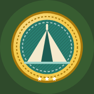

<!DOCTYPE html>
<html lang="da">
<head>
<meta charset="UTF-8">
<meta name="viewport" content="width=device-width, initial-scale=1, viewport-fit=cover">
<meta name="theme-color" content="#2f4a2b">
<meta name="apple-mobile-web-app-capable" content="yes">
<meta name="mobile-web-app-capable" content="yes">
<meta name="apple-mobile-web-app-title" content="Spejderquiz">
<meta name="apple-mobile-web-app-status-bar-style" content="default">
<link rel="manifest" href="manifest.webmanifest">
<link rel="icon" type="image/png" sizes="192x192" href="icons/icon-192.png">
<link rel="apple-touch-icon" href="icons/apple-touch-icon.png">
<title>Spejderquiz</title>
<style>
:root{
  --bg:#ece3cc; --paper:#fbf7ec; --paper2:#f2ead6; --ink:#2a2a1f; --muted:#6f6a55;
  --forest:#2f4a2b; --green:#3f6d36; --green-d:#27451f; --moss:#7d9b3c;
  --earth:#8a5a35; --earth-d:#5c3a20; --line:#dccfae;
  --ok:#2f8f46; --ok-bg:#e1f3dd; --bad:#c4392d; --bad-bg:#fbe3df; --gold:#e0a923;
}
*{box-sizing:border-box;-webkit-tap-highlight-color:transparent}
[hidden]{display:none!important}
html{background:var(--bg)}
body{margin:0;min-height:100vh;font-family:system-ui,-apple-system,"Segoe UI",Roboto,"Helvetica Neue",Arial,sans-serif;
  color:var(--ink);background:var(--bg);
  background-image:radial-gradient(ellipse at top,#f8f1de 0,rgba(248,241,222,0) 65%);
  -webkit-text-size-adjust:100%;}
body::before{content:"";position:fixed;left:0;right:0;bottom:0;height:110px;pointer-events:none;z-index:0;opacity:.13;
  background:url("data:image/svg+xml;utf8,<svg xmlns='http://www.w3.org/2000/svg' viewBox='0 0 400 110' preserveAspectRatio='none'><path d='M0 110V80l14-34 14 34 6-12 16-50 16 50 8-18 12-34 12 34 10-22 18-54 18 54 8-16 12-30 12 30 10-24 16-46 16 46 8-14 12-36 12 36 10-26 16-44 16 44 6-10 12-30 12 30 L400 76V110Z' fill='%232f4a2b'/></svg>") bottom/100% 100% no-repeat;}
button,input{font:inherit;color:inherit}
button{cursor:pointer}
#app{position:relative;z-index:1;max-width:520px;margin:0 auto;padding:16px 16px calc(40px + env(safe-area-inset-bottom));min-height:100vh}
h1,h2,h3{margin:0;line-height:1.2}
p{line-height:1.45}
.muted{color:var(--muted)}
.center{text-align:center}

/* Topbar */
.topbar{display:flex;align-items:center;gap:10px;margin:2px 0 14px}
.topbar h1{flex:1;font-size:21px;color:var(--forest);text-align:center}
.iconbtn{flex:none;width:48px;height:48px;border-radius:14px;border:none;background:var(--paper);
  box-shadow:0 3px 0 var(--line);font-size:21px;display:grid;place-items:center;padding:0}
.iconbtn:active{transform:translateY(2px);box-shadow:0 1px 0 var(--line)}
.spacer{width:48px;flex:none}

/* Knapper */
.btn{display:flex;align-items:center;justify-content:center;gap:10px;width:100%;min-height:58px;padding:14px 18px;
  border:none;border-radius:16px;font-size:18px;font-weight:700;color:#fff;background:var(--green);
  box-shadow:0 4px 0 var(--green-d);margin:10px 0;transition:transform .08s,box-shadow .08s;text-align:center}
.btn:active{transform:translateY(3px);box-shadow:0 1px 0 var(--green-d)}
.btn.secondary{background:var(--paper);color:var(--forest);box-shadow:0 4px 0 var(--line)}
.btn.earth{background:var(--earth);box-shadow:0 4px 0 var(--earth-d)}
.btn.gold{background:#c98a16;box-shadow:0 4px 0 #8a5d0b}
.btn:disabled{opacity:.45;pointer-events:none}
.row{display:flex;gap:10px}.row>*{flex:1}

/* Kort */
.card{background:var(--paper);border-radius:20px;padding:16px;margin-bottom:14px;
  box-shadow:0 2px 0 rgba(0,0,0,.06),0 8px 22px rgba(70,50,15,.08);border:1px solid rgba(220,207,174,.6)}

/* Velkomst / vælg */
.hero{text-align:center;padding:10px 0 6px}
.hero h1{font-size:32px;color:var(--forest);letter-spacing:.5px;margin-top:6px}
.hero p{margin:4px 0 16px;color:var(--muted)}
.charrow{display:flex;align-items:center;gap:12px;padding:10px 12px;cursor:pointer}
.charrow .mini{width:64px;height:64px;flex:none;border-radius:50%;background:#e4ecd6;overflow:hidden}
.charrow .mini svg{width:100%;height:100%}
.charrow .info{flex:1;min-width:0}
.charrow .info b{display:block;font-size:18px;overflow:hidden;text-overflow:ellipsis;white-space:nowrap}
.charrow .info span{font-size:14px;color:var(--muted)}

/* Editor */
.preview{width:170px;margin:0 auto}
.preview svg{width:100%;display:block}
.lbl{display:block;font-weight:700;margin:14px 0 8px;color:var(--forest)}
.lbl:first-child{margin-top:0}
input[type=text]{width:100%;min-height:54px;border-radius:14px;border:2px solid var(--line);background:#fff;padding:10px 14px;font-size:18px;outline:none}
input[type=text]:focus{border-color:var(--moss)}
input.err{border-color:var(--bad);animation:shake .4s}
.swatches{display:flex;flex-wrap:wrap;gap:10px}
.sw{width:46px;height:46px;border-radius:50%;border:3px solid #fff;box-shadow:0 0 0 2px var(--line);padding:0}
.sw.on{box-shadow:0 0 0 3px var(--forest);transform:scale(1.08)}
.chips{display:flex;flex-wrap:wrap;gap:8px}
.chip{min-height:46px;padding:8px 14px;border-radius:999px;border:2px solid var(--line);background:#fff;font-weight:600;font-size:16px}
.chip.on{background:var(--forest);border-color:var(--forest);color:#fff}

/* Profil */
.profile{text-align:center;background:linear-gradient(180deg,#dfe9cf 0,var(--paper) 55%)}
.titler{display:flex;flex-wrap:wrap;gap:6px;justify-content:center;margin-top:6px}.titler span{background:var(--gold,#e8b84a);color:#3b2a0a;border-radius:999px;padding:3px 10px;font-weight:800;font-size:13px}
.fugle{position:absolute;inset:0;pointer-events:none;overflow:hidden;border-radius:22px;z-index:61}.fugle span{position:absolute;left:-10%;width:26px;animation:flyv 14s linear infinite}.fugle svg{display:block;width:100%;height:auto;filter:drop-shadow(0 6px 3px rgba(0,0,0,.18))}.fugle .vinge{transform-box:fill-box;transform-origin:center;animation:flaks .5s ease-in-out infinite alternate}@keyframes flaks{to{transform:scaleY(.35)}}
@keyframes flyv{0%{transform:translate(0,0)}25%{transform:translate(32vw,-10px)}50%{transform:translate(64vw,8px)}75%{transform:translate(96vw,-6px)}100%{transform:translate(130vw,0)}}
.rank-pill{display:inline-flex;align-items:center;gap:6px;background:var(--forest);color:#fff;border-radius:999px;padding:6px 14px;font-weight:700;font-size:15px}
.avatar-wrap{width:min(230px,62vw);margin:8px auto 0}
.avatar-wrap svg{width:100%;display:block}
.stats{display:flex;justify-content:space-around;margin:12px 0 4px}
.stats div{display:flex;flex-direction:column}
.stats b{font-size:22px;color:var(--forest)}
.stats span{font-size:13px;color:var(--muted)}
.prog{margin-top:10px}
.bar{height:12px;border-radius:8px;background:#e2d7bb;overflow:hidden}
.bar i{display:block;height:100%;background:linear-gradient(90deg,var(--moss),var(--gold));border-radius:8px}
.prog small{display:block;margin-top:6px;color:var(--muted)}
.toggle{display:flex;align-items:center;justify-content:space-between;gap:12px;font-weight:600;min-height:44px}
.toggle small{display:block;font-weight:400;color:var(--muted)}
.switch{position:relative;width:58px;height:34px;flex:none}
.switch input{opacity:0;width:100%;height:100%;margin:0;position:absolute;z-index:2;cursor:pointer}
.switch span{position:absolute;inset:0;border-radius:20px;background:#cfc4a6;transition:.2s}
.switch span::after{content:"";position:absolute;width:26px;height:26px;left:4px;top:4px;border-radius:50%;background:#fff;transition:.2s;box-shadow:0 1px 3px rgba(0,0,0,.3)}
.switch input:checked+span{background:var(--green)}
.switch input:checked+span::after{left:28px}

.install{display:flex;align-items:center;gap:12px}
.install img{width:52px;height:52px;border-radius:12px;flex:none}
.install div{flex:1;min-width:0}
.install div>b{display:block;color:var(--forest)}
.install small{color:var(--muted);line-height:1.35;display:block}
.backup>b,.fejlkort>b,.indst>b{display:block;color:var(--forest)}
/* Adventureløb */
.kortramme{position:relative;margin-bottom:10px}
.kortscroll{overflow:auto;max-height:min(50vh,360px);border-radius:18px;box-shadow:inset 0 0 0 3px rgba(0,0,0,.12),0 8px 20px rgba(40,30,10,.2);background:#6f9a45;-webkit-overflow-scrolling:touch}
.loebkort{display:block;min-width:100%;height:auto}
.btn.rute{flex-direction:column;gap:2px}
.zoom{position:absolute;right:8px;bottom:8px;display:flex;gap:6px}
.zoom .chip{width:40px;height:40px;padding:0;font-size:22px;font-weight:800;justify-content:center;box-shadow:0 2px 6px rgba(0,0,0,.25)}
.sti{fill:none;stroke:#efdfb4;stroke-width:6;stroke-linecap:round;opacity:.9}
.sti.fravalgt{opacity:.25}
.gaaet{fill:none;stroke:#7a4b2a;stroke-width:3;stroke-dasharray:6 5;stroke-linecap:round}
#lbrik{transition:transform 1.1s ease-in-out}
.lpost.naeste{animation:blink 1.2s ease-in-out infinite}
.hjerter{font-size:14px;letter-spacing:-1px;white-space:nowrap}
.loebhead{display:flex;align-items:center;gap:12px}.loebhead b{display:block}.loebhead small{color:var(--muted)}
.rollerk{min-height:56px}.rolleik{font-size:24px;width:30px;text-align:center}.rollenavn{font-size:14px;max-width:70px;overflow:hidden;text-overflow:ellipsis}
.rollerk .chip{padding:6px 10px}
.jokerbar{background:var(--paper);border-radius:16px;padding:10px 12px;margin:10px 0;box-shadow:0 2px 0 var(--line)}
.jokerbar small{display:block;color:var(--muted);margin-bottom:6px}.jokerbar .row{flex-wrap:wrap;gap:6px}.jokerbar .chip{flex:1 1 auto;justify-content:center}
.kompassvg{display:block;width:100%;max-width:260px;margin:8px auto 0}
.opgtitel{display:block;margin-top:8px;color:var(--forest)}
.stjerner3 span{font-size:44px;color:#d8cfb8}.stjerner3 span.on{color:#f2b630;text-shadow:0 2px 0 #b07a00}
.stjsm span{color:#cfc4a6}.stjsm span.on{color:#e0a020}
.loebnr{flex:none;width:46px;height:46px;border-radius:12px;background:#e2ebd2;display:grid;place-items:center;align-content:center;font-size:22px;line-height:1}
.loebnr small{font-size:11px;font-weight:800;color:var(--forest)}
.loebrk .lvltxt small+small{margin-top:1px}
.fortsaet{display:flex;align-items:center;gap:10px;background:#fff7d6;border:2px solid #e8c95a}
.fortsaet>div{flex:1;min-width:0}.fortsaet b{display:block}.fortsaet small{color:var(--muted);font-size:13px}
.fortsaet .btn{width:auto;margin:0;min-height:44px;padding:8px 14px}
.trofaetop{display:flex;align-items:center;gap:12px}.trofaetop b{display:block}.trofaetop small{color:var(--muted)}
.tider{display:grid;grid-template-columns:repeat(auto-fill,minmax(88px,1fr));gap:6px;margin-top:10px}
.tider div{background:var(--paper2);border-radius:12px;padding:6px;text-align:center}.tider span{display:block;font-size:13px}.tider b{display:block}.tider small{color:#b07a00;font-size:12px}
.mestertrofae{margin-top:10px;background:linear-gradient(135deg,#fff3c4,#f4cb4e);border-radius:14px;padding:10px;text-align:center}
.loebtekst{font-style:italic;line-height:1.45}
.haend{text-align:center}
.lejrvalg{flex-direction:column;gap:6px;margin-top:8px}.lejrvalg .chip{justify-content:flex-start;text-align:left;white-space:normal}
.qstats .rest{color:#b3261e}
/* Spejderhytten */
.hyttescene{aspect-ratio:300/220}
.hting{position:absolute;aspect-ratio:1;display:grid;place-items:center;pointer-events:none}
.hting svg{width:100%;height:100%}.hting .emo{font-size:clamp(22px,8vw,40px);line-height:1}
.hting.trofae{aspect-ratio:auto}
.hylde{display:flex;flex-wrap:wrap;justify-content:center;gap:2px;padding:4px 4px 6px;border-bottom:6px solid #5c3a20;background:rgba(0,0,0,.12);border-radius:6px 6px 0 0;min-height:30px}
.hylde .badge.xs{width:clamp(16px,6vw,26px);height:clamp(16px,6vw,26px)}
.hylde small{color:#fbeedd;font-size:11px;text-align:center}
.moedekort>.btn{margin:10px 0 0}
.nedtael{margin-top:8px;font-size:15px;color:var(--muted)}
.mstats{display:grid;grid-template-columns:repeat(4,1fr);gap:6px;margin:0 0 12px}
.mstats div{background:var(--paper);border-radius:14px;padding:8px 4px;text-align:center;box-shadow:0 2px 0 var(--line)}
.mstats b{display:block;font-size:17px;color:var(--forest)}.mstats span{font-size:11px;color:var(--muted)}
.ugenr.lille{width:44px;height:44px;font-size:17px;border-radius:12px}
.lvlrow .ugenr small{color:#fff;font-size:9px;opacity:.85;text-transform:uppercase}
.hbesked{background:#fff6d8;border:2px solid #f2d27a}
.hytteknap{background:#2f5d62;box-shadow:0 5px 0 #1f3f43}
.hytteknap small{font-weight:600;opacity:.85}
.ugestjerne{background:#fff6d8;border:2px solid #f2c94c;text-align:center}
.mtrin{display:flex;justify-content:space-between;gap:4px;margin:0 0 6px}
.mtrin span{flex:1;display:flex;flex-direction:column;align-items:center;font-weight:800;font-size:15px;color:var(--muted)}
.mtrin span small{font-size:10.5px;font-weight:700;margin-top:2px}
.mtrin span.nu{color:var(--forest)}.mtrin span.ok{color:var(--ok)}
.belon .belonliste{display:flex;flex-wrap:wrap;gap:6px;margin:8px 0}
.belonliste span{display:inline-flex;align-items:center;gap:4px;background:var(--paper2);border-radius:20px;padding:4px 10px;font-weight:700;font-size:14px}
.belonliste .matik{width:20px;height:20px}
.belon small{display:block;margin-top:4px;color:var(--muted)}
.indst .toggle{margin-top:10px}
.oplaesknap{margin-top:12px}
/* Større tekst */
.stortekst .qtext{font-size:25px}
.stortekst .ans{font-size:21px;min-height:70px}
.stortekst .fb,.stortekst .fb p{font-size:19px}
.stortekst .fb b.head{font-size:22px}
.stortekst .qtopic{font-size:15px}
.stortekst .trinknap,.stortekst .trinliste li{font-size:19px}
.stortekst .btn{font-size:20px}
.stortekst .card p,.stortekst .review li,.stortekst .muted{font-size:18px}
.stortekst small{font-size:16px}
.ugetop{display:flex;gap:12px;align-items:center}
.ugetop b{display:block;color:var(--forest)}.ugetop small{color:var(--muted);line-height:1.35;display:block}
.ugenr{flex:none;width:56px;height:56px;border-radius:14px;background:var(--forest);color:#fff;display:grid;place-items:center;align-content:center;font-weight:800;font-size:22px;line-height:1}
.ugetop .ugenr small{font-size:11px;font-weight:700;color:#fff;opacity:.85;text-transform:uppercase;letter-spacing:.04em;line-height:1}
.ugebest{margin:10px 0 0;font-size:15px}
.ugekort>.btn{margin:10px 0 0}
.fejlkort>small{color:var(--muted);line-height:1.35;display:block;margin:2px 0 0}
.fejlkort>.btn{margin:12px 0 0}
.backup>small{color:var(--muted);line-height:1.35;display:block;margin:2px 0 10px}
.backup .row{display:flex;gap:8px}
.backup .btn{min-height:48px;font-size:16px;padding:10px 12px}
.backup .row .btn{flex:1;margin:0}
.backup>.btn{margin:8px 0 0}
.install .btn{width:auto;min-height:46px;margin:0;padding:10px 16px;font-size:16px}
/* Mærker */
.badge{position:relative;width:84px;height:84px;margin:0 auto}
.badge svg{width:100%;height:100%;display:block;filter:drop-shadow(0 3px 2px rgba(0,0,0,.25))}
.badge.locked svg{filter:grayscale(1) opacity(.5)}
.badge.faded svg{filter:saturate(.35) opacity(.75)}
.badge.xs{width:30px;height:30px;margin:0}
.badge.sm{width:60px;height:60px}
.badge.lg{width:130px;height:130px}
.badge.xl{width:190px;height:190px}
.umaerke{cursor:pointer}.umaerke:active{opacity:.7}
.maerkestor .badge.xl{width:min(240px,62vw);height:min(240px,62vw);animation:maerkezoom .35s cubic-bezier(.2,1.4,.5,1)}
@keyframes maerkezoom{from{transform:scale(.25);opacity:0}to{transform:scale(1);opacity:1}}
.lock{position:absolute;right:-2px;bottom:-2px;width:34%;height:34%;border-radius:50%;background:#fff;display:grid;place-items:center;box-shadow:0 1px 3px rgba(0,0,0,.3)}
.lock svg{width:62%;height:62%;filter:none!important}
.summary{display:flex;justify-content:center;gap:14px;font-weight:700;margin-bottom:12px;flex-wrap:wrap}
.summary span{background:var(--paper);border-radius:999px;padding:6px 12px;box-shadow:0 2px 0 var(--line)}
.grid{display:grid;grid-template-columns:repeat(3,1fr);gap:10px}
.gruppe{display:flex;align-items:center;gap:10px;margin:18px 2px 8px}.gruppe b{font-size:17px;color:var(--forest)}.gruppe b span{font-weight:700;color:var(--muted)}
.gruppebar{height:6px;border-radius:3px;background:var(--paper2);margin:-2px 2px 10px;overflow:hidden}.gruppebar i{display:block;height:100%;background:linear-gradient(90deg,#b0702f,#9aa6b2,#e0a923)}
.bcell{background:var(--paper);border:1px solid rgba(220,207,174,.7);border-radius:18px;padding:12px 4px 10px;text-align:center;box-shadow:0 3px 0 var(--line);display:flex;flex-direction:column;align-items:center;gap:6px;min-height:150px}
.bcell:active{transform:translateY(2px)}
.bcell .badge{width:74px;height:74px}
.bcell b{font-size:13px;line-height:1.2}
.bcell small{font-size:12px;font-weight:700;padding:2px 8px;border-radius:999px;background:var(--paper2);color:var(--muted)}
.bcell small.l1{background:#f1dcc6;color:#7e4a1f}.bcell small.l2{background:#e5e9ee;color:#55606a}.bcell small.l3{background:#fbecb9;color:#8a6208}

/* Emne */
.emnehead{text-align:center}
.emnehead p{margin:10px 0 0;color:var(--muted)}
.lvlcard .lvltop{display:flex;align-items:center;gap:12px}
.lvlcard .lvltop .badge{margin:0;flex:none}
.lvlcard .lvltxt{flex:1}
.lvlcard .lvltxt b{font-size:18px;display:block}
.lvlcard .lvltxt small{display:block;color:var(--muted);margin-top:2px}
.lvlcard.laast{opacity:.75}
.lvlcard .btn{margin-bottom:0}
.status{font-weight:700}
.status.done{color:var(--ok)}

/* Træning */
.sect{font-weight:700;color:var(--forest);margin:4px 0 10px}

/* Quiz */
.quiztop{display:flex;align-items:center;gap:10px;margin-bottom:10px}
.qinfo{flex:1;min-width:0}
.qinfo small{display:block;color:var(--muted);font-size:13px;white-space:nowrap;overflow:hidden;text-overflow:ellipsis}
.qinfo b{font-size:17px}
.qstats{display:flex;flex-direction:column;align-items:flex-end;gap:2px;font-weight:700;font-size:15px}
.streak.hot{color:#d35400;animation:pulse 1s infinite}
.dots{display:flex;gap:5px;margin-bottom:12px}
.dots i{flex:1;height:8px;border-radius:5px;background:#ddd1b2}
.dots i.now{background:var(--moss)}
.dots i.ok{background:var(--ok)}
.dots i.bad{background:var(--bad)}
.timer{display:flex;align-items:center;gap:10px;margin-bottom:12px}
.timer .bar{flex:1;height:14px}
.timer .bar i{width:100%;transition:width .1s linear;background:linear-gradient(90deg,#5fa04e,#9cc24a)}
.timer.low .bar i{background:var(--bad)}
.timer span{width:30px;text-align:right;font-weight:800;font-variant-numeric:tabular-nums}
.timer.low span{color:var(--bad)}
.qcard{padding:18px}
.qtopic{display:flex;align-items:center;gap:8px;font-size:13px;font-weight:700;color:var(--muted);text-transform:uppercase;letter-spacing:.4px}
.qtext{font-size:20px;font-weight:700;margin:10px 0 0;line-height:1.35}
.ans{display:flex;align-items:center;gap:12px;width:100%;min-height:62px;padding:12px 14px;margin:0 0 10px;
  border:2px solid var(--line);border-radius:16px;background:var(--paper);font-size:17px;text-align:left;
  box-shadow:0 3px 0 var(--line);transition:transform .08s}
.ans:active{transform:translateY(2px)}
.ans .letter{flex:none;width:34px;height:34px;border-radius:50%;background:var(--paper2);display:grid;place-items:center;font-weight:800;color:var(--forest)}
.ans.correct{background:var(--ok-bg);border-color:var(--ok);box-shadow:0 3px 0 var(--ok)}
.ans.correct .letter{background:var(--ok);color:#fff}
.ans.wrong{background:var(--bad-bg);border-color:var(--bad);box-shadow:0 3px 0 var(--bad);animation:shake .45s}
.ans.wrong .letter{background:var(--bad);color:#fff}
.ans.dim{opacity:.5}
.ans:disabled{cursor:default}
.ans.correct.pop{animation:popin .45s}
.fb{border-radius:16px;padding:14px 16px;margin-top:4px;border-left:6px solid}
.fb.ok{background:var(--ok-bg);border-color:var(--ok)}
.fb.bad{background:var(--bad-bg);border-color:var(--bad)}
.fb b.head{font-size:19px}
.fb.ok b.head{color:var(--ok)}.fb.bad b.head{color:var(--bad)}
.fb p{margin:8px 0 0}
.forkl{color:#3d3a2c}
.plus{display:inline-block;margin-left:6px;color:#b07a00;animation:floatup 1s ease-out}

/* Resultat */
.score{width:150px;height:150px;border-radius:50%;margin:6px auto 12px;display:grid;place-items:center;background:conic-gradient(var(--c) calc(var(--p)*1%),#e2d7bb 0)}
.score div{width:118px;height:118px;border-radius:50%;background:var(--paper);display:grid;place-items:center;font-size:36px;font-weight:800;color:var(--forest)}
.resmsg{font-size:22px;font-weight:800;text-align:center}
.review{list-style:none;padding:0;margin:10px 0 0}
.review li{padding:10px 0;border-top:1px solid var(--line);font-size:15px}
.review li b{display:block;font-weight:600}
.review li span{display:block;color:var(--muted);margin-top:3px}
.review li.ok b::before{content:"✓ ";color:var(--ok);font-weight:800}
.review li.bad b::before{content:"✗ ";color:var(--bad);font-weight:800}
details summary{cursor:pointer;font-weight:700;color:var(--forest);min-height:40px;display:flex;align-items:center}

/* Faner og lejrplads */
#tabs{position:fixed;left:0;right:0;bottom:0;z-index:50;display:flex;justify-content:center;background:var(--paper);border-top:1px solid var(--line);
  box-shadow:0 -4px 16px rgba(60,40,10,.08);padding:6px max(8px, env(safe-area-inset-right, 0px)) calc(6px + env(safe-area-inset-bottom, 0px)) max(8px, env(safe-area-inset-left, 0px))}
#tabs .in{display:flex;gap:4px;width:100%;max-width:520px}
.tab{flex:1;border:none;background:none;display:flex;flex-direction:column;align-items:center;gap:3px;min-height:56px;font-size:12px;font-weight:700;color:var(--muted);border-radius:14px;padding:6px 0}
.tab span{font-size:22px;line-height:1}
.tab.on{color:var(--forest);background:#e2ebd2}
body.has-tabs #app{padding-bottom:calc(110px + env(safe-area-inset-bottom, 0px))}
#toast{position:fixed;left:50%;bottom:calc(88px + env(safe-area-inset-bottom, 0px));transform:translateX(-50%);z-index:900;width:max-content;max-width:min(460px, calc(100% - 32px));
  background:#2a2a1f;color:#fff;padding:12px 16px;border-radius:14px;font-size:15px;line-height:1.35;box-shadow:0 6px 20px rgba(0,0,0,.25);animation:fadein .2s}
.lejrinfo{display:flex;flex-wrap:wrap;gap:8px;justify-content:center;margin-bottom:12px}
.chip{background:var(--paper);border-radius:999px;padding:7px 14px;box-shadow:0 2px 0 var(--line);font-size:15px}
.byggebar{display:flex;align-items:center;gap:10px;background:#fff7d6;border:2px solid #e8c95a;border-radius:16px;padding:8px 10px;margin-bottom:10px}
.byggebar div:nth-child(2){flex:1;min-width:0}.byggebar b{display:block}.byggebar small{color:var(--muted)}
.byggebar .bik{width:44px;height:44px;display:grid;place-items:center;font-size:30px;flex:none}
.byggebar .bik svg{width:100%;height:100%}
.byggebar .btn{width:auto;min-height:44px;margin:0;padding:8px 14px;font-size:15px}
.lejrtop{display:flex;flex-direction:column;align-items:center;gap:6px;margin:2px 0 8px}.lejrtop h1{font-size:22px;margin:4px 0 0;text-align:center}
.lejrtop .lejrinfo{display:flex;flex-wrap:wrap;justify-content:center;gap:6px;margin:0}.lejrtop .chip{padding:5px 10px;font-size:14px;display:inline-flex;align-items:center;gap:3px}.lejrtop .chip .matik{width:20px;height:20px}
body.lejrskaerm #app{padding-bottom:var(--lejrluft, calc(200px + env(safe-area-inset-bottom, 0px)))}
.lejrbund{position:fixed;left:0;right:0;bottom:calc(70px + env(safe-area-inset-bottom, 0px));z-index:55;display:flex;justify-content:center;gap:8px;padding:8px max(10px, env(safe-area-inset-left, 0px));pointer-events:none}
.lejrbund button{pointer-events:auto;flex:1;max-width:170px;min-height:58px;border:none;border-radius:16px;background:var(--forest);color:#fff;font-weight:800;font-size:22px;display:flex;flex-direction:column;align-items:center;justify-content:center;gap:2px;box-shadow:0 4px 0 #1f3320,0 6px 16px rgba(0,0,0,.18);position:relative;line-height:1}
.lejrbund button span{font-size:12px;line-height:1.1;text-align:center}.lejrbund button.on{background:#c98a1c;box-shadow:0 4px 0 #8a5c0e,0 6px 16px rgba(0,0,0,.18)}
.lejrbund .prik{position:absolute;top:6px;right:10px;width:10px;height:10px;border-radius:50%;background:#f4cb4e;border:2px solid #fff}
.arkbag{position:fixed;inset:0;z-index:53;background:rgba(30,30,20,.35)}
.ark{position:fixed;left:0;right:0;bottom:calc(140px + env(safe-area-inset-bottom, 0px));z-index:54;margin:0 auto;max-width:520px;max-height:calc(100dvh - 210px);overflow-y:auto;overscroll-behavior:contain;background:var(--bg,#f5ecd8);border-radius:20px 20px 0 0;padding:0 12px 14px;box-shadow:0 -8px 24px rgba(0,0,0,.2);animation:arkind .2s ease-out}
.arktop{position:sticky;top:0;z-index:2;display:flex;align-items:center;justify-content:space-between;padding:12px 2px 8px;background:inherit}.arktop b{font-size:19px;color:var(--forest)}.arktop .lukx{position:static;float:none;margin:0}
@keyframes arkind{from{transform:translateY(30px);opacity:0}to{transform:none;opacity:1}}
.byggebar{position:sticky;top:0;z-index:30}
.celle .vild .vildsvg{width:clamp(18px,6vw,26px);height:auto;display:block}.celle .vild{font-size:clamp(15px,5vw,22px);animation:vildvug 3s ease-in-out infinite;display:inline-block}@keyframes vildvug{50%{transform:rotate(-8deg) scale(1.08)}}
.besoeg{position:absolute;inset:8px;pointer-events:none}
.dyrgaest{position:absolute;transform:translate(-50%,-100%);pointer-events:auto;border:none;background:none;padding:4px;width:clamp(40px,13vw,58px);line-height:0;cursor:pointer;animation:dyrgraes 5s ease-in-out infinite;filter:drop-shadow(0 3px 2px rgba(0,0,0,.25))}
.dyrgaest svg{display:block;width:100%;height:auto}
@keyframes dyrgraes{0%,60%,100%{transform:translate(-50%,-100%) rotate(0)}70%{transform:translate(-50%,-94%) rotate(-7deg)}82%{transform:translate(-50%,-94%) rotate(-7deg)}}
.lejrskilt{display:flex;align-items:center;gap:10px;width:100%;max-width:420px;border:none;border-radius:16px;padding:8px 12px;background:linear-gradient(#b07a45,#8b5a2b);color:#fff8e7;box-shadow:0 3px 0 #5c3a20,0 6px 14px rgba(0,0,0,.15);text-align:left;cursor:pointer;font:inherit}
.lejrskilt .skik{font-size:34px;line-height:1;filter:drop-shadow(0 2px 2px rgba(0,0,0,.25))}.lejrskilt .sktekst{flex:1;min-width:0;display:flex;flex-direction:column;gap:2px}
.lejrskilt b{font-size:19px;line-height:1.1}.lejrskilt small{font-size:12.5px;opacity:.92}.lejrskilt .xptal{font-variant-numeric:tabular-nums}
.xpbar{display:block;height:8px;border-radius:99px;background:rgba(0,0,0,.25);overflow:hidden;margin:3px 0 1px}.xpbar i{display:block;height:100%;background:linear-gradient(90deg,#f4cb4e,#ffe9a0);border-radius:99px}
.sovekap{margin:2px 0 10px;font-size:15px;background:#eef3e4;border-radius:12px;padding:8px 10px}
.lejrskiltmodal{text-align:left;max-height:85dvh;overflow-y:auto}.lejrskiltmodal h3{margin:16px 0 6px;font-size:16px;color:var(--forest)}
.xptab{width:100%;border-collapse:collapse;font-size:14.5px}.xptab td{padding:4px 2px;border-bottom:1px solid var(--line)}.xptab td:last-child{text-align:right;font-weight:800;font-variant-numeric:tabular-nums}
.insp{list-style:none;padding:0;margin:0;display:flex;flex-direction:column;gap:6px;font-size:14px}.insp li{background:var(--paper2);border-radius:10px;padding:7px 9px}.insp li.ok{background:#e6efd9}.insp small{display:block;color:var(--muted);margin-top:2px}
.insp.saet s{opacity:.55}
.lejrtrinstor{font-size:110px;line-height:1.1;animation:popin .8s both}
.pm .plejr{font-size:11.5px;color:var(--forest)}
.katvalg{display:flex;gap:6px;overflow-x:auto;margin:0 -12px 4px;padding:2px 12px 8px;scrollbar-width:none;position:sticky;top:52px;z-index:2;background:inherit}.katvalg::-webkit-scrollbar{display:none}
.katvalg button{flex:none;border:2px solid var(--line);background:var(--paper);color:var(--ink);border-radius:999px;padding:7px 12px;font-weight:700;font-size:14px;white-space:nowrap}
.katvalg button.on{background:var(--forest);border-color:var(--forest);color:#fff}
.shop .item.bygget{background:#e6efd9;border-color:#9cc08a}.shop .item.bygget .ik{opacity:.85}
.byggetmaerke{display:inline-block;margin-top:4px;background:var(--forest);color:#fff;border-radius:999px;padding:3px 10px;font-size:13px;font-weight:800}
.krav.lejrlaas{background:#f1e2c3;color:#7a4b12;border-radius:999px;padding:2px 8px;font-size:12px;font-weight:800;white-space:normal}
.aktvalg{display:grid;grid-template-columns:1fr 1fr;gap:8px;margin:8px 0}.aktvalg .btn{margin:0}
.aktsem{display:flex;justify-content:center;background:#e9f2dc;border-radius:16px}.aktsem svg{width:min(260px,70vw);height:auto}
.stave{display:flex;flex-wrap:wrap;gap:5px;margin:8px 0}.stave span{background:#2f4a2b;color:#fff;border-radius:8px;padding:3px 8px;font-weight:800;font-size:14px}
.butik{display:flex;flex-direction:column;gap:8px;margin:8px 0}.butikrad{display:flex;align-items:center;gap:8px;background:var(--paper);border-radius:12px;padding:8px}.butikrad .matik{width:30px;height:30px;flex:none}.butikrad span{flex:1;min-width:0}.butikrad small{display:block;color:var(--muted)}
.showvalg{display:flex;flex-direction:column;gap:6px}.showvalg .chip{text-align:left;white-space:normal;border-radius:12px}.showvalg .chip.on{background:var(--forest);color:#fff}
.flaggrid{display:grid;grid-template-columns:repeat(4,1fr);gap:6px;margin:8px 0}.flaggrid span{display:flex;flex-direction:column;align-items:center;font-size:24px;background:var(--paper2);border-radius:10px;padding:6px 2px;opacity:.6}.flaggrid span.har{opacity:1;background:#e6efd9}.flaggrid small{font-size:10.5px;text-align:center}
.morseinput{font-size:26px;font-weight:800;letter-spacing:3px;text-align:center;background:#1d2a3a;color:#ffe680;border-radius:12px;padding:10px;min-height:52px;margin:8px 0;word-break:break-all}
.morsetab{display:grid;grid-template-columns:repeat(4,1fr);gap:4px;font-size:13px}
#rutsjer.rutsjer{animation:rutsj 2.4s ease-in forwards}@keyframes rutsj{0%{transform:translate(0,0)}30%{transform:translate(70px,18px)}60%{transform:translate(120px,90px)}100%{transform:translate(220px,140px)}}
.lejrmap.k3{max-width:330px;margin:0 auto}.lejrmap.k4{max-width:400px;margin:0 auto}
.celle.udvidet{animation:udvid .7s cubic-bezier(.2,1.4,.4,1) both;animation-delay:.35s}@keyframes udvid{from{transform:scale(.2);opacity:0}to{transform:none;opacity:1}}
.vogn{background:#efe2c4;border-radius:14px;padding:10px;margin-bottom:12px}
.celle.forbudt{box-shadow:inset 0 0 0 3px #c62828;background:#e9b3a8 !important}
.bcell.emnelaas{opacity:.7}.bcell.emnelaas small{color:#7a4b12;font-weight:700}.lejrlaaskort{background:#f1e2c3;color:#7a4b12;font-weight:700}
.lvlrow .lejrlaas{color:#7a4b12;font-weight:800;font-size:12px;white-space:nowrap}.nytliste{text-align:left;font-size:15px;display:flex;flex-direction:column;gap:4px}
button.lagerchip{border:none;font:inherit;color:inherit;cursor:pointer}
.matinfo .matik{width:56px;height:56px}.matinfo h3{margin:14px 0 6px;font-size:16px;color:var(--forest)}.matinfo ol{margin:0;padding-left:20px;display:flex;flex-direction:column;gap:6px;font-size:15px}.matinfo p{font-size:15px}
.guidebar{display:flex;align-items:center;gap:8px;width:100%;max-width:420px;border:2px solid #e2c56b;background:#fff7d6;color:var(--ink);border-radius:14px;padding:7px 12px;font:inherit;font-size:14.5px;text-align:left;cursor:pointer;animation:guidepuls 2.6s ease-in-out infinite}
.guidebar span:nth-child(2){flex:1;min-width:0}.guidebar .pil{font-size:22px;color:#b07a1a}@keyframes guidepuls{50%{box-shadow:0 0 0 4px rgba(242,201,76,.35)}}
.guide{text-align:left}.guideliste{padding-left:4px;list-style:none;margin:6px 0;display:flex;flex-direction:column;gap:4px;font-size:14.5px}.guideliste li.ok{opacity:.6}.guideliste li.nu{font-weight:800}
.guidenu{background:#fff7d6;border-radius:14px;padding:10px 12px;margin:10px 0}.guidenu p{margin:6px 0;font-size:15px}.guidenu .mangler{color:#b3261e}
.lageradv{display:block;color:#b3261e;font-weight:700;font-size:12.5px}
.bcell small.klar{color:#2e7d32;font-weight:800}
.byggebar .regeltekst{display:block;color:#8a3b12;font-weight:700;margin-top:3px}
.kathead{margin:14px 0 8px;font-size:17px;color:var(--forest)}
.mertekst{margin:0 0 10px;font-size:15px;color:var(--muted)}.mertekst summary{list-style:none;cursor:pointer;font-weight:400;color:var(--muted);font-size:15px;padding:0;margin:0;background:none;border:none}.mertekst summary::-webkit-details-marker{display:none}
.mertekst u{color:var(--forest);font-weight:800;text-decoration:none;white-space:nowrap;margin-left:4px}.mertekst[open] u{display:none}.mertekst p{margin:4px 0 0}
body.lejrskaerm #toast{bottom:calc(160px + env(safe-area-inset-bottom, 0px))}
.celle .okse{position:absolute;top:2px;right:2px;width:30%;z-index:3;animation:hug .6s ease-in-out infinite}.celle .okse svg{display:block;width:100%;height:auto}
.celle .tid .tidik{width:9px;height:11px;vertical-align:-1px}
.celle.voks .emo{font-size:clamp(16px,6vw,26px)}
/* Lejrpladsen er én sammenhængende græsmark: græsstrå-tekstur, slåede baner og lidt lys/skygge. Felterne er næsten usynlige. */
.lejrmap{display:grid;grid-template-columns:repeat(6,1fr);gap:1px;padding:8px;border-radius:22px;
  background:
    url("data:image/svg+xml,%3Csvg xmlns='http://www.w3.org/2000/svg' width='46' height='46'%3E%3Cg stroke-linecap='round' stroke-width='1.6' fill='none'%3E%3Cpath d='M5 12l1-5M7 13l2-4M30 8l-1-5M32 9l2-4M18 30l1-5M20 31l-1-4M40 34l1-5M42 35l2-4M10 42l-1-4M26 20l1-4' stroke='%236f9a44' stroke-opacity='.55'/%3E%3Cpath d='M14 6l1-4M36 22l-1-5M3 28l1-4M24 42l2-4M44 12l-1-4M34 44l1-4' stroke='%23a9cf78' stroke-opacity='.55'/%3E%3C/g%3E%3Ccircle cx='22' cy='9' r='1' fill='%23a9cf78' fill-opacity='.5'/%3E%3Ccircle cx='9' cy='34' r='1' fill='%236f9a44' fill-opacity='.5'/%3E%3C/svg%3E"),
    radial-gradient(ellipse at 25% 20%, rgba(255,255,230,.18), transparent 55%),
    radial-gradient(ellipse at 80% 85%, rgba(30,60,10,.16), transparent 60%),
    repeating-linear-gradient(180deg, rgba(255,255,255,.05) 0 34px, rgba(0,0,0,.03) 34px 68px),
    #86b25a;
  box-shadow:inset 0 0 0 4px #5f8a3a,inset 0 0 18px rgba(40,70,15,.35),0 8px 20px rgba(60,40,10,.15)}
.lejrmap{grid-auto-rows:1fr;isolation:isolate}   /* alle lag (rækker, dyr, lys) holdes inde i pladsen – så panelerne altid ligger øverst */
.celle.stor{aspect-ratio:auto}
.celle.wire .ting{right:auto;width:calc(300% + 2px)}.celle.wire.spejl .ting{left:auto;right:0}
.celle.wire .ting>svg{width:100%;height:100%;overflow:visible}
.celle.stor .ting>svg{width:94%;height:94%}
.celle{aspect-ratio:1;border:none;padding:0;border-radius:6px;position:relative;display:grid;place-items:center;line-height:1;min-width:0}
.celle.a{background:transparent;box-shadow:inset 0 0 0 1px rgba(255,255,255,.07)}.celle.b{background:rgba(255,255,255,.035);box-shadow:inset 0 0 0 1px rgba(255,255,255,.07)}
.celle.vand{background:transparent}
/* Dag og nat (lysHTML): ét lag over pladsen */
.lys{position:absolute;inset:0;border-radius:22px;pointer-events:none;z-index:50;overflow:hidden}
.lys .tone{position:absolute;inset:0}.lys .lyspos{position:absolute;inset:8px}
.lys.morgen .tone{background:linear-gradient(180deg,rgba(255,236,214,.28),rgba(214,232,255,.18));mix-blend-mode:soft-light}
.lys.aften .tone{background:linear-gradient(180deg,rgba(255,150,70,.32),rgba(150,70,40,.22));mix-blend-mode:multiply}
.lys.nat .tone{background:radial-gradient(ellipse at 50% 40%,rgba(28,40,86,.62),rgba(10,16,44,.8));mix-blend-mode:multiply}
.lys i{position:absolute;display:block;transform:translate(-50%,-50%);border-radius:50%}
.lys .lysplet{width:calc(var(--c)*1.5);aspect-ratio:1;background:radial-gradient(closest-side,rgba(255,196,110,.75),rgba(255,150,60,.25) 55%,rgba(255,150,60,0));mix-blend-mode:screen}
.lys .lysplet.stor{width:calc(var(--c)*2.6)}.lys .lysplet.lille{width:calc(var(--c)*.55);background:radial-gradient(closest-side,rgba(255,232,140,.9),rgba(255,210,110,0))}
.lys.aften .lysplet{opacity:.75}.lys.aften .lysplet.stor{width:calc(var(--c)*2)}
.lys .stjerne{width:3px;height:3px;background:#fff;box-shadow:0 0 4px 1px rgba(255,255,255,.7)}
.lys .stjerne.lev{animation:blinke 3.6s ease-in-out infinite}@keyframes blinke{50%{opacity:.2;transform:translate(-50%,-50%) scale(.6)}}
.lys .dug{width:3px;height:3px;background:rgba(255,255,255,.95);box-shadow:0 0 3px 1px rgba(220,240,255,.8)}
.lys .taage{left:-30%;width:160%;height:26%;border-radius:50%;transform:none;background:radial-gradient(closest-side,rgba(255,255,255,.55),rgba(255,255,255,0));animation:taage 46s ease-in-out infinite alternate}
@keyframes taage{to{transform:translateX(18%)}}
/* Spejderne på pladsen (spejdereHTML) */
.spejdere{position:absolute;inset:8px;pointer-events:none}
.spejderfig{position:absolute;width:clamp(20px,6.4vw,30px);transform:translate(-50%,-100%);border:none;background:none;padding:0;line-height:0;pointer-events:auto;cursor:pointer;filter:drop-shadow(0 2px 1.5px rgba(0,0,0,.3))}
.spejderfig svg{display:block;width:100%;height:auto}
.spejderfig.sidder{width:clamp(17px,5.4vw,25px)}
.spejderfig.padler{width:clamp(15px,4.8vw,22px);clip-path:inset(0 0 38% 0);animation:padle 3.2s ease-in-out infinite}
@keyframes padle{50%{transform:translate(-50%,-96%) rotate(-4deg)}}
.spejderfig.gaar{animation:gaa 30s ease-in-out infinite alternate}
@keyframes gaa{0%,8%{left:var(--x1);top:var(--y1)}92%,100%{left:var(--x2);top:var(--y2)}}
/* Trampestierne (stierHTML): et SVG-lag under søen og felterne */
.lejrmap .stier{position:absolute;left:8px;top:8px;width:calc(100% - 16px);height:calc(100% - 16px);z-index:1;pointer-events:none;overflow:visible}
.stier path{fill:none;stroke-linecap:round;stroke-linejoin:round}
.stier .kant{stroke:rgba(196,186,120,.45);stroke-width:.3}.stier .midte{stroke:rgba(226,214,160,.6);stroke-width:.15;stroke-dasharray:.05 .09}
/* Søen (soeHTML): ét SVG-lag under felterne */
.lejrmap .soe{position:absolute;left:8px;top:8px;width:calc(100% - 16px);height:calc(100% - 16px);z-index:1;pointer-events:none;overflow:visible;clip-path:inset(-6px round 18px)}
.soe .sand rect{fill:#dcc791;stroke:#dcc791;stroke-width:.4;stroke-linejoin:round}
.soe .lavt rect{fill:#79c1e6;stroke:#79c1e6;stroke-width:.36;stroke-linejoin:round}
.soe .dybt rect{fill:#3f93c9;stroke:#3f93c9;stroke-width:.28;stroke-linejoin:round}
.soe .siv path{stroke:#5b7a2e;stroke-width:.025;stroke-linecap:round;fill:none}.soe .siv .dun{stroke:#7a4b22;stroke-width:.045}
.soe .blad{fill:#5f9e3c;stroke:#3f7a2a;stroke-width:.012}.soe .blomst{fill:#f6b3cf;stroke:#fff;stroke-width:.012}
.soe .krus{fill:none;stroke:rgba(255,255,255,.55);stroke-width:.02;transform-box:fill-box;transform-origin:center;animation:krus 6s ease-out infinite}
@keyframes krus{0%{transform:scale(.3);opacity:0}25%{opacity:1}100%{transform:scale(1.6);opacity:0}}
.soe .strom path{stroke:rgba(255,255,255,.5);stroke-width:.025;stroke-linecap:round;stroke-dasharray:.12 .22;animation:strom 2.4s linear infinite}
@keyframes strom{to{stroke-dashoffset:-.68}}
/* Animationerne på lejrpladsen står stille, når pladsen ikke er synlig, og helt, hvis telefonen beder om mindre bevægelse */
.lejrmap.pause .lev,.lejrmap.pause .lev *{animation-play-state:paused !important}
@media (prefers-reduced-motion: reduce){ .lejrmap .lev,.lejrmap .lev *{animation:none !important} }
.celle svg{width:90%;height:90%;position:relative;z-index:1}
.celle .emo{font-size:clamp(24px,8.5vw,40px);position:relative;z-index:1}
/* Dybde: blød skygge under tingen; høje ting vokser op fra bunden og rager ind over feltet ovenover */
.celle .ting{position:absolute;inset:0;display:grid;place-items:center;z-index:1;pointer-events:none}
.celle .ting>svg{width:90%;height:90%}
.celle.hoej .ting{transform:scale(1.32);transform-origin:50% 94%}
.celle .skygge{position:absolute;left:16%;right:16%;bottom:5%;height:20%;border-radius:50%;background:radial-gradient(closest-side,rgba(28,48,12,.42),rgba(28,48,12,0));z-index:0;pointer-events:none}
.celle.hoej .skygge{left:10%;right:10%;bottom:3%;height:22%}
.celle.vand .skygge{background:radial-gradient(closest-side,rgba(10,50,80,.35),rgba(10,50,80,0))}
/* Liv: røg stiger op, bål flakker, flag og vimpler vajer */
.celle .roeg{position:absolute;left:38%;width:24%;bottom:58%;height:90%;z-index:3;pointer-events:none}
.celle .roeg i{position:absolute;left:10%;bottom:0;width:80%;aspect-ratio:1;border-radius:50%;background:radial-gradient(closest-side,rgba(205,205,200,.95),rgba(170,170,165,.5) 60%,rgba(170,170,165,0));animation:roeg 4.2s ease-out infinite;opacity:0}
.celle .roeg i:nth-child(2){animation-delay:-1.4s}.celle .roeg i:nth-child(3){animation-delay:-2.8s}
@keyframes roeg{0%{transform:translate(0,0) scale(.5);opacity:0}15%{opacity:.85}100%{transform:translate(40%,-260%) scale(1.9);opacity:0}}
.celle .glod{position:absolute;left:18%;right:18%;bottom:8%;height:44%;border-radius:50%;z-index:0;pointer-events:none;background:radial-gradient(closest-side,rgba(255,170,60,.55),rgba(255,140,40,0));animation:glod 1.3s ease-in-out infinite alternate}
@keyframes glod{0%{opacity:.55;transform:scale(.92)}40%{opacity:.9;transform:scale(1.05)}70%{opacity:.65}100%{opacity:1;transform:scale(1)}}
.lejrmap .celle.vaj .vift{transform-box:fill-box;transform-origin:0% 50%;animation:vift 2.6s ease-in-out infinite}
.lejrmap .celle.vaj .svaj{transform-box:fill-box;transform-origin:50% 0%;animation:svaj 3.4s ease-in-out infinite}
@keyframes vift{0%,100%{transform:skewY(0) scaleX(1)}30%{transform:skewY(-6deg) scaleX(.93)}65%{transform:skewY(5deg) scaleX(.97)}}
@keyframes svaj{0%,100%{transform:rotate(0)}50%{transform:rotate(4deg)}}
.lejrmap.pause .celle.vaj .vift,.lejrmap.pause .celle.vaj .svaj{animation-play-state:paused}
@media (prefers-reduced-motion: reduce){ .lejrmap .celle .vift,.lejrmap .celle .svaj{animation:none !important} }
.celle.kan{box-shadow:inset 0 0 0 3px rgba(255,255,255,.9);animation:blink 1.2s ease-in-out infinite}
.celle.flyttes{box-shadow:inset 0 0 0 3px #f2c94c}
.celle.ny>*{animation:byg .55s cubic-bezier(.2,.9,.3,1.3)}
.shop{display:grid;grid-template-columns:repeat(3,1fr);gap:10px}
.item{background:var(--paper);border:1px solid rgba(220,207,174,.7);border-radius:18px;padding:10px 4px;text-align:center;box-shadow:0 3px 0 var(--line);
  display:flex;flex-direction:column;align-items:center;gap:5px;min-width:0}
.item:active{transform:translateY(2px)}
.item .ik{width:56px;height:56px;display:grid;place-items:center;border-radius:14px;background:#e2ebd2}
.item .ik svg{width:46px;height:46px}.item .ik .emo{font-size:34px;line-height:1}
.item b{font-size:13px;line-height:1.2}
.item .krav{display:flex;align-items:center;gap:4px;font-size:11px;font-weight:700;color:var(--muted)}
.item .krav.ok{color:var(--ok)}
.item .krav .badge.xs{width:22px;height:22px}
.item .pris{font-weight:800;font-size:14px}
.item .pris.mangler{color:var(--bad)}
.item.laast .ik{filter:grayscale(1);opacity:.5}
.item.valgt{outline:3px solid var(--forest);background:#eef4e2}
.bigik{width:110px;height:110px;margin:0 auto;display:grid;place-items:center}
.bigik svg{width:100%;height:100%}.bigik .emo{font-size:84px;line-height:1}
@keyframes blink{50%{box-shadow:inset 0 0 0 3px rgba(255,255,255,.35)}}
@keyframes byg{0%{transform:scale(0) translateY(10px)}100%{transform:none}}

.item .meta{font-size:11px;color:var(--muted);font-weight:700}
.celle .tid{position:absolute;left:2px;right:2px;bottom:2px;z-index:2;background:rgba(42,42,31,.82);color:#fff;font-size:10px;font-weight:700;border-radius:6px;padding:2px 0;font-variant-numeric:tabular-nums}
.celle.bygger .ting{opacity:.45;filter:saturate(.4)}
.celle .stillads{position:absolute;inset:4% 6% 6%;width:auto;height:auto;z-index:2;pointer-events:none;filter:drop-shadow(0 1px 1px rgba(0,0,0,.25))}
.byggetilst{position:absolute;top:-13px;right:14px;z-index:62;border:2px solid #4f7a2f;background:var(--paper);color:var(--forest);font:inherit;font-size:13px;cursor:pointer;border-radius:14px;padding:2px 9px 2px 6px;display:flex;align-items:center;gap:3px;box-shadow:0 2px 0 #4f7a2f}
.byggetilst span{font-size:12px;font-weight:800}.byggetilst.on{background:var(--forest);color:#fff}
.lejrmap{margin-top:16px}
.bigik.bygger{opacity:.5}
.byggetid{font-size:18px;margin:4px 0;font-variant-numeric:tabular-nums}
.bygkort{padding:12px;background:linear-gradient(180deg,#cfe6f2 0,#e6f0d8 60%,#b9d48f 100%)}
.bygstatus{margin-bottom:8px}.bygstatus b{display:block;margin-bottom:6px;color:var(--forest)}
.bygsvg{width:100%;display:block;touch-action:none;overflow:visible}
.led circle{animation:ledpuls 1.3s ease-in-out infinite}
.led{cursor:pointer}
.led.forkert circle{animation:ledfejl .5s;stroke:var(--bad)}
.bundet-ny{animation:fadein .5s}
.qmark{display:inline-grid;place-items:center;width:22px;height:22px;border-radius:50%;border:2px dashed var(--forest);font-size:13px}
.surbakke{display:flex;gap:8px;flex-wrap:wrap;justify-content:center}
.surchip{flex:1 1 30%;min-width:96px;min-height:64px;display:flex;flex-direction:column;align-items:center;justify-content:center;gap:4px;border:2px solid #d9c08a;background:#f6e9c8;border-radius:16px;
  font-weight:700;font-size:13px;color:#5c3a20;box-shadow:0 3px 0 #d9c08a;touch-action:none;user-select:none;-webkit-user-select:none}
.surchip svg{width:28px;height:28px}.surchip{padding-left:4px;padding-right:4px}.surchip span{hyphens:manual;text-align:center;line-height:1.15}
.surchip.on{background:var(--forest);color:#fff;border-color:var(--forest)}
.surchip.on svg{stroke:#fff}
.spoghost{position:fixed;z-index:2000;pointer-events:none;transform:translate(-50%,-120%);display:flex;flex-direction:column;align-items:center;gap:2px;background:#f6e9c8;border:2px solid #8b5a2b;border-radius:14px;padding:6px 10px;font-size:12px;font-weight:700;color:#5c3a20;box-shadow:0 8px 18px rgba(0,0,0,.3)}
.spoghost svg{width:26px;height:26px}
.teltscene{position:relative;width:100%;aspect-ratio:300/260;border-radius:20px;overflow:hidden;margin-bottom:14px;box-shadow:0 8px 20px rgba(40,30,10,.25)}
.teltbg{position:absolute;inset:0;width:100%;height:100%}
.tplads{position:absolute;aspect-ratio:1;border:none;border-radius:12px;padding:0;background:rgba(255,255,255,.08);display:grid;place-items:center;transform:translateY(0)}
.tplads.gulv{background:rgba(0,0,0,.12)}
.tplads svg{width:96%;height:96%}.tplads .emo{font-size:clamp(24px,9vw,42px);line-height:1}
.tplads.kan{box-shadow:inset 0 0 0 3px rgba(255,255,255,.9);animation:blink 1.2s ease-in-out infinite}
.tplads.flyttes{box-shadow:inset 0 0 0 3px #f2c94c}
@keyframes ledpuls{50%{opacity:.45}}
@keyframes ledfejl{30%{stroke-width:6}}

.aktscene{border-radius:20px;overflow:hidden;margin-bottom:10px;box-shadow:0 8px 20px rgba(40,30,10,.25);background:#0d1630}
.aktsvg{display:block;width:100%;height:auto}
.navnskilt{font-size:10px;fill:#f3e3c3;font-weight:700}
.flamme{transform-box:fill-box;transform-origin:50% 100%;animation:flak .45s ease-in-out infinite alternate}
.flamme.b{animation-duration:.33s}.flamme.c{animation-duration:.27s}
.gnist{opacity:0;animation:gnist 2.7s linear infinite}
.aktbesked{background:var(--paper);border-radius:16px;padding:12px 14px;min-height:50px;line-height:1.45;box-shadow:0 2px 0 var(--line);animation:fadein .3s;margin-bottom:4px}
.aktbesked.tom{visibility:hidden}
.aktbesked small{display:inline-block;margin-top:4px}
.aktopg{background:var(--paper);border-radius:16px;padding:12px 14px;margin:10px 0;text-align:center;line-height:1.4}
.stjerneknap{cursor:pointer}
#gondol{transform:translate(58px,48px)}
#gondol.tur{animation:sus 3s ease-in forwards}
#flaget{transform:translateY(170px)}
#flaget.oppe{animation:hejs 3s ease-out forwards}
#baad.sejler{animation:sejl 3.4s ease-in-out forwards}
#baad.ude{transform:translateX(150px)}
.boelge{animation:boelge 2s ease-in-out infinite alternate}
.dukop{transform-box:fill-box;transform-origin:50% 100%;animation:byg .6s cubic-bezier(.2,.9,.3,1.3)}
@keyframes flak{from{transform:scaleY(.88) skewX(-4deg)}to{transform:scaleY(1.08) skewX(4deg)}}
@keyframes gnist{0%{opacity:0;transform:translate(0,0)}10%{opacity:1}100%{opacity:0;transform:translate(10px,-80px)}}
@keyframes sus{to{transform:translate(276px,176px)}}
@keyframes hejs{to{transform:translateY(20px)}}
@keyframes sejl{to{transform:translateX(150px)}}
@keyframes boelge{to{transform:translateX(8px)}}

.media{display:flex;flex-direction:column;align-items:center;gap:8px;margin-top:12px}
.billede svg{width:100%;max-width:300px;height:auto;display:block;background:#f6f1df;border:2px solid var(--line,#e6dcc4);border-radius:16px}
.media small{text-align:center}
.lampe{width:120px;height:120px;border-radius:50%;transition:box-shadow .05s}
.lampe svg{width:100%;height:100%}
.lampe.paa{box-shadow:0 0 40px 12px rgba(255,220,100,.75)}
.mediaknapper{display:flex;gap:8px;flex-wrap:wrap;justify-content:center}
.mediaknapper .chip{border:none;min-height:40px;font-weight:700;font-size:14px}
.semafor{width:min(220px,62vw);display:block}
.semafor.hvile{opacity:.75}
.raekke{margin-bottom:6px}
.raekke ol{list-style:none;padding:0;margin:0;display:flex;flex-direction:column;gap:8px}
.tomtrin{padding:12px;border:2px dashed var(--line);border-radius:14px;color:var(--muted);font-size:15px;text-align:center}
.trinliste{display:flex;flex-direction:column;gap:8px}
.trinknap{display:flex;align-items:center;gap:10px;width:100%;min-height:54px;padding:10px 12px;border:2px solid var(--line);border-radius:14px;background:var(--paper);text-align:left;font-size:16px;box-shadow:0 3px 0 var(--line)}
.trinknap:active{transform:translateY(2px)}
.trinknap .nr{flex:none;width:30px;height:30px;border-radius:50%;display:grid;place-items:center;background:var(--paper2);font-weight:800;color:var(--forest)}
.trinknap.valgt{background:#eef4e2;border-color:#b9cf98}
.trinknap.valgt .nr{background:var(--forest);color:#fff}
.trinknap .fjern{margin-left:auto;color:var(--muted);font-size:14px}
.trinknap.ok{background:var(--ok-bg);border-color:var(--ok)}.trinknap.ok .nr{background:var(--ok)}
.trinknap.bad{background:var(--bad-bg);border-color:var(--bad)}.trinknap.bad .nr{background:var(--bad)}
.facit{margin:6px 0 0;padding-left:22px}.facit li{margin:3px 0}

.psmall{font-size:14px;margin:-4px 0 10px}
.pemb{width:52px;height:52px;flex:none;border-radius:50%;background:#e2ebd2;display:grid;place-items:center;font-size:30px}
.pemb.stor{width:74px;height:74px;font-size:44px;background:#fff7d6;box-shadow:inset 0 0 0 3px #e8c95a}
.pbanner{display:flex;align-items:center;gap:12px;background:linear-gradient(180deg,#dfe9cf 0,var(--paper) 80%)}
.pbtekst{flex:1;min-width:0}.pbtekst h2{font-size:22px;color:var(--forest)}.pbtekst small{color:var(--muted)}
.pbanner .badge{margin:0}
.pnavne{display:flex;flex-direction:column;gap:8px;margin-bottom:8px}.pnavn{display:flex;align-items:center;gap:8px;padding:6px;border-radius:14px;background:var(--paper2)}
.pnavn.pl{background:#f6ead0}.pnavn input{flex:1;min-width:0;margin:0}.pnavn .prolle{display:flex;gap:4px;flex-shrink:0}.pnavn .chip{padding:6px 8px;font-size:13px}
.pmedlemmer{display:grid;grid-template-columns:repeat(auto-fill,minmax(92px,1fr));gap:8px;margin-bottom:12px}
.pm{background:var(--paper);border-radius:16px;padding:8px 4px;text-align:center;display:flex;flex-direction:column;align-items:center;gap:2px;box-shadow:0 2px 0 var(--line);min-width:0}
.pm b{font-size:14px;max-width:100%;overflow:hidden;text-overflow:ellipsis;white-space:nowrap}.pm small{font-size:11px;color:var(--muted)}
.pm.mig{outline:2px solid var(--moss)}
.phoved{width:52px;height:52px;flex:none;border-radius:50%;background:#e4ecd6;overflow:hidden;display:inline-block}
.phoved svg{width:100%;height:100%;display:block}
.phoved.lille{width:30px;height:30px;vertical-align:middle}
.prk{display:flex;align-items:center;gap:10px;padding:10px 12px}
.prk>div{flex:1;min-width:0}.prk b{display:block}.prk small{color:var(--muted);font-size:13px}
.prk .btn{width:auto;margin:0;min-height:44px;padding:8px 14px;font-size:15px}
.card.prk{margin-bottom:8px}
div.prk+div.prk{border-top:1px solid var(--line)}
.lvlrow{display:flex;align-items:center;gap:10px;padding:10px 12px}
.lvlrow .badge{margin:0;flex:none}
.lvlrow .lvltxt{flex:1;min-width:0}.lvlrow .lvltxt b{display:block}.lvlrow .lvltxt small{display:block;color:var(--muted);font-size:13px}
.lvlrow .btn{width:auto;margin:0;min-height:46px;padding:8px 16px;font-size:16px}
.lvlrow.laast{opacity:.7}
.pik{width:56px;height:56px;display:grid;place-items:center;border-radius:14px;background:#e2ebd2;flex:none}.pik svg{width:46px;height:46px}
.pvalgliste{display:flex;flex-direction:column;gap:8px;margin-bottom:10px}
.pvalg{display:flex;align-items:center;gap:10px;width:100%;min-height:62px;padding:8px 12px;border:2px solid var(--line);border-radius:16px;background:var(--paper);text-align:left;box-shadow:0 3px 0 var(--line)}
.pvalg>span:nth-child(2){flex:1;min-width:0}.pvalg b{display:block;font-size:16px}.pvalg small{color:var(--muted);font-size:13px}
.pvalg.on{border-color:var(--forest);background:#eef4e2}
.pvalg .tjek{width:28px;height:28px;border-radius:50%;border:2px solid var(--line);display:grid;place-items:center;font-weight:800;color:#fff}
.pvalg.on .tjek{background:var(--forest);border-color:var(--forest)}
.pvalg:disabled{opacity:.45}
.pvalg .badge.xs{width:34px;height:34px}
.skiftkort{padding:22px 16px}
.skiftav{width:140px;height:140px;margin:0 auto 8px;border-radius:50%;background:#e4ecd6;overflow:hidden}.skiftav svg{width:100%;height:100%}
.skiftnavn{font-size:22px}
.turchip{display:flex;align-items:center;gap:8px;background:#fff7d6;border:2px solid #e8c95a;border-radius:14px;padding:8px 12px;margin-bottom:10px;font-size:15px;line-height:1.3}

.lagerkort{padding:10px}
.lagerliste{display:grid;grid-template-columns:repeat(4,1fr);gap:8px 4px}
.lagerchip{display:flex;flex-direction:column;align-items:center;gap:1px;min-width:0}
.lagerchip.fuld b{color:var(--bad)}.lagerchip b small.af{font-size:11px;color:var(--muted)}
.lagerchip .matik{width:34px;height:34px}.lagerchip b{font-size:18px;color:var(--forest);font-variant-numeric:tabular-nums}.lagerchip small{font-size:11px;color:var(--muted);text-align:center;line-height:1.15;hyphens:manual;max-width:100%}
.matik{display:inline-block;vertical-align:middle}.matik.lille{width:18px;height:18px}
.matkrav{font-size:12px;font-weight:700;display:flex;gap:4px;align-items:center;flex-wrap:wrap;justify-content:center}
.matkrav.mangler{color:var(--bad)}
.skov{display:grid;grid-template-columns:repeat(8,1fr);gap:4px;padding:8px;border-radius:18px;background:#3f6b35;margin-bottom:12px;box-shadow:inset 0 0 0 3px #2f5a2a}
.trae{aspect-ratio:3/4;border:none;border-radius:10px;background:#5f8a3a;position:relative;display:grid;place-items:center;padding:0;min-width:0}
.trae .emo{font-size:clamp(20px,7vw,34px);line-height:1}
.trae.tom{background:#7a6a48}.trae.tom .emo{font-size:clamp(14px,4.5vw,22px);opacity:.7}.trae .plant{position:absolute;bottom:3px;left:0;right:0;font-size:10px;font-weight:800;color:#fff}
.trae.stub{background:#6f8a4a}.trae.stub .emo{font-size:clamp(14px,4.5vw,22px)}
.trae .tid{position:absolute;left:1px;right:1px;bottom:2px;background:rgba(42,42,31,.8);color:#fff;font-size:9px;font-weight:700;border-radius:5px;padding:1px 0;font-variant-numeric:tabular-nums}
.trae.faeldes .emo{animation:vakl 1s ease-in-out infinite;transform-origin:50% 100%;display:inline-block}
.trae .okse{position:absolute;top:2px;right:2px;font-size:14px;animation:hug .6s ease-in-out infinite}
.arbejdere{display:flex;flex-direction:column;gap:8px;margin-bottom:10px}
.arb{display:flex;align-items:center;gap:10px;background:var(--paper);border-radius:16px;padding:8px 12px;box-shadow:0 2px 0 var(--line)}
.arbinfo{flex:1;min-width:0}.arbinfo b{display:block}.arbinfo small{color:var(--muted);font-size:13px;display:block;margin-bottom:4px}
.arbinfo .bar{height:8px}
.arb .btn{width:auto;margin:0;min-height:44px;padding:8px 14px;font-size:15px}
.jobtid{font-weight:800;font-variant-numeric:tabular-nums;color:var(--forest)}
.jobik{width:40px;height:40px;flex:none;border-radius:12px;background:#e2ebd2;display:grid;place-items:center;font-size:22px}
.jobgiv{font-weight:800;font-size:13px;color:var(--forest);white-space:nowrap}
@keyframes vakl{50%{transform:rotate(-6deg)}}
@keyframes hug{50%{transform:rotate(-30deg)}}

.byggetilstand .celle.niv2{box-shadow:inset 0 0 0 2px #cd8a4a}.byggetilstand .celle.niv3{box-shadow:inset 0 0 0 2px #dfe4e9}
.byggetilstand .celle.niv4{box-shadow:inset 0 0 0 3px #f4cb4e}.byggetilstand .celle.niv5{box-shadow:inset 0 0 0 3px #f4cb4e,0 0 10px 2px rgba(244,203,78,.8)}
.byggetilstand .celle.niv6{box-shadow:inset 0 0 0 3px #f4cb4e,0 0 8px 2px rgba(244,203,78,.8)}
.byggetilstand .celle.niv7{box-shadow:inset 0 0 0 3px #f4cb4e,0 0 10px 3px rgba(244,203,78,.85)}
.byggetilstand .celle.niv8{box-shadow:inset 0 0 0 3px #f4cb4e,0 0 10px 3px rgba(244,203,78,.9)}
.byggetilstand .celle.niv9{box-shadow:inset 0 0 0 3px #ffd84d,0 0 14px 4px rgba(255,216,77,.95);animation:nivglød 2.4s ease-in-out infinite}
.byggetilstand .celle.niv10{box-shadow:inset 0 0 0 3px #fff,0 0 16px 5px rgba(255,143,216,.9);animation:nivregnbue 4s linear infinite}
@keyframes nivglød{50%{box-shadow:inset 0 0 0 3px #ffd84d,0 0 6px 2px rgba(255,216,77,.6)}}
@keyframes nivregnbue{0%,100%{box-shadow:inset 0 0 0 3px #fff,0 0 16px 5px rgba(230,57,70,.85)}25%{box-shadow:inset 0 0 0 3px #fff,0 0 16px 5px rgba(242,201,76,.9)}50%{box-shadow:inset 0 0 0 3px #fff,0 0 16px 5px rgba(42,157,143,.85)}75%{box-shadow:inset 0 0 0 3px #fff,0 0 16px 5px rgba(142,68,173,.85)}}
.nivtal{display:none;position:absolute;top:2px;left:2px;z-index:2;min-width:15px;height:15px;padding:0 3px;border-radius:8px;background:rgba(42,42,31,.82);color:#fff;font-size:9.5px;font-weight:800;line-height:15px;text-align:center;font-variant-numeric:tabular-nums}.byggetilstand .nivtal{display:block}
.nivtal.t2{color:#f1c08f}.nivtal.t3{color:#e5e9ee}.nivtal.t4,.nivtal.t5,.nivtal.t6,.nivtal.t7,.nivtal.t8{color:#f4cb4e}.nivtal.t9{background:#a8790c;color:#fff}.nivtal.t10{background:linear-gradient(90deg,#e63946,#f2c94c,#2a9d8f,#8e44ad);color:#fff}
.nivtabel{width:100%;border-collapse:collapse;font-size:15px;margin:4px 0 12px}.nivtabel th{text-align:left;font-size:13px;color:var(--muted);padding:4px 8px;border-bottom:2px solid var(--line)}
.nivtabel td{padding:6px 8px;border-bottom:1px solid var(--line);vertical-align:top}.nivtabel td:first-child{width:56px;text-align:center;font-variant-numeric:tabular-nums}
.nivtabel td small{color:var(--muted)}.nivtabel .op{color:var(--forest);font-weight:700}.nivtabel tr.naaet td{color:var(--muted)}.nivtabel tr.nu td{background:#f6ead0;font-weight:700}.nivtabel tr.nu td:first-child b::after{content:" ← dig";font-size:11px;color:var(--forest)}
.opgniv{margin:12px 0 8px;display:flex;flex-direction:column;align-items:center;gap:2px}
.opgniv .nivstort{display:inline-grid;place-items:center;min-width:44px;height:44px;padding:0 8px;border-radius:22px;background:var(--forest);color:#fff;font-size:22px;font-weight:800;font-variant-numeric:tabular-nums}
.opgniv .nivbar{width:70%;height:6px;border-radius:3px;background:var(--paper2);overflow:hidden;margin:4px 0}.opgniv .nivbar i{display:block;height:100%;background:linear-gradient(90deg,#cd8a4a,#dfe4e9,#f4cb4e)}.opgniv small{color:var(--muted)}
.opgkost{font-weight:700;font-size:15px;margin:-4px 0 4px}.opgkost small{font-weight:400;color:var(--muted)}
small.mangler{color:var(--bad);display:block;margin-bottom:8px}

/* Modal / fejring */
.overlay{position:fixed;inset:0;z-index:1000;background:rgba(30,35,20,.55);display:flex;align-items:center;justify-content:center;padding:16px;animation:fadein .2s}
.modal{width:100%;max-width:400px;margin:0;max-height:calc(100dvh - 32px);overflow-y:auto;overscroll-behavior:contain;position:relative}
.lukx{position:sticky;top:0;float:right;margin:-6px -6px 0 8px;box-shadow:0 2px 6px rgba(0,0,0,.12);width:40px;height:40px;border-radius:50%;border:none;background:var(--paper2);color:var(--ink,#2a2a1f);font-size:20px;font-weight:800;line-height:1;display:grid;place-items:center;cursor:pointer;z-index:2}
.btn,.chip,.ans{-webkit-user-select:none;user-select:none;-webkit-touch-callout:none}
.modal p{font-size:18px;margin:4px 0 8px;text-align:center}
.celebrate{background:radial-gradient(circle at 50% 40%,#3c6a35 0,#1e321a 75%);overflow:hidden}
.rays{position:absolute;left:50%;top:40%;width:900px;height:900px;margin:-450px 0 0 -450px;
  background:repeating-conic-gradient(rgba(255,230,150,.16) 0 10deg,transparent 10deg 20deg);animation:spin 18s linear infinite;border-radius:50%}
.cbox{position:relative;text-align:center;color:#fff;max-width:360px;width:100%}
.ctitle{font-size:30px;font-weight:900;letter-spacing:1px;text-shadow:0 3px 0 rgba(0,0,0,.3);animation:drop .6s both}
.cbox h2{font-size:24px;margin-top:6px}
.bigbadge{margin:18px auto 10px;animation:badgepop 1s cubic-bezier(.2,.9,.3,1.25) both .15s}
.bigbadge .badge svg{animation:glow 1.8s ease-in-out infinite 1.2s}
.lvlname{display:inline-block;margin-top:8px;padding:5px 16px;border-radius:999px;font-weight:800;color:#2a2a1f}
.lvlname.l1{background:#e3a76d}.lvlname.l2{background:#e5e9ee}.lvlname.l3{background:#f6cf52}
.rankup{margin-top:14px;font-size:18px;background:rgba(255,255,255,.14);border-radius:14px;padding:10px;animation:drop .6s both 1s}
.confetti{position:fixed;top:-20px;width:10px;height:14px;z-index:1001;pointer-events:none;border-radius:2px;animation:fall linear forwards}

@keyframes shake{20%{transform:translateX(-7px)}40%{transform:translateX(7px)}60%{transform:translateX(-5px)}80%{transform:translateX(4px)}}
@keyframes popin{50%{transform:scale(1.04)}}
@keyframes pulse{50%{transform:scale(1.15)}}
@keyframes floatup{from{opacity:0;transform:translateY(8px)}to{opacity:1;transform:none}}
@keyframes fadein{from{opacity:0}}
@keyframes spin{to{transform:rotate(360deg)}}
@keyframes drop{from{opacity:0;transform:translateY(-24px)}}
@keyframes badgepop{0%{opacity:0;transform:scale(0) rotate(-240deg)}70%{opacity:1;transform:scale(1.15) rotate(12deg)}100%{transform:scale(1) rotate(0)}}
@keyframes glow{50%{filter:drop-shadow(0 0 22px rgba(255,220,110,.95))}}
@keyframes fall{to{transform:translateY(112vh) rotate(var(--r,720deg))}}
.screen{animation:fadein .2s}
@media (max-width:360px){.qtext{font-size:18px}.ans{font-size:16px}.grid{gap:8px}.bcell .badge{width:64px;height:64px}}
@media (prefers-reduced-motion:reduce){*{animation-duration:.01s!important;animation-iteration-count:1!important}}
</style>
</head>
<body>
<svg width="0" height="0" style="position:absolute" aria-hidden="true" focusable="false">
  <defs>
    <pattern id="weave" width="3" height="3" patternUnits="userSpaceOnUse" patternTransform="rotate(45)">
      <rect width="1.3" height="3" fill="#000"/>
    </pattern>
    <radialGradient id="shine" cx="35%" cy="28%" r="80%">
      <stop offset="0" stop-color="#fff" stop-opacity=".45"/>
      <stop offset=".55" stop-color="#fff" stop-opacity="0"/>
    </radialGradient>
  </defs>
</svg>
<div id="app"></div>
<nav id="tabs" hidden aria-label="Faner"></nav>
<div id="toast" role="status" hidden></div>
<div id="modal-root"></div>

<script>
/* =====================================================================
   SPØRGSMÅL
   ---------------------------------------------------------------------
   Hvert spørgsmål skrives sådan:

   Q("emne", niveau, "Spørgsmålet?",
     ["RIGTIGT svar", "Forkert svar", "Forkert svar", "Forkert svar"],
     "Kort forklaring, som vises efter svaret.");

   - Det RIGTIGE svar skal altid stå FØRST i listen.
     Svarmulighederne blandes automatisk, når spørgsmålet vises.
   - niveau: 1 = Bronze (let), 2 = Sølv (mellem), 3 = Guld (svær)
   - emne skal være et af disse id'er:
       knob, forstehjalp, dyr, planter, baal, lejr,
       orientering, vejr, overlevelse, vand, historie, natur, koder,
       stjerner, koekken, vaerktoej, tur, fugle, spor, gps, lejrbaal, ledelse
   - Brug 'enkelte' anførselstegn inde i teksten (ikke "dobbelte").
   - Hvert niveau i hvert emne skal have mindst 25 spørgsmål.
   ===================================================================== */
const SPORGSMAL = [];
function Q(emne, niveau, spm, svar, forklaring) {
  SPORGSMAL.push({ emne, niveau, spm, svar, forklaring });
}

/* =====================================================================
   KNOB OG REB  (emne: "knob")
   ===================================================================== */
// --- Bronze (let) ---
Q("knob", 1, "Hvilket knob bruges klassisk til at binde to ender sammen på en forbinding eller bandage, fordi det ligger fladt?",
  ["Råbåndsknob", "Pælestik", "Tømmerstik", "Ottetalsknob"],
  "Råbåndsknobet ligger fladt og trykker ikke. Det er godt til forbindinger, men ikke til reb, der skal holde noget tungt.");
Q("knob", 1, "Hvilket knob laver en fast løkke, som ikke strammer sig sammen – fx om livet på en person?",
  ["Pælestik", "Råbåndsknob", "Flagknob", "Dobbelt halvstik"],
  "Pælestikket giver en fast løkke, der ikke glider sammen. Derfor bruges det ofte i redningssituationer.");
Q("knob", 1, "Hvad bruges et almindeligt ottetalsknob mest til?",
  ["Som stopknob i enden af rebet", "Til at binde to tykke reb sammen", "Til at fortøje en båd til en pæl", "Til at lave en fast løkke om livet"],
  "Ottetalsknobet er et stopknob. Det er tykt og let at løse igen, så det er bedre end en almindelig knude.");
Q("knob", 1, "Hvad kalder man enden af et reb på dansk sømandssprog?",
  ["Tampen", "Klampen", "Kovsen", "Splejsen"],
  "Tampen er enden af rebet. Den del, man arbejder med, når man binder knob, kaldes ofte den løse tamp.");
Q("knob", 1, "Hvorfor smelter man forsigtigt enden af et kunststofreb?",
  ["Så det ikke flosser op", "Så det bliver mere smidigt", "Så det ikke kan glide i knob", "Så det tåler mere vægt"],
  "Kunststof smelter sammen, så fibrene ikke kan gå op. Naturfiberreb skal i stedet takles med tyndt garn.");
Q("knob", 1, "Hvilket knob er klassisk til at fortøje en båd til en ring eller en pæl?",
  ["Rundtørn med to halvstik", "Råbåndsknob med sløjfe", "Ottetalsknob om ringen", "Flagknob om pælen"],
  "Rundtørn med to halvstik holder godt og kan løses, selvom rebet står stramt.");
Q("knob", 1, "Hvilket knob er godt til at binde to reb sammen, når de er forskellige i tykkelse?",
  ["Flagknob", "Råbåndsknob", "Pælestik", "Halvstik"],
  "Flagknobet (også kaldet skødestik) holder godt, selvom rebene ikke er lige tykke. Råbåndsknob kan glide op.");
Q("knob", 1, "Hvordan opbevarer man bedst et reb?",
  ["Tørt og pænt kvejlet op", "Vådt i en lukket plastpose", "Filtret sammen i bunden af en kasse", "Udspændt i solen hele året"],
  "Fugt kan få naturfiber til at rådne, og sollys nedbryder kunststof. Et pænt kvejlet reb filtrer heller ikke.");
Q("knob", 1, "Hvad kaldes det at lægge et reb pænt op i ensartede ringe?",
  ["At kvejle det", "At splejse det", "At takle det", "At besnøre det"],
  "Man kvejler et reb, så det ikke filtrer og er klar til brug næste gang.");
Q("knob", 1, "Hvilket af disse materialer er en naturfiber, man kan lave reb af?",
  ["Hamp", "Nylon", "Polypropylen", "Polyester"],
  "Hamp, sisal og manila er naturfibre. Nylon, polypropylen og polyester er kunststoffer.");
Q("knob", 1, "Hvorfor skal man undgå at træde på et reb?",
  ["Snavs presses ind og slider fibrene", "Rebet kan blive strakt og miste længde", "Kordelerne bliver skæve og snor sig", "Rebet mister sin vandafvisende hinde"],
  "Små sandkorn inde i rebet virker som sandpapir og gør rebet svagere.");
Q("knob", 1, "Hvad er en besnøring?",
  ["En binding, der holder rafter sammen", "Et knob, der samler to reb på langs", "Et stopknob i enden af et tykt reb", "En løkke, man kan klatre op ad"],
  "Med besnøringer kan spejdere bygge borde, porte, tårne og meget andet af rafter og reb.");
Q("knob", 1, "Hvad bruger spejdere ofte besnøringer til på lejr?",
  ["At bygge borde, porte og tårne", "At binde teltdugen fast til pløkkerne", "At samle brænde til et bundt", "At sikre kanoer til en badebro"],
  "At bygge med rafter og reb kaldes pionering – en klassisk spejderdisciplin.");
Q("knob", 1, "Hvad kendetegner et godt knob?",
  ["Det holder og er let at løse igen", "Det strammer sig mere, jo længere tid", "Det kan ikke løses, når det er bundet", "Det er hurtigt at binde med én hånd"],
  "Et godt knob er sikkert under belastning, men kan også løses, når man er færdig.");
Q("knob", 1, "Hvilket knob ligner tallet 8, når det er bundet?",
  ["Ottetalsknob", "Pælestik", "Flagknob", "Råbåndsknob"],
  "Ottetalsknobet har fået navn efter formen. Det bruges som stopknob.");
Q("knob", 1, "Hvorfor er det godt at øve knob, til man kan binde dem med lukkede øjne?",
  ["Så man kan binde dem i mørke", "Så knobene bliver stærkere bagefter", "Så rebet ikke bliver slidt", "Så man bruger mindre reb"],
  "På lejr skal man tit binde knob om aftenen eller i regnvejr.");
Q("knob", 1, "Hvorfor skal man stramme et knob godt til, når det er bundet?",
  ["Så det ikke glider op", "Så det bliver lettere at løse", "Så rebet bliver længere", "Så knobet fylder mere"],
  "Et løst knob kan ændre form og glide op, når der kommer belastning på.");
Q("knob", 1, "Hvad hedder stikket med to omgange om en pæl, hvor tampen stikkes ind under den sidste?",
  ["Dobbelt halvstik", "Pælestik", "Flagknob", "Ottetalsknob"],
  "Dobbelt halvstik er hurtigt at binde og bruges bl.a. til at afslutte vinkel- og krydsbesnøringer.");
Q("knob", 1, "Hvad kalder man en løkke, der strammer sig, når man trækker i den faste part?",
  ["En løbeløkke", "Et pælestik", "Et stopknob", "En kovs"],
  "En løbeløkke strammer om det, den sidder på. Pælestikkets løkke gør ikke.");
Q("knob", 1, "Hvad gør du med et reb, der er blevet mudret på en tur?",
  ["Skyller det og lader det tørre", "Tørrer det hurtigt tæt ved bålet", "Pakker det væk med det samme", "Banker mudderet ud på en stor sten"],
  "Snavs slider fibrene. Skyl det i rent vand, og lad det tørre i luften.");
Q("knob", 1, "Hvad skal du tjekke, før du bruger et reb til noget, der skal bære vægt?",
  ["At rebet er helt og ikke slidt", "At rebet er nyvasket", "At rebet har den rigtige farve", "At rebet er vådt og smidigt"],
  "Et slidt eller skadet reb kan knække uden varsel.");
Q("knob", 1, "Hvilken del af rebet arbejder man med, når man binder et knob?",
  ["Tampen", "Den faste part", "Midten af rebet", "Kovsen"],
  "Man fører tampen rundt, mens den faste part ligger stille.");
// --- Sølv (mellem) ---
Q("knob", 2, "Hvad kaldes et forkert bundet råbåndsknob, hvor anden halvdel krydses samme vej som den første?",
  ["Kællingeknude", "Flagknob", "Dobbelt halvstik", "Tyveknude"],
  "En kællingeknude glider let op eller sætter sig fast. Husk: venstre over højre – og så højre over venstre.");
Q("knob", 2, "Den sløjfe, vi bruger i snørebånd, er faktisk en udgave af hvilket knob?",
  ["Råbåndsknob", "Pælestik", "Ottetalsknob", "Tømmerstik"],
  "Snørebåndssløjfen er et råbåndsknob, hvor begge ender er lagt dobbelt som sløjfer.");
Q("knob", 2, "Hvad kaldes det, når man vikler tyndt garn stramt om enden af et reb, så det ikke flosser?",
  ["At takle", "At kvejle", "At splejse", "At besnøre"],
  "En takling holder enden samlet. Det er især vigtigt på reb af naturfibre, som ikke kan smeltes.");
Q("knob", 2, "Hvad betyder det at splejse et reb?",
  ["At flette kordelerne ind i hinanden", "At smelte to kunststofreb sammen", "At vikle tyndt garn om enden", "At binde to reb sammen med flagknob"],
  "En splejsning er stærkere og mere glat end et knob, fordi rebet bliver flettet sammen.");
Q("knob", 2, "Hvilken besnøring bruger man til at binde to rafter sammen, der krydser hinanden i en ret vinkel (90 grader)?",
  ["Vinkelbesnøring", "Ottetalsbesnøring", "Krydsbesnøring", "Sadelmagerbesnøring"],
  "Vinkelbesnøringen bruges, når rafterne krydser hinanden i ret vinkel – fx i et bord eller en port.");
Q("knob", 2, "Hvilken besnøring bruger man til at binde tre rafter sammen til en trebuk?",
  ["Ottetalsbesnøring", "Vinkelbesnøring", "Krydsbesnøring", "Drejebesnøring"],
  "Ottetalsbesnøringen bruges til trebukke, fx et stativ til en gryde over bålet. Man kan også bruge en sadelmagerbesnøring.");
Q("knob", 2, "Hvad gør man til sidst i en vinkelbesnøring for at stramme den ekstra godt?",
  ["Lægger strammetørn mellem rafterne", "Binder et ekstra dobbelt halvstik", "Vikler rebet rundt om én rafte", "Gør rebet vådt, så det krymper"],
  "Strammetørnene lægges mellem rafterne og trækker alle tørnene ekstra stramt sammen.");
Q("knob", 2, "Hvilket stik starter man en vinkelbesnøring med?",
  ["Tømmerstik", "Råbåndsknob", "Pælestik", "Ottetalsknob"],
  "Vinkelbesnøringen startes med et tømmerstik om den faste rafte og afsluttes med et dobbelt halvstik.");
Q("knob", 2, "Hvilket knob strammer sig om en stamme, når man trækker, og er godt til at slæbe en stor gren?",
  ["Tømmerstik", "Pælestik", "Ottetalsknob", "Flagknob"],
  "Tømmerstikket strammer om stammen under træk og er let at løse igen, når trækket stopper.");
Q("knob", 2, "Hvorfor kan et dobbelt flagknob være bedre end et enkelt flagknob?",
  ["Det holder bedre på glatte reb", "Det er hurtigere at løse bagefter", "Det bruger mindre reb til bugten", "Det kan bindes uden en bugt"],
  "Den ekstra omgang giver mere friktion, så knobet ikke glider op.");
Q("knob", 2, "Hvad kaldes den del af rebet, der ikke bevæger sig, mens man binder knobet?",
  ["Den faste part", "Den løse tamp", "Bugten", "Løkken"],
  "Den faste part er den del, der fx går hen til teltet eller båden. Man arbejder med tampen.");
Q("knob", 2, "Hvad kalder man det, når rebet lægges i en U-form, uden at det krydser sig selv?",
  ["En bugt", "En tørn", "Et halvstik", "En kvejl"],
  "En bugt er en U-formet bøjning. Krydser rebet sig selv, er det en løkke.");
Q("knob", 2, "Hvorfor bruges reb af nylon til klatring?",
  ["Det er stærkt og elastisk", "Det er stift og strækker sig ikke", "Det flyder og suger ikke vand", "Det tåler at blive smeltet"],
  "Elasticiteten gør, at et fald bliver bremset blødt i stedet for med et hårdt ryk.");
Q("knob", 2, "Hvilket knob laver en fast løkke midt på et reb, uden at man skal bruge enderne?",
  ["Sommerfugleknob", "Pælestik", "Tømmerstik", "Ottetalsknob"],
  "Sommerfugleknobet (alpin sommerfugl) bindes på en bugt og kan belastes i alle retninger.");
Q("knob", 2, "Hvilket knob kan bruges til at hejse en lang stang lodret op?",
  ["Tømmerstik med et halvstik", "Råbåndsknob om midten af stangen", "Pælestik om toppen", "Ottetalsknob i enden"],
  "Tømmerstikket strammer om stangen, og halvstikket længere oppe holder den lodret.");
Q("knob", 2, "Hvad er forskellen på et pælestik og en løbeløkke?",
  ["Pælestikkets løkke strammer ikke", "Løbeløkken kan ikke løses igen", "Pælestikket holder kun på tynde reb", "Der er ingen forskel"],
  "Derfor bruger man pælestik, når en løkke skal sidde om en person.");
Q("knob", 2, "Hvorfor laver man helst besnøringer med reb, der ikke er for glat?",
  ["Glat reb glider og strammer dårligt", "Glat reb er for svagt til tunge rafter", "Glat reb kan ikke tåle regn", "Glat reb er for tykt til tørnene"],
  "Reb med lidt friktion, fx sisal eller hamp, sætter sig fast og holder rafterne stramt.");
Q("knob", 2, "Hvilken besnøring bruger man til at forlænge en rafte med en anden, så de ligger side om side?",
  ["Parallelbesnøring", "Vinkelbesnøring", "Ottetalsbesnøring", "Krydsbesnøring"],
  "Ved en forlængelse laver man gerne to besnøringer et stykke fra hinanden.");
Q("knob", 2, "Hvad sker der, hvis man binder flagknob med det tykke reb om det tynde?",
  ["Knobet kan glide op", "Det tynde reb knækker", "Knobet kan ikke løses", "Det er ligegyldigt"],
  "Det tynde reb skal vikles om bugten på det tykke – ellers holder knobet dårligt.");
Q("knob", 2, "Hvorfor bruger man ottetalsknob i stedet for en almindelig knude som stopknob?",
  ["Det er lettere at løse igen", "Det bruger mindre reb", "Det er stærkere end selve rebet", "Det kan ikke glide gennem noget"],
  "En almindelig knude kan stramme sig så hårdt, at den er svær at få op.");
Q("knob", 2, "Hvad kaldes et reb, hvor mange tråde er flettet i et mønster – som et snørebånd?",
  ["Flettet reb", "Slået reb", "Tovværk af hamp", "Kordelreb"],
  "Flettet reb snor sig ikke op, og det er blødt og smidigt.");
// --- Guld (svær) ---
Q("knob", 3, "Hvorfor må man ikke bruge et råbåndsknob til at forbinde to reb, der skal bære en person?",
  ["Det kan kæntre og glide op", "Det strammer så hårdt, at det skærer", "Det kan ikke løses bagefter", "Det svækker rebet mere end andre"],
  "Råbåndsknobet kan vælte om og glide op, især hvis rebene er forskellige. Til bærende reb bruger man fx dobbelt flagknob.");
Q("knob", 3, "Hvad er en kovs?",
  ["En ring, der beskytter rebet i et øje", "Et knob, der forkorter et langt reb", "En besnøring, der samler to rafter", "Et værktøj, der åbner kordelerne"],
  "Kovsen ligger inde i øjet, så rebet ikke slides, når det fx sidder i en sjækkel.");
Q("knob", 3, "Hvilket redskab bruger man til at åbne kordelerne, når man splejser tovværk?",
  ["En splejsepind", "En sejlnål", "En takkelkniv", "En kovs"],
  "Splejsepinden er spids og glat, så man kan skille kordelerne uden at skade rebet.");
Q("knob", 3, "Hvilken besnøring bruger man, når to rafter krydser hinanden skråt og har tendens til at springe fra hinanden?",
  ["Krydsbesnøring", "Vinkelbesnøring", "Ottetalsbesnøring", "Parallelbesnøring"],
  "Krydsbesnøringen trækker rafterne sammen og bruges fx i toppen af en A-buk og i skrå afstivninger.");
Q("knob", 3, "Hvilket stik begynder man en krydsbesnøring med?",
  ["Tømmerstik", "Råbåndsknob", "Pælestik", "Ottetalsknob"],
  "Tømmerstikket bindes om begge rafter og trækker dem sammen, før tørnene lægges.");
Q("knob", 3, "Hvad sker der med et rebs styrke, når man binder et knob på det?",
  ["Det bliver svagere ved knobet", "Det bliver stærkere ved knobet", "Styrken er helt uændret", "Det bliver kun svagere, når det er vådt"],
  "Skarpe bøjninger i knobet belaster fibrene ujævnt, så rebet er svagest lige ved knobet.");
Q("knob", 3, "Hvad kaldes et reb, hvor tre kordeler er snoet om hinanden?",
  ["Slået reb", "Flettet reb", "Kernemantelreb", "Bændel"],
  "Slået reb er den klassiske type tovværk. Flettede reb er lavet på en helt anden måde.");
Q("knob", 3, "Hvad er et kernemantelreb?",
  ["Et reb med kerne og flettet kappe", "Et slået reb med tre kordeler", "Et reb flettet af naturfibre", "Et reb med en kerne af stålwire"],
  "Klatrereb er kernemantelreb. Kernen bærer det meste af kraften, og kappen beskytter mod slid.");
Q("knob", 3, "Hvilket knob bruger klatrere oftest til at binde sig ind i selen?",
  ["Dobbelt ottetalsknob", "Pælestik med stopknob", "Sommerfugleknob", "Dobbelt halvstik"],
  "Det dobbelte ottetalsknob (ottetalsløkke) er stærkt og let at kontrollere med øjnene – derfor er det standard i klatring.");
Q("knob", 3, "Hvad er en prusikknude?",
  ["Et knob, der låser ved belastning", "Et stopknob for enden af et reb", "En besnøring til tre rafter", "En løkke, der strammer om en pæl"],
  "Prusikknuden kan bruges til at klatre op ad et reb eller som sikring.");
Q("knob", 3, "Hvorfor er det farligt, hvis et nylonreb gnider hurtigt mod et andet nylonreb under belastning?",
  ["Varmen kan smelte rebet", "Rebet bliver statisk elektrisk", "Kernen kan blive våd og rådne", "Kappen kan glide af kernen"],
  "Nylon smelter ved forholdsvis lav temperatur, og gnidning kan hurtigt lave nok varme til at skære rebet over.");
Q("knob", 3, "Hvad kan en talje (et system med reb og blokke eller løkker) bruges til?",
  ["At gange kraften op", "At måle, hvor stramt rebet er", "At gøre rebet længere", "At låse rebet, så det ikke glider"],
  "Med en talje skal man trække længere, men bruge mindre kraft – smart til at stramme en svævebane.");
Q("knob", 3, "Hvor mange kordeler har et almindeligt slået reb?",
  ["3", "2", "5", "8"],
  "De fleste slåede reb har tre kordeler, der hver er snoet af mange garner.");
Q("knob", 3, "Hvilket knob kan man binde om sig selv med én hånd – nyttigt, hvis man hænger i et reb med den anden?",
  ["Pælestik", "Flagknob", "Råbåndsknob", "Tømmerstik"],
  "Med øvelse kan pælestikket bindes med én hånd om livet. Det er en klassisk redningsteknik.");
Q("knob", 3, "Hvilket knob giver to faste løkker og kan bruges som nødsæde ved redning?",
  ["Dobbelt pælestik", "Sommerfugleknob", "Trompetstik", "Dobbelt ottetalsknob"],
  "Det dobbelte pælestik bindes på en bugt og giver to løkker, man kan sidde i.");
Q("knob", 3, "Hvad er en kordel?",
  ["En snoet del af et slået reb", "Den løse ende af et reb", "Et knob til at forkorte et langt reb", "En ring i et splejset øje"],
  "Et almindeligt slået reb består af tre kordeler, som hver er snoet af mange garner.");
Q("knob", 3, "Hvorfor snoes garner og kordeler modsat hinanden, når man slår reb?",
  ["Så rebet holder sammen", "Så rebet bliver blødere", "Så rebet bliver lettere", "Så rebet kan strække sig"],
  "Snoningerne modvirker hinanden, så rebet ikke selv snor sig op.");
Q("knob", 3, "Hvilket knob kan forkorte et reb uden at skære det over?",
  ["Trompetstik", "Flagknob", "Prusikknude", "Tømmerstik"],
  "Trompetstikket lægger rebet i en Z-form og låser bugterne med to halvstik.");
Q("knob", 3, "Hvad betyder et rebs brudstyrke?",
  ["Belastningen, hvor rebet knækker", "Belastningen, rebet må bruges til", "Hvor meget rebet strækker sig", "Hvor længe rebet holder"],
  "Man må kun bruge en lille del af brudstyrken, fordi knob, slid og ryk svækker rebet.");
Q("knob", 3, "Hvorfor belaster man aldrig et reb med mennesker tæt på dets brudstyrke?",
  ["Knob, slid og ryk svækker det", "Rebet bliver ellers for varmt", "Rebet strækker sig permanent", "Det er kun et krav ved vand"],
  "Et knob kan alene svække rebet med op mod halvdelen – og ryk giver ekstra kraft.");
Q("knob", 3, "Hvad kaldes en splejsning, der laver en fast løkke i enden af rebet?",
  ["Øjesplejsning", "Kortsplejsning", "Langsplejsning", "Takling"],
  "Øjesplejsningen er stærkere end et knob og bruges fx til fortøjninger.");
Q("knob", 3, "Hvad er fordelen ved en langsplejsning frem for en kortsplejsning?",
  ["Rebet bliver næsten ikke tykkere", "Den kan laves uden at åbne rebet", "Den gør rebet dobbelt så stærkt", "Den bruger slet ikke ekstra reb"],
  "Derfor kan et langsplejset reb stadig løbe gennem en blok.");

/* =====================================================================
   FØRSTEHJÆLP  (emne: "forstehjalp")
   ===================================================================== */
// --- Bronze (let) ---
Q("forstehjalp", 1, "Hvilket nummer ringer du til i Danmark ved en alvorlig ulykke?",
  ["112", "911", "999", "115"],
  "112 er alarmnummeret i Danmark og i hele EU. Det er gratis og virker også uden SIM-kort.");
Q("forstehjalp", 1, "Hvad er det allerførste, du skal gøre, når du kommer til en ulykke?",
  ["Stoppe ulykken og sikre dig selv", "Give den tilskadekomne noget at drikke", "Flytte personen ind i et varmt rum", "Lægge personen på maven med det samme"],
  "Førstehjælpens første punkt er at stoppe ulykken – fx slukke for strømmen eller sætte advarselstrekant op.");
Q("forstehjalp", 1, "Hvad gør du, når en kammerat får næseblod?",
  ["Læne hovedet forover og klemme næsen", "Læne hovedet bagover og holde det der", "Lægge sig ned på ryggen med hævede ben", "Putte vat højt op i begge næsebor"],
  "Hovedet skal forover, så blodet ikke løber ned i halsen. Klem i ca. 10 minutter.");
Q("forstehjalp", 1, "Hvad gør du med en lille rift på knæet?",
  ["Skylle med rent vand og sætte plaster på", "Dække den med et stramt bind hele dagen", "Lade den tørre i luften uden at skylle", "Smøre den ind i fed creme med det samme"],
  "Rent vand fjerner snavs og bakterier. Et plaster beskytter såret, mens det heler.");
Q("forstehjalp", 1, "Hvad er det rigtige at gøre ved en forbrænding fra fx en varm gryde?",
  ["Køle med lunkent vand i 20 minutter", "Lægge isterninger direkte på huden", "Smøre fed creme på med det samme", "Køle med iskoldt vand i 2 minutter"],
  "Lunkent vand (ca. 20 grader) i lang tid stopper skaden. Is og meget koldt vand kan skade huden mere.");
Q("forstehjalp", 1, "Hvordan fjerner man bedst en flåt?",
  ["Med en flåttang helt inde ved huden", "Ved at smøre olie eller smør på den", "Ved at brænde den med en tændstik", "Ved at klemme hårdt på midten af den"],
  "Tag fat tæt ved huden og træk lige ud. Hold derefter øje med stedet i nogle uger.");
Q("forstehjalp", 1, "En person er bevidstløs, men trækker vejret normalt. Hvilken stilling skal personen ligge i?",
  ["Stabilt sideleje", "På maven med armene over hovedet", "Siddende op ad et træ", "På ryggen med en pude under hovedet"],
  "I stabilt sideleje holdes luftvejene frie, og eventuelt opkast kan løbe ud af munden.");
Q("forstehjalp", 1, "Hvad er en hjertestarter (AED)?",
  ["En maskine, der kan give hjertet stød", "En maskine, der måler puls og blodtryk", "En maskine, der giver ilt gennem en maske", "En pen med medicin mod hjertebanken"],
  "Hjertestarteren taler til dig og giver kun stød, hvis det er nødvendigt. Alle må bruge den.");
Q("forstehjalp", 1, "Hvad er det vigtigste at fortælle, når du ringer 112?",
  ["Hvor ulykken er sket", "Dit fulde navn og din alder", "Hvem der var skyld i ulykken", "Hvilket hospital du helst vil til"],
  "Alarmcentralen skal vide, hvor de skal sende hjælpen hen. Svar på spørgsmålene og læg ikke på før de siger det.");
Q("forstehjalp", 1, "En kammerat bliver stukket af en hveps på armen. Hvad gør du?",
  ["Køle stedet og holde øje med allergi", "Klemme giften ud med neglene", "Varme stedet med en varmepude", "Smøre mudder på stikket"],
  "Kulde dæmper smerte og hævelse. Får personen svært ved at trække vejret, skal du ringe 112.");
Q("forstehjalp", 1, "Hvad gør du først ved en forstuvet ankel?",
  ["Holde ro og køle med is", "Gå videre, så den bliver varm", "Massere anklen kraftigt", "Lægge en varmepude på"],
  "Ro og kulde mindsker hævelse. Is skal pakkes ind i et klæde, så det ikke skader huden.");
Q("forstehjalp", 1, "Hvad bør der altid være i en førstehjælpskasse?",
  ["Plaster, forbindinger og handsker", "Tændstikker, kniv og snor", "Hovedpinepiller og sovepiller", "Sprit til at rense alle sår"],
  "Handsker beskytter både dig og den tilskadekomne mod smitte.");
Q("forstehjalp", 1, "Hvad er psykisk førstehjælp?",
  ["At berolige og blive hos personen", "At give en hovedpinepille mod forskrækkelsen", "At lade personen være i fred", "At bede personen gå en tur alene"],
  "Ro og omsorg hjælper meget. Fortæl hvad du gør, og at hjælpen er på vej.");
Q("forstehjalp", 1, "Hvad skal du helst tage på, før du hjælper med et blødende sår?",
  ["Engangshandsker", "Solbriller", "Et halstørklæde", "Regntøj"],
  "Handsker beskytter både dig og den tilskadekomne mod smitte.");
Q("forstehjalp", 1, "Hvad gør du først, når du ser en person ligge helt stille?",
  ["Tjekker, om personen reagerer", "Giver personen noget at drikke", "Løfter personen op at sidde", "Lægger personen på maven"],
  "Tal højt til personen og rusk let i skuldrene. Reagerer personen ikke, ring 112.");
Q("forstehjalp", 1, "Hvorfor skal man holde en tilskadekommen varm?",
  ["For at forebygge chok og nedkøling", "For at få blødningen til at stoppe", "For at personen kan falde i søvn", "For at smerten forsvinder"],
  "En tilskadekommen bliver hurtigt kold – læg et tæppe over og under personen.");
Q("forstehjalp", 1, "En kammerat har fået en splint i fingeren. Hvad gør du?",
  ["Trækker den ud med en ren pincet", "Skærer den forsigtigt ud med en kniv", "Presser den længere ind", "Smører sæbe på og venter"],
  "Træk den ud i samme retning, som den er gået ind, og vask stedet bagefter.");
Q("forstehjalp", 1, "Hvad gør du ved solskoldning?",
  ["Går i skygge og køler huden", "Smører olie på og bliver i solen", "Gnider huden med sand", "Dækker den med tape"],
  "Køl med koldt vand, drik vand og hold dig ude af solen.");
Q("forstehjalp", 1, "Hvad kan du bruge til et sår, hvis der ikke er en forbinding?",
  ["Et rent stykke stof", "Blade fra et træ", "Avispapir", "Lidt jord"],
  "Et rent tørklæde eller en ren t-shirt kan dække et sår, indtil der kommer bedre hjælp.");
Q("forstehjalp", 1, "Du ser en ulykke, men ved ikke, hvad du skal gøre. Hvad er rigtigt?",
  ["Ringe 112 og få vejledning", "Gå videre – andre hjælper", "Vente til en voksen kommer", "Tage et billede til politiet"],
  "Alarmcentralen fortæller dig, hvad du skal gøre, mens hjælpen er på vej.");
Q("forstehjalp", 1, "Hvad betyder det, at en person har frie luftveje?",
  ["Luften kan komme ned i lungerne", "Personen trækker vejret hurtigt", "Personen har ikke ondt i halsen", "Næsen er helt fri for snot"],
  "Hos en bevidstløs kan tungen falde bagud og blokere luftvejene.");
Q("forstehjalp", 1, "Hvad gør du, hvis du får sand eller en flue i øjet?",
  ["Blinker og skyller med rent vand", "Gnider hårdt i øjet med en ren finger", "Lukker øjet i en time", "Puster i øjet med munden"],
  "Gnid aldrig – det kan ridse øjet. Skyl i stedet med rent vand.");
Q("forstehjalp", 1, "En kammerat besvimer, men vågner hurtigt igen. Hvad gør du?",
  ["Lader personen ligge ned og hvile", "Hjælper personen op at gå med det samme", "Giver personen en kold dukkert", "Lader personen stå op og trække vejret"],
  "Lad personen ligge ned et stykke tid – evt. med benene lidt hævet – og hent en voksen.");
Q("forstehjalp", 1, "Hvorfor skal du vaske hænder, før du renser et sår?",
  ["For ikke at få bakterier i såret", "For at sæben kan dæmpe smerten i såret", "For at plasteret sidder bedre", "Det er kun vigtigt bagefter"],
  "Rene hænder mindsker risikoen for betændelse i såret.");
Q("forstehjalp", 1, "En kammerat får pludselig krampe i læggen. Hvad hjælper?",
  ["Strække musklen forsigtigt", "Løbe hurtigt rundt", "Lægge benet i koldt vand", "Bøje benet så meget som muligt"],
  "Stræk læggen roligt ud, fx ved at trække tæerne op mod knæet. Så slipper krampen som regel hurtigt.");
// --- Sølv (mellem) ---
Q("forstehjalp", 2, "Hvordan er rytmen i hjerte-lunge-redning (HLR) for en voksen?",
  ["30 tryk og 2 indblæsninger", "15 tryk og 1 indblæsning", "10 tryk og 5 indblæsninger", "50 tryk og 4 indblæsninger"],
  "30:2 gentages, indtil hjælpen kommer, eller personen begynder at trække vejret normalt.");
Q("forstehjalp", 2, "Hvor hurtigt skal man give brysttryk?",
  ["100-120 gange i minuttet", "10-20 gange i minuttet", "40-50 gange i minuttet", "200-250 gange i minuttet"],
  "Det svarer til omkring to tryk i sekundet. Takten i sangen 'Stayin' Alive' passer godt.");
Q("forstehjalp", 2, "Hvordan skaber du frie luftveje hos en bevidstløs person?",
  ["Bøje hovedet bagover og løfte hagen", "Lægge en pude under nakken", "Bøje hovedet ned mod brystet", "Lægge personen på maven"],
  "Når hovedet bøjes bagover, løftes tungen væk fra svælget, så luften kan passere.");
Q("forstehjalp", 2, "Hvordan undersøger du, om en bevidstløs person trækker vejret normalt?",
  ["Kigge, lytte og føle i 10 sekunder", "Mærke efter puls på håndleddet i 1 minut", "Spørge personen højt tre gange", "Holde en fjer foran munden i 30 sekunder"],
  "Se om brystkassen hæver sig, lyt ved munden og mærk luften mod din kind.");
Q("forstehjalp", 2, "Hvad gør du ved en kraftig blødning fra et sår?",
  ["Trykke direkte på såret", "Skylle såret under hanen", "Binde et reb stramt om halsen", "Løfte personen op at stå"],
  "Direkte tryk er det vigtigste. Læg personen ned og ring 112, hvis blødningen er voldsom.");
Q("forstehjalp", 2, "Hvad står 'E' for i RICE-princippet ved forstuvninger?",
  ["Elevation", "Energi", "Elastikbind", "Eftersyn"],
  "RICE: Ro, Is, Kompression og Elevation. Når benet hæves, hæver det mindre.");
Q("forstehjalp", 2, "En person har noget galt i halsen og kan hverken tale eller hoste. Hvad gør du?",
  ["Give 5 rygslag og 5 tryk på maven", "Give personen vand at drikke", "Lægge personen på ryggen og vente", "Stikke fingrene ned i halsen"],
  "Skift mellem 5 rygslag og 5 tryk (Heimlich), og ring 112, hvis det ikke hjælper.");
Q("forstehjalp", 2, "En kammerat er blevet meget nedkølet efter en våd tur. Hvad gør du?",
  ["Skifte til tørt tøj og varme langsomt op", "Lade kammeraten løbe sig varm i det våde tøj", "Give et varmt brusebad med det samme", "Gnide arme og ben hårdt med sne"],
  "Tørt tøj, læ, tæpper og noget varmt og sødt at drikke hjælper. Varm ikke for hurtigt op.");
Q("forstehjalp", 2, "Hvad er det rigtige at gøre, hvis en person bliver bidt af en hugorm?",
  ["Holde personen i ro og ringe efter hjælp", "Suge giften ud og spytte den ud", "Skære et lille snit og presse giften ud", "Binde et stramt bind over bidet"],
  "Ro gør, at giften spredes langsommere. Man skal aldrig suge, skære eller stramme noget om lemmet.");
Q("forstehjalp", 2, "Hvad gør du, hvis du tror, en kammerat har brækket armen?",
  ["Støtte armen med en armslynge", "Rette armen ud, så den heler lige", "Lade kammeraten cykle hjem selv", "Massere armen for at dæmpe smerten"],
  "Undgå at flytte på bruddet. En armslynge eller en støtte holder armen i ro på vejen til skadestuen.");
Q("forstehjalp", 2, "Hvad kan et spejdertørklæde bruges til i førstehjælp?",
  ["Armslynge eller forbinding", "Kølepose mod feber", "Nakkekrave", "Pulsmåler"],
  "Det trekantede tørklæde er perfekt som armslynge, og det kan holde en forbinding på plads.");
Q("forstehjalp", 2, "Hvad er typiske tegn på kredsløbssvigt (chok)?",
  ["Bleg, klam hud og hurtig puls", "Rød, varm hud og langsom puls", "Kløe, nysen og løbende næse", "Høj feber og kraftige kulderystelser"],
  "Chok er livstruende. Læg personen ned, hold personen varm og ring 112.");
Q("forstehjalp", 2, "Hvad gør du ved en person med hedeslag?",
  ["Køle ned i skyggen og give vand", "Pakke personen ind i tæpper", "Give personen varm kakao", "Lade personen løbe sig varm"],
  "Hedeslag er alvorligt. Køl hurtigt ned, og ring 112, hvis personen bliver forvirret eller bevidstløs.");
Q("forstehjalp", 2, "En person, der er meget allergisk over for bistik, bliver stukket og får svært ved at trække vejret. Hvad gør du?",
  ["Ringe 112 og bruge adrenalinpennen", "Give en allergipille og vente en time", "Køle stikket og lade personen sove", "Give personen mælk at drikke"],
  "Svær allergi kan blive livstruende på få minutter. Adrenalinpennen stikkes i låret.");
Q("forstehjalp", 2, "Hvordan kan du se, om en forbinding på armen sidder for stramt?",
  ["Fingrene bliver kolde og blege", "Armen bliver varm, rød og kløende", "Personen bliver sulten", "Forbindingen bliver våd"],
  "Løsn forbindingen lidt, hvis fingrene bliver kolde, blege, blå eller sovende.");
Q("forstehjalp", 2, "Hvad er typiske tegn på hedeslag?",
  ["Varm, tør hud og forvirring", "Bleg, kold og klam hud med gåsehud", "Kraftige kulderystelser", "Kløe og røde prikker"],
  "Hedeslag er livstruende. Køl personen ned, og ring 112.");
Q("forstehjalp", 2, "En spejder med sukkersyge bliver rystende og sløv, men er vågen. Hvad gør du?",
  ["Giver noget sødt", "Giver en stor portion kød og brød", "Lader spejderen sove det væk i teltet", "Giver vand uden noget i"],
  "Lavt blodsukker kan rettes hurtigt med sukker, fx juice eller druesukker.");
Q("forstehjalp", 2, "Hvad gør du ved hjertestop, hvis du ikke kan give indblæsninger?",
  ["Giver kun brysttryk uden pause", "Venter på ambulancen ved personen", "Lægger personen i stabilt sideleje", "Giver kun indblæsninger"],
  "Brysttryk alene er langt bedre end ingenting. Fortsæt, til hjælpen kommer.");
Q("forstehjalp", 2, "Hvor kan man finde den nærmeste hjertestarter i Danmark?",
  ["I appen Hjertestarter", "I et vejatlas", "I telefonbogen", "På kommunens hjemmeside"],
  "Hjertestartere registreres i appen Hjertestarter og på hjertestarter.dk.");
Q("forstehjalp", 2, "Hvad gør du, hvis et næseblod ikke stopper efter 20 minutter?",
  ["Søger læge", "Lægger hovedet tilbage", "Blæser næsen hårdt", "Holder pause og prøver i morgen"],
  "Et næseblod, der ikke vil stoppe, skal ses af en læge.");
Q("forstehjalp", 2, "Hvordan har en person med vejrtrækningsbesvær, fx astma, det oftest bedst?",
  ["Siddende og lænet lidt frem", "Liggende fladt på ryggen", "Stående med armene over hovedet", "Liggende på maven"],
  "Siddende med støtte til armene er det lettere at bruge vejrtrækningsmusklerne.");
Q("forstehjalp", 2, "Hvorfor skal en person med kredsløbssvigt (chok) ligge ned?",
  ["Så blodet lettere når hjerne og hjerte", "Så personen kan sove", "Så blødningen stopper helt af sig selv", "Så personen bliver varmere"],
  "Liggende stilling hjælper blodet til de vigtigste organer.");
Q("forstehjalp", 2, "En pind sidder fast dybt i et sår. Hvad gør du?",
  ["Lader den sidde og polstrer rundt om", "Trækker den hurtigt og forsigtigt ud", "Drejer den rundt for at løsne den", "Knækker den af helt nede ved huden"],
  "Fjerner man genstanden, kan såret bløde kraftigt. Det skal gøres på hospitalet.");
Q("forstehjalp", 2, "Hvad er førstehjælpens fire hovedpunkter i rigtig rækkefølge?",
  ["Stop ulykken – livreddende – tilkald hjælp – almindelig", "Tilkald hjælp – stop ulykken – almindelig – livreddende", "Livreddende – stop ulykken – almindelig – tilkald hjælp", "Almindelig – livreddende – tilkald hjælp – stop ulykken"],
  "Først sikkerhed, så det livreddende, så hjælp og til sidst almindelig førstehjælp.");
Q("forstehjalp", 2, "Hvorfor skal du blive i telefonen, når du har ringet 112?",
  ["De kan vejlede dig, mens du hjælper", "De skal høre, om du græder", "Ellers kommer der ingen ambulance ud", "Samtalen bliver optaget som et bevis"],
  "Alarmcentralen kan fx guide dig gennem hjerte-lunge-redning.");
Q("forstehjalp", 2, "En bi har stukket og efterladt brodden. Hvad gør du?",
  ["Skraber brodden væk med en neglekant", "Klemmer brodden ud med to fingre", "Lader brodden sidde og falde ud af sig selv", "Smører honning på stikket"],
  "Klemmer man, kan der presses mere gift ind. Skrab den væk og køl stedet.");
// --- Guld (svær) ---
Q("forstehjalp", 3, "Hvor dybt skal du trykke brystkassen ned ved brysttryk på en voksen?",
  ["5-6 cm", "1-2 cm", "10-12 cm", "Så lidt som muligt"],
  "Det kræver kraft. Tryk med strakte arme midt på brystet, og slip helt mellem trykkene.");
Q("forstehjalp", 3, "Hvordan starter man genoplivning af en person, der er reddet op af vandet efter drukning?",
  ["Med 5 indblæsninger", "Med 15 brysttryk", "Med at tømme lungerne for vand", "Med at lægge personen i stabilt sideleje"],
  "Ved drukning er manglen på ilt problemet, så man starter med 5 indblæsninger.");
Q("forstehjalp", 3, "Hvilket nummer har Giftlinjen, som du kan ringe til, hvis nogen har spist eller drukket noget giftigt?",
  ["82 12 12 12", "112", "1813", "70 10 20 30"],
  "Giftlinjen har døgnåben rådgivning. Ved bevidstløshed eller vejrtrækningsbesvær ringer man altid 112.");
Q("forstehjalp", 3, "Hvad er 1813?",
  ["Akuttelefonen i Region Hovedstaden", "Politiets nummer ved ikke-akutte sager", "Giftlinjens døgnåbne telefon", "Alarmnummeret for brand og redning"],
  "I Region Sjælland hedder det 1818, i resten af landet ringer man til lægevagten. Ved livsfare ringer man altid 112.");
Q("forstehjalp", 3, "Hvad er rigtigt at gøre ved forfrysninger på fx fingre eller kinder?",
  ["Varme langsomt op med kropsvarme", "Gnide huden hårdt med sne", "Holde fingrene tæt ind over bålet", "Dyppe dem i meget varmt vand"],
  "Forfrossen hud er skrøbelig. Gnidning og stærk varme kan give mere skade.");
Q("forstehjalp", 3, "En rød ring, der langsomt vokser rundt om et flåtbid dage eller uger efter, kan være tegn på hvad?",
  ["Borreliose", "Solskoldning", "Myggestik", "Allergi over for plaster"],
  "Borreliose skyldes en bakterie, som flåter kan overføre. Det behandles med penicillin – gå til lægen.");
Q("forstehjalp", 3, "Hvilke tegn kan tyde på hjernerystelse efter et slag mod hovedet?",
  ["Hovedpine, kvalme og svimmelhed", "Kløe og røde prikker på armene", "Hoste og ondt i halsen", "Høj feber og løbenæse"],
  "Ved mistanke om hjernerystelse skal personen holdes under opsyn og tilses af en læge.");
Q("forstehjalp", 3, "Hvorfor må man ikke fjerne tøj, der sidder fast i et brandsår?",
  ["Det kan rive huden af", "Tøjet køler såret for meget", "Tøjet beskytter mod bakterier", "Det gør såret mindre synligt"],
  "Køl i stedet hen over tøjet. Løst tøj og smykker i nærheden fjernes, før det hæver.");
Q("forstehjalp", 3, "Hvorfor må man ikke give en bevidstløs person noget at drikke?",
  ["Væsken kan komme ned i lungerne", "Det kan give mavekramper", "Det kan gøre personen urolig", "Det kan give hikke og opkast"],
  "En bevidstløs person kan ikke beskytte sine luftveje. Hold luftvejene frie i stedet.");
Q("forstehjalp", 3, "Hvor længe kan hjernen cirka klare sig uden ilt, før den begynder at tage skade?",
  ["Få minutter", "Cirka en halv time", "Cirka en time", "Flere timer"],
  "Derfor er det så vigtigt at starte HLR med det samme – hvert minut tæller.");
Q("forstehjalp", 3, "En person bliver stukket af en hveps inde i munden. Hvorfor er det farligt, og hvad gør du?",
  ["Hævelsen kan lukke luftvejene", "Giften kan skade tænderne", "Stikket kan give tandpine", "Man kan miste smagssansen"],
  "Hævelse i mund og svælg kan blokere luftvejene, så det kræver hurtig hjælp.");
Q("forstehjalp", 3, "Hvor skal hænderne placeres ved brysttryk på en voksen?",
  ["Midt på brystkassen", "Over venstre bryst", "Øverst ved halsen", "Nederst på maven"],
  "Læg hælen af den ene hånd midt på brystet og den anden hånd ovenpå.");
Q("forstehjalp", 3, "Hvad skal du gøre, mens hjertestarteren analyserer hjerterytmen?",
  ["Ikke røre ved personen", "Fortsætte brysttrykkene", "Give indblæsninger", "Ryste personen"],
  "Bevægelse kan forstyrre målingen. Når stødet er givet, fortsætter du straks HLR.");
Q("forstehjalp", 3, "Hvornår må du stoppe med hjerte-lunge-redning?",
  ["Når hjælpen tager over", "Efter præcis 2 minutter", "Når personen bliver bleg", "Efter 100 tryk"],
  "Skift gerne med andre, så trykkene hele tiden er gode. HLR kan holde personen i live, til hjælpen kommer.");
Q("forstehjalp", 3, "Hvad står AED for?",
  ["Automatisk ekstern defibrillator", "Akut elektrisk doseringsapparat", "Alarm til elektrisk diagnose af hjertet", "Automatisk elektrisk drivhjerte"],
  "En AED – en hjertestarter – kan give stød til et hjerte, der flimrer.");
Q("forstehjalp", 3, "Hvorfor skal man passe på at køle et lille barns forbrænding med koldt vand længe?",
  ["Barnet kan blive nedkølet", "Vandet kan give nye vabler", "Barnet kan få feber bagefter", "Huden kan blive tør"],
  "Brug lunkent vand og hold resten af barnet varmt.");
Q("forstehjalp", 3, "Hvad kan være tegn på en blodprop i hjernen?",
  ["Skæv mund og lammelse i den ene side", "Kløe og nysen", "Ondt i maven efter maden", "Røde, hævede knæ"],
  "Også sløret tale og synsforstyrrelser kan være tegn. Ring 112 med det samme.");
Q("forstehjalp", 3, "Hvorfor er det vigtigt at ringe 112 straks ved mistanke om blodprop i hjernen?",
  ["Behandling virker bedst tidligt", "Blodproppen går ellers aldrig væk", "Personen må ikke få vand", "Lægevagten lukker om natten"],
  "Man siger 'tid er hjerne' – hvert minut tæller for behandlingen.");
Q("forstehjalp", 3, "Hvorfor må man ikke flytte en person med mistanke om rygskade unødigt?",
  ["Bevægelse kan skade rygmarven", "Personen bliver for hurtigt kold", "Det kan give hjernerystelse", "Det kan give kramper i benene"],
  "Flyt kun personen, hvis der er fare – fx brand eller trafik.");
Q("forstehjalp", 3, "Under hvilken kropstemperatur taler man om nedkøling?",
  ["Under 35 grader", "Under 37 grader", "Under 30 grader", "Under 25 grader"],
  "Normal kropstemperatur er omkring 37 grader. Under 35 grader er man nedkølet.");
Q("forstehjalp", 3, "Hvad er gispende vejrtrækning hos en person med hjertestop?",
  ["Ikke normal vejrtrækning – start HLR", "Tegn på, at hjertet er begyndt at slå igen", "En god grund til at vente", "Tegn på astma"],
  "Uregelmæssige gisp kan forekomme lige efter hjertestop. Start hjerte-lunge-redning.");
Q("forstehjalp", 3, "Hvad er den hyppigste årsag til blokerede luftveje hos en bevidstløs?",
  ["Tungen falder bagud", "Spyt, der samler sig i halsen", "Hævelse i næsen", "Kramper i lungerne"],
  "Derfor bøjer man hovedet bagover og løfter hagen.");
Q("forstehjalp", 3, "Hvordan giver man brysttryk til et spædbarn?",
  ["Med to fingre midt på brystet", "Med begge hænder oven på hinanden", "Med én flad hånd på maven", "Med knyttet hånd på brystbenet"],
  "Et spædbarn er lille og skrøbeligt – to fingre giver passende tryk.");
Q("forstehjalp", 3, "Hvor mange indblæsninger starter man med ved hjerte-lunge-redning på et barn?",
  ["5", "2", "1", "10"],
  "Hos børn skyldes hjertestop oftest mangel på ilt, så man starter med 5 indblæsninger.");
Q("forstehjalp", 3, "Hvor stikker man en adrenalinpen?",
  ["I ydersiden af låret", "I overarmen ved skulderen", "I maven", "I hånden"],
  "Pennen kan stikkes gennem tøjet. Ring altid 112 bagefter.");

/* =====================================================================
   DYR  (emne: "dyr")
   ===================================================================== */
// --- Bronze (let) ---
Q("dyr", 1, "Hvad hedder Danmarks eneste giftige slange?",
  ["Hugorm", "Snog", "Stålorm", "Kobberslange"],
  "Hugormen er sky og bider kun, hvis den bliver trådt på eller forstyrret. Stålormen ligner en slange, men er faktisk en øgle uden ben.");
Q("dyr", 1, "Hvad spiser et pindsvin mest?",
  ["Insekter, snegle og orme", "Æbler, pærer og bær", "Nødder, frø og agern", "Græs, kløver og rødder"],
  "Pindsvin er insektædere. Man må ikke give dem mælk, for det tåler de ikke.");
Q("dyr", 1, "Hvilket af disse dyr fælder sit gevir hvert år og får et nyt?",
  ["Rådyr", "Gemse", "Vildfår", "Moskusokse"],
  "Hjortedyr som rådyr har gevir, der fældes hvert år. Geder, får og køer har horn, der bliver siddende.");
Q("dyr", 1, "Hvilket af disse vilde danske dyr er størst?",
  ["Kronhjort", "Dådyr", "Vildsvin", "Grævling"],
  "Kronhjorten kan veje over 200 kg og er Danmarks største vildtlevende landpattedyr.");
Q("dyr", 1, "Hvordan kan man typisk kende en tudse fra en frø?",
  ["Tudsen har tør, vortet hud", "Tudsen har lange, stærke springben", "Frøen har tør og vortet hud", "Tudsen lever hele året i vandet"],
  "Tudser går og kravler mest, mens frøer har lange bagben og hopper langt.");
Q("dyr", 1, "Hvor mange ben har et insekt?",
  ["6", "4", "8", "10"],
  "Alle insekter har seks ben og en krop delt i hoved, bryst og bagkrop.");
Q("dyr", 1, "Hvor mange ben har en edderkop?",
  ["8", "6", "4", "10"],
  "Edderkopper er ikke insekter, men spindlere – og de har otte ben.");
Q("dyr", 1, "Hvilket dyr bygger dæmninger af grene i vandløb?",
  ["Bæveren", "Odderen", "Bisamrotten", "Ræven"],
  "Bæveren fælder træer med sine stærke fortænder og bygger dæmninger og hytter.");
Q("dyr", 1, "Hvad kaldes en ræveunge?",
  ["En hvalp", "En killing", "Et lam", "Et kid"],
  "Rævens unger kaldes hvalpe, ligesom hundens. De fødes i en grav om foråret.");
Q("dyr", 1, "Hvad gør pindsvinet om vinteren?",
  ["Det går i dvale", "Det graver sig ned i mudder", "Det trækker mod syd", "Det samler et vinterforråd"],
  "I dvalen sænkes kropstemperatur og puls, så pindsvinet kan klare sig på sit fedtlag.");
Q("dyr", 1, "Hvilket dyr har en busket hale, klatrer i træer og gemmer nødder til vinteren?",
  ["Egernet", "Musen", "Mosegrisen", "Haren"],
  "Egernet graver nødder ned mange steder – og glemmer nogle, som så kan blive til nye træer.");
Q("dyr", 1, "Hvad spiser mariehøns især?",
  ["Bladlus", "Blade", "Honning", "Myrer"],
  "En mariehøne kan spise mange bladlus på en dag, så haveejere er glade for dem.");
Q("dyr", 1, "Hvad kaldes rådyrets unge?",
  ["Et lam", "En kalv", "En hvalp", "Et føl"],
  "Rålammet har hvide pletter de første måneder, så det er godt skjult i græsset.");
Q("dyr", 1, "Hvilket dyr har lange ører og løber i zigzag over markerne?",
  ["Haren", "Ræven", "Rådyret", "Grævlingen"],
  "Haren løber i zigzag for at slippe fra rovdyr som ræven.");
Q("dyr", 1, "Hvilket dyr laver de små jordbunker på plænen?",
  ["Muldvarpen", "Mosegrisen", "Grævlingen", "Pindsvinet"],
  "Muldvarpen graver gange under jorden og skubber jorden op som muldvarpeskud.");
Q("dyr", 1, "Hvilket insekt laver honning?",
  ["Honningbien", "Gedehamsen", "Hvepsen", "Svirrefluen"],
  "Bierne laver honning af blomsternes nektar og gemmer den til vinteren.");
Q("dyr", 1, "Hvor lægger frøer deres æg?",
  ["I vand", "I jorden", "I træer", "I gamle reder"],
  "Frøæggene ligger i klumper – frøklat – og bliver til haletudser.");
Q("dyr", 1, "Hvilket af disse dyr er et pattedyr?",
  ["Flagermus", "Firben", "Skrubtudse", "Snog"],
  "Flagermus føder levende unger og giver dem mælk – ligesom andre pattedyr.");
Q("dyr", 1, "Hvordan forsvarer et pindsvin sig, når det bliver bange?",
  ["Det ruller sig sammen til en kugle", "Det løber hurtigt op i et træ", "Det sprøjter en stinkende væske ud", "Det graver sig hurtigt ned i jorden"],
  "Piggene peger udad, så de fleste rovdyr giver op.");
Q("dyr", 1, "Hvad kalder man frøens unge, der lever i vand og har hale?",
  ["En haletudse", "En vandkalv", "En vandlarve", "En frøkilling"],
  "Haletudsen ånder med gæller og får efterhånden ben og lunger og mister halen.");
Q("dyr", 1, "Hvad kaldes rævens hule under jorden?",
  ["En grav", "En rede", "En sti", "En hytte"],
  "Ræven bor i en grav, som den ofte overtager fra grævlingen eller graver selv.");
Q("dyr", 1, "Hvilket dansk dyr soler sig på varme sten og kan smide halen, hvis det bliver fanget?",
  ["Firbenet", "Skrubtudsen", "Snogen", "Spidsmusen"],
  "Firbenets hale knækker af og sprælder, så fjenden bliver forvirret. Bagefter vokser der en ny, kortere hale ud.");
Q("dyr", 1, "Hvilket af disse dyr er en padde?",
  ["Vandsalamanderen", "Hugormen", "Markfirbenet", "Stålormen"],
  "Padder som frøer, tudser og salamandre lægger æg i vand og har fugtig hud. De andre er krybdyr.");
// --- Sølv (mellem) ---
Q("dyr", 2, "Hvilket dyr har sort-hvide striber i ansigtet og bor i et stort underjordisk gangsystem?",
  ["Grævlingen", "Vaskebjørnen", "Mårhunden", "Odderen"],
  "Grævlingens grav kan være mange hundrede år gammel og bruges af generation efter generation.");
Q("dyr", 2, "Hvordan finder flagermus vej og fanger insekter i mørke?",
  ["Med ekkolokalisering", "Med skarpt mørkesyn", "Med lugtesansen", "Med følehår på vingerne"],
  "Lydene er så høje i tonen, at mennesker oftest ikke kan høre dem.");
Q("dyr", 2, "Hvad kaldes hannen hos rådyr?",
  ["En buk", "En hjort", "En tyr", "En galt"],
  "Hannen hedder buk, hunnen hedder rå, og ungen kaldes et lam.");
Q("dyr", 2, "Hvad bruger hannerne hos hjortedyr især deres gevir til?",
  ["At kæmpe om hunnerne", "At grave efter rødder i jorden", "At skrabe bark af træerne for føde", "At holde varmen om vinteren"],
  "I brunsttiden måler hannerne kræfter. Geviret fældes bagefter og vokser ud igen.");
Q("dyr", 2, "Hvorfor ser man om foråret mange tudser krydse vejene?",
  ["De vandrer til vandhullet for at yngle", "De søger mod varmen fra asfalten", "De leder efter salt ved vejkanten", "De skal i dvale under vejene"],
  "Tudser vender ofte tilbage til det vandhul, hvor de selv blev født. Nogle steder sætter man hegn op for at hjælpe dem.");
Q("dyr", 2, "Hvilke to sæler er almindelige i de danske farvande?",
  ["Spættet sæl og gråsæl", "Hvalros og søelefant", "Pelssæl og munkesæl", "Leopardsæl og ringsæl"],
  "Den spættede sæl er den mest almindelige. Gråsælen er Danmarks største vilde rovdyr.");
Q("dyr", 2, "Hvad er den mest almindelige hval i danske farvande?",
  ["Marsvinet", "Spækhuggeren", "Blåhvalen", "Pukkelhvalen"],
  "Marsvinet er en lille tandhval på 1,5 meter. Man kan se det i fx Lillebælt og Storebælt.");
Q("dyr", 2, "Hvad bruger skovmyrer myresyre til?",
  ["Forsvar mod fjender", "Til at bygge tuen", "Til at fordøje sukker", "Til at markere stier"],
  "Stikker du hånden ned i en myretue, kan du lugte den skarpe syre.");
Q("dyr", 2, "Hvad kaldes stadiet mellem larve og sommerfugl?",
  ["Puppe", "Nymfe", "Imago", "Haletudse"],
  "Inde i puppen omdannes larven fuldstændigt. Det kaldes fuldstændig forvandling.");
Q("dyr", 2, "Hvordan kan man kende en hare fra en kanin?",
  ["Haren har længere ører med sorte spidser", "Kaninen er størst og har de længste bagben", "Haren graver lange gange i jorden", "Kaninen har en lang, busket hale"],
  "Haren har også længere bagben. Kaninen lever i huler, haren i en 'leje' på jorden.");
Q("dyr", 2, "Hvad kaldes den bi, der lægger alle æggene i et bistade?",
  ["Dronningen", "Arbejderbien", "Dronen", "Kongebien"],
  "Dronningen kan lægge over tusind æg om dagen om sommeren.");
Q("dyr", 2, "Hvad er en drone i et bistade?",
  ["En hanbi", "En vagtbi", "En ung dronning", "En syg arbejderbi"],
  "Dronerne skal parre sig med nye dronninger. De har ingen brod.");
Q("dyr", 2, "Hvordan får fisk ilt?",
  ["Med gæller", "Med lunger", "Gennem skællene", "Gennem munden alene"],
  "Gællerne tager den ilt, der er opløst i vandet.");
Q("dyr", 2, "Hvad er forskellen på en mus og en spidsmus?",
  ["Spidsmusen æder insekter og er ikke en gnaver", "Spidsmusen er bare en ung mus med en spids snude", "Musen æder kun insekter", "Der er ingen forskel"],
  "Spidsmus er i familie med muldvarpen og har mange små, spidse tænder.");
Q("dyr", 2, "Hvad slags dyr er en skovflåt?",
  ["Et spindlerdyr", "Et insekt", "En orm", "En snegl"],
  "Voksne flåter har otte ben – ligesom edderkopper, som også er spindlere.");
Q("dyr", 2, "Hvad spiser en grævling?",
  ["Lidt af alt – især regnorme", "Kun kød fra større dyr som rådyr", "Kun græs og rødder", "Kun fisk og frøer"],
  "Grævlingen er altæder og spiser regnorme, insekter, rødder, bær og frugt.");
Q("dyr", 2, "Hvordan viser myrer hinanden vej til føde?",
  ["Med duftspor", "Med lyde", "Med lys", "Med dans"],
  "Myrerne lægger duftstoffer (feromoner), som de andre følger.");
Q("dyr", 2, "Hvorfor er mange hvepse og bier gul- og sortstribede?",
  ["Farverne advarer om brodden", "Farverne holder dem varme om natten", "Farverne lokker blomsterne", "Farverne gør dem usynlige"],
  "Advarselsfarver lærer rovdyr, at dyret er farligt eller smager grimt.");
Q("dyr", 2, "Hvad er en stålorm?",
  ["En øgle uden ben", "En lille, giftig slange", "En regnorm med hård hud", "En ung ål på land"],
  "Stålormen ligner en slange, men den er en benløs øgle. Den kan blinke med øjnene og smide halen.");
Q("dyr", 2, "Hvad kalder man hunnen hos kronhjorten?",
  ["En hind", "En rå", "Et kid", "En gylte"],
  "Hos krondyr hedder hannen hjort og hunnen hind. Hos rådyr hedder hunnen en rå.");
Q("dyr", 2, "Hvad er Danmarks mindste pattedyr?",
  ["Dværgspidsmusen", "Dværgmusen", "Brunflagermusen", "Halsbåndmusen"],
  "Dværgspidsmusen vejer kun få gram. Den skal spise næsten hele tiden for ikke at sulte.");
Q("dyr", 2, "Hvor mange vinger har en honningbi?",
  ["4", "2", "6", "8"],
  "Bier har to par vinger. Under flyvning er de hægtet sammen med små kroge, så de virker som ét par.");
Q("dyr", 2, "Hvilken rovfisk i danske søer har en lang, flad snude og ligger stille i sivene på lur?",
  ["Gedden", "Karpen", "Brasenen", "Skallen"],
  "Gedden står helt stille og skyder pludselig frem efter fisk, frøer og endda ællinger.");
// --- Guld (svær) ---
Q("dyr", 3, "I hvilket år blev der igen påvist en vild ulv i Danmark, efter ca. 200 års fravær?",
  ["2012", "1950", "1985", "2020"],
  "Ulven blev fundet i Thy i 2012. Den sidste ulv før det blev skudt i 1813.");
Q("dyr", 3, "Hvor blev bæveren sat ud igen i Danmark i 1999?",
  ["Klosterheden i Vestjylland", "Rold Skov i Himmerland", "Gribskov i Nordsjælland", "Almindingen på Bornholm"],
  "18 bævere fra Tyskland blev sat ud. Siden har de spredt sig til store dele af Vestjylland.");
Q("dyr", 3, "Hvornår på året er krondyrenes brunst, hvor hjortene brøler højt?",
  ["Om efteråret", "Om vinteren", "Om foråret", "Midt om sommeren"],
  "Brølet kan høres langt væk og skal skræmme andre hjorte og imponere hinderne.");
Q("dyr", 3, "Hvad er særligt ved rådyrets drægtighed?",
  ["Ægget hviler i flere måneder", "Rålammet fødes om efteråret", "Hunnen får altid trillinger", "Lammene fødes midt om vinteren"],
  "Rådyrene parrer sig om sommeren, men det befrugtede æg hviler og sætter sig først fast i livmoderen om vinteren (kimhvile). Lammene fødes i maj-juni.");
Q("dyr", 3, "Hvordan kendes en hugorm oftest?",
  ["Et mørkt zigzagbånd på ryggen", "To gule pletter bag hovedet", "En lang, rødbrun hale", "Små ben langs kroppen"],
  "Zigzagbåndet er typisk for hugormen. Nogle hugorme er dog helt sorte.");
Q("dyr", 3, "Hvilket kendetegn har en snog?",
  ["To gule pletter bag hovedet", "Et mørkt zigzagbånd på ryggen", "Røde øjne og grøn krop", "Hvide striber langs siden"],
  "Snogen er ufarlig og lever ofte nær vand, hvor den fanger frøer og fisk.");
Q("dyr", 3, "Hvorfor må man ikke give pindsvin komælk?",
  ["De tåler ikke mælkesukker", "Mælken gør piggene bløde", "De bliver for tykke til dvale", "Mælk giver dem tandpine"],
  "Vil du hjælpe et pindsvin, så sæt vand og lidt kattemad frem i stedet.");
Q("dyr", 3, "Omtrent hvor mange arter af flagermus er fundet i Danmark?",
  ["Omkring 17", "Kun 2", "Omkring 50", "Over 100"],
  "Alle danske flagermus er fredede og spiser insekter – en enkelt kan spise tusindvis af myg på en nat.");
Q("dyr", 3, "Hvilket rovdyr i mårfamilien lever ved vandløb og søer og er en dygtig svømmer, der især spiser fisk?",
  ["Odderen", "Husmåren", "Bruden", "Ilderen"],
  "Odderen var tæt på at forsvinde fra Danmark, men er nu i fremgang, især i Jylland.");
Q("dyr", 3, "Hvad kaldes den dans, som honningbier laver for at vise andre bier vej til blomster?",
  ["Logredans", "Regndans", "Cirkeltrommen", "Summesang"],
  "Dansens retning og varighed fortæller de andre bier, hvor maden er, og hvor langt væk.");
Q("dyr", 3, "Hvordan overvintrer de fleste danske frøer?",
  ["I dvale i mudder eller jord", "Aktive under isen hele vinteren", "Som æg, der klækker om foråret", "I dvale højt oppe i hule træer"],
  "Frøer er vekselvarme og kan ikke holde sig varme selv, så de går i dvale, når det bliver koldt.");
Q("dyr", 3, "Hvor mange rum har et pattedyrs hjerte?",
  ["4", "2", "3", "6"],
  "To forkamre og to hjertekamre – et kredsløb til lungerne og et til kroppen.");
Q("dyr", 3, "Hvorfor skifter lækatten (hermelinen) til hvid pels om vinteren?",
  ["For at være skjult i sne", "For at holde bedre på varmen", "Fordi den ældes", "For at tiltrække en mage"],
  "Kun halespidsen forbliver sort. I milde vintre bliver den ikke altid hvid.");
Q("dyr", 3, "Hvad betyder det, at et dyr er vekselvarmt?",
  ["Kropstemperaturen følger omgivelserne", "Det skifter farve og pels med årstiden", "Det sover om dagen", "Det er altid varmere end et menneske"],
  "Frøer, slanger og fisk er vekselvarme – derfor går mange i dvale om vinteren.");
Q("dyr", 3, "Hvad er Danmarks største vildtlevende rovdyr?",
  ["Gråsælen", "Ræven", "Ulven", "Odderen"],
  "En stor gråsælhan kan veje over 250 kg.");
Q("dyr", 3, "Hvad kaldes det, når en ufarlig svirreflue ligner en hveps?",
  ["Mimicry (efterligning)", "Kamuflage", "Fældning", "Metamorfose"],
  "Fuglene lader svirrefluen være, fordi de tror, den kan stikke.");
Q("dyr", 3, "Hvilket insekt udvikler sig uden et puppestadie?",
  ["Græshoppen", "Sommerfuglen", "Mariehønen", "Bien"],
  "Græshoppeungen ligner en lille voksen og skifter ham flere gange – ufuldstændig forvandling.");
Q("dyr", 3, "Hvad slår mange pindsvin ihjel i haver om sommeren?",
  ["Robotplæneklippere om natten", "Kulde om natten i juli", "For meget nedfaldsfrugt i haven", "Myggestik"],
  "Pindsvin er aktive om natten. Lad robotplæneklipperen køre om dagen.");
Q("dyr", 3, "Hvilken fisk fra danske åer og søer svømmer helt til Sargassohavet for at gyde?",
  ["Ålen", "Laksen", "Havørreden", "Snæblen"],
  "Ålen vandrer tusindvis af kilometer over Atlanterhavet. Dens larver driver bagefter tilbage med havstrømmene.");
Q("dyr", 3, "Hvilket af disse danske krybdyr lægger æg – fx i varme kompostbunker?",
  ["Snogen", "Hugormen", "Stålormen", "Skovfirbenet"],
  "Snogen lægger æg, som klækkes af varmen i kompost eller møddinger. De andre føder levende unger.");
Q("dyr", 3, "Hvad hedder Danmarks største bille, hvor hannen har store kæber, der ligner et gevir?",
  ["Eghjorten", "Næsehornsbillen", "Oldenborren", "Skovskarnbassen"],
  "Eghjorten forsvandt fra Danmark i 1970'erne, men er sat ud igen i Jægersborg Dyrehave og formerer sig nu. Larven lever i flere år i dødt egetræ.");
Q("dyr", 3, "Hvorfor kan man se en citronsommerfugl flyve allerede på en varm dag i marts?",
  ["Den overvintrer som voksen sommerfugl", "Den er netop klækket fra puppen", "Den er fløjet hertil fra Afrika", "Den lever kun i nogle få uger om foråret"],
  "Citronsommerfuglen overvintrer i dvale som voksen og vågner, så snart solen varmer.");
Q("dyr", 3, "Hvad er det hvide skum, man kalder gøgespyt, som ses på planter om foråret?",
  ["Skum, som en lille cikade-nymfe gemmer sig i", "Spyt fra gøgen, der lægger sine æg i planten", "Saft, som planten selv laver mod sygdomme", "Skum fra snegle, der kryber op ad stænglerne"],
  "Skumcikadens nymfe laver skummet af plantesaft. Det beskytter den mod fjender og udtørring.");
Q("dyr", 3, "Hos hvilken lille fisk bygger hannen en rede og passer æggene?",
  ["Den trepiggede hundestejle", "Den almindelige ørred", "Den europæiske ål", "Den almindelige skalle"],
  "Hundestejlehannen får rød bug i yngletiden, bygger en rede af plantedele og vifter frisk vand hen over æggene.");
Q("dyr", 3, "Hvordan kan en frø få ilt, ud over at trække vejret med lungerne?",
  ["Gennem den fugtige hud", "Gennem gæller bag øjnene", "Gennem de store trommehinder", "Gennem hulrum i knoglerne"],
  "Frøer optager meget ilt gennem huden. Derfor skal huden altid være fugtig.");

/* =====================================================================
   PLANTER OG SVAMPE  (emne: "planter")
   ===================================================================== */
// --- Bronze (let) ---
Q("planter", 1, "Hvilken plante brænder og klør på huden, når man rører ved den?",
  ["Brændenælde", "Tvetand", "Kløver", "Skvalderkål"],
  "Brændenælden har små brændehår med et stof, der svider. Unge blade kan koges og spises som suppe.");
Q("planter", 1, "Hvilket træ har hvid bark med sorte pletter og streger?",
  ["Birk", "Eg", "Bøg", "Gran"],
  "Birkebark er hvid og papiragtig – og så er den rigtig god til at tænde bål med.");
Q("planter", 1, "Hvilket træ får agern?",
  ["Eg", "Bøg", "Birk", "Ahorn"],
  "Agern er egetræets frugter. Egern, skovmus og rådyr elsker dem.");
Q("planter", 1, "Hvad hedder bøgens små trekantede nødder?",
  ["Bog", "Agern", "Kogler", "Hassel"],
  "Bog sidder i en pigget skal. Mange dyr spiser dem om efteråret.");
Q("planter", 1, "Kan man spise de hestekastanjer, der falder ned om efteråret?",
  ["Nej, de er giftige", "Ja, hvis de koges", "Ja, men kun rå", "Ja, de bruges i brød"],
  "Hestekastanjer er giftige. De spiselige kastanjer kommer fra et andet træ: ægte kastanje.");
Q("planter", 1, "Hvilken gul blomst bliver til en hvid 'bøtte' af frø, man kan puste på?",
  ["Mælkebøtte", "Smørblomst", "Solsikke", "Gåseurt"],
  "Hvert frø har en lille faldskærm, som vinden kan føre langt væk.");
Q("planter", 1, "Hvad er den vigtigste regel, når man plukker svampe?",
  ["Spis kun svampe, du er helt sikker på", "Svampe, som snegle har spist af, er sikre", "Alle svampe er sikre, når de er kogt", "Svampe, der lugter godt, kan spises"],
  "Nogle giftige svampe kan være dødelige. Er du i tvivl, så lad svampen stå – eller spørg en svampekontrollant.");
Q("planter", 1, "Hvilken svamp har rød hat med hvide prikker og er giftig?",
  ["Rød fluesvamp", "Rød kantarel", "Prikket champignon", "Rød skørhat"],
  "Den røde fluesvamp er smuk, men giftig. Den kendes fra mange eventyr og tegninger.");
Q("planter", 1, "Hvilket af disse træer er et nåletræ?",
  ["Rødgran", "Bøg", "Eg", "Birk"],
  "Rødgran er det klassiske juletræ i mange danske skove. Bøg, eg og birk er løvtræer.");
Q("planter", 1, "Hvilke spiselige bær kan man plukke i skoven, især i juli og august?",
  ["Blåbær", "Galnebær", "Kristtornbær", "Kaprifoliebær"],
  "Blåbær vokser lavt i skovbunden. De andre bær er giftige.");
Q("planter", 1, "Hvad har planter brug for for at kunne lave fotosyntese?",
  ["Lys, vand og CO2", "Ilt, sukker og mørke", "Kvælstof, salt og varme", "Varme, ilt og jord"],
  "Med fotosyntesen laver planten sukker og afgiver ilt, som vi kan trække vejret med.");
Q("planter", 1, "Hvorfor taber løvtræer deres blade om efteråret?",
  ["For at spare vand om vinteren", "Fordi bladene fryser i stykker", "For at give plads til nye frugter", "Fordi bladene bliver for tunge"],
  "Om vinteren er jorden ofte frossen, og træet kan ikke hente vand nok til bladene.");
Q("planter", 1, "Hvilket træ kaldes ofte Danmarks nationaltræ?",
  ["Bøgen", "Palmen", "Birken", "Grantræet"],
  "Bøgen er det mest almindelige løvtræ i de danske skove og nævnes i mange sange og digte.");
Q("planter", 1, "Hvilken farve har modne brombær?",
  ["Næsten sorte", "Klart røde", "Lysegrønne", "Gule"],
  "Brombær er røde, før de er modne, og bliver sorte og søde i august-september.");
Q("planter", 1, "Hvilket træ har store blade, der ligner en hånd, og frø i en pigget skal?",
  ["Hestekastanje", "Bøg", "Eg", "Birk"],
  "De glatte, brune kastanjer sidder i en grøn, pigget skal.");
Q("planter", 1, "Hvilken farve får bøgens blade om efteråret?",
  ["Gulbrun og kobberfarvet", "Klar blå", "Sølvhvid", "Mørkegrøn hele vinteren"],
  "Mange unge bøge beholder de tørre, brune blade hele vinteren.");
Q("planter", 1, "Hvilket nåletræ taber sine nåle om vinteren?",
  ["Lærk", "Rødgran", "Skovfyr", "Taks"],
  "Lærken er et nåletræ, men den bliver gul og smider nålene hvert efterår.");
Q("planter", 1, "Hvilken spiselig plante har kløverlignende blade, der smager surt?",
  ["Skovsyre", "Hvidkløver", "Brændenælde", "Vejbred"],
  "Skovsyre vokser i skovbunden. Spis kun lidt ad gangen.");
Q("planter", 1, "Hvilke røde bær vokser i lyngen og bruges til syltetøj til vildt?",
  ["Tyttebær", "Hindbær", "Ribs", "Hyben"],
  "Tyttebær er små, røde og syrlige og vokser i skov og hede.");
Q("planter", 1, "Hvilken del af planten optager vand fra jorden?",
  ["Rødderne", "Bladene", "Blomsterne", "Frøene"],
  "Vandet suges op gennem rødderne og løber op i stænglen til bladene.");
Q("planter", 1, "Hvilken plante vokser i søer og har store, runde blade, der flyder?",
  ["Åkande", "Tagrør", "Siv", "Andemad"],
  "Åkandens blade ligger på vandet, og rødderne sidder i bunden.");
Q("planter", 1, "Hvilket træ har hjerteformede blade og dufter sødt, når det blomstrer i juli?",
  ["Lind", "Ahorn", "Ask", "Pil"],
  "Lindeblomster tiltrækker masser af bier og kan bruges til te.");
Q("planter", 1, "Hvad hedder den øverste, paraplyformede del af en svamp?",
  ["Hatten", "Stokken", "Ringen", "Knolden"],
  "Under hatten sidder lameller eller rør, hvor sporerne dannes.");
Q("planter", 1, "Hvilket træ kan man lave fløjter af om foråret, fordi barken let løsner sig?",
  ["Pil", "Eg", "Gran", "Bøg"],
  "Om foråret er der saft i pilens grene, så barken kan skubbes af.");
Q("planter", 1, "Hvad kaldes den søde saft i blomster, som insekter drikker?",
  ["Nektar", "Pollen", "Harpiks", "Saft"],
  "Når insekterne henter nektar, får de pollen på sig og bestøver blomsterne.");
// --- Sølv (mellem) ---
Q("planter", 2, "Hvad kaldes svampens net af tynde tråde nede i jorden?",
  ["Mycelium", "Rødder", "Lameller", "Sporer"],
  "Det, vi plukker, er kun svampens frugtlegeme. Selve svampen er myceliet i jorden eller træet.");
Q("planter", 2, "Hvilken populær spisesvamp er æggeblommegul og har lister i stedet for lameller under hatten?",
  ["Kantarel", "Rød fluesvamp", "Champignon", "Svovlhat"],
  "Kantarellen er en eftertragtet spisesvamp. Pas på forvekslinger – spørg altid en kyndig.");
Q("planter", 2, "Hvad sidder der under hatten på en Karl Johan-svamp?",
  ["Et lag af små rør", "Tynde lameller", "Små bløde pigge", "Lister som på en kantarel"],
  "Karl Johan er en rørhat. Under hatten er der et svampet lag af små rør i stedet for lameller.");
Q("planter", 2, "Hvilken svamp er den farligste i Danmark og kan være dødelig?",
  ["Grøn fluesvamp", "Rød fluesvamp", "Kantarel", "Østershat"],
  "Grøn fluesvamp ødelægger leveren. Selv et lille stykke kan være livsfarligt.");
Q("planter", 2, "Hvilket træ har frø med vinger, der snurrer som små propeller, når de falder?",
  ["Ahorn", "Eg", "Hassel", "Kastanje"],
  "Ahornfrøenes vinger gør, at de falder langsomt og kan blæse langt væk fra træet.");
Q("planter", 2, "Hvordan kan man se, hvor gammelt et fældet træ er?",
  ["Tælle årringene", "Måle hvor højt det er", "Tælle grenene", "Måle stammens omkreds"],
  "Træet laver en lys ring om foråret og en mørkere om sensommeren. En lys og en mørk ring er et år.");
Q("planter", 2, "Hvad er en lav (som man fx ser på sten og træstammer)?",
  ["Samliv mellem svamp og alge", "En lille mosart uden rødder", "En ung bregne på stammen", "Et svampeangreb på barken"],
  "Algen laver sukker med fotosyntese, og svampen giver beskyttelse og holder på vandet.");
Q("planter", 2, "Hvordan formerer mos sig?",
  ["Med sporer", "Med frø i bær", "Med blomster og pollen", "Med løg"],
  "Mos har ingen blomster eller frø. Sporerne spredes med vinden fra små kapsler.");
Q("planter", 2, "Hvordan kan man kende en fyr fra en gran?",
  ["Fyrrens nåle sidder parvis", "Granens nåle sidder parvis", "Fyrren har korte, stikkende nåle", "Granens nåle er lange og bløde"],
  "Fyrrenåle er ofte lange og sidder parvis. Grannåle sidder en og en hele vejen rundt om kvisten.");
Q("planter", 2, "Hvad laver mange danskere af hyldeblomster om sommeren?",
  ["Hyldeblomstsaft", "Hyldebærsuppe", "Sennep", "Rabarbersaft"],
  "Hyldeblomster dufter sødt og plukkes i juni. Bærrene skal koges, før man spiser dem.");
Q("planter", 2, "Hvorfor skal man være ekstra forsigtig med planter i skærmplantefamilien?",
  ["Nogle er dødeligt giftige", "De brænder ligesom brændenælder", "De er fredede og må ikke røres", "De giver kløe, når de blomstrer"],
  "Fx kan den meget giftige skarntyde forveksles med spiselige urter.");
Q("planter", 2, "Hvad sker der, hvis saft fra kæmpe-bjørneklo kommer på huden, og huden udsættes for sol?",
  ["Kraftige vabler som brandsår", "Hvide pletter, der ikke går væk", "Kløende udslæt i en uge", "Huden bliver gul og hård"],
  "Kæmpe-bjørneklo er en invasiv plante. Saften gør huden ekstremt følsom over for sollys.");
Q("planter", 2, "Hvilken plante dufter kraftigt af hvidløg og kan plukkes i skoven om foråret?",
  ["Ramsløg", "Liljekonval", "Anemone", "Skvalderkål"],
  "Pas på: Ramsløg kan forveksles med giftig liljekonval. Knus et blad – ramsløg lugter af hvidløg.");
Q("planter", 2, "Hvilken gas afgiver planter, når de laver fotosyntese?",
  ["Ilt", "Kuldioxid", "Kvælstof", "Helium"],
  "Planterne optager kuldioxid og afgiver ilt. Uden planter havde vi ikke ilt at trække vejret med.");
Q("planter", 2, "Hvad hedder det grønne farvestof i blade, som opfanger sollyset?",
  ["Klorofyl", "Karoten", "Melanin", "Hæmoglobin"],
  "Om efteråret nedbrydes klorofyllet, så de gule og røde farver i bladet kommer frem.");
Q("planter", 2, "Hvad er en heksering?",
  ["En ring af svampe fra samme mycelium", "En ring af sten i skoven", "En ring af visne blade", "En ring, som dyr har trådt i græsset"],
  "Myceliet vokser udad i alle retninger, så svampene dukker op i en ring.");
Q("planter", 2, "Hvordan bliver agern spredt langt væk fra egetræet?",
  ["Skovskader og egern gemmer dem", "Vinden blæser dem langt væk", "De flyder med regnvandet", "Rådyr spiser og spytter dem ud"],
  "Fuglene og egernene glemmer nogle af deres gemmesteder, og så spirer agernet.");
Q("planter", 2, "Hvorfor bliver nogle blade røde om efteråret?",
  ["Der dannes røde farvestoffer", "Bladene fryser i stykker i nattefrost", "Solen brænder dem røde", "De suger rød jord op"],
  "Når klorofyllet nedbrydes, dannes nogle steder nye røde farvestoffer i bladet.");
Q("planter", 2, "Hvad er en enårig plante?",
  ["Den spirer, blomstrer og dør samme år", "Den blomstrer kun hvert år i juni", "Den bliver højst ét år gammel som træ", "Den taber bladene én gang om året"],
  "Enårige planter overlever vinteren som frø.");
Q("planter", 2, "Hvorfor står mange danske nåletræer i lige rækker?",
  ["De er plantet som plantage", "De vokser naturligt sådan", "Vinden har sorteret dem", "Rødderne skubber dem i rækker"],
  "Plantager blev plantet for at skaffe tømmer og for at dæmpe sandflugt.");
Q("planter", 2, "Hvilken stedsegrøn busk med stikkende blade og røde bær er giftig?",
  ["Kristtorn", "Hyben", "Røn", "Ribs"],
  "Kristtorn bruges som julepynt, men bærrene er giftige.");
Q("planter", 2, "Hvorfor er brændenælder vigtige for naturen?",
  ["Mange sommerfuglelarver lever af dem", "De holder myggene væk fra hele skoven", "De gør jorden mere sur og næringsfattig", "De beskytter træerne mod storm"],
  "Fx lever dagpåfugleøje og nældens takvinge som larver på brændenælder.");
Q("planter", 2, "Hvilken af disse planter er en bregne?",
  ["Ørnebregne", "Skvalderkål", "Tusindfryd", "Engsyre"],
  "Bregner har ingen blomster, men sporer på undersiden af bladene.");
Q("planter", 2, "Hvorfor må man ikke skære bark af et levende træ?",
  ["Næringen løber lige under barken", "Træet kan ikke længere lave ilt bagefter", "Barken gror ikke ud igen", "Træet bliver giftigt"],
  "Skæres barken af hele vejen rundt, kan træet dø.");
Q("planter", 2, "Hvad kaldes det, når planter afgiver vanddamp gennem bladene?",
  ["Fordampning (transpiration)", "Fotosyntese", "Respiration", "Bestøvning"],
  "Fordampningen trækker nyt vand op fra rødderne.");
// --- Guld (svær) ---
Q("planter", 3, "Hvad hedder Danmarks ældste træ – en kæmpe eg i Nordskoven ved Jægerspris?",
  ["Kongeegen", "Spejderegen", "Vikingeegen", "Troldeegen"],
  "Kongeegen menes at være mellem 1.500 og 2.000 år gammel. Den er hul indeni, men lever stadig.");
Q("planter", 3, "Hvilken giftig plante kan forveksles med ramsløg?",
  ["Liljekonval", "Brændenælde", "Mælkebøtte", "Skovsyre"],
  "Liljekonval er meget giftig. Den lugter ikke af hvidløg, når man knuser bladet.");
Q("planter", 3, "Hvad er mykorrhiza?",
  ["Samarbejde mellem svamp og rødder", "En svampesygdom på bladene", "Et netværk af mosser i skovbunden", "En giftig skimmelsvamp"],
  "Svampen giver træet vand og mineraler, og træet giver svampen sukker. Mange skovsvampe lever sådan.");
Q("planter", 3, "Hvorfor regnes svampe ikke som planter?",
  ["De kan ikke lave fotosyntese", "De har ingen celler", "De lever kun i vand", "De formerer sig med frø"],
  "Svampe er et helt eget rige. Faktisk er de i familie tættere med dyr end med planter.");
Q("planter", 3, "Hvad kan et sporeaftryk hjælpe med?",
  ["At bestemme svampearten", "At se, hvor gammel svampen er", "At gøre svampen spiselig", "At få flere svampe til at vokse"],
  "Man lægger hatten på et stykke papir natten over, så sporerne drysser ned og danner et mønster.");
Q("planter", 3, "Hvilket stedsegrønt træ er giftigt i næsten alle dele – også frøet inde i den røde frøkappe?",
  ["Taks", "Rødgran", "Ene", "Ædelgran"],
  "Taks er meget giftig for mennesker og mange dyr. Den bruges ofte i hække og parker.");
Q("planter", 3, "Hvilken meget giftig plante har sorte, blanke bær, der sidder i et grønt, stjerneformet bæger?",
  ["Galnebær", "Blåbær", "Solbær", "Tyttebær"],
  "Galnebær kan forveksles med blåbær eller kirsebær, men er livsfarlige.");
Q("planter", 3, "Hvilken mosart danner tørv i moserne og kan opsuge mange gange sin egen vægt i vand?",
  ["Tørvemos (sphagnum)", "Almindelig kløvmos", "Fyrremos", "Etagemos"],
  "Tørvemos vokser i toppen og dør nedefra, så der langsomt dannes tørv over tusinder af år.");
Q("planter", 3, "Hvilket træ er ofte det første, der vokser op på bar jord eller efter en skovbrand?",
  ["Birk", "Bøg", "Eg", "Taks"],
  "Birken er et pionertræ. Den har små, lette frø og tåler sol og fattig jord.");
Q("planter", 3, "Hvorfor vokser der ofte kun meget lidt på skovbunden i en tæt bøgeskov om sommeren?",
  ["Bøgens løv tager næsten alt lyset", "Bøgen udskiller gift i jorden", "Bøgens rødder tager alt vandet", "Jorden er for sur til planter"],
  "Under bøgens tag er der skygge. Derfor blomstrer mange skovbundsplanter, før bøgen springer ud.");
Q("planter", 3, "Hvorfor blomstrer anemonerne i bøgeskoven allerede tidligt om foråret?",
  ["For at nå at få lys, før bøgen springer ud", "Fordi de ikke tåler sommervarmen", "Fordi bierne kun flyver i marts", "Fordi frosten hjælper frøene med at spire"],
  "Når bøgen får blade i maj, bliver der mørkt på skovbunden. Anemonen skal nå at blomstre forinden.");
Q("planter", 3, "Hvilken dansk plante fanger og fordøjer små insekter med klæbrige hår?",
  ["Soldug", "Brændenælde", "Lyng", "Kløver"],
  "Soldug vokser i næringsfattige moser og får ekstra næring fra de insekter, den fanger.");
Q("planter", 3, "Hvorfor skal man passe på med at plukke hvide 'champignoner' i naturen?",
  ["De ligner giftige hvide fluesvampe", "De er altid fredede i skovene", "De er sjældne og skal beskyttes", "De bliver giftige, når de koges"],
  "Hvid fluesvamp ligner en champignon, men har hvide lameller og en knold ved foden. Den er dødeligt giftig.");
Q("planter", 3, "Hvad er de små runde 'kugler', man kan finde på undersiden af egeblade?",
  ["Galæbler fra galhvepse", "Egetræets frø", "Svampesporer", "Bladlusæg"],
  "Galhvepsen lægger et æg i bladet, og træet danner en kugle om larven, der så lever inde i den.");
Q("planter", 3, "Hvordan lever misteltenen?",
  ["Som halvsnylter på træet", "Som snylter, der dræber træet", "Som slyngplante med egne rødder", "Af svampe i jorden"],
  "Misteltenen sidder højt oppe i træer som æble og poppel og spredes af fugle, der spiser bærrene.");
Q("planter", 3, "Hvilken sygdom har siden 2002 slået mange asketræer ihjel i Danmark?",
  ["Asketoptørre", "Elmesyge", "Rodfordærver", "Birkerust"],
  "Sygdommen skyldes en svamp, der får skuddene til at visne.");
Q("planter", 3, "Hvilket træ er næsten forsvundet fra danske byer på grund af elmesyge?",
  ["Elm", "Lind", "Ahorn", "Bøg"],
  "Elmesyge er en svamp, som spredes af elmebarkbiller.");
Q("planter", 3, "Hvorfor kan nåletræer beholde nålene om vinteren?",
  ["Nålene har voks og mister lidt vand", "Nålene kan ikke fryse", "Træet laver selv varme i stammen", "Nålene får vand fra luften om natten"],
  "Den lille overflade og voksen gør, at nålene ikke tørrer ud i frost.");
Q("planter", 3, "Hvor på en svamp dannes sporerne?",
  ["Under hatten", "Inde i stokken", "I jorden ved myceliet", "Oven på hatten"],
  "Sporerne drysser ned fra undersiden af hatten.");
Q("planter", 3, "Hvilken blomst er Danmarks nationalblomst?",
  ["Marguerit", "Kornblomst", "Valmue", "Blåklokke"],
  "Den hvide marguerit (hvid okseøje) blev valgt ved en afstemning og ses på enge og vejkanter.");
Q("planter", 3, "Hvad kaldes processen, hvor plantens celler bruger sukker til energi?",
  ["Respiration (ånding)", "Fotosyntese", "Fordampning", "Spiring"],
  "Respirationen sker hele døgnet – også om natten, hvor der ikke er fotosyntese.");
Q("planter", 3, "Hvorfor er højmoser så sure og næringsfattige?",
  ["Tørvemos gør vandet surt", "Der er meget salt i jorden", "Dyrene tisser i vandet", "Regnen indeholder meget syre"],
  "Højmoser får kun vand fra regnen, og tørvemos frigiver syre.");
Q("planter", 3, "Hvad kaldes en plante, der lever i mange år og kommer igen hvert forår?",
  ["Staude (flerårig)", "Enårig", "Toårig", "Spirende"],
  "Stauder visner ned om vinteren, men rødderne overlever.");
Q("planter", 3, "Hvad er kambium i et træ?",
  ["Laget, hvor træet vokser i tykkelse", "Træets inderste, døde og hårde kerne", "Barkens yderste og hårdeste skal", "Træets rodnet"],
  "Kambiet ligger lige under barken og danner en ny årring hvert år.");
Q("planter", 3, "Hvorfor kan lav bruges til at måle luftforurening?",
  ["Mange arter tåler ikke forurening", "Lav skifter farve i regnvejr", "Lav vokser kun ved vand", "Lav optager CO2 meget hurtigt fra luften"],
  "Hvor der er mange forskellige lavarter, er luften som regel ren.");
Q("planter", 3, "Hvilket stof får bælgplanter som kløver fra luften med hjælp fra bakterier?",
  ["Kvælstof", "Ilt", "Kuldioxid", "Fosfor"],
  "Bakterier i rodknoldene binder luftens kvælstof, så det kan bruges som gødning.");
/* =====================================================================
   BÅL OG MADLAVNING  (emne: "baal")
   ===================================================================== */
// --- Bronze (let) ---
Q("baal", 1, "Hvilke tre ting skal der til, for at et bål kan brænde (ildtrekanten)?",
  ["Brændsel, ilt og varme", "Vand, sten og sand", "Brænde, vand og vind", "Tændstikker, papir og lim"],
  "Fjerner man bare én af de tre ting, går ilden ud. Vand fjerner varmen, og sand fjerner ilten.");
Q("baal", 1, "Hvilket brænde skal du lægge på først, når bålet lige er tændt?",
  ["Tynde, tørre pinde", "Store, tykke knuder", "Grønne, friske grene", "Våde blade"],
  "Små flammer kan kun antænde tyndt brænde. Gør brændet gradvist tykkere, når bålet tager fat.");
Q("baal", 1, "Hvilket af disse er godt optændingsmateriale?",
  ["Birkebark", "Våde blade", "Grønne grene", "Store brændeknuder"],
  "Birkebark indeholder olie og brænder godt – selv når det er lidt fugtigt.");
Q("baal", 1, "Hvordan slukker man et bål helt?",
  ["Vand på, rør rundt og mere vand på", "Dække gløderne med et tykt lag jord", "Lade det brænde ud af sig selv", "Lægge store, våde blade over gløderne"],
  "Gløder kan ligge og ulme længe. Bålet er først slukket, når asken er kold.");
Q("baal", 1, "Hvor må man tænde bål i en dansk skov?",
  ["Kun på anviste bålpladser", "Hvor som helst under store træer", "Overalt, hvis det ikke blæser", "Mellem grantræerne, hvor der er læ"],
  "I skoven må man kun lave bål på de anviste bålpladser – og aldrig, når der er afbrændingsforbud.");
Q("baal", 1, "Hvad bør altid stå klar ved et bål?",
  ["En spand vand", "En stor presenning", "En pose tørre blade", "En brandvarm handske"],
  "Med vand klar kan du hurtigt slukke, hvis gnister flyver, eller bålet bliver for stort.");
Q("baal", 1, "Hvor skal du sidde ved bålet for ikke at få røgen i øjnene?",
  ["På den side, vinden kommer fra", "På den side, vinden blæser hen mod", "Lige oven over bålet", "Det er lige meget"],
  "Vinden fører røgen væk fra dig, når du har vinden i ryggen.");
Q("baal", 1, "Hvad skal man huske med langt hår og løst tøj ved bålet?",
  ["Sætte håret op og holde afstand", "Tage en tyk nylonjakke på", "Have hætten oppe hele tiden", "Sidde helt tæt for at holde varmen"],
  "Hår og syntetisk tøj kan hurtigt blive antændt. Hold god afstand.");
Q("baal", 1, "Hvor kan man ofte finde tørt brænde, selvom det har regnet?",
  ["Døde, nederste grene på grantræer", "Grene, der ligger på skovbunden", "Friske grene fra løvtræer", "Under tykke bunker af blade"],
  "De døde grene under grantræets tætte krone er ofte beskyttet mod regnen.");
Q("baal", 1, "Hvad skal du gøre, før du tænder bål på en ny bålplads?",
  ["Fjerne tørre blade og grene omkring", "Hælde lidt sprit ud på jorden rundt om", "Grave et dybt hul til asken først", "Lægge våde blade i en ring omkring"],
  "Ryd et område rundt om bålet, så gnister ikke kan antænde noget.");
Q("baal", 1, "Hvad bruger man en tændstikæske til, når man tænder en tændstik?",
  ["Strygefladen på siden", "Bunden af æsken", "Låget som skærm", "Pappet som brænde"],
  "Sikkerhedstændstikker kan kun tændes på strygefladen.");
Q("baal", 1, "Hvordan holder du en tændt tændstik, så den ikke slukker med det samme?",
  ["Med hovedet lidt nedad", "Lodret med hovedet op", "Helt vandret i vinden", "Med begge hænder om flammen"],
  "Flammen kryber op ad træet, når tændstikken hælder lidt nedad.");
Q("baal", 1, "Hvor tykt skal det første brænde være, når flammerne fra optændingen er godt i gang?",
  ["Som en tommelfinger", "Som et lår", "Som en hel stamme", "Som et sugerør"],
  "Byg langsomt op fra tynde pinde til tykkere brænde.");
Q("baal", 1, "Hvorfor skal brænde være tørt?",
  ["Det brænder bedre og ryger mindre", "Vådt brænde brænder alt for hurtigt ud", "Tørt brænde lugter bedre af røg", "Vådt brænde giver alt for høje flammer"],
  "Vand i træet skal fordampe, før træet kan brænde.");
Q("baal", 1, "Hvordan kan du se, at et stykke brænde er tørt?",
  ["Det er let og knækker med et smæld", "Det er tungt og bøjer sig", "Det er grønt og saftigt under barken", "Det føles koldt og glat"],
  "Grønt og vådt træ bøjer og er tungt. Tørt træ knækker let.");
Q("baal", 1, "Hvad må man aldrig hælde på et bål for at få det til at brænde bedre?",
  ["Benzin", "Tørre kogler", "Lidt birkebark", "Tynde, tørre kviste"],
  "Benzindampe kan eksplodere og give alvorlige forbrændinger.");
Q("baal", 1, "Hvad gør du, hvis en gnist sætter ild i græsset ved bålet?",
  ["Slukker den hurtigt med vand eller jord", "Lader den brænde ud helt af sig selv i ringen", "Puster på den, til den går ud", "Løber væk og venter"],
  "Små brande slukkes lettest med det samme. Er det stort, så ring 112.");
Q("baal", 1, "Hvorfor skal man passe på med at sidde for tæt på bålet?",
  ["Man kan blive brændt af gnister", "Røgen gør en for træt", "Bålet kan slukke af det", "Varmen gør en meget tørstig og sulten"],
  "Hold afstand, og pas på med tøj af kunststof, som kan smelte.");
Q("baal", 1, "Hvad er gløder?",
  ["Glødende træ uden høje flammer", "Små gnister, der flyver op i luften", "Den hvide, varme aske efter bålet", "Røgen fra vådt brænde"],
  "Gløder giver en jævn og stærk varme – perfekt til madlavning.");
Q("baal", 1, "Det begynder pludselig at blæse kraftigt op, mens bålet brænder. Hvad gør du?",
  ["Gør bålet mindre eller slukker det", "Lægger mere brænde på, så det ikke går ud", "Flytter bålet hen i læ af teltene", "Lader det brænde, mens du henter vand"],
  "Kraftig vind kan blæse gnister langt væk. Et lille bål eller et slukket bål er det sikreste.");
Q("baal", 1, "Hvorfor må man aldrig gå fra et bål, der brænder?",
  ["Ilden kan sprede sig, uden at nogen ser det", "Bålet går altid ud, når ingen passer det", "Det er kun lederen, der må være ved bålet", "Røgen bliver farlig, når ingen sidder der"],
  "Der skal altid være nogen, der holder øje med bålet, indtil det er helt slukket.");
Q("baal", 1, "Hvordan flytter du bedst et brændende stykke brænde i bålet?",
  ["Med en lang pind eller en ildtang", "Med en handske og hurtige fingre", "Ved at sparke det på plads med støvlen", "Ved at slå på det med en sko"],
  "En lang pind eller tang holder dine hænder væk fra flammerne og gløderne.");
Q("baal", 1, "Hvorfor må man ikke brænde plastik og slik-papir af i bålet?",
  ["Det giver giftig røg", "Det får bålet til at gå ud", "Det lugter af brændt sukker", "Det gør asken for tung"],
  "Plastik udvikler giftige stoffer, når det brænder. Affald skal sorteres og tages med hjem.");
Q("baal", 1, "Hvad skal du gøre, hvis dit tøj går i brand?",
  ["Stoppe, lægge dig ned og rulle", "Løbe hurtigt hen til en spand vand", "Vifte med armene for at slukke ilden", "Tage tøjet af, mens du løber rundt"],
  "Hvis du løber, får ilden mere luft. Læg dig ned, dæk ansigtet og rul, så flammerne kvæles.");
Q("baal", 1, "Hvorfor er et lille bål ofte bedre end et stort?",
  ["Det er lettere at styre og bruger mindre brænde", "Det giver altid mere varme end et stort bål", "Det kan brænde uden at nogen holder øje med det", "Det ryger mere, så myggene bliver væk"],
  "Et lille bål er nok til både hygge og mad, og det er langt nemmere at holde under kontrol.");
// --- Sølv (mellem) ---
Q("baal", 2, "Hvorfor kan birkebark brænde, selvom den er fugtig?",
  ["Den indeholder olieagtige stoffer", "Den er altid helt tør indeni", "Den indeholder meget harpiks", "Den er tynd og tørrer på sekunder"],
  "Birkebarkens olier gør den vandafvisende og letantændelig – perfekt optænding på en våd tur.");
Q("baal", 2, "Hvilken bålform er god til hurtigt at få høje flammer, fx til at koge vand?",
  ["Pyramidebål (teltbål)", "Stjernebål", "Pagodebål", "Et bål af kun tykke knuder"],
  "I et pyramidebål stiger varmen op gennem toppen, og luften suges ind fra siderne.");
Q("baal", 2, "Hvad er fordelen ved et stjernebål, hvor lange stammer peger ind mod midten?",
  ["Det brænder længe", "Det giver de højeste flammer", "Det kræver intet optænding", "Det laver ingen røg"],
  "Stjernebålet er sparsommeligt og godt, hvis bålet skal holdes i gang hele natten.");
Q("baal", 2, "Hvordan kan du tjekke, om et bål er helt slukket, før I går?",
  ["Mærke efter varme over asken", "Se efter, om der stadig er røg", "Se efter, om gløderne er sorte", "Vente, til flammerne er væk"],
  "Rør rundt og hæld mere vand på, indtil du ikke kan mærke nogen varme.");
Q("baal", 2, "Hvordan virker en bueildbor?",
  ["Friktion laver en glød", "Buen skyder gnister af stål", "Solen samles i en linse", "Træet indeholder svovl"],
  "Gløden lægges i en rede af tørt materiale, som man puster forsigtigt på, til den bliver til flammer.");
Q("baal", 2, "Hvad er et ildstål (tændstål)?",
  ["En stav, der giver gnister", "En stålgryde til bålet", "En kniv til at kløve brænde", "En lighter med gas"],
  "Ildstålet (også kaldet tændstål eller ferrostav) virker, selv når det er vådt, og kan bruges tusindvis af gange. Det gammeldags ildstål var et stykke stål, man slog mod flint.");
Q("baal", 2, "Hvorfor knitrer og sprutter grantræ ofte i bålet?",
  ["Harpikslommer eksploderer", "Træet er frossent indeni", "Grantræ indeholder meget salt", "Nålene brænder med små knald"],
  "Gnisterne kan flyve langt, så pas ekstra på tøj, telte og soveposer.");
Q("baal", 2, "Hvad er vigtigt, når man vælger et sted til et bål?",
  ["Langt fra telte og lave grene", "Tæt ved teltindgangen for varmens skyld", "Under et stort træ, hvor der er læ", "På tørt græs, hvor jorden er flad"],
  "Fjern brændbart materiale omkring bålet, og læg det på mineraljord, sand eller en fast bålplads.");
Q("baal", 2, "Hvorfor er det farligt at tænde bål direkte på tørvejord eller jord med mange rødder?",
  ["Ilden kan ulme under jorden", "Jorden bliver for våd af bålet", "Rødderne giver giftig røg", "Tørv brænder slet ikke"],
  "Brande i tørv kan ulme i dagevis under overfladen.");
Q("baal", 2, "Hvorfor kløver man brænde, før det tørrer?",
  ["Det tørrer hurtigere, når det er kløvet", "Det bliver tungere og varmer mere", "Barken bliver lettere at tænde bagefter", "Det kan ellers ikke stables"],
  "Når træet er kløvet, kan vandet lettere fordampe.");
Q("baal", 2, "Hvad er en fjerpind?",
  ["En pind med tynde spåner skåret op", "En pind smurt ind i stearin eller fedt", "En pind med fjer bundet på", "En pind fra et fyrretræ"],
  "Spånerne fanger let flammen og hjælper bålet i gang. Nogle kalder den også en fedtpind.");
Q("baal", 2, "Hvorfor er det smart at bygge bålet i læ for vinden?",
  ["Gnister flyver ikke så langt", "Bålet brænder længere uden ilt", "Røgen bliver hvidere", "Vinden får bålet til at slukke"],
  "Kraftig vind kan sprede gnister og gøre bålet svært at styre.");
Q("baal", 2, "Hvilken bålform er god til madlavning, fordi gryden kan stå stabilt?",
  ["Et lavt bål med sten eller rist til gryden", "Et højt pyramidebål", "Et stjernebål med lange stammer ind mod midten", "Et signalbål med grønne grene"],
  "Et lavt bål med gløder og noget stabilt at stille gryden på er nemmest at lave mad på.");
Q("baal", 2, "Hvorfor skal man ikke slukke et bål med en spand vand helt oppefra?",
  ["Damp og aske kan sprøjte op", "Vandet fordamper med det samme", "Bålet blusser bare op igen", "Det er for dyrt med vand"],
  "Hæld forsigtigt fra siden og rør rundt i gløderne.");
R("baal", 2, "Du skal tænde et bål – sæt trinnene i rækkefølge?",
  ["Ryd bålpladsen og stil vand klar", "Læg optændingen, fx birkebark, i midten", "Byg tynde, tørre pinde op omkring optændingen", "Tænd optændingen fra den side, vinden kommer fra", "Læg gradvist tykkere brænde på"],
  "Sikkerheden kommer først. Derefter bygger man fra det fineste materiale til det tykkeste, så ilden får lov at vokse.");
Q("baal", 2, "Hvorfor må man ikke bruge gammelt trykimprægneret eller malet træ som brænde?",
  ["Det afgiver giftige stoffer, når det brænder", "Det brænder slet ikke, fordi det er vandtæt", "Det giver for mange gløder til madlavning", "Det knitrer så meget, at det springer"],
  "Imprægnering og maling indeholder kemikalier, som bliver til giftig røg og aske.");
Q("baal", 2, "Hvilken bålform bygger man med brændestykker lagt på kryds i lag som en lille tømmerhytte?",
  ["Blokhusbål", "Pyramidebål", "Stjernebål", "Jægerbål"],
  "Et blokhusbål giver god luft mellem stykkerne og brænder ned til en stor, jævn bund af gløder.");
Q("baal", 2, "Hvorfor trækker mange stangen på ildstålet tilbage i stedet for at skubbe skraberen frem?",
  ["Så man ikke vælter optændingen", "Så gnisterne bliver mere varme", "Så stangen ikke bliver sløv", "Så man sparer på skraberen"],
  "Når skraberen holdes stille tæt ved optændingen, og stangen trækkes væk, lander gnisterne præcist uden at ødelægge bunken.");
Q("baal", 2, "Hvad er rigtig godt at fange gnisterne fra et ildstål i?",
  ["Vat med lidt vaseline", "Tykke stykker af en gren", "Friske, grønne blade", "Et stykke hård træbark"],
  "Vat med vaseline fanger let en gnist og brænder længe, så pindene når at tage fyr.");
Q("baal", 2, "Hvorfor skal man ikke pakke brændet helt tæt sammen i bålet?",
  ["Ilden skal have luft for at brænde", "Brændet kan smelte sammen af varmen", "Så kan man ikke se flammerne", "Bålet bliver for varmt at sidde ved"],
  "Ild skal bruge ilt. Med luft mellem brændestykkerne brænder bålet bedre og ryger mindre.");
Q("baal", 2, "Bålet er ved at gå ud, men der er stadig gløder. Hvad gør du?",
  ["Puster forsigtigt på gløderne og lægger tynde pinde på", "Lægger et stort, tykt stykke brænde ovenpå gløderne", "Hælder lidt sprit på, så det blusser op igen", "Rører hårdt rundt i asken med en lang pind"],
  "Gløder kan bringes til live igen med lidt luft og fint, tørt brænde.");
Q("baal", 2, "Hvorfor er råddent, morkent træ dårligt brænde?",
  ["Det er ofte fugtigt og giver kun lidt varme", "Det brænder alt for hurtigt og varmt", "Det giver for store, varme flammer", "Det er forbudt at samle i danske skove"],
  "Morkent træ er delvist nedbrudt af svampe. Det suger vand og har mistet meget af sin brændværdi.");
Q("baal", 2, "Hvordan opbevarer du bedst brænde på lejren, så det holder sig tørt?",
  ["Under en presenning og hævet fra jorden", "I en bunke direkte på græsset", "Inde i soveteltet om natten", "Tæt op ad bålet, mens det brænder"],
  "Brænde, der ligger på jorden, suger fugt. Læg det på et par grene og dæk det til mod regn.");
Q("baal", 2, "Hvad er stormtændstikker?",
  ["Tændstikker, der brænder i blæst og regn", "Tændstikker, der kan tændes uden æske", "Lange tændstikker til at tænde stearinlys", "Tændstikker af metal, der kan genbruges"],
  "Stormtændstikker har et tykt hoved, der brænder kraftigt i flere sekunder – selv i blæsevejr.");
Q("baal", 2, "Hvorfor må man ikke smide glasflasker og dåser i bålet?",
  ["De brænder ikke op og bliver til farligt affald", "De får bålet til at brænde alt for kraftigt", "De giver en særlig grøn farve på flammerne", "De gør asken giftig, så den skal graves ned"],
  "Glas og metal bliver liggende i asken. Glas kan sprække og give skarpe skår.");
// --- Guld (svær) ---
Q("baal", 3, "Hvad slog man i stenalderen mod flint for at lave gnister?",
  ["Svovlkis (pyrit)", "Kridtsten", "Rav", "Granit"],
  "Ötzi – ismanden fra Alperne – havde både flint, svovlkis og tøndersvamp med sig.");
Q("baal", 3, "Hvad brugte man tøndersvamp til i gamle dage?",
  ["At fange gnister og bevare en glød", "Som medicin mod hovedpine", "Som tæt tagdækning på hytter", "Som farvestof til tøj"],
  "Tøndersvamp vokser på træer, og det tørrede indre kan gløde længe – så man kunne bære ilden med sig.");
Q("baal", 3, "Hvorfor er kulilte (CO) så farlig?",
  ["Den forhindrer blodet i at optage ilt", "Den lugter så grimt, at man besvimer", "Den får alt omkring den til at brænde", "Den ætser lungerne med det samme"],
  "Kulilte dannes ved ufuldstændig forbrænding – fx fra bål, grill og blus i lukkede rum.");
Q("baal", 3, "Hvor varme er gnisterne fra et ildstål (ferrocerium) cirka?",
  ["Omkring 3.000 grader", "Omkring 50 grader", "Omkring 200 grader", "Omkring 100.000 grader"],
  "De meget varme gnister kan antænde tørt materiale som birkebark og vat med vaseline.");
Q("baal", 3, "Hvilken farve flamme er typisk den varmeste?",
  ["Blå", "Rød", "Orange", "Gul"],
  "Den blå flamme fra fx et gasblus brænder med meget ilt og er varmere end et bålets gule flammer.");
Q("baal", 3, "Hvem kan udstede afbrændingsforbud ved tørke i Danmark?",
  ["Kommunen og beredskabet", "Spejderkorpsets ledelse", "Skovens ejer alene", "Danmarks Meteorologiske Institut"],
  "Tjek altid kommunens hjemmeside, før I tænder bål i en tør periode.");
Q("baal", 3, "Hvad viser DMI's brandindeks?",
  ["Risikoen for naturbrand", "Antallet af brande i år", "Hvor varmt et bål bliver", "Hvor meget brænde der må fældes"],
  "Brandindekset bygger på temperatur, nedbør, vind og luftfugtighed.");
Q("baal", 3, "Hvilket brænde giver typisk de bedste og længstvarende gløder?",
  ["Hårdt løvtræ som bøg og eg", "Friskt, harpiksrigt grantræ", "Tørt birketræ med bark", "Lette pinde af poppel"],
  "Hårdt og tørt træ har høj massefylde, så det brænder længe og giver gode gløder til madlavning.");
Q("baal", 3, "Hvad er tyri?",
  ["Harpiksrigt fyrretræ", "En slags bålgryde", "Et gammelt ord for aske", "En svamp på bøg"],
  "Tyri findes fx i gamle fyrrestubbe. Harpiksen brænder kraftigt, selv i fugtigt vejr.");
Q("baal", 3, "Hvorfor graver man nogle gange en lille ildgrube til bålet, når det blæser meget?",
  ["For at skærme mod vinden", "For at gemme bålet for dyr", "For at få mere røg", "For at kunne koge vand"],
  "En lav grube eller en ring af sten holder gløderne samlet. Husk at fylde hullet op igen bagefter.");
Q("baal", 3, "Hvorfor giver vådt brænde meget røg?",
  ["Varmen går til at fordampe vandet", "Vandet i træet bliver til røg", "Vådt træ brænder varmere", "Barken bliver til tyk damp"],
  "Ufuldstændig forbrænding giver røg og sod. Tørt brænde brænder renere og varmere.");
Q("baal", 3, "Hvorfor er det en dårlig idé at lægge sten fra en å eller sø ind i et bål?",
  ["Vand i stenen kan få den til at sprænge", "Stenene giver giftig røg", "Stenene slukker bålet", "Stenene bliver bløde"],
  "Brug tørre sten fra land til bålringen – våde eller porøse sten kan sprænge med skarpe stumper.");
Q("baal", 3, "Hvad sker der, når brænde forkuller i en luftfattig beholder?",
  ["Der dannes trækul", "Der dannes tjære", "Der dannes aske", "Der dannes kalk"],
  "Trækul brænder med høj, jævn varme og næsten uden røg.");
Q("baal", 3, "Hvilket træ brænder hurtigt og varmt, men giver få gløder?",
  ["Gran", "Bøg", "Eg", "Ask"],
  "Nåletræ er let og harpiksrigt. Løvtræ som bøg giver flere gløder.");
Q("baal", 3, "Hvad er en ildplov?",
  ["En stok, der gnides i en rille", "En skovl til at flytte gløder", "Et redskab til at kløve brænde", "En jernplade over bålet"],
  "Friktionen laver fint træstøv, som til sidst bliver til en glød.");
Q("baal", 3, "Hvorfor kan et ellers slukket bål blusse op igen efter flere timer?",
  ["Gløder kan gemme sig dybt i asken", "Solen kan tænde asken igen", "Vinden laver nye gnister i den kolde aske", "Regnvand kan antænde asken"],
  "Rør godt rundt og hæld vand på, til alt er koldt.");
Q("baal", 3, "Hvilken gas dannes, når et bål brænder med for lidt ilt?",
  ["Kulilte (CO)", "Ilt (O2)", "Brint (H2)", "Kvælstof (N2)"],
  "Kulilte er farlig og kan ikke ses eller lugtes.");
Q("baal", 3, "Hvilken hjemmeside og app kan du bruge til at finde offentlige bålpladser og shelters i Danmark?",
  ["Udinaturen.dk", "Borger.dk", "Naturbasen.dk", "Spejdernet.dk"],
  "På Udinaturen.dk kan du se bålpladser, shelters og andre friluftsfaciliteter over hele landet.");
Q("baal", 3, "Hvad er stangen i et ildstål (ferrocerium) hovedsageligt lavet af?",
  ["Jern og cerium", "Flint og kul", "Magnesium og kobber", "Stål og svovl"],
  "Ferrocerium er en blanding af jern og sjældne metaller som cerium. Når man skraber den, antændes de små spåner.");
Q("baal", 3, "Hvor lav bør fugtigheden helst være i godt, tørt brænde?",
  ["Under ca. 20 %", "Under ca. 50 %", "Under ca. 70 %", "Præcis 0 %"],
  "Friskfældet træ kan bestå af næsten halvt vand. Brænde med under 20 % fugt brænder godt og ryger mindre.");
Q("baal", 3, "Hvorfor brænder en stor, hel brændeknude dårligere end den samme mængde kløvet brænde?",
  ["Ilten kan kun nå en mindre overflade", "Barken på knuden er altid fugtig", "Store knuder indeholder mere harpiks", "Kløvet brænde vejer mindre"],
  "Ild brænder på overfladen. Kløvet brænde har meget mere overflade, så det fanger og brænder hurtigere.");
Q("baal", 3, "En græsbrand breder sig, og du kan ikke slukke den. Hvilken vej skal du flygte?",
  ["Mod vinden eller på tværs af den", "Med vinden, så du kommer hurtigt væk", "Hen mod det højeste træ i nærheden", "Ind i den tætteste del af skoven"],
  "Ilden spreder sig hurtigst med vinden. Kom væk på tværs af eller mod vinden, og ring 112.");
Q("baal", 3, "Hvad er det egentlig, der brænder i de gule flammer fra et stykke træ?",
  ["Gasser fra det opvarmede træ", "Vanddamp fra træets fibre", "Den ilt, der er inde i træet", "Små stykker af træets bark"],
  "Når træ varmes op, afgiver det brændbare gasser. Det er dem, der brænder som flammer over brændet.");
Q("baal", 3, "Hvilken del af ildtrekanten fjerner du, når du kvæler ilden med et brandtæppe eller jord?",
  ["Ilten", "Varmen", "Brændslet", "Røgen"],
  "Uden ilt kan ilden ikke brænde. Vand virker derimod mest ved at fjerne varmen.");
Q("baal", 3, "Hvad er særligt ved et Dakota-bål?",
  ["To huller forbundet af en kanal giver godt træk", "Det bygges som et højt tårn af tykke stammer", "Det brænder på en flåde af stammer på vand", "Det tændes kun med friktion og tøndersvamp"],
  "Kanalen fra det ene hul fører luft ind under ilden. Bålet brænder varmt, ryger lidt og er skærmet mod vinden.");

/* =====================================================================
   LEJRLIV OG TELTE  (emne: "lejr")
   ===================================================================== */
// --- Bronze (let) ---
Q("lejr", 1, "Hvor skal man IKKE slå sit telt op?",
  ["I en lavning", "På et fladt, tørt sted", "Et sted med læ for vinden", "Hvor jorden er jævn"],
  "Regner det om natten, løber vandet ned i lavningen – og ind i teltet.");
Q("lejr", 1, "Hvordan skal teltpløkker sættes i jorden?",
  ["Skråt, væk fra teltet", "Lodret lige ned", "Skråt ind mod teltet", "Vandret ind i jorden"],
  "Når pløkken hælder væk fra teltet, holder den bedre, når bardunen trækker.");
Q("lejr", 1, "Hvad er barduner på et telt?",
  ["Snore, der holder teltet udspændt", "Teltstængerne i midten af teltet", "Lynlåsene i teltdøren", "Kanten, der holder teltgulvet oppe"],
  "Stramme barduner gør teltet stærkere i blæst og får regnen til at løbe af.");
Q("lejr", 1, "Hvordan skal en lejrplads se ud, når I tager hjem?",
  ["Lige så pæn som da I kom", "Med affaldet samlet i en bunke", "Med bålpladsen klar til næste gruppe", "Med hullerne efter pløkkerne åbne"],
  "Gode spejdere efterlader ikke spor. Saml affald og tjek pladsen en ekstra gang.");
Q("lejr", 1, "Hvad er en patrulje?",
  ["En lille gruppe spejdere", "En stor gruppe ledere", "En type lejr i weekenden", "Et særligt spejdermærke"],
  "I patruljen hjælper man hinanden, og alle har en opgave.");
Q("lejr", 1, "Hvad kaldes et simpelt toilet på en lejrplads?",
  ["En latrin", "En kabys", "En shelter", "En bivuak"],
  "En latrin er ofte et hul i jorden med et sæde over – og der skal være mulighed for at vaske hænder bagefter.");
Q("lejr", 1, "Hvorfor skal man undgå at røre ved teltdugen indefra, når det regner?",
  ["Vandet kan trænge igennem", "Teltdugen kan revne", "Teltet kan falde sammen", "Kondensen bliver værre"],
  "Især på bomuldstelte og overtelte bryder berøringen dugens vandafvisende overflade, så vandet suges igennem.");
Q("lejr", 1, "Hvad skal du altid gøre, før du går væk fra lejrpladsen?",
  ["Fortælle en leder, hvor du går hen", "Pakke din sovepose sammen", "Tage alt dit udstyr med dig", "Lukke teltet helt med lynlås"],
  "Så ved de voksne, hvor du er, hvis der sker noget.");
Q("lejr", 1, "Hvad skal du gøre med dit affald på en lejr?",
  ["Sortere det og tage det med", "Grave det dybt ned bag teltet", "Brænde plastikken af i bålet", "Lægge madrester i skovbunden til dyrene"],
  "Plastik må aldrig brændes – det giver giftig røg.");
Q("lejr", 1, "Hvorfor skal man ryste soveposen og lufte den om morgenen?",
  ["Fugten fra natten skal ud", "Den bliver mindre af det", "Så den lugter mindre af røg", "Det gør stoffet mere vandtæt"],
  "En tør sovepose isolerer meget bedre.");
Q("lejr", 1, "Hvad gør du med dine sko, når du går ind i teltet?",
  ["Tager dem af i forteltet", "Beholder dem på i soveposen", "Stiller dem ude i regnen", "Hænger dem op i teltstangen"],
  "Så kommer der ikke mudder og vand ind i soverummet.");
Q("lejr", 1, "Hvad er en teltdør med lynlås og myggenet godt til?",
  ["At holde insekter ude", "At gøre teltet varmere", "At teltet står mere fast", "At teltet bliver lettere"],
  "Myggenet giver luft uden myg om sommeren.");
Q("lejr", 1, "Hvad betyder 'lys slukket' på en lejr?",
  ["Nu skal alle være stille og sove", "Nu skal alle samles ved bålet", "Nu er der morgenmad", "Nu går natløbet i gang med lygter"],
  "Der er brug for ro, så alle får sovet nok.");
Q("lejr", 1, "Hvad gør du, hvis der samler sig vand under teltet, når det regner?",
  ["Flytte teltet til et højere sted", "Lade det være og sove", "Dække det med tøj", "Bore flere huller"],
  "Vand samler sig i lavninger. Et højere sted holder teltet tørt.");
Q("lejr", 1, "Hvad er et fortelt?",
  ["Et overdækket rum foran soverummet", "Et lille telt til en enkelt person", "Teltet til lederne", "Et telt uden bund til køkkenet"],
  "I forteltet kan man have sko og rygsæk i tørvejr.");
Q("lejr", 1, "Hvilken årstid er bedst til en første overnatning i telt?",
  ["Sommer", "Midvinter", "Sent i november", "Under en storm"],
  "Om sommeren er nætterne lune og lyse.");
Q("lejr", 1, "Hvornår skal Dannebrog senest tages ned fra flagstangen på lejren?",
  ["Ved solnedgang", "Ved midnat", "Når lejren er slut", "Før aftensmaden"],
  "Efter de danske flagregler må flaget ikke vaje efter solnedgang.");
Q("lejr", 1, "Hvorfor skal du altid vaske hænder efter et besøg på latrinen?",
  ["For ikke at sprede bakterier og maveonde", "Så latrinen holder sig ren og tør", "Så hænderne ikke lugter af røg", "Fordi lederen tjekker det hver gang"],
  "På en lejr bor mange tæt sammen. God håndhygiejne forhindrer, at maveonde spreder sig.");
Q("lejr", 1, "Hvad kalder man den del af teltet, man sover i?",
  ["Inderteltet", "Overteltet", "Forteltet", "Teltbunden"],
  "Inderteltet er soverummet. Overteltet sidder udenpå og tager regnen.");
Q("lejr", 1, "Hvad bygger mange patruljer ved indgangen til deres lejrplads?",
  ["En portal", "Et køkkenbord", "En latrin", "Et madskab"],
  "En portal er en indgangsport, ofte bygget af rafter og reb og pyntet med patruljens navn.");
Q("lejr", 1, "Hvad er klogt at gøre med teltpløkkerne, når teltet pakkes ned?",
  ["Tælle dem og banke jorden af", "Lade dem sidde i jorden til næste gang", "Smide dem, der er bøjede, i skoven", "Pakke dem ind i soveposen"],
  "Tæller man pløkkerne, opdager man med det samme, hvis der mangler nogen.");
Q("lejr", 1, "Hvorfor må man ikke løbe rundt mellem teltene?",
  ["Man kan falde over bardunerne", "Græsset bliver slidt for hurtigt", "Teltene bliver bange for støjen", "Det skræmmer dyrene i skoven væk"],
  "Barduner og pløkker er svære at se – især i mørke. Det er nemt at snuble og vælte et telt.");
Q("lejr", 1, "Hvilken af disse ting må man IKKE have tændt inde i et telt?",
  ["Et levende lys", "En pandelampe", "En lommelygte", "En lille LED-lampe"],
  "Teltdug kan brænde meget hurtigt. Brug kun lygter og lamper på batteri i teltet.");
Q("lejr", 1, "Du skal tisse midt om natten på lejren. Hvad er klogest?",
  ["Tage en lygte og gå til latrinen", "Gå lige uden for teltdøren", "Vente til det bliver lyst", "Gå lidt ud i skoven bag teltene alene"],
  "Med en lygte kan du se bardunerne og finde vej. Latrinen er stedet, selv om natten.");
Q("lejr", 1, "Hvorfor er det smart at slå teltet op, før det bliver mørkt?",
  ["Det er meget sværere at gøre i mørke", "Teltdugen bliver stiv, når solen går ned", "Pløkker kan ikke sættes i om aftenen", "Man må ikke larme efter solnedgang"],
  "I dagslys kan man se, om pladsen er god, og om teltet står rigtigt.");
// --- Sølv (mellem) ---
Q("lejr", 2, "Hvad er formålet med et overtelt?",
  ["Beskytte mod regn og vind", "Gøre teltet varmere om sommeren", "Holde dagslyset ude om morgenen", "Holde myg ude af teltet"],
  "Luftlaget mellem overtelt og indertelt gør, at fugt fra din ånde kan slippe ud.");
Q("lejr", 2, "Hvorfor kan teltet være vådt indvendigt om morgenen, selvom det ikke har regnet?",
  ["Kondens fra vores ånde", "Teltdugen er utæt", "Morgendug trænger op gennem gulvet", "Regnvand fra natten før"],
  "Et menneske udånder en del vand i løbet af en nat. Det sætter sig på den kolde dug.");
Q("lejr", 2, "Hvad hjælper bedst mod kondens i teltet?",
  ["God udluftning", "At lukke teltet helt tæt", "At sove med hovedet i posen", "At tænde et lys i teltet"],
  "Når den fugtige luft kan slippe ud, sætter den sig ikke på dugen.");
Q("lejr", 2, "Hvad er pionering?",
  ["At bygge med rafter og reb", "At gå forrest på en vandretur", "At rydde en ny lejrplads", "At finde vej med kort og kompas"],
  "Mange spejderlejre har imponerende pionerprojekter som lejrporte, udsigtstårne og svævebaner.");
Q("lejr", 2, "Hvad er en rafte?",
  ["En lang, tynd træstang", "En kort, tyk pløk af træ", "En flad planke til borde", "Et tyndt reb til besnøringer"],
  "Rafter er ofte af gran, fordi de er lange, lige og forholdsvis lette.");
Q("lejr", 2, "Hvor skal en latrin placeres?",
  ["Langt fra vand og køkken", "Lige ved siden af køkkenet", "Midt i lejren, så alle kan finde den", "Ned mod søen, så den skylles ren"],
  "Så undgår man at forurene drikkevandet og sprede bakterier til maden.");
Q("lejr", 2, "Hvorfor placerer man køkken og bål et stykke fra teltene?",
  ["Mindre brandfare og madlugt", "For at teltene bliver varmere", "For at maden holder sig kold", "For at undgå myg ved maden"],
  "Gnister og telte er en dårlig kombination – ligesom madlugt og soveposer.");
Q("lejr", 2, "Hvordan bør teltets indgang vende, når det blæser?",
  ["Væk fra vinden", "Direkte mod vinden", "Op mod himlen", "Det er lige meget"],
  "Vender døren mod vinden, kan teltet blive pustet op som en ballon og få regn ind.");
Q("lejr", 2, "Hvad skal man gøre med et telt, der er blevet pakket sammen vådt?",
  ["Hænge det til tørre hurtigst muligt", "Lade det ligge i posen til næste tur", "Fryse det", "Komme pulver i posen"],
  "Et vådt telt kan begynde at mugne og lugte efter få dage.");
Q("lejr", 2, "Hvad er et tjansesystem på en lejr?",
  ["En fordeling af opgaver", "En slags lejrbålssang", "Et kort over lejrpladsen", "En liste over pakkeudstyr"],
  "Når opgaverne går på skift, får alle prøvet alt, og ingen skal lave det hele.");
Q("lejr", 2, "Hvorfor sætter man teltet op med indgangen lidt skråt i forhold til vinden?",
  ["Så regn og vind ikke blæser direkte ind", "Så teltet bliver større indeni", "Så pløkkerne sidder bedre", "Så solen tørrer dugen hurtigere om morgenen"],
  "En skrå indgang i læ giver et tørrere og roligere telt.");
Q("lejr", 2, "Hvad er et køkkenbord bygget af rafter og besnøringer et eksempel på?",
  ["Pionering", "Orientering", "Signalering", "Kortlæsning"],
  "Spejdere bygger møbler og konstruktioner af rafter og reb på lejren.");
Q("lejr", 2, "Hvad er et lejrbanner eller et lejrflag til?",
  ["At vise, hvem der bor på pladsen", "At vise vindens retning og styrke", "At holde teltet fast", "At skræmme dyr væk"],
  "Mange grupper og patruljer har deres eget flag eller banner.");
Q("lejr", 2, "Hvorfor skal teltdugen være spændt glat ud uden folder?",
  ["Så regnvandet løber af", "Så teltet bliver lysere", "Så teltet fylder mindre", "Så soveposen bliver varmere"],
  "I folder og poser samler vandet sig og kan trænge igennem.");
Q("lejr", 2, "Hvordan kan man holde et telt køligt på en meget varm dag?",
  ["Åbne dørene og sætte det i skygge", "Lukke alt, så varmen ikke kommer ind", "Lægge et sort tæppe over", "Dække det med plastik"],
  "Luft og skygge gør stor forskel i et varmt telt.");
Q("lejr", 2, "Hvad er en tarp?",
  ["En presenning, man spænder op som tag", "Et lille telt med tre stænger og bund", "En sovepose til sommer", "En stor rygsæk til lange ture"],
  "En tarp giver ly for regn og sol – fx over køkkenet.");
Q("lejr", 2, "Hvor mange pløkker bruger man typisk i hjørnerne af et telt?",
  ["Én i hvert hjørne", "Ingen i hjørnerne", "Fem i hvert hjørne", "Kun én til hele teltet"],
  "Hjørnerne pløkkes først, så teltet får sin form.");
R("lejr", 2, "Du skal slå et telt op – sæt trinnene i rækkefølge?",
  ["Find et plant sted uden lavning", "Fjern sten og kviste fra pladsen", "Læg teltet ud med døren vendt rigtigt", "Rejs teltet og sæt det fast med pløkker", "Spænd bardunerne, så dugen bliver glat"],
  "Først vælger og rydder man pladsen, så teltet kommer op, og til sidst strammer man, så regnen kan løbe af.");
Q("lejr", 2, "Hvorfor skal man ofte efterspænde et telt af nylon, når det bliver vådt?",
  ["Nylonen udvider sig og bliver slap", "Nylonen krymper og kan revne", "Pløkkerne synker ned i den våde jord", "Vandet gør bardunerne alt for stramme"],
  "Nylon strækker sig lidt, når det bliver vådt. En slap dug kan blafre og samle vand.");
Q("lejr", 2, "Hvad gør man for at holde en simpel hullatrin fri for fluer og lugt?",
  ["Strør jord eller kalk over efter hvert besøg", "Hælder vand i hullet en gang om dagen", "Lægger et lag friske blade øverst", "Tænder et lille bål ved siden af"],
  "Et lag jord eller kalk dækker over, så fluer ikke kommer til, og lugten bliver mindre.");
Q("lejr", 2, "Hvorfor graver man ikke længere grøfter rundt om teltet?",
  ["Det skader naturen, og moderne telte har bund", "Grøfterne samler vand, som bliver til is", "Det er kun tilladt på store lejrpladser", "Grøfter tiltrækker myg og andre insekter"],
  "Gamle telte havde ingen bund. I dag ødelægger grøfter blot jorden og græsset unødigt.");
Q("lejr", 2, "Hvad er en shelter?",
  ["Et simpelt læ med tag og tre vægge", "Et telt, der kan bæres i en lille pose", "En hytte med køkken, bad og elektricitet", "Et overdækket bålsted til madlavning"],
  "Der findes mange shelters i Danmark, hvor man kan overnatte med sovepose og liggeunderlag.");
Q("lejr", 2, "Hvorfor er det klogt at have et par ekstra pløkker med på lejren?",
  ["De kan knække eller blive væk", "Teltet skal have nye pløkker hver dag", "De kan bruges som stænger i teltet", "Man skal betale for dem, der bliver væk"],
  "Pløkker bøjer, knækker og forsvinder i græsset. Med reserver står teltet stadig godt.");
Q("lejr", 2, "Hvorfor er det en dårlig idé at slå teltet op helt ned til en å?",
  ["Vandet kan stige, og der er fugtigt og mange myg", "Det er forbudt at sove tættere end 1 km på vand", "Lyden fra åen gør det umuligt at falde i søvn", "Fiskene kan blive forstyrret af lyset fra teltet"],
  "Ved kraftig regn kan en å gå over sine bredder. Lave steder ved vand er også kolde og fugtige om natten.");
Q("lejr", 2, "Hvorfor har man ofte faste tider for vækning, måltider og ro på en lejr?",
  ["Så alle får søvn og ved, hvad der skal ske", "Fordi lejrpladsens ejer kræver det", "Så lederne kan holde fri hele eftermiddagen", "Fordi bålet kun må brænde på faste tider"],
  "En fast dagsrytme gør lejren tryg og sikrer, at alle får nok søvn og mad.");
// --- Guld (svær) ---
Q("lejr", 3, "Hvad betyder det, at en teltdug har en vandsøjle på 3.000 mm?",
  ["Dugen tåler 3 m vandtryk", "Teltet kan stå i 3 m vand", "Teltet tåler 3.000 liter regn", "Dugen vejer 3.000 gram"],
  "Jo højere tal, desto mere vandtæt. Teltgulve har ofte en højere vandsøjle end overteltet.");
Q("lejr", 3, "Hvorfor kan det hjælpe at spise lidt fedtholdig mad før sengetid, når det er koldt?",
  ["Kroppen laver varme af maden", "Fedtet isolerer huden mod kulde", "Man skal ikke op og tisse om natten", "Fedt gør, at man sover dybere"],
  "Kroppen er som en ovn – den skal have brændsel for at holde varmen hele natten.");
Q("lejr", 3, "Hvad er et smart trick til at få varme i soveposen en kold aften?",
  ["En varm drikkedunk i posen", "Sove med hovedet inde i posen", "Tage regntøj på inden i posen", "En varm sten fra bålet i posen"],
  "Tjek, at låget er helt tæt! Ånder man ind i posen, bliver den fugtig og kold.");
Q("lejr", 3, "Hvorfor er det ofte koldere at slå lejr i bunden af en dal om natten?",
  ["Kold luft samler sig i lavninger", "Solen skinner aldrig i dale", "Der er altid mere vind i dale", "Jorden er altid våd i dale"],
  "En lille forhøjning på skråningen kan være flere grader varmere end bunden af dalen.");
Q("lejr", 3, "Hvorfor må man ikke slå teltet op under døde grene eller døde træer?",
  ["Grene kan falde ned", "Døde træer giver mange myg", "Der bor altid hvepse", "Svampesporer giver hoste"],
  "Døde grene kaldes på engelsk for 'widowmakers' – de kan falde ned uden varsel.");
Q("lejr", 3, "Hvordan fæster man et telt i løst sand eller sne, hvor pløkker ikke kan holde?",
  ["Grave pinde eller sandposer ned", "Stikke pløkkerne dybere lodret", "Binde teltet til rygsækkene", "Hælde vand på sandet om pløkkerne"],
  "Et nedgravet anker på tværs (en 'dødmand') har stor modstand mod at blive trukket op.");
Q("lejr", 3, "Hvorfor må et underlag eller en presenning under teltet ikke stikke ud under teltets kant?",
  ["Den opsamler regnvand", "Teltet bliver for varmt", "Pløkkerne kan ikke sidde", "Teltdugen slides i kanten"],
  "Fold kanten ind under teltet, så regnen løber ned i jorden og ikke ind under teltbunden.");
Q("lejr", 3, "Hvor må man i Danmark slå et lille telt op for en enkelt nat uden at spørge først?",
  ["I statens skove med fri teltning", "Overalt, også i private haver", "På alle strande ved sommerhuse", "I alle naturparker hele året"],
  "Naturstyrelsen har udpeget mange skove med fri teltning. Der gælder regler, fx kun én nat.");
Q("lejr", 3, "Hvorfor bruger man ofte grantræ til rafter?",
  ["De er lange, lige og lette", "Grantræ kan ikke brænde", "Grantræ rådner aldrig", "Grantræ er det tungeste træ"],
  "Lige og lette rafter er nemme at bære og bygge med.");
Q("lejr", 3, "En kammerat har hjemve på lejren. Hvad hjælper oftest bedst?",
  ["Snakke og hente en leder", "Lade kammeraten være i fred", "Ringe hjem og bede om at blive hentet", "Sige, at det går over af sig selv"],
  "Hjemve er helt normalt. Nærvær, aktiviteter og en leder at tale med gør det meget lettere.");
Q("lejr", 3, "Hvad er fordelen ved et tunneltelt frem for et kuppeltelt?",
  ["Meget plads i forhold til vægten", "Det kan stå helt uden pløkker", "Det tåler bedst kraftig sidevind", "Det kan rejses af én stang"],
  "Et tunneltelt skal pløkkes godt ud, men giver meget plads.");
Q("lejr", 3, "Hvad er et selvbærende telt?",
  ["Et telt, der står uden pløkker", "Et telt, der folder sig selv ud", "Et telt uden stænger", "Et telt, der flyder på vand"],
  "Kuppeltelte er ofte selvbærende, men bør stadig pløkkes for vindens skyld.");
Q("lejr", 3, "Hvad skal man huske, når man sover i hængekøje?",
  ["Isolering under sig, fx et underlag", "Kun en tynd sovepose af lagenstof", "Ingen ting – den er varm nok", "At hænge den helt stramt mellem træerne"],
  "Luften under hængekøjen køler, så man har brug for isolering under.");
Q("lejr", 3, "Hvorfor ventilerer man et telt, selvom det er koldt?",
  ["Fugt fra ånde og tøj skal ud", "Kulden gør dugen stærkere", "Ellers kan dugen sprænge i frost", "Ellers falder pløkkerne ud"],
  "Uden udluftning bliver alt vådt af kondens.");
Q("lejr", 3, "Hvad er en bivuak?",
  ["En overnatning uden rigtigt telt", "En særlig slags sovepose til vinter", "Et stort telt til hele gruppen", "En lejr med hytter"],
  "Man sover fx under en tarp eller i et læ af grene.");
Q("lejr", 3, "Hvad er bedst, når teltpløkker skal i hård jord?",
  ["En solid pløk og en hammer eller sten", "En tynd pløk, der trykkes ned med foden", "At hælde varmt vand i hullet først", "At sætte pløkken helt lodret"],
  "I hård jord er kraftige pløkker bedst.");
Q("lejr", 3, "Hvad betyder 'Leave No Trace' i friluftsliv?",
  ["At efterlade naturen uden spor", "At gå uden at lave fodspor", "At slette sine kort efter turen", "At skjule lejren for andre"],
  "Principperne handler om at passe på naturen, når man er ude.");
Q("lejr", 3, "Hvorfor kan et vådt telt pakket væk i en uge blive ødelagt?",
  ["Det kan mugne og miste vandtætheden", "Det krymper til den halve størrelse", "Stængerne ruster helt op indeni", "Dugen bliver gennemsigtig"],
  "Tør altid teltet, så hurtigt det er muligt.");
Q("lejr", 3, "Hvad er fordelen ved at sove med hovedet lidt opad, hvis teltet står skråt?",
  ["Man sover bedre og glider ikke rundt", "Det bliver varmere i fødderne om natten", "Teltet holder bedre på varmen", "Man undgår kondens"],
  "Med hovedet nedad løber blodet til hovedet, og man sover dårligt.");
Q("lejr", 3, "Hvad er en fordel ved et telt af bomuld frem for et telt af nylon?",
  ["Dugen ånder og giver mindre kondens", "Det vejer meget mindre og fylder mindre", "Det kan pakkes vådt i flere uger", "Det tørrer hurtigere efter regn"],
  "Bomuld lader fugt slippe ud. Til gengæld er det tungt og skal tørres grundigt.");
Q("lejr", 3, "Hvorfor sætter man gerne et nyt bomuldstelt op og lader det blive vådt før første tur?",
  ["Fibrene svulmer op og tætner syninger og dug", "Det vasker de kemikalier ud, der lugter grimt", "Så vokser dugen sig større og strammere", "Det fjerner den farve, der smitter af på tøjet"],
  "Når bomulden bliver våd første gang, svulmer fibrene, så de små huller ved syningerne lukker sig.");
Q("lejr", 3, "Hvor dybt bør et lille hul til toiletbesøg graves, når man er på tur uden latrin?",
  ["Ca. 15-20 cm", "Ca. 2-3 cm", "Ca. 50-60 cm", "Over 1 meter"],
  "Efter 'Leave No Trace' skal hullet være 15-20 cm dybt. Så bliver det nedbrudt af jordens liv og ligger skjult.");
Q("lejr", 3, "Hvad betyder det, at et telt er dobbeltvægget?",
  ["Det har indertelt og overtelt med luft imellem", "Det har to døre i hver sin ende af teltet", "Teltdugen er syet af to lag stof oven på hinanden", "Det kan deles i to soverum med en lynlås"],
  "Luftlaget mellem de to telte giver bedre isolering og mindre kondens på den inderste dug.");
Q("lejr", 3, "Hvad er en lavvo?",
  ["Et kegleformet telt med én midterstang", "Et telt formet som en lang tunnel", "Et lille telt, der hænger mellem to træer", "En overnatning i en hule af sne"],
  "Lavvoen stammer fra samerne i det nordlige Skandinavien og minder om en tipi.");
Q("lejr", 3, "Hvorfor kan det være godt at flytte teltene et par meter på en lang sommerlejr?",
  ["Græsset under dør uden lys", "Pløkkerne ruster fast i jorden", "Teltene bliver ellers for varme", "Insekterne finder ellers vej ind"],
  "Græsset under et telt får hverken lys eller regn. Flytter man teltet, kan pladsen komme sig.");

/* =====================================================================
   ORIENTERING OG KOMPAS  (emne: "orientering")
   ===================================================================== */
// --- Bronze (let) ---
Q("orientering", 1, "Hvilken retning peger kompasnålens røde ende normalt mod?",
  ["Nord", "Syd", "Øst", "Vest"],
  "Kompasnålen er en lille magnet, der retter sig efter Jordens magnetfelt.");
Q("orientering", 1, "Du står med front mod nord. Hvilket verdenshjørne har du til højre?",
  ["Øst", "Vest", "Syd", "Nord"],
  "Husk rækkefølgen med uret: Nord, Øst, Syd, Vest – 'Nu Øver Spejderne Vej'.");
Q("orientering", 1, "I hvilken retning står solen op?",
  ["I øst", "I vest", "I nord", "I syd"],
  "Solen står op i øst og går ned i vest. Om sommeren står den op lidt mod nordøst.");
Q("orientering", 1, "Hvor står solen midt på dagen, når man er i Danmark?",
  ["I syd", "I nord", "I øst", "I vest"],
  "Ved middagstid står solen højest – og i Danmark er det altid mod syd.");
Q("orientering", 1, "Hvad viser blå farve typisk på et kort?",
  ["Vand", "Veje", "Moser", "Grænser"],
  "Blå er næsten altid vand. Blå streger kan være åer og grøfter.");
Q("orientering", 1, "Hvad viser grøn farve typisk på et almindeligt topografisk kort?",
  ["Skov og bevoksning", "Marker og enge", "Vand og vådområder", "Byer og bebyggelse"],
  "På orienteringskort betyder grøn dog, at bevoksningen er svær at komme igennem.");
Q("orientering", 1, "Hvad fortæller et korts målestok?",
  ["Hvor meget kortet er formindsket", "Hvor højt terrænet ligger over havet", "Hvor stor misvisningen er", "Hvor gammelt kortet er"],
  "Målestokken fortæller, hvor langt der er i virkeligheden, når man måler på kortet.");
Q("orientering", 1, "Hvad kaldes listen på kortet, der forklarer, hvad symbolerne betyder?",
  ["Signaturforklaring", "Indholdsfortegnelse", "Kompasrose", "Målestok"],
  "Signaturforklaringen fortæller fx, hvordan en kirke, en sti eller en sø vises.");
Q("orientering", 1, "Hvilken retning er som regel opad på et kort?",
  ["Nord", "Syd", "Øst", "Vest"],
  "De fleste kort har nord opad. Tjek altid nordpilen, hvis du er i tvivl.");
Q("orientering", 1, "Hvor mange grader er der hele vejen rundt på et kompas?",
  ["360", "100", "180", "400"],
  "Nord er 0 (eller 360) grader, øst er 90, syd er 180 og vest er 270.");
Q("orientering", 1, "Hvilken retning svarer til 90 grader på kompasset?",
  ["Øst", "Syd", "Vest", "Nord"],
  "Man tæller grader med uret fra nord: øst ligger en kvart omgang fra nord.");
Q("orientering", 1, "Hvilken retning svarer til 180 grader på kompasset?",
  ["Syd", "Nord", "Øst", "Vest"],
  "180 grader er en halv omgang – altså lige modsat nord.");
Q("orientering", 1, "Hvilket verdenshjørne ligger midt mellem nord og øst?",
  ["Nordøst", "Sydvest", "Nordvest", "Sydøst"],
  "Nordøst svarer til 45 grader på kompasset.");
Q("orientering", 1, "Hvorfor skal du holde kompasset væk fra fx mobiltelefoner og metal?",
  ["De kan forstyrre nålen", "Kompasset kan blive afmagnetiseret", "Telefonen kan gå i stykker", "Kompassets væske kan fryse"],
  "Magneter og jern trækker i nålen. Selv en bilmotor eller et hegn kan give fejl.");
Q("orientering", 1, "Hvilket verdenshjørne står solen ned i?",
  ["Vest", "Øst", "Nord", "Syd"],
  "Solen står op i øst og går ned i vest.");
Q("orientering", 1, "Du har nord foran dig. Hvad har du bag dig?",
  ["Syd", "Øst", "Vest", "Nord"],
  "Syd er modsat nord.");
Q("orientering", 1, "Hvilken retning svarer til 270 grader på kompasset?",
  ["Vest", "Øst", "Syd", "Nord"],
  "Nord er 0, øst 90, syd 180 og vest 270 grader.");
Q("orientering", 1, "Hvad viser gul farve ofte på et orienteringskort?",
  ["Åbent land som marker og enge", "Søer, vandløb og moser med siv", "Tæt skov", "Bygninger"],
  "Gul betyder åbent område uden træer.");
Q("orientering", 1, "Hvad viser en blå streg på et kort typisk?",
  ["Et vandløb", "En sti", "En grænse", "En højdekurve"],
  "Blå bruges til alt med vand.");
Q("orientering", 1, "Hvad kaldes kompassets bevægelige ring med grader?",
  ["Kompashuset", "Kompasnålen", "Grundpladen", "Sigtehullet"],
  "Man drejer kompashuset, når man indstiller en kurs.");
Q("orientering", 1, "Hvad kaldes den lige pil på kompassets grundplade?",
  ["Retningspilen", "Orienteringspilen", "Sigtepilen", "Kurspilen"],
  "Retningspilen viser den vej, man skal gå.");
Q("orientering", 1, "Hvad er nemmest at følge, hvis du er usikker på vejen i en skov?",
  ["En sti eller vej på kortet", "Retningen af skyerne på himlen", "En fugl, der flyver", "Lyden af vinden i træerne"],
  "Stier, veje og vandløb er gode ledelinjer.");
Q("orientering", 1, "Hvad er et vejkryds på et kort?",
  ["Et sted, hvor veje mødes", "Et sted med en kirke eller mølle", "Et sted med en bro", "Et sted med et skilt"],
  "Kryds er gode at bruge som kendte punkter undervejs.");
Q("orientering", 1, "Hvordan passer du på kortet, når det regner?",
  ["Lægger det i en plastiklomme", "Tørrer det ved bålet bagefter", "Folder det helt sammen i lommen", "Lader det blive vådt – det tørrer"],
  "Et vådt papirkort går hurtigt i stykker. En kortlomme holder det tørt.");
Q("orientering", 1, "Hvorfor tager man et kort med på en vandretur?",
  ["For at kunne finde vej", "For at kunne lave bål", "For at holde sig tør", "For at bruge det som sidde-underlag"],
  "Et kort og et kompas virker også, når mobilen er død.");
// --- Sølv (mellem) ---
Q("orientering", 2, "Hvad viser højdekurverne på et kort?",
  ["Steder med samme højde", "Grænser mellem kommuner", "Stier og skovveje", "Hvor dybt vandet er"],
  "Ved hjælp af højdekurverne kan man se bakker, dale og skråninger på et fladt kort.");
Q("orientering", 2, "Hvad betyder det, når højdekurverne ligger meget tæt?",
  ["At terrænet er stejlt", "At terrænet er fladt", "At der er en sø", "At der er tæt skov"],
  "Tætte kurver betyder, at højden ændrer sig meget på kort afstand – altså stejlt.");
Q("orientering", 2, "På et kort i målestok 1:25.000 – hvor langt er 1 cm i virkeligheden?",
  ["250 meter", "25 meter", "2,5 km", "2.500 meter"],
  "1 cm på kortet er 25.000 cm i virkeligheden, og det er 250 meter.");
Q("orientering", 2, "På et kort i målestok 1:50.000 – hvor langt er 4 cm i virkeligheden?",
  ["2 km", "200 meter", "20 km", "500 meter"],
  "1 cm er 500 meter, så 4 cm er 2.000 meter – altså 2 km.");
Q("orientering", 2, "Hvad er et skridtpar?",
  ["To skridt, man tæller for afstand", "Et skridt med hvert ben samtidig", "Den afstand, man går på et minut", "Et mål for, hvor stejl en bakke er"],
  "Mål hvor mange skridtpar du bruger på 100 meter – så kan du måle afstande i terrænet.");
Q("orientering", 2, "Hvad betyder det at orientere kortet?",
  ["At dreje kortet, så det passer med terrænet", "At finde ud af, hvor man er på kortet", "At folde kortet, så ruten er øverst", "At tegne ruten ind på kortet"],
  "Når kortet er orienteret, ligger det, der er til højre på kortet, også til højre i virkeligheden.");
Q("orientering", 2, "Hvad er en kompaskurs?",
  ["En retning i grader fra nord", "Afstanden til målet i meter", "Et kursus i at bruge kompas", "Tiden det tager at gå ruten"],
  "En kurs på 270 grader betyder, at man går mod vest.");
Q("orientering", 2, "Hvordan holder man kompasset, når man går efter en kurs?",
  ["Vandret, med retningspilen frem", "Lodret, med nålen pegende op", "Skråt, med kompasset mod solen", "Vandret, med nålen mod dig selv"],
  "Hold kompasset vandret, så nålen kan dreje frit, og hold den røde ende af nålen i »garagen« – orienteringspilen i kompashuset.");
Q("orientering", 2, "Hvordan kan du finde syd med et ur med visere og solen (på den nordlige halvkugle om vinteren)?",
  ["Lille viser mod solen – syd er midt mellem den og 12", "12-tallet mod solen – syd er ved 6", "Store viser mod solen – syd er ved 3", "Lille viser mod solen – syd er ved 6"],
  "Om sommeren bruger man 1-tallet i stedet for 12-tallet på grund af sommertid.");
Q("orientering", 2, "Hvad betyder hvid farve på et orienteringskort?",
  ["Skov, der er let at løbe i", "Åbne marker og enge", "Tæt skov, der er svær at komme igennem", "Område, hvor man ikke må løbe"],
  "På orienteringskort er hvid løbbar skov, mens gul er åbne områder som marker og enge.");
Q("orientering", 2, "Hvad kaldes de orange og hvide skærme, man skal finde i orienteringsløb?",
  ["Poster", "Flag", "Mærker", "Kontrolbokse"],
  "Ved posten er der en klippetang eller en elektronisk enhed, så man kan bevise, at man har været der.");
Q("orientering", 2, "Hvad er en ledelinje i orientering?",
  ["Noget man kan følge, fx en sti", "Linjen mellem nord og syd", "En linje på kompasset", "Den lige linje mellem to poster"],
  "Ledelinjer gør det lettere at holde retningen og finde frem til målet.");
Q("orientering", 2, "Hvad viser sort typisk på et orienteringskort?",
  ["Stier, bygninger og sten", "Vand og vådområder", "Åbne marker", "Bakker og skrænter"],
  "Sort bruges til menneskeskabte ting og til klipper og sten.");
Q("orientering", 2, "Hvilken farve har højdekurverne typisk på et kort?",
  ["Brun", "Blå", "Rød", "Grøn"],
  "Brun bruges til terrænformer som bakker, grøfter og jordvolde.");
Q("orientering", 2, "Hvad betyder det at føre kortet med tommelfingeren?",
  ["Man holder tommelfingeren der, hvor man er", "Man måler afstande med tommelfingerens bredde", "Man peger mod nord med tommelfingeren", "Man skjuler kortets signaturer"],
  "Så finder man hurtigt sin position på kortet igen.");
Q("orientering", 2, "Hvad viser blå prikker eller blå streger i et område på et kort ofte?",
  ["Mose eller sumpet område", "Sand og klitter ved kysten", "Klipper og store sten", "Tæt krat"],
  "Moser kan være svære at gå i – planlæg en vej udenom.");
Q("orientering", 2, "Hvordan kan du måle afstanden på kortet uden lineal?",
  ["Med en snor eller kompassets skala", "Med farven på kortet", "Ved at tælle antallet af højdekurver", "Med retningspilen"],
  "En snor kan følge en snoet vej, som man så måler på målestokken.");
Q("orientering", 2, "Hvad kaldes det sted, hvor en orienteringsbane starter?",
  ["Starten, vist med en trekant", "Målet, vist med en dobbeltring", "Posten, vist med en firkant", "Skiltet, vist med et kryds"],
  "Starten er en trekant, posterne cirkler og målet en dobbelt cirkel.");
Q("orientering", 2, "Hvad er en postbeskrivelse i orienteringsløb?",
  ["Hvor posten står", "Navnet på den, der satte posten ud", "Antallet af poster på hele banen", "Den tid, man må bruge"],
  "Fx 'stisving', 'stenens nordside' eller 'bæk'.");
Q("orientering", 2, "Hvad hjælper et skridtpar dig med?",
  ["At vide, hvor langt du har gået", "At holde den rigtige kurs gennem skoven", "At gå hurtigere op ad bakke", "At finde nord om natten"],
  "Tæl skridtpar og regn om til meter.");
Q("orientering", 2, "Hvorfor tager man 'sigtepunkter' undervejs, når man går efter kurs?",
  ["Så man ikke skal kigge på kompasset hele tiden", "Så man kan gå baglæns", "Så kompasset ikke bliver forstyrret af metal i lommen", "Så man går en omvej"],
  "Sigt mod et træ eller en sten i kursens retning, gå derhen, og sigt igen.");
Q("orientering", 2, "Hvad gør du, hvis en sø ligger lige på din kompaskurs?",
  ["Går udenom og finder kursen igen bagefter", "Svømmer over søen", "Giver op og går hjem", "Ændrer kursen til en ny retning for altid"],
  "Man kan fx gå 90 grader til siden, et antal skridt frem og samme antal tilbage.");
Q("orientering", 2, "Hvad viser et kort i målestok 1:10.000 sammenlignet med 1:50.000?",
  ["Flere detaljer på et mindre område", "Færre detaljer på et større område", "Det samme område med andre farver", "Kun de største veje"],
  "Jo mindre tallet efter kolon er, desto flere detaljer.");
Q("orientering", 2, "Hvad viser mørkegrøn farve på et orienteringskort?",
  ["Tæt skov, der er svær at løbe i", "Græsplæner og parker", "Marker med korn", "Lavt vand"],
  "Jo mørkere grøn, desto sværere at løbe igennem. Grønne striber betyder, at bevoksningen kun er let at komme igennem i én retning.");
Q("orientering", 2, "Hvordan er målet markeret på et orienteringskort?",
  ["Med en dobbelt cirkel", "Med en trekant", "Med et rødt kryds", "Med en sort firkant"],
  "Starten er en trekant, posterne er cirkler, og målet er en dobbelt cirkel.");
// --- Guld (svær) ---
Q("orientering", 3, "Hvad er misvisning?",
  ["Forskellen mellem geografisk og magnetisk nord", "Fejlen, når man holder kompasset skævt", "Forskellen mellem kortets og terrænets højde", "Fejlen, når man går forbi målet"],
  "Kompasnålen peger mod den magnetiske nordpol, som ikke ligger samme sted som den geografiske.");
Q("orientering", 3, "Hvor stor er misvisningen i Danmark omtrent i dag?",
  ["Kun få grader", "Omkring 45 grader", "Præcis 90 grader", "Omkring 180 grader"],
  "I Danmark er misvisningen så lille, at man ofte kan se bort fra den på korte ture.");
Q("orientering", 3, "Hvad angiver breddegrader?",
  ["Hvor langt nord eller syd for ækvator man er", "Hvor langt øst eller vest for Greenwich man er", "Hvor højt man er over havet", "Hvor varmt der er"],
  "Ækvator er 0 grader, og polerne er 90 grader nord og syd.");
Q("orientering", 3, "Gennem hvilket sted går længdegrad 0 (nulmeridianen)?",
  ["Greenwich i London", "Paris i Frankrig", "Nordpolen", "København"],
  "Nulmeridianen blev aftalt i 1884 og går gennem det gamle observatorium i Greenwich.");
Q("orientering", 3, "Mellem hvilke breddegrader ligger Danmark omtrent (uden Grønland og Færøerne)?",
  ["54 og 58 grader nord", "40 og 44 grader nord", "64 og 68 grader nord", "10 og 14 grader nord"],
  "Gedser ligger omkring 54,5 grader nord og Skagen omkring 57,7 grader nord.");
Q("orientering", 3, "Du har gået en kurs på 60 grader og vil gå samme vej tilbage. Hvilken kurs skal du gå?",
  ["240 grader", "120 grader", "300 grader", "60 grader"],
  "Modkursen er den modsatte retning: læg 180 grader til (eller træk 180 fra).");
Q("orientering", 3, "Hvad bruger man en krydspejling til?",
  ["At finde sin egen position", "At finde nordstjernen", "At måle højden på en bakke", "At finde den korteste vej"],
  "Hvor linjerne fra de kendte punkter krydser hinanden på kortet, står du.");
Q("orientering", 3, "Hvad kaldes højdeforskellen mellem to højdekurver på et kort?",
  ["Ækvidistance", "Misvisning", "Målestok", "Højdeprofil"],
  "På mange danske kort er ækvidistancen 2,5 eller 5 meter.");
Q("orientering", 3, "Du skal finde et stikryds på en lang sti, der går på tværs af din retning. Hvorfor sigter du bevidst lidt til den ene side?",
  ["Så ved du, hvilken vej du skal dreje", "Fordi kompasset altid viser lidt skævt", "For at undgå stejle bakker undervejs", "Fordi stien er nemmere at se fra siden"],
  "Hvis du sigter lige på krydset og rammer forbi, ved du ikke, om du skal til højre eller venstre.");
Q("orientering", 3, "Hvordan kan du finde øst-vest med en pind og solen?",
  ["Markér skyggespidsen to gange med mellemrum", "Læg pinden mod solen – den peger mod nord", "Skyggen peger altid mod øst ved middag", "Markér skyggens længde ved solnedgang"],
  "Solen bevæger sig fra øst mod vest, så skyggen flytter sig den modsatte vej – fra vest mod øst.");
Q("orientering", 3, "Ligger den magnetiske nordpol altid det samme sted?",
  ["Nej, den flytter sig hvert år", "Ja, den ligger fast på Nordpolen", "Den ligger altid på Grønland", "Den flytter sig kun hver 1.000 år"],
  "Den magnetiske nordpol har bevæget sig fra det nordlige Canada mod Sibirien.");
Q("orientering", 3, "Hvad er Danmarks højeste naturlige punkt?",
  ["Møllehøj", "Himmelbjerget", "Rytterknægten", "Ejer Bavnehøj"],
  "Møllehøj i Østjylland er kun en smule højere end naboerne Yding Skovhøj og Ejer Bavnehøj.");
Q("orientering", 3, "Hvad skal kompashusets nordlinjer flugte med, når du tager en kurs ud fra kortet?",
  ["Kortets nord-syd-linjer", "Kompasnålens røde ende", "Den sti, man skal gå ad", "Kortets kant"],
  "Læg kompassets kant langs ruten, drej huset til nordlinjerne passer med kortets, og aflæs kursen.");
Q("orientering", 3, "Hvad er et 'opfang' (catching feature) i orientering?",
  ["En tydelig ting lige efter posten", "En post, man skal fange med hånden", "Et sted, hvor kompasset virker bedre", "Den første post på banen"],
  "Fx en vej eller en bæk lige efter posten.");
Q("orientering", 3, "Du skal gå 500 m, og dit skridtpar er 1,25 m. Hvor mange skridtpar er det?",
  ["400", "500", "625", "250"],
  "500 delt med 1,25 giver 400 skridtpar.");
Q("orientering", 3, "Hvad er en 'bagudpejling'?",
  ["Kursen tilbage mod det sted, man kom fra", "En pejling mod nord med kompasset", "En pejling, man tager om natten", "En pejling mod solen ved middagstid i syd"],
  "Den er altid 180 grader fra den kurs, man gik.");
Q("orientering", 3, "Hvor mange streger (mils) er en hel cirkel på militære kompasser?",
  ["6400", "360", "400", "1000"],
  "Mils giver mere præcise retninger end grader.");
Q("orientering", 3, "Hvorfor kan et kompas vise forkert tæt ved en elmast eller jernbane?",
  ["Metal og strøm påvirker magnetnålen", "Elmaster laver kraftig vind omkring sig", "Kompasnålen bliver for varm", "Det sker kun om natten"],
  "Hold afstand til metal og strømledninger, når du tager en kurs.");
Q("orientering", 3, "Hvordan kan du finde syd om natten på den nordlige halvkugle?",
  ["Find Nordstjernen – syd er modsat", "Følg månens bane hele natten", "Se, hvor Mælkevejen er tydeligst", "Kig efter den klareste stjerne på himlen"],
  "Nordstjernen står næsten præcis over nordpolen.");
Q("orientering", 3, "Hvad betyder det, når to højdekurver danner en V-form, der peger op ad bakken?",
  ["En dal eller kløft", "En bakketop", "En sadel mellem to bakker", "Et fladt område"],
  "Ved vandløb peger V'et op mod det sted, vandet kommer fra.");
Q("orientering", 3, "Hvad er en sadel i terrænet?",
  ["Et lavt punkt mellem to bakketoppe", "En flad top på en bakke", "En stejl skrænt helt ned til en sø eller å", "En sti langs en bæk"],
  "Sadler er ofte gode steder at krydse en bakkerække.");
Q("orientering", 3, "Hvad er længdegrad 0 og breddegrad 0 tilsammen?",
  ["Et punkt i Atlanterhavet ud for Afrika", "Nordpolen", "Greenwich i London", "Et punkt midt i Middelhavet syd for Italien"],
  "Der hvor nulmeridianen krydser ækvator – i Guineabugten.");
Q("orientering", 3, "Hvorfor er kompashuset på de fleste kompasser fyldt med væske?",
  ["Så nålen hurtigt falder til ro", "Så kompasset kan flyde på vand", "Så nålen bliver mere magnetisk", "Så glasset ikke dugger til"],
  "Væsken dæmper nålens bevægelser, så den ikke svinger længe frem og tilbage.");
Q("orientering", 3, "Hvad viser de små streger, der nogle steder sidder på højdekurverne?",
  ["Hvilken vej terrænet falder", "Hvor der er en sti eller vej", "Hvor man må gå over privat jord", "Hvor terrænet er helt fladt"],
  "Faldstregerne peger nedad bakken. De hjælper især med at se forskel på en lavning og en top.");
Q("orientering", 3, "Hvad er forskellen på grovorientering og finorientering?",
  ["Grov: hurtigt efter store ting – fin: præcist tæt på posten", "Grov: med kompas alene – fin: med kort og kompas", "Grov: i åbent land – fin: kun inde i tæt skov", "Grov: om dagen – fin: om natten med pandelampe"],
  "Langt fra posten kan man løbe hurtigt efter tydelige ledelinjer. Tæt på posten sænker man farten og læser kortet nøje.");

/* =====================================================================
   VEJR OG STJERNER  (emne: "vejr")
   ===================================================================== */
// --- Bronze (let) ---
Q("vejr", 1, "Hvorfor ser man lynet, før man hører tordenen?",
  ["Lys er hurtigere end lyd", "Tordenen kommer efter lynet", "Lyden skal først op i skyen", "Øjnene er hurtigere end ørerne"],
  "Lynet og tordenen sker samtidig, men lyden er meget langsommere end lyset.");
Q("vejr", 1, "Hvornår kan man se en regnbue?",
  ["Når solen er bag dig og det regner foran", "Når solen står lige over dig ved middag", "Når det er overskyet uden regn", "Når det regner, og solen er foran dig"],
  "Sollyset brydes i regndråberne og deles op i alle regnbuens farver.");
Q("vejr", 1, "Hvad måler et termometer?",
  ["Temperatur", "Vindstyrke", "Lufttryk", "Regnmængde"],
  "Temperatur måles i Danmark i grader celsius.");
Q("vejr", 1, "Når man siger 'vestenvind', hvor kommer vinden så fra?",
  ["Fra vest", "Mod vest", "Fra øst", "Fra alle retninger"],
  "Vindretning angives altid efter, hvor vinden kommer fra. I Danmark er vestenvind mest almindelig.");
Q("vejr", 1, "Hvad er en sky lavet af?",
  ["Små vanddråber eller iskrystaller", "Vanddamp, der er helt usynlig", "Støv og salt fra havet", "Røg og forurening"],
  "Når luft stiger op og afkøles, bliver vanddampen til små dråber, der tilsammen ses som en sky.");
Q("vejr", 1, "Hvad er tåge?",
  ["En sky helt nede ved jorden", "Røg fra bål og skorstene", "Damp fra varmt havvand", "Fugt fra planternes blade"],
  "I tåge kan man ikke se langt, så det er sværere at finde vej.");
Q("vejr", 1, "Hvorfor er græsset ofte vådt tidligt om morgenen, selvom det ikke har regnet?",
  ["Dug fra luftens vanddamp", "Vand, der trækkes op fra jorden", "Regn, der faldt i løbet af natten", "Fugt, som planterne sveder ud"],
  "Når græsset bliver koldere end luften, sætter fugten sig som små dråber.");
Q("vejr", 1, "Hvornår er årets korteste dag i Danmark?",
  ["Omkring 21. december", "Omkring 1. januar", "Omkring 21. juni", "Omkring 1. december"],
  "Ved vintersolhverv er solen kun oppe i ca. 7 timer i Danmark. Derefter bliver dagene længere.");
Q("vejr", 1, "Hvad kalder man regn, der falder som små iskugler?",
  ["Hagl", "Slud", "Dug", "Rim"],
  "Hagl dannes i store tordenskyer.");
Q("vejr", 1, "Hvad er slud?",
  ["Regn og sne blandet", "Meget små hagl", "Tæt tåge om morgenen", "Frost på bilruder"],
  "Slud kommer, når temperaturen er lige omkring nul.");
Q("vejr", 1, "Hvad er rim?",
  ["Iskrystaller på græs og grene", "Regn, der fryser i luften", "Tynd tåge over søer om morgenen", "Hvide skyer om vinteren"],
  "Rim dannes, når luftens vanddamp fryser direkte på kolde flader.");
Q("vejr", 1, "Hvorfor skal man have solcreme på, også når det er overskyet?",
  ["Solens UV-stråler går gennem skyerne", "Skyerne gør solen varmere", "Solcreme holder myg væk", "Det er kun vigtigt om vinteren i sne"],
  "Man kan sagtens blive solskoldet på en gråvejrsdag.");
Q("vejr", 1, "Hvad kalder man is på vejen, der gør den meget glat?",
  ["Glatis", "Rimfrost", "Slud", "Hagl"],
  "Glatis dannes fx, når regn fryser på kold jord.");
Q("vejr", 1, "Hvornår er årets længste dag i Danmark?",
  ["Omkring 21. juni", "Omkring 1. maj", "Omkring 24. december", "Omkring 1. august"],
  "Det er sommersolhverv – derfor fejrer vi sankthans lige efter.");
Q("vejr", 1, "Hvad kalder man en meget kraftig vind, der kan vælte træer?",
  ["Storm", "Brise", "Kuling", "Stille"],
  "Ved storm kan grene og træer falde – hold dig væk fra skoven.");
Q("vejr", 1, "Hvad er et vindstød?",
  ["Et kort, kraftigt pust af vind", "Vind, der hele tiden skifter retning", "Vind fra havet", "Vind om natten"],
  "Vindstød kan være meget stærkere end middelvinden.");
Q("vejr", 1, "Hvad er en vejrudsigt?",
  ["En forudsigelse af vejret", "En måling af gårsdagens vejr", "En liste over storme", "Et kort over landet"],
  "DMI laver vejrudsigter for Danmark.");
Q("vejr", 1, "Hvilke måneder regner DMI som sommer i Danmark?",
  ["Juni, juli og august", "Maj, juni og juli", "Juli, august og september", "April, maj og juni"],
  "DMI deler året i fire årstider med tre måneder i hver. Sommer er juni, juli og august.");
Q("vejr", 1, "Hvad kalder man regn, sne og hagl under ét?",
  ["Nedbør", "Fordampning", "Luftfugtighed", "Kondens"],
  "Alt vand, der falder ned fra skyerne, kaldes nedbør – uanset om det er regn, sne eller hagl.");
Q("vejr", 1, "Hvordan kan du nemt se, hvilken vej vinden blæser på lejren?",
  ["Se, hvilken vej røgen eller flaget går", "Se, hvilken vej skyggerne peger", "Mærke efter, hvor jorden er varmest i solen", "Kigge på, hvor solen står"],
  "Røg, flag og blade viser tydeligt, hvor vinden kommer fra, og hvor den blæser hen.");
Q("vejr", 1, "Ved hvilken temperatur begynder vand at fryse til is?",
  ["0 grader", "10 grader", "-10 grader", "4 grader"],
  "Vand fryser ved 0 grader celsius. Derfor kan vandpytter blive til is på kolde nætter.");
Q("vejr", 1, "Hvad er en regnbyge?",
  ["Regn, der kommer og går hurtigt igen", "Regn, der falder hele dagen uden pause", "Regn, der fryser, når den rammer jorden", "Meget fin regn, der næsten ligner tåge"],
  "En byge er kortvarig nedbør fra en enkelt sky. Bagefter kommer solen ofte frem igen.");
Q("vejr", 1, "Hvad kalder man en lang periode uden regn, hvor jorden bliver meget tør?",
  ["Tørke", "Hedebølge", "Højvande", "Frostvejr"],
  "Ved tørke er der risiko for naturbrand, og planterne mangler vand.");
Q("vejr", 1, "Hvad er et snefnug lavet af?",
  ["Iskrystaller", "Frossen regn, der er smeltet", "Små stykker hagl", "Frosset tågedug fra jorden"],
  "Snefnug dannes af iskrystaller oppe i skyerne. Ingen to snefnug ser helt ens ud.");
Q("vejr", 1, "Hvad laver en meteorolog?",
  ["Studerer og forudsiger vejret", "Måler, hvor store bjergene er", "Undersøger sten og jordlag", "Holder øje med stjerner og planeter"],
  "Meteorologer, fx hos DMI, bruger målinger og computere til at lave vejrudsigter.");
// --- Sølv (mellem) ---
Q("vejr", 2, "Der går 6 sekunder fra du ser lynet, til du hører tordenen. Hvor langt væk er tordenvejret cirka?",
  ["2 km", "6 km", "600 meter", "20 km"],
  "Lyd bevæger sig ca. 1 km på 3 sekunder. 6 sekunder svarer derfor til ca. 2 km.");
Q("vejr", 2, "Hvilken skytype kan give tordenvejr og hagl?",
  ["Cumulonimbus", "Cirrus", "Stratus", "Altocumulus"],
  "Cumulonimbus er tårnhøje skyer, der ofte har en flad top som en ambolt.");
Q("vejr", 2, "Hvad hedder de høje, tynde fjerskyer?",
  ["Cirrus", "Cumulus", "Stratus", "Nimbus"],
  "Cirrusskyer består af iskrystaller og ligger meget højt oppe.");
Q("vejr", 2, "Hvilket vejr giver et højtryk oftest?",
  ["Roligt og tørt vejr", "Kraftig regn og blæst", "Torden og byger", "Tæt tåge og sne"],
  "I et højtryk synker luften ned, så skyerne har svært ved at danne sig.");
Q("vejr", 2, "Hvilket vejr giver et lavtryk oftest?",
  ["Skyer, regn og blæst", "Skyfri himmel", "Vindstille og tåge", "Tør hedebølge"],
  "I et lavtryk stiger luften op, afkøles og danner skyer og nedbør.");
Q("vejr", 2, "Hvad måler et barometer?",
  ["Lufttrykket", "Temperaturen", "Vindretningen", "Luftfugtigheden"],
  "Falder lufttrykket hurtigt, kommer der ofte dårligt vejr.");
Q("vejr", 2, "Hvad bør du gøre, hvis du er ude i det fri, og der kommer tordenvejr?",
  ["Undgå høje træer og søg ly i en bil", "Stå under det højeste træ i nærheden", "Lægge sig fladt ned under en stor eg", "Søge ly i et telt med metalstænger"],
  "Lyn slår ofte ned i det højeste punkt. En bil eller et hus beskytter godt.");
Q("vejr", 2, "Hvad betyder det ofte, når skyerne bliver flere og lavere, og vinden tager til?",
  ["At der er regn på vej", "At det bliver højtryk", "At det bliver varmere", "At det bliver frostvejr"],
  "Mange vejrtegn kan læses i skyerne – det har sømænd og bønder gjort i århundreder.");
Q("vejr", 2, "Hvilken enhed bruger DMI til at angive vindhastighed?",
  ["Meter pr. sekund", "Kilometer pr. døgn", "Knob pr. time", "Beaufort pr. time"],
  "10 m/s er en frisk vind, hvor grenene bevæger sig, og det suser i træerne.");
Q("vejr", 2, "Hvad hedder skyerne, der ligner store, hvide bomuldstotter på en sommerdag?",
  ["Cumulus", "Stratus", "Cirrus", "Nimbostratus"],
  "Cumulus er godtvejrsskyer, men de kan vokse til tordenskyer.");
Q("vejr", 2, "Hvad hedder det grå, ensartede skylag, der dækker hele himlen?",
  ["Stratus", "Cumulus", "Cirrus", "Cumulonimbus"],
  "Stratus giver gråvejr og evt. lidt støvregn.");
Q("vejr", 2, "Hvorfor er det ofte koldere på klare nætter end på overskyede?",
  ["Varmen stråler ud i rummet", "Månen køler jorden ned", "Stjernerne trækker varmen", "Vinden er altid stærkere om natten"],
  "Skyer virker som en dyne og holder på varmen.");
Q("vejr", 2, "Hvad er søbrise?",
  ["En vind fra havet mod land om dagen", "En vind fra land mod havet om dagen", "En storm over søen", "Bølger fra en båd"],
  "Land varmes hurtigere end havet, så luften strømmer ind fra havet.");
Q("vejr", 2, "Hvad er en lynafleder?",
  ["En metalstang, der leder lynet i jorden", "Et apparat på taget, der stopper tordenen", "En antenne til vejrudsigter", "Et tag af kobber"],
  "Lynafledere beskytter bygninger mod lynnedslag.");
Q("vejr", 2, "Hvor meget vand er det, når der er faldet 1 mm regn?",
  ["1 liter pr. kvadratmeter", "1 liter pr. kubikmeter", "10 liter pr. kvadratmeter", "1 deciliter pr. kvadratmeter"],
  "1 mm nedbør betyder, at vandet ville stå 1 mm højt på en flade – det er 1 liter på hver kvadratmeter.");
Q("vejr", 2, "Hvad hedder instrumentet, der måler vindens hastighed?",
  ["Et anemometer", "Et barometer", "Et hygrometer", "Et termometer"],
  "Et anemometer har ofte små skåle, der drejer rundt i vinden. Jo hurtigere de drejer, jo mere blæser det.");
Q("vejr", 2, "Hvorfor ser man ofte tåge over enge og søer en stille aften?",
  ["Luften bliver kold, og fugten fortætter", "Planterne sender røg op, når solen går ned", "Vandet i søen begynder at koge om aftenen", "Vinden blæser skyerne helt ned til jorden"],
  "Når luften køler af over fugtig jord og vand, kan den ikke holde på al vanddampen, og der dannes tåge.");
Q("vejr", 2, "Hvordan bliver de små dråber i en sky til regn?",
  ["De samles til større, tunge dråber", "De bliver varmet op af solens lys", "Vinden presser dem ud af skyen", "De smelter sammen med skyens is og forsvinder"],
  "Skydråberne er så små, at de svæver. Først når mange er smeltet sammen til store dråber, falder de som regn.");
Q("vejr", 2, "Hvad er en front på et vejrkort?",
  ["Grænsen mellem varm og kold luft", "Den side af landet, der vender mod havet", "Det sted, hvor det blæser allermest", "En linje, der viser, hvor solen står op"],
  "Hvor to luftmasser mødes, opstår en front. Fronter giver ofte skyer, regn og skift i vejret.");
Q("vejr", 2, "Fra hvilken retning kommer vinden oftest, når Danmark får bidende kold vinterluft?",
  ["Fra øst", "Fra vest", "Fra sydvest", "Fra Atlanterhavet"],
  "Østenvind om vinteren bringer kold, tør luft fra Rusland og Østeuropa. Vestenvind fra havet er mildere.");
Q("vejr", 2, "Hvorfor er der oftest koldere på toppen af et højt bjerg end ved foden?",
  ["Luften bliver koldere, jo højere man kommer", "Solen skinner aldrig på bjergtoppe", "Der er altid sne på toppen af bjerge", "Vinden kommer fra rummet deroppe"],
  "Luften bliver tyndere og koldere med højden – typisk omkring en halv til en hel grad pr. 100 meter.");
Q("vejr", 2, "Hvad er et skybrud?",
  ["Meget kraftig regn på kort tid", "Når en sky deler sig i to dele", "Når skyerne pludselig forsvinder", "Et lyn, der går fra sky til sky"],
  "Ved skybrud falder der så meget regn, at kloakker og grøfter ikke kan nå at tage det hele.");
Q("vejr", 2, "Barometeret falder hurtigt i løbet af dagen. Hvad betyder det oftest?",
  ["Dårligere vejr er på vej", "Det bliver solskin og stille", "Det bliver koldere, men tørt", "Barometeret er gået i stykker"],
  "Et hurtigt faldende lufttryk betyder, at et lavtryk nærmer sig – med blæst og regn.");
Q("vejr", 2, "Hvad betyder det, når DMI varsler nattefrost?",
  ["Det kan fryse om natten, selvom dagen er lun", "Det bliver frostvejr hele døgnet", "Der kommer sne i løbet af natten", "Det fryser kun inde i byerne, hvor der er asfalt"],
  "Nattefrost kommer især på klare, stille nætter forår og efterår. Planter og vand kan fryse, selvom dagen var over 0 grader.");
Q("vejr", 2, "Hvorfor er der flest tordenvejr i Danmark om sommeren?",
  ["Varm, fugtig luft stiger hurtigt til vejrs", "Der er flere fugle og insekter i luften", "Solen står lavere på himlen om sommeren", "Havet er koldest om sommeren, så luften bliver urolig"],
  "Når solen varmer jorden, stiger varm og fugtig luft op og danner høje bygeskyer, der kan give torden.");
// --- Guld (svær) ---
Q("vejr", 3, "Fra hvilken middelvindhastighed kalder DMI det orkan?",
  ["32,7 m/s", "17,2 m/s", "24,5 m/s", "50,0 m/s"],
  "Orkan er den højeste vindstyrke. Storm starter ved 24,5 m/s.");
Q("vejr", 3, "Hvad skaber nordlys?",
  ["Partikler fra solen rammer luften", "Sollys reflekteres i polarisen", "Lys fra byerne spejles i skyerne", "Månens lys brydes i iskrystaller"],
  "Partiklerne ledes mod polerne af Jordens magnetfelt. Ved kraftig solaktivitet kan nordlys ses i Danmark.");
Q("vejr", 3, "Hvad sker der typisk, når en koldfront passerer?",
  ["Byger og bagefter koldere luft", "Gradvis varmere vejr i flere dage", "Tæt tåge og helt vindstille", "Let regn i flere døgn i træk"],
  "Den kolde luft skubber den varme luft hurtigt op, så der dannes store byger.");
Q("vejr", 3, "Hvad er dugpunktet?",
  ["Temperaturen, hvor dug dannes", "Temperaturen, hvor vand fryser", "Det sted, hvor der er mest dug", "Tidspunktet, hvor solen står op"],
  "Når temperaturen falder til dugpunktet, dannes der dug eller tåge.");
Q("vejr", 3, "Hvad betyder det ofte, når der er en ring (halo) rundt om solen eller månen?",
  ["Høje isskyer, ofte før regn", "Højtryk og flere dages solskin", "At der kommer storm inden for en time", "At månen er tættere på Jorden"],
  "Halo dannes, når lyset brydes i iskrystaller i tynde, høje skyer.");
Q("vejr", 3, "Hvorfor er det koldere om vinteren end om sommeren i Danmark?",
  ["Jordaksen hælder", "Jorden er længere fra solen", "Solen lyser svagere", "Golfstrømmen stopper"],
  "Faktisk er Jorden tættest på solen i begyndelsen af januar!");
Q("vejr", 3, "Hvad er Beaufort-skalaen?",
  ["En skala for vindstyrke", "En skala for jordskælv", "En skala for regnmængde", "En skala for bølgehøjde"],
  "Skalaen blev lavet af den britiske søofficer Francis Beaufort i 1805, så sømænd kunne vurdere vinden uden instrumenter.");
Q("vejr", 3, "Hvorfor kan det gamle vejrvarsel 'aftenrøde giver godt vejr' passe i Danmark?",
  ["Vejret kommer oftest fra vest", "Solen er varmere om aftenen", "Røde skyer indeholder ikke vand", "Luften er tørrest om aftenen"],
  "Vejret kommer oftest fra vest. Kan solen skinne rødt ind under skyerne ved solnedgang, er der klart vejr på vej.");
Q("vejr", 3, "Hvad er en varmfront?",
  ["Hvor varm luft glider op over kold luft", "En hedebølge, der varer en uge", "Vind fra Sahara", "Den varmeste del af et højtryk"],
  "Før en varmfront kommer der ofte cirrus, så tættere skyer og langvarig regn.");
Q("vejr", 3, "Hvad er luftfugtighed?",
  ["Mængden af vanddamp i luften", "Mængden af regn, der falder pr. dag", "Antallet af skyer på himlen", "Vandet i jorden"],
  "Den angives ofte i procent af det, luften højst kan rumme.");
Q("vejr", 3, "Hvad kaldes en kraftig, roterende luftsøjle, der når fra en tordensky helt ned til jorden?",
  ["En tornado", "En orkan", "En kuling", "En tyfon"],
  "Over vand kaldes den en skypumpe. I Danmark ses skypumper af og til.");
Q("vejr", 3, "Hvilket ord bruger DMI om vind, der er kraftigere end 'hård vind', men svagere end 'storm'?",
  ["Kuling", "Orkan", "Frisk vind", "Stiv brise"],
  "DMI's rækkefølge går fra hård vind over kuling til storm og orkan.");
Q("vejr", 3, "Hvor meget regn skal der falde på 30 minutter, før DMI kalder det et skybrud?",
  ["Mere end 15 mm", "Mere end 5 mm", "Mere end 50 mm", "Mere end 100 mm"],
  "DMI kalder det skybrud, når der falder over 15 mm regn på en halv time.");
Q("vejr", 3, "Hvad hedder skyerne i mellemhøjde, der ligner små, hvide totter eller en flok får på himlen?",
  ["Altocumulus", "Cirrostratus", "Nimbostratus", "Cumulonimbus"],
  "Altocumulus ligger cirka 2-6 km oppe. 'Alto' betyder høj, og 'cumulus' betyder bunke.");
Q("vejr", 3, "Hvorfor kan der falde hagl midt om sommeren?",
  ["Kraftig opvind i bygeskyen fører dråberne op, hvor de fryser", "Om sommeren er luften højt oppe varmere end ved jorden", "Hagl er frossen dug, som vinden løfter op fra jorden", "Havet køler skyerne ned, når det er varmt om sommeren"],
  "I en cumulonimbus kan stærk opvind føre dråber op i frostgrader flere gange, så haglene vokser lag på lag.");
Q("vejr", 3, "Hvorfor hører man ofte tordenen som en lang rumlen og ikke ét kort brag?",
  ["Lyden kommer fra hele lynet, der er langt", "Tordenen bliver ved, så længe det regner", "Skyerne spiller lyden langsomt af igen", "Lynet slår ned mange gange i samme sted"],
  "Lynet kan være flere kilometer langt. Lyden fra de fjerne dele når frem senere end lyden fra de nære.");
Q("vejr", 3, "Hvorfor er det typisk varmest et par timer efter middag og ikke klokken 12?",
  ["Jorden har samlet varme op hele formiddagen", "Solen står højest klokken 15 i Danmark", "Vinden lægger sig altid om eftermiddagen", "Skyerne forsvinder først efter frokost"],
  "Jorden bliver ved med at modtage mere varme, end den afgiver, et stykke tid efter middag. Derfor topper temperaturen ofte ved 14-16-tiden.");
Q("vejr", 3, "Hvilke trin går Beaufort-skalaen fra og til?",
  ["Fra 0 til 12", "Fra 1 til 10", "Fra 0 til 100", "Fra 1 til 5"],
  "Beaufort 0 er stille, og 12 er orkan. Skalaen blev oprindeligt lavet til søfolk.");
Q("vejr", 3, "Hvad kalder man det, når luften ved jorden er koldere end luften lidt højere oppe?",
  ["Inversion", "Konvektion", "Kondensation", "Turbulens"],
  "Inversion sker tit på klare, stille nætter. Røg fra bålet kan så lægge sig fladt ud i stedet for at stige.");
Q("vejr", 3, "Hvilken vej drejer vinden rundt om et lavtryk på den nordlige halvkugle?",
  ["Mod uret", "Med uret", "Lige ind mod midten", "Den skifter retning hver time"],
  "Jordens rotation får luften til at dreje mod uret rundt om et lavtryk hos os. Om et højtryk drejer den med uret.");
Q("vejr", 3, "Hvad er en stormflod?",
  ["Vind presser havet op over det normale niveau", "En stor bølge efter et jordskælv", "Regnvand, der løber ud fra åerne", "Når flod og ebbe skifter særlig hurtigt"],
  "Stormflod rammer især den danske vestkyst og Vadehavet, når kraftig vind presser vandet ind mod land.");
Q("vejr", 3, "Hvilken skytype giver typisk let, vedvarende regn i mange timer?",
  ["Nimbostratus", "Cumulus", "Cirrus", "Cirrocumulus"],
  "Nimbostratus er et tykt, gråt skylag, der kan dække himlen og give regn eller sne i lang tid.");
Q("vejr", 3, "Hvorfor kan det sne, selvom termometeret viser et par plusgrader ved jorden?",
  ["Sneen når ikke at smelte, fordi luften højere oppe er kold", "Termometre viser altid et par grader for meget", "Sne kan dannes direkte i luften lige over jorden", "Det sner kun, når vandet i jorden er frosset"],
  "Hvis luften er kold det meste af vejen ned, kan snefnuggene nå jorden, før de smelter.");
Q("vejr", 3, "Hvad viser isobarerne – de buede linjer – på et vejrkort?",
  ["Steder med samme lufttryk", "Steder med samme temperatur", "Hvor meget regn der falder", "Hvor skyerne ligger lige nu"],
  "Isobarer forbinder steder med samme lufttryk. De tegner lavtryk og højtryk som ringe.");
Q("vejr", 3, "Hvad betyder det, når isobarerne ligger meget tæt på et vejrkort?",
  ["At det blæser kraftigt", "At det bliver meget varmt", "At der kommer tåge", "At det er helt vindstille"],
  "Jo tættere isobarerne ligger, jo større er forskellen i lufttryk – og jo mere blæser det.");
/* =====================================================================
   OVERLEVELSE  (emne: "overlevelse")
   ===================================================================== */
// --- Bronze (let) ---
Q("overlevelse", 1, "Hvad kan man i en nødsituation klare sig længst tid uden?",
  ["Mad", "Vand", "Luft", "Varme i frostvejr"],
  "Man kan klare sig flere uger uden mad, men kun få dage uden vand og få minutter uden luft.");
Q("overlevelse", 1, "Hvor længe kan et menneske cirka klare sig uden vand?",
  ["Omkring 3 dage", "Omkring 3 timer", "Omkring 3 uger", "Omkring 3 måneder"],
  "Kroppen mister hele tiden vand. I varme eller ved hårdt arbejde går det endnu hurtigere.");
Q("overlevelse", 1, "Du er faret vild i skoven, og andre leder efter dig. Hvad er klogest?",
  ["Blive hvor du er, så du er lettere at finde", "Løbe så hurtigt du kan i en tilfældig retning", "Gemme dig", "Klatre op i det højeste træ"],
  "Det er meget lettere at finde en person, der står stille, end en, der bevæger sig rundt.");
Q("overlevelse", 1, "Hvorfor er en fløjte god at have med på tur?",
  ["Lyden bærer langt og sparer kræfter", "Den skræmmer vilde dyr væk fra lejren", "Den kan bruges til at signalere morse om natten", "Den kan bruges til at måle vindretningen"],
  "En fløjte kan høres meget længere væk end en stemme – og den bliver ikke hæs.");
Q("overlevelse", 1, "Hvad bør man altid have med på en tur i naturen?",
  ["Vand, ekstra tøj, mad og opladet telefon", "Kun mobiltelefon og en powerbank", "Et telt og en sovepose, uanset turens længde", "Kort og kompas – resten kan man finde"],
  "Selv på korte ture kan vejret skifte, eller man kan blive forsinket.");
Q("overlevelse", 1, "Hvorfor er et læ så vigtigt i en overlevelsessituation?",
  ["Det beskytter mod kulde, vind og regn", "Det gør det lettere at finde mad", "Det gør det let for andre at se dig", "Det holder insekter og myg væk"],
  "Kroppen mister meget varme i vind og regn. Et godt læ kan redde liv.");
Q("overlevelse", 1, "Hvorfor er det farligt at være våd og kold i lang tid?",
  ["Man kan blive nedkølet", "Man kan få hedeslag", "Man kan få forbrændinger", "Man kan få astma"],
  "Vådt tøj leder varmen væk fra kroppen mange gange hurtigere end tørt tøj.");
Q("overlevelse", 1, "Hvorfor kan det være farligt at drikke vand direkte fra en sø?",
  ["Det kan give maveonde af bakterier", "Søvand er altid for salt at drikke", "Søvand indeholder for lidt ilt", "Koldt vand kan give halsbetændelse"],
  "Selv klart vand kan indeholde smitstoffer. Kog eller rens vandet først.");
Q("overlevelse", 1, "Hvorfor må man ikke drikke havvand, når man er tørstig?",
  ["Kroppen mister mere vand, end den får", "Havvand indeholder for meget ilt", "Havvand er fyldt med olie og tjære", "Havvand giver altid kvalme"],
  "Nyrerne skal bruge ekstra vand for at komme af med saltet, så tørsten bliver værre.");
Q("overlevelse", 1, "Hvad skal du gøre, før du tager på tur alene eller med vennerne?",
  ["Fortælle nogen, hvor du skal hen", "Slukke telefonen for at spare strøm", "Lade kortet blive hjemme", "Spise ekstra meget morgenmad"],
  "Så ved nogen, hvor de skal lede, hvis du ikke kommer hjem til tiden.");
Q("overlevelse", 1, "Hvad er det smart at gøre med mobilens batteri på en lang tur?",
  ["Spare strøm og have en powerbank med", "Bruge den som lygte hele aftenen", "Have skærmen på fuld lysstyrke", "Lade den ligge i solen for varmens skyld"],
  "En opladet telefon kan være livsvigtig, hvis du får brug for at ringe 112.");
Q("overlevelse", 1, "Hvad betyder SOS?",
  ["Et internationalt nødsignal", "Et signal til skibe om at vige", "En hilsen mellem spejdere", "Et signal om at stoppe for natten"],
  "SOS blev valgt, fordi det er let at sende og genkende i morse – ikke fordi bogstaverne står for noget.");
Q("overlevelse", 1, "Hvorfor er det smart at bære en refleksvest eller tøj med klare farver?",
  ["Så man er lettere at se", "Fordi det holder bedre på varmen", "Fordi det skræmmer dyr væk", "Fordi det tørrer hurtigere"],
  "Orange, rød og gul ses langt væk i naturen. Refleks lyser op i lyset fra lygter.");
Q("overlevelse", 1, "Hvad skal du gøre, hvis du mister din gruppe på en tur?",
  ["Blive stående og råbe eller fløjte", "Løbe hurtigt videre alene for at finde dem", "Gemme dig, til det bliver mørkt", "Gå den modsatte vej"],
  "Bliv hvor du er. Så er det lettere for de andre at finde dig.");
Q("overlevelse", 1, "Hvorfor har man en lommelygte eller pandelampe med på tur?",
  ["For at se og blive set i mørke", "For at holde varmen", "For at kunne koge vand uden bål", "For at skræmme dyr væk"],
  "Det bliver hurtigt mørkt – især om efteråret og vinteren.");
Q("overlevelse", 1, "Hvad skal du tage på, hvis det begynder at regne og blæse på en tur?",
  ["Regntøj over det varme tøj", "Kun en t-shirt, så tøjet tørrer", "Ingenting – det går over", "En ekstra cap"],
  "Regntøj holder vind og vand ude, så du ikke bliver kold.");
Q("overlevelse", 1, "Hvad gør du, hvis du bliver meget træt på en lang tur?",
  ["Holder pause, spiser og drikker", "Løber resten af vejen", "Lægger dig til at sove i grøften", "Går videre uden at sige noget"],
  "Sig til gruppen. Mad og hvile hjælper.");
Q("overlevelse", 1, "Hvorfor er en hue god, når det er koldt?",
  ["Man mister meget varme fra hovedet", "Den holder ørerne fri for lyde", "Den holder solen væk", "Den beskytter øjnene mod regn og blæst"],
  "Hovedet er godt forsynet med blod og kan afgive meget varme.");
Q("overlevelse", 1, "Hvad kan du gøre for at holde varmen, mens du venter på hjælp?",
  ["Sætte dig på noget, der isolerer", "Sidde direkte på den kolde, våde jord", "Tage jakken af", "Drikke koldt vand"],
  "Sæt dig på rygsækken eller et underlag – jorden stjæler varme.");
Q("overlevelse", 1, "Hvorfor er en lille førstehjælpspakke god at have med på tur?",
  ["Så man kan hjælpe ved små skader", "Så man kan tænde bål", "Så man kan finde vej", "Så man kan rense og koge vand"],
  "Plaster, vabelplaster og en forbinding fylder ikke meget.");
Q("overlevelse", 1, "Hvordan kan du bedst signalere til en helikopter, at du har brug for hjælp?",
  ["Stå med begge arme løftet i et Y", "Vinke frem og tilbage med én arm", "Gemme dig under træerne", "Ligge helt stille"],
  "Y betyder 'Yes – vi har brug for hjælp'. Én arm op og én ned betyder 'nej'.");
Q("overlevelse", 1, "Hvad er et læ?",
  ["Et sted, der skærmer mod vind og regn", "Et sted med meget vind", "Et højt sted med udsigt over landskabet", "Et sted ved vandet"],
  "Læ kan være en klippe, et tæt krat eller noget, man selv bygger.");
Q("overlevelse", 1, "Hvorfor skal man spise og drikke, selvom man ikke er sulten på en kold tur?",
  ["Kroppen bruger energi på at holde varmen", "Man bliver ellers for varm", "Det gør rygsækken lettere", "Ellers kan man ikke sove"],
  "Kulde kræver ekstra energi.");
Q("overlevelse", 1, "Hvorfor skal gruppen holde sig tæt sammen, når det bliver mørkt eller tåget?",
  ["Så ingen bliver væk fra de andre", "Så man holder varmen bedre", "Så dyrene ikke tør komme frem", "Så lygterne holder strøm længere"],
  "I mørke og tåge forsvinder man hurtigt ud af syne. Tæl hinanden og hold øje med din makker.");
Q("overlevelse", 1, "Hvad kan en stor, stærk affaldssæk bruges til i en nødsituation på tur?",
  ["Et nødregnslag mod regn og vind", "En ekstra sovepose, der holder varmen", "En pose til at koge vand i", "Et signalflag, der ses langt væk"],
  "Klip hul til hovedet, så holder sækken regn og vind ude, indtil du kommer i ly.");
// --- Sølv (mellem) ---
Q("overlevelse", 2, "Hvor længe kan et menneske cirka klare sig uden luft?",
  ["Omkring 3 minutter", "Omkring 3 timer", "Omkring 3 dage", "Omkring 30 minutter"],
  "Det hedder 'reglen om tre': 3 minutter uden luft, 3 timer uden ly i barskt vejr, 3 dage uden vand og 3 uger uden mad.");
Q("overlevelse", 2, "Hvordan lyder SOS i morse?",
  ["Tre korte, tre lange, tre korte", "Tre lange, tre korte, tre lange", "Et kort, et langt, et kort", "Ni korte"],
  "··· ––– ··· kan sendes med lyd, lys eller ved at banke.");
Q("overlevelse", 2, "Hvorfor skal man lave et tykt lag af grangrene eller blade under sig i et læ?",
  ["Jorden trækker varme ud af kroppen", "Det gør læet højere og mere synligt", "Det holder regnen væk ovenfra", "Det holder insekter væk om natten"],
  "Et tykt, tørt lag isolerer – ligesom et liggeunderlag.");
Q("overlevelse", 2, "Hvad er et tidligt tegn på, at en person er ved at blive nedkølet?",
  ["Kraftige kulderystelser", "Rødt ansigt og sved", "Kløe på arme og ben", "Hurtig og dyb vejrtrækning"],
  "Senere kan rystelserne stoppe, og personen kan blive forvirret – det er alvorligt.");
Q("overlevelse", 2, "Hvordan kan man lave røgsignal, der ses godt om dagen?",
  ["Grønne grene på bålet", "Helt tørt brænde", "Sand over gløderne", "Birkebark og tørt kvas"],
  "Tæt, hvid røg ses godt mod en mørk skov. Plastik giver giftig røg og skal aldrig brændes.");
Q("overlevelse", 2, "Hvad kan et lille spejl bruges til i en nødsituation?",
  ["At sende lysglimt", "At tænde bål om natten", "At finde nordstjernen", "At samle dug til drikkevand"],
  "Et glimt fra et signalspejl kan ses mange kilometer væk i solskin.");
Q("overlevelse", 2, "Må man bære en dolk i byen 'bare fordi'?",
  ["Nej, der skal være et anerkendelsesværdigt formål", "Ja, hvis den er under 30 cm", "Ja, hvis man er fyldt 15 år", "Ja, hvis den bæres synligt i bæltet"],
  "Til spejdermøder og på tur er kniven et redskab. Den skal ligge i rygsækken på vej derhen – ikke i bæltet i byen.");
Q("overlevelse", 2, "Hvordan kan man samle drikkevand, hvis man ikke kan finde en ren kilde?",
  ["Opsamle regnvand", "Drikke fra en vandpyt på vejen", "Drikke havvand i små slurke", "Presse saft ud af græs"],
  "Regnvand, der opsamles direkte, er som regel ret rent. Det er dog stadig en god idé at koge det.");
Q("overlevelse", 2, "Hvorfor er nødder og chokolade god nødproviant?",
  ["Meget energi i forhold til vægten", "De indeholder meget vand", "De smelter ikke i varme", "De giver hurtig og varig mæthed uden fedt"],
  "Fedt og sukker giver hurtig og langvarig energi, og de fylder ikke meget.");
Q("overlevelse", 2, "Hvordan mister kroppen mest varme, når man ligger direkte på kold jord?",
  ["Ved ledning", "Ved fordampning", "Ved vejrtrækning", "Ved stråling"],
  "Derfor er et godt underlag mindst lige så vigtigt som en tyk sovepose.");
Q("overlevelse", 2, "Hvorfor føles det koldere, når det blæser?",
  ["Vinden fjerner det lune luftlag", "Vinden er altid kold i sig selv", "Vinden fjerner fugten fra luften", "Vinden presser kulden ind i huden"],
  "Det kaldes vindafkøling. 0 grader og hård vind kan føles som mange graders frost.");
Q("overlevelse", 2, "Hvordan bør åbningen i et simpelt læ vende?",
  ["Væk fra vinden", "Direkte mod vinden", "Mod nord", "Mod den nærmeste sti"],
  "Med ryggen mod vinden og bålet foran kan varmen fra ilden blive i læet.");
Q("overlevelse", 2, "Hvad kan et hjemmelavet filter af sand og trækul IKKE fjerne sikkert fra vand?",
  ["Bakterier og virus", "Sand og jord", "Blade og kviste", "Mudder og ler"],
  "Filteret gør vandet klarere, men det er ikke nødvendigvis sikkert at drikke.");
Q("overlevelse", 2, "Hvad er ofte det allervigtigste for at klare en svær situation i naturen?",
  ["At bevare roen", "At have det dyreste udstyr", "At kunne løbe hurtigt", "At kende alle plantearter"],
  "Panik får os til at tage dårlige beslutninger. Spejderne siger STOP: Stands, tænk, observér og planlæg.");
Q("overlevelse", 2, "Hvorfor skal man ikke spise store mængder sne for at få vand?",
  ["Det køler kroppen meget ned", "Sne indeholder ingen vand", "Sne indeholder for meget salt", "Sne er fuld af skadelige bakterier"],
  "Kroppen bruger meget energi på at smelte sneen. Smelt den i en gryde eller flaske først.");
Q("overlevelse", 2, "Hvad betyder det, at noget er 'vindtæt'?",
  ["Vinden kan ikke trænge igennem", "Det kan ikke blæse væk i en storm", "Det er lavet af vindmøller", "Det tåler kun lidt regn"],
  "Et vindtæt lag yderst holder på det varme luftlag inden under.");
Q("overlevelse", 2, "Hvorfor skal man undgå at svede for meget, når det er koldt?",
  ["Våd sved køler kroppen bagefter", "Sved tiltrækker dyr", "Man bliver for hurtigt sulten", "Sveden fryser altid til is på huden"],
  "Tag et lag af, før du begynder at svede.");
Q("overlevelse", 2, "Hvilken farve er nemmest at se fra luften i et grønt landskab?",
  ["Orange", "Mørkegrøn", "Brun", "Grå"],
  "Klare farver som orange og rød skiller sig ud.");
Q("overlevelse", 2, "Hvad er et 'buddy-system' på tur?",
  ["Man holder øje med en bestemt makker", "Man deler maden ligeligt med alle i gruppen", "Man går altid forrest", "Man skiftes til at bære"],
  "Så opdager man hurtigt, hvis nogen mangler eller har det dårligt.");
Q("overlevelse", 2, "Hvorfor er det farligt at gå ud på isen på en sø?",
  ["Isen kan være tynd og bryde", "Isen er altid for glat", "Fisk kan bide gennem isen", "Isen smelter, når man står på den"],
  "Selv om isen ser tyk ud, kan den være tynd ved vandløb og siv.");
Q("overlevelse", 2, "Hvad skal du gøre, hvis en kammerat falder gennem isen?",
  ["Lægge dig ned og række en gren eller et reb ud", "Løbe ud på isen og trække personen op", "Hoppe i vandet efter personen", "Vente på, at personen kravler op selv"],
  "Fordel vægten ved at ligge ned – og ring 112.");
Q("overlevelse", 2, "Hvorfor kan man blive nedkølet, selvom det er over 0 grader?",
  ["Vind og vådt tøj fjerner varmen", "Kulde virker kun over 0 grader", "Solen trækker varmen ud af kroppen", "Man bliver kun kold i frost"],
  "De fleste nedkølinger sker i vådt og blæsende vejr mellem 0 og 10 grader.");
Q("overlevelse", 2, "Hvad er tre fløjt eller tre lysglimt et signal for?",
  ["Nød – jeg har brug for hjælp", "Alt er i orden", "Kom hen til mig, maden er klar", "Jeg har fundet vejen"],
  "Tre signaler med pause imellem er et udbredt nødsignal.");
Q("overlevelse", 2, "Hvilken drik er bedst, når man er kold og våd?",
  ["Noget varmt og sødt", "Iskoldt vand", "Kaffe med is", "Sodavand fra køleboksen"],
  "Varme og sukker giver kroppen energi til at holde varmen.");
Q("overlevelse", 2, "Hvorfor skal man kende adgangsreglerne, når man er i naturen?",
  ["De bestemmer, hvor og hvordan man må færdes", "De giver ret til at fælde træer til bål", "De gælder kun for jægere", "De siger, at man må bo i skoven"],
  "Adgangsreglerne står i naturbeskyttelsesloven. Danmark har ikke en egentlig allemandsret som Sverige og Norge.");
// --- Guld (svær) ---
Q("overlevelse", 3, "Hvad er det internationale alpine nødsignal med fløjte eller lygte?",
  ["6 signaler i minuttet", "3 signaler i minuttet", "1 langt signal hver time", "10 signaler hurtigt efter hinanden"],
  "Svaret fra redningsfolkene er 3 signaler pr. minut.");
Q("overlevelse", 3, "Ifølge 'reglen om tre' – hvor længe kan man cirka overleve uden ly i meget barskt vejr?",
  ["Omkring 3 timer", "Omkring 3 minutter", "Omkring 3 dage", "Omkring 3 uger"],
  "I kulde, regn og blæst kan kroppen blive farligt nedkølet på få timer.");
Q("overlevelse", 3, "Ifølge 'reglen om tre' – hvor længe kan man cirka klare sig uden mad?",
  ["Omkring 3 uger", "Omkring 3 dage", "Omkring 3 timer", "Omkring 3 år"],
  "Kroppen har store energilagre i fedt. Vand, ly og varme er langt mere presserende.");
Q("overlevelse", 3, "Hvilken form for varmetab sker, når sved fordamper fra huden?",
  ["Fordampning", "Ledning", "Stråling", "Konvektion"],
  "Svedtøj i kulde kan blive farligt, fordi fordampning fjerner meget varme. Tag et lag af, før du sveder.");
Q("overlevelse", 3, "Hvorfor er paracord populær til friluftsliv og overlevelse?",
  ["Stærk snor med tynde tråde inden i", "Snor, der kan bruges som brændsel", "Snor, der lyser svagt i mørke", "Snor, der ikke kan skæres over"],
  "Paracord blev oprindeligt brugt i faldskærme – deraf navnet.");
Q("overlevelse", 3, "Hvilken af disse kan spises i en nødsituation i Danmark?",
  ["Kogte brændenældeblade", "Blade fra liljekonval", "Bær fra galnebær", "Blade fra skarntyde"],
  "Brændenælder mister brændet, når de koges, og er rige på vitaminer. De andre er giftige.");
Q("overlevelse", 3, "Må man sætte snarer for at fange vilde dyr i Danmark?",
  ["Nej, det er ulovligt", "Ja, overalt", "Ja, men kun for spejdere", "Ja, om vinteren"],
  "Snarer er forbudt efter jagtloven, fordi dyrene kan lide unødigt.");
Q("overlevelse", 3, "Hvordan virker en sol-destillation (solstill)?",
  ["Damp fortætter under plastik", "Plastik suger vand fra luften", "Solen trækker grundvand op", "Vandet koges med et forstørrelsesglas"],
  "Det giver ikke meget vand, men vandet er destilleret og dermed rent.");
Q("overlevelse", 3, "Hvordan virker et redningstæppe af tynd, blank folie?",
  ["Det sender kroppens varme tilbage", "Det laver selv varme med kemi", "Det opsuger solens varme om dagen", "Det holder fugten inde ved huden"],
  "Det vejer næsten ingenting og kan ligge i førstehjælpstasken hele tiden.");
Q("overlevelse", 3, "Hvad er en fordel ved at bruge appen '112 Danmark', når man ringer efter hjælp?",
  ["Den sender din GPS-position", "Den ringer gratis til udlandet", "Den finder nærmeste hjertestarter", "Den sender en sms til familien"],
  "Ude i naturen kan det være svært at forklare præcis, hvor man er – her hjælper positionen meget.");
Q("overlevelse", 3, "Hvordan kan man lave et nødkompas?",
  ["Magnetisér en nål på et flydende blad", "Læg en sten i solen og se skyggen", "Hold en pind mod månen", "Hæng et snørebånd fra en gren"],
  "Nålen bliver magnetisk og drejer sig mod nord-syd, når den kan bevæge sig frit.");
Q("overlevelse", 3, "Kan man stole på, at mos altid vokser på nordsiden af træer?",
  ["Nej, det er upålideligt", "Ja, altid", "Kun på grantræer", "Kun om vinteren"],
  "I tætte skove kan der være mos hele vejen rundt. Brug hellere solen, stjernerne eller et kompas.");
Q("overlevelse", 3, "Hvilke tegn viser, at du har drukket for lidt vand?",
  ["Mørk urin og hovedpine", "Lys urin og meget energi", "Kløende øjne", "Kraftig hikke"],
  "Drik regelmæssigt, også når du ikke er tørstig – især når du laver noget hårdt.");
Q("overlevelse", 3, "Hvorfor er tøj af uld godt i en overlevelsessituation?",
  ["Den varmer, selv når den er fugtig", "Den er helt vandtæt", "Den kan ikke brænde", "Den tørrer på få minutter"],
  "Uldfibre er krøllede og holder på luft – og dermed varme – selv når de er fugtige.");
Q("overlevelse", 3, "Hvorfor er det smart at bære et lille overlevelsessæt (fx tændstål, fløjte og redningstæppe) i lommen?",
  ["Det er altid med", "Det giver god træning", "Det er et krav i loven", "Det er let at dele"],
  "Rygsækken kan blive væk, men det, du har på kroppen, har du stadig.");
Q("overlevelse", 3, "Hvad kaldes det, når kroppen ikke kan holde temperaturen og falder under 35 grader?",
  ["Hypotermi", "Hypertermi", "Dehydrering", "Hyperventilation"],
  "Hypertermi er det modsatte – når kroppen bliver for varm.");
Q("overlevelse", 3, "Hvorfor kan en nedkølet person blive forvirret og opføre sig mærkeligt?",
  ["Hjernen fungerer dårligt, når den bliver kold", "Personen er bare træt og sur over turen", "Kulden giver altid feber", "Personen har spist for lidt sukker"],
  "Forvirring er et alvorligt tegn – hold personen varm og få hjælp.");
Q("overlevelse", 3, "Hvorfor bør man ikke drikke alkohol for at blive varm?",
  ["Det åbner blodkarrene, så man mister varme", "Det giver for høj feber og hovedpine", "Det gør maden giftig", "Det fryser ved lave grader"],
  "Man føler sig varm, men kroppen mister varme hurtigere.");
Q("overlevelse", 3, "Hvordan kan man forbedre et læ af grene, så det holder regnen ude?",
  ["Lægge tykke lag grene på som tagsten", "Lave taget helt fladt", "Bruge færre og tyndere grene", "Bygge det i en lavning"],
  "Læg lagene ovenfra og ned, så vandet løber af – og byg ikke i en lavning.");
Q("overlevelse", 3, "Hvad betyder 'STOP' som huskeregel, når man er faret vild?",
  ["Stands, Tænk, Observér, Planlæg", "Spis, Tænd bål, Orientér, Pak", "Spring, Træk, Ophold, Pejl", "Sov, Tag tøj på, Opsøg, Påkald"],
  "Panik får folk til at gøre dumme ting. Stop op og tænk.");
Q("overlevelse", 3, "Hvorfor skal en nedkølet person bæres eller flyttes forsigtigt?",
  ["Bevægelse kan sende koldt blod til hjertet", "Personen kan få kramper i fingre og tæer", "Personen bliver ellers for varm", "Det gør ingen forskel"],
  "Hårdhændet behandling kan give hjerterytmeforstyrrelser ved svær nedkøling.");
Q("overlevelse", 3, "Hvilken plante kan bruges som nødsnor, hvis man snor fibrene?",
  ["Brændenælde", "Vejbred", "Mælkebøtte", "Kløver"],
  "Fibrene i nældestænglerne er stærke og blev før brugt til tekstil.");
Q("overlevelse", 3, "Hvorfor bør man helst koge vand fra et vandløb, selvom det ser rent ud?",
  ["Smitte kan ikke ses", "Det smager altid af jord", "Det er altid for koldt", "Det indeholder for meget salt"],
  "Klart vand kan sagtens indeholde smitte fra dyr.");
Q("overlevelse", 3, "Hvad er fordelen ved at bygge et læ lille i stedet for stort?",
  ["Det er lettere at holde varmt", "Der er plads til mere grej", "Det bliver mere synligt", "Det er sværere for dyr at finde"],
  "Kropsvarmen rækker længere i et lille rum.");
Q("overlevelse", 3, "Hvilket signal betyder 'nød' på jorden, når det lægges ud stort, så det kan ses fra luften?",
  ["SOS eller et stort V", "Et stort O", "Et stort T", "En stor cirkel med prik"],
  "Et V betyder 'har brug for hjælp' i internationale jord-til-luft-signaler.");

/* =====================================================================
   VAND OG SEJLADS  (emne: "vand")
   ===================================================================== */
// --- Bronze (let) ---
Q("vand", 1, "Hvad skal man altid have på, når man sejler i kano, kajak eller jolle?",
  ["Redningsvest", "Gummistøvler", "Solbriller", "Rygsæk"],
  "Selv gode svømmere kan få problemer i koldt vand. Redningsvesten holder dig oppe.");
Q("vand", 1, "Hvad hedder venstre side af en båd, når man kigger fremad?",
  ["Bagbord", "Styrbord", "Agter", "Stævn"],
  "Huskeregel: Bagbord har lige så mange bogstaver som 'venstre' (7). Højre side hedder styrbord.");
Q("vand", 1, "Hvad hedder højre side af en båd, når man kigger fremad?",
  ["Styrbord", "Bagbord", "Agter", "Luv"],
  "Ordet kommer fra vikingetiden, hvor styreåren sad i højre side af skibet.");
Q("vand", 1, "Hvad kaldes den bageste del af en båd?",
  ["Agterenden", "Stævn", "Bagbord", "Køl"],
  "Forenden kaldes stævnen, og bagenden kaldes agterenden. »Agter« betyder bagude.");
Q("vand", 1, "Hvad kaldes det redskab, man padler en kano frem med?",
  ["En pagaj", "En åre", "Et ror", "En stage"],
  "En pagaj holdes med begge hænder og er ikke fastgjort til båden – modsat en åre.");
Q("vand", 1, "Hvad betyder det, at en båd kæntrer?",
  ["Den vælter", "Den synker til bunds med det samme", "Den sejler baglæns", "Den lægger til kaj"],
  "Kæntrer man, er det vigtigt at blive ved båden – den flyder og er lettere at se.");
Q("vand", 1, "Hvorfor skal man aldrig bade alene?",
  ["Der er ingen til at hjælpe", "Vandet føles koldere alene", "Man svømmer langsommere alene", "Det er forbudt ved lov"],
  "Bad altid sammen med en makker, og hold øje med hinanden.");
Q("vand", 1, "Hvad betyder et rødt flag ved en badestrand med livredder?",
  ["At det er farligt at bade", "At vandet er varmt", "At der er is til salg", "At stranden lige har åbnet"],
  "Respekter altid flagene og livreddernes råd. De kender strømmen og bølgerne.");
Q("vand", 1, "Hvad bruges roret på en båd til?",
  ["At styre båden", "At bremse", "At holde båden fast", "At øse vand ud"],
  "Roret sidder agter under vandet og ændrer bådens retning, når man drejer det.");
Q("vand", 1, "Hvad bruger man et anker til?",
  ["At holde båden fast på stedet", "At få båden til at sejle hurtigere", "At styre", "At måle dybden"],
  "Ankeret sætter sig fast i bunden, så båden ikke driver med vind og strøm.");
Q("vand", 1, "Hvad betyder det at fortøje en båd?",
  ["At binde båden fast", "At male båden", "At sejle ud fra havnen", "At tømme båden for vand"],
  "Fortøjningen holder båden på plads, så den ikke driver væk eller slår mod broen.");
Q("vand", 1, "Hvornår er det sikkert at gå på isen på en sø?",
  ["Når kommunen har sagt god for isen", "Når det har frosset i en hel nat", "Når isen er hvid og ikke klar", "Når der ligger sne oven på isen"],
  "Isen kan være tynd under sne og nær åløb og siv. Gå aldrig alene på is.");
Q("vand", 1, "Hvad betyder råbet 'Mand over bord'?",
  ["At nogen er faldet i vandet", "At der er en mand på broen", "At båden er overfyldt", "At man skal skifte plads"],
  "Råbet gælder alle – uanset om det er en dreng, en pige eller en voksen. Alle skal straks hjælpe.");
Q("vand", 1, "Hvad er en forskel på en kano og en kajak?",
  ["Kajakpagajen har to blade", "En kano har altid sejl", "En kajak er åben foroven", "En kano styres med pedaler"],
  "Kanoen er åben og har plads til bagage. Kajakken er lukket, og man sidder lavt.");
Q("vand", 1, "Hvad kaldes den forreste del af en båd?",
  ["Stævnen", "Agterspejlet", "Kølen", "Rælingen"],
  "Forrest er stævnen, og bagerst er agterenden.");
Q("vand", 1, "Hvordan skal en redningsvest sidde?",
  ["Tæt og lukket med alle spænder", "Løst, så man kan bevæge armene frit", "Åben, så den ikke er varm", "Over den ene skulder"],
  "En løs vest kan glide op over hovedet, når man falder i vandet.");
Q("vand", 1, "Hvad gør du, hvis du falder i vandet fra en kano tæt på land?",
  ["Holder fast i kanoen og råber", "Svømmer væk fra kanoen mod land", "Tager redningsvesten af", "Dykker ned under kanoen"],
  "Kanoen flyder og er let at se. Bliv ved den, til der kommer hjælp.");
Q("vand", 1, "Hvor sidder man i en kano, hvis man er to?",
  ["En foran og en bagved", "Begge to i midten ved siden af hinanden", "Begge to forrest", "Den ene står op"],
  "Den bagerste styrer, og den forreste giver fart.");
Q("vand", 1, "Hvorfor skal man ikke stå op i en kano?",
  ["Den kan let vælte", "Den bliver for tung", "Den sejler for hurtigt", "Man kan ikke styre"],
  "Når man står, kommer tyngdepunktet højt op, og kanoen bliver ustabil.");
Q("vand", 1, "Hvad betyder et grønt flag ved en strand med livredder?",
  ["Gode forhold til badning", "Badning forbudt", "Der er vandmænd", "Stranden er lukket for i dag"],
  "Grøn betyder gode forhold, gul betyder pas på, og rød betyder farligt.");
Q("vand", 1, "Hvad er en jolle?",
  ["En lille åben båd", "Et stort sejlskib", "En flydende badebro", "En motorbåd med kahyt"],
  "Joller bruges til at lære at sejle og ro.");
Q("vand", 1, "Hvad kaldes det, når man bruger årer til at få en båd frem?",
  ["At ro", "At padle", "At krydse", "At lænse"],
  "Man ror med årer i åregafler og padler med en pagaj.");
Q("vand", 1, "Hvorfor skal man passe på med at bade lige efter at have været længe i solen?",
  ["Det kolde vand kan give et chok", "Man bliver hurtigere solskoldet i vandet", "Vandet bliver varmere", "Man synker lettere"],
  "Gå langsomt i vandet, så kroppen kan vænne sig til temperaturen.");
Q("vand", 1, "Hvad er en badebro?",
  ["En træbro ud i vandet", "En bro over en motorvej", "En lille ø i en sø", "En båd uden motor"],
  "Pas på at hoppe fra badebroen – vandet kan være lavt.");
Q("vand", 1, "Hvorfor må man ikke hoppe på hovedet ud i ukendt vand?",
  ["Det kan være for lavt", "Det er for koldt", "Det larmer for meget", "Vandet bliver uklart for andre"],
  "Man kan slå hovedet og nakken mod bunden.");
// --- Sølv (mellem) ---
Q("vand", 2, "Hvorfor skal man gå langsomt ud i koldt vand?",
  ["Kulden kan give et chok", "Vandet bliver varmere imens", "Man kan træde på skarpe sten", "Man får sand i skoene"],
  "Kuldechokket varer et par minutter. Lad kroppen vænne sig til det, før du svømmer.");
Q("vand", 2, "Hvad skal du gøre, hvis en strøm trækker dig ud fra stranden?",
  ["Svømme parallelt med kysten", "Svømme direkte ind mod land", "Dykke ned til bunden", "Lade sig drive længere ud"],
  "Rivestrømme er ofte smalle. Kæmp ikke imod – svøm til siden, og vink efter hjælp.");
Q("vand", 2, "Hvad er det første, man skal gøre, når nogen falder over bord?",
  ["Råbe og holde øje med personen", "Hoppe i vandet efter personen", "Sejle i havn og hente hjælp", "Kaste ankeret og vente"],
  "Det er meget let at miste en person af syne i bølgerne. En skal kun pege og holde øje.");
Q("vand", 2, "Hvad betyder 'luv' på en båd?",
  ["Den side, vinden kommer fra", "Den side, vinden blæser hen mod", "Bunden af båden", "Bådens forende"],
  "Den modsatte side, hvor der er læ for vinden, kaldes 'læ'.");
Q("vand", 2, "Hvad betyder det at krydse i en sejlbåd?",
  ["At sejle i zigzag op mod vinden", "At sejle hen over et andet skib", "At sejle i ring", "At sejle baglæns"],
  "En sejlbåd kan ikke sejle direkte mod vinden, så den skifter retning frem og tilbage.");
Q("vand", 2, "Hvilken farve har lanternen i en båds bagbord side?",
  ["Rød", "Grøn", "Hvid", "Gul"],
  "Bagbord er rødt og styrbord grønt. Huskeregel: 'Bagbord er rødt som en tomat'.");
Q("vand", 2, "Hvordan holder man en kano på lige kurs, når man padler alene i den bageste plads?",
  ["Med J-tag", "Ved at skifte side hvert tag", "Ved at læne sig ud over kanten", "Ved at padle hurtigere"],
  "J-taget retter kanoen op, så den ikke drejer rundt, hver gang man padler i samme side.");
Q("vand", 2, "Hvordan bør en kano helst møde store bølger?",
  ["Med stævnen skråt mod bølgerne", "Med siden mod bølgerne", "Med agterenden mod bølgerne", "Parallelt med bølgerne"],
  "Rammer bølgerne siden af kanoen, kan den let kæntre eller blive fyldt med vand.");
Q("vand", 2, "Hvorfor skal man sidde lavt og midt i en kano?",
  ["Så den bliver stabil", "Så man padler hurtigere", "Så den ikke tager vand ind", "Så man ikke får ondt i ryggen"],
  "Et lavt tyngdepunkt gør kanoen stabil. Stå aldrig op i en kano.");
Q("vand", 2, "Hvorfor er fralandsvind farlig for badedyr, luftmadrasser og kajakker?",
  ["Vinden blæser dem ud på havet", "Vinden presser dem ind mod sten", "Vinden gør vandet koldere", "Vinden gør bølgerne større"],
  "Tæt på land virker vandet stille, men længere ude er vind og bølger meget kraftigere.");
Q("vand", 2, "Hvor i Danmark er forskellen mellem ebbe og flod størst?",
  ["I Vadehavet", "I Øresund", "I Limfjorden", "I Østersøen ved Bornholm"],
  "I Vadehavet kan vandstanden svinge 1,5-2 meter mellem lavvande og højvande.");
Q("vand", 2, "Hvad bør du altid tjekke, før du tager på en sejltur?",
  ["Vejrudsigten og vinden", "Hvor mange fisk der er", "Hvor meget båden vejer", "Hvornår kiosken lukker"],
  "Vinden kan ændre sig hurtigt. Hvis du er i tvivl, så bliv i land.");
Q("vand", 2, "Hvordan ser en person, der er ved at drukne, ofte ud?",
  ["Stille og lodret i vandet", "Råber og vinker med armene", "Svømmer hurtigt frem og tilbage", "Ligger og flyder på ryggen"],
  "Drukning er ofte lydløs, fordi personen bruger alle kræfter på at trække vejret.");
Q("vand", 2, "Hvordan hjælper du sikrest en person i vandet, når du står på land?",
  ["Række eller kaste noget ud", "Hoppe i med det samme", "Svømme ud med en kammerat", "Råbe, at de skal svømme"],
  "Huskeregel: Ræk, kast, ro – gå kun selv i vandet som sidste udvej.");
Q("vand", 2, "Hvad kaldes det, når man øser vand ud af en båd?",
  ["At lænse", "At krydse", "At fortøje", "At kæntre"],
  "Man lænser med et øsekar, en svamp eller en pumpe.");
Q("vand", 2, "Hvad betyder 'læ' på en båd?",
  ["Den side, vinden blæser hen imod", "Den side, vinden kommer fra", "Den forreste spids af båden", "Bunden af båden"],
  "Luv er den side, vinden kommer fra. Læ er modsat.");
Q("vand", 2, "Hvad kaldes det, når man sejler med vinden lige bagfra?",
  ["Lænsende", "Bidevind", "Halvvind", "Krydsende"],
  "Ved lænsende sejlads står sejlet helt ude.");
Q("vand", 2, "Hvad gør du, hvis du ser en person i vandet, der har brug for hjælp?",
  ["Råber om hjælp og kaster noget ud", "Hopper i med det samme", "Løber væk og henter tøj", "Venter og ser, om det går over"],
  "Hjælp fra land, hvis det er muligt – og ring 112.");
Q("vand", 2, "Hvilken farve har en båds lanterne i styrbord side?",
  ["Grøn", "Rød", "Hvid", "Gul"],
  "Rød er i bagbord, grøn i styrbord og hvid agter.");
Q("vand", 2, "Hvad er en havn?",
  ["Et beskyttet sted, hvor både kan ligge", "Et fyrtårn på en mole", "En smal kanal mellem to øer i havet", "Et sted midt på havet"],
  "Moler skærmer havnen mod bølgerne.");
Q("vand", 2, "Hvad kaldes det tov, man bruger til at fortøje en båd?",
  ["En fortøjning", "Et skøde", "Et fald", "En bardun"],
  "Skøder styrer sejlene, og fald hejser dem op.");
Q("vand", 2, "Hvad bruges et fald til på en sejlbåd?",
  ["At hejse sejlet op", "At styre båden gennem bølgerne", "At kaste ankeret", "At lænse vand ud"],
  "Faldet løber op til toppen af masten.");
Q("vand", 2, "Hvad er en fender?",
  ["En pude, der beskytter båden mod kajen", "En stang til at skubbe båden fra kajen", "Et redningsbælte", "En lampe på masten"],
  "Fendere hænger ned langs siden, når båden ligger ved kaj.");
Q("vand", 2, "Hvor lang tid går der cirka mellem to højvande?",
  ["Omkring 12½ time", "Omkring 24 timer", "Omkring 6 timer", "Omkring en uge"],
  "Tidevandet styres især af månen, så der er to højvande i døgnet.");
Q("vand", 2, "Hvorfor er det farligt at sejle i tåge?",
  ["Man kan ikke se andre både og land", "Tågen gør vandet meget koldere", "Båden bliver tungere", "Kompasset virker ikke"],
  "I tåge skal man sejle langsomt og give lydsignaler.");
// --- Guld (svær) ---
Q("vand", 3, "Du er faldet i koldt vand med redningsvest og må vente på hjælp. Hvad er bedst?",
  ["Ligge stille med knæene oppe", "Svømme for at holde varmen", "Tage redningsvesten af", "Tage det våde tøj af"],
  "Stillingen kaldes HELP-stillingen. Svømning får kroppen til at miste varme hurtigere.");
Q("vand", 3, "Hvad står '1-10-1' for, når man falder i koldt vand?",
  ["Chok, bevægelse og nedkøling", "Grader, minutter og timer", "Fløjte, vest og lygte", "Kilometer, meter og minutter"],
  "Brug det første minut på at få kontrol over vejrtrækningen og de næste minutter klogt.");
Q("vand", 3, "Når man sejler ind i en dansk havn, i hvilken side skal de røde afmærkninger være?",
  ["Bagbord (venstre)", "Styrbord (højre)", "Lige foran", "De skal være bag dig"],
  "I Europa bruger man IALA A-systemet: rød til bagbord og grøn til styrbord, når man sejler ind.");
Q("vand", 3, "Hvad betyder fartenheden knob?",
  ["Én sømil i timen", "Én kilometer i timen", "Én meter i sekundet", "Én mil i minuttet"],
  "Navnet stammer fra en line med knuder, som sømænd brugte til at måle skibets fart.");
Q("vand", 3, "Hvor lang er en sømil?",
  ["1.852 meter", "1.000 meter", "1.609 meter", "10.000 meter"],
  "En sømil svarer til et bueminut på Jordens overflade – praktisk, når man navigerer med søkort.");
Q("vand", 3, "Hvad hedder det forreste trekantede sejl på mange sejlbåde?",
  ["Fokken", "Storsejlet", "Spilerbommen", "Klyverbommen"],
  "Fokken sidder foran masten. Det store sejl bag masten hedder storsejlet.");
Q("vand", 3, "Hvad kaldes det at vende en sejlbåd, så stævnen går gennem vinden?",
  ["Stagvending", "Bomning", "Lænsning", "Kæntring"],
  "Ved en bomning går agterenden gennem vinden i stedet – den manøvre er mere voldsom.");
Q("vand", 3, "Hvorfor skal man passe på ved en bomning?",
  ["Bommen kan ramme folk", "Båden kan synke", "Masten kan knække", "Sejlet kan flænse"],
  "Råb 'Pas på bommen!' og hold hovedet nede, når båden bommer.");
Q("vand", 3, "Hvad er en T-redning med kanoer?",
  ["En anden kano tømmer og vender den", "Man ringer efter en redningsbåd", "Man trækker kanoen i land med reb", "Man svømmer kanoen ind til kysten"],
  "Den kæntrede kano løftes op over den hjælpende kano i en T-form, så vandet løber ud.");
Q("vand", 3, "Hvad skal du gøre, hvis du kæntrer med en kano langt fra land?",
  ["Blive ved kanoen og holde fast i den", "Svømme mod land med det samme", "Lade kanoen drive og svømme efter pagajen", "Dykke under kanoen og blive der"],
  "Kanoen flyder og er meget lettere at få øje på end et hoved i vandet.");
Q("vand", 3, "Hvorfor skal man passe ekstra på, når man går ud på havbunden i Vadehavet ved lavvande?",
  ["Tidevandet kan afskære dig", "Bunden er fuld af kviksand", "Der kan komme sæler", "Vandet kan fryse pludselig"],
  "Tag på vadehavstur med en guide, og kend tidevandstabellen.");
Q("vand", 3, "Hvad bruges VHF-radioens kanal 16 til?",
  ["Nød og anråb mellem skibe", "Vejrudsigter for sejlere", "Samtaler mellem havne", "Musik og nyheder"],
  "Kanal 16 aflyttes af kystradioen og mange skibe døgnet rundt.");
Q("vand", 3, "Hvilket ord bruger man over radioen for at melde livsfare til søs?",
  ["Mayday", "Pan-Pan", "Sécurité", "Help-help"],
  "Mayday kommer af det franske 'm'aidez' – 'hjælp mig'.");
Q("vand", 3, "Hvem skal som hovedregel vige, når en motorbåd og en sejlbåd for sejl mødes?",
  ["Motorbåden", "Sejlbåden", "Den største båd", "Den langsomste båd"],
  "Sejlbåden er mindre manøvredygtig. Store skibe i smalle sejlrender har dog ofte forrang.");
Q("vand", 3, "Hvad kaldes den tunge finne under en sejlbåd, der holder den oprejst og forhindrer den i at drive sidelæns?",
  ["Kølen", "Roret", "Bommen", "Masten"],
  "Kølen er ofte fyldt med bly, så båden rejser sig op igen, når vinden presser den ned på siden.");
Q("vand", 3, "Hvilken farve har ankerlyset, som en båd for anker viser om natten?",
  ["Hvid", "Rød", "Grøn", "Blå"],
  "Et ankerlys er et hvidt rundtlysende lys.");
Q("vand", 3, "Hvad kaldes det, når en sejlbåd vender, så agterenden går gennem vinden?",
  ["Bomning (jibning)", "Stagvending", "Kæntring", "Lænsning"],
  "Ved bomning slår bommen over, så pas på hovedet.");
Q("vand", 3, "Hvad er tilsyneladende vind?",
  ["Vinden, man mærker på en båd i fart", "Vinden målt på land ved havnen", "Vinden lige før en storm", "Vinden fra en motor"],
  "Bådens egen fart ændrer den vind, man mærker om bord.");
Q("vand", 3, "Hvilken side skal du holde i en smal sejlrende?",
  ["Styrbord (højre)", "Bagbord (venstre)", "Midten", "Det er lige meget"],
  "Ligesom på vejen holder man til højre.");
Q("vand", 3, "Hvem har vigepligt, når to sejlbåde mødes på hver sin halse?",
  ["Båden med vinden ind fra bagbord", "Båden med vinden ind fra styrbord", "Den største båd", "Den hurtigste båd"],
  "Båden med vinden ind fra bagbord skal vige for den med vinden ind fra styrbord.");
Q("vand", 3, "Hvorfor er en mand-over-bord-manøvre svær i en sejlbåd?",
  ["Båden kan ikke bare stoppe eller bakke", "Sejlene gør det for varmt", "Man kan ikke se vandet", "Masten skygger for personen i vandet"],
  "Øv manøvren, så den sidder, hvis det sker.");
Q("vand", 3, "Hvad viser et søkort, som et almindeligt kort ikke viser?",
  ["Vanddybder og afmærkninger", "Veje, byer og havne langs kysten", "Skove og marker", "Postnumre"],
  "Søkort viser dybder, sten, bøjer og fyr.");
Q("vand", 3, "Hvad betyder en gul bøje med et kryds på toppen?",
  ["Specialafmærkning, fx et badeområde", "Sejlrendens bagbordsside ind mod havnen", "Et vrag lige under bøjen", "Fri passage på alle sider"],
  "Gule bøjer markerer særlige områder som badestrande eller kabler.");
Q("vand", 3, "Hvorfor kan det være farligt at sejle kajak tæt på store skibe?",
  ["Skibene kan ikke se dig og ikke vige", "Skibene laver mange vandmænd", "Kajakken bliver suget ind under skibet", "Skibene sejler altid langsomt"],
  "Store skibe har lang bremselængde og dårligt udsyn tæt ved stævnen.");
Q("vand", 3, "Hvilket knob bruger man til at sætte en fortøjning fast på en pullert?",
  ["Pælestik over pullerten", "Råbåndsknob om pullerten", "Flagknob", "Prusikknude"],
  "Løkken i et pælestik kan lægges over pullerten og let tages af igen.");

/* =====================================================================
   SPEJDERHISTORIE OG TRADITIONER  (emne: "historie")
   ===================================================================== */
// --- Bronze (let) ---
Q("historie", 1, "Hvem grundlagde spejderbevægelsen?",
  ["Robert Baden-Powell", "William Smith", "Winston Churchill", "Thomas Hughes"],
  "Baden-Powell – også kaldet B-P – var britisk officer og startede spejderbevægelsen i 1907.");
Q("historie", 1, "Hvad er spejdernes motto?",
  ["Vær beredt", "Altid glad", "Hurtigst vinder", "Kun de stærke"],
  "Mottoet betyder, at en spejder altid er klar til at hjælpe og klare de udfordringer, der kommer.");
Q("historie", 1, "Hvad kalder man ringen, der holder spejdertørklædet samlet?",
  ["En tørklædering", "En tørklædeknude", "Et spejderspænde", "En lilje"],
  "Mange spejdere laver deres egen tørklædering af læder, træ eller flettet snor.");
Q("historie", 1, "Hvilken hånd giver spejdere hinanden, når de hilser på spejdermaner?",
  ["Venstre", "Højre", "Begge hænder", "Ingen – man bukker"],
  "Ifølge en gammel historie lagde krigere skjoldet, som de bar i venstre hånd, fra sig for at hilse – et tegn på tillid.");
Q("historie", 1, "Hvilket symbol bruger spejdere over hele verden?",
  ["Liljen", "Rosen", "Ankeret", "Kronen"],
  "Liljen ses i spejdermærker i næsten alle lande og viser samhørigheden.");
Q("historie", 1, "Hvad er en spejders daglige gode gerning?",
  ["At hjælpe nogen hver dag", "At rydde op efter patruljen", "At gå til spejder hver uge", "At lære et nyt knob hver dag"],
  "Det behøver ikke være noget stort – at holde en dør eller hjælpe en ven tæller også.");
Q("historie", 1, "Hvilken dag fejrer spejdere og pigespejdere over hele verden som Tænkedag?",
  ["22. februar", "24. december", "1. maj", "5. juni"],
  "På Tænkedag tænker spejdere på hinanden over hele verden.");
Q("historie", 1, "Hvad er en jamboree?",
  ["En stor international spejderlejr", "En fest for spejderledere", "Et årligt spejdermøde i Danmark", "Et spejderløb med poster"],
  "Til en verdensjamboree mødes titusindvis af spejdere fra næsten alle lande.");
Q("historie", 1, "Fra hvilken bog stammer navnene Akela og Baloo, som bruges hos de yngste spejdere?",
  ["Junglebogen", "Peter Plys", "Ronja Røverdatter", "Robin Hood"],
  "Baden-Powell brugte Junglebogen som ramme for de yngste spejdere – ulvene.");
Q("historie", 1, "Hvad afgiver man, når man bliver optaget som spejder?",
  ["Spejderløftet", "En eksamen", "Et pas", "Et kontingent i guld"],
  "Med løftet lover man at følge spejderloven og gøre sit bedste.");
Q("historie", 1, "Omtrent hvor mange spejdere er der i verden?",
  ["Mere end 50 millioner", "Omkring 5 millioner", "Omkring 500.000", "Over 2 milliarder"],
  "Spejderbevægelsen er en af verdens største børne- og ungdomsbevægelser.");
Q("historie", 1, "Hvad hedder den store danske spejderlejr, hvor spejdere fra flere korps mødes – fx i 2022?",
  ["Spejdernes Lejr", "Roskilde Festival", "Sommerland", "Smukfest"],
  "Spejdernes Lejr samler titusindvis af spejdere fra flere forskellige danske korps.");
Q("historie", 1, "Hvilket land kommer spejderbevægelsen fra?",
  ["England", "Danmark", "Skotland", "USA"],
  "Den første spejderlejr blev holdt på en ø ud for Englands sydkyst.");
Q("historie", 1, "Hvad kaldes de yngste spejdere i mange danske korps?",
  ["Bævere eller mikroer", "Rovere", "Seniorer", "Tropper"],
  "Navnene varierer fra korps til korps. Fx har DDS bævere, og KFUM-Spejderne har mikroer.");
Q("historie", 1, "Hvad bærer spejdere om halsen?",
  ["Et spejdertørklæde", "Et slips", "En medalje", "En fløjte"],
  "Tørklædets farve viser ofte, hvilken gruppe man hører til.");
Q("historie", 1, "Hvad er en spejdergruppe?",
  ["Spejderne fra samme sted eller by", "Alle spejdere i hele verden samlet", "Kun lederne i et korps", "En patrulje på fire"],
  "En gruppe har flere enheder, fx ulve, juniorer og trop.");
Q("historie", 1, "Hvad står forkortelsen DDS for?",
  ["Det Danske Spejderkorps", "Danske Drenge- og Søspejdere", "Den Danske Spejderskole", "Dansk Spejder Samvirke"],
  "DDS er Danmarks største spejderkorps.");
Q("historie", 1, "Hvad er et spejdermærke?",
  ["Et stofmærke for noget, man har lært", "Et kort over spejderhuset", "Et tegn i skoven", "En spejders kælenavn i patruljen"],
  "Mærker syes på uniformen eller skjorten.");
Q("historie", 1, "Hvad kalder man en tur om aftenen, hvor patruljen går fra post til post i mørke?",
  ["Et natløb", "En jamboree", "En sankthans", "En rundkreds"],
  "Natløb er en populær spejdertradition med opgaver ved hver post.");
Q("historie", 1, "Hvad laver spejderne ved Sankt Hans?",
  ["Holder bål og synger midsommervisen", "Skifter tørklæde til sommerens farve", "Holder jamboree", "Starter skoleåret"],
  "Mange spejdergrupper holder sankthansbål for hele byen.");
Q("historie", 1, "Hvad hedder Danmarks næststørste spejderkorps, der også har mange grupper?",
  ["KFUM-Spejderne", "Det Grønne Korps", "Spejdernes Venner", "Danske Søspejdere"],
  "DDS og KFUM-Spejderne er de to største korps i Danmark.");
Q("historie", 1, "Hvad er en spejderhytte?",
  ["Et hus til spejdermøder og overnatning", "Et telt til lederne", "En hule i skoven", "Et legetårn"],
  "Mange grupper har en hytte i skoven til ture og weekender.");
Q("historie", 1, "Hvad er en 'hike'?",
  ["En tur med oppakning, hvor patruljen klarer sig selv", "En lang nat i telt uden ledere", "En sang ved bålet", "Et mærke for bål"],
  "På en hike går patruljen med oppakning og overnatter undervejs – ofte uden ledere.");
Q("historie", 1, "Hvad kaldte spejderne ofte Robert Baden-Powell?",
  ["B-P", "Bobby", "Høvdingen", "Gamle Rob"],
  "Baden-Powell blev kendt som B-P blandt spejdere over hele verden.");
Q("historie", 1, "Hvad er traditionen med at slå en knude på enden af spejdertørklædet?",
  ["Den minder dig om dagens gode gerning", "Den viser, hvor mange mærker du har", "Den betyder, at du er patruljeleder i din trop", "Den viser, at du har aflagt løfte"],
  "Ifølge B-P's gamle tradition binder man en knude, som først løsnes, når dagens gode gerning er gjort.");
// --- Sølv (mellem) ---
Q("historie", 2, "Hvor blev den første spejderlejr holdt i 1907?",
  ["Brownsea Island", "Gilwell Park", "Isle of Wight", "Kandersteg"],
  "Baden-Powell holdt lejren for omkring 20 drenge for at afprøve sine ideer.");
Q("historie", 2, "I hvilket år udkom Baden-Powells bog 'Scouting for Boys'?",
  ["1908", "1850", "1945", "1999"],
  "Bogen blev en kæmpe succes, og drenge over hele verden begyndte at lave spejderpatruljer.");
Q("historie", 2, "Hvad symboliserer de tre fingre i spejderhilsenen?",
  ["De tre dele af spejderløftet", "De tre første spejderpatruljer", "De tre spejderkorps i England", "Tro, håb og kærlighed"],
  "Tommelfingeren over lillefingeren symboliserer, at den stærke beskytter den svage.");
Q("historie", 2, "Hvorfor fejres Tænkedag netop den 22. februar?",
  ["Robert og Olave havde fødselsdag", "Den første spejderlejr begyndte", "Spejderloven blev skrevet", "Baden-Powell blev gift"],
  "Robert blev født i 1857 og Olave i 1889 – på samme dato.");
Q("historie", 2, "Hvem var Olave Baden-Powell?",
  ["Baden-Powells kone", "Baden-Powells søster", "Den første danske spejder", "Den første pigespejder i England"],
  "Olave fik titlen 'World Chief Guide' og arbejdede for pigespejderne hele livet.");
Q("historie", 2, "Hvor blev den første verdensjamboree holdt i 1920?",
  ["I London", "I København", "I Rom", "I Tokyo"],
  "Den blev holdt i udstillingshallen Olympia, og her blev Baden-Powell udråbt som verdens chefspejder.");
Q("historie", 2, "Hvad fortæller historien om, hvorfor spejdere hilser med venstre hånd?",
  ["Krigere lagde skjoldet fra sig – et tegn på tillid", "Fordi Baden-Powell var venstrehåndet", "Fordi højre hånd skal bruges til hilsenen", "Fordi venstre hånd er tættest på hjertet"],
  "Baden-Powell hørte historien i Afrika, og venstre håndtryk blev et tegn på venskab og tillid.");
Q("historie", 2, "Ved hvilken by blev Baden-Powell berømt under en belejring i Sydafrika i 1899-1900?",
  ["Mafeking", "Kapstaden", "Kairo", "Nairobi"],
  "Under belejringen brugte han unge drenge som budbringere – det inspirerede ham senere.");
Q("historie", 2, "Hvad er Træmærket?",
  ["Et mærke for lederuddannelse", "Et mærke for at plante træer", "Et mærke for pionering", "Et mærke for de yngste spejdere"],
  "De første træperler kom ifølge historien fra en halskæde, Baden-Powell fik i Afrika.");
Q("historie", 2, "Hvad er Gilwell Park?",
  ["Et spejdercenter ved London", "Baden-Powells barndomshjem", "Et lejrsted på Brownsea Island", "Verdensspejdernes hovedkontor"],
  "Gilwell Park har uddannet spejderledere siden 1919. Træmærkeuddannelsen startede her.");
Q("historie", 2, "Hvilket er Danmarks største spejderkorps?",
  ["Det Danske Spejderkorps (DDS)", "De grønne pigespejdere", "Danske Baptisters Spejderkorps", "FDF"],
  "DDS har spejdergrupper over hele landet. FDF er et beslægtet, men selvstændigt børneforbund.");
Q("historie", 2, "Hvad hedder bjørnen, der lærer Mowgli junglens love i Junglebogen?",
  ["Baloo", "Akela", "Bagheera", "Shere Khan"],
  "Bagheera er panteren, Akela er ulvelederen, og Shere Khan er tigeren.");
Q("historie", 2, "Hvad siges spejderliljen at være inspireret af?",
  ["Nordpilen på gamle kort", "En kongekrone", "Liljerne i Baden-Powells have", "Et våbenskjold fra Frankrig"],
  "Liljen skal minde spejderen om at holde den rigtige kurs i livet.");
Q("historie", 2, "Hvad betyder det, at spejderarbejde bygger på 'learning by doing'?",
  ["At man lærer ved at prøve selv", "At man lærer ved at læse bøger", "At man kun lærer af lederne", "At man lærer ved at se på andre"],
  "Spejdere lærer at binde knob, tænde bål og finde vej ved at gøre det – også når det går galt.");
Q("historie", 2, "Hvorfor er patruljesystemet så vigtigt i spejderarbejdet?",
  ["Man lærer samarbejde og ansvar", "Lederne kan holde fri imens", "Telte har plads til fem", "Det er en gammel militær skik"],
  "Baden-Powell mente, at drenge og piger lærer mest, når de selv har ansvaret.");
Q("historie", 2, "Hvad betyder spejderhilsenens lukkede tommelfinger over lillefingeren?",
  ["At den stærke beskytter den svage", "At man har sluttet et løfte for livet", "At man er patruljeleder", "At man er dansk spejder"],
  "Tommelfingeren holder lillefingeren – den store passer på den lille.");
Q("historie", 2, "Hvad hedder pigespejderkorpset i Danmark, der stadig findes i dag?",
  ["De grønne pigespejdere", "Røde Spejdere", "Spejderpiger DK", "Lilla Spejdere"],
  "De grønne pigespejdere er et korps kun for piger.");
Q("historie", 2, "Hvad betyder det engelske ord 'scout'?",
  ["En opklarer, der udforsker forud", "En soldat, der står vagt ved lejren", "En jæger, der fanger dyr", "En lærer for drenge"],
  "Baden-Powell var selv opklarer (scout) i hæren.");
Q("historie", 2, "Hvad er en 'roverspejder'?",
  ["En ældre spejder, typisk over 17 år", "En spejder, der sejler og ror", "Den yngste spejder", "En spejder fra et andet land"],
  "Baden-Powell skrev bogen 'Rovering to Success' til de ældste spejdere.");
Q("historie", 2, "Hvad sker der typisk ved en oprykning i spejdergruppen?",
  ["Spejdere rykker op i en ældre enhed", "En patrulje får et nyt flag og navn", "Lederne bytter tørklæder", "Gruppen flytter til en ny hytte"],
  "Ved oprykningen skifter man fx fra ulve til juniorer eller trop.");
Q("historie", 2, "Hvad betyder ordet 'jamboree' ifølge Baden-Powell?",
  ["En fredelig samling af venner", "En lejr med krigsspil og øvelser", "En stor fest med dans", "En kongelig parade"],
  "Baden-Powell valgte ordet til den første verdensjamboree i 1920.");
Q("historie", 2, "Hvad var Baden-Powells erhverv, før han startede spejderbevægelsen?",
  ["Officer i den britiske hær", "Lærer på en drengeskole i London", "Præst i en lille by", "Kaptajn på et handelsskib"],
  "Han var general og kendt for sine evner som opklarer.");
Q("historie", 2, "Hvad er 'Jamboree on the Air' (JOTA)?",
  ["Spejdere over hele verden taler sammen via radio", "En jamboree i et fly", "En konkurrence om at flyve drager højest", "En lejr på en ø"],
  "JOTA holdes hvert år i oktober – i dag også på internettet (JOTI).");
Q("historie", 2, "Hvor tit bliver der holdt verdensjamboree?",
  ["Cirka hvert fjerde år", "Hvert eneste år", "Cirka hvert tiende år", "Hvert andet år"],
  "Verdensjamboreen holdes cirka hvert fjerde år i et nyt land, og spejdere fra hele verden deltager.");
Q("historie", 2, "Hvad blev pigespejderne kaldt i England, da de startede omkring 1910?",
  ["Girl Guides", "Girl Scouts", "Wolf Cubs", "Brownies"],
  "Girl Guides blev startet af Baden-Powell og hans søster Agnes. Senere overtog Olave ledelsen.");
// --- Guld (svær) ---
Q("historie", 3, "I hvilket land døde Robert Baden-Powell i 1941?",
  ["Kenya", "England", "Indien", "Danmark"],
  "Han er begravet i Nyeri i Kenya med udsigt til Mount Kenya.");
Q("historie", 3, "Hvad står forkortelsen WOSM for?",
  ["World Organization of the Scout Movement", "World Organisation of Scout Members", "Worldwide Order of Scout Masters", "World Office of Scouting Missions"],
  "WOSM er spejdernes verdensorganisation. Pigespejderne har deres egen: WAGGGS.");
Q("historie", 3, "Hvad er WAGGGS?",
  ["Pigespejdernes verdensorganisation", "Verdensspejdernes lederuddannelse", "En stor lejr for pigespejdere", "Et internationalt spejdermærke"],
  "WAGGGS står for World Association of Girl Guides and Girl Scouts.");
Q("historie", 3, "Omtrent hvor mange drenge deltog i den første spejderlejr på Brownsea Island?",
  ["Omkring 20", "Omkring 2.000", "Omkring 200", "Kun 3"],
  "Drengene kom fra forskellige samfundslag og blev delt i patruljer – en ny idé dengang.");
Q("historie", 3, "Hvornår kom spejderbevægelsen til Danmark?",
  ["Omkring 1909-1910", "Omkring 1850", "Lige efter 2. verdenskrig", "I 1980'erne"],
  "Allerede få år efter Brownsea-lejren blev de første danske spejdertropper og korps dannet.");
Q("historie", 3, "Hvor blev den 2. verdensjamboree holdt i 1924?",
  ["I Ermelunden ved København", "På Brownsea Island", "I Stockholm", "I Kandersteg"],
  "Omkring 5.000 spejdere fra mange lande slog lejr i Danmark.");
Q("historie", 3, "Hvilket knob binder rebet rundt om liljen i Verdensspejdermærket?",
  ["Råbåndsknob", "Pælestik", "Flagknob", "Ottetalsknob"],
  "Råbåndsknobet symboliserer verdensspejderbevægelsens enhed og broderskab.");
Q("historie", 3, "Hvilken farve har baggrunden i Verdensspejdermærket?",
  ["Lilla", "Grøn", "Mørkeblå", "Rød"],
  "Det lilla mærke med den hvide lilje bæres af spejdere i hele verden.");
Q("historie", 3, "Hvilket symbol bruger pigespejdernes verdensorganisation WAGGGS?",
  ["Et kløverblad", "En lilje", "En stjerne alene", "Et anker"],
  "Kløverbladets tre blade symboliserer – ligesom spejderhilsenens tre fingre – de tre dele af løftet.");
Q("historie", 3, "Hvilken titel fik Baden-Powell som leder af verdens spejdere?",
  ["Chief Scout of the World", "Kong Spejder", "Spejderpræsident", "Generalspejder af Europa"],
  "Han fik titlen ved den første verdensjamboree i 1920, og ingen har fået den siden.");
Q("historie", 3, "Hvad sagde Baden-Powell i sit sidste budskab til spejderne?",
  ["At forlade verden lidt bedre", "At blive ved med at gå til spejder", "At altid sove under åben himmel", "At lære alle knob udenad"],
  "Budskabet blev fundet blandt hans papirer efter hans død og læses stadig op ved spejderarrangementer.");
Q("historie", 3, "I hvilket land ligger det internationale spejdercenter Kandersteg?",
  ["Schweiz", "Norge", "Canada", "Danmark"],
  "Kandersteg International Scout Centre ligger i Alperne og har spejdere på besøg fra hele verden.");
Q("historie", 3, "Hvem er Akela i Junglebogen?",
  ["Ulveflokkens leder", "Bjørnen, der lærer Mowgli", "Den sorte panter", "Den store tiger"],
  "Derfor kaldes ulvelederen i mange spejdergrupper for Akela.");
Q("historie", 3, "Hvad hed Baden-Powells bog fra 1899 om spejding for soldater, som drenge begyndte at bruge?",
  ["Aids to Scouting", "Scouting for Boys", "Junglebogen", "Rovering to Success"],
  "Da han opdagede, at drenge brugte bogen, skrev han 'Scouting for Boys' specielt til dem.");
Q("historie", 3, "Hvor blev Spejdernes Lejr holdt i 2022?",
  ["Hedeland", "Sønderborg", "Holstebro", "Bornholm"],
  "Lejren i Hedeland ved Roskilde samlede titusindvis af spejdere fra flere korps.");
Q("historie", 3, "Hvad står forkortelsen KFUM for?",
  ["Kristelig Forening for Unge Mænd", "Korpset for Frie Unge Mennesker", "Kristne Friluftsspejderes Ungdomsmærke", "Klubben for Udeliv og Mærker"],
  "I dag er KFUM-Spejderne for både piger og drenge.");
Q("historie", 3, "Hvad hedder Baden-Powells bog fra 1922 til de ældste spejdere?",
  ["Rovering to Success", "Scouting for Boys", "Aids to Scouting", "The Wolf Cub's Handbook"],
  "Bogen handler om at 'padle sin egen kano' gennem livet.");
Q("historie", 3, "Hvilket af disse er et af pigespejdernes (WAGGGS') verdenscentre?",
  ["Our Chalet i Schweiz", "Gilwell Park i England", "Kandersteg i Schweiz", "Brownsea Island i England"],
  "WAGGGS har verdenscentrene Our Chalet, Pax Lodge, Sangam, Our Cabaña og Kusafiri i Afrika.");
Q("historie", 3, "Hvad betyder 'Gilwell' for spejderledere i dag?",
  ["Et kendt lederkursus", "En sang om Baden-Powell", "En medalje for mod", "En type sovepose"],
  "Gilwelluddannelsen giver Træmærket og det berømte Gilwell-tørklæde.");
Q("historie", 3, "Hvilken bog skrev Baden-Powell i 1916 til de yngste spejdere?",
  ["The Wolf Cub's Handbook", "Rovering to Success", "Scouting for Boys", "Junglebogen"],
  "Bogen byggede på Kiplings Junglebog. Junglebogen er skrevet af Rudyard Kipling.");
Q("historie", 3, "Hvem skrev Junglebogen?",
  ["Rudyard Kipling", "Robert Baden-Powell", "H.C. Andersen", "Charles Dickens"],
  "Kipling gav Baden-Powell lov til at bruge figurerne til ulvespejderne.");
Q("historie", 3, "Hvilken pris får en spejderleder for særlig fortjenstfuld indsats i WOSM?",
  ["Bronze Wolf (Bronzeulven)", "Den Gyldne Lilje", "Sølvbjørnen", "Kongeørnen"],
  "Bronzeulven er WOSM's eneste udmærkelse og blev først givet til Baden-Powell.");
Q("historie", 3, "Hvor mange verdensjamboreer er der ca. holdt indtil 2023?",
  ["25", "10", "50", "100"],
  "Den 25. verdensjamboree blev holdt i Sydkorea i 2023.");
Q("historie", 3, "Hvad betyder 'Ask the boy' – et kendt råd fra Baden-Powell til ledere?",
  ["Spørg de unge, hvad de vil", "Lad de unge bestemme alt selv", "Spørg lederen om lov", "Spørg forældrene først"],
  "Spejderarbejde skal tage udgangspunkt i de unges egne interesser.");
Q("historie", 3, "Hvilken uniformsdel blev kendt som 'B-P's hat'?",
  ["Den bredskyggede hat med fire buler", "En rød baret med et liljemærke", "En hue med kvast", "En sort kasket"],
  "Hatten kaldes også en 'campaign hat' og ses på mange gamle billeder.");

/* =====================================================================
   NATUR OG MILJØ  (emne: "natur")
   ===================================================================== */
// --- Bronze (let) ---
Q("natur", 1, "Hvad betyder princippet 'Efterlad intet spor'?",
  ["Tag affald med, og lad naturen være", "Gå kun på afmærkede stier", "Tag ikke billeder af dyrene", "Slet dine fodspor med en gren"],
  "Så kan de næste, der kommer forbi – mennesker og dyr – også nyde naturen.");
Q("natur", 1, "Hvor lang tid tager det omtrent for en plastikflaske at blive nedbrudt i naturen?",
  ["Flere hundrede år", "En uge", "Et år", "Den bliver aldrig til noget som helst"],
  "Plastik bliver til mindre og mindre stykker, men forsvinder ikke rigtigt.");
Q("natur", 1, "Er det okay at smide en bananskræl i skoven?",
  ["Nej, tag den med hjem", "Ja, den forsvinder på få dage", "Ja, hvis den gemmes under en sten", "Ja, dyrene spiser den med det samme"],
  "Selv madrester kan være måneder om at nedbrydes, og de kan tiltrække dyr. Tag det med hjem.");
Q("natur", 1, "Hvad er kompost?",
  ["Rester, der bliver til ny jord", "Gødning lavet af kunstige stoffer", "En type sorteret skraldespand", "Affald, der brændes i et anlæg"],
  "Regnorme, svampe og bakterier hjælper med at omdanne affaldet til muld.");
Q("natur", 1, "Hvorfor sorterer vi affald?",
  ["Så materialerne kan genanvendes", "Så skraldespanden bliver tungere", "For at skraldemanden får mere arbejde", "Det er der ingen grund til"],
  "Når glas, metal, papir og plast sorteres, kan det genanvendes og blive til nye ting.");
Q("natur", 1, "Hvorfor er bier vigtige for naturen og for os?",
  ["De bestøver blomsterne", "De spiser skadelige insekter", "De holder myggene væk", "De gør jorden mere frugtbar"],
  "Uden bestøvende insekter ville der være meget mindre frugt, bær og grøntsager.");
Q("natur", 1, "Hvad er en fødekæde?",
  ["Hvem der spiser hvem i naturen", "En kæde af butikker", "En halskæde lavet af frø", "En lang række af mad på et bord"],
  "Fx: Græs bliver spist af en hare, som bliver spist af en ræv.");
Q("natur", 1, "Hvad kan du gøre for at spare på energien derhjemme?",
  ["Slukke lys og elektronik", "Lade vinduerne stå åbne", "Lade computeren stå tændt", "Tage lange, varme bade"],
  "Små vaner gør en stor forskel, når mange gør det.");
Q("natur", 1, "Må man plukke alle vilde blomster i Danmark?",
  ["Nej, nogle er fredede", "Ja, alle sammen", "Kun de blomster, der er gule", "Kun i statens skove"],
  "Fredede planter må ikke plukkes eller graves op. Tag hellere et billede.");
Q("natur", 1, "Hvorfor er plastik i havet farligt for dyr?",
  ["De kan spise det eller sidde fast", "Det gør vandet for varmt", "Det skræmmer fiskene væk", "Det giver for lidt ilt i havet"],
  "Havfugle, skildpadder og hvaler dør hvert år af plastik i havet.");
Q("natur", 1, "Hvad betyder genbrug?",
  ["At bruge ting igen", "At brænde affald til varme", "At købe nyt hele tiden", "At grave affald ned"],
  "Det kan være at arve tøj, købe brugt eller bruge en madkasse i stedet for en plastikpose.");
Q("natur", 1, "Hvad laver træer og planter, som vi skal bruge for at trække vejret?",
  ["Ilt", "Kuldioxid", "Røg", "Kvælstof"],
  "Gennem fotosyntesen optager planter kuldioxid og afgiver ilt.");
Q("natur", 1, "Hvorfor skal man helst være stille i skoven, hvis man vil se dyr?",
  ["Dyrene bliver skræmt af støj", "Dyrene kan lide stilhed og musik", "Larm gør dyrene aggressive", "Lyd får fuglene til at synge"],
  "Sid stille, med vinden i ansigtet, så dyrene ikke lugter dig – så er chancen størst.");
Q("natur", 1, "Hvordan kan du spare på vandet?",
  ["Tage kortere bad", "Lade vandet løbe, mens du børster tænder", "Vaske hænder i varmt vand længe", "Fylde badekarret hver dag"],
  "Rent drikkevand er en værdifuld ressource – også i Danmark.");
Q("natur", 1, "Hvor skal batterier afleveres?",
  ["I en indsamling", "I skraldespanden", "I komposten", "I naturen"],
  "Batterier indeholder metaller, som er skadelige i naturen, men kan genbruges.");
Q("natur", 1, "Hvorfor skal man ikke fodre ænder med brød?",
  ["Det er usundt for dem og forurener vandet", "Ænderne kan ikke lide brød og spytter det ud", "Brødet får dem til at flyve væk", "Det er forbudt hele året"],
  "Rester af brød rådner i vandet og giver alger.");
Q("natur", 1, "Hvad er en naturlegeplads?",
  ["En legeplads af naturmaterialer", "En legeplads med skærme og spil", "En legeplads i en stue", "En legeplads med plastikbolde"],
  "Træstammer, sten og pil kan blive til en sjov legeplads.");
Q("natur", 1, "Hvad er et vandhul?",
  ["En lille sø eller dam", "En brønd med pumpe", "En tom flaske", "En vandhane i skoven"],
  "Vandhuller er vigtige for frøer, tudser og insekter.");
Q("natur", 1, "Hvad bør man gøre med tyggegummi, når man er færdig?",
  ["Lægge det i skraldespanden", "Spytte det på jorden", "Klistre det fast under en bænk", "Give det til fuglene"],
  "Tyggegummi er plastik og forsvinder ikke i naturen.");
Q("natur", 1, "Hvorfor er det godt at cykle i stedet for at blive kørt i bil?",
  ["Det forurener mindre", "Det er altid hurtigere", "Bilen bliver mere slidt", "Det er kun for sjov"],
  "Cykling giver ingen udstødning og er god motion.");
Q("natur", 1, "Hvad er en regnorms vigtigste arbejde?",
  ["At lave god jord", "At spise fugleæg", "At bestøve blomster", "At fange myg"],
  "Regnormen trækker blade ned og gør jorden luftig.");
Q("natur", 1, "Hvorfor er det godt at lade lidt af græsplænen gro vildt?",
  ["Insekter og blomster får plads", "Græsset bliver grønnere og tættere", "Der kommer færre fugle", "Plænen bliver blødere"],
  "Vilde blomster giver føde til bier og sommerfugle.");
Q("natur", 1, "Hvad kalder man træer, der taber bladene om efteråret?",
  ["Løvfældende træer", "Stedsegrønne træer", "Nåletræer", "Frugttræer"],
  "Bøg, eg og birk er løvfældende. De fleste nåletræer beholder derimod nålene hele året.");
Q("natur", 1, "Hvad kalder man dyr, der kun spiser planter?",
  ["Planteædere", "Rovdyr", "Altædere", "Nedbrydere"],
  "Rådyr, harer og mange insekter er planteædere. Ræven er altæder, og regnormen er nedbryder.");
Q("natur", 1, "Hvorfor svider det, når man rører ved en brændenælde?",
  ["Små hår stikker et stof ind i huden", "Bladene er fulde af små torne", "Planten er meget varm indeni om sommeren", "Saften er lige så stærk som chili"],
  "Brændehårene er hule og spidse. Når de knækker, sprøjter de et stof ind, som svider og klør.");
// --- Sølv (mellem) ---
Q("natur", 2, "Hvad er drivhuseffekten?",
  ["Gasser holder på varmen", "Planter vokser i drivhuse", "Solen bliver varmere", "Ozonlaget bliver tykkere"],
  "Uden drivhuseffekt ville Jorden være iskold. Men for meget drivhusgas gør Jorden for varm.");
Q("natur", 2, "Hvilken gas er den vigtigste årsag til den menneskeskabte globale opvarmning?",
  ["Kuldioxid (CO2)", "Ilt (O2)", "Kvælstof (N2)", "Vanddamp (H2O)"],
  "CO2 udledes især, når vi brænder kul, olie og gas af.");
Q("natur", 2, "Hvad er fossile brændstoffer?",
  ["Kul, olie og naturgas", "Træ, halm og flis", "Sol-, vind- og vandkraft", "Brint og biogas"],
  "De kaldes fossile, fordi de er dannet af rester fra levende væsner for meget længe siden.");
Q("natur", 2, "Hvilken af disse energikilder er vedvarende?",
  ["Vindenergi", "Kul", "Olie", "Naturgas"],
  "Vind, sol og vandkraft slipper ikke op. Danmark får en stor del af sin strøm fra vindmøller.");
Q("natur", 2, "Hvad er mikroplastik?",
  ["Plastikstykker under 5 mm", "Plastik, der kan nedbrydes helt", "Plastik af planter og majs", "Meget tynd plastikfolie"],
  "Mikroplastik kommer bl.a. fra bildæk, tøj og plastik, der går i stykker. Det findes nu overalt.");
Q("natur", 2, "Hvad betyder biodiversitet?",
  ["Mangfoldigheden af liv", "Antallet af økologiske gårde", "Hvor mange træer der er i en park", "Mængden af biomasse i skoven"],
  "Høj biodiversitet gør naturen mere robust over for sygdomme og forandringer.");
Q("natur", 2, "Hvorfor kan skove være med til at mindske klimaforandringer?",
  ["Træerne optager og lagrer CO2", "Skovene laver regn, der køler Jorden", "Træerne skygger for solen", "Skove holder på vinden"],
  "Når træerne vokser, bliver kulstoffet bundet i veddet i mange år.");
Q("natur", 2, "Hvad er en invasiv art?",
  ["En indført art, der skader naturen", "En art, der er ved at uddø", "En art, der kun findes i Danmark", "En art, der lever i byerne"],
  "Kæmpe-bjørneklo, rynket rose og iberisk skovsnegl er eksempler i Danmark.");
Q("natur", 2, "Hvad er iltsvind i havet?",
  ["For lidt ilt til fisk og bunddyr", "At havet fryser til om vinteren", "At der er for mange fisk", "At vandet bliver mere salt"],
  "Iltsvind ses især i sensommeren i danske fjorde og farvande.");
Q("natur", 2, "Hvad betyder det, at et naturområde er fredet?",
  ["Det er beskyttet med særlige regler", "Det er lukket for alle mennesker", "Der må kun gå dyr der", "Der er fri teltning overalt"],
  "Fredninger skal bevare særlig natur, landskaber eller kulturminder for fremtiden.");
Q("natur", 2, "Hvad er rødlisten?",
  ["En liste over truede arter", "En liste over giftige planter", "En liste over invasive arter", "En liste over fredede skove"],
  "Rødlisten bruges til at holde øje med, hvilke arter der har brug for hjælp.");
Q("natur", 2, "Hvorfor laver man insekthoteller og bede med vilde blomster?",
  ["At give insekter levesteder og føde", "At fange skadelige insekter", "At holde fugle væk fra haven", "At få flere myg til fuglene"],
  "Mange vilde bier og andre insekter mangler steder at bo og blomster at søge føde i.");
Q("natur", 2, "Hvad er madspild?",
  ["Mad, der kunne spises, men smides ud", "Mad, der falder på gulvet", "Mad, man ikke kan lide", "Rester, der bliver til kompost"],
  "Når vi smider mad ud, spilder vi også det vand, den energi og det arbejde, der skulle til for at lave den.");
Q("natur", 2, "Hvad er pant på flasker og dåser godt for?",
  ["Folk afleverer dem til genanvendelse", "Drikkevarerne bliver billigere", "Butikkerne tjener mere", "Det er en skat til staten"],
  "Langt de fleste pantflasker og -dåser i Danmark bliver afleveret og genanvendt.");
Q("natur", 2, "Hvorfor lader man nogle gange døde træer blive liggende i skoven?",
  ["Dødt ved er levested for mange arter", "Det er for tungt at fjerne", "Det giver brænde til næste år", "Det skræmmer vildsvin væk"],
  "Rigtig mange af de truede arter i Danmark er afhængige af dødt ved.");
Q("natur", 2, "Hvad betyder det, at en vare er Svanemærket?",
  ["Den er mindre skadelig for miljøet", "Den er lavet i Danmark eller Norden", "Den er lavet af fjer", "Den er billigere"],
  "Svanemærket er det fælles nordiske miljømærke.");
Q("natur", 2, "Hvad er det røde Ø-mærke på fødevarer?",
  ["Et økologimærke", "Et mærke for dansk kvalitet", "Et mærke for fedtfattig mad", "Et mærke for frugt"],
  "Ø-mærket viser, at varen er økologisk og kontrolleret af staten.");
Q("natur", 2, "Hvad er en bestøver?",
  ["Et dyr, der flytter pollen mellem blomster", "En plante, der ikke har nogen blomster", "En sprøjte til marker", "En vind, der fører regn"],
  "Bier, humlebier, sommerfugle og svirrefluer er vigtige bestøvere.");
Q("natur", 2, "Hvorfor er hække og levende hegn vigtige i landskabet?",
  ["De giver ly og føde til dyr", "De gør markerne større og mere flade", "De holder regnen væk", "De skygger for solceller"],
  "Hegnene fungerer som veje, dyrene kan bevæge sig langs.");
Q("natur", 2, "Hvad er en fødekædes første led?",
  ["Planter, der laver føde af sollys", "Rovdyr, der jager mindre dyr", "Nedbrydere i jorden", "Insekter, der spiser blade"],
  "Planterne kaldes producenter, fordi de omdanner solens energi til føde.");
Q("natur", 2, "Hvorfor er sprøjtemidler et problem for bier?",
  ["Mange insekter kan dø af giften", "Bierne bliver for store til at flyve", "Blomsterne bliver blå", "Honningen bliver sød"],
  "Nogle midler skader biernes evne til at finde vej.");
Q("natur", 2, "Hvad er vedvarende energi?",
  ["Energi, der ikke slipper op, fx sol og vind", "Energi, der kan gemmes i store batterier", "Energi fra kul og olie", "Energi, man kun bruger om dagen"],
  "Sol, vind, vand og biomasse er vedvarende energikilder.");
Q("natur", 2, "Hvorfor er det godt at vælge ting, der kan repareres?",
  ["De holder længere og giver mindre affald", "De er altid billigere at købe i butikken", "De er lettere at smide ud", "De er pænere"],
  "Reparation sparer både penge, råstoffer og CO2.");
Q("natur", 2, "Hvad er Danmarks Naturfredningsforening?",
  ["En forening, der arbejder for naturen", "En statslig styrelse, der passer skovene", "En jagtforening", "Et firma, der sælger træ"],
  "Foreningen holder fx affaldsindsamlingen hvert forår.");
Q("natur", 2, "Hvorfor kan for mange rådyr i en skov skade naturen?",
  ["De spiser de unge træer", "De skræmmer fuglene væk", "De laver huller i jorden", "De forurener søerne"],
  "Når rådyr spiser skud og knopper, kan nye træer ikke vokse op.");
// --- Guld (svær) ---
Q("natur", 3, "Hvilken blev Danmarks første nationalpark i 2008?",
  ["Nationalpark Thy", "Nationalpark Mols Bjerge", "Nationalpark Vadehavet", "Nationalpark Kongernes Nordsjælland"],
  "Nationalpark Thy strækker sig langs Vestkysten med klitter, hede og klitplantager.");
Q("natur", 3, "Hvilket dansk naturområde blev i 2014 optaget på UNESCO's verdensarvsliste sammen med de tyske og hollandske dele?",
  ["Vadehavet", "Rold Skov", "Mols Bjerge", "Lille Vildmose"],
  "Vadehavet er et af verdens vigtigste rastepladser for trækfugle.");
Q("natur", 3, "Hvad beskytter ozonlaget os mod?",
  ["Solens UV-stråling", "Meteorer fra rummet", "Kulde fra rummet", "Syreregn"],
  "Ozonlaget blev skadet af stoffer kaldet CFC-gasser, som nu er forbudt. Det er langsomt ved at komme sig.");
Q("natur", 3, "Hvad er målet med Paris-aftalen fra 2015?",
  ["At begrænse den globale opvarmning", "At stoppe al brug af olie i 2030", "At beskytte regnskoven i Brasilien", "At forbyde benzinbiler i Europa"],
  "Næsten alle lande i verden har tilsluttet sig aftalen.");
Q("natur", 3, "Hvad kalder man organismer som svampe, bakterier og regnorme, der omdanner dødt materiale til næring?",
  ["Nedbrydere", "Producenter", "Rovdyr", "Snyltere"],
  "Uden nedbrydere ville skovbunden blive dækket af døde blade, og næringen ville ikke komme tilbage i jorden.");
Q("natur", 3, "Hvad er en vigtig årsag til iltsvind i de danske farvande?",
  ["For mange næringsstoffer fra land", "For mange sæler i farvandene", "For lidt regn om sommeren", "Skibe, der sejler for hurtigt"],
  "Næringsstofferne får alger til at vokse voldsomt. Når de dør og nedbrydes, bruges ilten i vandet.");
Q("natur", 3, "Hvorfor er moser og vådområder vigtige for klimaet?",
  ["De lagrer kulstof i tørven", "De producerer naturgas", "De bliver hurtigt til skov", "De optager salt fra havet"],
  "Når man dræner moser, frigives kulstoffet som CO2. Derfor bliver mange moser nu gjort våde igen.");
Q("natur", 3, "Hvilken invasiv snegl, kaldet 'dræbersneglen', er et stort problem i danske haver?",
  ["Iberisk skovsnegl", "Vinbjergsnegl", "Havesnegl", "Sort skovsnegl"],
  "Den kom til Danmark i 1990'erne og spiser næsten alle slags planter.");
Q("natur", 3, "Hvorfor bekæmper man rynket rose på danske strande og i klitter?",
  ["Den fortrænger de naturlige planter", "Den er giftig at røre ved", "Den tiltrækker hvepse", "Den ødelægger klitterne med rødderne"],
  "Rynket rose danner tætte krat, hvor de oprindelige planter og dyr ikke kan leve.");
Q("natur", 3, "Hvor mange verdensmål for bæredygtig udvikling har FN vedtaget?",
  ["17", "5", "50", "100"],
  "Verdensmålene blev vedtaget i 2015 og skal nås inden 2030.");
Q("natur", 3, "Hvad betyder bæredygtig udvikling?",
  ["At dække behov uden at ødelægge fremtiden", "At bygge huse, der kan bære meget", "At købe det billigste hver gang", "At producere så meget som muligt"],
  "Definitionen stammer fra FN's Brundtland-rapport fra 1987.");
Q("natur", 3, "Hvilken af disse fødevarer har typisk det største klimaaftryk pr. kilo?",
  ["Oksekød", "Kartofler", "Gulerødder", "Havregryn"],
  "Køer udleder metan, som er en kraftig drivhusgas, og de skal bruge meget foder.");
Q("natur", 3, "Hvilke store planteædere er sat ud i Danmark for at hjælpe naturen ved at græsse – fx i Lille Vildmose og på Bornholm?",
  ["Elge og bisoner", "Isbjørne og rensdyr", "Elefanter og giraffer", "Kænguruer og strudse"],
  "De store dyr holder landskabet åbent og skaber varieret natur til gavn for mange andre arter.");
Q("natur", 3, "Hvad er lysforurening?",
  ["Kunstigt lys, der forstyrrer om natten", "Lys fra lynnedslag", "Solens lys om vinteren", "Lys fra stjernerne"],
  "Natsværmere, flagermus og trækfugle kan blive forvirrede af kunstigt lys.");
Q("natur", 3, "Hvad er metan?",
  ["En kraftig drivhusgas", "En type plastik", "Et stof i ozonlaget", "Et mineral i sandet"],
  "Metan holder på langt mere varme end CO2, men forsvinder hurtigere fra atmosfæren.");
Q("natur", 3, "Hvad er 'urørt skov'?",
  ["Skov, hvor man ikke fælder eller planter", "Skov, hvor ingen mennesker må gå", "Skov plantet inden for 10 år", "Skov omkring et vandværk"],
  "I urørt skov får træerne lov at gro, dø og rådne.");
Q("natur", 3, "Hvad er et CO2-aftryk?",
  ["Den mængde drivhusgas, noget udleder", "Et spor af kul på jorden", "Den mængde ilt, træerne laver om året", "En måling af luftfugtighed"],
  "Aftrykket kan beregnes for en vare, en rejse eller en person. Det kaldes også et klimaaftryk.");
Q("natur", 3, "Hvad hedder Danmarks største nationalpark målt på areal?",
  ["Nationalpark Vadehavet", "Nationalpark Thy", "Nationalpark Mols Bjerge", "Nationalpark Skjoldungernes Land"],
  "Nationalpark Vadehavet er omkring 1.459 km² – mest hav og marsk.");
Q("natur", 3, "Hvad er 'genopretning' af en å?",
  ["At gøre den slynget og naturlig igen", "At rette den ud som en lige kanal", "At lægge den i rør", "At fylde den op med jord"],
  "Mange åer blev rettet ud før i tiden. Slyngninger giver bedre plads til liv.");
Q("natur", 3, "Hvad er et Natura 2000-område?",
  ["Et beskyttet naturområde i EU", "En nationalpark oprettet i år 2000", "Et område med vindmøller", "En statsskov med jagt"],
  "Natura 2000 er et net af beskyttede områder i hele EU.");
Q("natur", 3, "Hvad kaldes det, når havet bliver mere surt, fordi det optager CO2?",
  ["Havforsuring", "Iltsvind", "Algeopblomstring", "Saltning"],
  "Havforsuring gør det sværere for muslinger og koraller at lave skaller.");
Q("natur", 3, "Hvad sker der med Danmarks kyster, når havet stiger?",
  ["Lave områder kan blive oversvømmet", "Der kommer flere og højere klitter", "Vandet bliver ferskt", "Kysten flytter ud i havet"],
  "Derfor bygger man diger og tænker klimatilpasning ind i byerne.");
Q("natur", 3, "Hvorfor er det et problem, at ålen er blevet sjælden?",
  ["Den er truet og kan forsvinde helt", "Den spiser alle de andre fisk i åen", "Den gør vandet uklart", "Det er ikke et problem"],
  "Den europæiske ål er kritisk truet. Den gyder i Sargassohavet.");
Q("natur", 3, "Hvad er cirkulær økonomi?",
  ["Ressourcer bruges igen og igen", "Penge, der går i ring mellem banker", "En økonomi uden affald af mad", "Handel kun i ét land"],
  "I stedet for 'brug og smid væk' genbruger man materialer.");
Q("natur", 3, "Hvorfor er hvide vintre med sne blevet sjældnere i Danmark?",
  ["Klimaet er blevet varmere", "Der er færre skyer", "Vinden kommer oftere fra øst", "Solen er tættere på"],
  "Temperaturen i Danmark er steget ca. 1,5 grader siden 1870'erne.");


/* =====================================================================
   SPØRGSMÅL MED OPGAVER
   ---------------------------------------------------------------------
   R(...)  = "Vis hvordan" – sæt trinnene i den rigtige rækkefølge.
             Skriv trinnene i den RIGTIGE rækkefølge; de blandes automatisk.
   QM(...) = spørgsmål med en animation/tegning. Sidste parameter er fx
             { type:"morse", tekst:"HEJ" }   (blinkende morselampe)
             { type:"semafor", tekst:"D" }   (semafortegning – flere bogstaver skifter løbende)
             TEGNING(`…svg-indhold…`)        (en tegning, fx et blad, et dyrespor eller et knob)
   ===================================================================== */
function R(emne, niveau, spm, trin, forklaring) {
  SPORGSMAL.push({ emne, niveau, spm, trin, svar:[trin.join(" → ")], forklaring, type:"raekke" });
}
function QM(emne, niveau, spm, svar, forklaring, media) {
  SPORGSMAL.push({ emne, niveau, spm, svar, forklaring, media });
}
const MORSE = { A:"·–", B:"–···", C:"–·–·", D:"–··", E:"·", F:"··–·", G:"––·", H:"····", I:"··", J:"·–––",
  K:"–·–", L:"·–··", M:"––", N:"–·", O:"–––", P:"·––·", Q:"––·–", R:"·–·", S:"···", T:"–", U:"··–",
  V:"···–", W:"·––", X:"–··–", Y:"–·––", Z:"––··", "Æ":"·–·–", "Ø":"–––·", "Å":"·––·–",
  "0":"–––––", "1":"·––––", "2":"··–––", "3":"···––", "4":"····–", "5":"·····", "6":"–····", "7":"––···", "8":"–––··", "9":"––––·" };
function morse(ord){ return [...ord.toUpperCase()].map(t => MORSE[t]).join(" / "); }
// Semafor: armstillinger set fra modtageren. 0 = ned, 1 = skråt ned til venstre, 2 = vandret venstre,
// 3 = skråt op til venstre, 4 = lige op, 5 = skråt op til højre, 6 = vandret højre, 7 = skråt ned til højre
const SEMAFOR = { A:[0,1], B:[0,2], C:[0,3], D:[0,4], E:[0,5], F:[0,6], G:[0,7], H:[1,2], I:[1,3], K:[1,4],
  L:[1,5], M:[1,6], N:[1,7], O:[2,3], P:[2,4], Q:[2,5], R:[2,6], S:[2,7], T:[3,4], U:[3,5], Y:[3,6],
  J:[4,6], V:[4,7], W:[5,6], X:[5,7], Z:[6,7] };

// --- Knob og reb: vis hvordan man binder ---
R("knob", 1, "Vis hvordan man binder et råbåndsknob. Tryk på trinnene i den rigtige rækkefølge.",
  ["Læg venstre ende over højre ende",
   "Før den samme ende ind under og op igen, så der er en halv knude",
   "Læg nu den ende, der er kommet over til højre, over den venstre",
   "Før enden ind under og op igen, og stram jævnt i begge sider"],
  "Huskeregel: 'Venstre over højre – og højre over venstre'. Krydser du samme vej begge gange, bliver det en kællingeknude.");
R("knob", 1, "Vis hvordan man binder et ottetalsknob. Tryk på trinnene i den rigtige rækkefølge.",
  ["Lav en løkke ved at lægge tampen hen over den faste part",
   "Før tampen videre rundt bag om den faste part",
   "Stik tampen ned gennem den første løkke fra forsiden",
   "Stram knobet – nu ligner det et 8-tal"],
  "Ottetalsknobet er et stopknob. Når det er bundet rigtigt, kan man tydeligt se et 8-tal.");
R("knob", 1, "Vis hvordan man binder et dobbelt halvstik om en pæl. Tryk på trinnene i den rigtige rækkefølge.",
  ["Læg rebet én gang rundt om pælen",
   "Før tampen hen over den faste part og rundt om pælen igen",
   "Stik tampen ind under den sidste omgang, så den ligger ved siden af den faste part",
   "Træk i begge ender, så stikket strammer om pælen"],
  "Dobbelt halvstik bruges bl.a. til at afslutte besnøringer.");
R("knob", 2, "Vis hvordan man binder et pælestik – med historien om kaninen. Sæt trinnene i rækkefølge.",
  ["Lav en lille løkke på den faste part – det er kaninhullet",
   "Stik tampen op gennem løkken nedefra – kaninen kommer op af hullet",
   "Før tampen rundt bag om den faste part – kaninen løber rundt om træet",
   "Stik tampen ned gennem løkken igen – kaninen hopper tilbage i hullet",
   "Hold om tampen og løkken, og træk i den faste part for at stramme"],
  "Historien om kaninen gør det let at huske pælestikket – også når man skal binde det hurtigt.");
R("knob", 2, "Vis hvordan man binder et flagknob mellem et tykt og et tyndt reb. Sæt trinnene i rækkefølge.",
  ["Lav en bugt (en U-form) på det tykke reb",
   "Stik det tynde rebs tamp op gennem bugten nedefra",
   "Før det tynde reb rundt bag om begge parter af bugten",
   "Stik det tynde reb ind under sig selv – men ikke ind i bugten",
   "Stram ved at trække i begge reb"],
  "Det tynde reb skal altid vikles om det tykke. Til glatte reb kan man tage en ekstra omgang: dobbelt flagknob.");
R("knob", 2, "Vis hvordan man binder en vinkelbesnøring. Sæt trinnene i rækkefølge.",
  ["Bind et tømmerstik om den faste rafte lige under tværraften", "Før rebet over tværraften, bag om den faste rafte og over tværraften igen", "Gentag, så der ligger 3-4 stramme tørn ved siden af hinanden", "Læg 3-4 strammetørn mellem rafterne", "Afslut med et dobbelt halvstik"],
  "Strammetørnene mellem rafterne er det, der gør vinkelbesnøringen rigtig stram.");
R("knob", 2, "Vis hvordan man binder et tømmerstik om en træstamme. Sæt trinnene i rækkefølge.",
  ["Før rebet rundt om stammen",
   "Før tampen rundt om den faste part",
   "Sno tampen 3-4 gange om sig selv",
   "Træk i den faste part, så stikket strammer om stammen"],
  "Tømmerstikket holder, så længe der trækkes, og er let at løse bagefter.");
R("knob", 3, "Vis hvordan man binder en ottetalsbesnøring til en trebuk. Sæt trinnene i rækkefølge.",
  ["Læg de tre rafter ved siden af hinanden", "Start besnøringen fra midten af rebet", "Flet hver tovpart 6-8 gange om alle tre rafter, så tørnene ligger tæt og parallelt", "Læg et eller to strammetørn", "Afslut med et råbåndsknob", "Rejs trebukken ved at svinge den midterste rafte ned"],
  "Besnøringen må ikke være helt stram: tommelfingerreglen er 1-1,5 cm slæk mellem rafterne, før trebukken rejses. Benene skal hvile på hinanden og ikke hænge i tovet. Man kan også bruge en sadelmagerbesnøring.");
R("knob", 3, "Vis hvordan man binder en krydsbesnøring. Sæt trinnene i rækkefølge.",
  ["Bind et tømmerstik om begge rafter på den ene diagonal", "Træk tømmerstikket stramt, så rafterne trækkes sammen", "Læg 5-6 tørn langs den samme diagonal", "Læg 5-6 tørn på tværs af de første", "Læg et par strammetørn mellem rafterne", "Afslut med et dobbelt halvstik om den ene rafte"],
  "Krydsbesnøringen bruges, når rafter krydser skråt og vil springe fra hinanden – fx i toppen af en A-buk.");
R("knob", 3, "Vis hvordan man binder en prusikknude på et klatrereb. Sæt trinnene i rækkefølge.",
  ["Læg prusikløkken bag om klatrerebet",
   "Før den ene ende af løkken gennem den anden ende",
   "Gentag, så løkken ligger tre gange rundt om rebet",
   "Ret omgangene til, så de ligger pænt side om side",
   "Træk i løkken for at teste, at den låser"],
  "Prusikknuden kan skubbes op ad rebet, når den er løs, men låser, når man belaster den.");

/* ---------- Billedspørgsmål: { type:"billede", svg:`<svg …>` } ---------- */
// Tegnehjælpere: et reb og en tegneflade på 200 × 140
const TEGNREB = d => `<path d="${d}" fill="none" stroke="#6b4a22" stroke-width="11" stroke-linecap="round" stroke-linejoin="round"/><path d="${d}" fill="none" stroke="#d9b47a" stroke-width="7" stroke-linecap="round" stroke-linejoin="round"/><path d="${d}" fill="none" stroke="#a8793f" stroke-width="1.4" stroke-dasharray="2 5"/>`;
const TEGNING = indhold => ({ type:"billede", svg:`<svg viewBox="0 0 200 140" role="img" aria-label="Tegning">${indhold}</svg>` });
QM("dyr", 1, "Hvilket dyr er tegnet her?",
  ["Pindsvin", "Grævling", "Mosegris", "Egern"],
  "Pindsvinet har flere tusinde pigge på ryggen og en spids snude.",
  TEGNING(`<path d="M25 100 L40.4 94.7 L27 86.6 L43.6 84.4 L33 74 L49.7 75 L42.6 62.9 L58.5 67.1 L55.2 53.9 L69.4 61 L70.2 47.6 L81.8 57.3 L86.6 44.4 L95 56 L103.4 44.4 L108.2 57.3 L119.8 47.6 L120.6 61 L134.8 53.9 L131.5 67.1 L147.4 62.9 L140.3 75 L157 74 L146.4 84.4 L163 86.6 L149.6 94.7 L165 100 L165 100 L25 100 Z" fill="#5b4632"/><ellipse cx="98" cy="96" rx="62" ry="26" fill="#8a6a4a"/><path d="M140 78 Q170 82 182 98 Q168 108 140 106Z" fill="#c9a77f"/><circle cx="182" cy="98" r="4.5" fill="#222"/><circle cx="160" cy="88" r="3" fill="#222"/><path d="M60 118 v8 M80 120 v8 M120 120 v8 M140 116 v8" stroke="#5b4632" stroke-width="6" stroke-linecap="round"/><path d="M20 128 H190" stroke="#9cb36a" stroke-width="4" stroke-linecap="round"/>`));
QM("dyr", 1, "Hvilket insekt ser du på tegningen?",
  ["Mariehøne", "Skarnbasse", "Bladlus", "Gedehams"],
  "Mariehønen er rød med sorte prikker og spiser bladlus.",
  TEGNING(`<path d="M70 50 L56 40 M70 78 L50 80 M72 104 L56 118 M130 50 L144 40 M130 78 L150 80 M128 104 L144 118" stroke="#222" stroke-width="4" stroke-linecap="round"/><path d="M92 28 Q86 14 78 12 M108 28 Q114 14 122 12" fill="none" stroke="#222" stroke-width="3" stroke-linecap="round"/><ellipse cx="100" cy="80" rx="48" ry="50" fill="#d62828"/><circle cx="100" cy="36" r="17" fill="#222"/><circle cx="93" cy="32" r="3.5" fill="#fff"/><circle cx="107" cy="32" r="3.5" fill="#fff"/><path d="M100 48 V130" stroke="#222" stroke-width="3"/><g fill="#222"><circle cx="80" cy="66" r="9"/><circle cx="120" cy="66" r="9"/><circle cx="74" cy="98" r="8"/><circle cx="126" cy="98" r="8"/><circle cx="89" cy="118" r="6"/><circle cx="111" cy="118" r="6"/></g><ellipse cx="82" cy="58" rx="10" ry="5" fill="#fff" opacity=".25"/>`));
QM("dyr", 2, "Hvilken slange er tegnet her?",
  ["Hugorm", "Snog", "Stålorm", "Skovfirben"],
  "Hugormen kendes på det mørke zigzagbånd ned ad ryggen. Stålormen er en benløs øgle.",
  TEGNING(`<path d="M30 70 L33 66.1 L36 62.5 L39 59.2 L42 56.1 L45 53.3 L47.9 50.8 L50.9 48.5 L53.8 46.5 L56.7 44.8 L59.6 43.3 L62.5 42.1 L65.4 41.2 L68.2 40.5 L71 40.1 L73.8 40 L76.5 40.1 L79.2 40.5 L81.8 41.2 L84.5 42.1 L87 43.3 L89.6 44.8 L92.1 46.5 L94.5 48.5 L96.9 50.8 L99.2 53.3 L101.5 56.1 L103.7 59.2 L105.9 62.5 L108 66.1 L110 70 L112 73.9 L114.1 77.5 L116.3 80.8 L118.5 83.9 L120.7 86.7 L123 89.3 L125.4 91.6 L127.7 93.7 L130.1 95.5 L132.5 97 L134.9 98.4 L137.4 99.4 L139.8 100.3 L142.3 100.9 L144.8 101.2 L147.2 101.4 L149.6 101.3 L152 101 L154.4 100.4 L156.8 99.6 L159.2 98.6 L161.5 97.4 L163.7 96 L165.9 94.3 L168.1 92.5 L170.2 90.4 L172.3 88.1 L174.2 85.6 L176.2 82.9 L178 80" fill="none" stroke="#8d806a" stroke-width="20" stroke-linecap="round"/><path d="M41.6 49.6 L53.8 52.6 L54.3 40.4 L64.3 46.8 L67.3 35.6 L73.8 45 L80.2 35.6 L82.6 46.8 L92.3 40.6 L91.2 52.3 L103 50.1 L99.6 62 L112.3 63.7 L107.7 76.3 L120.4 78 L116.9 89.9 L128.8 87.9 L127.2 99.6 L137.2 93.9 L138.4 105.1 L145.3 96.3 L150.1 106.3 L153.1 95.6 L161.3 103.1 L160.9 91.9 L171.5 96.1 L168.4 84.9 L180.3 85.7" fill="none" stroke="#2b2620" stroke-width="5" stroke-linejoin="miter"/><ellipse cx="24" cy="76" rx="16" ry="12" fill="#8d806a" transform="rotate(-50 24 76)"/><path d="M16 76 L24 66 L30 78" fill="none" stroke="#2b2620" stroke-width="3.5"/><circle cx="18" cy="84" r="2.6" fill="#b3261e"/><path d="M10 92 l-6 5 m6 -5 l-2 7" stroke="#b3261e" stroke-width="1.6"/>`));
QM("dyr", 2, "Hvilken sommerfugl er tegnet her?",
  ["Dagpåfugleøje", "Citronsommerfugl", "Kålsommerfugl", "Admiral"],
  "De store øjepletter på vingerne skal skræmme fugle væk.",
  TEGNING(`<path d="M100 70 C70 20 20 10 22 40 C24 62 60 72 100 74Z" fill="#b5432a"/><path d="M100 76 C60 78 32 96 44 118 C56 134 88 110 100 80Z" fill="#9b3a24"/><circle cx="48" cy="38" r="13" fill="#2b2620"/><circle cx="48" cy="38" r="9" fill="#3b6fb5"/><circle cx="48" cy="38" r="4" fill="#f2c94c"/><circle cx="62" cy="104" r="9" fill="#2b2620"/><circle cx="62" cy="104" r="5.5" fill="#6b86b8"/><g transform="translate(200 0) scale(-1 1)"><path d="M100 70 C70 20 20 10 22 40 C24 62 60 72 100 74Z" fill="#b5432a"/><path d="M100 76 C60 78 32 96 44 118 C56 134 88 110 100 80Z" fill="#9b3a24"/><circle cx="48" cy="38" r="13" fill="#2b2620"/><circle cx="48" cy="38" r="9" fill="#3b6fb5"/><circle cx="48" cy="38" r="4" fill="#f2c94c"/><circle cx="62" cy="104" r="9" fill="#2b2620"/><circle cx="62" cy="104" r="5.5" fill="#6b86b8"/></g><ellipse cx="100" cy="78" rx="5" ry="30" fill="#2b2620"/><circle cx="100" cy="46" r="6" fill="#2b2620"/><path d="M98 42 Q92 26 86 22 M102 42 Q108 26 114 22" fill="none" stroke="#2b2620" stroke-width="2"/>`));
QM("planter", 1, "Hvilket træ kommer bladet fra?",
  ["Eg", "Bøg", "Birk", "Ahorn"],
  "Egebladet har runde lapper, og træet får agern – som det lille ved siden af bladet.",
  TEGNING(`<path d="M100 122 L97.7 120.2 L95.3 118.4 L92.6 116.6 L89.8 114.8 L87 113 L84.5 111.2 L82.3 109.4 L80.6 107.6 L79.5 105.8 L79 104 L79.2 102.2 L80 100.4 L81.4 98.6 L79.5 96.8 L75.8 95 L72.3 93.2 L69 91.4 L66.3 89.6 L64.2 87.8 L63 86 L62.6 84.2 L63.1 82.4 L64.5 80.6 L66.6 78.8 L69.4 77 L72.7 75.2 L73.8 73.4 L70.2 71.6 L66.9 69.8 L64.2 68 L62.2 66.2 L61.1 64.4 L60.8 62.6 L61.5 60.8 L63 59 L65.3 57.2 L68.3 55.4 L71.7 53.6 L75.4 51.8 L79.1 50 L76.9 48.2 L75.1 46.4 L73.9 44.6 L73.3 42.8 L73.4 41 L74.2 39.2 L75.6 37.4 L77.6 35.6 L80 33.8 L82.7 32 L85.4 30.2 L88.2 28.4 L90.8 26.6 L91.6 24.8 L92 23 L92.8 21.2 L94 19.4 L95.6 17.6 L97.6 15.8 L100 14 L100 14 L102.4 15.8 L104.4 17.6 L106 19.4 L107.2 21.2 L108 23 L108.4 24.8 L109.2 26.6 L111.8 28.4 L114.6 30.2 L117.3 32 L120 33.8 L122.4 35.6 L124.4 37.4 L125.8 39.2 L126.6 41 L126.7 42.8 L126.1 44.6 L124.9 46.4 L123.1 48.2 L120.9 50 L124.6 51.8 L128.3 53.6 L131.7 55.4 L134.7 57.2 L137 59 L138.5 60.8 L139.2 62.6 L138.9 64.4 L137.8 66.2 L135.8 68 L133.1 69.8 L129.8 71.6 L126.2 73.4 L127.3 75.2 L130.6 77 L133.4 78.8 L135.5 80.6 L136.9 82.4 L137.4 84.2 L137 86 L135.8 87.8 L133.7 89.6 L131 91.4 L127.7 93.2 L124.2 95 L120.5 96.8 L118.6 98.6 L120 100.4 L120.8 102.2 L121 104 L120.5 105.8 L119.4 107.6 L117.7 109.4 L115.5 111.2 L113 113 L110.2 114.8 L107.4 116.6 L104.7 118.4 L102.3 120.2 L100 122 Z" fill="#6a9a3a" stroke="#3f6b22" stroke-width="2.5" stroke-linejoin="round"/><path d="M100 134 V20" stroke="#3f6b22" stroke-width="3" stroke-linecap="round"/><path d="M100 104 L74 92 M100 84 L70 66 M100 62 L76 44 M100 104 L126 92 M100 84 L130 66 M100 62 L124 44" stroke="#3f6b22" stroke-width="1.8"/><ellipse cx="160" cy="112" rx="9" ry="13" fill="#b07a3a"/><path d="M150 104 Q160 92 170 104 Z" fill="#7a5530"/>`));
QM("planter", 1, "Hvilken svamp er tegnet her?",
  ["Rød fluesvamp", "Kantarel", "Karl Johan", "Champignon"],
  "Den røde hat med hvide prikker er let at kende. Svampen er giftig.",
  TEGNING(`<path d="M86 70 Q82 112 78 128 H122 Q118 112 114 70Z" fill="#f4efe2" stroke="#c9bfa5" stroke-width="2"/><path d="M84 92 Q100 100 116 92 L118 100 Q100 108 82 100Z" fill="#fff" stroke="#c9bfa5" stroke-width="1.5"/><path d="M30 74 C34 22 166 22 170 74 Q100 84 30 74Z" fill="#d62828"/><g fill="#fff"><circle cx="62" cy="52" r="6"/><circle cx="92" cy="38" r="7"/><circle cx="124" cy="44" r="6"/><circle cx="148" cy="62" r="5"/><circle cx="104" cy="60" r="5"/><circle cx="76" cy="68" r="4"/><circle cx="50" cy="68" r="3.5"/></g><path d="M20 130 H180" stroke="#9cb36a" stroke-width="4" stroke-linecap="round"/>`));
QM("planter", 1, "Hvilket træ har en stamme som på tegningen?",
  ["Birk", "Bøg", "Eg", "Rødgran"],
  "Birkens bark er hvid med sorte streger og pletter.",
  TEGNING(`<rect x="70" y="0" width="60" height="140" fill="#f4f1ea" stroke="#cfc8b8" stroke-width="2"/><path d="M74 24 h14" stroke="#2b2620" stroke-width="4" stroke-linecap="round"/><path d="M96 38 h20" stroke="#2b2620" stroke-width="3" stroke-linecap="round"/><path d="M80 58 h10" stroke="#2b2620" stroke-width="5" stroke-linecap="round"/><path d="M104 70 h16" stroke="#2b2620" stroke-width="4" stroke-linecap="round"/><path d="M76 90 h22" stroke="#2b2620" stroke-width="3" stroke-linecap="round"/><path d="M98 104 h12" stroke="#2b2620" stroke-width="5" stroke-linecap="round"/><path d="M84 122 h16" stroke="#2b2620" stroke-width="4" stroke-linecap="round"/><path d="M108 16 h10" stroke="#2b2620" stroke-width="3" stroke-linecap="round"/><path d="M130 30 l9 -12 l9 12 z" fill="#7fb24a" transform="rotate(20 139 26)"/><path d="M146 50 l9 -12 l9 12 z" fill="#7fb24a" transform="rotate(-15 155 46)"/><path d="M34 40 l9 -12 l9 12 z" fill="#7fb24a" transform="rotate(10 43 36)"/><path d="M44 64 l9 -12 l9 12 z" fill="#7fb24a" transform="rotate(-25 53 60)"/><path d="M150 80 l9 -12 l9 12 z" fill="#7fb24a" transform="rotate(30 159 76)"/>`));
QM("planter", 2, "Hvilket træ har blade som dette?",
  ["Ahorn", "Eg", "Lind", "Hestekastanje"],
  "Ahornbladet har fem spidse lapper og bliver flot rødt og orange om efteråret.",
  TEGNING(`<path d="M100 5.8 L102 9.3 L103.7 15.1 L105.2 18.7 L106.8 20.2 L107.9 23.9 L108.4 29.8 L109.1 33.5 L110 35 L110.3 38.7 L109.6 44.5 L109.3 48.1 L110.4 47.8 L111.2 48.1 L111.1 50.5 L111.8 50.8 L113.6 49.3 L114.4 49.7 L113.9 52 L114.6 52.5 L118.4 48.7 L121.3 46.5 L123 46.2 L126.2 44.3 L131 41 L134.5 39.5 L136.5 39.7 L140.2 38.6 L145.7 36.2 L149.6 35.5 L151.8 36.3 L153.3 37.8 L153.3 40.2 L151.4 43.6 L147.3 48 L145 51.1 L144.5 53.1 L141.9 55.9 L137.2 59.3 L134.3 61.6 L133.5 63.1 L130.4 65.2 L125.2 67.5 L125.4 68.3 L127.7 68.7 L127.9 69.6 L125.8 70.7 L126.3 71.5 L132 72 L135.6 72.9 L136.9 74 L140.4 75.3 L146 76.9 L149.3 78.7 L150.5 80.4 L153.7 82.5 L159 85.3 L162 87.9 L162.8 90.1 L161.1 91.8 L159.3 93.3 L155.4 93.9 L149.5 93.6 L145.6 93.7 L143.8 94.6 L140 94.4 L134.4 92.9 L130.7 92.2 L129.1 92.4 L125.6 91.4 L121 89.3 L120.5 89.9 L121.7 92 L121.2 92.6 L119 91.8 L118.4 92.4 L111.1 85.8 L110.7 86.2 L108.9 84.8 L108.6 85.1 L109.5 87.1 L109.1 87.4 L107.5 85.8 L107.1 86.1 L107.8 88.2 L107.4 88.4 L106 86.7 L105.6 86.8 L106 89.1 L105.5 89.2 L104.3 87.3 L103.9 87.4 L104 89.7 L103.5 89.8 L102.6 87.8 L102.2 87.8 L102 90.1 L101.5 90.1 L100.9 88 L100.4 88 L100 90.2 L99.5 90.2 L99.1 88 L98.7 87.9 L98 90.1 L97.5 90 L97.4 87.8 L96.9 87.7 L96 89.7 L95.5 89.6 L95.7 87.3 L95.3 87.2 L94 89.1 L93.6 88.9 L94 86.7 L93.6 86.5 L92.2 88.2 L91.8 87.9 L92.5 85.8 L92.1 85.6 L90.5 87.1 L90.1 86.8 L91.1 84.8 L90.7 84.5 L88.9 85.8 L80.1 93.9 L81 91.8 L80.5 91.2 L78.3 92 L77.7 91.3 L79 89.3 L76.2 90.1 L70.9 92.4 L67.4 93.3 L65.6 92.9 L61.9 93.4 L56.2 94.6 L52.4 94.6 L50.5 93.6 L46.7 93.2 L40.7 93.3 L36.7 92.4 L37.2 90.1 L40.1 87.4 L41 85.3 L44.1 82.8 L49.5 80.4 L52.8 78.5 L54 76.9 L57.4 75.3 L63.1 74 L66.6 73 L68 72 L71.5 71.3 L74.2 70.7 L74.3 69.9 L72.3 68.7 L72.5 67.8 L74.8 67.5 L71.7 65.8 L66.5 63.1 L63.6 60.9 L62.8 59.3 L60.1 56.7 L55.5 53.1 L53.1 50.1 L52.7 48 L50.5 44.8 L46.7 40.2 L44.9 36.5 L48.2 36.3 L52.1 36.9 L54.3 36.2 L58.2 37.1 L63.5 39.7 L67.1 41.1 L69 41 L72.4 42.6 L77 46.2 L80 48.2 L81.6 48.7 L84.1 50.7 L86.1 52 L86.8 51.6 L86.4 49.3 L87.2 48.9 L88.9 50.5 L89.7 50.1 L89.6 47.8 L89.9 46 L90.4 44.5 L90.4 40.8 L90 35 L90.5 31.3 L91.6 29.8 L92.4 26.1 L93.2 20.2 L94.6 16.5 L96.3 15.1 L98 11.5 Z" fill="#d9612a" stroke="#7a2e10" stroke-width="2" stroke-linejoin="round"/><path d="M100 78 L100 14" stroke="#7a2e10" stroke-width="1.6"/><path d="M100 78 L149.1 39.6" stroke="#7a2e10" stroke-width="1.6"/><path d="M100 78 L50.9 39.6" stroke="#7a2e10" stroke-width="1.6"/><path d="M100 78 L158 89.5" stroke="#7a2e10" stroke-width="1.6"/><path d="M100 78 L42 89.5" stroke="#7a2e10" stroke-width="1.6"/><path d="M100 80 L104 132" stroke="#7a2e10" stroke-width="3" stroke-linecap="round"/>`));
QM("planter", 2, "Hvilket træ har et sammensat blad som dette?",
  ["Hestekastanje", "Ahorn", "Ask", "Bøg"],
  "Hestekastanjens blad er delt i 5-7 store småblade, der sidder som fingre på en hånd.",
  TEGNING(`<ellipse cx="77.3" cy="103.7" rx="24.2" ry="8.8" transform="rotate(-160 77.3 103.7)" fill="#4f8a2f" stroke="#2f5a1a" stroke-width="2"/><path d="M100 112 L58.7 97" stroke="#2f5a1a" stroke-width="1.6"/><ellipse cx="80.4" cy="86.9" rx="31.9" ry="11.6" transform="rotate(-128 80.4 86.9)" fill="#4f8a2f" stroke="#2f5a1a" stroke-width="2"/><path d="M100 112 L64.3 66.3" stroke="#2f5a1a" stroke-width="1.6"/><ellipse cx="91.2" cy="76.8" rx="36.3" ry="13.2" transform="rotate(-104 91.2 76.8)" fill="#4f8a2f" stroke="#2f5a1a" stroke-width="2"/><path d="M100 112 L84 48" stroke="#2f5a1a" stroke-width="1.6"/><ellipse cx="108.8" cy="76.8" rx="36.3" ry="13.2" transform="rotate(-76 108.8 76.8)" fill="#4f8a2f" stroke="#2f5a1a" stroke-width="2"/><path d="M100 112 L116 48" stroke="#2f5a1a" stroke-width="1.6"/><ellipse cx="119.6" cy="86.9" rx="31.9" ry="11.6" transform="rotate(-52 119.6 86.9)" fill="#4f8a2f" stroke="#2f5a1a" stroke-width="2"/><path d="M100 112 L135.7 66.3" stroke="#2f5a1a" stroke-width="1.6"/><ellipse cx="122.7" cy="103.7" rx="24.2" ry="8.8" transform="rotate(-20 122.7 103.7)" fill="#4f8a2f" stroke="#2f5a1a" stroke-width="2"/><path d="M100 112 L141.3 97" stroke="#2f5a1a" stroke-width="1.6"/><path d="M100 112 L100 138" stroke="#2f5a1a" stroke-width="4" stroke-linecap="round"/><circle cx="100" cy="112" r="4" fill="#2f5a1a"/>`));
QM("planter", 3, "Hvilket giftigt træ er tegnet her?",
  ["Taks", "Kristtorn", "Rødgran", "Ene"],
  "Taks har flade nåle og røde frøkapper. Nålene og frøet inde i kappen er meget giftige.",
  TEGNING(`<path d="M24 74 L176 66" stroke="#7a5530" stroke-width="5" stroke-linecap="round"/><path d="M36 70 l-6 -26" stroke="#2f4f2a" stroke-width="5" stroke-linecap="round"/><path d="M36 70 l-6 26" stroke="#2f4f2a" stroke-width="5" stroke-linecap="round"/><path d="M49 70 l-6 -26" stroke="#2f4f2a" stroke-width="5" stroke-linecap="round"/><path d="M49 70 l-6 26" stroke="#2f4f2a" stroke-width="5" stroke-linecap="round"/><path d="M62 70 l-6 -26" stroke="#2f4f2a" stroke-width="5" stroke-linecap="round"/><path d="M62 70 l-6 26" stroke="#2f4f2a" stroke-width="5" stroke-linecap="round"/><path d="M75 70 l-6 -26" stroke="#2f4f2a" stroke-width="5" stroke-linecap="round"/><path d="M75 70 l-6 26" stroke="#2f4f2a" stroke-width="5" stroke-linecap="round"/><path d="M88 70 l-6 -26" stroke="#2f4f2a" stroke-width="5" stroke-linecap="round"/><path d="M88 70 l-6 26" stroke="#2f4f2a" stroke-width="5" stroke-linecap="round"/><path d="M101 70 l-6 -26" stroke="#2f4f2a" stroke-width="5" stroke-linecap="round"/><path d="M101 70 l-6 26" stroke="#2f4f2a" stroke-width="5" stroke-linecap="round"/><path d="M114 70 l-6 -26" stroke="#2f4f2a" stroke-width="5" stroke-linecap="round"/><path d="M114 70 l-6 26" stroke="#2f4f2a" stroke-width="5" stroke-linecap="round"/><path d="M127 70 l-6 -26" stroke="#2f4f2a" stroke-width="5" stroke-linecap="round"/><path d="M127 70 l-6 26" stroke="#2f4f2a" stroke-width="5" stroke-linecap="round"/><path d="M140 70 l-6 -26" stroke="#2f4f2a" stroke-width="5" stroke-linecap="round"/><path d="M140 70 l-6 26" stroke="#2f4f2a" stroke-width="5" stroke-linecap="round"/><path d="M153 70 l-6 -26" stroke="#2f4f2a" stroke-width="5" stroke-linecap="round"/><path d="M153 70 l-6 26" stroke="#2f4f2a" stroke-width="5" stroke-linecap="round"/><path d="M110 82 v8" stroke="#2f4f2a" stroke-width="3"/><ellipse cx="110" cy="104" rx="15" ry="16" fill="#d81f3a"/><ellipse cx="110" cy="98" rx="7" ry="8" fill="#3a3a2a"/><ellipse cx="106" cy="104" rx="4" ry="3" fill="#fff" opacity=".35"/>`));
QM("knob", 1, "Hvilket knob er tegnet her?",
  ["Ottetalsknob", "Råbåndsknob", "Pælestik", "Halvstik"],
  "Ottetalsknobet ligner et 8-tal og bruges som stopknob.",
  TEGNING(`${TEGNREB("M8 104 C44 104 74 96 100 70 C124 46 128 14 100 14 C72 14 76 46 100 70")}${TEGNREB("M100 70 C124 94 128 126 100 126 C76 126 72 104 88 92")}${TEGNREB("M88 92 C110 74 150 58 192 58")}`));
QM("knob", 1, "Hvad viser tegningen?",
  ["Et kvejlet reb", "Et splejset reb", "Et taklet reb", "Et flettet reb"],
  "Et reb, der er lagt op i pæne ringe, er kvejlet. Så filtrer det sig ikke.",
  TEGNING(`${TEGNREB("M22 74 a78 46 0 1 0 156 0 a78 46 0 1 0 -156 0")}${TEGNREB("M36 74 a64 38 0 1 0 128 0 a64 38 0 1 0 -128 0")}${TEGNREB("M50 74 a50 30 0 1 0 100 0 a50 30 0 1 0 -100 0")}${TEGNREB("M150 74 C170 100 182 114 192 128")}`));
QM("knob", 2, "Hvad er det hvide om enden af rebet på tegningen?",
  ["En takling", "En splejsning", "En kovs", "Et stopknob"],
  "En takling er tyndt garn, der er viklet stramt om enden, så rebet ikke flosser.",
  TEGNING(`<path d="M6 70 H178" stroke="#6b4a22" stroke-width="34" stroke-linecap="butt"/><path d="M6 70 H177" stroke="#d9b47a" stroke-width="28"/><path d="M8 56 l14 28" stroke="#a8793f" stroke-width="3"/><path d="M20 56 l14 28" stroke="#a8793f" stroke-width="3"/><path d="M32 56 l14 28" stroke="#a8793f" stroke-width="3"/><path d="M44 56 l14 28" stroke="#a8793f" stroke-width="3"/><path d="M56 56 l14 28" stroke="#a8793f" stroke-width="3"/><path d="M68 56 l14 28" stroke="#a8793f" stroke-width="3"/><path d="M80 56 l14 28" stroke="#a8793f" stroke-width="3"/><path d="M92 56 l14 28" stroke="#a8793f" stroke-width="3"/><path d="M104 56 l14 28" stroke="#a8793f" stroke-width="3"/><path d="M116 56 l14 28" stroke="#a8793f" stroke-width="3"/><path d="M128 56 l14 28" stroke="#a8793f" stroke-width="3"/><path d="M140 56 l14 28" stroke="#a8793f" stroke-width="3"/><path d="M152 56 l14 28" stroke="#a8793f" stroke-width="3"/><path d="M164 56 l14 28" stroke="#a8793f" stroke-width="3"/><rect x="126" y="52" width="40" height="36" rx="3" fill="#ece3cf" stroke="#7a6a50" stroke-width="1.5"/><path d="M128 54 V86" stroke="#f4efe2" stroke-width="3.2"/><path d="M128 54 V86" stroke="#7a6a50" stroke-width="0.8" transform="translate(1.8 0)"/><path d="M132 54 V86" stroke="#f4efe2" stroke-width="3.2"/><path d="M132 54 V86" stroke="#7a6a50" stroke-width="0.8" transform="translate(1.8 0)"/><path d="M136 54 V86" stroke="#f4efe2" stroke-width="3.2"/><path d="M136 54 V86" stroke="#7a6a50" stroke-width="0.8" transform="translate(1.8 0)"/><path d="M140 54 V86" stroke="#f4efe2" stroke-width="3.2"/><path d="M140 54 V86" stroke="#7a6a50" stroke-width="0.8" transform="translate(1.8 0)"/><path d="M144 54 V86" stroke="#f4efe2" stroke-width="3.2"/><path d="M144 54 V86" stroke="#7a6a50" stroke-width="0.8" transform="translate(1.8 0)"/><path d="M148 54 V86" stroke="#f4efe2" stroke-width="3.2"/><path d="M148 54 V86" stroke="#7a6a50" stroke-width="0.8" transform="translate(1.8 0)"/><path d="M152 54 V86" stroke="#f4efe2" stroke-width="3.2"/><path d="M152 54 V86" stroke="#7a6a50" stroke-width="0.8" transform="translate(1.8 0)"/><path d="M156 54 V86" stroke="#f4efe2" stroke-width="3.2"/><path d="M156 54 V86" stroke="#7a6a50" stroke-width="0.8" transform="translate(1.8 0)"/><path d="M160 54 V86" stroke="#f4efe2" stroke-width="3.2"/><path d="M160 54 V86" stroke="#7a6a50" stroke-width="0.8" transform="translate(1.8 0)"/><path d="M164 54 V86" stroke="#f4efe2" stroke-width="3.2"/><path d="M164 54 V86" stroke="#7a6a50" stroke-width="0.8" transform="translate(1.8 0)"/>`));
QM("knob", 2, "Hvilken besnøring er tegnet her?",
  ["Vinkelbesnøring", "Krydsbesnøring", "Ottetalsbesnøring", "Parallelbesnøring"],
  "Rafterne krydser hinanden i en ret vinkel, og besnøringen går rundt om krydset.",
  TEGNING(`<path d="M8 70 L192 70" stroke="#6a4520" stroke-width="19" stroke-linecap="round"/><path d="M8 70 L192 70" stroke="#b07a3a" stroke-width="16" stroke-linecap="round"/><path d="M100 6 L100 134" stroke="#6a4520" stroke-width="19" stroke-linecap="round"/><path d="M100 6 L100 134" stroke="#b07a3a" stroke-width="16" stroke-linecap="round"/>${TEGNREB("M86 50 H114 M86 56 H114 M86 84 H114 M86 90 H114 M80 56 V84 M86 58 V82 M114 58 V82 M120 56 V84")}`));
QM("knob", 2, "Hvilken besnøring holder de to rafter sammen på tegningen?",
  ["Parallelbesnøring", "Vinkelbesnøring", "Ottetalsbesnøring", "Krydsbesnøring"],
  "Ved en parallelbesnøring ligger rafterne side om side – fx når en rafte skal forlænges.",
  TEGNING(`<path d="M84 6 L84 134" stroke="#6a4520" stroke-width="19" stroke-linecap="round"/><path d="M84 6 L84 134" stroke="#b07a3a" stroke-width="16" stroke-linecap="round"/><path d="M116 6 L116 134" stroke="#6a4520" stroke-width="19" stroke-linecap="round"/><path d="M116 6 L116 134" stroke="#b07a3a" stroke-width="16" stroke-linecap="round"/>${TEGNREB("M70 44 H130 M70 52 H130 M70 60 H130 M70 68 H130 M70 76 H130 M100 40 V80")}`));
QM("knob", 3, "Hvilken besnøring er brugt til trebukken på tegningen?",
  ["Ottetalsbesnøring", "Vinkelbesnøring", "Parallelbesnøring", "Krydsbesnøring"],
  "Tre rafter bindes sammen i toppen og spredes ud, så de står som en trebuk.",
  TEGNING(`<path d="M30 134 L104 24" stroke="#6a4520" stroke-width="19" stroke-linecap="round"/><path d="M30 134 L104 24" stroke="#b07a3a" stroke-width="16" stroke-linecap="round"/><path d="M170 134 L96 24" stroke="#6a4520" stroke-width="19" stroke-linecap="round"/><path d="M170 134 L96 24" stroke="#b07a3a" stroke-width="16" stroke-linecap="round"/><path d="M100 136 L100 18" stroke="#6a4520" stroke-width="19" stroke-linecap="round"/><path d="M100 136 L100 18" stroke="#b07a3a" stroke-width="16" stroke-linecap="round"/>${TEGNREB("M82 38 H118 M82 46 H118 M84 54 H116 M100 34 V58")}`));

/* =====================================================================
   KODER OG SIGNALER  (emne: "koder")
   ===================================================================== */
// --- Bronze (let) ---
Q("koder", 1, "Hvordan skrives bogstavet E i morse?",
  ["· (én prik)", "– (én streg)", "··· (tre prikker)", "·– (prik streg)"],
  "E er et af de mest brugte bogstaver, så det fik det korteste tegn: én prik.");
Q("koder", 1, "Hvordan skrives bogstavet T i morse?",
  ["– (én streg)", "· (én prik)", "––– (tre streger)", "–· (streg prik)"],
  "T er også et meget brugt bogstav og er bare én streg.");
Q("koder", 1, `Hvilket bogstav er ${MORSE.S} i morse?`,
  ["S", "O", "H", "E"],
  "S er tre prikker. Sammen med O (tre streger) giver det nødsignalet SOS.");
Q("koder", 1, `Hvilket bogstav er ${MORSE.O} i morse?`,
  ["O", "S", "T", "M"],
  "O er tre streger. M er kun to streger.");
Q("koder", 1, "Hvem udviklede morsekoden til telegrafen i 1830'erne?",
  ["Samuel Morse og Alfred Vail", "Thomas Edison", "Alexander Graham Bell", "H.C. Ørsted og Faraday"],
  "Telegrafen sendte elektriske signaler gennem lange ledninger – og morsekoden gjorde dem til bogstaver.");
Q("koder", 1, "Hvad kaldes de korte og lange signaler i morse?",
  ["Prikker og streger", "Klik og klak", "Cirkler og firkanter", "Bip og bob"],
  "Man siger også 'dit' og 'dah'. En streg er tre gange så lang som en prik.");
Q("koder", 1, "Hvad er semafor?",
  ["Bogstaver vist med to flag", "En lampe, der blinker morse", "Et sprog med fløjtesignaler", "En radiokode for skibe"],
  "Semafor blev brugt mellem skibe, før radioen blev almindelig. Man skal kunne se hinanden.");
Q("koder", 1, `Hvilket bogstav er ${MORSE.A} i morse?`,
  ["A", "N", "E", "T"],
  "A er prik-streg. Det modsatte, streg-prik, er N.");
Q("koder", 1, "I en kode flytter man hvert bogstav én plads frem i alfabetet (A bliver til B). Hvad bliver ordet KAT til?",
  ["LBU", "JZS", "KBU", "LAT"],
  "K→L, A→B og T→U. Det kaldes en Cæsar-kode.");
Q("koder", 1, "Hvad betyder det, når man siger 'Modtaget' i radioen?",
  ["At man har hørt og forstået", "At man vil have beskeden igen", "At samtalen er slut", "At man venter på svar"],
  "Det er vigtigt at bekræfte, så afsenderen ved, at beskeden er kommet frem.");
Q("koder", 1, "Hvad kaldes alfabetet, hvor A hedder Alfa, B hedder Bravo og C hedder Charlie?",
  ["Det internationale stavealfabet", "Morsealfabetet", "Semaforalfabetet", "Det græske alfabet"],
  "Det bruges i radio og telefon, så bogstaver ikke bliver misforstået.");
Q("koder", 1, "Hvad hedder bogstavet S i det internationale stavealfabet?",
  ["Sierra", "Sugar", "Samba", "Santa"],
  "S hedder Sierra. T hedder Tango, U hedder Uniform og V hedder Victor.");
Q("koder", 1, "Hvordan kan man sende morse, uden at nogen kan høre det?",
  ["Med lys, der blinker", "Med et flag i hver hånd", "Med en fløjte, der piber", "Med røgsignaler fra bålet"],
  "Skibe har brugt signallamper til at blinke morse til hinanden.");
Q("koder", 1, `Hvilket bogstav er ${MORSE.N} i morse?`,
  ["N", "A", "T", "I"],
  "N er streg-prik – det modsatte af A, som er prik-streg.");
QM("koder", 1, "Hvilket bogstav viser semaforen? (Set fra den, der modtager signalet.)",
  ["D", "A", "T", "J"],
  "Ved D peger det ene flag lige op, og det andet hænger lige ned.",
  { type:"semafor", tekst:"D" });
QM("koder", 1, "Hvilket bogstav viser semaforen? (Set fra modtageren.)",
  ["B", "C", "H", "O"],
  "Ved B hænger det ene flag lige ned, og det andet peger vandret til venstre.",
  { type:"semafor", tekst:"B" });
QM("koder", 1, "Hvilket bogstav viser semaforen? (Set fra modtageren.)",
  ["E", "F", "L", "D"],
  "Ved E hænger det ene flag lige ned, og det andet peger skråt op til højre.",
  { type:"semafor", tekst:"E" });
Q("koder", 1, `Hvilket bogstav er ${MORSE.I} i morse?`,
  ["I", "E", "S", "T"],
  "I er to prikker. E er én, og S er tre.");
Q("koder", 1, `Hvilket bogstav er ${MORSE.M} i morse?`,
  ["M", "T", "O", "N"],
  "M er to streger. T er én, og O er tre.");
Q("koder", 1, "Hvad hedder bogstavet A i det internationale stavealfabet?",
  ["Alfa", "Anker", "Amor", "Atlas"],
  "Alfa, Bravo, Charlie, Delta … bruges i hele verden.");
Q("koder", 1, "Hvad er en hemmelig kode?",
  ["En måde at skjule en besked på", "En særlig slags pen med usynligt blæk", "Et kort over et område", "En måde at tælle på"],
  "Kun den, der kender nøglen, kan læse beskeden.");
Q("koder", 1, "Hvad kaldes det apparat, man trykker på for at sende morse med en telegraf?",
  ["En morsenøgle", "En morsekontakt", "En telefonknap", "En signalpind"],
  "Morsenøglen slutter strømmen, så længe man trykker.");
Q("koder", 1, "Hvert bogstav er flyttet én plads frem (A blev til B). Hvad stod der, før det blev til 'TQJM'?",
  ["SPIL", "SPEL", "STIL", "SKIL"],
  "T → S, Q → P, J → I og M → L.");
Q("koder", 1, "Hvad hedder bogstavet T i det internationale stavealfabet?",
  ["Tango", "Tiger", "Tom", "Tokyo"],
  "T hedder Tango. Stavealfabetet bruges i radio og telefon, så bogstaver ikke forveksles.");
Q("koder", 1, "I en kode er A=1, B=2, C=3 og så videre. Hvad står der i '8 5 10'?",
  ["HEJ", "HAJ", "GEJ", "HEK"],
  "H er bogstav nummer 8, E er nummer 5, og J er nummer 10.");
// --- Sølv (mellem) ---
Q("koder", 2, `Hvilket ord står der i morse: ${morse("KAT")}?`,
  ["KAT", "TAK", "NAT", "KAM"],
  `K = ${MORSE.K}, A = ${MORSE.A} og T = ${MORSE.T}.`);
Q("koder", 2, `Hvilket ord står der i morse: ${morse("LEJR")}?`,
  ["LEJR", "LEGE", "LÆRE", "LEER"],
  `L = ${MORSE.L}, E = ${MORSE.E}, J = ${MORSE.J} og R = ${MORSE.R}.`);
Q("koder", 2, "Hvordan skrives Ø i morse?",
  [MORSE["Ø"], MORSE.O, MORSE["Æ"], MORSE["Å"]],
  `Ø skrives ${MORSE["Ø"]} – altså et O med en prik bagefter.`);
QM("koder", 2, "Hvilket bogstav viser semaforen? (Set fra modtageren.)",
  ["A", "G", "N", "H"],
  "Ved A peger det ene flag skråt ned til venstre, og det andet hænger lige ned.",
  { type:"semafor", tekst:"A" });
QM("koder", 2, "Hvilket bogstav viser semaforen? (Set fra modtageren.)",
  ["R", "S", "O", "Y"],
  "Ved R er begge arme strakt vandret ud til hver sin side.",
  { type:"semafor", tekst:"R" });
QM("koder", 2, "Hvilket bogstav viser semaforen? (Set fra modtageren.)",
  ["J", "D", "K", "V"],
  "Ved J peger det ene flag lige op og det andet vandret til højre.",
  { type:"semafor", tekst:"J" });
QM("koder", 2, "Hvilket bogstav viser semaforen? (Set fra modtageren.)",
  ["N", "A", "G", "S"],
  "Ved N peger begge flag skråt nedad – ét til hver side.",
  { type:"semafor", tekst:"N" });
Q("koder", 2, "Hvad hedder bogstavet K i stavealfabetet?",
  ["Kilo", "King", "Kanon", "Kappa"],
  "K hedder Kilo, L hedder Lima og M hedder Mike.");
Q("koder", 2, "Hvor lang er pausen mellem to bogstaver i morse?",
  ["Som en streg (tre prikker)", "Som en prik", "Som syv prikker", "Der er ingen pause"],
  "Inde i et bogstav er pausen én prik lang, mellem bogstaver tre og mellem ord syv.");
Q("koder", 2, "Du skriver en hemmelig besked med citronsaft. Hvordan gør man skriften synlig?",
  ["Varme papiret forsigtigt", "Lægge papiret i vand", "Lægge papiret i fryseren", "Gnide papiret med blyant"],
  "Varmen gør citronsaften brun hurtigere end papiret. Pas på ikke at brænde papiret!");
Q("koder", 2, "Ordet 'TQFKEFS' er skrevet med en kode, hvor hvert bogstav er flyttet én plads frem. Hvad stod der?",
  ["SPEJDER", "SPEJLET", "SPÆNDER", "SPILDER"],
  "Flyt hvert bogstav én plads tilbage: T→S, Q→P, F→E, K→J, E→D, F→E, S→R.");
Q("koder", 2, "Hvad betyder 'Over' i radiosprog?",
  ["Jeg venter på dit svar", "Samtalen er helt slut", "Gentag venligst", "Jeg har modtaget"],
  "Man siger 'Over', fordi kun én kan tale ad gangen på en almindelig radio.");
Q("koder", 2, "Hvad betyder 'Slut' (på engelsk 'Out') i radiosprog?",
  ["Samtalen er færdig", "Jeg venter på dit svar", "Beskeden var forkert", "Gentag beskeden"],
  "Derfor siger man ikke 'Over og slut' i rigtig radiotrafik – det er to modsatte ting.");
Q("koder", 2, `Hvilket bogstav er ${MORSE.F} i morse?`,
  ["F", "L", "R", "U"],
  "F er prik-prik-streg-prik.");
Q("koder", 2, "Hvad er frimurerkoden (også kaldet grisekoden)?",
  ["Bogstaver bliver til figurer fra et gitter", "En kode, hvor man skriver baglæns", "En kode, hvor man bytter vokalerne om", "En kode, der kun bruger tal"],
  "Bogstaverne placeres i gitre som # og X, og man tegner den del af gitteret, bogstavet står i.");
QM("koder", 2, "Hvilket bogstav viser semaforen? (Set fra modtageren.)",
  ["H", "B", "I", "A"],
  "Ved H peger begge flag til venstre – det ene skråt ned og det andet vandret.",
  { type:"semafor", tekst:"H" });
QM("koder", 2, "Hvilket bogstav viser semaforen? (Set fra modtageren.)",
  ["U", "T", "W", "Y"],
  "Ved U peger begge flag skråt op – ét til hver side.",
  { type:"semafor", tekst:"U" });
QM("koder", 2, "Lampen blinker et ord i morse. Hvilket ord er det?",
  ["SOS", "SMS", "OSO", "SIS"],
  `SOS = ${morse("SOS")}`, { type:"morse", tekst:"SOS" });
QM("koder", 2, "Lampen blinker et ord i morse. Hvilket ord er det?",
  ["BÅL", "BAL", "BÅD", "PÅL"],
  `BÅL = ${morse("BÅL")}`, { type:"morse", tekst:"BÅL" });
Q("koder", 2, "Hvad hedder bogstavet D i det internationale stavealfabet?",
  ["Delta", "Dora", "Dollar", "Diesel"],
  "Dora bruges i det tyske stavealfabet – internationalt er det Delta.");
Q("koder", 2, "Hvert bogstav er flyttet én plads frem. Hvad stod der, før det blev til 'UFMU'?",
  ["TELT", "TALT", "TEST", "TOLD"],
  "U → T, F → E, M → L og U → T.");
Q("koder", 2, "Hvor lang er en streg i forhold til en prik i morse?",
  ["Tre gange så lang", "Dobbelt så lang", "Lige så lang", "Fem gange så lang"],
  "Pausen mellem to bogstaver er også tre prikker lang.");
Q("koder", 2, "Hvad er 'nøglen' i en Cæsar-kode?",
  ["Hvor mange pladser bogstaverne flyttes", "Det første ord i beskeden", "En lille nøgle til en kiste", "Antallet af ord i beskeden"],
  "Kender man nøglen, flytter man bare bogstaverne tilbage.");
Q("koder", 2, `Hvilket tal er ${MORSE["1"]} i morse?`,
  ["1", "2", "9", "0"],
  "1 er én prik og fire streger. 9 er fire streger og én prik.");
Q("koder", 2, "Hvilket bogstav får man, hvis man vender A (·–) om til streg-prik?",
  ["N", "R", "K", "U"],
  "A er ·– og N er –·.");
// --- Guld (svær) ---
QM("koder", 3, "Lampen blinker et ord i morse. Hvilket ord er det?",
  ["HEJ", "HAJ", "HER", "SEJ"],
  `HEJ = ${morse("HEJ")}`, { type:"morse", tekst:"HEJ" });
QM("koder", 3, "Lampen blinker et ord i morse. Hvilket ord er det?",
  ["ULV", "UGLE", "ALF", "UFO"],
  `ULV = ${morse("ULV")}`, { type:"morse", tekst:"ULV" });
QM("koder", 3, "Lampen blinker et ord i morse. Hvilket ord er det?",
  ["TELT", "TEST", "TALT", "TIDE"],
  `TELT = ${morse("TELT")}`, { type:"morse", tekst:"TELT" });
QM("koder", 3, "Lampen blinker et ord i morse. Hvilket ord er det?",
  ["KNOB", "KNAP", "KNÆ", "KLOG"],
  `KNOB = ${morse("KNOB")}`, { type:"morse", tekst:"KNOB" });
QM("koder", 3, "Semaforen viser et ord – ét bogstav ad gangen. Hvilket ord er det?",
  ["TELT", "TALT", "TEST", "TIRS"],
  "T: skråt op til venstre + lige op. E: ned + skråt op til højre. L: skråt ned til venstre + skråt op til højre.",
  { type:"semafor", tekst:"TELT" });
QM("koder", 3, "Semaforen viser et ord – ét bogstav ad gangen. Hvilket ord er det?",
  ["KANO", "KANT", "KONE", "KAGE"],
  "K: skråt ned til venstre + lige op. A: ned + skråt ned til venstre. N: skråt ned til hver side. O: vandret + skråt op til venstre.",
  { type:"semafor", tekst:"KANO" });
QM("koder", 3, "Semaforen viser et ord – ét bogstav ad gangen. Hvilket ord er det?",
  ["SKOV", "SKAB", "SKUD", "SKIV"],
  "S: vandret venstre + skråt ned til højre. K, O og til sidst V: lige op + skråt ned til højre.",
  { type:"semafor", tekst:"SKOV" });
QM("koder", 3, "Hvilket bogstav viser semaforen? (Set fra modtageren.)",
  ["Z", "X", "W", "N"],
  "Ved Z peger begge flag til højre – det ene vandret og det andet skråt ned.",
  { type:"semafor", tekst:"Z" });
QM("koder", 3, "Hvilket bogstav viser semaforen? (Set fra modtageren.)",
  ["W", "E", "F", "U"],
  "Ved W peger begge flag til højre – det ene skråt op og det andet vandret.",
  { type:"semafor", tekst:"W" });
Q("koder", 3, "Hvordan skrives tallet 5 i morse?",
  [MORSE["5"], MORSE.H, MORSE["0"], MORSE.S],
  "Tal i morse har altid fem tegn. 5 er fem prikker, og 0 er fem streger.");
Q("koder", 3, "Hvorfor bruger man stavealfabet, når man staver i radio eller telefon?",
  ["Så bogstaver ikke forveksles", "Fordi det er hurtigere", "For at ingen andre forstår det", "Fordi radioen ikke kan sende tal"],
  "Ord som Bravo og Papa er lette at skelne, selv når forbindelsen er dårlig.");
Q("koder", 3, "Hvilket bogstav består af fire prikker i morse?",
  ["H", "S", "I", "E"],
  "E = ·, I = ··, S = ··· og H = ····. Fem prikker er tallet 5.");
Q("koder", 3, "Hvad er en Cæsar-kode?",
  ["Bogstaver flyttes et fast antal pladser", "Man skriver ordene baglæns", "Bogstaver erstattes af tal fra 1 til 26", "Man skriver kun hvert andet bogstav"],
  "Julius Cæsar flyttede efter sigende bogstaverne tre pladser frem.");
Q("koder", 3, `Hvilket ord står der i morse: ${morse("SPEJDER")}?`,
  ["SPEJDER", "SPEJLET", "SPILDER", "SPÆNDER"],
  `SPEJDER = ${morse("SPEJDER")}`);
QM("koder", 3, "Semaforen viser et ord – ét bogstav ad gangen. Hvilket ord er det?",
  ["ILD", "ILL", "IND", "ISS"],
  "I: skråt ned og skråt op til venstre. L: skråt ned til venstre + skråt op til højre. D: lige ned + lige op.",
  { type:"semafor", tekst:"ILD" });
QM("koder", 3, "Semaforen viser et ord – ét bogstav ad gangen. Hvilket ord er det?",
  ["REB", "RIB", "REV", "ROB"],
  "R: vandret til hver side. E: ned + skråt op til højre. B: ned + vandret til venstre.",
  { type:"semafor", tekst:"REB" });
QM("koder", 3, "Lampen blinker et ord i morse. Hvilket ord er det?",
  ["MÅNE", "MÅGE", "MANE", "MINE"],
  `MÅNE = ${morse("MÅNE")}`, { type:"morse", tekst:"MÅNE" });
QM("koder", 3, "Hvilket bogstav viser semaforen? (Set fra modtageren.)",
  ["M", "L", "G", "H"],
  "Ved M peger det ene flag skråt ned til venstre og det andet vandret til højre.",
  { type:"semafor", tekst:"M" });
Q("koder", 3, "En Cæsar-kode flytter hvert bogstav tre pladser frem. Der står 'VNRY'. Hvad betyder det?",
  ["SKOV", "SKUD", "SKAB", "STOF"],
  "V → S, N → K, R → O og Y → V.");
Q("koder", 3, "Hvad var Enigma?",
  ["En tysk kodemaskine fra 2. verdenskrig", "Et amerikansk morseapparat til skibe", "En britisk spionsatellit", "Et dansk telegrafkabel"],
  "Polske og britiske matematikere – bl.a. Alan Turing – knækkede koden.");
Q("koder", 3, "Hvad kalder man det, når man knækker en kode ved at tælle, hvor tit hvert tegn bruges?",
  ["Frekvensanalyse", "Stavekontrol", "Krydspejling", "Sporanalyse"],
  "De mest brugte tegn svarer ofte til de mest brugte bogstaver.");
Q("koder", 3, "Hvilket bogstav bruges oftest i danske tekster?",
  ["E", "A", "R", "N"],
  "Derfor er E også det korteste tegn i morse: én prik.");
Q("koder", 3, "Hvad betyder 'Pan-Pan' over radioen til søs?",
  ["En hastemelding uden livsfare", "Fuld fart frem", "Livsfare – send hjælp med det samme", "Alt er i orden"],
  "Mayday bruges ved livsfare. Pan-Pan fx ved motorstop eller en syg om bord.");
Q("koder", 3, "Hvorfor sendes SOS i morse uden pauser mellem bogstaverne?",
  ["Det er ét samlet nødsignal", "Det er hurtigere at stave", "Ellers forveksles det med SMS", "Pauserne slider på lampen"],
  "SOS sendes som ···–––··· i én lang række.");
Q("koder", 3, `Hvilket tal er ${MORSE["7"]} i morse?`,
  ["7", "2", "3", "8"],
  "7 er to streger og tre prikker. 8 er tre streger og to prikker.");

/* =====================================================================
   STJERNER OG NATTEHIMMEL  (emne: "stjerner")
   ===================================================================== */
// --- Bronze (let) ---
Q("stjerner", 1, "Hvilket kendt stjernebillede ligner en vogn eller en stor skovl?",
  ["Karlsvognen", "Orion", "Kassiopeia", "Lille Bjørn"],
  "Karlsvognen kan ses hele året i Danmark og er let at finde højt på himlen.");
Q("stjerner", 1, "Hvorfor lyser månen?",
  ["Den kaster sollys tilbage", "Den brænder ligesom solen", "Den har lamper på overfladen", "Den er lavet af is, der gløder"],
  "Månen lyser ikke selv – den er som et kæmpe spejl for solens lys.");
Q("stjerner", 1, "Hvilken stjerne står næsten fast over nordpolen og viser vej mod nord?",
  ["Nordstjernen", "Sirius", "Aftenstjernen", "Vega"],
  "Alle andre stjerner ser ud til at dreje rundt om Nordstjernen i løbet af natten.");
Q("stjerner", 1, "Hvad er Mælkevejen?",
  ["Vores galakse", "En stor gassky", "Et stjernebillede", "En komet"],
  "På en mørk, klar nat kan man se Mælkevejen som et lyst bånd hen over himlen.");
Q("stjerner", 1, "Hvad er solen?",
  ["En stjerne", "En planet", "En galakse", "En gassky"],
  "Solen er en helt almindelig stjerne – den er bare meget tættere på os end de andre.");
Q("stjerner", 1, "Hvilken 'stjerne' kan man ofte se som den klareste på himlen efter solnedgang – kaldet Aftenstjernen?",
  ["Venus", "Nordstjernen", "Sirius", "Mars"],
  "Venus lyser klart, fordi den er tæt på os og har tykke skyer, der kaster sollyset tilbage.");
Q("stjerner", 1, "Hvilken måne kan man se hele den runde skive af?",
  ["Fuldmåne", "Nymåne", "Halvmåne", "Tiltagende måne"],
  "Ved fuldmåne står månen modsat solen og lyses helt op.");
Q("stjerner", 1, "Hvor mange planeter er der i vores solsystem?",
  ["8", "7", "9", "10"],
  "Pluto blev i 2006 regnet som en dværgplanet.");
Q("stjerner", 1, "Hvad kredser Jorden rundt om?",
  ["Solen", "Månen", "Nordstjernen", "Mælkevejens planeter"],
  "Jorden er en planet, der kredser rundt om solen sammen med de andre planeter i solsystemet.");
Q("stjerner", 1, "Hvad kredser månen rundt om?",
  ["Jorden", "Solen alene", "Mars", "Nordstjernen"],
  "Månen er Jordens måne og følger med Jorden rundt om solen, mens den kredser om os.");
Q("stjerner", 1, "Hvor lang tid tager det Jorden at komme én gang rundt om solen?",
  ["Cirka et år", "Cirka en måned", "Cirka et døgn", "Cirka en uge"],
  "En tur rundt om solen tager ca. 365 dage – det er det, vi kalder et år.");
Q("stjerner", 1, "Hvor lang tid tager det Jorden at dreje én gang rundt om sig selv?",
  ["Cirka et døgn", "Cirka et år", "Cirka en time", "Cirka en måned"],
  "Jorden drejer rundt om sig selv på ca. 24 timer, og det giver os dag og nat.");
Q("stjerner", 1, "Hvorfor kan man se langt flere stjerner ude på landet end inde i byen?",
  ["Der er mindre lys fra gadelamper og huse", "Stjernerne står tættere på jorden ude på landet", "Luften i byen er alt for kold om natten", "Høje huse skygger for alle stjernerne"],
  "Lys fra byen gør nattehimlen lysere. Det kaldes lysforurening og skjuler de svage stjerner.");
Q("stjerner", 1, "Hvorfor kan man ikke se stjernerne om dagen?",
  ["Sollyset gør himlen alt for lys", "Stjernerne slukker om morgenen", "Stjernerne er på den anden side af Jorden", "Skyerne skjuler dem hver eneste dag"],
  "Stjernerne er der stadig om dagen, men det blå, solbelyste himmellys overstråler dem.");
Q("stjerner", 1, "Hvad kalder man en sten fra rummet, der lander på jordens overflade?",
  ["En meteorit", "En komet", "En asteroide", "En satellit"],
  "Når et stykke rumsten ikke brænder helt op i luften og lander på jorden, kaldes det en meteorit.");
Q("stjerner", 1, "Hvem blev i 2015 den første dansker i rummet?",
  ["Andreas Mogensen", "Christian Hedegaard", "Kristoffer Eriksen", "Thomas Mortensen"],
  "Astronauten Andreas Mogensen fløj til Den Internationale Rumstation i 2015.");
Q("stjerner", 1, "Hvem var det første menneske, der gik på månen?",
  ["Neil Armstrong", "Juri Gagarin", "Buzz Aldrin", "Andreas Mogensen"],
  "Neil Armstrong satte som den første foden på månen i 1969. Buzz Aldrin fulgte lige efter.");
Q("stjerner", 1, "Hvad kalder man en stor kikkert, som man bruger til at se på stjerner og planeter?",
  ["Et teleskop", "Et mikroskop", "Et periskop", "Et kalejdoskop"],
  "Et teleskop samler meget mere lys end øjet, så man kan se svage og fjerne ting på himlen.");
Q("stjerner", 1, "Hvorfor ser det ud, som om stjernerne flytter sig hen over himlen i løbet af natten?",
  ["Fordi Jorden drejer rundt", "Fordi stjernerne flyver rundt", "Fordi vinden skubber til dem", "Fordi månen trækker i dem"],
  "Det er os, der drejer med Jorden. Derfor ser hele stjernehimlen ud til at dreje langsomt rundt.");
Q("stjerner", 1, "Hvorfor er det svært at se stjerner i Danmark midt om sommeren?",
  ["Det bliver aldrig rigtig mørkt om natten", "Stjernerne står på den anden side af Jorden om sommeren", "Månen er altid fuld om sommeren", "Varmen i luften gør stjernerne mindre"],
  "Omkring sankthans går solen kun lidt under horisonten, så nætterne er lyse, og kun de klareste stjerner ses.");
Q("stjerner", 1, "Hvad er de mange runde huller på månens overflade?",
  ["Kratere efter nedslag", "Gamle søer, der er tørret ud", "Huller gravet af astronauter", "Skygger fra Jordens bjerge"],
  "Gennem milliarder af år er månen blevet ramt af sten fra rummet, og det har lavet kratere.");
Q("stjerner", 1, "Hvad bør du gøre, når du skal kigge på stjerner, så dine øjne vænner sig til mørket?",
  ["Undgå skarpt lys i et godt stykke tid", "Kigge ind i en lommelygte lige inden", "Blinke hurtigt i et par minutter", "Kigge direkte på fuldmånen længe"],
  "Øjnene skal bruge 15-30 minutter i mørke for at se de svage stjerner. Skarpt lys ødelægger det igen.");
R("stjerner", 1, "Sæt planeterne i rækkefølge – fra den, der er nærmest solen, og udad?",
  ["Merkur", "Venus", "Jorden", "Mars", "Jupiter"],
  "Merkur er nærmest solen, og Jorden er nummer tre. Efter Jupiter kommer Saturn, Uranus og Neptun.");
Q("stjerner", 1, "Hvad er forskellen på en stjerne og en planet?",
  ["En stjerne lyser selv, en planet gør ikke", "En planet lyser selv, en stjerne gør ikke", "Stjerner er altid mindre end planeter", "Planeter findes kun i Mælkevejen"],
  "Stjerner som solen laver selv lys. Planeter lyser kun, fordi de kaster lys fra en stjerne tilbage.");
Q("stjerner", 1, "Hvad kalder man en gruppe stjerner, der danner et mønster eller en figur på himlen?",
  ["Et stjernebillede", "En stjernestation", "Et stjerneskud", "En stjernekikkert"],
  "Mennesker har i tusindvis af år set figurer i stjernerne, fx Karlsvognen og Orion.");
// --- Sølv (mellem) ---
Q("stjerner", 2, "Hvordan finder man Nordstjernen ved hjælp af Karlsvognen?",
  ["Forlæng de to bageste stjerner i vognkassen", "Find den sidste stjerne i vognens stang", "Gå lige ned fra Karlsvognen mod horisonten", "Find den klareste stjerne i Karlsvognen"],
  "De to stjerner i vognkassens bagende kaldes derfor 'pegestjernerne'.");
Q("stjerner", 2, "Hvor lang tid går der fra fuldmåne til næste fuldmåne?",
  ["Cirka 29,5 dage", "Cirka 14 dage", "Cirka 7 dage", "Cirka 365 dage"],
  "Ordet 'måned' kommer faktisk fra 'måne'.");
Q("stjerner", 2, "Hvordan kan man se, at månen er tiltagende, når man står i Danmark?",
  ["Den lyse side vender mod højre", "Den lyse side vender mod venstre", "Den er altid rød", "Den står op om morgenen"],
  "Huskeregel: Ligner månen et 'D', er den tiltagende – ligner den et 'C', er den aftagende.");
Q("stjerner", 2, "Hvilket stjernebillede ligner et stort 'W' eller 'M' på himlen?",
  ["Kassiopeia", "Orion", "Karlsvognen", "Lyren"],
  "Kassiopeia ligger på den modsatte side af Nordstjernen i forhold til Karlsvognen.");
Q("stjerner", 2, "Hvilket stjernebillede på vinterhimlen har tre stjerner på række, som kaldes 'bæltet'?",
  ["Orion", "Kassiopeia", "Karlsvognen", "Svanen"],
  "Orion er en jæger fra den græske mytologi og er et af de letteste stjernebilleder at finde om vinteren.");
Q("stjerner", 2, "Hvad er et stjerneskud?",
  ["Rumstøv, der brænder op i luften", "En stjerne, der falder ned mod Jorden", "En satellit, der glimter i sollyset", "Et lyn højt oppe i atmosfæren"],
  "De fleste stjerneskud stammer fra korn, der er mindre end et sandkorn.");
Q("stjerner", 2, "Hvorfor ser man ikke månen ved nymåne?",
  ["Den side, der vender mod os, er mørk", "Månen er gemt bag Jorden og kan ikke ses", "Den er gået i stykker", "Skyerne dækker den altid"],
  "Ved nymåne står månen mellem Jorden og solen.");
Q("stjerner", 2, "Hvilken planet kaldes 'den røde planet'?",
  ["Mars", "Venus", "Jupiter", "Saturn"],
  "Mars er rød på grund af jernoxid (rust) i jorden.");
Q("stjerner", 2, "Hvilken planet har store, tydelige ringe?",
  ["Saturn", "Mars", "Merkur", "Venus"],
  "Ringene består af is og sten.");
Q("stjerner", 2, "Hvad hedder den klare stjerne, der er den lyseste på nattehimlen?",
  ["Sirius", "Nordstjernen", "Vega", "Arcturus"],
  "Sirius ses om vinteren lavt i syd.");
Q("stjerner", 2, "Hvorfor skifter månen form i løbet af en måned?",
  ["Vi ser forskellige dele af den solbelyste side", "Jordens skygge dækker skiftevis forskellige dele", "Månen drejer om sig selv", "Skyerne dækker forskellige dele"],
  "Jordens skygge giver kun måneformørkelser – ikke månefaser.");
Q("stjerner", 2, "Hvilken farve lys i pandelampen ødelægger mindst dit mørkesyn, når du kigger på stjerner?",
  ["Rødt lys", "Hvidt lys", "Blåt lys", "Grønt lys"],
  "Øjnene er mindst følsomme for rødt lys, så med rødt lys kan du læse et stjernekort uden at miste mørkesynet.");
R("stjerner", 2, "Sæt månens faser i den rigtige rækkefølge – begynd ved nymåne?",
  ["Nymåne", "Tiltagende månesegl", "Tiltagende halvmåne", "Fuldmåne", "Aftagende halvmåne"],
  "Efter nymåne bliver den lyse del større (tiltagende) frem til fuldmåne og bliver så mindre igen (aftagende).");
Q("stjerner", 2, "Hvordan kan du kende Den Internationale Rumstation (ISS) på nattehimlen?",
  ["Et klart lys, der glider roligt uden at blinke", "Et rødt lys, der blinker hvert sekund", "En lysstribe, der forsvinder på et øjeblik", "Et svagt lys, der står helt stille hele natten"],
  "ISS lyser, fordi solen rammer den. Den bevæger sig jævnt over himlen på få minutter og blinker ikke som et fly.");
Q("stjerner", 2, "Hvilken planet er den varmeste i solsystemet?",
  ["Venus", "Merkur", "Mars", "Jupiter"],
  "Merkur er tættest på solen, men Venus' tykke atmosfære holder på varmen, så den bliver over 400 grader varm.");
Q("stjerner", 2, "Hvorfor ser vi altid den samme side af månen?",
  ["Den drejer om sig selv på samme tid, som den kredser om Jorden", "Den drejer slet ikke rundt om sig selv i rummet", "Jorden skygger altid for den anden side af månen", "Den anden side er alt for mørk til at kunne ses herfra"],
  "Månen drejer én gang om sig selv på samme tid, som den bruger på én tur rundt om Jorden.");
Q("stjerner", 2, "Hvor kommer mange af stjernebilledernes navne fra, fx Orion, Kassiopeia og Perseus?",
  ["Græske myter og sagn", "Danske folkeeventyr", "Gamle kinesiske kejsere", "Navne på opdagelsesrejsende"],
  "Mange stjernebilleder har navn efter figurer fra græsk mytologi, fx jægeren Orion og dronningen Kassiopeia.");
Q("stjerner", 2, "Hvad kaldes den række stjernebilleder, som solen, månen og planeterne ser ud til at bevæge sig igennem?",
  ["Dyrekredsen", "Mælkevejen", "Polarkredsen", "Vintertrekanten"],
  "Planeterne kredser næsten i samme plan, så de ses altid i stjernebillederne i dyrekredsen, fx Tyren og Løven.");
Q("stjerner", 2, "Hvorfor kan man se Karlsvognen hele året og hele natten fra Danmark?",
  ["Den står så nordligt, at den aldrig går ned", "Den følger med solen rundt om Jorden", "Den lyser stærkere om vinteren end om sommeren", "Den står lige over Danmark hele tiden"],
  "Karlsvognen ligger tæt på Nordstjernen og drejer rundt om den uden at gå ned under horisonten i Danmark.");
Q("stjerner", 2, "Hvor kommer støvet fra, som giver mange stjerneskud ved fx Perseiderne?",
  ["Fra en komet, der har efterladt et spor", "Fra månens kratere, når de bliver ramt", "Fra støvstorme på planeten Mars", "Fra raketter, der er sendt op i rummet"],
  "Kometer efterlader et spor af støv. Når Jorden hvert år passerer gennem sporet, får vi en meteorsværm.");
Q("stjerner", 2, "Hvor lang tid tager det sollyset at nå frem til Jorden?",
  ["Cirka 8 minutter", "Under et sekund", "Cirka 8 timer", "Cirka 8 dage"],
  "Lyset er meget hurtigt, men solen er ca. 150 millioner km væk, så lyset bruger godt 8 minutter.");
Q("stjerner", 2, "Hvorfor ser Mælkevejen ud som et lyst bånd hen over himlen?",
  ["Vi ser ind langs galaksens flade skive med utallige stjerner", "Det er en lang sky af vanddamp højt oppe i luften", "Det er lys fra mange byer, der spejles i den fugtige luft", "Det er sporet efter en komet, der passerede for længe siden"],
  "Mælkevejen er flad som en pandekage. Når vi kigger langs skiven, ser vi så mange stjerner, at de flyder sammen.");
Q("stjerner", 2, "Hvilken dansk astronom havde i 1500-tallet sit observatorium Uraniborg på øen Hven?",
  ["Tycho Brahe", "Ole Rømer", "H.C. Ørsted", "Niels Bohr"],
  "Tycho Brahe målte stjernernes og planeternes positioner meget nøjagtigt – uden teleskop.");
Q("stjerner", 2, "Hvor står stjernebilledet Kassiopeia i forhold til Karlsvognen?",
  ["På den modsatte side af Nordstjernen", "Lige ved siden af Karlsvognens hank", "Altid lige under Karlsvognen", "Helt nede ved den sydlige horisont"],
  "Kassiopeia og Karlsvognen står på hver sin side af Nordstjernen, så man kan bruge begge til at finde nord.");
Q("stjerner", 2, "Hvornår på måneden er det bedst at kigge efter svage stjerner og Mælkevejen?",
  ["Omkring nymåne", "Omkring fuldmåne", "Når månen er halv", "Det er ligegyldigt"],
  "Ved nymåne lyser månen ikke op på nattehimlen, så de svage stjerner står tydeligst.");
// --- Guld (svær) ---
Q("stjerner", 3, "Hvornår er der flest stjerneskud fra Perseiderne om sommeren?",
  ["Omkring 12. august", "Omkring 1. maj", "Omkring 24. december", "Omkring 1. januar"],
  "Perseiderne kommer fra støv efterladt af en komet, som Jorden passerer hvert år i august.");
Q("stjerner", 3, "Hvad er et lysår?",
  ["Afstanden lyset rejser på et år", "Tiden lyset er om at nå fra solen", "Et år målt på en anden planet", "Afstanden fra Jorden til solen"],
  "Et lysår er omkring 9.500 milliarder kilometer – en afstand, ikke en tid.");
Q("stjerner", 3, "Hvilken stjerne er – efter solen – den nærmeste stjerne på Jorden?",
  ["Proxima Centauri", "Nordstjernen", "Sirius", "Betelgeuse"],
  "Proxima Centauri ligger ca. 4,2 lysår væk og kan ikke ses fra Danmark.");
Q("stjerner", 3, "Hvor højt over horisonten står Nordstjernen, når man er i Danmark?",
  ["Ca. 55-57 grader", "Ca. 23 grader", "Lodret over hovedet", "Ca. 10 grader"],
  "Nordstjernens højde over horisonten svarer til den breddegrad, man står på.");
Q("stjerner", 3, "Hvilken planet er den største i vores solsystem?",
  ["Jupiter", "Saturn", "Neptun", "Uranus"],
  "Jupiter er så stor, at over 1.000 jordkloder kunne være indeni.");
Q("stjerner", 3, "Hvilket stjernebillede er Karlsvognen en del af?",
  ["Store Bjørn", "Lille Bjørn", "Orion", "Dragen"],
  "Karlsvognen er kun den mest tydelige del af det større stjernebillede Store Bjørn.");
Q("stjerner", 3, "Hvad hedder den rødlige kæmpestjerne i Orions skulder?",
  ["Betelgeuse", "Rigel", "Polaris", "Aldebaran"],
  "Betelgeuse er en rød superkæmpe, som en dag vil eksplodere som en supernova.");
Q("stjerner", 3, "Hvad er en solformørkelse?",
  ["Når månen dækker solen", "Når Jorden dækker månen", "Når skyer dækker solen", "Når solen går ned"],
  "En total solformørkelse er sjælden fra et bestemt sted på Jorden.");
Q("stjerner", 3, "Hvorfor er månen rødlig under en total måneformørkelse?",
  ["Jordens luft bøjer rødt lys ind på månen", "Månen bliver varm og gløder", "Mars spejler sig i månen", "Støv på månen bliver oplyst"],
  "Det samme lys, der gør solnedgange røde, når frem til månen.");
Q("stjerner", 3, "Hvad hedder den nærmeste store galakse til Mælkevejen, som kan ses med det blotte øje?",
  ["Andromedagalaksen", "Orionståget", "Plejaderne", "Lille Bjørn"],
  "Den ligger ca. 2,5 millioner lysår væk.");
Q("stjerner", 3, "Hvad er Plejaderne (Syvstjernen)?",
  ["En stjernehob", "En planet", "En komet", "En galakse"],
  "En gruppe unge stjerner i Tyren, som kan ses om vinteren.");
Q("stjerner", 3, "Hvad er en komet?",
  ["En klump is og støv med en hale", "En stjerne, der falder ned mod Jorden", "En lille måne, der kredser om Mars", "Et lysglimt fra en fjern galakse"],
  "Når kometen kommer tæt på solen, fordamper isen og danner halen.");
Q("stjerner", 3, "Hvad kaldes stjernebilledet, som Nordstjernen er den yderste stjerne i?",
  ["Lille Bjørn", "Store Bjørn", "Kassiopeia", "Svanen"],
  "Lille Bjørn kaldes også Den Lille Karlsvogn.");
Q("stjerner", 3, "Hvorfor blinker stjerner, mens planeter lyser mere roligt?",
  ["Luften forstyrrer stjernernes små lyspunkter", "Planeter er altid tættere på solen", "Stjerner tænder og slukker", "Planeter har deres eget lys"],
  "Planeter ser ud som små skiver, så luftens uro udjævnes.");
Q("stjerner", 3, "Hvor mange af solsystemets planeter (ud over Jorden) kan man normalt se med det blotte øje?",
  ["5", "2", "3", "7"],
  "Merkur, Venus, Mars, Jupiter og Saturn kan ses uden kikkert. Uranus og Neptun er for svage.");
Q("stjerner", 3, "Hvilke tre klare stjerner danner Sommertrekanten?",
  ["Vega, Deneb og Altair", "Sirius, Rigel og Procyon", "Betelgeuse, Sirius og Vega", "Arcturus, Spica og Deneb"],
  "Sommertrekanten står højt på himlen i sommer- og efterårsnætterne og går gennem Mælkevejen.");
Q("stjerner", 3, "Hvad kan du se ved siden af Jupiter, hvis du holder en god håndkikkert helt stille?",
  ["Op til fire små lysprikker – dens største måner", "Tydelige, brede ringe ligesom dem om Saturn", "Røde støvstorme, der fejer hen over overfladen", "En lang, lysende hale bag planeten som en komet"],
  "Galilei opdagede Jupiters fire store måner i 1610. De kan ses som små prikker på række ved planeten.");
Q("stjerner", 3, "Hvorfor ser fuldmånen meget større ud, når den står lavt ved horisonten?",
  ["Det er et synsbedrag – den er ikke større", "Den er tættere på Jorden ved horisonten", "Luften forstørrer den som en lup", "Den lyser stærkere, når den står op"],
  "Det kaldes måneillusionen. Tager man et billede, er månen lige stor lavt og højt på himlen.");
Q("stjerner", 3, "Hvilken farve har de varmeste stjerner?",
  ["Blåhvid", "Mørkerød", "Orangerød", "Gul"],
  "Stjernens farve viser dens temperatur: røde stjerner er de koldeste, blåhvide de varmeste. Solen er gul.");
Q("stjerner", 3, "Hvad er en supernova?",
  ["En stor stjerne, der eksploderer", "En ny planet, der bliver dannet", "En meget klar komet tæt på solen", "Et stjerneskud, der lander i havet"],
  "Når en meget tung stjerne dør, kan den eksplodere og i kort tid lyse stærkere end en hel galakse.");
Q("stjerner", 3, "Du står med ansigtet mod nord. Hvilken vej ser stjernerne ud til at dreje rundt om Nordstjernen?",
  ["Mod uret", "Med uret", "De drejer slet ikke", "Skiftevis frem og tilbage"],
  "Fordi Jorden drejer mod øst, ser stjernerne omkring Nordstjernen ud til at dreje mod uret.");
Q("stjerner", 3, "Omtrent hvornår står fuldmånen op?",
  ["Når solen går ned", "Ved midnat", "Når solen står op", "Midt på dagen"],
  "Ved fuldmåne står månen modsat solen. Derfor står den op i øst, cirka når solen går ned i vest.");
Q("stjerner", 3, "Hvorfor kan man aldrig se planeten Merkur midt om natten?",
  ["Den er altid tæt på solen på himlen", "Den er for lille til at kunne ses", "Den bliver skjult af månen", "Den lyser kun, når det er vinter"],
  "Merkur kredser tæt på solen og kan kun ses lavt på himlen i tusmørket lige efter solnedgang eller før solopgang.");
Q("stjerner", 3, "Hvilken klar, orange stjerne finder du ved at følge buen i Karlsvognens 'stang'?",
  ["Arcturus", "Sirius", "Aldebaran", "Polaris"],
  "Følger man buen i stangen videre, kommer man til Arcturus i stjernebilledet Bjørnevogteren.");
Q("stjerner", 3, "Hvorfor ser vi de fjerne stjerner, som de så ud for længe siden?",
  ["Deres lys har været mange år undervejs", "Stjernerne holder op med at lyse om dagen", "Jordens luft forsinker lyset i mange år", "Vi ser kun deres skygge på himlen"],
  "Lyset fra en stjerne 100 lysår væk har været 100 år om at nå os – vi ser altså stjernen, som den var dengang.");

/* =====================================================================
   FRILUFTSKØKKEN  (emne: "koekken")
   ===================================================================== */
// --- Bronze (let) ---
Q("koekken", 1, "Hvordan laver man snobrød?",
  ["Dej vikles om en pind over gløderne", "Dej lægges i sølvpapir i flammerne", "Dej koges i en gryde over bålet", "Dej bages på en flad sten i flammerne"],
  "Drej pinden langsomt over gløderne – ikke i flammerne – så bliver brødet bagt hele vejen igennem.");
Q("koekken", 1, "Hvorfor er det bedst at lave mad over gløder i stedet for høje flammer?",
  ["Gløder giver en jævn varme", "Flammer giver mindre røg", "Gløder giver maden røgsmag", "Flammer bruger mere ilt"],
  "Høje flammer sværter gryden og brænder maden udenpå, mens den stadig er rå indeni.");
Q("koekken", 1, "Hvorfor koger vandet hurtigere, når der er låg på gryden?",
  ["Varmen bliver i gryden", "Låget øger trykket meget", "Låget giver mere ilt til bålet", "Vandet bliver lettere"],
  "Med låg sparer du både tid og brænde.");
Q("koekken", 1, "Hvad er det vigtigste at gøre, før du laver mad på lejren?",
  ["Vaske hænder", "Tage hue på", "Løbe en tur", "Tænde en lommelygte"],
  "Bakterier fra hænderne kan give maveonde for hele patruljen.");
Q("koekken", 1, "Hvordan kan man bage en kartoffel i bålet?",
  ["I sølvpapir i gløderne", "Direkte i flammerne uden noget om", "I en gryde uden vand over flammerne", "Spiddet på en pind højt over bålet"],
  "Efter 30-45 minutter i gløderne er en mellemstor kartoffel som regel bagt.");
Q("koekken", 1, "Hvad kan man lave over bålet på en bålpande eller en rist?",
  ["Pandekager", "Is", "Koldskål", "Smoothie"],
  "Pandekager over bål er en klassiker på mange spejderlejre.");
Q("koekken", 1, "Hvorfor er det vigtigt at vaske op efter hvert måltid på lejr?",
  ["For at undgå bakterier og dyr", "For at spare på vandet senere", "For at gryderne ikke ruster", "For at få plads i køkkenet"],
  "Madrester tiltrækker myrer, mus og fugle – og bakterier formerer sig hurtigt.");
Q("koekken", 1, "Hvordan holder man mad kold på en lejr uden køleskab?",
  ["I en køleboks i skyggen", "I direkte sol under et låg", "Inde i teltet om dagen", "Ved siden af bålet"],
  "Mælk og kød bliver hurtigt dårligt i varmen. Skygge og kulde forlænger holdbarheden.");
Q("koekken", 1, "Hvordan slukker man en Trangia-spritbrænder?",
  ["Lægger slukkelåget over flammen", "Blæser kraftigt ned i brænderen", "Hælder en kop koldt vand ned over den", "Vender brænderen på hovedet"],
  "Låget kvæler flammen, fordi ilten ikke kan komme til. Vand kan sprede den brændende sprit.");
Q("koekken", 1, "Hvorfor skal en Trangia eller anden brænder stå på et plant og fast underlag?",
  ["Så den ikke vælter med kogende vand", "Så spritten ikke fordamper for hurtigt", "Så flammen bliver blå i stedet for gul", "Så gryden kan koge uden låg på"],
  "En brænder, der vælter, kan give brandsår og sætte ild i omgivelserne.");
Q("koekken", 1, "Hvilken madvare kan du have med på tur uden at skulle holde den på køl?",
  ["Pasta", "Hakket oksekød", "Yoghurt", "Rå kyllingebryst"],
  "Tørvarer som pasta, ris og havregryn kan holde sig i mange dage uden køl.");
Q("koekken", 1, "Hvad er bedst at bruge, når du skal løfte en varm gryde af brænderen?",
  ["En grydegriber", "En våd karklud", "En tynd papirserviet", "To plastikskeer"],
  "Grydegriberen holder godt fast, og du rører ikke selv det varme metal. En våd klud leder varmen ind til hånden.");
Q("koekken", 1, "Hvordan skal sprit til brænderen opbevares på tur?",
  ["I en tæt flaske, der tydeligt viser, hvad der er i", "I en tom sodavandsflaske, så den er let at hælde fra", "I en åben kop ved siden af brænderen", "I en plastikpose sammen med maden"],
  "Sprit er giftigt at drikke. Derfor skal flasken være tæt og ikke kunne forveksles med en drik.");
Q("koekken", 1, "Hvordan kan du se, at et snobrød er færdigt?",
  ["Det er gyldent og slipper let fra pinden", "Det er helt sort på den ene side", "Dejen er stadig klistret og blød", "Det er blevet dobbelt så langt som pinden"],
  "Et færdigt snobrød er gyldent udenpå og bagt igennem, så det glider af pinden.");
Q("koekken", 1, "Hvorfor skal snobrødsdejen rulles til en lang, tynd pølse, før den vikles om pinden?",
  ["Så brødet bliver bagt helt igennem", "Så dejen hæver mere over bålet", "Så det får en god smag af røg fra bålet", "Så det ikke kan falde af pinden"],
  "Er dejen for tyk, bliver brødet brændt udenpå, mens det stadig er rå dej indeni.");
Q("koekken", 1, "Hvorfor har en Trangia en vindskærm rundt om brænderen?",
  ["Så vinden ikke blæser varmen væk fra gryden", "Så spritten ikke kan løbe ud af brænderen", "Så man kan bruge den som en ekstra tallerken", "Så flammen ikke bliver alt for lille"],
  "Uden læ blæser varmen væk, og maden tager meget længere tid og bruger mere sprit.");
Q("koekken", 1, "Hvad må man aldrig gøre med en tændt brænder?",
  ["Gå fra den uden opsyn", "Sætte en gryde med vand på", "Bruge den udenfor i det fri", "Stille den i en vindskærm"],
  "En tændt brænder skal altid have en voksen eller ansvarlig spejder ved sig, så der ikke opstår brand.");
Q("koekken", 1, "Hvordan laver man en bålbanan?",
  ["Flækker skrællen, fylder chokolade i og pakker den i sølvpapir", "Skræller bananen og steger den direkte på risten over bålet", "Vikler bananen i snobrødsdej og holder den over flammerne", "Koger bananen i en gryde med sukker og vand"],
  "Bananen ligger i sølvpapiret i gløderne, til chokoladen er smeltet – en klassisk lejrdessert.");
Q("koekken", 1, "Hvorfor er det bedst at vaske op i varmt vand?",
  ["Fedt og madrester går lettere af", "Sæben skummer mindre i varmt vand", "Servicet bliver hårdere og mere holdbart", "Man skal ikke bruge sæbe bagefter"],
  "Varmt vand opløser fedt, så servicet bliver rent hurtigere.");
Q("koekken", 1, "Hvilket dyr er især kendt for at stjæle mad fra danske lejrpladser om natten?",
  ["Ræven", "Rådyret", "Haren", "Muldvarpen"],
  "Ræve er nysgerrige og kloge, og de kan godt finde mad, der står fremme eller ligger i en åben pose.");
Q("koekken", 1, "Hvad kaldes et Trangia-sæt med gryder, pande, vindskærm og brænder ofte på dansk?",
  ["Et stormkøkken", "En feltovn", "Et kogebord", "Et friluftskomfur"],
  "Navnet kommer af, at det virker, selvom det blæser, fordi vindskærmen giver læ.");
Q("koekken", 1, "Hvad er vigtigt at spørge alle om, før I planlægger maden til en tur?",
  ["Om de har allergier eller ikke må spise noget", "Om de kan lide at vaske op efter maden", "Hvor meget deres sovepose og rygsæk vejer", "Hvilken farve tallerken de har med"],
  "Nogle kan blive meget syge af fx nødder eller gluten, så maden skal passe til alle.");
Q("koekken", 1, "Hvorfor skal man spise mere end normalt på en lang vandretur?",
  ["Kroppen bruger meget mere energi", "Maden smager bedre i naturen", "Man sover længere om natten", "Rygsækken bliver lettere bagefter"],
  "Når man går mange kilometer med oppakning, forbrænder kroppen meget, og energien skal fyldes op.");
Q("koekken", 1, "Hvorfor er det smart at pakke maden til hvert måltid i hver sin pose på en tur?",
  ["Så man let finder det, man skal bruge", "Så maden kan holde sig kold uden køleboks", "Så man ikke behøver at lave mad", "Så posen kan bruges som gryde"],
  "Med en pose til hvert måltid er det let at se, hvad der skal laves, og man roder ikke i al maden.");
R("koekken", 1, "Opvask på tur – sæt trinnene i rækkefølge?",
  ["Skrab madrester af i skraldeposen", "Vask i varmt vand med lidt sæbe", "Skyl i rent vand", "Lad servicet tørre på et rent sted"],
  "Når madresterne er skrabet af først, holder opvaskevandet sig rent meget længere.");
// --- Sølv (mellem) ---
Q("koekken", 2, "Hvorfor må man aldrig bruge et gasblus inde i et lukket telt?",
  ["Brandfare og kulilteforgiftning", "Gassen kan fryse i kulden", "Det giver for meget kondens", "Flammen kan gå ud i blæsten"],
  "Kulilte kan ikke ses eller lugtes. Brug altid blus udenfor – aldrig inde i teltet eller forteltet.");
Q("koekken", 2, "Hvilket brændsel bruger en Trangia-spritbrænder?",
  ["Rødsprit", "Lampeolie", "Gaspatroner", "Tørsprit"],
  "Rødsprit brænder rent og stille. Opbevar det i en tæt flaske, der er tydeligt mærket.");
Q("koekken", 2, "Hvorfor må man ikke fylde sprit på en spritbrænder, der brænder eller stadig er varm?",
  ["Flammen er næsten usynlig", "Spritten kan blive til vand", "Brænderen kan sprække af kulden", "Spritten fordamper før den bruges"],
  "Mange ulykker sker, fordi man tror, flammen er gået ud. Lad brænderen køle helt af.");
Q("koekken", 2, "Hvorfor skal kylling være helt gennemstegt?",
  ["For at dræbe bakterier", "For at den bliver mere mør", "For at den smager mere", "For at den kan holde sig længere"],
  "Kød af kylling er færdigt, når kødsaften er klar, og kødet er hvidt hele vejen igennem.");
Q("koekken", 2, "Hvordan kan man gøre vand fra en sø sikrere at drikke?",
  ["Koge det i mindst et minut", "Køle det ned i en bæk", "Lade det stå i solen i en time", "Komme en knivspids salt i"],
  "Kogning dræber bakterier, virus og parasitter. Kemikalier fjernes dog ikke.");
Q("koekken", 2, "Hvad er en Dutch oven?",
  ["En støbejernsgryde med låg", "En hollandsk spritbrænder", "En ovn af mursten", "En lille gasgrill"],
  "Med gløder både over og under kan man bage brød, kage og pizza på lejren.");
Q("koekken", 2, "Hvorfor skal man røre i gryden over bålet?",
  ["Så maden ikke brænder på i bunden", "Så bålet brænder mere jævnt", "Så maden får mere røgsmag fra bålet", "Så vandet ikke fordamper"],
  "Bålets varme er ujævn, og bunden af gryden bliver meget varm.");
Q("koekken", 2, "Hvordan gør du en sodet gryde lettere at vaske efter bålmad?",
  ["Smører sæbe på ydersiden før brug", "Vasker den i havvand bagefter", "Lægger den direkte ned i den varme aske", "Varmer den tom i flammerne"],
  "Et lag opvaskemiddel uden på gryden får soden til at gå lettere af.");
Q("koekken", 2, "Hvor længe skal hakket kød steges?",
  ["Til det er gennemstegt", "Til det er rødt i midten", "Kun et minut på hver side", "Til det dufter af røg"],
  "Bakterierne kan sidde i hele det hakkede kød, så det skal være gennemstegt.");
Q("koekken", 2, "Hvad betyder det, at man laver mad med 'indirekte varme'?",
  ["Maden ligger ved siden af gløderne", "Maden ligger direkte i flammerne", "Maden bliver kogt i vand", "Maden steges på en varm sten i bålet"],
  "Indirekte varme giver langsom og jævn tilberedning – fx i en Dutch oven.");
Q("koekken", 2, "Hvornår er mad, der varmes op igen, varm nok til at spise?",
  ["Når den er gennemvarm overalt", "Når den er lun i kanten", "Efter et halvt minut i gryden", "Når låget begynder at dampe"],
  "Mad skal være gennemvarm, så bakterier bliver dræbt.");
Q("koekken", 2, "Hvorfor skal maden være lukket godt inde om natten på lejren?",
  ["For at holde dyr væk", "For at den ikke bliver mørk", "For at den holder sig kold", "For at den ikke tørrer ud"],
  "Ræve er nysgerrige og kan godt finde ud af at åbne en pose eller tage en sko med.");
Q("koekken", 2, "Hvad gør man med opvaskevand på en lejr uden afløb?",
  ["Siler madrester fra og hælder det i et hul", "Hælder det direkte i søen eller åen ved lejren", "Hælder det ud lige ved teltene", "Gemmer det i gryden til næste dag"],
  "Madrester i naturen tiltrækker dyr. Hold sæbevand væk fra vandløb og søer.");
Q("koekken", 2, "Hvorfor bør man ikke opbevare mad inde i soveteltet?",
  ["Lugten kan lokke dyr til", "Maden bliver for kold", "Maden kan blive våd af ånden", "Der er ikke plads"],
  "Ræve, mus og grævlinger kan finde mad i teltet om natten.");
R("koekken", 2, "Sådan tænder du en Trangia-spritbrænder sikkert – sæt trinnene i rækkefølge?",
  ["Fyld sprit i den kolde brænder", "Skru låget på spritflasken og stil den på afstand", "Tænd brænderen med en lang tændstik", "Sæt gryden på, når flammen er i gang"],
  "Spritflasken skal være lukket og væk, før der kommer ild, ellers kan dampene fra flasken bryde i brand.");
Q("koekken", 2, "Hvor meget sprit bør man højst fylde i en Trangia-brænder?",
  ["Cirka to tredjedele op", "Helt op til den øverste kant", "Så det løber lidt over", "Kun nogle få dråber"],
  "Fylder man den helt op, kan spritten løbe over, når den bliver varm, og brænde uden for brænderen.");
Q("koekken", 2, "Hvorfor skal en Trangia-brænder være helt kold, før man skruer låget med pakning på?",
  ["Varmen kan ødelægge gummipakningen", "Spritten bliver ellers til vand", "Låget kan ellers ikke skrues af igen", "Brænderen kan ellers ikke tændes igen"],
  "Pakningen i låget holder spritten inde under transport, men den tåler ikke at sidde på en varm brænder.");
Q("koekken", 2, "Hvordan kan man tjekke, om en gasbrænder er utæt ved samlingen?",
  ["Pensle sæbevand på og se efter bobler", "Holde en tændt tændstik ved samlingen", "Ryste patronen og lytte efter hvislende lyde", "Lægge brænderen i en spand vand"],
  "Siver der gas ud, laver den bobler i sæbevandet. Brug aldrig åben ild til at lede efter en utæthed.");
Q("koekken", 2, "Hvorfor er rødsprit farvet?",
  ["Så den ikke forveksles med noget, man kan drikke", "Så flammen bliver lettere at se om dagen", "Så den brænder længere og mere jævnt i brænderen", "Så man kan se, om den er blevet for gammel"],
  "Rødsprit er giftig at drikke, og farven er en advarsel. Flammen er stadig næsten usynlig.");
Q("koekken", 2, "Hvad skal I vide for at regne ud, hvor meget mad der skal købes ind til en tur?",
  ["Hvor mange I er, og hvor mange måltider der er", "Hvor mange kilometer der er til lejrpladsen", "Hvor mange telte og soveposer I har med", "Hvor stor jeres køleboks og jeres gryder er"],
  "En madplan med antal personer og måltider gør det let at lave en indkøbsliste, så I hverken mangler eller smider ud.");
Q("koekken", 2, "Hvorfor er frysetørret mad populær på lange vandreture?",
  ["Den vejer lidt og kan holde sig længe", "Den skal ikke tilsættes vand", "Den kan kun spises kold, direkte fra posen", "Den skal opbevares på frost hele tiden"],
  "Vandet er fjernet, så maden er let at bære. Man tilsætter blot kogende vand og venter.");
Q("koekken", 2, "Hvorfor skal karklude og viskestykker skiftes ofte på en lejr?",
  ["Bakterier vokser hurtigt i fugtige klude", "De bliver for tørre til at tørre af med", "Sæben går ud af dem, når de tørrer", "De kan ikke tåle at blive brugt flere gange"],
  "En fugtig klud er et perfekt sted for bakterier, og så smører man dem ud over servicet.");
Q("koekken", 2, "Hvorfor må en gaspatron aldrig ligge i solen på en varm dag eller tæt ved bålet?",
  ["Trykket stiger, og den kan eksplodere", "Gassen bliver brugt op af varmen", "Patronen ruster hurtigere i varmen", "Gassen kan blive til vand inde i patronen"],
  "Gassen i patronen udvider sig ved varme. Opbevar den skyggefuldt og langt fra ild.");
Q("koekken", 2, "Hvorfor må man ikke vaske op direkte i en sø eller en å?",
  ["Sæbe og madrester forurener vandet", "Vandet er for koldt til at fjerne fedt", "Servicet kan blive revet med af strømmen", "Vandet er altid for snavset til opvask"],
  "Selv lidt sæbe og fedt kan skade dyr og planter i vandet. Vask op i en balje et stykke fra vandet.");
Q("koekken", 2, "Hvad bruger man reguleringsringen (simmerringen) på en Trangia-brænder til?",
  ["At skrue ned for flammen, så maden kan simre", "At fylde sprit i brænderen uden at spilde", "At holde gryden helt fast oven på vindskærmen", "At tænde brænderen uden tændstikker"],
  "Ringen dækker en del af hullerne, så flammen bliver mindre. Det er godt til grød og sovs, der let brænder på.");
// --- Guld (svær) ---
Q("koekken", 3, "Hvorfor tager det længere tid at koge pasta højt oppe på et bjerg?",
  ["Vandet koger ved lavere temperatur", "Der er mindre ilt til flammen", "Vandet er koldere på bjerge", "Pastaen tørrer hurtigere ud"],
  "På toppen af Mount Everest koger vand ved ca. 70 grader, så maden bliver ikke rigtig varm nok.");
Q("koekken", 3, "Hvorfor skal man bruge forskellige skærebrætter til råt kød og til grøntsager?",
  ["For ikke at sprede bakterier", "Fordi grøntsager sløver kniven", "Fordi kødsaft misfarver grøntsager", "For at brættet holder længere"],
  "Det hedder krydsforurening og er en af de mest almindelige årsager til madforgiftning.");
Q("koekken", 3, "Hvad får dejen til snobrød til at hæve?",
  ["Gær eller bagepulver", "Varmen fra bålet alene", "Salt og sukker", "Smør og mælk"],
  "Gær er små svampe, der spiser sukker og laver gas. Bagepulver virker kemisk og er hurtigere.");
Q("koekken", 3, "Hvorfor kan en kogt gryderet være farlig, hvis den står lunken i mange timer?",
  ["Bakterier vokser hurtigt i lunken mad", "Maden bliver for salt af at stå", "Gryden afgiver giftige stoffer til maden", "Dampen fra maden bliver giftig"],
  "Mad skal køles hurtigt ned eller holdes varm – lunken mad giver bakterievækst.");
Q("koekken", 3, "Hvorfor er det farligt at slukke en gryde med brændende olie med vand?",
  ["Vandet fordamper og spreder olien", "Vandet får olien til at stivne og fryse til", "Olien bliver giftig af vandet", "Det gør ingen forskel"],
  "Læg et låg over gryden eller brug et brandtæppe.");
Q("koekken", 3, "Hvorfor sætter man en Dutch oven med gløder både under og oven på låget?",
  ["Den virker som en ovn", "Låget skal ikke blæse væk", "Gløderne holder længere", "Det giver mindre røg"],
  "Varmen kommer fra alle sider, så man kan bage brød og kage.");
Q("koekken", 3, "Hvorfor røg man fisk og kød i gamle dage?",
  ["Røg og tørring gør maden holdbar", "Røg gør maden mere saftig", "Røg fjerner alle benene", "Det var den eneste måde at varme den"],
  "Rygning tørrer maden, og stoffer i røgen hæmmer bakterier.");
Q("koekken", 3, "Hvordan er det tryggest at optø frossent kød på en sommerlejr?",
  ["I køleboksen", "I solen på bordet", "I lunkent vand natten over", "Inde i en varm sovepose"],
  "Kød bør tø op koldt, så bakterierne ikke får gode vilkår.");
Q("koekken", 3, "Hvilket træ må du aldrig bruge til en snobrødspind, fordi det er giftigt?",
  ["Taks", "Hassel", "Birk", "Pil"],
  "Næsten alle dele af taks er giftige. Hassel og pil er gode, lige pinde til snobrød.");
Q("koekken", 3, "Hvorfor virker en gasbrænder med ren butan dårligt i frostvejr?",
  ["Butan fordamper næsten ikke ved minusgrader", "Butan bliver til is inde i patronen", "Kulden får butanen til at eksplodere i patronen", "Ilten i luften forsvinder, når der er frost"],
  "Butan går fra væske til gas ved ca. 0 grader. Vintergas blandes derfor med propan, der fordamper ved meget lavere temperatur.");
Q("koekken", 3, "Hvorfor brænder flammen først kun i midten af en Trangia-brænder og først senere ud af de små huller i kanten?",
  ["Brænderen skal varmes op, før spritdampe presses ud af hullerne", "Spritten i kanten skal først blandes med lidt vand fra luften", "Hullerne er lukket med voks, der skal smelte", "Flammen skal først bruge al ilten i midten"],
  "Når brænderen bliver varm, fordamper spritten mellem de dobbelte vægge, og dampen brænder ud af hullerne.");
Q("koekken", 3, "Hvorfor skal man bruge mere sprit end gas for at koge den samme mængde vand?",
  ["Sprit giver mindre energi pr. kilo end gas", "Sprit brænder kun, når det er varmt i vejret", "Spritflammen er for varm, så varmen går tabt", "Sprit fordamper, før det når at brænde ordentligt"],
  "Gas giver næsten dobbelt så meget varme pr. kilo som sprit. Til gengæld er spritbrænderen enkel og næsten lydløs.");
Q("koekken", 3, "Hvorfor skal en gaspatron stå oprejst, når man bruger en brænder, der skrues oven på den?",
  ["Ellers kan flydende gas komme ud og give en stikflamme", "Ellers løber gassen tør på få sekunder", "Ellers kan brænderen ikke tændes med en almindelig tændstik", "Ellers fryser patronen fast til underlaget"],
  "Brænderen er lavet til gas i dampform. Vælter patronen, kan der komme flydende gas ud, og flammen bliver stor og ustyrlig.");
Q("koekken", 3, "Kogt ris har stået lunkent i mange timer. Hvorfor hjælper det ikke altid at varme den godt igennem?",
  ["Nogle bakterier danner giftstoffer, der tåler varme", "Risene bliver for tørre til at kunne spises", "Varmen får risene til at danne giftig skimmel indefra", "Risene mister alle vitaminer ved opvarmning"],
  "Bakterien Bacillus cereus kan danne giftstoffer i lunken ris, og de forsvinder ikke ved opvarmning.");
Q("koekken", 3, "Hvor koldt bør der højst være i en køleboks eller et køleskab til fx kød og mælk?",
  ["Omkring 5 grader", "Omkring 10 grader", "Omkring 12 grader", "Omkring 15 grader"],
  "Ved højst ca. 5 grader vokser de fleste bakterier meget langsomt. Brug gerne et termometer i køleboksen.");
Q("koekken", 3, "Hvordan køler man bedst en stor gryde suppe hurtigt ned på lejren?",
  ["Sætter gryden i koldt vand og rører i den", "Lader låget sidde på til næste morgen", "Pakker gryden ind i et tæppe", "Stiller gryden ind i et varmt telt med låget på"],
  "Maden skal hurtigt gennem de lunkne temperaturer, hvor bakterier vokser mest. Koldt vand og omrøring hjælper.");
Q("koekken", 3, "Hvad er forskellen på 'bedst før' og 'sidste anvendelsesdato'?",
  ["Efter 'sidste anvendelsesdato' bør maden ikke spises", "Efter 'bedst før' er maden altid farlig at spise", "Datoerne betyder præcis det samme, bare med andre ord", "'Sidste anvendelsesdato' gælder kun for tørvarer"],
  "Mad med 'bedst før' kan tit sagtens spises efter datoen. 'Sidste anvendelsesdato' står på letfordærvelig mad som fersk kød.");
Q("koekken", 3, "Hvorfor brænder maden lettere på en tynd aluminiumspande end på en tyk støbejernspande?",
  ["Den tynde pande fordeler varmen dårligt", "Aluminium bliver aldrig så varmt som jern", "Støbejern trækker fedt ud af maden", "Aluminium får maden til at koge i stedet"],
  "På en tynd pande bliver der meget varmt lige over flammen. Brug lav varme og rør ofte.");
Q("koekken", 3, "Hvad er en Kelly Kettle?",
  ["En kedel med skorsten i midten, der fyres med kviste", "En gasbrænder, der skrues fast på en patron", "En tung gryde af støbejern med gløder oven på låget", "En spritbrænder med indbygget vindskærm"],
  "Ilden brænder i bunden og op gennem skorstenen, så vandet rundt om skorstenen koger meget hurtigt.");
Q("koekken", 3, "Hvorfor skal man smide en konservesdåse ud, hvis låget buler opad?",
  ["Det kan være tegn på bakterier, der danner gas", "Det viser, at maden er blevet frosset og tøet op igen", "Det betyder, at dåsen er tom indeni", "Det sker kun, når maden er ekstra frisk"],
  "En bulet dåse kan skyldes bakterier i maden. Den kan være farlig og må ikke smages på.");
Q("koekken", 3, "Hvorfor er håndvask med sæbe og vand bedre end håndsprit, når hænderne er synligt beskidte?",
  ["Sprit virker dårligt gennem snavs og fedt", "Sprit dræber slet ingen bakterier", "Sæbe dræber alle bakterier på huden med det samme", "Håndsprit gør snavset mere klistret"],
  "Sæbe og vand skyller snavs og bakterier væk. Håndsprit er godt på rene hænder, når der ikke er vand.");
Q("koekken", 3, "Hvad kan vandrensningstabletter med klor IKKE gøre?",
  ["Fjerne mudder og jord fra vandet", "Dræbe mange slags bakterier", "Gøre vandet sikrere at drikke", "Dræbe mange slags virus i vandet"],
  "Tabletterne dræber smitte, men vandet bliver ikke klart. Grumset vand skal først filtreres eller stå og bundfælde.");
Q("koekken", 3, "Hvorfor er det smart at vaske det reneste service først og gryderne til sidst?",
  ["Opvaskevandet holder sig rent længere", "Gryderne skal have lov at køle helt af", "Sæben virker bedre, når vandet er beskidt", "Glas og kopper tåler ikke varmt vand"],
  "Starter man med de fedtede gryder, bliver vandet hurtigt beskidt, og så bliver resten ikke rent.");
Q("koekken", 3, "Hvilket land kommer Trangia-stormkøkkenet oprindeligt fra?",
  ["Sverige", "Norge", "Finland", "Tyskland"],
  "Trangia er opkaldt efter byen Trångsviken i Sverige, hvor stormkøkkenerne stadig laves.");
Q("koekken", 3, "En gasbrænder brænder med en gul og sodende flamme. Hvad betyder det oftest?",
  ["Gassen får for lidt ilt og brænder ufuldstændigt", "Gassen er ekstra varm og brænder helt rent og effektivt", "Patronen er helt fuld og har for højt tryk", "Gryden er for lille til brænderen"],
  "En god gasflamme er blå. En gul flamme sviner med sod og kan danne mere kulilte.");

/* =====================================================================
   KNIV, SAV OG ØKSE  (emne: "vaerktoej")
   ===================================================================== */
// --- Bronze (let) ---
Q("vaerktoej", 1, "Hvordan skærer man sikkert med en kniv?",
  ["Væk fra kroppen", "Ind mod kroppen for kontrol", "Hen mod tommelfingeren", "Mens man går for at spare tid"],
  "Sid ned, skær væk fra dig selv, og hold en armslængde til andre – kaldet 'blodcirklen'.");
Q("vaerktoej", 1, "Hvordan rækker man en kniv til en anden?",
  ["Med skaftet først", "Med spidsen først", "Med bladet ind mod dig", "Ved at lægge den på jorden"],
  "Den, der modtager kniven, siger 'tak', før du slipper den – så ved I begge, at den er overtaget.");
Q("vaerktoej", 1, "Hvad er 'blodcirklen', når man bruger kniv?",
  ["Området, du kan nå med armen og kniven strakt ud", "En rød cirkel, der er malet på knivens læderskede", "En cirkel af sten, man lægger rundt om bålet", "Et mærke, man får efter et kursus i førstehjælp"],
  "Blodcirklen er så langt, som du kan nå med strakt arm plus kniven. Inden for den må der ikke være andre, mens du skærer.");
Q("vaerktoej", 1, "Hvordan tjekker du, at din blodcirkel er fri, før du begynder at snitte?",
  ["Strækker armen med kniven i skeden ud og drejer rundt", "Kigger kort over skulderen og begynder så bare at skære", "Spørger, om nogen har set en anden med en kniv", "Råber 'pas på', mens du begynder at snitte"],
  "Med kniven i skeden strækker du armen ud og drejer langsomt rundt. Rammer du ikke noget eller nogen, er der plads.");
Q("vaerktoej", 1, "Du snitter, og en kammerat kommer ind i din blodcirkel. Hvad gør du?",
  ["Stopper med at skære, til der er plads igen", "Skærer lidt langsommere og mere forsigtigt", "Vender dig om og skærer videre med ryggen til", "Beder kammeraten holde øje med din kniv"],
  "Så snart nogen er inden for blodcirklen, holder du pause. Først når der er fri plads, skærer du videre.");
Q("vaerktoej", 1, "Hvad gør du med din kniv, når du rejser dig og går et andet sted hen?",
  ["Sætter den i skeden eller lukker den", "Bærer den åben i hånden med spidsen fremad", "Stikker den ned i jorden ved siden af dig", "Lægger den i lommen uden skede, så den er klar"],
  "Man går aldrig rundt med en åben kniv. Den skal i skeden eller lukkes, før du flytter dig.");
Q("vaerktoej", 1, "Du kommer til at tabe kniven, mens du snitter. Hvad er det rigtige at gøre?",
  ["Lade den falde og træde et skridt tilbage", "Gribe hurtigt ud efter den, før den lander", "Prøve at fange den med foden, før den rammer", "Klappe hænderne sammen om klingen i luften"],
  "Prøv aldrig at gribe en faldende kniv – man griber nemt om klingen. Lad den falde, og saml den op bagefter.");
Q("vaerktoej", 1, "Hvorfor er en skarp kniv sikrere end en sløv kniv?",
  ["Den kræver mindre kraft og glider ikke så let", "Den er lettere og derfor meget nemmere at holde på", "Den kan ikke skære i huden, kun i træ", "Den har altid et bedre greb på skaftet"],
  "En sløv kniv skal man presse hårdt på, og så smutter den lettere. En skarp kniv gør, hvad du vil, med mindre kraft.");
Q("vaerktoej", 1, "Hvad hedder den del af kniven, man holder på?",
  ["Skaftet", "Klingen", "Odden", "Parérstangen"],
  "Skaftet er håndtaget. Klingen er metaldelen, æggen er den skarpe kant, og odden er spidsen.");
Q("vaerktoej", 1, "Hvad kaldes den skarpe kant på en kniv eller en økse?",
  ["Æggen", "Ryggen", "Skeden", "Nakken"],
  "Æggen er den skarpe kant. Ryggen er den modsatte, butte side af klingen.");
Q("vaerktoej", 1, "Hvad kalder mange spejdere en kniv med fast klinge, som bæres i en skede?",
  ["En dolk", "En foldekniv", "En lommekniv", "En brødkniv"],
  "I almindeligt dansk er en dolk en tveægget stikkniv, men spejdere bruger ordet om deres faste kniv med skede. En foldekniv har en klinge, der kan klappes ind i skaftet.");
Q("vaerktoej", 1, "Hvad er et knivbevis i mange spejdergrupper?",
  ["Et bevis på, at man har lært at bruge kniv sikkert", "Et kort fra politiet, der giver lov til at købe kniv", "En kvittering, man får, når man køber en ny kniv", "Et mærke, der viser, hvor mange knive man ejer"],
  "Mange grupper har et internt knivbevis. Man får det, når man har vist, at man kan bruge, bære og passe på en kniv.");
Q("vaerktoej", 1, "Hvad er en huggeblok?",
  ["En solid træstub, man hugger brænde på", "En stor sten, man sliber sin økse på", "En trækasse, man opbevarer sin økse og sav i", "En klods, man sætter under teltstangen"],
  "En huggeblok er en bred, stabil stub. Den giver et fast underlag, og øksen rammer træ i stedet for jord og sten.");
Q("vaerktoej", 1, "Hvad kalder man det at dele et stykke brænde på langs med en økse?",
  ["At kløve", "At kappe", "At save", "At snitte"],
  "At kløve er at flække træet på langs, langs fibrene. At kappe er at dele det på tværs.");
Q("vaerktoej", 1, "Hvad skal sidde på øksens æg, når øksen ikke bliver brugt?",
  ["En skede eller beskytter", "Et stykke gaffatape på tværs", "Et lag smør mod rust", "Ingenting, så den tørrer"],
  "En skede beskytter både dig og æggen. Så skærer ingen sig, og æggen bliver ikke hakket.");
Q("vaerktoej", 1, "Hvad skal du have på fødderne, når du hugger brænde med økse?",
  ["Solide, lukkede sko eller støvler", "Sandaler, så du står let og frit", "Gummisko med åben tå og hæl", "Kun strømper, så du kan mærke jorden"],
  "Smutter øksen, er det ofte fødderne og benene, der er i fare. Lukkede, solide sko giver en vigtig beskyttelse.");
Q("vaerktoej", 1, "Hvad skal du tjekke, før du løfter øksen og hugger?",
  ["At der er frit omkring og over dig", "At øksen er varm efter solen", "At der ligger nok brænde klar bag dig", "At alle kigger på, hvad du gør"],
  "Øksen svinger i en stor bue. Der må ikke være mennesker, grene eller snore, den kan ramme undervejs.");
Q("vaerktoej", 1, "Hvad bruger man typisk en foldesav til på tur?",
  ["At save grene og tyndere stammer", "At skære reb og tyk snor over i stykker", "At slibe kniven skarp igen", "At grave et hul til bålet"],
  "En foldesav er let at have med og er god til grene og mindre stykker træ, fx til brænde eller pionering.");
Q("vaerktoej", 1, "Hvordan holder du bedst fast på den gren, du saver i?",
  ["Med den anden hånd et godt stykke fra savbladet", "Med tommelfingeren lige ved siden af savbladet", "Med begge hænder om grenen og saven i munden", "Med hånden lige under savbladet for at støtte grenen"],
  "Den hånd, der holder, skal være i god afstand af bladet. Smutter saven, rammer den så ikke fingrene.");
Q("vaerktoej", 1, "Hvad gør du med foldesaven, når du er færdig med at save?",
  ["Klapper bladet ind i skaftet", "Lader den ligge åben på jorden", "Hænger den åben på en gren", "Stikker den ned i brændestablen"],
  "Bladet klappes ind, så tænderne er dækket. Så kan ingen skære sig på den, og bladet bliver ikke ødelagt.");
Q("vaerktoej", 1, "Hvorfor må du ikke løbe, mens du har en åben kniv i hånden?",
  ["Du kan falde og skære dig eller andre", "Kniven bliver sløv af at blive rystet", "Klingen kan blive bøjet af den kolde vind", "Andre kan ikke se, at du har en kniv"],
  "Falder du med en åben kniv, kan det gå galt. Kniven skal i skeden, før du bevæger dig.");
Q("vaerktoej", 1, "Hvad gør du med kniven, efter du har brugt den?",
  ["Tørrer den ren og tør og sætter den i skeden", "Lægger den i skeden, mens den stadig er våd", "Lader den ligge i græsset, til den skal bruges igen", "Skyller den og lægger den i solen uden skede"],
  "En ren og tør kniv holder længst og ruster ikke. Bagefter skal den i skeden, så ingen skærer sig.");
Q("vaerktoej", 1, "Du skærer dig lidt i fingeren, mens du snitter. Hvad gør du?",
  ["Trykker på såret med noget rent og får et plaster", "Fortsætter med at snitte, så det glemmes", "Slikker på såret og lægger jord på det", "Holder fingeren ind over bålet for at lukke det hele"],
  "Et lille snitsår holder op med at bløde, når man trykker på det. Rens det og sæt plaster på – og sig det til en leder.");
Q("vaerktoej", 1, "Hvilken vej skal du vende dig, når du snitter, og der er andre i nærheden?",
  ["Så du skærer væk fra både dig selv og de andre", "Så du skærer ind mod midten, hvor de andre sidder", "Så du kan se de andre og skære hen imod dem", "Det er lige meget, bare du skærer langsomt"],
  "Snittet skal gå væk fra din krop og væk fra andre. Så rammer kniven ingen, hvis den smutter.");
Q("vaerktoej", 1, "Hvorfor skal man ikke lade sin kniv ligge løst i græsset?",
  ["Den kan blive væk, eller nogen kan træde på den", "Græsset gør klingen sløv på få minutter", "Kniven tiltrækker myrer og andre insekter", "Det er forbudt at lægge en kniv fra sig i naturen"],
  "En kniv i græsset er svær at se. Nogen kan træde eller sætte sig på den, og den bliver let glemt.");
// --- Sølv (mellem) ---
Q("vaerktoej", 2, "Hvorfor må man aldrig snitte ind mod låret, når man sidder ned?",
  ["Der løber en stor pulsåre på indersiden af låret", "Bukserne bliver hurtigt ødelagt af alle træspånerne", "Benene gør det sværere at se, hvad man laver", "Man kommer let til at få krampe i benet"],
  "På indersiden af låret ligger en stor pulsåre. Et snit der kan bløde meget voldsomt, så snit altid ud til siden og væk fra kroppen.");
Q("vaerktoej", 2, "Hvornår slipper du kniven, når du rækker den til en kammerat?",
  ["Når kammeraten har godt fat og siger 'tak'", "Så snart skaftet rører ved kammeratens fingre", "Når du har talt højt til tre", "Inden kammeraten når at tage fat"],
  "Man aftaler et tydeligt signal. Først når modtageren har fat og siger 'tak', slipper du – så taber ingen kniven.");
Q("vaerktoej", 2, "Hvorfor skal du ikke bruge kniven til at brække eller lirke med, fx som skruetrækker?",
  ["Spidsen eller klingen kan knække", "Kniven bliver magnetisk af det", "Skeden passer ikke bagefter", "Skaftet bliver for glat at holde på"],
  "En klinge er lavet til at skære, ikke til at vride. Den kan knække, og stumperne kan skade dig.");
Q("vaerktoej", 2, "Hvordan kan du skære et lille, præcist snit med god kontrol?",
  ["Skubbe på knivryggen med tommelfingeren på den anden hånd", "Holde kniven helt yderst på skaftet og skære hurtigt", "Trække kniven hårdt ind mod din egen krop med begge hænder", "Holde om klingen med fingrene tæt ved spidsen"],
  "Ved at skubbe på knivryggen med den anden tommelfinger laver man små, kontrollerede snit uden at bruge meget kraft.");
Q("vaerktoej", 2, "Hvordan lukker du en foldekniv sikkert?",
  ["Med fingrene uden for den vej, æggen klapper ind", "Med tommelfingeren hvilende i skaftets rille", "Ved at slå klingen mod låret, så den klapper", "Ved at holde om klingen og trykke den hurtigt ned"],
  "Når klingen klapper ind, må ingen fingre være i vejen. Hold om siderne af skaftet og før klingen roligt i.");
Q("vaerktoej", 2, "Hvad gør du, hvis savbladet bliver klemt fast i savsnittet?",
  ["Støtter grenen, så snittet åbner sig lidt", "Vrider saven hårdt fra side til side", "Saver hurtigere for at komme igennem", "Hiver saven ud igen med et kraftigt ryk opad"],
  "Klemmer grenen om bladet, skal snittet åbnes ved at støtte eller løfte grenen. Vrider man, kan bladet bøje eller knække.");
Q("vaerktoej", 2, "Hvorfor skal du tjekke, at foldesavens lås er låst, før du saver?",
  ["Ellers kan bladet klappe ind over fingrene", "Ellers bliver tænderne hurtigere sløve", "Ellers kan saven ikke skære på tværs af træet", "Ellers får savsnittet en skæv retning"],
  "Låsen holder bladet ude. Er den ikke låst, kan bladet klappe sammen midt i et træk og ramme hånden.");
Q("vaerktoej", 2, "Hvad er en buesav?",
  ["En sav med et smalt blad spændt ud i en bøjle", "En sav med et buet blad, der kan foldes ind i skaftet", "En lille sav, man bruger til at skære is med", "En elektrisk sav, der drives af et batteri"],
  "En buesav har en metalbøjle, der holder et tyndt blad stramt. Den er god til at kappe tykkere grene og brænde.");
Q("vaerktoej", 2, "Hvorfor saver man bedst med lange, rolige træk?",
  ["Hele bladet arbejder, og saven sætter sig ikke fast", "Det gør tænderne skarpere og skarpere, jo længere man saver", "Korte træk er forbudt på de fleste lejrpladser", "Så laver saven mindre larm i skoven"],
  "Lange, rolige træk bruger hele bladet og holder saven lige. Hurtige, korte ryk får den til at hoppe og sætte sig fast.");
Q("vaerktoej", 2, "Hvorfor står du med fødderne godt fra hinanden, når du hugger på huggeblokken?",
  ["Så øksen ikke rammer benene, hvis den smutter", "Så du kan nå længere ud til siden med øksen", "Så du kan dreje rundt og hugge i alle retninger", "Så du hurtigere kan løbe væk fra flisene"],
  "Med benene spredt og huggeblokken foran dig går et mishug ned mellem eller foran fødderne i stedet for ind i benet.");
Q("vaerktoej", 2, "Hvorfor sætter man brændestykket på den bageste del af huggeblokken?",
  ["Så et mishug rammer blokken og ikke dit ben", "Så brændestykket står i skygge fra solen", "Så det er nemmere at samle flisene op bagefter", "Så øksen går dybere ned i selve brændet"],
  "Står stykket på den bageste kant, rammer øksen blokken, hvis du hugger forbi. Ellers kan den fortsætte ned mod dine ben.");
Q("vaerktoej", 2, "Hvor er det god skik at lade øksen være i en kort pause ved huggeblokken?",
  ["Hugget let fast i huggeblokken", "Liggende i græsset ved siden af", "Stående op ad blokken med æggen ud", "Hængende på en gren over blokken"],
  "Øksen hugges let fast i blokken, så den ikke ligger og flyder. Ved længere pauser kommer skeden på.");
Q("vaerktoej", 2, "Hvad gør du, hvis øksehovedet sidder løst på skaftet?",
  ["Stopper med at bruge øksen, til den er repareret", "Hugger forsigtigt videre og strammer den senere", "Binder et stykke snor stramt om hovedet og bruger den videre", "Holder om øksehovedet med den anden hånd"],
  "Et løst øksehoved kan flyve af under et svæng og ramme nogen. Øksen må ikke bruges, før den er repareret.");
Q("vaerktoej", 2, "Hvorfor er en sløv økse farligere end en skarp?",
  ["Den preller lettere af træet og smutter", "Den er tungere og sværere at løfte", "Den kan knække, når den bliver meget kold", "Den laver flere gnister mod brændet"],
  "En sløv økse bider ikke i træet, men glider af – og så kan den fortsætte ned mod benene.");
Q("vaerktoej", 2, "Hvorfor knæler mange, når de bruger en lille håndøkse ved huggeblokken?",
  ["Så et mishug ender i jorden og ikke i benet", "Så de kan se brændestykket tættere på", "Så de kan svinge øksen højere op over hovedet", "Så de bedre kan holde balancen på glat jord"],
  "En håndøkse har kort skaft. Står man op, kan et mishug ramme benet; knæler man, ender det i blokken eller jorden.");
Q("vaerktoej", 2, "Hvad bruger man oftest til at slibe en kniv skarp på tur?",
  ["En slibesten", "Et stykke sandpapir fra køkkenet", "En flad sten fra bålstedet", "En metalfil fra værktøjskassen"],
  "En slibesten er lavet til formålet og giver en jævn og skarp æg. Den er lille og let at have med.");
Q("vaerktoej", 2, "Hvorfor kommer man vand eller olie på mange slibesten?",
  ["Det skyller slibestøvet væk, så stenen ikke stopper til", "Det gør stenen blødere, så klingen ikke bliver ridset af den", "Det køler kniven, så den ikke smelter", "Det gør klingen glat, så den skærer lettere"],
  "Slibestøv af metal og sten sætter sig i stenens overflade. Vand eller olie fører det væk, så stenen bliver ved at slibe.");
Q("vaerktoej", 2, "Hvorfor er det vigtigt at holde den samme vinkel, mens man sliber?",
  ["Ellers bliver æggen rund og sløv", "Ellers bliver klingen bøjet", "Ellers bliver stenen ødelagt", "Ellers ruster æggen meget hurtigere"],
  "Vipper man kniven op og ned, bliver æggen rundet i stedet for spids. En fast vinkel giver en skarp æg.");
Q("vaerktoej", 2, "Hvordan undgår du, at en kniv af kulstofstål ruster?",
  ["Tørrer den af og giver den et tyndt lag olie", "Opbevarer den i en pose med vådt sand", "Vasker den i opvaskemaskinen efter hver eneste tur", "Lader den ligge ude, så luften kan tørre den"],
  "Kulstofstål ruster let, når det er fugtigt. En tør klinge med lidt olie på holder sig fin længe.");
Q("vaerktoej", 2, "Hvorfor skal en dolk med træskaft ikke i opvaskemaskinen?",
  ["Varme og vand kan få skaftet til at revne", "Kniven kan ridse de andre ting i maskinen", "Træet bliver for glat at holde på bagefter", "Maskinen kan ikke få fedt af en kniv"],
  "Varmt vand og stærkt sæbemiddel kan få træ til at svulme og revne og få stålet til at ruste. Vask kniven i hånden.");
Q("vaerktoej", 2, "Hvorfor skal en våd læderskede ikke tørres helt tæt ved bålet?",
  ["Læderet kan krympe og revne", "Læderet kan blive vandtæt", "Skeden kan blive magnetisk", "Kniven passer så for løst i den"],
  "Læder skal tørre langsomt ved almindelig temperatur. Stærk varme gør det hårdt, skørt og krympet.");
Q("vaerktoej", 2, "Hvornår bør et snitsår fra en kniv ses af en læge?",
  ["Når det gaber, er dybt eller ikke holder op med at bløde", "Når det har blødt lidt og er holdt op igen af sig selv", "Når der er sat plaster på, og det klør lidt bagefter", "Når det sidder på fingeren og er mindre end en centimeter"],
  "Små snitsår klarer sig med plaster. Dybe sår, sår der gaber, eller sår der bliver ved med at bløde, skal ses af en læge.");
Q("vaerktoej", 2, "Du skal med toget på spejderlejr og har din dolk med. Er det lovligt?",
  ["Ja, spejderarbejde er et anerkendelsesværdigt formål", "Nej, man må aldrig have en dolk med i offentlig transport", "Ja, men kun hvis du har et knivbevis med fra gruppen", "Nej, kun lederen må have knive med til spejderlejren"],
  "Kniven må gerne være med, når den skal bruges til spejderarbejde eller friluftsliv. Det er et anerkendelsesværdigt formål.");
Q("vaerktoej", 2, "Hvilken kniv er undtaget fra forbuddet mod at bære kniv på offentligt sted?",
  ["En foldekniv med højst 7 cm klinge, der ikke kan låses", "En dolk med højst 7 cm klinge, når den er i skeden", "En foldekniv med lås, når klingen er kortere end 10 cm", "Alle knive, så længe de ligger i en lukket taske"],
  "Små foldeknive med en klinge på højst 7 cm, som ikke kan låses, er undtaget. Alle andre knive kræver et anerkendelsesværdigt formål.");
R("vaerktoej", 2, "Sådan rækker du sikkert en kniv til en kammerat – sæt trinnene i rækkefølge?",
  ["Tag fat om knivryggen med æggen vendt væk fra din hånd", "Ræk skaftet frem mod kammeraten", "Kammeraten tager godt fat om skaftet", "Kammeraten siger 'tak'", "Du slipper kniven"],
  "Æggen vender væk fra din hånd, og skaftet peger mod modtageren. Du slipper først, når kammeraten har fat og har sagt 'tak'.");
// --- Guld (svær) ---
R("vaerktoej", 3, "Sådan sliber du en kniv på en slibesten – sæt trinnene i rækkefølge?",
  ["Gør slibestenen våd eller kom olie på", "Læg klingens slibefase an mod stenen i den rette vinkel", "Slib den ene side, til der kommer en lille grat", "Slib den anden side på samme måde", "Fjern graten med lette træk, fx på en strop"],
  "Stenen skal være våd eller olieret, vinklen fast, og begge sider slibes. Til sidst fjernes graten, så æggen bliver helt skarp.");
R("vaerktoej", 3, "Sådan kløver du små pinde med en håndøkse ved huggeblokken – sæt trinnene i rækkefølge?",
  ["Stil træstykket på enden på huggeblokken", "Sæt øksens æg let fast i enden af træstykket", "Løft øksen og træstykket sammen", "Slå begge ned mod huggeblokken", "Gentag, til træstykket flækker"],
  "Når øksen sidder fast i træet, behøver du ikke holde i træet, mens du hugger. Øksen og træet går ned sammen, så hånden er i sikkerhed.");
Q("vaerktoej", 3, "Hvad betyder det, når der kommer en fin, ru kant (en grat) på den modsatte side af æggen under slibning?",
  ["At du har slebet helt ud til æggen", "At du har brugt en alt for grov sten", "At klingen er ved at knække", "At du skal skifte til en ny vinkel"],
  "Graten er en tynd metalflig, der bøjes over, når man har slebet helt ud til æggen. Så er det tid til at slibe den anden side.");
Q("vaerktoej", 3, "Hvad bruger man en strop, fx en læderrem, til, når man sliber?",
  ["At fjerne graten og polere æggen til sidst", "At måle den rigtige vinkel på klingen", "At holde slibestenen helt fast på bordet", "At gøre en meget sløv kniv skarp igen"],
  "Stroppen sliber næsten intet væk. Den fjerner den sidste grat og polerer æggen, så den bliver ekstra skarp.");
Q("vaerktoej", 3, "Mange spejderknive har en skandinavisk slibning med én bred, flad fase. Hvordan sliber man den lettest?",
  ["Lægger hele fasen fladt på stenen", "Løfter knivryggen højt fra stenen", "Sliber kun lige ude på æggen", "Sliber kun på knivens ryg"],
  "Ved skandinavisk slibning er fasen selv vinklen. Ligger den fladt på stenen, holder man automatisk den rigtige vinkel.");
Q("vaerktoej", 3, "Hvad sker der typisk, hvis man sliber en kniv med en større vinkel end før?",
  ["Æggen bliver mere robust, men knap så skarp", "Æggen bliver tyndere og meget skarpere", "Klingen bliver længere og mere spids", "Klingen bliver blødere og bøjer meget lettere"],
  "En stor vinkel giver en tyk og stærk æg, der holder længe. En lille vinkel giver en tynd, meget skarp æg, der lettere tager skade.");
Q("vaerktoej", 3, "Hvad er den typiske forskel på en klinge af kulstofstål og en af rustfrit stål?",
  ["Kulstofstål er let at slibe, men ruster lettere", "Kulstofstål ruster aldrig, men er svært at slibe", "Rustfrit stål er altid blødere end kulstofstål", "Rustfrit stål kan slet ikke slibes på en sten"],
  "Kulstofstål bliver let meget skarpt, men kræver pleje mod rust. Rustfrit stål tåler fugt bedre.");
Q("vaerktoej", 3, "Hvorfor bør en kniv af kulstofstål ikke opbevares i en læderskede i lang tid?",
  ["Læderet kan holde på fugt, så klingen ruster", "Læderet gør klingen blød og let at bøje", "Klingen kan ridse skeden, så den falder fra hinanden", "Læderet trækker olien ud af knivens skaft"],
  "Læder kan suge fugt og indeholde stoffer fra garvningen. Til lang opbevaring er kniven bedst tør og olieret uden for skeden.");
Q("vaerktoej", 3, "Hvad kaldes den del af klingen, der går ind i knivens skaft?",
  ["Angelen", "Odden", "Fasen", "Parérstangen"],
  "Angelen er klingens forlængelse inde i skaftet. Odden er spidsen, og fasen er den slebne skrå flade.");
Q("vaerktoej", 3, "Hvad holder et øksehoved fast på et træskaft?",
  ["En kile, der er slået ned i toppen af skaftet", "Lim, der stryges på, inden hovedet sættes på", "En skrue, der går helt på tværs gennem øksehovedet", "Et reb, der er bundet stramt under hovedet"],
  "Skaftet sættes op gennem øjet i øksehovedet, og en kile slås ned i toppen. Kilen spreder træet, så hovedet sidder fast.");
Q("vaerktoej", 3, "Hvorfor giver man et økseskaft af træ et tyndt lag linolie en gang imellem?",
  ["Så træet ikke tørrer ud og revner", "Så skaftet bliver glat og let at svinge", "Så øksehovedet glider lettere af", "Så skaftet bliver hårdt som metal"],
  "Linolie trænger ind i træet og beskytter mod udtørring og fugt. Så holder skaftet længere og revner ikke.");
Q("vaerktoej", 3, "Hvorfor er det svært at kløve et stykke træ lige gennem en knast?",
  ["Fibrene snor sig rundt om knasten", "Knasten er hul og fjedrer tilbage", "Knasten er fuld af vand, der fryser", "Knasten er altid af en anden træsort"],
  "Ved kløvning flækker træet langs fibrene. Ved en knast løber fibrene i alle retninger, så træet ikke vil dele sig.");
Q("vaerktoej", 3, "Hvor er det oftest lettest at sætte øksen, når et stykke brænde skal kløves?",
  ["I en revne i endetræet", "Lige midt i en stor knast", "På siden af stykket, på tværs", "Helt ude i barken på kanten"],
  "Tørt brænde har ofte revner i enden. Øksen sat i en revne følger den naturlige svaghed, og træet flækker let.");
Q("vaerktoej", 3, "Hvad bruger man en kløvekile til?",
  ["At slå ned i et stort stykke træ, så det flækker", "At holde huggeblokken helt fast nede på jorden", "At stramme savbladet på en buesav", "At måle, hvor tykt brændet skal være"],
  "En kløvekile slås ned i træet med en forhammer eller mukkert. Den bruges til store stykker, som øksen ikke kan klare alene.");
Q("vaerktoej", 3, "Hvordan hugger man en tyk stamme over på tværs med en økse?",
  ["Med skrå hug fra to sider, så der dannes et V", "Med lodrette hug lige ned på samme sted", "Med hug langs stammen fra den ene ende", "Med mange små hug rundt om hele stammen helt nede i bunden"],
  "Lodrette hug klemmer sig fast i fibrene. Skrå hug fra to sider skærer fibrene over og laver et V-formet hak.");
Q("vaerktoej", 3, "Du vil save en tyk gren af et træ uden at flå barken ned ad stammen. Hvordan gør du?",
  ["Saver først et snit nedefra og derefter oppefra", "Saver hurtigt igennem oppefra i ét langt træk", "Saver kun nedefra, indtil grenen falder af", "Brækker grenen halvt over og saver resten af den bagefter"],
  "Et kort snit nedefra standser en flænge. Når grenen så saves af oppefra, knækker den ved snittet i stedet for at rive barken med.");
Q("vaerktoej", 3, "Hvorfor skal bladet på en buesav være godt strammet?",
  ["Et slapt blad vrider sig og kan knække", "Et stramt blad sliber sig selv skarpt", "Et slapt blad laver for brede snit", "Et stramt blad ruster ikke nær så hurtigt"],
  "Et slapt blad bugter sig i snittet, saver skævt og kan knække. Et stramt blad går lige og jævnt igennem.");
Q("vaerktoej", 3, "Savtænder er ofte bøjet skiftevis lidt ud til hver side. Hvad er formålet?",
  ["Snittet bliver bredere end bladet, så det ikke sidder fast", "Tænderne bliver stærkere og kan ikke brække af", "Saven kan skære lige godt begge veje, både frem og tilbage", "Bladet bliver lettere at folde ind i skaftet"],
  "Når tænderne er bøjet ud (udlagt eller skrænket), bliver savsnittet bredere end selve bladet. Så klemmer træet ikke så let om saven.");
Q("vaerktoej", 3, "Hvorfor bør man ikke slå to økser mod hinanden, fx for at bruge den ene som kile?",
  ["Det hærdede stål kan skalle af og sende splinter ud", "Økserne bliver magnetiske og tiltrækker søm og skruer bagefter", "Skafterne kan blive ved med at vibrere bagefter", "Det giver gnister, der kan tænde skovbund"],
  "Hærdet stål mod hærdet stål kan give skår og små metalsplinter, der flyver ud. Brug en kile og en mukkert i stedet.");
Q("vaerktoej", 3, "Må man bære en foldekniv med en klinge på 6 cm, som kan låses, uden et anerkendelsesværdigt formål?",
  ["Nej, kun foldeknive uden lås er undtaget", "Ja, alle knive under 7 cm er undtaget", "Ja, hvis kniven ligger helt lukket i lommen", "Nej, kun knive uden ægge er undtaget"],
  "Undtagelsen gælder kun foldeknive med en klinge på højst 7 cm, der ikke kan låses. En låsbar foldekniv kræver et anerkendelsesværdigt formål.");
Q("vaerktoej", 3, "Gælder forbuddet mod at bære kniv på offentligt sted også, når kniven ligger i tasken eller i bilen?",
  ["Ja, det tæller også som at bære kniven", "Nej, kun en kniv i bæltet tæller med", "Nej, kun hvis kniven ligger fremme", "Ja, men kun hvis tasken står åben"],
  "Det er ikke kun en kniv i bæltet eller lommen, der tæller. Også en kniv i tasken eller bilen kræver et anerkendelsesværdigt formål.");
Q("vaerktoej", 3, "Hvad menes der med et 'anerkendelsesværdigt formål' i reglerne om at bære kniv?",
  ["En god grund som arbejde, friluftsliv eller spejderarbejde", "At man har købt kniven lovligt i en almindelig butik", "At kniven er pæn og ikke ser farlig ud for andre mennesker", "At man er fyldt 18 år og har et gyldigt id-kort"],
  "Man må have kniven med, når der er en god grund til det, fx arbejde, jagt, fiskeri, friluftsliv eller spejderarbejde.");
Q("vaerktoej", 3, "Du har haft dolken med til spejdermøde og vil bagefter i byen med vennerne. Hvad er rigtigt?",
  ["Dolken skal lægges hjem først – formålet er slut", "Det er i orden, fordi du kommer direkte fra mødet", "Det er i orden, så længe dolken sidder i skeden", "Det er kun ulovligt, hvis du viser dolken frem"],
  "Formålet gælder spejderarbejdet og vejen til og fra. Skal du noget andet bagefter, skal kniven lægges væk først.");
Q("vaerktoej", 3, "Hvilken type kniv er som hovedregel helt forbudt at eje i Danmark?",
  ["En springkniv", "En jagtkniv", "En foldekniv", "En træskærerkniv"],
  "Springknive, hvor klingen springer ud ved et tryk på en knap, er som hovedregel forbudte. Andre knive er lovlige at eje.");
Q("vaerktoej", 3, "Hvorfor skal man passe ekstra på, når man snitter med en kniv, der har en lille eller ingen parérstang?",
  ["Hånden kan glide frem over klingen", "Klingen kan lettere falde af skaftet", "Kniven bliver sløv hurtigere end andre", "Skaftet bliver varmt og glat at holde på"],
  "En parérstang er en lille kant mellem skaft og klinge. Uden den kan hånden glide frem på æggen, hvis kniven stopper brat.");

/* =====================================================================
   TUR OG UDRUSTNING  (emne: "tur")
   ===================================================================== */
// --- Bronze (let) ---
Q("tur", 1, "Hvorfor skal man have et liggeunderlag under soveposen?",
  ["Det isolerer mod kulden", "Det holder soveposen tør", "Det holder insekter væk", "Det holder teltgulvet rent"],
  "Jorden trækker meget varme ud af kroppen. Uden underlag fryser man, selv i en god sovepose.");
Q("tur", 1, "Hvad er bedst at sove i, når det er koldt på lejr?",
  ["Tørt nattøj eller uldundertøj", "Dagens tøj, så det tørrer", "Regntøj, så man holder tør", "Så lidt tøj som muligt"],
  "Fugtigt tøj gør dig kold. Gem et tørt sæt tøj kun til natten.");
Q("tur", 1, "Hvor i rygsækken skal de tungeste ting pakkes?",
  ["Tæt på ryggen og midt i sækken", "Helt i bunden af sækken", "Øverst i toplåget", "Yderst i sidelommerne"],
  "Når tyngden er tæt på ryggen, er det lettere at holde balancen, og sækken trækker ikke bagover.");
Q("tur", 1, "Hvad er smart at have ved hånden om natten i teltet?",
  ["En pandelampe", "Et fyrfadslys", "En lille gaslampe", "En lysstav"],
  "Levende lys i teltet er brandfarligt. En pandelampe giver frie hænder.");
Q("tur", 1, "Hvad hedder den lille taske, man har toiletting i på en lejr?",
  ["Toilettaske", "Vandtæt pakpose", "Mavebælte", "Skuldertaske"],
  "Tandbørste, tandpasta og sæbe samlet ét sted.");
Q("tur", 1, "Hvorfor tager man en drikkedunk med på lejr?",
  ["Så man altid har vand ved hånden", "For at holde maden kold", "For at banke pløkker i", "For at måle mængder i madlavningen"],
  "Man skal drikke vand hele dagen – især når man er aktiv.");
Q("tur", 1, "Hvordan pakker du tøj, så det holder sig tørt i rygsækken?",
  ["I vandtætte poser", "Løst i bunden af sækken", "Udenpå rygsækken under låget", "I en papkasse"],
  "Selv en god rygsæk kan blive våd. Vandtætte poser beskytter tøjet.");
Q("tur", 1, "Du mærker, at du er ved at få en vabel på en vandretur. Hvad er klogest?",
  ["Stoppe og sætte vabelplaster på", "Prikke hul på den og trække huden af", "Gå videre og vente til pausen", "Løsne snørebåndene og gå hurtigere"],
  "Jo før man stopper, desto mindre bliver vablen. Tape eller vabelplaster mindsker gnidningen.");
Q("tur", 1, "Hvad kaldes det yderste lag i lag-på-lag, som skal holde regn og vind ude?",
  ["Skallaget", "Bundlaget", "Mellemlaget", "Inderlaget"],
  "Skallaget er fx en regnjakke eller vindjakke. Det beskytter de varme lag indenunder mod vind og vand.");
Q("tur", 1, "Hvilket materiale er bedst til det inderste lag tæt på huden på en kold tur?",
  ["Uld", "Bomuld", "Denim", "Viskose"],
  "Uld holder på varmen og føles ikke kold, selv om det bliver lidt fugtigt. Bomuld og viskose suger vand og bliver kolde.");
Q("tur", 1, "Hvorfor skal man gå nye vandrestøvler til, før man tager på en lang tur?",
  ["Så de ikke giver vabler på turen", "Så sålen bliver mere skridsikker på sten", "Så de bliver mere vandtætte", "Så snørebåndene bliver længere"],
  "Nye støvler er stive. Når man har gået i dem et stykke tid, former de sig efter foden og gnaver mindre.");
Q("tur", 1, "Hvad er en pakkeliste mest af alt god til?",
  ["At man ikke glemmer noget", "At regne turens pris ud", "At vælge den korteste rute", "At vise, hvem der bærer mest"],
  "Med en pakkeliste kan du krydse af, mens du pakker, så du ikke står uden fx regntøj eller sovepose.");
Q("tur", 1, "Hvad er en hike for spejdere?",
  ["En vandretur med oppakning", "En lang cykeltur med hele patruljen", "En kanotur på en sø", "En sejltur i kajak"],
  "På en hike går man til fods med det, man skal bruge, i rygsækken – ofte over flere dage med overnatning.");
Q("tur", 1, "Hvem skal tempoet passe til, når en patrulje går på tur sammen?",
  ["Den langsomste i gruppen", "Den hurtigste spejder i gruppen", "Den, der bærer kortet", "Den ældste spejder"],
  "Gruppen skal kunne holde sammen. Derfor går man i et tempo, som alle kan følge med i.");
Q("tur", 1, "Du mærker en lille sten i støvlen på en vandretur. Hvad er klogest?",
  ["Stoppe og tage den ud med det samme", "Gå videre til næste lange pause", "Snøre støvlen meget strammere om foden", "Gå mest på ydersiden af foden"],
  "En lille sten kan hurtigt give en vabel eller et sår. Det tager kun et øjeblik at fjerne den.");
Q("tur", 1, "Hvilke sokker giver færrest vabler på en lang vandretur?",
  ["Tørre vandresokker, der sidder glat", "Tynde bomuldssokker til hverdag", "Sokker, der er et nummer eller to for store", "Helt nye sokker med tykke sømme"],
  "Sokker, der sidder glat uden folder og er tørre, gnaver mindst. Folder og fugt giver gnidning og vabler.");
Q("tur", 1, "Hvor tjekker man typisk vejrudsigten i Danmark før en tur?",
  ["Hos DMI", "Hos Naturstyrelsen", "Hos Danmarks Statistik", "Hos Geodatastyrelsen"],
  "DMI er Danmarks Meteorologiske Institut. Deres udsigt hjælper jer med at pakke det rigtige tøj.");
Q("tur", 1, "Hvorfor må en rygsæk ikke være alt for tung?",
  ["Man bliver træt og får ondt i ryggen", "Den kan ikke lukkes ordentligt i toppen", "Den bliver nemmere at miste", "Maden bliver hurtigere dårlig"],
  "En for tung rygsæk slider på ryg, skuldre og knæ. Pak kun det, du har brug for.");
Q("tur", 1, "Hvad bruger man et regnovertræk til rygsækken til?",
  ["At holde rygsækken tør", "At gøre den lettere at bære", "At holde myg væk fra maden", "At holde maden kold"],
  "Regnovertrækket er en vandtæt hætte, man trækker ud over rygsækken, når det regner.");
Q("tur", 1, "Hvorfor er det smart at klippe tåneglene før en lang vandretur?",
  ["Lange negle kan støde mod støvlen", "Så sokkerne bliver lettere at tage på", "Så fødderne bliver varmere", "Så støvlerne holder længere"],
  "Når man går ned ad bakke, presses tæerne frem. Lange negle kan så give ømme tæer og blå negle.");
Q("tur", 1, "Hvorfor er det godt at spise lidt og ofte på en lang vandretur?",
  ["Så man holder energien oppe", "Så man kan springe pauser over", "Så man ikke bliver tørstig", "Så man ikke skal have aftensmad"],
  "Kroppen bruger meget energi, når man går med oppakning. Små snacks undervejs holder kræfterne oppe.");
Q("tur", 1, "Hvad bør du gøre med det samme, når du holder pause på en kold dag?",
  ["Tage en varm trøje eller jakke på", "Tage jakken af og køle lidt af", "Drikke en masse iskoldt vand", "Lægge dig direkte på jorden"],
  "Når du står stille, holder kroppen op med at lave så meget varme. Tag det varme tøj på, før du bliver kold.");
Q("tur", 1, "Hvordan skal et par vandrestøvler passe?",
  ["Plads til tæerne, men hælen sidder fast", "Stramt om tæerne, så foden ikke glider", "Et nummer for små, så de kan strække sig", "Løst over det hele, så foden kan bevæge sig"],
  "Tæerne skal have plads, så de ikke støder ned ad bakke, og hælen må ikke glide op og ned, for det giver vabler.");
Q("tur", 1, "Hvad er fordelen ved en vandpose med drikkeslange i rygsækken?",
  ["Man kan drikke uden at stoppe", "Vandet bliver renset undervejs", "Vandet holder sig varmt længe", "Den gør rygsækken meget lettere"],
  "Med en drikkeslange kan du tage en tår, mens du går. Så kommer du lettere til at drikke nok.");
Q("tur", 1, "Hvorfor skal man planlægge at være fremme ved lejren, før det bliver mørkt?",
  ["Det er sværere at finde vej i mørke", "Man må ikke gå i skoven om aftenen", "Rygsækken føles tungere, når det bliver aftenmørkt", "Vejrudsigten gælder kun om dagen"],
  "I mørke er det svært at se stier, skilte og forhindringer – og det er svært at slå lejr.");
// --- Sølv (mellem) ---
Q("tur", 2, "Hvad betyder 'komforttemperatur' på en sovepose?",
  ["Hvor man sover behageligt", "Den laveste temperatur, man overlever", "Hvor varm posen bliver i solen", "Den højeste temperatur, posen tåler"],
  "Ekstremtemperaturen er den, hvor man kan klare sig uden at blive alvorligt nedkølet – men man sover ikke godt.");
Q("tur", 2, "Hvad fortæller R-værdien på et liggeunderlag?",
  ["Hvor godt det isolerer", "Hvor langt det er", "Hvor meget det vejer", "Hvor hurtigt det pustes op"],
  "Jo højere R-værdi, desto varmere. Om vinteren skal man bruge et underlag med høj R-værdi.");
Q("tur", 2, "Hvorfor er bomuld et dårligt valg til tøj på en kold og våd tur?",
  ["Det mister varmen, når det er vådt", "Det er for tungt, når det er tørt", "Det kan ikke tåle at blive vasket", "Det tørrer for hurtigt i vind"],
  "Uld og syntetiske materialer varmer langt bedre, også når de er fugtige.");
Q("tur", 2, "Hvad betyder lag-på-lag-princippet?",
  ["Flere tynde lag tøj", "Én meget tyk jakke", "To par sokker i hver sko", "Sove i to soveposer"],
  "Typisk et inderlag, der transporterer fugt, et varmt mellemlag og et skallag mod vind og regn.");
R("tur", 2, "Hvordan pakker du en rygsæk til en hike – fra bunden og op?",
  ["Soveposen nederst i bunden", "Tunge ting som mad og gryder i midten tæt på ryggen", "Lettere tøj rundt om og ovenpå", "Regntøj og snacks øverst eller i toplåget"],
  "Det lette, store (soveposen) i bunden, det tunge tæt på ryggen, og det, du skal bruge undervejs, øverst.");
Q("tur", 2, "Hvad er mellemlagets opgave i lag-på-lag-princippet?",
  ["At isolere og holde på varmen", "At holde regn og vind ude", "At lede sved væk fra huden", "At beskytte mod solens stråler"],
  "Mellemlaget, fx en fleece- eller uldtrøje, holder på varmen. Inderlaget leder sved væk, og skallaget holder vejret ude.");
Q("tur", 2, "Hvad er en fordel ved fleece som mellemlag?",
  ["Den er let, varm og tørrer hurtigt", "Den er helt vindtæt, selv i hård blæst", "Den holder regnen ude", "Den lugter aldrig af sved"],
  "Fleece er lavet af kunstfibre, der ikke suger meget vand. Men vinden blæser igennem, så den skal have et skallag over.");
Q("tur", 2, "Hvad betyder det, at en regnjakke er 'åndbar'?",
  ["Fugt fra sved kan slippe ud", "Den tørrer hurtigt efter regn", "Den kan pakkes meget småt", "Den er lavet af naturfibre"],
  "En åndbar jakke holder regnen ude, men lukker noget af fugten fra kroppen ud, så man ikke bliver våd indefra.");
Q("tur", 2, "Hvorfor kan uldtøj bruges flere dage i træk på en hike uden at lugte så meget?",
  ["Uld hæmmer lugt fra sved", "Uld suger ingen fugt overhovedet", "Uld bliver vasket af regnvand", "Uld har duft tilsat fra fabrikken"],
  "Uld er kendt for at modvirke lugt bedre end fx polyester. Derfor er uldundertøj populært på lange ture.");
Q("tur", 2, "Hvor hurtigt går en patrulje med oppakning typisk på flad vej?",
  ["Omkring 4 km i timen", "Omkring 1 km i timen", "Omkring 8 km i timen", "Omkring 12 km i timen"],
  "Med rygsæk og pauser går man cirka 3-5 km i timen. Det er godt at vide, når man regner turens tid ud.");
Q("tur", 2, "Hvordan opstår en vabel på foden?",
  ["Ved gnidning mellem hud og sok", "Ved kulde, der fryser huden", "Ved for lidt salt og sukker i kroppen", "Ved tryk fra en løs rygsæk"],
  "Når huden gnider igen og igen, løsner det øverste hudlag sig, og der samler sig væske under det.");
Q("tur", 2, "Hvorfor er det godt at tage støvlerne af i den lange pause?",
  ["Fødderne tørrer, og huden bliver mindre blød", "Støvlerne bliver mere vandtætte bagefter", "Fødderne bliver varmere af den kolde luft", "Snørebåndene holder bedre, når de får lov at hvile"],
  "Fugtig hud bliver blød og får lettere vabler. Luft fødderne, og skift gerne til tørre sokker.");
Q("tur", 2, "Hvorfor skal en sovepose ikke opbevares hårdt sammenpresset derhjemme?",
  ["Fyldet bliver fladt og isolerer dårligere", "Lynlåsen og stoffet kan let gå i stykker", "Stoffet bliver mindre vandtæt", "Den bliver tungere med tiden"],
  "Fyldet varmer, fordi det holder på luft. Ligger det presset sammen i lang tid, mister det sin fylde.");
Q("tur", 2, "Hvad er en lagenpose til soveposen god til?",
  ["Holde posen ren og give lidt ekstra varme", "Gøre soveposen helt vandtæt i regn", "Erstatte liggeunderlaget på jorden", "Gøre soveposen meget lettere at pakke sammen"],
  "Lagenposen ligger inden i soveposen. Den er nem at vaske, og den giver et par graders ekstra varme.");
Q("tur", 2, "Hvorfor er det smart at have en kortere alternativ rute med i turplanen?",
  ["Hvis vejret bliver dårligt, eller nogen bliver trætte", "Så man kan nå at gå begge ruter samme dag", "Fordi man ikke må gå den samme vej tilbage igen på en hike", "Så man kan undgå at skulle bruge et kort"],
  "En plan B gør det let at korte turen af, hvis noget går anderledes end ventet.");
Q("tur", 2, "Hvordan kan en patrulje bedst spare vægt på en hike?",
  ["Dele fælles udstyr som telt og gryder", "Alle tager deres egen gryde med", "Pakke ekstra dåsemad til nødstilfælde", "Tage alt vandet med hjemmefra"],
  "Når fælles ting som telt, Trangia og mad fordeles, skal ingen bære dobbelt.");
Q("tur", 2, "Hvad er fordelen ved vandrestøvler, der går op over anklen?",
  ["De støtter anklen på ujævnt terræn", "De er lettere end almindelige sko", "De tørrer hurtigere, når de er våde", "De holder altid vandet helt ude"],
  "Høje støvler giver anklen støtte, så man ikke så let vrider om på sten og rødder.");
Q("tur", 2, "Hvad er brystremmen på en rygsæk til?",
  ["At holde skulderstropperne på plads", "At bære det meste af rygsækkens vægt", "At holde rygsækken vandtæt", "At fastgøre soveposen udvendigt"],
  "Brystremmen samler skulderstropperne, så de ikke glider ud over skuldrene. Hoftebæltet bærer vægten.");
Q("tur", 2, "Hvad er bedst at gøre med en lille vabel, der stadig er hel?",
  ["Lade den være hel og beskytte den", "Prikke hul på den med det samme", "Rive huden af, så den kan tørre", "Gnide den med sand, så huden hærder"],
  "Den hele hud beskytter mod infektion. Sæt et vabelplaster eller et polstret plaster på, så den ikke gnaver mere.");
Q("tur", 2, "Hvad er gamacher på en vandretur?",
  ["Et overtræk, der holder vand og sten ude af støvlen", "En særlig sok af uld, man har under vandresokken", "En særlig sål, man lægger ned i støvlen for at undgå vabler", "Et bånd, der strammer støvlen om anklen"],
  "Gamacher sidder over støvlens skaft og nederst på bukserne og holder fx vådt græs, sne og småsten ude.");
Q("tur", 2, "Hvorfor er det smart, at en erfaren spejder går bagerst i gruppen?",
  ["Så ingen bliver efterladt", "Så den bagerste kan løbe forbi", "Så gruppen går hurtigere", "Så den forreste kan hvile sig"],
  "Den bagerste holder øje med, at alle er med, og kan sige til, hvis nogen har brug for en pause.");
Q("tur", 2, "Hvorfor kan to par sokker – et tyndt inderst og et tykkere yderst – give færre vabler?",
  ["Gnidningen sker mellem sokkerne", "Fødderne sveder slet ikke længere", "Støvlen bliver dermed vandtæt", "Foden bliver mindre og glider"],
  "Når sokkerne glider mod hinanden, er det ikke huden, der bliver gnedet.");
Q("tur", 2, "Hvorfor skal man rulle soveposen ud et stykke tid, før man skal sove?",
  ["Fyldet skal folde sig ud og fange luft", "Den skal køle helt af efter turen", "Så myg og andre insekter kan flyve ud af posen igen", "Så lynlåsen kan nå at tørre"],
  "En sovepose isolerer med luften i fyldet. Efter at have været presset i posen skal den lige 'puste sig op'.");
Q("tur", 2, "Hvordan holder man nemmest styr på småting i rygsækken?",
  ["Pakke dem i små poser efter type", "Lægge alt løst i bunden af sækken", "Proppe det hele ned i soveposen", "Binde det fast udenpå rygsækken"],
  "Små poser – gerne i forskellige farver – gør det let at finde fx førstehjælp, mad eller toiletting.");
Q("tur", 2, "En i patruljen kan ikke følge med på hiken. Hvad er det bedste at gøre?",
  ["Sænke tempoet og fordele noget af oppakningen", "Lade personen gå alene bagefter i sit eget tempo", "Sende personen hjem med det samme", "Gå hurtigere for at nå frem før mørke"],
  "En patrulje går sammen. Man kan tage nogle af den trættes ting, holde flere pauser og gå langsommere.");
// --- Guld (svær) ---
Q("tur", 3, "Hvad er en ulempe ved en sovepose med dun?",
  ["Den mister varmen, når den er våd", "Den er altid meget tung at bære", "Den kan ikke pakkes småt", "Den er kun egnet til sommer"],
  "Dun klasker sammen, når det er vådt. Syntetiske soveposer klarer fugt bedre.");
Q("tur", 3, "Hvorfor er det vigtigt at skifte til tørre sokker om aftenen på en våd tur?",
  ["Våde fødder bliver kolde og ømme", "Sokkerne bliver ellers for tunge", "Støvlerne kan ellers krympe", "Så sokkerne kan vaskes om natten"],
  "Fødder, der er våde i lang tid, kan få 'skyttegravsfod', hvor huden bliver blød og ømtålelig.");
Q("tur", 3, "Hvorfor skal rygsækkens hoftebælte strammes godt?",
  ["Så hofterne bærer vægten", "Så sækken ikke bliver stjålet", "Så der er plads til mere", "Så skuldrene bærer det hele"],
  "Benene og hofterne er meget stærkere end skuldrene. Et godt hoftebælte kan bære op mod 80 % af vægten.");
Q("tur", 3, "Hvorfor skal man ikke tørre våde støvler helt tæt ved bålet?",
  ["Læder og lim kan tage skade", "Støvlerne bliver for tunge", "Varmen gør dem vandtætte", "Sålen bliver for glat"],
  "Tør støvlerne langsomt med avispapir inden i og et passende stykke fra varmen.");
Q("tur", 3, "Hvorfor skal en rygsæk justeres efter rygens længde?",
  ["Så vægten fordeles rigtigt", "Så den kan rumme mere", "Så den bliver mere vandtæt", "Så den bliver lettere"],
  "En dårligt tilpasset rygsæk giver ømme skuldre og ryg.");
Q("tur", 3, "Hvorfor er en mumieformet sovepose varmere end en firkantet?",
  ["Der er mindre luft at varme op", "Den er altid lavet af dun", "Den har en tykkere og varmere lynlås", "Den er altid længere"],
  "Mindre plads betyder, at kroppens varme rækker længere.");
R("tur", 3, "En stor vabel skal tømmes. Sæt trinnene i rækkefølge?",
  ["Vaske hænder og rense huden omkring vablen", "Prikke et lille hul i kanten med en steril nål", "Trykke væsken forsigtigt ud og lade huden sidde", "Dække vablen med vabelplaster eller kompres"],
  "Renlighed først, så ingen bakterier kommer ind. Huden over vablen skal blive siddende, for den beskytter.");
Q("tur", 3, "Hvordan virker membranen i en jakke, der er både vandtæt og åndbar?",
  ["Den stopper vanddråber men lukker vanddamp ud", "Den suger regnen op og fordamper den igen", "Den har små ventiler, der åbner sig af sig selv i varme", "Den lader luft ind, men aldrig luft ud igen"],
  "Hullerne i membranen er for små til vanddråber, men store nok til, at damp fra sveden kan slippe ud.");
Q("tur", 3, "Hvad er den største ulempe ved en almindelig fleecetrøje som yderste lag?",
  ["Vinden blæser lige igennem den", "Den isolerer slet ikke, når den er fugtig", "Den kan ikke tåle at blive vasket", "Den er meget tung at have med"],
  "Fleece er varm, men luftig. I blæst skal der en vindjakke eller regnjakke udenpå.");
Q("tur", 3, "Hvad betyder ekstremtemperaturen på en sovepose?",
  ["Grænsen, hvor man risikerer nedkøling", "Laveste temperatur for en god nats søvn", "Den temperatur, posen er bedst til", "Grænsen, hvor posens stof går i stykker"],
  "Ekstremtemperaturen er ikke til at sove godt ved – kun en grænse for, hvad man kan overleve. Planlæg ud fra komforttemperaturen.");
Q("tur", 3, "Hvorfor kan man fryse i en varm sovepose, hvis man går kold i seng?",
  ["Soveposen laver ikke selv varme", "Kold luft trænger ind gennem fyldet", "Fyldet virker først efter en time", "Soveposen er kun varm i bevægelse"],
  "Soveposen holder kun på den varme, kroppen laver. Gå en tur eller spis lidt, så du er varm, når du kryber i posen.");
Q("tur", 3, "Hvorfor bør man ikke trække vejret inde i soveposen en kold nat?",
  ["Fugten fra ånden gør fyldet vådt", "Man kan få for meget ilt i posen", "Lynlåsen fryser meget hurtigere fast", "Posen bliver for varm at sove i"],
  "Ånden indeholder meget fugt. Den sætter sig i fyldet, som så isolerer dårligere. Brug hellere en hue.");
Q("tur", 3, "Hvad er fordelen ved dun frem for kunstfiber i en sovepose?",
  ["Mere varme pr. gram og lille pakstørrelse", "Den varmer bedre, når den er gennemvåd", "Den er billigere og lettere at vaske", "Den tåler bedre at ligge sammenpresset"],
  "Dun er meget let og kan presses småt sammen. Kunstfiber er til gengæld bedre, hvis posen bliver våd.");
Q("tur", 3, "Hvad hedder den fine, bløde uld fra en bestemt fåreart, som ofte bruges til uldundertøj?",
  ["Merinould", "Alpakauld", "Angorauld", "Mohair"],
  "Merinould kommer fra merinofår. Fibrene er så tynde, at ulden ikke kradser. Alpaka, angora og mohair kommer fra andre dyr.");
Q("tur", 3, "Hvorfor holder uld så godt på varmen?",
  ["De krøllede fibre fanger luft", "Fibrene laver selv lidt varme", "Uld er tættere vævet end andet stof", "Uld lukker al fugt ude"],
  "Det er den stillestående luft mellem de krøllede fibre, der isolerer – ligesom i en fuglefjer.");
Q("tur", 3, "Hvorfor skal læderstøvler smøres eller imprægneres jævnligt?",
  ["Så de holder vand ude og ikke revner", "Så de bliver lettere at bære", "Så sålen får et bedre greb på våde sten", "Så de tørrer hurtigere ved bålet"],
  "Læder, der tørrer ud, bliver stift og revner. Fedt eller imprægnering holder det smidigt og vandafvisende.");
Q("tur", 3, "Hvad sker der med huden på fødderne, hvis man går med våde fødder i mange timer?",
  ["Den bliver blød og får lettere vabler", "Den bliver hård og tåler mere gnidning", "Den bliver tør og revner med det samme", "Der sker ikke noget, hvis man bliver ved at gå"],
  "Opblødt hud er skrøbelig. Derfor er tørre sokker og luftede fødder vigtige på en våd tur.");
Q("tur", 3, "Hvad betyder 'basisvægt' for en rygsæk?",
  ["Vægten uden mad, vand og brændstof", "Vægten af den tomme rygsæk alene", "Vægten af alt, man har på kroppen", "Den største vægt, rygsækken kan tåle"],
  "Basisvægten er det udstyr, der ikke bliver brugt op undervejs. Den bruger man til at sammenligne, hvor let man pakker.");
Q("tur", 3, "Patruljen skal bære 6 liter vand fordelt ligeligt på 4 spejdere. Hvor meget ekstra vægt får hver?",
  ["1,5 kg", "6 kg", "0,5 kg", "2,5 kg"],
  "1 liter vand vejer 1 kg. 6 kg delt på 4 giver 1,5 kg til hver.");
Q("tur", 3, "Hvorfor kan et oppusteligt liggeunderlag tage skade af at blive pustet op med munden?",
  ["Fugten fra ånden samler sig indeni", "Spyt opløser langsomt limen i ventilen", "Varm luft får det til at sprænge", "Ånden gør stoffet mindre vandtæt"],
  "Fugt inde i underlaget kan give mug og fryse om vinteren. Mange bruger derfor en pumpepose.");
Q("tur", 3, "Hvad er den største fordel ved et skumunderlag frem for et oppusteligt på en hike?",
  ["Det kan ikke punktere", "Det isolerer altid bedst", "Det fylder mindst i rygsækken", "Det er blødest at ligge på"],
  "Et skumunderlag virker, selv om det får et hul. Til gengæld fylder det mere end et oppusteligt.");
Q("tur", 3, "Hvad skal den forreste i gruppen gøre ved et vejkryds?",
  ["Vente, til alle har set, hvor I drejer", "Gå videre, så tempoet holdes oppe", "Råbe retningen bagud og gå videre i forvejen", "Lægge kortet og gå videre alene"],
  "Ved kryds og stiskift er det let at miste nogen. Den forreste venter, til den bagerste er nået frem.");
Q("tur", 3, "Hvorfor lægger man ofte turens hårdeste stykke tidligt på dagen?",
  ["Man har flest kræfter og mest dagslys", "Det er altid koldest om eftermiddagen", "Stierne er tørrest tidligt om morgenen", "Man må kun gå op ad bakke om morgenen"],
  "Tidligt på dagen er alle friske, og der er god tid, hvis noget tager længere tid end planlagt.");
Q("tur", 3, "Hvorfor bør skallaget være lidt rummeligt?",
  ["Der skal være plads til lagene indenunder", "Det bliver mere vandtæt, når det er stort", "Så vinden kan blæse sveden væk fra kroppen", "Så det ikke krymper i regnvejr"],
  "Strammer skallaget, presses mellemlaget sammen, og luften, der isolerer, forsvinder.");
Q("tur", 3, "Hvad betyder det, at syntetisk undertøj er 'hydrofobt'?",
  ["Fibrene suger næsten ikke vand", "Det beskytter mod solens stråler", "Det dræber bakterier i sveden", "Det kan tåle meget høj varme"],
  "Hydrofob betyder 'vandskyende'. Fibrene suger ikke sveden, men leder den ud, hvor den kan fordampe.");

/* =====================================================================
   FUGLE  (emne: "fugle")
   ===================================================================== */
// --- Bronze (let) ---
Q("fugle", 1, "Hvilken fugl er Danmarks nationalfugl?",
  ["Knopsvanen", "Den hvide stork", "Solsorten", "Sanglærken"],
  "Knopsvanen blev valgt som nationalfugl i 1984 – den passer godt til H.C. Andersens 'Den grimme ælling'.");
Q("fugle", 1, "Hvilken fugl jager især om natten og kan dreje hovedet meget langt rundt?",
  ["Uglen", "Svalen", "Spurven", "Ænderne"],
  "Uglen har store øjne og meget god hørelse, og den flyver næsten lydløst.");
Q("fugle", 1, "Hvilken lille fugl har et orangerødt bryst og følger ofte efter folk, der graver i haven?",
  ["Rødhalsen", "Musvitten", "Gråspurven", "Bogfinken"],
  "Rødhalsen holder øje med regnorme og insekter, der kommer op, når man graver.");
Q("fugle", 1, "Hvilken fugl kan man høre sige 'kuk-ku' i skoven om foråret?",
  ["Gøgen", "Ringduen", "Spætten", "Uglen"],
  "Det er gøgehannen, der kukker. Gøgen er kommet hjem fra Afrika i maj.");
Q("fugle", 1, "Hvordan ser en gråkrage ud?",
  ["Grå krop med sort hoved og vinger", "Helt sort med gult næb", "Sort og hvid med en meget lang hale", "Helt grå med rødt hoved"],
  "Den helt sorte er en råge eller en ravn. Skaden er sort og hvid med lang hale.");
Q("fugle", 1, "Hvilken fugl er sort med gult næb og synger fra tagryggen om aftenen?",
  ["Solsorthannen", "Stæren", "Rågen", "Alliken"],
  "Solsorthunnen er brun. Hannen er kulsort med et klart gult næb.");
Q("fugle", 1, "Du finder en fugleunge med fjer, der hopper rundt på jorden. Hvad skal du gøre?",
  ["Lade den være", "Tage den med hjem", "Give den vand med en pipette", "Sætte den op i et træ"],
  "Mange unger forlader reden, før de kan flyve rigtigt. Forældrene fodrer dem stadig.");
Q("fugle", 1, "Hvordan kan du hjælpe fuglene om vinteren?",
  ["Sætte foder og vand ud", "Fælde træer i haven", "Fjerne alle fuglekasser", "Fjerne alle buske"],
  "Et foderbræt med frø og fedtkugler hjælper fuglene gennem kulden.");
Q("fugle", 1, "Hvad kaldes det, når dyr flytter et andet sted hen for at finde mad om vinteren?",
  ["Træk", "Dvale", "Fældning", "Parring"],
  "Mange fugle trækker sydpå om vinteren.");
Q("fugle", 1, "Hvad har alle fugle, som ingen andre dyr har?",
  ["Fjer", "Vinger", "Næb", "Æg"],
  "Kun fugle har fjer. Flagermus og insekter har også vinger, og næbdyr og krybdyr lægger også æg.");
Q("fugle", 1, "Hvilken stor, hvid fugl med sorte vingespidser, rødt næb og røde ben bygger rede på tage og skorstene?",
  ["Storken", "Knopsvanen", "Fiskehejren", "Sølvmågen"],
  "Den hvide stork bygger store reder af grene. Den er blevet meget sjælden som ynglefugl i Danmark.");
Q("fugle", 1, "Hvilken lille havefugl har blå kalot, blå vinger og gult bryst?",
  ["Blåmejsen", "Grønirisken", "Bogfinken", "Gulspurven"],
  "Blåmejsen er en af de mest almindelige fugle ved foderbrættet og bruger gerne fuglekasser.");
Q("fugle", 1, "Hvilken sort-hvid fugl med lang hale skræpper højt og bygger en stor rede af grene med tag over?",
  ["Skaden", "Alliken", "Strandskaden", "Viben"],
  "Skaden er en kragefugl. Dens rede har ofte et 'tag' af kviste, der beskytter æggene.");
Q("fugle", 1, "Hvilken farve har hovedet på en gråandrik (hannen)?",
  ["Skinnende grønt", "Mørkebrunt", "Hvidt med sort", "Gråblåt med rødt"],
  "Gråandrikken har et grønt hoved med en hvid ring om halsen, mens hunnen er brunspættet.");
Q("fugle", 1, "Hvad kaldes en unge af en and?",
  ["En ælling", "En kylling", "En killing", "En hvalp"],
  "Andeunger kaldes ællinger. De kan svømme og finde føde selv kort tid efter, de er klækket.");
Q("fugle", 1, "Hvad har ænder og svaner mellem tæerne, som hjælper dem med at svømme?",
  ["Svømmehud", "Lange kløer", "Tykke fjer", "Små skæl"],
  "Svømmehuden gør foden til en padle, som skubber fuglen frem i vandet.");
Q("fugle", 1, "Må man tage æg fra en vild fugls rede i Danmark?",
  ["Nej, reder og æg er beskyttet", "Ja, hvis man kun tager ét", "Ja, men kun om sommeren", "Ja, hvis reden er i ens egen have"],
  "De vilde fugle er fredede i Danmark, og man må ikke ødelægge deres reder eller tage æggene.");
Q("fugle", 1, "Hvilken lille brun fugl lever tæt på mennesker ved gårde og huse og tager gerne støvbad?",
  ["Gråspurven", "Gærdesmutten", "Rødhalsen", "Sanglærken"],
  "Gråspurven har levet tæt på mennesker i tusindvis af år. Den bader i støv for at holde fjerene rene.");
Q("fugle", 1, "Hvilken fugl ses ofte i flokke på torve og pladser i byen og kurrer?",
  ["Duen", "Mågen", "Kragen", "Stæren"],
  "Byduer nedstammer fra klippeduer og bygger rede på bygninger i stedet for på klipper.");
Q("fugle", 1, "Hvilke fugle danner om foråret og efteråret 'sort sol' i kæmpe flokke over marsken i Sønderjylland?",
  ["Stære", "Krager", "Svaler", "Gæs"],
  "Op til flere hundrede tusinde stære flyver sammen i skumringen, før de sætter sig i rørskoven for natten.");
Q("fugle", 1, "Hvilken fugl ser man mange af ved stranden og havnen, hvor den skriger højt og tigger om mad?",
  ["Mågen", "Uglen", "Spætten", "Gøgen"],
  "Måger er dygtige til at finde mad og lever både ved havet og inde i byerne.");
Q("fugle", 1, "Hvilket foder er godt at give havefuglene om vinteren?",
  ["Solsikkekerner", "Saltede chips", "Gammelt franskbrød", "Rester af slik"],
  "Solsikkekerner er fede og nærende. Salt, slik og brød er usundt for fuglene.");
Q("fugle", 1, "Hvilken sort vandfugl har hvidt næb og en hvid plet i panden?",
  ["Blishønen", "Skarven", "Gråanden", "Knopsvanen"],
  "Blishønen ses på søer og i parker. Den hvide pande har givet den navnet 'blis'.");
Q("fugle", 1, "Hvilken havefugl med gult bryst og sort 'slips' synger 'ti-ta, ti-ta', så det lyder lidt som en pumpe?",
  ["Musvitten", "Solsorten", "Ringduen", "Gærdesmutten"],
  "Musvittens sang kan minde om en cykelpumpe eller en sav. Den er Danmarks største mejse.");
Q("fugle", 1, "Hvornår er det bedst at hænge en ny fuglekasse op?",
  ["I efteråret eller vinteren", "Midt i juni måned", "Når ungerne er fløjet", "I juli, når det er varmt"],
  "Fuglene leder efter redesteder tidligt i foråret, så kassen skal helst hænge, før de begynder.");
// --- Sølv (mellem) ---
Q("fugle", 2, "Hvorfor trommer spætter på træstammer om foråret?",
  ["For at markere territorium", "For at slibe næbbet skarpt", "For at holde sig varm om morgenen", "For at lokke bier ud af træet"],
  "Trommen kan høres langt væk. Spætterne hakker også huller for at finde insekter og lave reder.");
Q("fugle", 2, "Hvad er særligt ved gøgen?",
  ["Den lægger æg i andre fugles reder", "Den bygger rede nede i jordhuller", "Den ruger sine æg ud om vinteren", "Hannen ruger alene på æggene"],
  "Gøgeungen skubber ofte værtsfuglens egne æg ud, og 'plejeforældrene' fodrer den.");
Q("fugle", 2, "Hvilken af disse fugle er en trækfugl, der flyver til Afrika om vinteren?",
  ["Landsvalen", "Gråspurven", "Husskaden", "Ravnen"],
  "Landsvalen flyver helt til det sydlige Afrika og kommer tilbage til Danmark i april-maj.");
Q("fugle", 2, "Hvad er en gylp fra en ugle?",
  ["Knogler og pels, som uglen kaster op", "Uglens ekskrementer under reden", "En samling fjer, uglen har fældet", "Uglens forråd af mus til vinteren"],
  "Ved at pille en gylp fra hinanden kan man se, hvilke mus og fugle uglen har spist.");
Q("fugle", 2, "Hvilken rovfugl er den mest almindelige i Danmark?",
  ["Musvågen", "Havørnen", "Vandrefalken", "Kongeørnen"],
  "Musvågen ses ofte sidde på hegnspæle langs motorvejen og spejde efter mus.");
Q("fugle", 2, "Hvilken stor, grå fugl med lange ben står ofte stille i lavt vand og fisker?",
  ["Fiskehejren", "Tranen", "Storken", "Skarven"],
  "Fiskehejren står musestille og spidder fisk med sit spidse næb.");
Q("fugle", 2, "Hvorfor flyver mange trækfugle i V-formation?",
  ["De sparer kræfter i luftstrømmen", "De kan bedre se og høre hinanden", "Det skræmmer rovfugle væk", "De følger den ældste fugl i flokken"],
  "Hver fugl udnytter opdriften fra luftstrømmen bag fuglen foran.");
R("fugle", 2, "Sæt fuglene i rækkefølge fra mindst til størst?",
  ["Blåmejse", "Solsort", "Ringdue", "Grågås", "Knopsvane"],
  "En blåmejse vejer ca. 11 gram, mens en knopsvane kan veje over 10 kilo.");
R("fugle", 2, "Sæt en solsorts yngletid i rækkefølge?",
  ["Hunnen bygger rede", "Hun lægger æggene", "Æggene bliver rugede", "Ungerne klækkes", "Ungerne forlader reden"],
  "Solsorten ruger i ca. to uger, og ungerne forlader reden, før de kan flyve rigtigt.");
Q("fugle", 2, "Hvad hedder Danmarks mindste fugl, som kun vejer ca. 5-6 gram?",
  ["Fuglekongen", "Gærdesmutten", "Blåmejsen", "Dompappen"],
  "Fuglekongen har en gul stribe på hovedet og lever især i nåleskov.");
Q("fugle", 2, "Hvilken fugl kan efterligne andre fugle og lyde og har hvide prikker på fjerene om vinteren?",
  ["Stæren", "Solsorten", "Gråspurven", "Bogfinken"],
  "Stæren er en mester i at efterligne og kan fx lyde som en musvåge eller en telefon.");
Q("fugle", 2, "Hvilken ugle siger det klassiske 'huu ... hu-hu-huuu' i skoven om natten?",
  ["Natuglen", "Sløruglen", "Kirkeuglen", "Mosehornuglen"],
  "Natuglen er Danmarks mest almindelige ugle. Den bor i skove og store parker.");
Q("fugle", 2, "Hvorfor skal man gøre foderbrættet rent jævnligt?",
  ["Så der ikke spredes sygdomme", "Så fuglene kan se deres spejlbillede", "Fordi rent træ smager bedre", "Så maden ikke bliver for kold"],
  "Når mange fugle spiser samme sted, kan sygdomme smitte via afføring og gammelt foder.");
Q("fugle", 2, "Hvad bestemmer især, hvilke fuglearter der kan bruge en fuglekasse?",
  ["Størrelsen på indflyvningshullet", "Den farve, kassen er malet i udvendigt", "Hvilket træ kassen hænger i", "Om der er en pind foran hullet"],
  "Små huller giver kun plads til små fugle som mejser. En pind foran hullet hjælper faktisk rovdyr.");
Q("fugle", 2, "Hvornår bør man gøre en fuglekasse ren?",
  ["Om efteråret, efter ynglesæsonen", "I maj, mens ungerne stadig er i den", "Lige når æggene er lagt", "Aldrig – den skal være beskidt"],
  "Den gamle rede kan rumme lopper og mider. Gør den ren, når ungerne er fløjet.");
Q("fugle", 2, "Hvilken af disse fugle er en standfugl, der bliver i Danmark hele året?",
  ["Gråspurven", "Mursejleren", "Storken", "Gøgen"],
  "Standfugle bliver her om vinteren. Mursejler, stork og gøg trækker til Afrika.");
Q("fugle", 2, "Hvilken fugl tilbringer næsten hele livet i luften og kan endda sove, mens den flyver?",
  ["Mursejleren", "Landsvalen", "Hvid vipstjert", "Sølvmågen"],
  "Unge mursejlere kan flyve i flere år uden at lande. De kommer kun ned for at yngle.");
Q("fugle", 2, "Hvilken markfugl har en lang fjertop i nakken og råber et klagende 'pi-vit'?",
  ["Viben", "Fasanen", "Sanglærken", "Agerhønen"],
  "Viben er grønsort og hvid og laver vilde flyveopvisninger over marker og enge om foråret.");
Q("fugle", 2, "Hvilken sort-hvid fugl med langt orangerødt næb og røde ben piber højt ved kysten?",
  ["Strandskaden", "Skaden", "Edderfuglen", "Havternen"],
  "Strandskaden bruger det kraftige næb til at åbne muslinger og finde orme i sandet.");
Q("fugle", 2, "Hvilken havand plukker bløde dun af sit bryst for at fore reden?",
  ["Edderfuglen", "Gråanden", "Knopsvanen", "Grågåsen"],
  "Edderdun er så gode til at isolere, at de er blevet brugt i dyner i århundreder.");
Q("fugle", 2, "Hvilken sort fugl ses ofte sidde på en sten med vingerne spredt ud for at tørre dem?",
  ["Skarven", "Blishønen", "Gråkragen", "Alliken"],
  "Skarvens fjer bliver våde, når den dykker efter fisk, så den skal tørre dem bagefter.");
Q("fugle", 2, "Hvilken lille falk kan stå stille i luften over en vejkant, mens den spejder efter mus?",
  ["Tårnfalken", "Spurvehøgen", "Musvågen", "Vandrefalken"],
  "Tårnfalken 'muser' ved at flagre hurtigt på stedet, så hovedet holdes helt roligt.");
Q("fugle", 2, "Hvilken rovfugl jager småfugle og kan finde på at angribe ved foderbrættet?",
  ["Spurvehøgen", "Tårnfalken", "Fiskeørnen", "Rørhøgen"],
  "Spurvehøgen er hurtig og manøvredygtig og overrasker småfuglene i lav flugt.");
Q("fugle", 2, "Hvilken fugl stiger højt op over marken og synger uafbrudt, mens den flyver?",
  ["Sanglærken", "Gulspurven", "Bogfinken", "Ringduen"],
  "Sanglærken kan synge i flere minutter i træk, mens den hænger højt over marken.");
Q("fugle", 2, "Hvilken måge har en chokoladebrun 'hætte' om sommeren?",
  ["Hættemågen", "Sølvmågen", "Stormmågen", "Hvidvinget måge"],
  "Om vinteren har hættemågen kun en mørk plet bag øjet. Hætten kommer igen om foråret.");
// --- Guld (svær) ---
Q("fugle", 3, "Hvilken farverig fugl med blå ryg og orange bryst fanger småfisk ved at dykke fra en gren?",
  ["Isfuglen", "Stæren", "Bogfinken", "Rødhalsen"],
  "Isfuglen er hurtig som et lyn og graver sin rede i stejle brinker ved vandløb.");
Q("fugle", 3, "Hvilken stor rovfugl begyndte igen at yngle i Danmark i 1990'erne?",
  ["Havørnen", "Kongeørnen", "Gribben", "Kondoren"],
  "Havørnen fik unger i Danmark igen i 1996. Den har et vingefang på over 2 meter.");
Q("fugle", 3, "Hvad kaldes det, når fugle skifter deres fjer ud?",
  ["Fældning", "Hamskifte", "Klækning", "Brunst"],
  "De fleste fugle fælder mindst en gang om året. Slanger skifter ham, men fugle fælder.");
Q("fugle", 3, "Hvilken dansk fugl er hurtigst i styrtdyk?",
  ["Vandrefalken", "Havørnen", "Musvågen", "Spurvehøgen"],
  "Vandrefalken kan nå over 300 km/t, når den styrtdykker efter bytte.");
Q("fugle", 3, "Hvorfor kan en ugle flyve næsten lydløst?",
  ["Fjerene har bløde, frynsede kanter", "Den flyver kun i medvind om natten", "Den har meget små vinger", "Den holder vejret i luften"],
  "De bløde fjer dæmper luftens susen, så musen ikke hører uglen.");
Q("fugle", 3, "Hvordan finder trækfugle vej over lange afstande?",
  ["Med sol, stjerner og magnetfeltet", "Kun ved at følge veje og jernbaner", "Kun ved at følge ældre fugle", "Med lugtesansen"],
  "Mange trækfugle kan mærke Jordens magnetfelt og bruger også solen og stjernerne.");
Q("fugle", 3, "Hvilken skjult fugl i rørskoven har en dyb, buldrende stemme, der minder om at blæse over en flaskehals?",
  ["Rørdrummen", "Rørsangeren", "Blishønen", "Skægmejsen"],
  "Rørdrummens 'pumpen' kan høres flere kilometer væk. Den er brun og stribet og svær at få øje på.");
Q("fugle", 3, "Hvilken fugl har et næb med krydsede spidser, så den kan pille frø ud af kogler?",
  ["Korsnæbben", "Kernebideren", "Dompappen", "Grønirisken"],
  "Korsnæbbet lirker koglens skæl fra hinanden, og tungen henter frøet ud.");
Q("fugle", 3, "Hvilken størrelse indflyvningshul passer til en musvit, men holder stære ude?",
  ["Ca. 32 mm", "Ca. 18 mm", "Ca. 60 mm", "Ca. 90 mm"],
  "Et hul på ca. 32 mm passer til musvitten, mens stæren skal bruge omkring 45-50 mm.");
Q("fugle", 3, "Hvilken stor, helt sort fugl siger et dybt 'krrok' og er verdens største spurvefugl?",
  ["Ravnen", "Rågen", "Alliken", "Sortspætten"],
  "Ravnen er større end en musvåge og er en af de klogeste fugle, vi kender.");
Q("fugle", 3, "Hvorfor kan ænder og gæs ikke flyve i nogle uger om sommeren?",
  ["De fælder alle svingfjer på én gang", "De bliver for tunge af at spise", "Deres vingemuskler skal hvile sig efter trækket", "De må ikke forlade ungerne"],
  "De fleste andre fugle skifter svingfjerene lidt ad gangen, men ænder og gæs mister dem alle samtidig.");
Q("fugle", 3, "Hvad kaldes fugleunger, som kan gå og finde føde selv kort efter klækningen?",
  ["Redeflygtere", "Redeboere", "Standfugle", "Rugefugle"],
  "Ællinger og vibeunger er redeflygtere. Redeboere som solsortens unger er nøgne og hjælpeløse.");
Q("fugle", 3, "Hvilken stor, grå fugl med rød plet på hovedet og trompetagtig stemme er begyndt at yngle i flere danske moser?",
  ["Tranen", "Fiskehejren", "Storken", "Grågåsen"],
  "Tranen var forsvundet som ynglefugl i Danmark, men er kommet tilbage og bliver flere.");
Q("fugle", 3, "Hvilken vandfugl er kendt for en parringsdans, hvor de to fugle rejser sig op mod hinanden med vandplanter i næbbet?",
  ["Toppet lappedykker", "Stor skallesluger", "Rødstrubet lom", "Fiskehejren"],
  "Lappedykkerne har fjertoppe og 'kraver', som de viser frem under dansen om foråret.");
Q("fugle", 3, "Hvilken rovfugl kendes på sin dybt kløftede, rødbrune hale?",
  ["Rød glente", "Musvågen", "Tårnfalken", "Havørnen"],
  "Den røde glente bruger den kløftede hale som ror, når den svæver lavt over markerne.");
Q("fugle", 3, "Hvilken and yngler i hule træer eller store kasser, så ællingerne skal springe ned fra hullet?",
  ["Hvinanden", "Edderfuglen", "Gråanden", "Knortegåsen"],
  "Hvinandens ællinger springer ud kort efter klækningen og lander uskadte, fordi de er så lette.");
Q("fugle", 3, "Hvordan fanger grønspætten de myrer, den især lever af?",
  ["Med en lang, klæbrig tunge", "Ved at hakke huller i stammer", "Ved at fange dem i luften", "Ved at grave med fødderne"],
  "Grønspætten søger ofte føde på jorden og stikker sin meget lange tunge ned i myretuer.");
Q("fugle", 3, "Hvad bruger fugle deres kråse (muskelmave) til?",
  ["At knuse føden, ofte med småsten", "At gemme vand til de lange trækrejser", "At holde varmen om natten", "At lave lyde, når de synger"],
  "Fugle har ingen tænder. Kråsen er en stærk muskel, og de små sten, fuglen sluger, hjælper med at male føden.");
Q("fugle", 3, "Hvilken fugl gentager ofte hver lille strofe i sangen to til fire gange, før den skifter til en ny?",
  ["Sangdroslen", "Solsorten", "Havesangeren", "Bogfinken"],
  "Sangdroslens gentagelser gør den let at kende fra solsorten, hvis sang er mere flydende.");
Q("fugle", 3, "Hvilken fugl, der yngler i Danmark, har verdens længste træk – helt til havet ved Antarktis?",
  ["Havternen", "Landsvalen", "Storken", "Mursejleren"],
  "Havternen flyver mange tusinde kilometer hver vej og oplever flere somre om året end nogen anden fugl.");
Q("fugle", 3, "Hvorfor fryser ænder ikke fast og mister for meget varme, når de står på isen?",
  ["Blodet i benene genbruger varmen", "Fødderne er dækket af et tyndt lag fjer", "De har frostvæske i deres blod", "Fødderne har et tykt lag fedt"],
  "Det kaldes modstrømsprincippet: det varme blod på vej ned varmer det kolde blod, der løber tilbage.");
Q("fugle", 3, "Hvilken ugle er den største, der yngler i Danmark?",
  ["Stor hornugle", "Natuglen", "Sløruglen", "Skovhornuglen"],
  "Den store hornugle har orange øjne og fjerører og kan tage byttedyr på størrelse med en hare.");
Q("fugle", 3, "Hvilken lille ugle er næsten forsvundet som ynglefugl i Danmark?",
  ["Kirkeuglen", "Natuglen", "Skovhornuglen", "Sløruglen"],
  "Kirkeuglen levede ved gårde og i åbent landbrugsland, men der er kun meget få par tilbage.");
Q("fugle", 3, "Hvad hedder den største spætte i Danmark, som er helt sort med rød isse?",
  ["Sortspætten", "Grønspætten", "Stor flagspætte", "Lille flagspætte"],
  "Sortspætten er næsten på størrelse med en krage og hakker store, aflange huller i gamle træer.");
Q("fugle", 3, "Hvilken vintergæst fra nord har fjertop, gul halespids og kommer i flokke for at spise bær?",
  ["Silkehalen", "Kernebideren", "Dompappen", "Sjaggeren"],
  "Silkehaler kommer nogle vintre i store mængder, når der mangler bær længere mod nord.");

/* =====================================================================
   SPOR OG SPORING  (emne: "spor")
   ===================================================================== */
// --- Bronze (let) ---
Q("spor", 1, "Du følger et spor af tegn i skoven. Hvad betyder en pil lagt af pinde?",
  ["Gå denne vej", "Ikke denne vej", "Vent her", "Sporet slutter her"],
  "Spejdere har brugt sportegn siden Baden-Powells tid.");
Q("spor", 1, "Hvad betyder et kryds (X) af pinde, når man følger et spor?",
  ["Ikke denne vej", "Gå denne vej", "Skjult besked her", "Fare – løb"],
  "Krydset spærrer en vej, man ikke skal følge.");
Q("spor", 1, "Hvorfor kan man normalt ikke se kløer i et kattespor?",
  ["Katten trækker kløerne ind, når den går", "Katte har slet ingen kløer på bagbenene", "Kløerne er alt for små til at give et aftryk", "Katten går altid på trædepuderne alene"],
  "Katte går med kløerne trukket ind. Hos ræv og hund ses kløerne derimod tydeligt i sporet.");
Q("spor", 1, "Hvor mange tæer kan man normalt se i et rævespor?",
  ["4", "3", "5", "2"],
  "I rævens spor ses fire tæer foran den store trædepude, ofte med små kloaftryk.");
Q("spor", 1, "Hjortedyr som rådyr og kronhjorte træder på to hårde tåspidser. Hvad kaldes de?",
  ["Klove", "Hove", "Poter", "Trædesåler"],
  "Hjortedyr har klove. Sporet ligner to dråber eller et hjerte, der peger i gangretningen.");
Q("spor", 1, "Hvor mange tæer peger fremad i sporet fra de fleste fugle, fx en krage?",
  ["3", "2", "4", "5"],
  "De fleste fugle har tre tæer, der peger frem, og én, der peger bagud.");
Q("spor", 1, "Du finder fuglespor med hud mellem tæerne i mudderet ved en sø. Hvilken fugl kan det være?",
  ["En gråand", "En solsort", "En musvåge", "En skovdue"],
  "Ænder, gæs, svaner og måger har svømmehud mellem tæerne, og det ses tydeligt i sporet.");
Q("spor", 1, "Du finder mange hasselnøddeskaller, der er flækket pænt i to halvdele. Hvilket dyr har spist nødderne?",
  ["Egernet", "Rådyret", "Haren", "Pindsvinet"],
  "Egernet flækker nødden i to. Mus gnaver i stedet et rundt hul i skallen.");
Q("spor", 1, "Hvilken fugl kiler kogler fast i en sprække i et træ for at hakke frøene ud?",
  ["Stor flagspætte", "Rød glente", "Musvåge", "Spurvehøg"],
  "Den store flagspætte bruger en sprække som 'skruestik'. Det kaldes en spættesmedje.");
Q("spor", 1, "Hvilket dyr efterlader træstubbe, der er gnavet spidse som en blyant?",
  ["Bæveren", "Egernet", "Haren", "Kronhjorten"],
  "Bæveren gnaver hele vejen rundt om stammen, til træet vælter. Stubben bliver spids som en blyant.");
Q("spor", 1, "Hvilket dyr efterlader et blankt, sølvskinnende spor på stien?",
  ["En snegl", "En regnorm", "En skovmus", "En bille"],
  "Snegle glider på et lag slim, som tørrer ind og bliver blankt.");
Q("spor", 1, "Hvad blander man gips med, når man vil lave en afstøbning af et spor?",
  ["Vand", "Mælk", "Sand", "Eddike"],
  "Gips og vand røres til en tyk grød, som hærder efter et stykke tid.");
Q("spor", 1, "Hvad sætter man rundt om sporet, før man hælder gipsen i?",
  ["En ring af pap eller plastik", "En kreds af små sten", "Et lag tørre blade", "Et stykke stof eller gammel avis"],
  "Ringen holder på gipsen, så den ikke løber ud til siderne.");
Q("spor", 1, "Hvorfor skal man gå ved siden af et spor og ikke i det, når man følger det?",
  ["For ikke at ødelægge sporet", "For at undgå at blive set af dyret", "Fordi man ellers går for langsomt", "For at holde fødderne tørre"],
  "Træder man i sporet, kan man ikke længere se det – og de næste sporere kan heller ikke.");
Q("spor", 1, "I en sporrække bliver afstanden mellem aftrykkene pludselig meget større. Hvad betyder det?",
  ["Dyret er begyndt at løbe", "Dyret er blevet træt", "Dyret er stoppet op", "Et andet dyr har overtaget"],
  "Jo hurtigere et dyr bevæger sig, jo længere er der mellem aftrykkene.");
Q("spor", 1, "Hvor finder man om sommeren ofte mange tydelige dyrespor?",
  ["I mudderet ved et vandhul", "Midt på en græsplæne", "På en tør og hård skovsti", "I tykt løv under træerne"],
  "Dyrene kommer for at drikke, og det bløde mudder gemmer aftrykkene godt.");
Q("spor", 1, "Hvornår er det bedst at lede efter spor i sne?",
  ["Kort efter et let snefald", "Midt i en kraftig snestorm", "Når sneen er ved at smelte", "Efter flere uger uden ny sne"],
  "Et tyndt lag ny sne viser kun friske spor, og aftrykkene står skarpt.");
Q("spor", 1, "Hvad er smart at lægge ved siden af et spor, før man tager et billede af det?",
  ["En lineal eller noget af kendt størrelse", "En gren, der peger mod nord", "Et stykke papir med dagens dato", "En lommelygte, der lyser skråt ned på sporet"],
  "Så kan man bagefter se, hvor stort sporet var, og lettere finde ud af, hvilket dyr det var.");
Q("spor", 1, "Du finder en lille, blød og luftig fjer uden et stift skaft. Hvilken slags fjer er det?",
  ["En dunfjer", "En svingfjer", "En styrefjer", "En dækfjer"],
  "Dunfjer sidder inderst og holder fuglen varm, ligesom i en dyne.");
Q("spor", 1, "Hvad kaldes den store, bløde pude under en ræves pote?",
  ["Trædepuden", "Klovpuden", "Hælpuden", "Poteskjoldet"],
  "Trædepuden ses som et stort aftryk bag tæerne i sporet.");
Q("spor", 1, "Hvordan ser harens ekskrementer typisk ud?",
  ["Runde kugler af plantefibre", "Lange pølser med hår i", "Sorte, blanke stykker med insektrester", "Små hvide klatter"],
  "Harens ekskrementer er runde, lidt flade kugler af pressede plantedele.");
Q("spor", 1, "Hvad kan man især lære ved at kigge på et dyrs ekskrementer?",
  ["Hvad dyret har spist", "Hvor gammelt dyret er", "Hvor hurtigt dyret løber", "Hvilken farve pels dyret har"],
  "Man kan fx finde frugtkerner, hår, knogler eller insektrester – og så ved man, hvad dyret har ædt.");
Q("spor", 1, "Hvad skal den sidste patrulje gøre med sportegnene, når sporet er fulgt?",
  ["Fjerne dem igen", "Lade dem ligge til næste år", "Lægge flere ekstra tegn", "Tage et billede og gå videre"],
  "Så naturen ser ud som før, og ingen bliver forvirret af gamle tegn.");
Q("spor", 1, "Du ser et rundt hul højt oppe i en træstamme og friske træspåner på jorden. Hvem har lavet hullet?",
  ["En spætte", "Et egern", "En skovmus", "En mår"],
  "Spætter hakker deres redehuller i træstammer med det stærke næb.");
Q("spor", 1, "Hvad kaldes den lodne hud, der dækker et gevir, mens det vokser?",
  ["Bast", "Bark", "Fløjl", "Skind"],
  "Basten fører blod til geviret. Når geviret er færdigt, tørrer basten ind og fejes af.");
// --- Sølv (mellem) ---
Q("spor", 2, "Hvilket dyr laver spor, der ligner en lille hunds, men er mere ovale og sat på en næsten lige linje?",
  ["Ræven", "Haren", "Egernet", "Rådyret"],
  "Ræven sætter bagpoten i forpotens aftryk, så sporet ligner en perlerække – 'som på en snor'.");
QM("spor", 2, "Du finder disse spor i mudderet. Hvilket dyr har sat dem?",
  ["Rådyr", "Ræv", "Hare", "Grævling"],
  "Rådyret er et klovdyr. Hvert spor består af to aflange klove, der tilsammen ligner et hjerte.",
  TEGNING(`<rect x="0" y="0" width="200" height="140" fill="#e9dcc0"/><g transform="translate(55 100) rotate(8)"><path d="M-3 18 C-14 14 -16 -10 -6 -22 C-3 -10 -2 4 -3 18Z" fill="#5b4632"/><path d="M3 18 C14 14 16 -10 6 -22 C3 -10 2 4 3 18Z" fill="#5b4632"/></g><g transform="translate(100 50) rotate(-6)"><path d="M-3 18 C-14 14 -16 -10 -6 -22 C-3 -10 -2 4 -3 18Z" fill="#5b4632"/><path d="M3 18 C14 14 16 -10 6 -22 C3 -10 2 4 3 18Z" fill="#5b4632"/></g><g transform="translate(150 98) rotate(10)"><path d="M-3 18 C-14 14 -16 -10 -6 -22 C-3 -10 -2 4 -3 18Z" fill="#5b4632"/><path d="M3 18 C14 14 16 -10 6 -22 C3 -10 2 4 3 18Z" fill="#5b4632"/></g>`));
Q("spor", 2, "Hvad betyder sportegnet med en cirkel og en prik i midten?",
  ["Sporet slutter – jeg er gået hjem", "Der er rent vand i nærheden", "Gå tre skridt til venstre", "Vent her på resten"],
  "Det klassiske sportegn fra Baden-Powells 'Scouting for Boys'.");
R("spor", 2, "Du vil lave en gipsafstøbning af et dyrespor – sæt trinnene i rækkefølge?",
  ["Fjern forsigtigt løse blade og kviste fra sporet", "Sæt en ring af pap rundt om sporet", "Rør gips og vand til en tyk grød", "Hæld gipsen i sporet", "Lad gipsen hærde, og løft den forsigtigt op"],
  "Gipsen skal være helt hård, før man løfter den. Bagefter kan jorden børstes eller skylles af.");
Q("spor", 2, "Hvad er særligt ved et harespor i sneen?",
  ["De store bagfødder lander foran forfødderne", "Alle fire fødder lander på én lige linje", "Sporene står altid to og to side om side", "Bagfødderne sættes altid oven i forfødderne"],
  "Når haren hopper, svinger den bagbenene frem forbi forbenene. Derfor står de lange bagfødder forrest.");
Q("spor", 2, "Hvor mange tæer har egernet på henholdsvis forfødderne og bagfødderne?",
  ["4 foran og 5 bagpå", "5 foran og 4 bagpå", "4 på alle fire fødder", "5 på alle fire fødder"],
  "Egernet har fire tæer på forfødderne og fem på de lange bagfødder.");
Q("spor", 2, "Hvilket dyr sætter små spor med fem tæer, der ligner små hænder, i haven om natten?",
  ["Pindsvinet", "Ræven", "Haren", "Grævlingen"],
  "Pindsvinet har fem tæer på alle fire fødder, og sporet ligner en lille hånd.");
Q("spor", 2, "Du finder en grankogle, der er gnavet pænt og glat helt ind til midten, uden frynser. Hvem har gnavet den?",
  ["En mus", "Et egern", "En stor flagspætte", "Et rådyr"],
  "Mus gnaver kogler pænt og glat. Egernets kogler har en frynset stilk med løse fibre.");
Q("spor", 2, "Hvad finder man typisk på jorden under en spættesmedje?",
  ["En bunke tomme, hakkede kogler", "En bunke hasselnødder flækket i to", "Mange små, runde huller i jorden", "En dynge plukkede fjer"],
  "Når spætten er færdig med en kogle, smider den den og henter en ny. Der kan ligge hundredvis.");
Q("spor", 2, "Hvorfor gnider en rådyrbuk sit gevir mod små træer, så barken skrabes af?",
  ["For at fjerne bast og afmærke sit område", "For at slibe geviret skarpt til næste kamp", "For at spise barken bagefter", "For at gøre geviret større"],
  "Det kaldes at feje. Fejesporet er en ung stamme, hvor barken er skrabet af.");
Q("spor", 2, "Hvad er et gevir lavet af?",
  ["Knogle", "Horn", "Hår", "Hornstof"],
  "Gevir er knogle og fældes hvert år. Horn (fx hos køer og får) sidder fast hele livet.");
Q("spor", 2, "Hvorfor lægger ræven tit sine ekskrementer oven på en sten eller en tue?",
  ["For at afmærke sit område", "For at holde dem tørre", "For at skjule dem for andre dyr", "For at kunne finde vej hjem"],
  "Ræven bruger lugten til at fortælle andre ræve, at her bor den.");
Q("spor", 2, "Hvilket dyr efterlader sorte, blanke ekskrementer med små stykker af biller i?",
  ["Pindsvinet", "Haren", "Rådyret", "Grævlingen"],
  "Pindsvinet spiser mange biller, og de hårde vingedækker kan ses i ekskrementerne.");
Q("spor", 2, "Hvilket dyr efterlader små, mørke og aflange piller i en lille bunke i skoven?",
  ["Rådyret", "Ræven", "Grævlingen", "Pindsvinet"],
  "Rådyrets ekskrementer ligner små, aflange bønner og ligger ofte samlet i en bunke.");
Q("spor", 2, "Fuglesporene i sneen står hele tiden to og to side om side. Hvad har fuglen gjort?",
  ["Den har hoppet", "Den er gået", "Den er løbet", "Den er gået baglæns"],
  "Mange små fugle, fx spurve, hopper med samlede ben. Krager og duer går, så sporene står efter hinanden.");
Q("spor", 2, "Et musespor i sneen slutter pludselig ved nogle aftryk af vinger. Hvad er der nok sket?",
  ["En ugle har fanget musen", "Musen er gravet ned i sneen", "Musen er hoppet op i et træ", "Vinden har blæst sporet væk"],
  "Uglen slår ned med udbredte vinger, som efterlader aftryk af fjer i sneen.");
Q("spor", 2, "Hvad er den tynde streg, man nogle gange ser mellem små musespor i sneen?",
  ["Halen, der slæber hen ad sneen", "Et spor fra en snegl", "Et mærke fra musens næse", "En lille kvist, som musen trækker efter sig"],
  "Musens lange hale kan trække en streg i løs sne mellem fodsporene.");
Q("spor", 2, "Hvordan kan man se, at et spor i sneen er helt frisk?",
  ["Kanterne er skarpe og tydelige", "Sporet er fyldt med vand", "Sporet er større end normalt", "Der ligger visne blade i bunden"],
  "Med tiden smelter og falder kanterne sammen, så sporet bliver utydeligt.");
Q("spor", 2, "Hvorfor er spor lettest at se tidligt om morgenen og sent om eftermiddagen?",
  ["Den lave sol laver skygger i aftrykkene", "Dyrene træder hårdere på de tidspunkter", "Jorden er altid våd på de tidspunkter", "Man ser bedre, når man er godt udhvilet"],
  "Når solen står lavt, kaster selv små fordybninger tydelige skygger.");
Q("spor", 2, "Hvordan ser man, hvilken vej et dyr er gået i sneen eller mudderet?",
  ["Tæer og klove peger i gangretningen", "Sporene bliver mindre i gangretningen", "Den dybeste ende af sporet er bagerst", "Sporene drejer altid mod højre"],
  "Tæerne eller klovspidserne peger fremad, og jord eller sne skubbes ofte bagud ved hvert skridt.");
Q("spor", 2, "Hvordan ser en færdig gipsafstøbning af et fodspor ud?",
  ["Tæer og trædepuder står frem som buler", "Den ligner præcis selve hullet i jorden", "Den er helt flad uden mønster", "Tæerne er fordybninger i gipsen"],
  "Sporet er et hul i jorden, så afstøbningen bliver en kopi af selve foden med ophøjede puder.");
Q("spor", 2, "Hvad betyder det traditionelt i spejdernes sportegn, når en lille sten ligger oven på en større sten?",
  ["Dette er sporet", "Drej til venstre", "Vend om her", "Fare forude"],
  "To sten oven på hinanden er et klassisk tegn for, at man er på rette spor.");
Q("spor", 2, "Hvad kaldes stedet, hvor et rådyr har ligget og hvilet, så græsset er trykket ned?",
  ["Et leje", "En veksel", "En søle", "Et skrab"],
  "I et leje kan man se et ovalt, nedtrykt område og ofte løse hår.");
Q("spor", 2, "Hvorfor skal man ikke røre ræveekskrementer med de bare hænder?",
  ["De kan smitte med parasitter som bændelorm", "De er så sure, at de ætser huden", "Ræven angriber den, der rører dem", "Lugten sidder fast på hænderne i flere uger"],
  "Ræveekskrementer kan indeholde æg fra bændelorm. Brug en pind, og vask hænder bagefter.");
Q("spor", 2, "Hvad kaldes de store, stive fjer i en fugls hale?",
  ["Styrefjer", "Svingfjer", "Dunfjer", "Brystfjer"],
  "Halefjerene bruges til at styre og bremse med, derfor hedder de styrefjer.");
// --- Guld (svær) ---
QM("spor", 3, "Hvilket dyr har sat dette spor?",
  ["Grævling", "Ræv", "Kat", "Egern"],
  "Grævlingen sætter alle fem tæer i jorden og har lange gravekløer. Rævens spor har kun fire tæer.",
  TEGNING(`<rect x="0" y="0" width="200" height="140" fill="#e9dcc0"/><ellipse cx="56" cy="70" rx="9" ry="11" fill="#5b4632"/><path d="M56 58 L49.4 30" stroke="#5b4632" stroke-width="4" stroke-linecap="round"/><ellipse cx="78" cy="58" rx="9" ry="11" fill="#5b4632"/><path d="M78 46 L74.7 18" stroke="#5b4632" stroke-width="4" stroke-linecap="round"/><ellipse cx="100" cy="54" rx="9" ry="11" fill="#5b4632"/><path d="M100 42 L100 14" stroke="#5b4632" stroke-width="4" stroke-linecap="round"/><ellipse cx="122" cy="58" rx="9" ry="11" fill="#5b4632"/><path d="M122 46 L125.3 18" stroke="#5b4632" stroke-width="4" stroke-linecap="round"/><ellipse cx="144" cy="70" rx="9" ry="11" fill="#5b4632"/><path d="M144 58 L150.6 30" stroke="#5b4632" stroke-width="4" stroke-linecap="round"/><path d="M50 96 C50 80 150 80 150 96 C150 118 120 124 100 124 C80 124 50 118 50 96Z" fill="#5b4632"/>`));
Q("spor", 3, "Hvad betyder ordet 'veksel' i jægersprog?",
  ["En sti, som vildtet bruger", "Et skift mellem dag og nat", "En ung hjort med små takker", "En fodringsplads til vildt"],
  "Ser du en smal, nedtrådt sti i skoven, kan det være en vildtveksel, som fx rådyr bruger.");
R("spor", 3, "Hvordan går et år med rådyrbukkens gevir? Sæt i rækkefølge – start i efteråret.",
  ["Bukken fælder sit gamle gevir", "Et nyt gevir vokser frem i bast", "Bukken fejer basten af om foråret", "Bukken kæmper om hunnerne i brunsten om sommeren"],
  "Rådyrbukken fælder geviret sidst på året, og det nye vokser om vinteren. Brunsten ligger i juli-august.");
Q("spor", 3, "En hasselnød har et rundt hul med helt glat kant og tandmærker langs med kanten. Hvilket dyr har spist den?",
  ["Hasselmusen", "Skovmusen", "Egernet", "Den store flagspætte"],
  "Hasselmusen efterlader en glat kant. Skovmusen laver tandmærker på tværs af kanten og på ydersiden af nødden.");
Q("spor", 3, "Hvilken fugl har krydsede næbspidser, som den bruger til at bryde koglernes skæl op?",
  ["Korsnæb", "Kernebider", "Dompap", "Grønsisken"],
  "Korsnæbbet stikker næbbet ind mellem skællene og vrider dem fra hinanden for at nå frøene.");
Q("spor", 3, "Hvorfor er en kvist, som et rådyr har ædt af, flosset i enden, mens harens bidspor er skarpt og skråt?",
  ["Hjortedyr har ingen fortænder i overkæben", "Rådyr tygger kvisten flere gange", "Haren har en meget skarpere tunge", "Rådyr bider kun i kviste, der er frosne"],
  "Hjortedyr river kvisten af mod en hård gumme. Haren klipper den over med skarpe fortænder.");
Q("spor", 3, "Du finder en bunke fjer i skoven, og fjerenes skafter er bidt over. Hvem har nok taget fuglen?",
  ["Et pattedyr som ræv eller mår", "En spurvehøg eller anden rovfugl", "En stor ugle", "Fuglen har selv fældet fjerene"],
  "Rovfugle plukker fjerene ud, så skafterne er hele. Ræve og mårdyr bider dem over.");
Q("spor", 3, "Hvorfor er fanen på en svingfjer fra vingen smallere på den ene side af skaftet?",
  ["Den smalle side vender frem mod luften", "Den smalle side er slidt af kløerne", "Den brede side vender altid ind mod kroppen", "Fjeren er ikke vokset helt færdig"],
  "Den smalle forkant skærer gennem luften, ligesom forkanten på en flyvinge.");
Q("spor", 3, "Hvad finder man typisk i odderens ekskrementer?",
  ["Fiskeskæl og små fiskeben", "Frugtkerner og bær", "Hår og små knogler fra mus", "Vingedækker fra biller"],
  "Odderen lever mest af fisk. Dens ekskrementer ligger ofte på sten ved vandet.");
Q("spor", 3, "Hvilket dyr laver glatte rutsjebaner ned ad brinken ved søer og vandløb?",
  ["Odderen", "Grævlingen", "Ræven", "Bæveren"],
  "Odderen glider ned ad brinken på maven, så der dannes en glat, blank bane.");
Q("spor", 3, "Mårdyr som husmår og skovmår springer ofte. Hvordan står deres spor så typisk i sneen?",
  ["Parvis, to og to skråt ved siden af hinanden", "Fire og fire i form af et Y", "Ét og ét på en helt lige linje hele vejen", "Tre og tre i en trekant"],
  "Når mårdyr springer, lander bagfødderne i forføddernes aftryk, så sporet ses som par.");
Q("spor", 3, "Omtrent hvor langt er aftrykket af en voksen rådyrklov?",
  ["Omkring 5 cm", "Omkring 2 cm", "Omkring 10 cm", "Omkring 15 cm"],
  "Et rådyrspor er ca. 4-5 cm langt. Kronhjortens spor er næsten dobbelt så stort.");
Q("spor", 3, "Hvornår ses biklovene (de små klove bag hovedklovene) typisk i et rådyrspor?",
  ["Når dyret løber eller går i blødt underlag", "Når dyret står helt stille og spiser", "Kun hos helt små rålam", "Kun i sporene fra forbenene i dyb vintersne"],
  "Biklovene sidder højt. De rører kun jorden, når dyret synker ned eller lander hårdt.");
Q("spor", 3, "Hvad er en grævlings 'latrin'?",
  ["Små gravede gruber, den bruger som toilet", "Et sidekammer, hvor den gemmer sin vintermad", "Et sted, hvor den gnider pelsen mod træstammer", "En sti, den følger hver nat"],
  "Grævlingen graver små gruber som toiletter, ofte ved kanten af sit område.");
Q("spor", 3, "Hvad tyder på, at en stor jordhule er en grævlingegrav og ikke en rævegrav?",
  ["Store jordvolde og gammel strøelse ved hullet", "Rester af fjer og knogler ved hullet", "En stærk og skarp lugt lige ved indgangen til hullet", "Et lille hul skjult under en busk"],
  "Grævlingen graver meget og bærer gammelt græs ud. Ved rævegrave ligger der ofte byttedyrrester, og det lugter.");
Q("spor", 3, "Hvad er en 'søle'?",
  ["Et mudderhul, hvor fx kronhjorte vælter sig", "Et sted, hvor ræven gemmer sit bytte", "En sti, som haren følger hver nat", "Et lille træ, hvor rådyrbukken har fejet sit gevir"],
  "Hjortene søler sig i mudder for at køle sig af og blive af med insekter.");
Q("spor", 3, "Hvad kaldes den knudrede ring ved roden af en gevirstang?",
  ["Rosen", "Kronen", "Stangen", "Enden"],
  "Rosen sidder nederst på stangen, lige over den knogletap på panden, som geviret vokser fra.");
Q("spor", 3, "Hvor mange ender har hver stang typisk på en fuldvoksen rådyrbuk?",
  ["3", "2", "5", "8"],
  "En voksen buk er typisk en 'seksender' med tre ender på hver stang.");
Q("spor", 3, "Hvorfor finder man sjældent gamle, fældede gevirstænger i skoven?",
  ["Mus og andre dyr gnaver dem op for kalkens skyld", "De rådner væk på få dage", "Hjortene graver dem ned", "Ræve og grævlinger slæber dem med ned i deres grave"],
  "Gevir er fyldt med kalk og mineraler, som mus, egern og andre dyr gerne gnaver i.");
Q("spor", 3, "Hvorfor kan et gammelt spor i sneen se større ud end dyrets fod?",
  ["Sneen smelter, og kanterne bliver udvidet", "Dyret har trådt flere gange i det samme spor", "Frosten trækker sporet sammen om natten", "Sporet blæser altid op i vinden"],
  "Sol og mildt vejr får kanterne til at smelte væk, så sporet vokser og bliver utydeligt.");
Q("spor", 3, "Du finder et fejespor, hvor barken er skrabet af i 1,5 meters højde. Hvilket dyr har nok lavet det?",
  ["En kronhjort", "En rådyrbuk", "En hare", "En stor grævling"],
  "Rådyr fejer lavt på små træer. Kronhjorten er meget større og fejer højere oppe.");
Q("spor", 3, "Hvorfor ligner en travende ræv i sneen et dyr med kun to ben?",
  ["Bagfoden sættes i forfodens aftryk", "Ræven hopper kun på bagbenene", "Forbenene laver ingen aftryk i sne", "Halen visker halvdelen af sporene ud"],
  "Ræven sætter bagfoden præcis, hvor forfoden var. Det sparer kræfter og giver en fin perlerække.");
Q("spor", 3, "Hvad gør harer og kaniner med en del af deres egen bløde afføring?",
  ["De æder den igen for at få flere næringsstoffer", "De bruger den til at bygge deres leje af", "De graver den ned for at skjule deres spor", "De lægger den langs stien som et varselstegn til andre harer"],
  "Maden går to gange gennem tarmen. Den bløde afføring æder de direkte, mens de hårde kugler bliver liggende.");
Q("spor", 3, "Hvad betyder det i spejdernes klassiske sportegn, når en græstot er bundet i en knude?",
  ["Dette er sporet", "Vend om her", "Besked gemt her", "Sporet slutter her"],
  "En knyttet græstot er et gammelt spejdertegn for, at man er på rette vej.");
Q("spor", 3, "Hvorfor står spor ofte tydeligere i fugtig sne end i tør pudder?",
  ["Fugtig sne holder formen bedre", "Tør sne smelter hurtigere", "Dyr træder hårdere i fugtig sne", "Tør sne er tungere og falder sammen"],
  "Fugtig sne klistrer sammen, så aftrykket bevarer formen. Tør pudder drysser ned i sporet.");

/* =====================================================================
   GPS OG GEOCACHING  (emne: "gps")
   ===================================================================== */
// --- Bronze (let) ---
Q("gps", 1, "Hvad står forkortelsen GPS for?",
  ["Global Positioning System", "General Position Service", "Global Pilot Signal", "Geographic Planning System"],
  "GPS betyder Global Positioning System – et system, der kan finde din position overalt på Jorden.");
Q("gps", 1, "Hvad bruger en GPS for at finde ud af, hvor du er?",
  ["Signaler fra satellitter", "Radiosignaler fra fyrtårne", "Jordens magnetfelt", "Lyset fra stjernerne"],
  "En GPS modtager signaler fra satellitter, der kredser om Jorden, og regner din position ud fra dem.");
Q("gps", 1, "Hvad er geocaching?",
  ["En skattejagt efter gemte bokse med GPS", "Et løb efter poster med kort og kompas", "En konkurrence i at tegne kort over skoven", "Et spil, hvor man fotograferer vilde dyr"],
  "I geocaching bruger man koordinater og GPS til at finde små bokse, som andre har gemt.");
Q("gps", 1, "Hvad kaldes den gemte beholder, man leder efter i geocaching?",
  ["En cache", "En post", "En kapsel", "En skærm"],
  "Beholderen hedder en cache (udtales 'kæsj'). Den kan være alt fra en lille dåse til en stor kasse.");
Q("gps", 1, "Hvad skal du altid gøre, når du har fundet en geocache?",
  ["Skrive dit navn i logbogen", "Tage cachen med hjem", "Flytte den til et bedre sted", "Tage et billede og gå igen"],
  "Man skriver sit navn og dato i logbogen. Så kan ejeren se, at du har fundet den.");
Q("gps", 1, "Hvad kalder geocachere de mennesker, der ikke kender til geocaching?",
  ["Mugglere", "Søgere", "Skovtrolde", "Fremmede"],
  "Ordet 'muggler' er lånt fra Harry Potter, hvor det betyder et menneske uden magiske evner.");
Q("gps", 1, "Hvorfor skal du være diskret, når du leder efter en cache?",
  ["Så andre ikke finder og ødelægger den", "Fordi det er ulovligt at lede efter caches", "Fordi GPS'en virker dårligere ved larm", "Så du ikke skræmmer dyrene fra cachen"],
  "Hvis mugglere ser, hvor cachen ligger, kan de komme til at tage den eller ødelægge den.");
Q("gps", 1, "Hvad gør du med cachen, når du har skrevet i logbogen?",
  ["Lægger den tilbage præcis, hvor den lå", "Gemmer den et nyt og bedre sted", "Tager den med til næste cache", "Afleverer den til cachens ejer bagefter"],
  "Cachen skal ligge samme sted, så den næste geocacher også kan finde den ud fra koordinaterne.");
Q("gps", 1, "Hvad er reglen, hvis du vil bytte en ting i en geocache?",
  ["Tager du noget, lægger du noget af samme værdi", "Du må tage alle tingene i cachen", "Du skal lægge penge i cachen", "Du må kun bytte, hvis cachens ejer er der"],
  "Man lægger noget af samme eller større værdi, end det man tager. Så er der også noget til de næste.");
Q("gps", 1, "Hvorfor må man ikke lægge mad i en geocache?",
  ["Det lokker dyr til, som kan ødelægge den", "Mad fylder for meget i boksen", "Det er forbudt at spise i skoven", "Mad må kun ligge i de store caches om vinteren"],
  "Dyr som ræve og mus kan lugte maden og gnave eller grave cachen frem.");
Q("gps", 1, "Hvorfor er det smart at hente kortet ned på telefonen før turen (offline-kort)?",
  ["Så kortet virker uden mobildækning", "Så GPS'en bliver mere præcis", "Så telefonen ikke bliver varm", "Så andre kan følge med i, hvor du er"],
  "GPS'en virker uden net, men kortet skal hentes. Med offline-kort kan du se kortet, selvom der ikke er dækning.");
Q("gps", 1, "Hvad er god backup at have med, hvis telefonens batteri løber tør?",
  ["Papirkort og kompas", "Et ekstra SIM-kort", "En oplader til stikkontakt", "En lommelygte med batterier"],
  "Et papirkort og et kompas skal ikke have strøm, så du kan altid finde vej med dem.");
Q("gps", 1, "Hvad sker der ofte med telefonens batteri, når det er koldt?",
  ["Det løber hurtigere tør", "Det holder meget længere", "Det oplader sig selv", "Det påvirkes slet ikke"],
  "Batterier kan ikke lide kulde. En kold telefon kan pludselig slukke, selvom der var strøm på.");
Q("gps", 1, "Hvor er det bedst at have telefonen på en kold vintertur?",
  ["I en inderlomme tæt på kroppen", "I yderlommen på rygsækken", "Spændt fast uden på rygsækkens låg", "I madkassen sammen med maden"],
  "Kroppens varme holder batteriet lunt, så det holder længere.");
Q("gps", 1, "Hvad kaldes de linjer på en globus, der går fra Nordpolen til Sydpolen?",
  ["Længdegrader", "Breddegrader", "Højdekurver", "Ækvatorlinjer"],
  "Længdegraderne (meridianerne) går fra pol til pol. Breddegraderne går rundt om Jorden parallelt med ækvator.");
Q("gps", 1, "Hvilken breddegrad ligger Nordpolen på?",
  ["90 grader nord", "180 grader nord", "0 grader nord", "360 grader nord"],
  "Ækvator er 0 grader, og polerne ligger på 90 grader nord og 90 grader syd.");
Q("gps", 1, "Hvad er en trackable i geocaching?",
  ["En ting med en kode, der rejser mellem caches", "En cache, der selv flytter sig rundt", "En app, der viser dig vejen til næste cache", "Et mærke, man får efter 100 fund"],
  "En trackable har en unik kode, så man på nettet kan følge, hvor langt den har rejst.");
Q("gps", 1, "Hvad skal du have, før du gemmer en cache på privat jord?",
  ["Tilladelse fra lodsejeren", "Tilladelse fra politiet", "Et skilt med dit navn", "En skriftlig aftale med naboerne"],
  "Man må kun lægge en cache, hvor man har lov af den, der ejer jorden.");
Q("gps", 1, "Må man grave en geocache ned i jorden?",
  ["Nej, man må ikke grave", "Ja, så den er godt gemt", "Ja, hvis man dækker hullet til", "Kun i sandet ved stranden"],
  "Caches må ikke graves ned. Det skader naturen, og andre ville også skulle grave for at finde dem.");
Q("gps", 1, "Hvad går et CITO-arrangement ud på i geocaching?",
  ["At samle affald i naturen", "At gemme så mange caches som muligt", "At finde en ny cache som den første", "At bytte trackables med hinanden"],
  "CITO betyder 'Cache In Trash Out'. Geocachere samler skrald, så naturen bliver pænere.");
Q("gps", 1, "Hvad viser den blå prik normalt på kortet i en telefon?",
  ["Hvor du selv er lige nu", "Hvor den nærmeste sø er", "Hvor du startede turen", "Hvor næste cache er gemt"],
  "Den blå prik er din egen position, som telefonen finder med GPS.");
Q("gps", 1, "Kan GPS'en i en telefon finde din position uden mobildækning?",
  ["Ja, den bruger satellitter", "Nej, den skal have internet", "Kun hvis wifi er tændt", "Kun i byer med mange master"],
  "GPS-signalerne kommer fra satellitter, så positionen virker også ude i skoven uden dækning.");
Q("gps", 1, "Hvilke to tal bruger man til at angive en position på Jorden?",
  ["Breddegrad og længdegrad", "Højde og dybde", "Afstand og retning til nærmeste by", "Kurs og fart"],
  "En position skrives med breddegrad (nord-syd) og længdegrad (øst-vest).");
Q("gps", 1, "Hvorfor skal du ikke stirre på GPS'en hele tiden, mens du går?",
  ["Du kan snuble og overse farer", "Skærmen bliver slidt af det", "GPS'en mister så sit signal", "Det gør kortet mindre præcist"],
  "Kig op og se dig omkring. Brug GPS'en til at tjekke retningen og se så på terrænet.");
Q("gps", 1, "Hvad betyder N i en koordinat som N 55° 40.000?",
  ["Nord for ækvator", "Nordøst for Greenwich", "Nederst på kortet", "Nummer på kortbladet"],
  "N betyder nord. Hele Danmark ligger nord for ækvator.");
// --- Sølv (mellem) ---
Q("gps", 2, "Hvorfor kan GPS'en på mobilen være upræcis i en dyb dal eller tæt skov?",
  ["Signalerne fra satellitterne blokeres", "Kompasset i mobilen går i stykker af fugt", "Der er ingen kort over skove", "Mobilen bliver for kold"],
  "Træer, klipper og høje bygninger kan forstyrre GPS-signalet.");
R("gps", 2, "Du skal finde en geocache – sæt trinnene i rækkefølge?",
  ["Vælg en cache og læs beskrivelsen", "Naviger hen mod koordinaterne", "Søg diskret omkring stedet", "Skriv dit navn i logbogen", "Læg cachen tilbage, hvor den lå", "Log dit fund online"],
  "Først finder og logger man cachen på stedet. Når den ligger trygt på plads igen, logger man fundet online.");
Q("gps", 2, "Hvad er et waypoint i en GPS?",
  ["Et gemt punkt med koordinater", "En linje over, hvor du har gået", "En satellit lige over dig", "Et kort over hele ruten"],
  "Et waypoint er et punkt, du gemmer, fx lejrpladsen eller en cache, så du kan finde tilbage til det.");
Q("gps", 2, "Hvad er et spor (track) i en GPS-app?",
  ["En linje, der viser, hvor du har gået", "Et enkelt punkt, du har gemt", "En sti, som appen anbefaler", "Et dyrespor, som appen har fundet for dig"],
  "Sporet optager din rute undervejs, så du bagefter kan se, hvor du har gået – eller følge det tilbage.");
Q("gps", 2, "Hvad betyder det at være FTF i geocaching?",
  ["Den første, der finder en ny cache", "Den, der har gemt flest caches i området", "En, der ikke fandt cachen", "Den, der fører logbogen"],
  "FTF står for 'First To Find'. Mange geocachere skynder sig ud, når en ny cache bliver lagt ud.");
Q("gps", 2, "Hvad betyder det, når en geocacher logger 'DNF'?",
  ["At cachen ikke blev fundet", "At cachen er blevet fjernet", "At logbogen er blevet fuld", "At cachen er nem at finde"],
  "DNF står for 'Did Not Find'. Det hjælper ejeren og andre at vide, at cachen måske mangler.");
Q("gps", 2, "Hvad betyder 'TFTC', som mange skriver i deres log?",
  ["Tak for cachen", "Tid for at tage cachen", "Turen fandt ingen cache", "Trackable fundet i cachen"],
  "TFTC står for 'Thanks For The Cache' – en høflig tak til den, der har gemt cachen.");
Q("gps", 2, "Hvorfor kan flytilstand være smart på en lang tur med GPS?",
  ["Den sparer strøm, og GPS'en virker ofte stadig", "Den gør GPS'en mere præcis", "Den oplader batteriet hurtigere", "Den giver bedre dækning, når der er langt til masten"],
  "I flytilstand leder telefonen ikke efter master, og det sparer strøm. På de fleste telefoner kan GPS'en stadig bruges.");
Q("gps", 2, "Hvor mange bueminutter er der på én grad?",
  ["60", "100", "360", "24"],
  "Én grad deles i 60 minutter, ligesom en time har 60 minutter.");
Q("gps", 2, "Hvad er 55,5 grader skrevet i grader og minutter?",
  ["55° 30'", "55° 50'", "55° 05'", "55° 15'"],
  "En halv grad er halvdelen af 60 minutter, altså 30 minutter.");
Q("gps", 2, "Hvilken UTM-zone ligger det meste af Danmark i?",
  ["Zone 32", "Zone 33", "Zone 31", "Zone 34"],
  "Danske kort og GPS'er bruger normalt UTM zone 32 for hele landet undtagen Bornholm.");
Q("gps", 2, "Hvilken UTM-zone ligger Bornholm i?",
  ["Zone 33", "Zone 32", "Zone 34", "Zone 30"],
  "Bornholm ligger øst for 12° Ø, hvor UTM zone 33 begynder. Det gør den østligste del af Sjælland og Lolland-Falster faktisk også, men i Danmark bruger man zone 32 for hele landet undtagen Bornholm.");
Q("gps", 2, "Hvilket land har bygget og driver GPS-systemet?",
  ["USA", "Rusland", "Kina", "Frankrig"],
  "GPS er amerikansk. Rusland har GLONASS, Kina har BeiDou, og EU har Galileo.");
Q("gps", 2, "Hvad hedder EU's eget satellitsystem til navigation?",
  ["Galileo", "Copernicus", "Ariane", "GLONASS"],
  "Galileo er EU's navigationssystem. Mange nye telefoner bruger både GPS og Galileo på én gang.");
Q("gps", 2, "Hvad er en multi-cache?",
  ["En cache med flere trin", "En kasse med plads til mange ting", "En cache med flere ejere", "En cache med flere logbøger"],
  "I en multi-cache finder man oplysninger ved et eller flere punkter, som fører frem til den endelige cache.");
Q("gps", 2, "Hvordan finder man koordinaterne til en mystery-cache?",
  ["Ved at løse en gåde eller opgave", "De står på et skilt i skoven", "Man spørger ejeren om dem", "Man følger bare de andres spor til stedet"],
  "En mystery-cache (puzzle-cache) kræver, at man løser en opgave hjemmefra for at få de rigtige koordinater.");
Q("gps", 2, "Hvad viser tallene for 'D' og 'T' ved en geocache?",
  ["Hvor svær den er at finde og at nå", "Hvor dyb og tung cachen er", "Datoen og tidspunktet den blev gemt", "Hvor mange der har fundet den"],
  "D står for difficulty (hvor svær den er at finde), og T for terrain (hvor svært terrænet er).");
Q("gps", 2, "Hvad er en Travel Bug?",
  ["En trackable med et metalskilt med kode", "En insekttype, man finder i caches", "En fejl i GPS'ens software", "En cache, der kun må ligge i udlandet"],
  "En Travel Bug har et lille metalskilt med en kode. Den har ofte et mål, som ejeren gerne vil have den hen til.");
Q("gps", 2, "Hvad kalder geocachere stedet, hvor cachens koordinater peger hen?",
  ["Ground zero", "Slutpunktet", "Startposten", "Nulmeridianen"],
  "Ground zero (GZ) er punktet, koordinaterne viser. Herfra søger man i området omkring.");
Q("gps", 2, "Hvor præcis er en mobiltelefons GPS typisk under åben himmel?",
  ["Omkring 5 meter", "Omkring 1 centimeter", "Omkring 100 meter", "Omkring 1 kilometer"],
  "Under åben himmel rammer telefonen typisk inden for ca. 5 meter. Derfor må man søge lidt omkring ground zero.");
Q("gps", 2, "Hvorfor må man ikke gemme en cache i en gravhøj?",
  ["Fortidsminder er fredede", "Gravhøje er for lette at finde", "GPS'en virker ikke ved gravhøje", "Der bor ofte dyr i gravhøjene"],
  "Gravhøje og andre fortidsminder er fredede, og man må ikke grave eller ødelægge noget i dem.");
Q("gps", 2, "Hvorfor tager det tit lidt tid at få en position, når GPS'en lige er tændt?",
  ["Den skal først finde satellitterne", "Satellitterne skal først tændes", "Den skal hente hele kortet først", "Den skal varme batteriet op"],
  "GPS'en skal først opfange signaler fra nok satellitter, før den kan regne positionen ud.");
Q("gps", 2, "Hvem har ansvaret for at passe på en geocache, så den er i orden?",
  ["Cachens ejer", "Den sidste, der fandt den", "Lodsejeren", "Kommunen"],
  "Den, der har gemt cachen, skal holde den ved lige – fx skifte en våd logbog eller en ødelagt boks.");
Q("gps", 2, "Hvad gør du, hvis logbogen i en cache er våd og fuld?",
  ["Giver ejeren besked i din online-log", "Smider logbogen ud og går", "Tager hele cachen med hjem", "Flytter cachen til et tørrere sted i nærheden"],
  "Man kan logge 'needs maintenance', så ejeren ved, at cachen skal ordnes.");
Q("gps", 2, "Hvilke bogstaver står foran koordinaterne til et sted i Danmark?",
  ["N og E", "S og E", "N og W", "S og W"],
  "Danmark ligger nord for ækvator (N) og øst for nulmeridianen (E for east).");
// --- Guld (svær) ---
Q("gps", 3, "Hvad er UTM?",
  ["Et koordinatsystem med net i meter", "En type kompas til orienteringsløb", "Et system for højdekurver på kort", "En målestok for kort over byer"],
  "Med UTM-koordinater kan man angive en position meget præcist på kortet.");
Q("gps", 3, "Hvor mange satellitter skal en GPS mindst have kontakt med for at beregne både position og højde?",
  ["4", "1", "2", "10"],
  "Med signaler fra fire satellitter kan modtageren regne både bredde, længde, højde og tid ud.");
Q("gps", 3, "Hvad hedder kortsystemet, hvor man finder et sted med to tal fra et net af linjer?",
  ["Koordinatsystem", "Signatursystem", "Højdesystem", "Kurssystem"],
  "På danske kort bruges ofte UTM eller længde- og breddegrader.");
R("gps", 3, "Du finder en trackable og vil sende den videre – sæt trinnene i rækkefølge?",
  ["Tag trackablen med fra cachen", "Log den som hentet med dens kode", "Tag den med til en ny cache", "Læg den i den nye cache", "Log den som lagt i den nye cache"],
  "Med de to log-trin kan alle følge trackablens rejse på nettet fra cache til cache.");
Q("gps", 3, "Hvad er en Earthcache?",
  ["En lektion om geologi uden en boks", "En cache gravet ned i jorden", "En cache på hver eneste kontinent", "En meget lille cache i en sten"],
  "Ved en Earthcache er der ingen boks. Man svarer på spørgsmål om fx sten, landskab eller kyst på stedet.");
Q("gps", 3, "Hvilken skala bruges til sværhedsgrad og terræn på geocaching.com?",
  ["Fra 1 til 5", "Fra 1 til 10", "Fra 0 til 3", "Fra A til F"],
  "Både difficulty og terrain går fra 1 til 5 i halve trin, hvor 5 er det sværeste.");
Q("gps", 3, "Hvordan er hints til caches typisk skjult på geocaching.com?",
  ["Med ROT13, hvor bogstaver flyttes 13 pladser", "Med morsekode, der skal oversættes til bogstaver", "Med et kodeord fra ejeren", "Med bogstaver skrevet bagfra"],
  "ROT13 bytter hvert bogstav ud med det, der står 13 pladser længere fremme i alfabetet.");
Q("gps", 3, "Hvor tæt må to almindelige geocaches som udgangspunkt ligge på hinanden?",
  ["161 meter (0,1 engelsk mil)", "10 meter", "1 kilometer", "50 meter"],
  "Reglen om 0,1 engelsk mil (ca. 161 m) gør, at områder ikke bliver fyldt op med caches.");
Q("gps", 3, "Hvilket år blev den første geocache gemt?",
  ["2000", "1990", "1985", "2010"],
  "Den første geocache blev gemt i Oregon i USA i maj 2000.");
Q("gps", 3, "Hvad skete der i år 2000, som gjorde GPS meget mere præcis for almindelige mennesker?",
  ["USA slukkede for den bevidste forstyrrelse", "Man sendte de første satellitter op", "Mobiltelefoner fik GPS indbygget", "EU begyndte at sende GPS-signaler"],
  "Før 2000 gjorde USA med vilje signalet upræcist for civile. Da det blev slået fra, blev GPS meget mere præcis – og geocaching opstod.");
Q("gps", 3, "Hvor højt over Jorden kredser GPS-satellitterne omtrent?",
  ["Ca. 20.000 km", "Ca. 400 km", "Ca. 36.000 km", "Ca. 2.000 km"],
  "GPS-satellitterne kredser i ca. 20.000 km højde. Rumstationen ISS flyver i kun ca. 400 km højde.");
Q("gps", 3, "Hvor lang tid tager det en GPS-satellit at kredse én gang om Jorden?",
  ["Ca. 12 timer", "Ca. 90 minutter", "Ca. 24 timer", "Ca. en uge"],
  "En GPS-satellit når rundt om Jorden cirka to gange i døgnet.");
Q("gps", 3, "Hvordan regner en GPS ud, hvor langt der er til en satellit?",
  ["Ud fra hvor længe signalet er om at nå frem", "Ud fra hvor stærkt signalet er", "Ud fra hvilken retning signalet kommer", "Ud fra hvor varm satellitten er"],
  "Signalet bærer et meget præcist tidsstempel. Rejsetiden ganget med lysets hastighed giver afstanden.");
Q("gps", 3, "Hvorfor er GPS'ens højdemåling mindre præcis end positionen på kortet?",
  ["Alle satellitterne er over dig, ingen under", "Luften er tyndere højt oppe", "Højden måles med et kompas", "Kortet er fladt og viser derfor ikke højden"],
  "Satellitterne ses kun fra én side i højden, så højden bliver dårligere bestemt end bredde og længde.");
Q("gps", 3, "Hvad er 12,25 grader skrevet i grader og minutter?",
  ["12° 15'", "12° 25'", "12° 02'", "12° 45'"],
  "0,25 grad er en fjerdedel af 60 minutter, altså 15 minutter.");
Q("gps", 3, "Hvad er N 56° 12.000 skrevet i decimalgrader?",
  ["56,2", "56,12", "56,012", "56,3"],
  "12 minutter delt med 60 giver 0,2 grad. Derfor bliver det 56,2 grader.");
Q("gps", 3, "Hvor langt er der omtrent mellem to breddegrader?",
  ["Ca. 111 km", "Ca. 60 km", "Ca. 1.000 km", "Ca. 11 km"],
  "Én breddegrad er ca. 111 km. Ét minut er derfor ca. 1,85 km – en sømil.");
Q("gps", 3, "Hvorfor er der kortere mellem to længdegrader i Danmark end ved ækvator?",
  ["Længdegraderne samles ved polerne", "Danmark ligger højere over havet", "Jorden er bredest ved polerne", "Længdegraderne måles i sømil her"],
  "Alle længdegrader mødes ved polerne. I Danmark er der kun ca. 60-65 km mellem to længdegrader.");
Q("gps", 3, "Hvad fortæller nordkoordinaten i en UTM-position i Danmark?",
  ["Hvor mange meter du er nord for ækvator", "Hvor mange meter du er fra Nordpolen", "Hvor mange grader du er fra nord", "Hvor mange kilometer du er fra Skagen"],
  "På den nordlige halvkugle måles UTM-nordkoordinaten i meter fra ækvator. I Danmark er den ca. 6 millioner meter.");
Q("gps", 3, "Hvor bred er én UTM-zone?",
  ["6 længdegrader", "10 længdegrader", "15 længdegrader", "1 længdegrad"],
  "Jorden er delt i 60 UTM-zoner, som hver er 6 længdegrader brede.");
Q("gps", 3, "Hvorfor har midten af en UTM-zone østkoordinaten 500.000 meter?",
  ["Så ingen østkoordinater bliver negative", "Fordi zonen er 500 km bred", "Fordi ækvator ligger 500 km væk", "Så tallet passer med sømil"],
  "Midterlinjen får et 'falsk' tal på 500.000 m, så punkter vest for midten stadig får positive tal.");
Q("gps", 3, "Hvad betyder GNSS?",
  ["Fællesnavn for satellitsystemer til navigation", "Det russiske system til navigation", "Et nyt system, der kun virker i mobiltelefoner", "Et dansk net af GPS-master"],
  "GNSS dækker over GPS, Galileo, GLONASS og BeiDou. Mange telefoner bruger flere af dem på én gang.");
Q("gps", 3, "Hvad er en GPX-fil?",
  ["Et filformat til ruter og waypoints", "Et billede af et kort fra satellit", "En app til at finde geocaches", "En kode, der låser GPS'en op"],
  "GPX-filer kan flyttes mellem apps og GPS-enheder, så man kan dele ruter, spor og waypoints.");
Q("gps", 3, "Hvorfor finder en telefon ofte sin position hurtigere, når der er mobildækning?",
  ["Den henter satellitdata via nettet", "Masterne sender selv GPS-signaler", "Satellitterne sender kraftigere signal", "Internettet gør kortet mere præcist"],
  "Det kaldes A-GPS (assisteret GPS). Telefonen får hjælp via nettet til hurtigt at vide, hvor satellitterne er.");
Q("gps", 3, "Må man lægge en geocache i et fredet naturområde?",
  ["Kun med tilladelse fra ejer og myndighed", "Ja, fredede områder må alle mennesker bruge frit", "Ja, hvis cachen er meget lille", "Kun hvis den gemmes under jorden"],
  "Fredede områder har særlige regler for at beskytte naturen, så man skal have tilladelse først.");

/* =====================================================================
   LEJRBÅL OG SANG  (emne: "lejrbaal")
   ===================================================================== */
// --- Bronze (let) ---
Q("lejrbaal", 1, "Hvem har skrevet 'Midsommervisen', som synges ved sankthansbålet?",
  ["Holger Drachmann", "Adam Oehlenschläger", "N.F.S. Grundtvig", "B.S. Ingemann"],
  "Holger Drachmann skrev 'Midsommervisen' i 1885. Den synges ved næsten alle sankthansbål i Danmark.");
Q("lejrbaal", 1, "Hvilken aften i juni tænder danskerne sankthansbål?",
  ["Den 23. juni", "Den 21. juni", "Den 24. juni", "Den 30. juni"],
  "Sankthansaften er den 23. juni – aftenen før Sankt Hans-dag den 24. juni.");
Q("lejrbaal", 1, "Hvad sætter man traditionelt øverst på sankthansbålet?",
  ["En heks lavet af halm og tøj", "En krans af grønne grene", "Et flag med lejrens navn og logo", "En stor stjerne af pinde"],
  "Heksen af halm og gamle klude brændes på bålet. Skikken er en gammel folketradition.");
Q("lejrbaal", 1, "Hvilken slags sange passer bedst til sidst ved et lejrbål?",
  ["Stille og rolige sange", "Hurtige sange med fagter", "Høje råb og heppesange", "Sange med klap og stamp"],
  "Et godt lejrbål slutter roligt, så alle falder til ro inden sengetid.");
Q("lejrbaal", 1, "Hvilken slags sange er gode i starten af et lejrbål?",
  ["Livlige sange med fagter", "Lange, stille aftensange", "Sørgelige sange i mol", "Sange, som kun lederne kan"],
  "I starten har alle masser af energi, så det passer godt med livlige sange og råb.");
Q("lejrbaal", 1, "Hvad er en sketch ved lejrbålet?",
  ["Et kort, sjovt skuespil", "En lang oplæsning af en bog", "En konkurrence i at synge", "En tegning af lejrpladsen"],
  "En sketch er et lille skuespil, som en patrulje eller gruppe opfører for de andre.");
Q("lejrbaal", 1, "Hvad er den vigtigste regel for en god sketch?",
  ["Ingen må gøres til grin", "Den skal vare over en time", "Kun lederne må være med", "Den skal handle om en leder"],
  "En sketch skal være sjov for alle – også for dem, der er med i den. Man griner med hinanden, ikke ad hinanden.");
Q("lejrbaal", 1, "Hvordan skal man stå, når man spiller sketch for publikum?",
  ["Med ansigtet mod publikum", "Med ryggen mod publikum", "Bag ved selve bålet", "Bag publikum, så de skal vende sig"],
  "Publikum skal kunne se ansigterne og høre replikkerne, så vend dig mod dem og tal højt.");
Q("lejrbaal", 1, "Hvad er et spejderråb?",
  ["Et kort, rytmisk råb, som alle råber sammen", "Et signal, der kalder patruljen til mad", "En fløjtelyd, man bruger i nødsituationer", "En lang sang med mange forskellige vers og soloer"],
  "Råb er korte og lette at huske. De giver energi og fællesskab, fx når en patrulje skal heppes på.");
Q("lejrbaal", 1, "Hvad gør man typisk, når en patrulje har vist en sketch?",
  ["Giver dem et bifald", "Går stille i seng", "Slukker bålet med det samme", "Giver dem point for fejl"],
  "Alle der optræder, skal have et bifald. Det giver mod til at stå frem en anden gang.");
Q("lejrbaal", 1, "Hvorfor skal man ikke løbe rundt tæt på lejrbålet?",
  ["Man kan falde ind i bålet", "Det skræmmer myggene væk", "Bålet går så ud af blæsten", "Det ødelægger græsset lidt"],
  "Det er let at snuble i mørket, og falder man mod bålet, kan man blive slemt forbrændt.");
Q("lejrbaal", 1, "Hvad skal der altid være klar ved lejrbålet, hvis noget går galt?",
  ["Vand til at slukke med", "En ekstra sangbog", "En lommelygte til hver", "En kasse med kiks"],
  "En spand vand eller en brandslukker skal stå klar, så man hurtigt kan slukke en brand eller køle en forbrænding.");
Q("lejrbaal", 1, "Hvad skal du gøre, hvis du ikke har lyst til at optræde ved lejrbålet?",
  ["Sige det – ingen tvinges", "Lade som om du er syg", "Gå hjem fra lejren", "Gemme dig i teltet"],
  "Ved et godt lejrbål tvinges ingen. Man kan fx hjælpe med rekvisitter eller synge med fra pladsen.");
Q("lejrbaal", 1, "Hvad hjælper nye spejdere med at synge med på sangene?",
  ["Et sanghæfte eller en sangbog", "At lederen synger meget højere end alle", "At sangene synges hurtigere", "At bålet bliver gjort større"],
  "Med et sanghæfte kan alle følge med – også dem, der ikke kender sangene udenad.");
Q("lejrbaal", 1, "Hvad kalder man den person, der styrer programmet ved et lejrbål?",
  ["Lejrbålslederen", "Bålvagten", "Kokken", "Tropsassistenten"],
  "Lejrbålslederen holder styr på programmet, præsenterer indslagene og sørger for et godt tempo.");
Q("lejrbaal", 1, "Hvad kaldes en sang, hvor man laver bevægelser med kroppen undervejs?",
  ["En fagtesang", "En kanon", "En salme", "En marchsang"],
  "I fagtesange laver man bevægelser til ordene. De er gode til at få gang i lejrbålet.");
Q("lejrbaal", 1, "Hvad betyder det at synge en sang i kanon?",
  ["Grupper begynder samme melodi efter hinanden", "Alle synger meget højt og i samme takt hele vejen", "Man synger sangen fra sidste vers", "Man synger kun omkvædet mange gange"],
  "I en kanon begynder grupperne efter hinanden på den samme melodi, så det lyder flerstemmigt.");
Q("lejrbaal", 1, "Hvilken kendt kanon kommer oprindeligt fra Frankrig?",
  ["'Fader Jakob' ('Frère Jacques')", "'Der er et yndigt land'", "'Midsommervisen' af Drachmann", "'Skuld gammel venskab rejn'"],
  "'Frère Jacques' er en gammel fransk børnesang, som på dansk kaldes 'Fader Jakob'. Den synges ofte i kanon.");
Q("lejrbaal", 1, "Hvordan skal man opføre sig, mens andre optræder ved lejrbålet?",
  ["Lytte og se på dem, der optræder", "Snakke stille med sidemanden imens det foregår", "Rode i bålet med en pind", "Lege med lommelygten"],
  "Det er god stil at give dem, der optræder, ro og opmærksomhed – det ville du også selv gerne have.");
Q("lejrbaal", 1, "Hvorfor tager man varmt tøj på til et lejrbål om aftenen?",
  ["Det bliver koldt, når man sidder stille", "Varmt tøj beskytter mod gnister og flammer", "Det er spejdernes uniform", "Bålet giver ingen varme"],
  "Bålet varmer kun på forsiden, og når man sidder stille længe om aftenen, bliver man hurtigt kold.");
Q("lejrbaal", 1, "Hvad kalder man en sang, hvor én synger en linje, og alle andre synger den efter?",
  ["En ekkosang", "En salme", "En kanon", "En tostemmig duet"],
  "I en ekkosang gentager gruppen det, forsangeren synger. Så kan alle være med, selvom de ikke kender sangen.");
Q("lejrbaal", 1, "Hvad bør man IKKE kaste ind i et lejrbål?",
  ["Spraydåser og batterier", "Tørre grene fra skovbunden", "Kløvet brænde", "Lidt birkebark"],
  "Spraydåser og batterier kan eksplodere i varmen og sende flammer og stykker ud mod dem, der sidder rundt om bålet.");
Q("lejrbaal", 1, "Hvad er en god idé, når man går fra lejrbålet til teltet i mørke?",
  ["Gå sammen og brug en lygte", "Løbe stærkt alene", "Gå uden lys for at vænne øjnene til mørket", "Tage en brændende pind med"],
  "Følges man ad og har lys med, finder alle sikkert hjem i teltet efter lejrbålet.");
R("lejrbaal", 1, "Sæt et lejrbåls forløb i rækkefølge fra start til slut.",
  ["Bålet tændes, og alle bydes velkommen", "Livlige råb og fagtesange", "Sketches og fællessange", "Stille sange, mens bålet brænder ned", "Aftensang og stille afslutning"],
  "Et godt lejrbål starter med energi og bliver gradvist roligere, så alle er faldet til ro, når de skal i seng.");
R("lejrbaal", 1, "Sæt trinnene i rækkefølge, når patruljen laver en sketch til lejrbålet.",
  ["Find en idé", "Fordel rollerne", "Øv sketchen", "Opfør den ved lejrbålet"],
  "Først idéen, så rollerne og så øvning – det er meget lettere at optræde, når man har prøvet det før.");
// --- Sølv (mellem) ---
Q("lejrbaal", 2, "Hvad kalder spejdere en aften, hvor man samles om bålet med sange, råb og sketches?",
  ["Et lejrbål", "En patruljeweekend", "Et natløb", "En vagtrunde"],
  "Lejrbålet er en gammel spejdertradition med sange, råb og sketches.");
Q("lejrbaal", 2, "I hvilket år skrev Holger Drachmann 'Midsommervisen'?",
  ["1885", "1849", "1920", "1814"],
  "'Midsommervisen' er fra 1885. Den blev skrevet til Drachmanns skuespil 'Der var engang'.");
Q("lejrbaal", 2, "Hvem lavede melodien til 'Midsommervisen'?",
  ["P.E. Lange-Müller", "Carl Nielsen", "Hans Christian Lumbye", "Kim Larsen"],
  "Komponisten P.E. Lange-Müller skrev musikken til Drachmanns 'Der var engang', hvor 'Midsommervisen' indgår.");
Q("lejrbaal", 2, "Hvor flyver heksen hen, når hun brændes på sankthansbålet, ifølge den gamle folketro?",
  ["Til Bloksbjerg", "Til Skagens Gren", "Til Lindholm Høje", "Til Himmelbjerget"],
  "Ifølge folketroen samledes heksene på Bloksbjerg sankthansnat.");
Q("lejrbaal", 2, "Hvem er Sankt Hans, som sankthansaften er opkaldt efter?",
  ["Johannes Døberen", "Apostlen Peter", "Kong Hans", "Reformatoren Hans Tausen"],
  "Sankt Hans er Johannes Døberen. Hans dag er den 24. juni, og vi fejrer aftenen før.");
Q("lejrbaal", 2, "Hvad er en båltale ved sankthans?",
  ["En tale, der holdes, før eller mens bålet brænder", "En sang, som alle synger, når bålet til sidst er slukket", "Et råb, der fortæller, hvornår bålet tændes", "En aftale om, hvem der skal slukke bålet"],
  "Ved mange sankthansbål holder en inviteret gæst en båltale – ofte om sommer, fællesskab eller et emne i tiden.");
Q("lejrbaal", 2, "Hvorfor starter man et lejrbål med vilde sange og slutter med stille sange?",
  ["Så alle falder til ro før sengetid", "Fordi bålet så brænder længere", "Fordi stille sange er de sværeste at lære", "Så lederne kan gå tidligt i seng"],
  "Programmet skal følge energien: høj stemning i starten og en rolig afslutning, så det er let at falde i søvn bagefter.");
Q("lejrbaal", 2, "Hvorfor er det smart at have flere sange klar end man regner med at bruge?",
  ["Man kan tilpasse sig stemningen undervejs", "Så lejrbålet kan vare mindst tre hele timer", "Fordi sange altid skal synges to gange", "Så man kan droppe aftensangen"],
  "Går en sang ikke godt, eller er der mere tid, kan lejrbålslederen hurtigt skifte til noget andet.");
Q("lejrbaal", 2, "Hvad gør en god lejrbålsleder, hvis en sketch begynder at gøre nogen ked af det?",
  ["Stopper venligt sketchen og går videre", "Lader den køre, så de bliver færdige", "Griner med, så stemningen holdes", "Beder publikum om at klappe ekstra højt"],
  "Lejrbålslederen har ansvaret for, at alle har det godt. Det er bedre at stoppe et indslag end at lade nogen blive såret.");
Q("lejrbaal", 2, "Hvilket emne bør man undgå i en sketch?",
  ["At gøre grin med en bestemt person", "Dyr, der kan tale og synge", "En hike, hvor patruljen farer vild", "En lejr i regnvejr"],
  "Sketches om bestemte personer – deres udseende, navn eller fejl – kan let såre. Fantasifigurer er meget sikrere.");
Q("lejrbaal", 2, "Hvorfor bør interne jokes undgås i sketches ved lejrbålet?",
  ["Mange i publikum forstår dem ikke", "De gør altid sketchen alt for lang", "De må kun bruges ved sankthans", "De er forbudt i spejderloven"],
  "Hvis kun få kender joken, sidder resten udenfor. En god sketch kan alle forstå og grine af.");
Q("lejrbaal", 2, "Hvorfor er fleece og andet syntetisk tøj ikke ideelt tæt på bålet?",
  ["Gnister kan smelte hul i det", "Det tiltrækker røgen fra bålet", "Det gør, at man fryser mere", "Det lugter af bål i mange år"],
  "Syntetiske stoffer smelter, når en gnist rammer, og kan klæbe til huden. Uld og bomuld tåler gnister bedre.");
Q("lejrbaal", 2, "Hvor bør publikum sidde ved et lejrbål?",
  ["I en ring i sikker afstand af bålet", "Så tæt på bålet som muligt", "På den side, hvor røgen blæser hen", "Spredt rundt omkring i mørket bag bålet"],
  "En ring med god afstand giver alle udsyn, varme og plads til, at sketches kan foregå sikkert.");
Q("lejrbaal", 2, "Hvorfor er det en god idé at have en bålpasser ved lejrbålet?",
  ["Bålet holdes i passende størrelse", "Så lejrbålslederen ikke skal synge med", "Så der kommer mere røg", "Bålet skal tændes flere gange"],
  "Bålpasseren lægger brænde på i passende mængder og holder øje med gnister, så lejrbålslederen kan koncentrere sig om programmet.");
Q("lejrbaal", 2, "Hvorfor lader man tit bålet brænde ned mod slutningen af lejrbålet?",
  ["Lave flammer passer til den stille stemning", "Fordi det er forbudt at have bål efter kl. 21", "Så der ikke er lys til at læse sangene", "Fordi brændet altid slipper op til sidst"],
  "Store flammer giver energi, mens gløder giver ro. Bålet følger lejrbålets forløb – og er nemmere at slukke bagefter.");
Q("lejrbaal", 2, "Hvad er en kumulativ sang (en remsesang)?",
  ["Hvert vers tilføjer noget nyt og gentager det tidligere", "En sang, der kun har ét vers, som gentages igen og igen", "En sang, hvor man skiftes til at synge solo", "En sang, man kun synger ved sankthans"],
  "I kumulative sange bliver remsen længere for hvert vers – det er sjovt og en udfordring for hukommelsen.");
Q("lejrbaal", 2, "Hvad er særligt ved den kendte spejdersang 'Ging Gang Goolie'?",
  ["Ordene er fantasiord uden betydning", "Den er skrevet på oldnordisk af vikinger", "Den må kun synges af ledere", "Den har over hundrede vers"],
  "'Ging Gang Goolie' synges af spejdere over hele verden. Ordene betyder ingenting, så alle kan synge med uanset sprog.");
Q("lejrbaal", 2, "Hvorfor tager mange lejre hensyn til naboer, når de holder lejrbål om aftenen?",
  ["Råb og sang kan forstyrre andre", "Naboer må bestemme sangene", "Bålrøg er forbudt efter mørkets frembrud", "Lejrbål skal holdes indendørs"],
  "Lyd bærer langt om aftenen. Derfor slutter man de høje råb i god tid og holder ro, når andre skal sove.");
Q("lejrbaal", 2, "Hvorfor er korte sketches som regel bedre end lange?",
  ["Publikum holder bedre på opmærksomheden", "Lange sketches er forbudt ved alle lejrbål i Danmark", "Korte sketches behøver ingen øvning", "Bålet går ud under lange sketches"],
  "En kort sketch med en tydelig pointe holder stemningen oppe. Bliver det for langt, begynder publikum at kede sig.");
Q("lejrbaal", 2, "Hvad gør en god sangleder, før en sang går i gang?",
  ["Siger sangens navn og giver tonen an", "Venter, til nogen begynder af sig selv", "Synger første vers helt alene", "Beder alle om at rejse sig op"],
  "Når alle kender sangen og starttonen, kommer man godt i gang sammen i stedet for at starte i hver sin toneart.");
Q("lejrbaal", 2, "Hvad er en god grund til at bruge sange med få og lette ord til de yngste?",
  ["Så alle kan være med fra start", "Fordi de ikke må synge lange sange", "Så lejrbålet varer kortere tid", "Fordi lette sange altid er stille"],
  "Når sangen er nem at lære, føler alle sig som en del af fællesskabet – også dem, der ikke kan læse sanghæftet.");
Q("lejrbaal", 2, "Hvad er en 'gå-hjem-sang' (godnatsang) ved lejrbålet?",
  ["Den sidste, stille sang før sengetid", "En march til at gå på tur med", "En sang, man synger på vej til lejren", "Den første sang, når bålet tændes"],
  "Mange lejre har en fast sang, der altid slutter aftenen. Når den synges, ved alle, at det er tid til at gå i seng.");
Q("lejrbaal", 2, "Hvorfor holder man ofte stille, når man går fra lejrbålet efter en stille afslutning?",
  ["For at bevare den rolige stemning", "Fordi det er forbudt at tale om natten", "For at kunne høre bålet slukke", "Så lederne kan tælle spejderne"],
  "Den stille afslutning er en tradition mange steder – stemningen fra bålet følger med hen til teltene.");
R("lejrbaal", 2, "Sæt trinnene i rækkefølge, når du planlægger et lejrbål.",
  ["Find ud af, hvor lang tid I har, og hvem der kommer", "Vælg sange, råb og sketches", "Sæt programmet i rækkefølge", "Gennemfør lejrbålet", "Evaluer bagefter, hvad der virkede"],
  "Først rammerne, så indholdet, så rækkefølgen. Evalueringen bagefter gør næste lejrbål endnu bedre.");
Q("lejrbaal", 2, "Hvad bør en sketch med rekvisitter aldrig indeholde ved lejrbålet?",
  ["Fakler eller ild tæt på publikum", "Hatte, parykker og gamle jakker", "En kost og en spand med vand", "Et lagen som tæppe"],
  "Ild hører kun til i selve bålet. Fakler og flammer i en sketch kan nemt antænde tøj eller hår.");
// --- Guld (svær) ---
Q("lejrbaal", 3, "Hvilket skuespil af Holger Drachmann stammer 'Midsommervisen' fra?",
  ["'Der var engang'", "'Elverhøj'", "'Hamlet'", "'Jeppe på Bjerget'"],
  "'Midsommervisen' er fra eventyrkomedien 'Der var engang' fra 1885 med musik af P.E. Lange-Müller.");
Q("lejrbaal", 3, "Hvad var Holger Drachmann – udover digter – kendt som?",
  ["Marinemaler", "Komponist", "Polarforsker", "Spejderchef"],
  "Drachmann var uddannet maler og malede især havet og skibe. Han er tæt knyttet til Skagen.");
Q("lejrbaal", 3, "Hvor ligger det rigtige 'Bloksbjerg', som heksene ifølge folketroen flyver til?",
  ["I Harzen i Tyskland", "I Alperne i Schweiz", "På Bornholm", "I Norge tæt ved Bergen"],
  "Bloksbjerg er det danske navn for Brocken, det højeste bjerg i Harzen i Tyskland.");
Q("lejrbaal", 3, "Hvilken skotsk digter skrev 'Auld Lang Syne', som på dansk kendes som 'Skuld gammel venskab rejn'?",
  ["Robert Burns", "Walter Scott", "William Shakespeare", "Robert Louis Stevenson"],
  "Robert Burns skrev 'Auld Lang Syne' i 1700-tallet. Sangen synges i hele verden, når man tager afsked.");
Q("lejrbaal", 3, "Hvem oversatte 'Auld Lang Syne' til den danske 'Skuld gammel venskab rejn'?",
  ["Jeppe Aakjær", "Johannes V. Jensen", "Holger Drachmann", "Benny Andersen"],
  "Jeppe Aakjær lavede den danske version på jysk. Den synges ofte ved afslutninger, fx på lejre.");
Q("lejrbaal", 3, "Hvordan står man traditionelt, når man synger 'Skuld gammel venskab rejn' til afsked?",
  ["I en rundkreds, hånd i hånd", "På række med front mod bålet og lederne", "To og to med ryggen mod hinanden", "Spredt med en lygte i hånden"],
  "Mange krydser armene og tager hinanden i hænderne, så rundkredsen bliver en lukket kæde. I den skotske tradition krydser man først armene i sidste vers.");
Q("lejrbaal", 3, "Hvad betyder 'Kumbaya' i den kendte bålsang af samme navn?",
  ["Kom herover", "God nat", "Lad os synge", "Bålet brænder"],
  "'Kumbaya' kommer af 'Come by here' (kom herover). Sangen er en afroamerikansk spiritual fra sydstaterne i USA.");
Q("lejrbaal", 3, "Hvorfor skal en lejrbålsleder tænke på 'kurven' i programmet?",
  ["Energien skal stige og falde i en plan", "Bålet skal flyttes undervejs", "Sangene skal stå i alfabetisk rækkefølge", "Publikum skal sidde i halvcirkel"],
  "Et godt program bygges op med høj energi først og falder derefter gradvist, så afslutningen bliver rolig.");
Q("lejrbaal", 3, "Hvad er en god måde at skifte fra vilde sange til stille sange uden et brat skift?",
  ["Lægge sange med mellemtempo ind imellem", "Holde fem minutters total stilhed ved bålet", "Slukke bålet og tænde det igen", "Lade alle gå en tur rundt om lejren"],
  "Mellemsange bygger bro mellem de to stemninger, så publikum følger med ned i tempo.");
Q("lejrbaal", 3, "Hvorfor præsenterer lejrbålslederen hvert indslag, før det begynder?",
  ["Det skaber ro og giver de optrædende en god start", "Fordi indslagene ellers ikke tæller med", "Så publikum kan nå at hente en kop kakao imens", "For at sikre, at bålet brænder højere"],
  "En kort præsentation fanger publikums opmærksomhed og giver de optrædende et øjeblik til at gøre sig klar.");
Q("lejrbaal", 3, "Hvad kan en lejrbålsleder gøre, hvis der opstår en pinlig pause mellem to indslag?",
  ["Sætte et kort råb eller en kendt sang i gang", "Vente i stilhed, til de næste er klar", "Afslutte hele lejrbålet med det samme og gå i seng", "Bede publikum om selv at finde på noget"],
  "En hurtig 'fyldsang' eller et råb holder stemningen oppe, mens de næste gør sig klar.");
Q("lejrbaal", 3, "Hvorfor bør en sketch-gruppe vise sin sketch for lederen før lejrbålet?",
  ["Så ingen bliver overrasket af noget sårende", "Fordi lederen skal give karakter", "Så lederen kan spille hovedrollen", "Fordi alle sketches skal godkendes af korpsets kontor"],
  "En hurtig gennemgang sikrer, at sketchen er sjov for alle og ikke rammer nogen – og giver gruppen en ekstra prøve.");
Q("lejrbaal", 3, "Hvilket hensyn bør man tage, når der er spejdere fra andre lande ved lejrbålet?",
  ["Vælge sange og fagter, alle kan være med i", "Kun synge på dansk, så de lærer sproget", "Lade dem sidde for sig selv et sted i rundkredsen", "Undlade sketches, hvor der bliver talt"],
  "Sange med fagter, ekkosange og internationale spejdersange gør, at alle kan deltage – uanset sprog.");
Q("lejrbaal", 3, "Hvorfor kan gamle danske sange og salmer give stemning ved den stille afslutning?",
  ["De binder generationer sammen i en fælles tradition", "De er de eneste sange, der officielt må synges om aftenen", "De er altid de korteste sange i sangbogen", "Fordi de skal synges hurtigt og meget højt"],
  "Mange aftensange er blevet sunget i generationer. At synge dem sammen giver en følelse af fællesskab og ro.");
Q("lejrbaal", 3, "Hvad er det vigtigste, før man går fra en lejrbålsplads efter et lejrbål?",
  ["At bålet er helt slukket og asken kold", "At sanghæfterne er sat i alfabetisk orden", "At alle har sagt tak til lejrbålslederen", "At bænkene er flyttet tæt på bålet"],
  "Gløder kan blusse op igen i blæst. Der må først gå nogen fra bålet, når det er slukket helt.");
Q("lejrbaal", 3, "Hvorfor er det en dårlig idé at gøre en sketch-joke ud af en spejders uheld fra lejren?",
  ["Personen kan føle sig udstillet foran alle", "Uheld må slet ikke nævnes på spejderlejre", "Det er altid for langt til en sketch", "Publikum kender aldrig til uheldet"],
  "Det, der er sjovt for de fleste, kan være pinligt for den ene. Et godt lejrbål er et trygt sted for alle.");
Q("lejrbaal", 3, "Hvad er en lejrbålskappe (et lejrbålstæppe) i spejdertraditionen?",
  ["Et tæppe med syede mærker fra lejre og ture", "En brandsikker dragt til den, der tænder bål", "Et stykke stof, der bruges som scenetæppe", "En presenning, der dækker brændestakken"],
  "Mange spejdere syr mærker fra lejre og arrangementer på et tæppe eller en kappe, som de tager på ved lejrbålet.");
Q("lejrbaal", 3, "Hvorfor kan det være en god idé at have en fast åbning ved hvert lejrbål på en lejr?",
  ["Et fast ritual samler opmærksomheden og skaber tradition", "Det er et krav i spejderloven og korpsets regler", "Så programmet aldrig skal planlægges", "Fordi bålet kun kan tændes på én måde"],
  "Når åbningen er den samme hver aften – fx et bestemt råb eller en sang – ved alle, at nu begynder lejrbålet.");
Q("lejrbaal", 3, "Hvad betyder det, at en sang er 'call and response' (kald og svar)?",
  ["En forsanger synger, og gruppen svarer med en anden linje", "Alle synger præcis samme linje på samme tid og i samme tempo", "Sangen synges i kanon i fire grupper", "Sangen har kun et instrument og ingen tekst"],
  "Ved kald og svar svarer gruppen forsangeren med en fast linje. Det adskiller sig fra en ekkosang, hvor man gentager det samme.");
Q("lejrbaal", 3, "Hvorfor sætter man typisk sketches efter de første livlige sange?",
  ["Publikum er varmet op og klar til at lytte", "Fordi det er mørkest lige da", "Så sketchene kan slutte lejrbålet af med et brag", "Fordi bålet er størst til sidst"],
  "Når stemningen er god, og alle er kommet på plads, er publikum klar til at grine med og følge en historie.");
Q("lejrbaal", 3, "Hvorfor skal en guitarist ved lejrbålet stemme guitaren i god tid?",
  ["Fugt og kulde kan få strengene ud af stemning", "Det er forbudt at stemme under lejrbålet", "Strengene smelter, hvis det sker tæt ved bålet", "Det får bålet til at brænde roligere"],
  "Temperaturskift og fugt om aftenen påvirker strengene. En stemt guitar giver sangene en meget bedre start.");
Q("lejrbaal", 3, "Hvorfor lægger man sjældent det store bifaldsråb lige efter den sidste stille sang?",
  ["Det ødelægger den rolige stemning", "Råb må kun bruges om morgenen", "Bålet kan gå ud af larmen og blæsten", "Det er en regel fra sankthans"],
  "Den stille afslutning skal have lov at stå. Et højt råb til sidst ville vække alle igen.");
Q("lejrbaal", 3, "Hvad er det bedste at gøre, hvis en spejder bliver ked af det under en stille sang ved lejrbålet?",
  ["En leder tager sig stille af spejderen", "Stoppe sangen og spørge højt, hvad der er galt", "Lade som ingenting resten af aftenen", "Bede spejderen om at gå i seng alene"],
  "Stille sange kan vække følelser som hjemve. En voksen kan diskret sætte sig hos spejderen, uden at alle kigger.");
R("lejrbaal", 3, "Sæt trinnene i rækkefølge, når lejrbålet er slut, og bålpladsen skal forlades.",
  ["Den sidste stille sang synges", "Spejderne går stille mod teltene", "Bålpasseren hælder vand på gløderne og rører rundt", "Der mærkes efter, at asken er kold", "Bålpasseren forlader bålpladsen"],
  "Spejderne kan gå i seng, men bålpasseren bliver, til bålet er helt slukket og asken kold.");
Q("lejrbaal", 3, "Hvorfor er det sjovt for publikum, når en sketch har en uventet slutning (en 'pointe')?",
  ["Overraskelsen får folk til at grine", "Fordi alle sketches skal have en moral", "Fordi det gør sketchen længere", "Så publikum kan gætte slutningen"],
  "Mange klassiske lejrbålssketches bygger op til en overraskende sidste replik. Det er pointen, der får latteren.");

/* =====================================================================
   LEDELSE OG ANSVAR  (emne: "ledelse")
   ===================================================================== */
// --- Bronze (let) ---
Q("ledelse", 1, "Hvad kalder man lederen af en patrulje?",
  ["Patruljeleder", "Tropsleder", "Gruppeleder", "Kaptajn"],
  "Patruljelederen er selv spejder og har ansvar for patruljen, ofte med en assistent (PA).");
Q("ledelse", 1, "Hvad er en patruljeassistent?",
  ["Patruljelederens hjælper", "Lederen af hele gruppen", "Den yngste i patruljen", "En spejder fra en anden patrulje"],
  "Patruljeassistenten (PA) tager over, når patruljelederen ikke er der.");
Q("ledelse", 1, "En ny spejder starter i din patrulje. Hvad er en god måde at tage imod hende på?",
  ["Præsentere hende og vise hende rundt", "Lade hende klare sig selv den første tid", "Give hende de tjanser, ingen andre vil have", "Vente på, at hun selv spørger om noget"],
  "En god start gør det lettere at føle sig velkommen. Det er alles ansvar at tage godt imod nye spejdere.");
Q("ledelse", 1, "Hvorfor er det en god idé at skifte tjanserne rundt i patruljen?",
  ["Så alle lærer forskellige ting", "Så de dygtigste kan slippe for dem", "Så lederen ikke skal tænke over det", "Så de kedelige tjanser forsvinder"],
  "Når man skiftes, lærer alle at lave mad, vaske op, hente vand og meget mere – og det bliver mere retfærdigt.");
Q("ledelse", 1, "To spejdere skændes om, hvem der skal hugge brænde. Hvad er et godt første skridt?",
  ["Lade dem begge fortælle deres side", "Give den, der råber højest, ret med det samme", "Sende dem begge hjem med det samme", "Lade som om man ikke har set det"],
  "Når begge bliver hørt, er det meget lettere at finde en løsning, som de begge kan leve med.");
Q("ledelse", 1, "Hvad betyder det at 'kende sine grænser'?",
  ["At vide, hvad man kan klare sikkert", "At kende grænsen mellem to lande", "At man aldrig prøver noget, man ikke kan i forvejen", "At man siger nej til alle opgaver"],
  "Det er klogt at vide, hvad man kan, og sige til, når noget bliver for svært eller farligt.");
Q("ledelse", 1, "Hvad gør du, hvis en opgave er for farlig eller svær for dig?",
  ["Siger det og beder om hjælp", "Prøver alligevel uden at sige noget", "Lader en yngre spejder gøre den", "Går hjem uden at fortælle det"],
  "Det er modigt og ansvarligt at sige fra. Så kan I sammen finde en sikker løsning.");
Q("ledelse", 1, "Hvordan giver man god feedback til en anden spejder?",
  ["Venligt og med et konkret eksempel", "Kort og uden at forklare hvorfor", "Foran alle, så de andre også lærer det", "Kun når der er gået noget galt"],
  "Feedback er lettest at bruge, når den er venlig og konkret, så man ved præcis, hvad man kan gøre bedre.");
Q("ledelse", 1, "Patruljen skal vælge, hvad I skal lave næste gang. Hvad er mest demokratisk?",
  ["Alle kommer med idéer, og så stemmer I", "Patruljelederen bestemmer det hele selv", "Den ældste spejder vælger for alle", "I gør bare det samme som sidste gang"],
  "Demokrati betyder, at alle kan komme med forslag og være med til at bestemme.");
Q("ledelse", 1, "En spejder kommer til skade på en patruljetur. Hvem skal have besked hurtigst muligt?",
  ["En voksen leder", "Ingen, så man ikke sladrer", "Kun ens bedste ven", "Forældrene, når I er hjemme igen"],
  "Lederne skal altid vide besked, når nogen kommer til skade, så de kan hjælpe med det samme.");
Q("ledelse", 1, "Patruljelederen er syg på mødedagen. Hvem tager typisk over?",
  ["Patruljeassistenten", "Den nyeste spejder", "Gruppens kasserer", "En af forældrene til spejderne"],
  "Patruljeassistenten hjælper patruljelederen og kan træde til, når patruljelederen ikke er der.");
Q("ledelse", 1, "Hvad er en god måde at lære andre at binde et nyt knob på?",
  ["Forklare, vise og lade dem prøve", "Tegne knuden på en tavle", "Binde den hurtigt én gang, mens de kigger på", "Give dem en bog om knob"],
  "Man lærer bedst ved at høre, se og selv prøve – og få hjælp undervejs.");
Q("ledelse", 1, "Hvad betyder det at være en god kammerat i patruljen?",
  ["At hjælpe og tage hensyn til de andre", "At sørge for, at patruljen altid vinder", "At gøre det, man selv har mest lyst til", "At lave sjov med dem, der er nye"],
  "En god kammerat hjælper, lytter og tager hensyn – så har alle det godt i patruljen.");
Q("ledelse", 1, "En spejder i patruljen bliver tit holdt udenfor. Hvad bør du gøre?",
  ["Invitere spejderen med og sige det til en leder", "Lade være, for det er ikke dit problem", "Selv holde dig væk fra spejderen", "Vente og se, om det hele går over af sig selv"],
  "Alle skal have det godt i patruljen. Du kan selv gøre en forskel, og lederne kan hjælpe.");
Q("ledelse", 1, "Hvilke værdier lægger spejderloven generelt vægt på?",
  ["At tage hensyn til andre og naturen", "At samle så mange mærker som muligt", "At vinde flest konkurrencer over de andre patruljer", "At kunne klare sig helt uden andre"],
  "Spejderloven handler om, hvordan man er over for andre mennesker, sig selv og naturen.");
Q("ledelse", 1, "Hvad gør en god leder, når patruljen har klaret en svær opgave?",
  ["Roser patruljen for indsatsen", "Tager selv hele æren for det", "Finder straks noget at kritisere", "Går videre uden at sige noget"],
  "Ros giver lyst til at prøve igen og viser, at alles indsats bliver set.");
Q("ledelse", 1, "Du skal planlægge et patruljemøde. Hvad er et godt første skridt?",
  ["Finde ud af, hvad mødet skal handle om", "Købe slik og saftevand ind til alle i patruljen", "Ringe rundt til alle forældrene", "Rydde op i hytten før mødet"],
  "Når man ved, hvad mødet skal handle om, kan man planlægge resten: materialer, tid og opgaver.");
Q("ledelse", 1, "Hvorfor tæller patruljelederen spejderne, før patruljen går videre på en tur?",
  ["For at være sikker på, at ingen mangler", "For at se, hvem der er hurtigst", "For at vide, hvor meget slik der skal bruges", "For at vælge, hvem der skal bære mest"],
  "En hurtig optælling sikrer, at ingen bliver glemt eller farer vild.");
Q("ledelse", 1, "Hvad betyder det at tage ansvar?",
  ["At passe sin opgave og stå ved det, man gør", "At bestemme over alle de andre i patruljen", "At lade de andre gøre arbejdet", "At sige undskyld for andres fejl"],
  "At tage ansvar betyder, at andre kan regne med en – også når noget går galt.");
Q("ledelse", 1, "Du kommer til at ødelægge patruljens gryde. Hvad er det rigtige at gøre?",
  ["Fortælle det ærligt", "Gemme gryden væk", "Sige, at en anden gjorde det", "Lade som ingenting"],
  "Ærlighed skaber tillid. Uheld kan ske for alle, og så kan I finde en løsning sammen.");
Q("ledelse", 1, "Hvad er en god regel, når patruljen diskuterer noget?",
  ["Man lader hinanden tale ud", "Den højeste stemme vinder", "Kun de ældste må sige noget", "Man afbryder, når man er uenig"],
  "Når man lader hinanden tale ud, bliver alle hørt, og diskussionen bliver bedre.");
Q("ledelse", 1, "Hvad betyder det at være et godt forbillede for de yngre spejdere?",
  ["At opføre sig, som man gerne vil have, at de gør", "At være den største i patruljen", "At kunne flere knob og flere sange end alle andre", "At være den, der bestemmer mest"],
  "Yngre spejdere ser op til de ældre og gør ofte det samme, som de ser dem gøre.");
Q("ledelse", 1, "Patruljen stemmer, og der er flertal for et forslag. Hvad betyder det?",
  ["Flest har stemt for forslaget", "Alle er helt enige om forslaget", "Lederen har valgt forslaget", "Den ældste har bestemt det"],
  "Flertal betyder, at flere end halvdelen har stemt for. Der kan stadig være nogle, der er uenige.");
Q("ledelse", 1, "Under en aktivitet bliver en spejder ved med at forstyrre. Hvad er en god første reaktion?",
  ["Tale roligt med spejderen om det", "Råbe ad spejderen foran alle", "Smide spejderen ud af patruljen", "Give spejderen alle de kedelige tjanser"],
  "En rolig snak virker oftest bedst. Måske er der en grund til, at spejderen forstyrrer.");
Q("ledelse", 1, "Hvad kan du gøre, hvis du er uenig med din patruljeleder?",
  ["Sige det roligt og forklare hvorfor", "Gøre det stik modsatte", "Blive væk fra møderne", "Tale dårligt om lederen bag hendes ryg"],
  "Det er helt i orden at være uenig. Det vigtige er at sige det på en ordentlig måde.");
// --- Sølv (mellem) ---
Q("ledelse", 2, "Hvad er en spejderlov?",
  ["Regler for, hvordan en spejder bør være", "Loven om fri teltning i statens skove", "En regel for knob", "En sang ved bålet"],
  "Spejderloven handler fx om at være hjælpsom, ærlig og passe på naturen.");
Q("ledelse", 2, "Hvad er en gruppeleder?",
  ["Den voksne, der leder hele spejdergruppen", "Den ældste spejder i patruljen, som bestemmer", "Lederen af korpset i hele landet", "Den, der står for lejrbålet"],
  "Gruppelederen samarbejder med enhedslederne og bestyrelsen.");
Q("ledelse", 2, "Hvad betyder det at give feedback om handlingen og ikke om personen?",
  ["At tale om det, der skete – ikke om, hvem man er", "At man aldrig må sige personens navn", "At man kun giver feedback på skrift", "At man kun taler om personen, når hun ikke selv er der"],
  "'Bålet var ikke slukket' er lettere at tage imod end 'du er sjusket'. Det handler om det, man gjorde.");
Q("ledelse", 2, "Hvilken sætning er bedst feedback?",
  ["Bålet var ikke slukket – tjek det næste gang", "Du er altid så sjusket med alting", "Du ødelægger altid det hele for os andre i patruljen", "Nu må du altså tage dig sammen"],
  "God feedback er konkret og handler om det, der skete, og hvad man kan gøre bedre.");
Q("ledelse", 2, "Hvordan tager man bedst imod feedback?",
  ["Lytter og spørger, hvis man ikke forstår", "Forsvarer sig med det samme og forklarer, hvorfor det ikke er rigtigt", "Giver straks kritik tilbage", "Lader som om man ikke hørte det"],
  "Feedback er en gave, man kan lære af. Man behøver ikke være enig, men man bør lytte.");
Q("ledelse", 2, "Hvad laver patruljen typisk på et patruljeråd?",
  ["Taler sammen og træffer beslutninger", "Konkurrerer mod de andre patruljer i troppen", "Tager prøver til nye mærker", "Gør rent i hytten efter mødet"],
  "På patruljerådet planlægger patruljen og beslutter ting sammen, fx ture og tjanser.");
Q("ledelse", 2, "Hvorfor lader en god patruljeleder ofte andre spejdere lede en aktivitet?",
  ["Så de også lærer at tage ansvar", "Så patruljelederen kan holde fri", "Fordi patruljelederen ikke må lede", "For at se, om de vil fejle"],
  "Spejdere lærer ledelse ved at prøve det selv – med støtte fra de mere erfarne.");
Q("ledelse", 2, "Du skal forklare en ny leg for patruljen. Hvad er vigtigst?",
  ["Forklare kort og tjekke, at alle har forstået", "Forklare alle undtagelser, før I går i gang", "Lade spejderne læse de skrevne regler selv, inden I går i gang", "Gå i gang og håbe, at de lærer det"],
  "En kort, tydelig forklaring – gerne med et eksempel – får alle hurtigt med.");
Q("ledelse", 2, "Hvad er en fordel ved, at spejderne selv er med til at vælge turmålet?",
  ["De får mere lyst til at deltage", "Turen bliver altid kortere", "Lederne slipper for at tage med på turen", "Turen bliver altid billigere"],
  "Når man selv har været med til at bestemme, føler man, at det er ens egen tur.");
Q("ledelse", 2, "Hvad er vigtigt at huske, når et flertal har stemt et forslag igennem?",
  ["At lytte til mindretallet og tage hensyn", "At mindretallet må blive hjemme, hvis det ikke vil være med", "At flertallet altid har ret i alt", "At man stemmer igen, til alle er enige"],
  "I et godt demokrati bestemmer flertallet, men mindretallet skal stadig høres og respekteres.");
Q("ledelse", 2, "Hvad er en god måde at sikre, at også de stille spejdere bliver hørt?",
  ["En runde, hvor alle siger noget på skift", "Lade dem, der rækker hånden op først, tale", "Kun lytte til patruljelederen", "Spørge deres forældre bagefter"],
  "I en runde får alle en tur til at sige noget, også dem, der ikke selv tager ordet.");
Q("ledelse", 2, "Hvad hører med i en god turplan?",
  ["Rute, tider, udstyr og nødkontakt", "Kun ruten, mødestedet og hvem der kommer med", "Kun madplan og pakkeliste", "Kun vejrudsigten og ruten"],
  "En god turplan fortæller, hvor I går, hvornår I er tilbage, hvad I skal have med, og hvem man ringer til.");
Q("ledelse", 2, "Hvorfor kan det være smart at have en plan B til et patruljemøde?",
  ["Hvis vejret eller noget andet ændrer sig", "Så mødet kan vare dobbelt så længe", "Så lederen ikke skal forberede sig", "Fordi den første plan næsten aldrig virker i praksis"],
  "Med en plan B kan mødet stadig blive godt, selvom regnen øser ned, eller noget mangler.");
Q("ledelse", 2, "En spejder siger, at hun ikke tør gå op i klatretårnet. Hvad gør en god leder?",
  ["Respekterer det og opmuntrer uden at presse", "Siger, at hun bare skal tage sig sammen", "Lover hende slik, hvis hun gør det", "Lader de andre heppe og råbe, indtil hun gør det"],
  "Man skal selv vælge, hvor stor en udfordring man tager. Pres kan gøre det utrygt og farligt.");
Q("ledelse", 2, "Hvad er en evaluering efter en tur eller et møde?",
  ["En snak om, hvad der gik godt og kan blive bedre", "En prøve, hvor spejderne får karakterer", "En liste over, hvem der kom for sent", "En opgørelse over, hvad turen kostede, og hvem der skal betale"],
  "Når man evaluerer, bliver næste tur eller møde endnu bedre.");
Q("ledelse", 2, "Hvorfor giver man spejdere opgaver, der passer til deres alder og erfaring?",
  ["Så opgaven er udfordrende, men til at klare", "Så de yngste aldrig skal lave noget", "Så de ældste kan få de sjoveste opgaver", "Fordi alle opgaver skal være så nemme som muligt for alle"],
  "En passende udfordring giver succes og selvtillid – en for svær opgave kan give nederlag eller fare.");
Q("ledelse", 2, "Patruljen skal arbejde med økser og knive. Hvad bør patruljelederen gøre først?",
  ["Gennemgå sikkerhedsreglerne med alle", "Lade de hurtigste gå i gang først", "Dele værktøjet ud og gå sin vej", "Lade spejderne selv finde ud af det, mens de arbejder"],
  "Når alle kender reglerne for værktøjet, sker der færre uheld.");
Q("ledelse", 2, "Patruljen kan ikke blive enige mellem to aktiviteter. Hvilken løsning er mest fair?",
  ["Lave den ene nu og den anden næste gang", "Lade den, der har flest venner, bestemme", "Patruljelederen vælger sin egen favorit", "Aflyse mødet, til alle er enige"],
  "Når man skiftes, får begge ønsker plads, og ingen føler sig overhørt.");
Q("ledelse", 2, "Hvad sker der, hvis en spejder ikke altid lever op til spejderloven?",
  ["Man prøver igen – loven er noget, man stræber efter", "Man bliver smidt ud af spejderne", "Man skal betale en bøde til gruppen", "Man skal aflevere sit tørklæde"],
  "Spejderloven er ikke en straffelov, men et mål for, hvordan man gerne vil være.");
Q("ledelse", 2, "Hvad betyder det, at en patrulje i høj grad er selvstyrende?",
  ["Spejderne planlægger og beslutter meget selv", "Patruljen har ingen voksne ledere", "Patruljen må gøre helt, som den vil", "Hver spejder bestemmer kun over sig selv og sine egne ting"],
  "I patruljen lærer spejderne at tage ansvar – men lederne er stadig med i baggrunden.");
Q("ledelse", 2, "Du har lovet at lave en opgave til mødet, men kan ikke nå det. Hvad gør du?",
  ["Siger det i god tid, så en anden kan tage den", "Siger ikke noget og håber, at ingen opdager det til mødet", "Melder afbud til mødet i sidste øjeblik", "Lader som om du aldrig har lovet det"],
  "Det sker for alle. Det vigtige er at sige det i tide, så patruljen kan nå at finde en løsning.");
Q("ledelse", 2, "Hvad er makkersystemet, som mange bruger, fx ved badning?",
  ["To og to holder øje med hinanden", "Den bedste svømmer går forrest", "Man bader én ad gangen", "Lederen holder øje med alle, mens de andre bader"],
  "Med en makker opdager man hurtigt, hvis den anden er i problemer.");
Q("ledelse", 2, "Patruljen er gået forkert på en tur. Hvad er godt at gøre bagefter?",
  ["Tale om, hvad I kan lære af det", "Finde ud af, hvem der har skylden", "Lade være med at nævne det igen", "Lade den med kortet gå bagest"],
  "Fejl er en god måde at lære på. At finde en syndebuk gør bare stemningen dårlig.");
Q("ledelse", 2, "Hvorfor er det vigtigt, at en leder holder, hvad hun lover?",
  ["Så de andre kan stole på hende", "Så hun kan bestemme mere", "Fordi en leder aldrig må fejle i noget", "Så hun får flere mærker"],
  "Tillid er grundlaget for god ledelse. Holder man sine løfter, kan andre regne med en.");
R("ledelse", 2, "Patruljelederen skal planlægge et patruljemøde – sæt trinnene i rækkefølge?",
  ["Spørg patruljen, hvad de gerne vil", "Vælg aktivitet og mål for mødet", "Lav en tidsplan og fordel opgaverne", "Hold mødet", "Evaluer mødet med patruljen bagefter"],
  "Først ønsker og mål, så planen, så selve mødet – og til sidst en evaluering, så næste møde bliver endnu bedre.");
// --- Guld (svær) ---
Q("ledelse", 3, "Hvad er et jeg-budskab i en konflikt?",
  ["At sige, hvordan man selv har det med det, der sker", "At man kun taler om sig selv hele tiden", "At man siger, hvad den anden gør forkert, så det er helt tydeligt", "At man lader en anden tale på ens vegne"],
  "Fx 'Jeg bliver ked af det, når jeg bliver afbrudt' i stedet for 'Du afbryder altid'. Det gør det lettere at lytte.");
R("ledelse", 3, "To spejdere i patruljen er uvenner – sæt trinnene i at løse konflikten i rækkefølge?",
  ["Få ro på, så ingen er ophidsede", "Lad begge fortælle deres side uden at blive afbrudt", "Find ud af, hvad problemet egentlig er", "Find mulige løsninger sammen", "Aftal en løsning og følg op senere"],
  "Først ro, så forståelse og så løsning. Opfølgningen viser, om aftalen holder.");
Q("ledelse", 3, "Hvad betyder det at uddelegere en opgave?",
  ["At give andre ansvaret for en del af den", "At udskyde opgaven til senere", "At dele opgaven ud på et papir", "At stemme om, hvem i patruljen der skal lave den"],
  "En leder kan ikke gøre alt selv. Ved at uddelegere får flere lov til at tage ansvar.");
Q("ledelse", 3, "Hvorfor bør man følge op på en opgave, man har uddelegeret?",
  ["For at kunne hjælpe, hvis der er problemer", "For at vise, at man ikke stoler på personen", "For at kunne tage opgaven tilbage selv", "Fordi opgaven ellers ikke tæller med"],
  "Opfølgning viser interesse og fanger problemer i tide – uden at man tager opgaven fra den anden.");
Q("ledelse", 3, "Hvad er aktiv lytning?",
  ["At vise, man lytter, og gentage med egne ord", "At lytte, mens man samtidig laver noget helt andet", "At lytte højt til musik under arbejdet", "At svare, før den anden er færdig"],
  "Når man gentager det, man har hørt, viser man, at man har forstået – og misforståelser bliver opdaget.");
Q("ledelse", 3, "Hvad kan være en ulempe ved altid at afgøre alt med flertalsafstemning?",
  ["Det samme mindretal kan blive overhørt igen og igen", "Det tager altid alt for lang tid at stemme om tingene", "Lederen mister retten til at stemme", "Man kan ikke stemme om mere end to ting"],
  "Afstemning er hurtig og fair, men man skal passe på, at det ikke altid er de samme, der taber.");
Q("ledelse", 3, "Hvad betyder det, at en beslutning træffes ved konsensus?",
  ["Alle kan acceptere beslutningen", "Flertallet bestemmer over resten", "Lederen træffer beslutningen", "Man trækker lod om løsningen"],
  "Konsensus tager ofte længere tid end en afstemning, men alle står bag resultatet.");
Q("ledelse", 3, "Hvorfor giver mange ledere ros foran alle, men kritik under fire øjne?",
  ["Så ingen bliver udstillet foran de andre", "Fordi kritik ikke må siges højt foran nogen overhovedet", "Så de andre ikke lærer af fejlen", "Fordi ros kun virker i en gruppe"],
  "Kritik foran andre kan føles ydmygende. En rolig snak alene giver bedre mulighed for at lære.");
Q("ledelse", 3, "Hvad er en risikovurdering før en aktivitet?",
  ["At tænke over, hvad der kan gå galt, og hvordan man undgår det", "At regne ud, hvad aktiviteten kommer til at koste for hver spejder i patruljen", "At spørge alle, om de har lyst til at være med", "At tjekke, om der er plads til alle i bussen"],
  "En risikovurdering hjælper jer med at forebygge uheld og vide, hvad I gør, hvis noget sker.");
Q("ledelse", 3, "Nogle i patruljen vil bade et sted, hvor der er badeforbud. To spejdere er utrygge. Hvad gør en ansvarlig patruljeleder?",
  ["Siger nej og finder et sikkert alternativ", "Lader flertallet bestemme ved en afstemning", "Lader de modige bade og de andre vente", "Bader selv først for at tjekke vandet"],
  "Sikkerhed går forud for flertallet. En god leder står fast, selvom det er upopulært.");
Q("ledelse", 3, "Hvad kaldes det, når en konflikt vokser og bliver mere og mere personlig?",
  ["Eskalering", "Mægling", "Forhandling", "Kompromis"],
  "En konflikt, der eskalerer, er sværere at løse. Derfor er det godt at tage fat i den tidligt.");
Q("ledelse", 3, "Hvad er en mæglers rolle i en konflikt?",
  ["At hjælpe parterne til selv at finde en løsning", "At afgøre, hvem af parterne der har ret", "At finde ud af, hvem der skal straffes for det, der skete", "At tage parti for den, der er mest ked af det"],
  "En mægler er neutral og hjælper de uenige med at tale sammen og finde en løsning.");
Q("ledelse", 3, "Hvad er et kompromis?",
  ["Begge parter giver lidt efter", "Den ene part får fuldstændig ret", "Lederen bestemmer løsningen", "Begge parter opgiver sagen"],
  "Ved et kompromis får ingen det hele, men begge får noget – og kan leve med løsningen.");
Q("ledelse", 3, "Hvorfor kan det være en god idé at give en ny spejder en fast makker i patruljen?",
  ["Så den nye har én at spørge og føler sig velkommen", "Så patruljelederen slipper for at tage sig af den nye spejder", "Så den nye ikke snakker med de andre", "Så makkeren kan give den nye tjanserne"],
  "En makker gør det trygt at være ny og hjælper med at lære patruljens vaner.");
Q("ledelse", 3, "Hvad betyder det, at spejderarbejdet er værdibaseret?",
  ["Aktiviteterne bygger på fælles værdier", "Man får point for hver aktivitet", "Man betaler efter, hvad aktiviteterne koster for gruppen", "Kun de dyreste aktiviteter er gode"],
  "Spejderarbejdet handler ikke kun om færdigheder, men også om værdier som fællesskab og ansvar.");
Q("ledelse", 3, "Hvad er det demokratiske ved et råd, hvor patruljelederne mødes med de voksne ledere?",
  ["Spejderne får indflydelse på programmet", "De voksne slipper for at planlægge", "Patruljelederne kan give de andre ordrer", "Det bestemmer, hvem der får mærker"],
  "Når patruljelederne er med til at planlægge, får spejderne en stemme i, hvad der skal ske.");
Q("ledelse", 3, "Hvad er en ulempe ved, at patruljelederen altid gør alt arbejdet selv?",
  ["De andre lærer ikke noget og mister lysten", "Patruljen bliver alt for hurtig færdig", "Patruljelederen bliver alt for dygtig i forhold til de andre", "Der bliver for mange tjanser til de andre"],
  "En god leder giver plads til, at alle bidrager – ellers bliver de andre tilskuere.");
Q("ledelse", 3, "Hvad bør en tydelig opgave til en spejder i patruljen indeholde?",
  ["Hvad der skal gøres, hvem der gør det, og hvornår", "Hvem der sidst lavede opgaven dårligt, så det ikke sker igen", "En liste over alle tænkelige fejl", "Hvor meget ros man får bagefter"],
  "Når det er klart, hvad, hvem og hvornår, er der færre misforståelser.");
Q("ledelse", 3, "Under en kanotur trækker et kraftigt tordenvejr op. Hvad er den ansvarlige beslutning?",
  ["Gå i land og vente, til det er drevet over", "Padle hurtigt videre for at nå frem, før det bliver værre", "Samle kanoerne midt på søen", "Søge ly under et højt, enligt træ"],
  "Lyn søger det højeste punkt. På åbent vand og under enlige træer er man i fare.");
Q("ledelse", 3, "Hvorfor kan det være svært at være patruljeleder for sine venner?",
  ["Man skal nogle gange beslutte noget, de ikke kan lide", "Venner må ifølge reglerne ikke være i samme patrulje", "Man må ikke længere lege med dem", "Vennerne skal altid adlyde én"],
  "En leder skal være fair over for alle – også når det betyder at sige nej til en ven.");
Q("ledelse", 3, "Hvad betyder empati?",
  ["At kunne sætte sig i en andens sted", "At kunne bestemme over andre", "At være god til at holde taler", "At kunne skjule sine følelser for de andre i gruppen"],
  "Empati hjælper en leder med at forstå, hvordan de andre har det, og hvad de har brug for.");
Q("ledelse", 3, "Hvad kaldes en ledelsesstil, hvor lederen bestemmer alt selv uden at spørge gruppen?",
  ["Autoritær", "Demokratisk", "Laissez-faire", "Situationsbestemt"],
  "En autoritær stil kan være nødvendig i en farlig situation, men til daglig bliver gruppen mere engageret, når den høres.");
Q("ledelse", 3, "Hvad betyder situationsbestemt ledelse?",
  ["At lederen tilpasser sin stil efter gruppe og opgave", "At lederen kun leder, når der opstår farlige situationer på tur", "At lederen skifter fra uge til uge", "At gruppen vælger en ny leder hver gang"],
  "Nye spejdere har brug for mere vejledning, mens erfarne spejdere kan få mere frihed.");
Q("ledelse", 3, "Hvorfor er det godt at sætte et mål for et patruljemøde?",
  ["Så man ved, hvad spejderne skal lære eller opleve", "Så mødet altid slutter præcis til tiden, uanset hvad der sker", "Så man kan give spejderne karakterer", "Så lederne ikke behøver at være der"],
  "Et mål gør det lettere at vælge aktiviteter – og at evaluere bagefter, om det lykkedes.");
Q("ledelse", 3, "Patruljen er træt og sulten midt på en hike, og stemningen er dårlig. Hvad er en klog beslutning?",
  ["Holde en pause med mad og vand", "Gå hurtigere for at nå frem, før det bliver mørkt", "Skælde ud over den dårlige stemning", "Dele patruljen i to hold"],
  "Træthed og sult giver dårligt humør og flere fejl. En pause giver ny energi.");

</script>

<script>
/* =====================================================================
   APP
   ===================================================================== */
"use strict";

const ANTAL_SPG_MIN = 10;
const EMNER_ALLE = [
  { id:"knob",        navn:"Knob og reb",                 farve:"#c4934f", besk:"Knob, stik, besnøringer og alt om reb og tovværk." },
  { id:"forstehjalp", navn:"Førstehjælp",                 farve:"#b3261e", besk:"Hjælp andre, når uheldet er ude – fra plaster til hjerte-lunge-redning." },
  { id:"dyr",         navn:"Dyr",                         farve:"#7a4b2a", besk:"Pattedyr, krybdyr, padder og insekter i den danske natur." },
  { id:"planter",     navn:"Planter og svampe",           farve:"#5e8c3a", besk:"Træer, blomster, bær og svampe – og hvad du skal holde dig fra." },
  { id:"baal",        navn:"Bål",                         farve:"#3b2a25", besk:"Tænd, pas og sluk bål – brænde, bålformer, ildstål og brandsikkerhed." },
  { id:"lejr",        navn:"Lejrliv og telte",            farve:"#2a8072", besk:"Telte, lejrpladsen og hverdagen på lejren – fra pløkker til tjanser." },
  { id:"orientering", navn:"Orientering og kompas",       farve:"#20414f", besk:"Kort, kompas, verdenshjørner og at finde vej." },
  { id:"vejr",        navn:"Vejr",                        farve:"#1d2f5e", besk:"Skyer, vind, regn, torden og årstider – og at læse vejret på tur." },
  { id:"overlevelse", navn:"Overlevelse",                 farve:"#5a6332", besk:"Læ, vand, varme og signaler, når det gælder." },
  { id:"vand",        navn:"Vand og sejlads",             farve:"#0f6aa8", besk:"Kano, kajak, sejlbåd og sikkerhed på vandet." },
  { id:"historie",    navn:"Spejderhistorie og traditioner", farve:"#5d2a7e", besk:"Baden-Powell, liljen, jamboreer, korpsene og spejdertraditioner." },
  { id:"natur",       navn:"Natur og miljø",              farve:"#256b47", besk:"Pas på naturen, klimaet og dyrelivet." },
  { id:"koder",       navn:"Koder og signaler",           farve:"#f2a516", besk:"Morse, semafor, stavealfabet og hemmelige koder." },
  { id:"stjerner",    navn:"Stjerner og nattehimmel",     farve:"#1b2347", besk:"Stjernebilleder, Nordstjernen, månens faser, planeter og at finde nord om natten." },
  { id:"koekken",     navn:"Friluftskøkken",              farve:"#9a4a22", besk:"Trangia, snobrød, madpakning, hygiejne, opbevaring af mad og opvask på tur." },
  { id:"vaerktoej",   navn:"Kniv, sav og økse",           farve:"#5f6670", besk:"Sikker brug af kniv, sav og økse – blodcirklen, slibning og de danske knivregler." },
  { id:"tur",         navn:"Tur og udrustning",           farve:"#3d6b8f", besk:"Pak rygsækken, klæd dig lag på lag, pas på fødderne og planlæg turen." },
  { id:"fugle",       navn:"Fugle",                       farve:"#3f8fb3", besk:"Danske fugle, deres kendetegn, reder, stemmer og træk." },
  { id:"spor",        navn:"Spor og sporing",             farve:"#6b5838", besk:"Fodspor, gnavespor, ekskrementer og fjer – og at følge et spor." },
  { id:"gps",         navn:"GPS og geocaching",           farve:"#2f7d7a", besk:"Koordinater, UTM, GPS på telefonen og reglerne for geocaching." },
  { id:"lejrbaal",    navn:"Lejrbål og sang",             farve:"#b5541c", besk:"Lejrbålsledelse, råb, sange, sketches og traditioner ved bålet." },
  { id:"ledelse",     navn:"Ledelse og ansvar",           farve:"#7a2e3b", besk:"Patruljeleder, spejderloven, fordeling af opgaver, konflikter og feedback." },
];
const EMNE = Object.fromEntries(EMNER_ALLE.map(e => [e.id, e]));
// Et emne vises først, når der er mindst 10 spørgsmål på hvert niveau
const EMNER = EMNER_ALLE.filter(e => [1,2,3].every(n => SPORGSMAL.filter(q => q.emne===e.id && q.niveau===n).length >= ANTAL_SPG_MIN));

const NIVEAUER = [null,
  { navn:"Bronze", svaer:"Lette spørgsmål",       krav:8 },
  { navn:"Sølv",   svaer:"Mellemsvære spørgsmål", krav:8 },
  { navn:"Guld",   svaer:"Svære spørgsmål",       krav:9 },
];
const RING = [
  { c:"#b5b5b5", d:"#7d7d7d" },
  { c:"#cd8a4a", d:"#7e4a1f" },
  { c:"#dfe4e9", d:"#8b949c" },
  { c:"#f4cb4e", d:"#a8790c" },
];
const RANG = [
  { min:0,  navn:"Ny spejder",      ikon:"🌱" },
  { min:3,  navn:"Spejder",         ikon:"⛺" },
  { min:12, navn:"Erfaren spejder", ikon:"🧭" },
  { min:28, navn:"Vildmarksspejder", ikon:"🚩" },
  { min:50, navn:"Mesterspejder",   ikon:"🏆" },
];
const ANTAL_SPG = 10;
const TID = 20;

const HUD = ["#fde0c8","#f3c99a","#e0ac69","#c68642","#8d5524","#5c3a1e"];
const HAARFARVE = [["#2b1b0e","Sort"],["#5a3825","Brun"],["#9a4f26","Kastanje"],["#e3bf62","Blond"],["#b5452a","Rød"],["#a3a3a3","Grå"],["#3f6fd8","Blå"],["#8e44ad","Lilla"]];
const FRISURE = ["Kort","Pjusket","Langt","Hestehale","Krøllet","Fletninger"];
const TOERKLAEDE = [["#c62828","Rød"],["#f2b01e","Gul"],["#1565c0","Blå"],["#2e7d32","Grøn"],["#ef6c00","Orange"],["#6a1b9a","Lilla"],["#00838f","Turkis"],["#ad1457","Pink"]];
const BLUSE = [["#5b7f3f","Skovgrøn"],["#46689c","Spejderblå"],["#b39f6e","Khaki"],["#6d808f","Gråblå"],["#86643f","Brun"]];

/* ---------- Hjælpefunktioner ---------- */
function esc(s){ return String(s).replace(/[&<>"']/g, c => ({"&":"&amp;","<":"&lt;",">":"&gt;",'"':"&quot;","'":"&#39;"}[c])); }
function shuffle(a){ for(let i=a.length-1;i>0;i--){ const j=Math.floor(Math.random()*(i+1)); [a[i],a[j]]=[a[j],a[i]]; } return a; }
function pick(a){ return a[Math.floor(Math.random()*a.length)]; }
function hash(s){ let h=5381; for(let i=0;i<s.length;i++) h=((h<<5)+h+s.charCodeAt(i))|0; return (h>>>0).toString(36); }
function shade(hex,p){
  const n=parseInt(hex.slice(1),16); let r=n>>16, g=(n>>8)&255, b=n&255;
  const t=p<0?0:255, a=Math.abs(p);
  r=Math.round((t-r)*a+r); g=Math.round((t-g)*a+g); b=Math.round((t-b)*a+b);
  return "#"+((1<<24)|(r<<16)|(g<<8)|b).toString(16).slice(1);
}
function vibrer(m){ try{ navigator.vibrate && navigator.vibrate(m); }catch(e){} }
function fmt(n){ return Number(n).toLocaleString("da-DK"); }

SPORGSMAL.forEach(q => { q.id = hash(q.emne+"|"+q.spm+(q.media?"|"+q.media.type+":"+(q.media.tekst||q.media.svg):"")); });

/* ---------- Gem / hent ---------- */
const LS_KEY = "spejderquiz.v1";
function load(){
  try{ const s=JSON.parse(localStorage.getItem(LS_KEY)); if(s && Array.isArray(s.chars)) return s; }catch(e){}
  return { chars:[], active:null };
}
let state = load();
function save(){ delMaerker(); try{ localStorage.setItem(LS_KEY, JSON.stringify(state)); }catch(e){} }
// Spillet er for én spiller, som er patruljeleder. Når én i patruljen får et mærke, får alle det.
function delMaerker(){
  const p=(state.patruljer||[])[0]; if(!p) return;
  const ms=p.medlemmer.map(id=>state.chars.find(x=>x.id===id)).filter(Boolean), maks={};
  ms.forEach(m=>Object.entries(m.badges||{}).forEach(([e,l])=>{ maks[e]=Math.max(maks[e]||0, l||0); }));
  ms.forEach(m=>{ m.badges = { ...maks }; });
}
function cur(){ return state.chars.find(c => c.id === state.active) || null; }
function antal(c){ return EMNER.reduce((s,e) => s + (c.badges[e.id]||0), 0); }
// Titler fra guldmærker
function titler(c){ const t=[]; if((c.badges.lejrbaal||0)>=3) t.push("🔥 Lejrbålsleder"); if((c.badges.ledelse||0)>=3) t.push("⚜️ Patruljeleder"); return t; }
function rankIdx(c){ const n=antal(c); let r=0; RANG.forEach((x,i)=>{ if(n>=x.min) r=i; }); return r; }

/* ---------- Mærke-symboler (SVG, koordinater omkring 0,0) ---------- */
function stjerne(cx,cy,R,fill){
  let p=[]; for(let i=0;i<10;i++){ const r=i%2?R*0.45:R, a=Math.PI/5*i-Math.PI/2; p.push((cx+r*Math.cos(a)).toFixed(1)+","+(cy+r*Math.sin(a)).toFixed(1)); }
  return `<polygon points="${p.join(" ")}" fill="${fill}"/>`;
}
const KNOBSTI = "M-22,0 C-22,-17 -4,-17 0,0 C4,17 22,17 22,0 C22,-17 4,-17 0,0 C-4,17 -22,17 -22,0Z";
const SYM = {
  knob: `<path d="M-21,4 L-25,24 M21,4 L25,24" stroke="#4a2e14" stroke-width="6" stroke-linecap="round"/>
         <path d="${KNOBSTI}" fill="none" stroke="#4a2e14" stroke-width="7.5" stroke-linejoin="round"/>
         <path d="${KNOBSTI}" fill="none" stroke="#f3dcae" stroke-width="2.2" stroke-dasharray="3 3"/>`,
  forstehjalp: `<circle r="25" fill="#fff"/><rect x="-6.5" y="-18" width="13" height="36" rx="2" fill="#c62828"/><rect x="-18" y="-6.5" width="36" height="13" rx="2" fill="#c62828"/>`,
  dyr: `<g fill="#f2dfbd"><ellipse cx="0" cy="9" rx="13" ry="11"/><ellipse cx="-16" cy="-5" rx="5.5" ry="7.5" transform="rotate(-25 -16 -5)"/><ellipse cx="-6" cy="-16" rx="5.5" ry="7.5" transform="rotate(-8 -6 -16)"/><ellipse cx="6" cy="-16" rx="5.5" ry="7.5" transform="rotate(8 6 -16)"/><ellipse cx="16" cy="-5" rx="5.5" ry="7.5" transform="rotate(25 16 -5)"/></g>`,
  planter: `<path d="M-24,24 L24,24" stroke="#a7d17a" stroke-width="3" stroke-linecap="round"/><path d="M-8,0 L-10,22 Q0,25 10,22 L8,0Z" fill="#fbeedd"/><path d="M-26,3 C-26,-27 26,-27 26,3 Q0,-3 -26,3Z" fill="#e63946"/><g fill="#fff"><circle cx="-12" cy="-10" r="3.6"/><circle cx="4" cy="-15" r="3"/><circle cx="14" cy="-6" r="3.2"/><circle cx="-2" cy="-5" r="2.2"/></g>`,
  baal: `<rect x="-22" y="15" width="44" height="7" rx="3.5" fill="#9a6232" transform="rotate(12)"/><rect x="-22" y="15" width="44" height="7" rx="3.5" fill="#7c4a22" transform="rotate(-12)"/><path d="M0,-27 C9,-15 19,-8 17,6 C15,17 7,20 0,20 C-7,20 -17,16 -17,5 C-17,-5 -9,-9 -7,-19 C-3,-12 -1,-9 0,-5 C3,-12 2,-20 0,-27Z" fill="#f4a261"/><path d="M0,-6 C5,0 9,4 8,10 C7,16 3,18 0,18 C-4,18 -8,15 -8,10 C-8,4 -3,2 0,-6Z" fill="#ffd166"/>`,
  lejr: `<path d="M0,-24 L0,-30" stroke="#f4e9cd" stroke-width="3" stroke-linecap="round"/><path d="M-27,20 L0,-24 L27,20Z" fill="#f4e9cd"/><path d="M0,-24 L-8,20 L8,20Z" fill="#1d5c53"/><path d="M-30,21.5 L30,21.5" stroke="#9ed3c8" stroke-width="3" stroke-linecap="round"/>`,
  orientering: `<circle r="25" fill="#f6f1df"/><circle r="25" fill="none" stroke="#c9b98a" stroke-width="3"/><path d="M0,-25 v6 M25,0 h-6 M0,25 v-6 M-25,0 h6" stroke="#2b3a42" stroke-width="2.5"/><path d="M0,-18 L6.5,0 L-6.5,0Z" fill="#d62828"/><path d="M0,18 L6.5,0 L-6.5,0Z" fill="#2b3a42"/><circle r="2.6" fill="#f6f1df"/>`,
  vejr: `<circle cx="-8" cy="-10" r="13" fill="#ffd166"/><g stroke="#ffd166" stroke-width="3" stroke-linecap="round"><path d="M-8 -30 v5 M-28 -10 h5 M-22 -24 l3.5 3.5 M6 -24 l-3.5 3.5"/></g>
    <path d="M-20 12 C-28 12 -28 0 -19 0 C-18 -9 -4 -10 0 -3 C4 -10 18 -8 17 2 C26 2 26 12 18 12Z" fill="#eef4fb"/>
    <g stroke="#9fd3f0" stroke-width="3" stroke-linecap="round"><path d="M-12 18 l-3 7 M0 18 l-3 7 M12 18 l-3 7"/></g>`,
  stjerner: `<path d="M2,-25 A23,23 0 1,0 24,8 A17,17 0 1,1 2,-25Z" fill="#ffd166"/>` + stjerne(14,-6,7,"#fff3c4") + stjerne(20,-21,4,"#fff3c4") + stjerne(-2,24,3.2,"#fff3c4"),
  koekken: `<path d="M-6 -24 q4 -5 0 -10 M4 -24 q4 -5 0 -10" fill="none" stroke="#f6e3c4" stroke-width="2.5" stroke-linecap="round"/>
    <rect x="-22" y="-16" width="44" height="5" rx="2.5" fill="#f6e3c4"/><rect x="-4" y="-21" width="8" height="5" rx="2" fill="#f6e3c4"/>
    <path d="M-20 -10 H20 L17 16 Q16 22 10 22 H-10 Q-16 22 -17 16Z" fill="#f6e3c4"/><path d="M-20 -6 H-28 M20 -6 H28" stroke="#f6e3c4" stroke-width="4" stroke-linecap="round"/>
    <path d="M-12 26 q12 -10 24 0" fill="none" stroke="#ffb347" stroke-width="3" stroke-linecap="round"/>`,
  vaerktoej: `<g transform="rotate(-35)"><rect x="-3" y="-26" width="6" height="50" rx="3" fill="#c49a63"/><path d="M-3 -26 H-18 Q-22 -16 -18 -8 H-3Z" fill="#e8ecef"/></g>
    <g transform="rotate(35)"><rect x="-3" y="2" width="6" height="22" rx="3" fill="#c49a63"/><path d="M-4 2 V-26 L4 -18 V2Z" fill="#e8ecef"/><path d="M4 -16 l3 2 M4 -10 l3 2 M4 -4 l3 2" stroke="#e8ecef" stroke-width="1.5"/></g>`,
  tur: `<rect x="-17" y="-20" width="34" height="42" rx="9" fill="#f6e3c4"/><path d="M-11 -20 Q-11 -30 0 -30 Q11 -30 11 -20" fill="none" stroke="#f6e3c4" stroke-width="3.5"/>
    <rect x="-12" y="-8" width="24" height="14" rx="4" fill="#3d6b8f" opacity=".35"/><path d="M-17 -6 H17" stroke="#3d6b8f" stroke-width="2" opacity=".5"/>
    <rect x="-22" y="16" width="44" height="7" rx="3.5" fill="#7fb24a"/>`,
  fugle: `<path d="M-24 4 C-16 -8 -4 -10 4 -4 L16 -14 L14 -2 C20 2 22 8 20 12 C8 18 -10 16 -24 4Z" fill="#f6e3c4"/><path d="M4 -4 C-2 -16 -14 -22 -20 -18 C-12 -12 -6 -6 4 -4Z" fill="#e2c99a"/>
    <path d="M20 -2 L28 0 L20 3Z" fill="#f2b630"/><circle cx="14" cy="-4" r="2" fill="#2b2620"/><path d="M-2 16 v8 M6 16 v8" stroke="#f2b630" stroke-width="2.5" stroke-linecap="round"/>`,
  spor: `<g fill="#f6e3c4"><path d="M-16 -2 C-24 -6 -24 -24 -17 -30 C-14 -22 -13 -12 -16 -2Z"/><path d="M-10 -2 C-2 -6 -2 -24 -9 -30 C-12 -22 -13 -12 -10 -2Z"/>
    <path d="M10 26 C2 22 2 4 9 -2 C12 6 13 16 10 26Z"/><path d="M16 26 C24 22 24 4 17 -2 C14 6 13 16 16 26Z"/></g>`,
  gps: `<path d="M0 26 C-8 12 -18 2 -18 -8 A18 18 0 0 1 18 -8 C18 2 8 12 0 26Z" fill="#f6e3c4"/><circle cx="0" cy="-8" r="7" fill="#2f7d7a"/>
    <path d="M-26 -22 a12 12 0 0 1 8 -8 M-30 -18 a18 18 0 0 1 12 -12" fill="none" stroke="#f6e3c4" stroke-width="2.5" stroke-linecap="round"/>`,
  lejrbaal: `<path d="M-20 22 L20 14 M-20 14 L20 22" stroke="#f6e3c4" stroke-width="5" stroke-linecap="round"/>
    <path d="M-4 -8 C2 0 10 4 8 12 C6 18 0 18 -4 18 C-10 18 -14 14 -13 8 C-12 2 -6 0 -4 -8Z" fill="#ffd166"/>
    <path d="M10 -26 V-6" stroke="#f6e3c4" stroke-width="3"/><ellipse cx="6" cy="-6" rx="5" ry="4" fill="#f6e3c4"/><path d="M10 -26 Q18 -24 20 -16" fill="none" stroke="#f6e3c4" stroke-width="3" stroke-linecap="round"/>`,
  ledelse: `<path d="M-14 28 V-28" stroke="#f6e3c4" stroke-width="4" stroke-linecap="round"/><path d="M-12 -26 H22 L14 -16 L22 -6 H-12Z" fill="#f6e3c4"/>`
    + stjerne(4,-16,6,"#7a2e3b") + `<path d="M-2 6 l10 6 l10 -6 M-2 14 l10 6 l10 -6" fill="none" stroke="#f2c94c" stroke-width="3.5" stroke-linecap="round" stroke-linejoin="round"/>`,
  overlevelse: `<g transform="rotate(40)"><path d="M-5,-29 C8,-20 8,-4 5,1 L-5,1Z" fill="#eef2d6"/><path d="M-5,-29 L-5,1" stroke="#b9c09a" stroke-width="1.2"/><rect x="-8.5" y="1" width="17" height="4.5" rx="1.5" fill="#2f2f24"/><rect x="-5.5" y="5.5" width="11" height="21" rx="4.5" fill="#9a6232"/><circle cy="12" r="1.4" fill="#eef2d6"/><circle cy="20" r="1.4" fill="#eef2d6"/></g>`,
  vand: `<path d="M0,-27 L0,6" stroke="#fff" stroke-width="2"/><path d="M-2,-25 L-2,4 L-22,4Z" fill="#fff"/><path d="M2,-21 L2,4 L18,4Z" fill="#cdeffd"/><path d="M-24,8 L24,8 L16,18 L-16,18Z" fill="#fff"/><path d="M-28,24 q7,-5 14,0 t14,0 t14,0 t14,0" fill="none" stroke="#cdeffd" stroke-width="3" stroke-linecap="round"/>`,
  historie: `<g fill="#ffd166"><path d="M0,-28 C11,-16 9,-2 0,8 C-9,-2 -11,-16 0,-28Z"/><path d="M-3,6 C-10,-2 -26,0 -24,-14 C-22,-21 -13,-21 -13,-14 C-17,-14 -18,-8 -12,-6 C-8,-5 -4,-2 -3,6Z"/><path d="M-3,6 C-10,-2 -26,0 -24,-14 C-22,-21 -13,-21 -13,-14 C-17,-14 -18,-8 -12,-6 C-8,-5 -4,-2 -3,6Z" transform="scale(-1,1)"/><rect x="-15" y="6" width="30" height="6" rx="2"/><path d="M-3,12 L-10,26 L-4,26 L0,17 L4,26 L10,26 L3,12Z"/></g>`,
  // Koder og signaler: en sky af koder (morse, semafor, kodeord) over et hoved, der knækker koden
  koder: `<g fill="#fff" stroke="#1d1d1d" stroke-width="2.2">${[[-21,-7,8],[-12,-15,9],[1,-18,10],[15,-14,9],[23,-6,7],[-14,-1,8],[0,-2,9],[14,-1,8]].map(([x,y,r])=>`<circle cx="${x}" cy="${y}" r="${r}"/>`).join("")}</g>
         <g fill="#fff">${[[-21,-7,8],[-12,-15,9],[1,-18,10],[15,-14,9],[23,-6,7],[-14,-1,8],[0,-2,9],[14,-1,8],[4,-9,9],[-6,-8,9],[12,-7,8]].map(([x,y,r])=>`<circle cx="${x}" cy="${y}" r="${r}"/>`).join("")}</g>
         <path d="M-10 2 L10 2 L5 15 L-5 15Z" fill="#fff"/><path d="M-8.1 7 L-5 15 M8.1 7 L5 15" stroke="#1d1d1d" stroke-width="1.1" fill="none"/>
         <g stroke="#1d1d1d" stroke-width="1.1" fill="none" stroke-linecap="round">
           <path d="M-14 -23 L-8 -16 M-8 -23 L-14 -16 M-11 -19.5 V-15"/>
           <path d="M-5 -6.5 L0.5 -16 L6.5 -16 L1 -6.5Z M-8 -9.5 L9 -13.5"/>
         </g>
         <circle cx="-11" cy="-14" r="1.3" fill="#1d1d1d"/>
         <text x="-20" y="-3.5" font-size="6" font-weight="800" text-anchor="middle" fill="#1d1d1d" font-family="system-ui,sans-serif">NV2</text>
         <g fill="#fff" stroke="#1d1d1d" stroke-width=".9"><rect x="11" y="-22" width="7" height="6"/><rect x="11" y="-15.5" width="7" height="6"/></g>
         <g font-size="5" font-weight="800" text-anchor="middle" fill="#1d1d1d" font-family="system-ui,sans-serif"><text x="14.5" y="-17.2">A</text><text x="14.5" y="-10.7">K</text></g>
         <circle cx="21.5" cy="-5" r="2" fill="#1d1d1d"/><rect x="24.5" y="-6" width="5" height="2.2" rx=".6" fill="#1d1d1d"/>
         <g stroke="#1d1d1d" stroke-width="1.1" fill="#fff"><circle cx="-8.5" cy="21.5" r="2"/><circle cx="8.5" cy="21.5" r="2"/><circle cx="0" cy="21.5" r="8.5"/></g>
         <path d="M-6 15 L-4.5 11 L-2.5 14.5 L-1 10.5 L1 14.5 L2.5 11 L4.5 14.5 L6 11.5 L6.5 15.5Z" fill="#fff"/>
         <g stroke="#1d1d1d" stroke-width="1.1" fill="none" stroke-linecap="round" stroke-linejoin="round">
           <path d="M-5.5 18.5 L-2.5 20 L-5.5 21.5 M5.5 18.5 L2.5 20 L5.5 21.5"/>
           <rect x="-3.2" y="23.2" width="6.4" height="3.6" rx="1" fill="#fff"/><path d="M-2 25 H2"/>
         </g>`,
  natur: `<path d="M0,-29 L15,-9 L8,-9 L21,10 L-21,10 L-8,-9 L-15,-9Z" fill="#9be0b6"/><rect x="-4" y="10" width="8" height="13" rx="1" fill="#7f5539"/><path d="M-26,23 L26,23" stroke="#9be0b6" stroke-width="3" stroke-linecap="round" opacity=".6"/>`,
};

function badgeInner(e, lvl){
  const r = RING[lvl];
  let dots = "";
  for(let i=0;i<lvl;i++){ dots += stjerne((i-(lvl-1)/2)*10, 43.5, 3.3, "#fff"); }
  return `<circle r="49" fill="${r.d}"/><circle r="46" fill="${r.c}"/><circle r="46" fill="url(#shine)"/>
    <circle r="41.5" fill="none" stroke="${r.d}" stroke-width="1.6" stroke-dasharray="2.6 2.2"/>
    <circle r="37" fill="${e.farve}"/><circle r="37" fill="url(#weave)" opacity=".13"/>
    <circle r="33.5" fill="none" stroke="rgba(255,255,255,.6)" stroke-width="1.5" stroke-dasharray="3 2.4"/>
    <g>${SYM[e.id]}</g>${dots}`;
}
const LOCK = `<span class="lock"><svg viewBox="0 0 24 24"><path d="M7.5,10.5 V7.5 a4.5,4.5 0 0 1 9,0 V10.5" fill="none" stroke="#5a5a5a" stroke-width="2.6"/><rect x="5" y="10" width="14" height="11" rx="2.5" fill="#5a5a5a"/><circle cx="12" cy="15.5" r="1.8" fill="#fff"/></svg></span>`;
function badgeHTML(e, lvl, cls){
  const locked = lvl===0;
  return `<div class="badge ${locked?"locked":""} ${cls||""}"><svg viewBox="-50 -50 100 100" role="img" aria-label="${esc(e.navn)}">${badgeInner(e,lvl)}</svg>${locked?LOCK:""}</div>`;
}

/* ---------- Spejderfigur ---------- */
const SLOTS = [[66,210],[88,210],[112,210],[134,210],[66,233],[88,233],[112,233],[134,233],[66,256],[88,256],[112,256],[134,256],[165,224]];
function avatarSVG(look, badges, rankI, crop, saer){
  badges = badges || {};
  const skin=HUD[look.hud]||HUD[0], skinD=shade(skin,-.13);
  const hair=(HAARFARVE[look.haarfarve]||HAARFARVE[0])[0], hairD=shade(hair,-.2);
  const scarf=(TOERKLAEDE[look.toerklaede]||TOERKLAEDE[0])[0], scarfD=shade(scarf,-.22);
  const shirt=(BLUSE[look.bluse]||BLUSE[0])[0], shirtD=shade(shirt,-.16);
  const f=look.frisure||0;
  let s = `<svg viewBox="${typeof crop==="string"?crop:crop?"30 22 140 140":"0 0 200 280"}" xmlns="http://www.w3.org/2000/svg" role="img" aria-label="Spejder">`;
  // hår bagved
  if(f===2) s+=`<path d="M48,92 Q44,32 100,32 Q156,32 152,92 L158,172 Q140,168 130,150 L70,150 Q60,168 42,172Z" fill="${hairD}"/>`;
  if(f===3) s+=`<path d="M136,56 Q188,58 178,126 Q174,146 162,152 Q168,116 148,90Z" fill="${hairD}"/>`;
  if(f===4) [[50,104],[150,104],[48,124],[152,124],[54,142],[146,142]].forEach(([x,y])=>{ s+=`<circle cx="${x}" cy="${y}" r="14" fill="${hairD}"/>`; });
  // krop og bælte
  s+=`<path d="M36,184 Q38,152 72,146 L128,146 Q162,152 164,184 L170,280 L30,280Z" fill="${shirt}"/>`;
  s+=`<path d="M100,178 L100,268" stroke="${shirtD}" stroke-width="2"/>`;
  s+=`<rect x="31" y="268" width="138" height="12" fill="#5b3d24"/><rect x="92" y="268" width="16" height="12" rx="2" fill="none" stroke="#d9b45a" stroke-width="3"/>`;
  // ærmer og hænder
  s+=`<path d="M42,166 Q26,196 18,262 L42,268 Q46,222 58,192Z" fill="${shirtD}"/><path d="M158,166 Q174,196 182,262 L158,268 Q154,222 142,192Z" fill="${shirtD}"/>`;
  s+=`<circle cx="30" cy="268" r="12" fill="${skin}"/><circle cx="170" cy="268" r="12" fill="${skin}"/>`;
  // rangstriber på ærmet
  for(let i=0;i<(rankI||0);i++){ const y=184+i*6.5; s+=`<path d="M35,${y} L42,${y+5} L49,${y}" fill="none" stroke="#f2c94c" stroke-width="3" stroke-linecap="round" stroke-linejoin="round"/>`; }
  // hals
  s+=`<path d="M86,116 L86,150 Q100,158 114,150 L114,116Z" fill="${skinD}"/>`;
  // tørklæde
  s+=`<path d="M70,146 Q100,166 130,146 L124,138 Q100,154 76,138Z" fill="${scarfD}"/>`;
  s+=`<path d="M95,178 L88,205 L98,199Z" fill="${scarfD}"/><path d="M105,178 L112,205 L102,199Z" fill="${scarfD}"/>`;
  s+=`<path d="M73,145 L100,182 L127,145 Q100,160 73,145Z" fill="${scarf}"/>`;
  s+=`<rect x="91" y="169" width="18" height="13" rx="5" fill="#9a6a3a" stroke="#5c3a20" stroke-width="1.5"/><path d="M93,175.5 H107" stroke="#5c3a20" stroke-width="1"/>`;
  // fletninger
  if(f===5){ for(let i=0;i<5;i++){ s+=`<ellipse cx="51" cy="${108+i*11}" rx="7.5" ry="7" fill="${hairD}"/><ellipse cx="149" cy="${108+i*11}" rx="7.5" ry="7" fill="${hairD}"/>`; }
    s+=`<rect x="45" y="160" width="12" height="5" rx="2" fill="${scarf}"/><rect x="143" y="160" width="12" height="5" rx="2" fill="${scarf}"/>`; }
  // ører og hoved
  s+=`<circle cx="56" cy="98" r="10" fill="${skinD}"/><circle cx="144" cy="98" r="10" fill="${skinD}"/>`;
  s+=`<ellipse cx="100" cy="92" rx="45" ry="47" fill="${skin}"/>`;
  // ansigt
  s+=`<ellipse cx="70" cy="113" rx="7" ry="4.5" fill="#ff7b6b" opacity=".28"/><ellipse cx="130" cy="113" rx="7" ry="4.5" fill="#ff7b6b" opacity=".28"/>`;
  s+=`<ellipse cx="80" cy="99" rx="5" ry="6" fill="#2b1d14"/><circle cx="81.8" cy="97" r="1.8" fill="#fff"/><ellipse cx="120" cy="99" rx="5" ry="6" fill="#2b1d14"/><circle cx="121.8" cy="97" r="1.8" fill="#fff"/>`;
  s+=`<path d="M71,87 Q80,82 89,86 M111,86 Q120,82 129,87" stroke="${hairD}" stroke-width="3" fill="none" stroke-linecap="round"/>`;
  s+=`<path d="M99,104 Q104,110 98,112" stroke="${shade(skin,-.25)}" stroke-width="2" fill="none" stroke-linecap="round"/>`;
  s+=`<path d="M86,120 Q100,132 114,120" stroke="#7a3b2e" stroke-width="3.2" fill="none" stroke-linecap="round"/>`;
  // hår foran
  const front = [
    `M54,94 Q46,36 100,36 Q154,36 146,94 Q140,64 118,60 Q100,70 82,62 Q62,66 54,94Z`,
    `M54,94 L48,66 L61,70 L58,47 L75,57 L79,36 L93,51 L104,31 L112,51 L127,38 L128,57 L145,51 L140,70 L152,67 L146,94 Q140,66 118,62 Q100,70 82,62 Q60,66 54,94Z`,
    `M53,102 Q43,34 100,34 Q157,34 147,102 Q143,62 104,58 Q86,76 60,70 Q55,84 53,102Z`,
    `M54,92 Q48,36 100,36 Q152,36 146,92 Q138,58 100,54 Q62,58 54,92Z`,
    `M54,94 Q46,38 100,38 Q154,38 146,94 Q140,64 100,62 Q60,64 54,94Z`,
    `M54,96 Q46,36 100,36 Q154,36 146,96 Q140,62 102,58 L100,44 L98,58 Q60,62 54,96Z`,
  ][f] || "";
  s+=`<path d="${front}" fill="${hair}"/>`;
  if(f===4){ for(let a=190;a<=350;a+=20){ const r=a*Math.PI/180; s+=`<circle cx="${(100+44*Math.cos(r)).toFixed(1)}" cy="${(84+40*Math.sin(r)).toFixed(1)}" r="13" fill="${hair}"/>`; } }
  if(f===3) s+=`<circle cx="143" cy="58" r="6" fill="${scarf}"/>`;
  // mærker på blusen
  if(!crop){
    const tæt = EMNER.length > SLOTS.length, sk = tæt ? .155 : .205, rr = tæt ? 7 : 9;
    EMNER.forEach((e,i)=>{ const [x,y] = tæt ? [57 + (i%6)*17.2, 204 + Math.floor(i/6)*17] : SLOTS[i], l=badges[e.id]||0;
      // Tryk på et mærke på uniformen for at se det stort
      s+=`<g class="umaerke" data-a="umaerke" data-id="${e.id}" role="button" aria-label="${esc(e.navn)}"><circle cx="${x}" cy="${y}" r="${rr+1.5}" fill="transparent"/>`;
      if(l) s+=`<g transform="translate(${x},${y}) scale(${sk})">${badgeInner(e,l)}</g>`;
      else s+=`<circle cx="${x}" cy="${y}" r="${rr}" fill="none" stroke="${shirtD}" stroke-width="1.4" stroke-dasharray="2 2"/>`;
      s+=`</g>`;
    });
    // Særlige mærker sidder på højre ærme
    Object.keys(saer||{}).filter(id=>SAERMAERKER[id]).forEach((id,k)=>{ const x=166, y=212+k*20;
      s+=`<g class="umaerke" data-a="saermaerke" data-id="${id}" role="button" aria-label="${esc(SAERMAERKER[id].navn)}"><g transform="translate(${x},${y}) scale(.2)">${SAERMAERKER[id].svg.replace(/sm-fl/g,"sm-fl-u")}</g></g>`; });
  }
  return s + `</svg>`;
}
function randLook(){
  return { hud:Math.floor(Math.random()*HUD.length), haarfarve:Math.floor(Math.random()*6), frisure:Math.floor(Math.random()*FRISURE.length),
           toerklaede:Math.floor(Math.random()*TOERKLAEDE.length), bluse:Math.floor(Math.random()*BLUSE.length) };
}

/* ---------- Navigation ---------- */
const app = document.getElementById("app");
const modalRoot = document.getElementById("modal-root");
let nav = { screen:"vaelg", params:{} };
let draft = null;   // karakter under redigering
let quiz = null;    // igangværende quiz

function go(screen, params, push){
  stopTimer();
  if(screen!=="lejr"){ lejrValg=null; lejrArk=null; }
  if(screen!=="telt") teltValg=null;
  if(screen!=="byg") bygOpg=null;
  if(screen!=="akt" && screen!=="moede") akt=null;
  if(!["pquiz","presultat"].includes(screen)) pquiz=null;
  nav = { screen, params: params || {} };
  if(push !== false){ try{ history.pushState(nav, ""); }catch(e){} }
  render();
  window.scrollTo(0,0);
}
window.addEventListener("popstate", ev => {
  if(nav.screen==="pquiz" && pquiz && !pquiz.done){ try{ history.pushState(nav, ""); }catch(e){} actions.pafbryd(); return; }
  if(nav.screen==="quiz" && quiz && !quiz.done){
    try{ history.pushState(nav, ""); }catch(e){}
    askQuit(); return;
  }
  modalRoot.innerHTML = "";
  const st = ev.state;
  if(st && st.screen) go(st.screen, st.params, false);
  else go(cur() ? "profil" : "vaelg", {}, false);
});

function render(){
  let s = nav.screen;
  if(!cur() && !["vaelg","pedit"].includes(s) && !(s==="editor" && draft && draft.retur==="pedit")) s = "vaelg";
  if(s==="editor" && !draft) s = cur() ? "profil" : "vaelg";
  if((s==="quiz" || s==="resultat") && !quiz) s = "profil";
  if(s==="emne" && !EMNE[nav.params.id]) s = "maerker";
  if(s==="byg" && !bygOpg) s = "lejr";
  if(s==="pedit" && !pdraft) s = cur() ? "patrulje" : "vaelg";
  if(s==="moede" && !moede) s = "hytte";
  if(s==="loeb" && !aktivtLoeb()) s = "patrulje";
  if(s==="loebroller" && !loebKlar && !(aktivtLoeb() && aktivtLoeb().fase==="roller")) s = aktivtLoeb() ? "loeb" : "patrulje";
  if(s==="loebmaal" && !(minPatrulje(cur()) && minPatrulje(cur()).sidsteLoeb)) s = "patrulje";
  if((s==="pquiz" || s==="presultat") && !pquiz) s = "patrulje";
  if(s==="akt" && !(cur() && cur().lejr && AKT_FOR[cur().lejr[nav.params.i]] && !underByg(cur(),nav.params.i))) s = "lejr";
  if(s==="telt" && !(cur() && cur().lejr && TELT_IDS.includes(cur().lejr[nav.params.i]) && !underByg(cur(),nav.params.i))) s = "lejr";
  nav.screen = s;
  const fn = { vaelg:scrVaelg, editor:scrEditor, profil:scrProfil, maerker:scrMaerker, emne:scrEmne,
               traening:scrTraening, quiz:scrQuiz, resultat:scrResultat, lejr:scrLejr, indst:scrIndst, byg:scrByg, telt:scrTelt, akt:scrAkt, patrulje:scrPatrulje, pedit:scrPedit, pquiz:scrPquiz, presultat:scrPresultat, hytte:scrHytte, moede:scrMoede, loeb:scrLoeb, loebroller:scrLoebRoller, loebmaal:scrLoebMaal }[s];
  document.body.classList.toggle("stortekst", !!(cur() && indst(cur()).stor));
  document.body.classList.toggle("lejrskaerm", s==="lejr");
  app.innerHTML = `<div class="screen">${fn()}</div>`;
  if(s==="quiz"){ startTimer(); startMedia(quiz.qs[quiz.i]); oplaesQuiz(); } else { stopMedia(); stopOplaes(); }
  if(s==="loeb" && loebOpg && loebOpg.trin==="svar" && loebOpg.o.media && !loebOpg.svaret) startMedia({ media:loebOpg.o.media });
  startLejrUr();
  aktEfterRender();
  startHytteUr();
  startLoebUr();
  loebEfterRender();
  renderFaner();
  lejrLuft();
  lejrSynlighed();
}
// Lejrpladsen får præcis så meget luft i bunden, at knapperne (Byg/Patrulje/Lager) og fanerne ikke dækker de nederste rækker –
// målt på skærmen, så det også passer med stor tekst, knapper på to linjer og telefonens egen navigationslinje
function lejrLuft(){
  const bund=document.querySelector(".lejrbund");
  if(!bund || !document.body.classList.contains("lejrskaerm")){ document.body.style.removeProperty("--lejrluft"); return; }
  const top=Math.min(...[...bund.querySelectorAll("button")].map(x=>x.getBoundingClientRect().top));
  if(isFinite(top)) document.body.style.setProperty("--lejrluft", Math.ceil(window.innerHeight - top + 24) + "px");
}
window.addEventListener("resize", ()=>lejrLuft());
// Animationerne på lejrpladsen (klassen .lev) holder pause, når pladsen er rullet ud af syne eller appen ligger i baggrunden
let lejrSynObs = null;
function lejrPause(){
  const m=document.getElementById("lejrmap"); if(!m) return;
  m.classList.toggle("pause", document.hidden || m.dataset.synlig==="0");
}
function lejrSynlighed(){
  if(lejrSynObs){ lejrSynObs.disconnect(); lejrSynObs=null; }
  const m=document.getElementById("lejrmap"); if(!m || !("IntersectionObserver" in window)) return;
  lejrSynObs=new IntersectionObserver(e=>{ m.dataset.synlig = e[0].isIntersecting ? "1" : "0"; lejrPause(); });
  lejrSynObs.observe(m);
}
document.addEventListener("visibilitychange", lejrPause);

/* ---------- Skærme ---------- */
function scrVaelg(){
  let h = `<div class="hero">${badgeHTML(EMNE.lejr,3,"lg")}<h1>Spejderquiz</h1><p>Saml mærker, byg jeres lejrplads og gå adventureløb med din patrulje!</p></div>
    <div class="card"><p style="margin:0">Du er patruljeleder for en patrulje på ${PATRULJE_STR} spejdere. Når I tager et mærke, får hele patruljen det, og I deler lejrpladsen.</p></div>
    <button class="btn" data-a="pny">🚩 Opret din patrulje</button>
    <button class="btn secondary" data-a="backuplaes">📥 Indlæs backup fra fil</button>`;
  return h + installKort();
}

function scrEditor(){
  const ny = !draft.id, L = draft.look;
  const sw = (key, list) => `<div class="swatches">${list.map((x,i)=>{ const col=Array.isArray(x)?x[0]:x, nm=Array.isArray(x)?x[1]:"Farve "+(i+1);
      return `<button class="sw ${L[key]===i?"on":""}" style="background:${col}" data-a="look" data-k="${key}" data-i="${i}" aria-label="${nm}"></button>`; }).join("")}</div>`;
  const back = draft.foerste ? `<span class="spacer"></span>` : `<button class="iconbtn" data-a="til" data-to="${draft.retur||"profil"}" aria-label="Tilbage">←</button>`;
  return `<div class="topbar">${back}<h1>${draft.foerste?"Sådan ser du ud":"Redigér spejder"}</h1><span class="spacer"></span></div>
    <div class="card profile"><div class="preview">${avatarSVG(L, draft.badges, draft.rank||0)}</div></div>
    <div class="card">
      <label class="lbl" for="navn">Navn</label>
      <input type="text" id="navn" maxlength="20" value="${esc(draft.navn)}" placeholder="Skriv dit spejdernavn" autocomplete="off">
      <div class="lbl">Hudfarve</div>${sw("hud",HUD)}
      <div class="lbl">Frisure</div><div class="chips">${FRISURE.map((n,i)=>`<button class="chip ${L.frisure===i?"on":""}" data-a="look" data-k="frisure" data-i="${i}">${n}</button>`).join("")}</div>
      <div class="lbl">Hårfarve</div>${sw("haarfarve",HAARFARVE)}
      <div class="lbl">Tørklæde</div>${sw("toerklaede",TOERKLAEDE)}
      <div class="lbl">Bluse</div>${sw("bluse",BLUSE)}
    </div>
    <button class="btn" data-a="gemkar">${draft.foerste?"Start eventyret! ⛺":"Gem ændringer"}</button>`;
}

function timerToggle(){
  const c = cur();
  return `<div class="card"><label class="toggle"><span>⏱️ Nedtælling<small>${TID} sekunder til hvert spørgsmål – giver bonuspoint</small></span>
    <span class="switch"><input type="checkbox" id="timer" ${c.timer?"checked":""} aria-label="Nedtælling"><span></span></span></label></div>`;
}

/* ---------- Installér som app ---------- */
let installPrompt = null;
const erInstalleret = () => (window.matchMedia && matchMedia("(display-mode: standalone)").matches) || navigator.standalone === true;
const erIOS = () => /iphone|ipad|ipod/i.test(navigator.userAgent) || (navigator.platform==="MacIntel" && navigator.maxTouchPoints>1);
window.addEventListener("beforeinstallprompt", e => { e.preventDefault(); installPrompt = e; if(["profil","vaelg"].includes(nav.screen)) render(); });
window.addEventListener("appinstalled", () => { installPrompt = null; render(); });
function installKort(){
  if(erInstalleret() || location.protocol==="file:") return "";
  let tekst, knap = "";
  if(installPrompt){ tekst = "Læg Spejderquiz på hjemmeskærmen, så den åbner som en app – også uden internet."; knap = `<button class="btn" data-a="installer">Installér</button>`; }
  else if(erIOS()){ tekst = "Tryk på <b>Del</b> (firkanten med pilen) i Safari og vælg <b>Føj til hjemmeskærm</b>."; }
  else { tekst = "Åbn browserens menu (⋮) og vælg <b>Installér app</b> eller <b>Føj til startskærm</b>."; }
  return `<div class="card install"><div><b>📲 Installér appen</b><small>${tekst}</small></div>${knap}</div>`;
}

function scrProfil(){
  const c=cur(), r=rankIdx(c), n=antal(c), next=RANG[r+1];
  const pct = next ? Math.round((n-RANG[r].min)/(next.min-RANG[r].min)*100) : 100;
  return `<div class="topbar"><span class="spacer"></span><h1>${esc(c.navn)}</h1><button class="iconbtn" data-a="til" data-to="indst" aria-label="Indstillinger">⚙️</button></div>
    <div class="card profile">
      <div class="rank-pill">${RANG[r].ikon} ${RANG[r].navn}</div>
      ${minPatrulje(c)?`<p class="muted psmall" style="margin:6px 0 0">⚜️ Patruljeleder for ${PDYR[minPatrulje(c).dyr][0]} ${esc(minPatrulje(c).navn)}</p>`:""}
      ${titler(c).length?`<div class="titler">${titler(c).map(t=>`<span>${t}</span>`).join("")}</div>`:""}
      <div class="avatar-wrap">${avatarSVG(c.look,c.badges,r,false,c.saermaerker)}</div>
      <div class="stats">
        <div><b>${fmt(c.point)}</b><span>point</span></div>
        <div><b>${n}/${EMNER.length*3}</b><span>mærker</span></div>
        <div><b>${c.bedsteStreak}</b><span>bedste streak</span></div>
      </div>
      <div class="prog"><div class="bar"><i style="width:${pct}%"></i></div>
        <small>${next ? `${next.min-n} mærke${next.min-n===1?"":"r"} mere til <b>${next.ikon} ${next.navn}</b>` : "Du har nået den højeste rang! 🏆"}</small></div>
    </div>
    <button class="btn" data-a="til" data-to="maerker">🏅 Mine mærker</button>
    <button class="btn" data-a="til" data-to="lejr">⛺ Byg din lejrplads <small style="font-weight:600;opacity:.85">· 🪙 ${fmt(lejrPoint(c))}</small></button>
    <button class="btn earth" data-a="traening">🎯 Fri træning</button>
    ${hytteKort(c)}
    ${installKort()}
    <p class="muted center" style="font-size:13px">Bronze, sølv og guld tæller hver som ét mærke. ${SPORGSMAL.length} spørgsmål i ${EMNER.length} emner.</p>`;
}

// Mærkesiden er delt i grupper. Emner, der ikke står her, vises under »Andre«.
const MGRUPPER = [
  { navn:"Friluftsliv", ikon:"🏕️", emner:["lejr","tur","baal","koekken","vaerktoej","overlevelse"] },
  { navn:"Natur",       ikon:"🌿", emner:["natur","dyr","fugle","spor","planter","vejr","stjerner"] },
  { navn:"Færdigheder", ikon:"🧭", emner:["knob","forstehjalp","orientering","gps","vand","koder"] },
  { navn:"Spejderliv",  ikon:"⚜️", emner:["historie","lejrbaal","ledelse"] },
];
function scrMaerker(){
  const c=cur(); const cnt=[0,0,0,0];
  EMNER.forEach(e=>{ const l=c.badges[e.id]||0; for(let i=1;i<=l;i++) cnt[i]++; });
  const skjul = !!indst(c).skjulLaasteMaerker, antalLaaste = EMNER.filter(e=>!emneAaben(c,e.id) && !c.badges[e.id]).length;
  const iGrp = new Set(MGRUPPER.flatMap(g=>g.emner)), grupper = MGRUPPER.concat([{ navn:"Andre", ikon:"🏅", emner:EMNER.map(e=>e.id).filter(id=>!iGrp.has(id)) }]);
  const gruppeHTML = grupper.map(g=>{
    const alle = g.emner.map(id=>EMNE[id]).filter(e=>e && EMNER.includes(e));
    // Med »skjul« vises kun de emner, man kan tage (eller allerede har et mærke i)
    const es = skjul ? alle.filter(e=>emneAaben(c,e.id) || c.badges[e.id]) : alle; if(!es.length) return "";
    const har = es.reduce((n,e)=>n+(c.badges[e.id]||0),0), maks = es.length*3;
    return `<div class="gruppe"><span style="font-size:22px">${g.ikon}</span><b>${g.navn}: <span>${har} af ${maks} mærker</span></b></div>
      <div class="gruppebar"><i style="width:${Math.round(har/maks*100)}%"></i></div>
      <div class="grid">${es.map(e=>{ const l=c.badges[e.id]||0, aab=emneAaben(c,e.id);
        // Et emne, man kan begynde på, viser bronzemærket svagt og »Klar til bronze« (ikke »Låst«)
        return `<button class="bcell ${aab?"":"emnelaas"}" data-a="emne" data-id="${e.id}">${!l && aab ? badgeHTML(e,1,"faded") : badgeHTML(e,l)}<b>${e.navn}</b><small class="${l?"l"+l:aab?"klar":"l0"}">${l?NIVEAUER[l].navn:aab?"Tag mærket":emneLaasTekst(e.id)}</small></button>`; }).join("")}</div>`;
  }).join("");
  return `<div class="topbar"><button class="iconbtn" data-a="til" data-to="profil" aria-label="Tilbage">←</button><h1>Mærker</h1><span class="spacer"></span></div>
    <div class="summary"><span>🥉 ${cnt[1]}/${EMNER.length}</span><span>🥈 ${cnt[2]}/${EMNER.length}</span><span>🥇 ${cnt[3]}/${EMNER.length}</span></div>
    <p class="muted center" style="font-size:14px;margin-bottom:0">Tryk på et mærke for at tage prøven. Bronze, sølv og guld tæller hver som ét mærke.</p>
    ${antalLaaste || skjul ? `<button class="btn secondary" data-a="skjulmaerker" style="margin-top:10px">${skjul?`🔒 Vis også de mærker, du ikke kan tage endnu (${antalLaaste})`:"🙈 Skjul de mærker, du ikke kan tage endnu"}</button>` : ""}
    ${gruppeHTML}
    <div class="sect" style="margin-top:22px">Særlige mærker</div>
    <div class="grid"><button class="bcell" data-a="til" data-to="hytte">${badgeHTML(MMAERKE,moedeNiv(c))}<b>Fremmøde</b><small class="l${moedeNiv(c)}">${moedeNiv(c)?NIVEAUER[moedeNiv(c)].navn:`${antalMoeder(c)}/${MOEDE_KRAV[1]} møder`}</small></button>${Object.keys(SAERMAERKER).map(id=>`<button class="bcell" data-a="saermaerke" data-id="${id}">${saerBadgeHTML(id,harSaerMaerke(c,id))}<b>${SAERMAERKER[id].navn}</b><small class="${harSaerMaerke(c,id)?"l3":"l0"}">${harSaerMaerke(c,id)?"Taget":"Ikke taget endnu"}</small></button>`).join("")}</div>
    <p class="muted center" style="font-size:14px">Fremmødemærket får du for at komme til spejdermøder i hytten: bronze for ${MOEDE_KRAV[1]}, sølv for ${MOEDE_KRAV[2]} og guld for ${MOEDE_KRAV[3]} møder.</p>`;
}

function scrEmne(){
  const c=cur(), e=EMNE[nav.params.id], l=c.badges[e.id]||0;
  let h = `<div class="topbar"><button class="iconbtn" data-a="til" data-to="maerker" aria-label="Tilbage">←</button><h1>${e.navn}</h1><span class="spacer"></span></div>
    <div class="card emnehead">${badgeHTML(e,l,"lg")}<p>${e.besk}</p></div>`;
  const aab=emneAaben(c,e.id), maks=maksMedalje(c);
  if(!aab) h += `<div class="card lejrlaaskort">${emneLaasTekst(e.id)} (lejrniveau ${EMNE_TRIN[e.id]}). Byg din lejrplads op for at tage prøverne – du kan stadig øve emnet.</div>`;
  for(let n=1;n<=3;n++){
    const done=l>=n, laastLejr=!done && (!aab || n>maks), klar=l===n-1 && !laastLejr, laast=l<n-1 || laastLejr, N=NIVEAUER[n], best=c.best[e.id+n];
    const status = done ? `<span class="status done">✅ Bestået</span>` : laastLejr ? (aab ? medaljeLaasTekst(n) : emneLaasTekst(e.id)) : klar ? `<span class="status">Klar til prøven</span>` : `🔒 Kræver ${NIVEAUER[n-1].navn.toLowerCase()}`;
    h += `<div class="card lvlcard ${laast?"laast":""}">
      <div class="lvltop">${badgeHTML(e, laast?0:n, "sm"+(klar?" faded":""))}
        <div class="lvltxt"><b>${N.navn}</b><small>${N.svaer} · mindst ${N.krav} af ${ANTAL_SPG} rigtige</small><small>${status}${best!=null?` · Bedste: ${best}/${ANTAL_SPG}`:""}</small>${laaserOp(e.id,n)?`<small class="laaserop">🔓 ${laaserOp(e.id,n)}</small>`:""}</div></div>
      <button class="btn ${done?"secondary":n===3?"gold":""}" data-a="proeve" data-id="${e.id}" data-n="${n}" ${laast?"disabled":""}>${done?"Tag prøven igen":laast?"Låst":`Tag ${N.navn.toLowerCase()}-prøven`}</button></div>`;
  }
  h += timerToggle();
  h += `<button class="btn earth" data-a="traening" data-id="${e.id}">🎯 Øv dette emne (tæller ikke)</button>`;
  return h;
}

function scrTraening(){
  const p = nav.params;
  if(!p.emne) p.emne = "alle";
  if(p.niveau == null) p.niveau = 0;
  const chip = (k,v,label) => `<button class="chip ${p[k]===v?"on":""}" data-a="tvalg" data-k="${k}" data-v="${v}">${label}</button>`;
  const fejl = fejlAntal(cur());
  return `<div class="topbar"><button class="iconbtn" data-a="til" data-to="profil" aria-label="Tilbage">←</button><h1>Fri træning</h1><span class="spacer"></span></div>
    ${fejl ? fejlKort(cur()) : ""}
    <div class="card"><p style="margin-top:0">Øv dig uden pres – træning tæller ikke til mærkerne, men du får stadig point.</p>
      <div class="sect">Emne</div><div class="chips">${chip("emne","alle","🌍 Alle åbne emner")}${EMNER.map(e=>emneAaben(cur(),e.id) ? chip("emne",e.id,e.navn) : `<button class="chip" disabled title="${emneLaasTekst(e.id)}">🔒 ${e.navn}</button>`).join("")}</div>
      <div class="sect" style="margin-top:16px">Sværhedsgrad</div><div class="chips">${chip("niveau",0,"Blandet")}${chip("niveau",1,"Let")}${chip("niveau",2,"Mellem")}${chip("niveau",3,"Svær")}</div>
    </div>
    ${timerToggle()}
    <button class="btn earth" data-a="tstart">Start træning 🎯</button>
    ${fejl ? "" : fejlKort(cur())}`;
}

function fejlKort(c){
  const n = fejlAntal(c);
  return `<div class="card fejlkort"><b>🔁 Øv dine fejl</b><small>${n
    ? `Du har svaret forkert på <b>${n}</b> spørgsmål. Et spørgsmål forsvinder fra listen, når du har svaret rigtigt på det to gange i træk.`
    : "Her samles de spørgsmål, du svarer forkert på, så du kan øve dem igen."}</small>
    ${n ? `<button class="btn" data-a="fejlstart">Øv ${Math.min(n, ANTAL_SPG)} af dine fejl</button>` : ""}</div>`;
}

/* ---------- Opgavetyper: rækkefølge, morselampe og semafor ---------- */
function opgTid(q){ return q.type==="raekke" ? 45 : q.media && q.media.tekst ? 35 : TID; }
let mediaUr = null, morseLyd = false, lydCtx = null;
function stopMedia(){ clearTimeout(mediaUr); mediaUr=null; lydTone(false); }
let tone = null;
function lydTone(paa){
  if(!morseLyd || !lydCtx){ if(tone){ try{ tone.stop(); }catch(e){} tone=null; } return; }
  if(paa && !tone){ tone=lydCtx.createOscillator(); const g=lydCtx.createGain(); g.gain.value=.12; tone.frequency.value=650; tone.connect(g); g.connect(lydCtx.destination); tone.start(); }
  if(!paa && tone){ try{ tone.stop(); }catch(e){} tone=null; }
}

function semaforSVG(a, b, cls){
  const vinkel = p => { const t=p*Math.PI/4; return [-Math.sin(t), Math.cos(t)]; };
  const [va, vb] = [vinkel(a), vinkel(b)];
  // armen længst mod venstre (set fra modtageren) sidder i venstre skulder
  let venstre=a, hoejre=b;
  if(vb[0] < va[0] - .01 || (Math.abs(vb[0]-va[0])<.01 && b>a)) { venstre=b; hoejre=a; }
  const arm = (p, sx) => {
    const [dx,dy]=vinkel(p), sy=72, L=58, ex=sx+dx*L, ey=sy+dy*L;
    let nx=-dy, ny=dx; const ud = sx<100 ? -1 : 1;
    if(Math.abs(nx)>.3){ if(Math.sign(nx)!==ud){ nx=-nx; ny=-ny; } } else if(ny>0){ nx=-nx; ny=-ny; }
    const f=24, bx=ex-dx*f, by=ey-dy*f;
    const c1=[ex,ey], c2=[bx,by], c3=[bx+nx*f,by+ny*f], c4=[ex+nx*f,ey+ny*f];
    return `<line x1="${sx}" y1="${sy}" x2="${ex.toFixed(1)}" y2="${ey.toFixed(1)}" stroke="#2f4a2b" stroke-width="9" stroke-linecap="round"/>
      <path d="M${c1} L${c2} L${c3}Z" fill="#d62828"/><path d="M${c1} L${c3} L${c4}Z" fill="#f2c94c"/>
      <path d="M${c1} L${c2} L${c3} L${c4}Z" fill="none" stroke="#7a1b1b" stroke-width="1"/>`;
  };
  return `<svg viewBox="0 0 200 190" class="semafor ${cls||""}" aria-label="Semafor">
    <rect x="80" y="64" width="40" height="62" rx="10" fill="#5b7f3f"/><path d="M88 64 L100 84 L112 64Z" fill="#c62828"/>
    <rect x="84" y="124" width="13" height="50" rx="5" fill="#3e3a32"/><rect x="103" y="124" width="13" height="50" rx="5" fill="#3e3a32"/>
    <circle cx="100" cy="46" r="16" fill="#f3c99a"/><path d="M84 42 Q86 28 100 28 Q114 28 116 42 Q108 36 100 37 Q92 36 84 42Z" fill="#5a3825"/>
    <circle cx="94" cy="47" r="1.8" fill="#2b1d14"/><circle cx="106" cy="47" r="1.8" fill="#2b1d14"/><path d="M95 53 Q100 57 105 53" stroke="#7a3b2e" stroke-width="1.6" fill="none"/>
    ${arm(venstre, 86)}${arm(hoejre, 114)}</svg>`;
}

function mediaHTML(q){
  const m=q.media; if(!m) return "";
  if(m.type==="billede") return `<div class="media billede">${m.svg}</div>`;
  if(m.type==="morse") return `<div class="media morse"><div class="lampe" id="lampe"><svg viewBox="0 0 120 120"><circle cx="60" cy="60" r="56" fill="#2a2a24"/><circle id="lys" cx="60" cy="60" r="40" fill="#4a4636"/><circle cx="48" cy="46" r="10" fill="#fff" opacity=".12"/></svg></div>
    <div class="mediaknapper">${indst(cur()).lyd ? `<button class="chip" data-a="morselyd">${morseLyd?"🔊 Lyd til":"🔈 Lyd fra"}</button>` : ""}<button class="chip" data-a="mediaforfra">↻ Forfra</button></div>
    <small class="muted">Lampen blinker ordet igen og igen. Kort blink = prik, langt blink = streg.</small></div>`;
  if(m.type==="semafor"){
    const ord=m.tekst.length>1;
    return `<div class="media"><div id="semafor">${ord ? semaforSVG(0,0,"hvile") : semaforSVG(...SEMAFOR[m.tekst])}</div>
      ${ord?`<div class="mediaknapper"><span class="chip" id="semtael">Klar…</span><button class="chip" data-a="mediaforfra">↻ Forfra</button></div><small class="muted">Bogstaverne skifter løbende. Mellem hvert bogstav hviler armene nede.</small>`:""}</div>`;
  }
  return "";
}
function startMedia(q){
  stopMedia();
  const m=q && q.media; if(!m || !["quiz","loeb"].includes(nav.screen)) return;
  if(m.type==="morse"){
    const enhed=230, seq=[];
    [...m.tekst].forEach((bog,bi)=>{
      if(bi) seq.push([false, enhed*3]);
      [...MORSE[bog]].forEach((t,ti)=>{ if(ti) seq.push([false,enhed]); seq.push([true, t==="·"?enhed:enhed*3]); });
    });
    seq.push([false, 2200]);
    let k=0;
    const trin=()=>{
      const lys=document.getElementById("lys"); if(!lys){ stopMedia(); return; }
      const [paa,ms]=seq[k]; lys.setAttribute("fill", paa?"#ffe680":"#4a4636"); document.getElementById("lampe").classList.toggle("paa",paa); lydTone(paa);
      k=(k+1)%seq.length; mediaUr=setTimeout(trin, ms);
    };
    mediaUr=setTimeout(trin, 600);
  }
  if(m.type==="semafor" && m.tekst.length>1){
    const bog=[...m.tekst]; let k=0, hvile=true;
    const trin=()=>{
      const el=document.getElementById("semafor"), tael=document.getElementById("semtael"); if(!el){ stopMedia(); return; }
      if(hvile){ el.innerHTML=semaforSVG(0,0,"hvile"); if(tael) tael.textContent= k===0 ? "Klar…" : "…"; hvile=false; mediaUr=setTimeout(trin, k===0?1600:450); return; }
      el.innerHTML=semaforSVG(...SEMAFOR[bog[k]]); if(tael) tael.textContent=`Bogstav ${k+1} af ${bog.length}`;
      k=(k+1)%bog.length; hvile=true; mediaUr=setTimeout(trin, 1500);
    };
    trin();
  }
}

function raekkeHTML(q){
  const rr=q.rr, svaret=quiz.answered;
  let h = `<div class="raekke"><div class="sect" style="margin:0 0 6px">Din rækkefølge</div><ol class="valgt">`;
  if(!rr.valgt.length) h += `<li class="tomtrin">Tryk på trinnene nedenfor i den rækkefølge, du binder dem.</li>`;
  rr.valgt.forEach((t,pos)=>{
    const cls = svaret ? (t===pos?"ok":"bad") : "";
    h += `<li><button class="trinknap valgt ${cls}" data-a="fjerntrin" data-pos="${pos}" ${svaret?"disabled":""}><span class="nr">${pos+1}</span><span>${esc(q.trin[t])}</span>${svaret?"":`<span class="fjern" aria-hidden="true">✕</span>`}</button></li>`;
  });
  h += `</ol>`;
  const rest = rr.blandet.filter(t=>!rr.valgt.includes(t));
  if(!svaret && rest.length){
    h += `<div class="sect" style="margin:12px 0 6px">Trin</div><div class="trinliste">${rest.map(t=>`<button class="trinknap" data-a="vaelgtrin" data-t="${t}"><span class="nr">?</span><span>${esc(q.trin[t])}</span></button>`).join("")}</div>`;
  }
  if(!svaret && !rest.length) h += `<button class="btn gold" data-a="tjekraekke">✔️ Tjek rækkefølgen</button>`;
  return h + `</div>`;
}

function scrQuiz(){
  const c=cur(), q=quiz.qs[quiz.i], e=EMNE[q.emne], n=quiz.qs.length;
  const label = quiz.mode==="moede" ? `🏠 Spejdermøde · Uge ${quiz.uge.uge}` : quiz.mode==="moedeakt" ? `🏠 Ugens aktivitet · ${moede.akt.navn}` : quiz.mode==="moedetraen" ? `Træning · Mødet i uge ${quiz.uge.uge} (uden point)` : quiz.mode==="uge" ? `Ugens udfordring · Uge ${quiz.uge.uge}` : quiz.mode==="fejl" ? "Øv dine fejl" : (quiz.mode==="test" ? NIVEAUER[quiz.niveau].navn+"-prøve" : "Træning") + " · " + (quiz.emne==="alle"?"Alle emner":EMNE[quiz.emne].navn);
  let h = `<div class="quiztop"><button class="iconbtn" data-a="afbryd" aria-label="Stop">✕</button>
      <div class="qinfo"><small>${label}</small><b>Spørgsmål ${quiz.i+1} af ${n}</b></div>
      <div class="qstats"><span>⭐ ${fmt(quiz.point)}</span><span class="streak ${quiz.streak>=3?"hot":""}">🔥 ${quiz.streak}</span></div></div>
    <div class="dots">${quiz.qs.map((_,k)=>`<i class="${quiz.svar[k]===true?"ok":quiz.svar[k]===false?"bad":k===quiz.i?"now":""}"></i>`).join("")}</div>`;
  if(quiz.medTimer && !quiz.answered) h += `<div class="timer" id="timer-row"><div class="bar"><i id="tbar" style="width:${quiz.tLeft/quiz.tMax*100}%"></i></div><span id="tnum">${Math.ceil(quiz.tLeft)}</span></div>`;
  h += `<div class="card qcard"><div class="qtopic">${badgeHTML(e,c.badges[e.id]||0,"xs")} ${e.navn} · ${["","Let","Mellem","Svær"][q.niveau]}</div><p class="qtext">${esc(q.spm)}</p>${mediaHTML(q)}${indst(c).oplaes && kanOplaese() ? `<button class="chip oplaesknap" data-a="laesop">🗣️ Læs op igen</button>` : ""}</div>`;
  if(q.type==="raekke") h += raekkeHTML(q);
  else h += `<div class="answers">${q.opts.map((o,k)=>{
      let cls="";
      if(quiz.answered){ cls = o.ok ? "correct"+(k===quiz.valgt?" pop":"") : k===quiz.valgt ? "wrong" : "dim"; }
      return `<button class="ans ${cls}" data-a="svar" data-k="${k}" ${quiz.answered?"disabled":""}><span class="letter">${"ABCD"[k]}</span><span>${esc(o.t)}</span></button>`;
    }).join("")}</div>`;
  if(quiz.answered){
    const ok = quiz.svar[quiz.i];
    const rigtig = q.type==="raekke" ? `<ol class="facit">${q.trin.map(t=>`<li>${esc(t)}</li>`).join("")}</ol>` : `<b>${esc(q.opts.find(o=>o.ok).t)}</b>`;
    h += `<div class="fb ${ok?"ok":"bad"}" id="fb"><b class="head">${ok ? quiz.ros + (quiz.sidstePoint ? `<span class="plus">+${quiz.sidstePoint} point</span>` : "") : quiz.valgt<0 ? "⏰ Tiden løb ud!" : q.type==="raekke" ? "Ikke helt den rigtige rækkefølge" : "Desværre – forkert"}</b>
      ${ok?"":`<p>${q.type==="raekke"?"Sådan skal det bindes:":"Det rigtige svar er:"} ${rigtig}</p>`}<p class="forkl">💡 ${esc(q.forklaring)}</p></div>
      <button class="btn" data-a="naeste">${quiz.i+1>=n?"Se resultat 🏁":"Næste spørgsmål →"}</button>`;
  }
  return h;
}

function scrResultat(){
  const c=cur(), n=quiz.qs.length, r=quiz.rigtige;
  const test = quiz.mode==="test";
  let msg, col;
  if(test){
    const krav = NIVEAUER[quiz.niveau].krav;
    if(quiz.bestaaet){ msg="Bestået! 🎉"; col="var(--ok)"; }
    else { msg="Ikke bestået – endnu!"; col="var(--bad)"; }
    var sub = quiz.bestaaet ? `Du klarede ${NIVEAUER[quiz.niveau].navn.toLowerCase()}-prøven i ${EMNE[quiz.emne].navn}.` : `Du skal have mindst ${krav} rigtige. Prøv igen – du får nye spørgsmål.`;
  } else {
    const andel = r/n;
    msg = andel>=.9 ? "Fantastisk! 🌟" : andel>=.7 ? "Godt gået! 👍" : andel>=.5 ? "Godt trænet! 💪" : "Øvelse gør mester! 🌱";
    col = "var(--moss)";
    var sub = "Træning tæller ikke til mærkerne.";
    if(quiz.mode==="moedetraen") sub = `Træning af mødet i uge ${quiz.uge.uge} giver ingen point eller belønning.`;
    if(quiz.mode==="uge"){ const b=ugeBedst(c, quiz.uge); sub = quiz.nyRekord && b ? `Nyt bedste resultat for uge ${quiz.uge.uge}! 🏅` : `Dit bedste i uge ${quiz.uge.uge} er stadig ${b.r}/${b.n}.`; }
    if(quiz.mode==="fejl"){ const f=fejlAntal(c); sub = f ? `Du har ${f} spørgsmål tilbage at øve. Et spørgsmål forsvinder, når du har svaret rigtigt to gange i træk.` : "Du har ikke flere fejl at øve – flot! 🎉"; }
  }
  let h = `<div class="topbar"><span class="spacer"></span><h1>${test?"Prøven er slut":quiz.mode==="uge"?"Ugens udfordring":"Træning slut"}</h1><span class="spacer"></span></div>
    <div class="card center">
      <div class="score" style="--p:${r/n*100};--c:${col}"><div>${r}/${n}</div></div>
      <div class="resmsg">${msg}</div><p class="muted" style="margin:6px 0 2px">${sub}</p>
      <p style="margin:6px 0 0">${quiz.mode==="moedetraen"?"":`<b>+${fmt(quiz.point)} point</b> · `}længste streak: ${quiz.maxStreak} 🔥</p>
    </div>`;
  const lvl = c.badges[quiz.emne]||0;
  if(test){
    // Næste niveau kun, hvis lejrpladsen har låst det op (højeste medalje og emnet)
    const naesteAaben = quiz.niveau<3 && quiz.niveau+1<=maksMedalje(c) && emneAaben(c,quiz.emne);
    if(quiz.bestaaet && quiz.niveau<3 && lvl>=quiz.niveau && !naesteAaben) h += `<p class="muted center psmall lejrlaaskort" style="padding:10px;border-radius:12px">${medaljeLaasTekst(quiz.niveau+1)}. Byg din lejrplads op for at tage ${NIVEAUER[quiz.niveau+1].navn.toLowerCase()}-prøven.</p>`;
    if(quiz.bestaaet && naesteAaben && lvl>=quiz.niveau) h += `<button class="btn ${quiz.niveau===2?"gold":""}" data-a="naesteniveau">Prøv ${NIVEAUER[quiz.niveau+1].navn.toLowerCase()}-prøven →</button>`;
    if(!quiz.bestaaet) h += `<button class="btn" data-a="igen">🔁 Prøv igen</button>`;
    h += `<button class="btn secondary" data-a="til" data-to="emne" data-id="${quiz.emne}">Tilbage til ${EMNE[quiz.emne].navn}</button>`;
  } else {
    if(quiz.mode==="uge") h += `<button class="btn earth" data-a="igen">🔁 Prøv ugens udfordring igen</button>`;
    else if(quiz.mode==="moedetraen") h += `<button class="btn earth" data-a="igen">🔁 Træn igen</button><button class="btn secondary" data-a="til" data-to="hytte">🏠 Til spejderhytten</button>`;
    else if(quiz.mode!=="fejl" || fejlAntal(c)) h += `<button class="btn earth" data-a="igen">🔁 Træn igen</button>`;
    h += `<button class="btn secondary" data-a="traening" data-id="${quiz.emne==="alle"?"":quiz.emne}">${quiz.mode==="fejl"?"Til træning":"Vælg andet emne"}</button>`;
  }
  h += `<button class="btn secondary" data-a="til" data-to="profil">Til profilen</button>`;
  h += `<div class="card"><details><summary>📋 Gennemgang af svarene</summary><ul class="review">${quiz.qs.map((q,k)=>`<li class="${quiz.svar[k]?"ok":"bad"}"><b>${esc(q.spm)}</b><span>Svar: ${esc(q.svar[0])}</span></li>`).join("")}</ul></details></div>`;
  return h;
}

/* ---------- Quiz-logik ---------- */
function vaelgSpg(pool, n, c){
  c.seen = c.seen || {};
  const tekster = new Set();           // samme morse/semafor-tekst må ikke komme to gange i én prøve
  return shuffle(pool.slice())
    .map(q => ({ q, s: c.seen[q.id]||0 }))
    .sort((a,b) => a.s - b.s)          // de mindst sete spørgsmål først
    .filter(({q}) => {
      if(!q.media || !q.media.tekst) return true;
      const t = q.media.tekst.toUpperCase();
      if(tekster.has(t)) return false;
      tekster.add(t); return true;
    })
    .slice(0, n).map(x => x.q);
}
// Øv dine fejl: c.forkert[id] = antal rigtige svar i træk siden sidste fejl. Ved 2 forsvinder spørgsmålet.
function noterFejl(c, id, ok){
  c.forkert = c.forkert || {};
  if(!ok){ c.forkert[id] = 0; return; }
  if(id in c.forkert && ++c.forkert[id] >= 2) delete c.forkert[id];
}
function fejlSpg(c){ const f = c.forkert || {}; return SPORGSMAL.filter(q => q.id in f); }
function fejlAntal(c){ return fejlSpg(c).length; }
/* ---------- Ugens udfordring: 10 spørgsmål på tværs af emner, ens for alle i samme uge ---------- */
function isoUge(d){
  const t = new Date(Date.UTC(d.getFullYear(), d.getMonth(), d.getDate()));
  const dag = t.getUTCDay() || 7; t.setUTCDate(t.getUTCDate() + 4 - dag);   // torsdag i samme uge
  const aar = t.getUTCFullYear(), uge = Math.ceil(((t - Date.UTC(aar,0,1)) / 864e5 + 1) / 7);
  return { aar, uge, key: aar + "-U" + String(uge).padStart(2,"0"), maaned: t.getUTCMonth() };
}
function seedRng(seed){   // mulberry32 – samme seed giver altid samme rækkefølge
  return () => { seed |= 0; seed = seed + 0x6D2B79F5 | 0; let t = Math.imul(seed ^ seed >>> 15, 1 | seed);
    t = t + Math.imul(t ^ t >>> 7, 61 | t) ^ t; return ((t ^ t >>> 14) >>> 0) / 4294967296; };
}
function ugensSpg(u){
  const rnd = seedRng(u.aar * 100 + u.uge);
  const bland = a => { for(let i=a.length-1;i>0;i--){ const j=Math.floor(rnd()*(i+1)); [a[i],a[j]]=[a[j],a[i]]; } return a; };
  // Kun de emner, lejrpladsen har låst op. Er der færre end 10, tages nogle emner to gange (med forskellige spørgsmål).
  const aabne = bland(EMNER.map(e => e.id)).filter(id => emneAaben(cur(), id));
  const emner = Array.from({length:ANTAL_SPG}, (_,i) => aabne[i % Math.max(1,aabne.length)]);
  const niv = bland([1,1,1,2,2,2,2,3,3,3]), brugt = new Set();
  return emner.map((e,i) => {
    const pool = SPORGSMAL.filter(q => q.emne===e && q.niveau===niv[i] && !brugt.has(q.id)).sort((a,b) => a.id < b.id ? -1 : 1);
    const q = pool[Math.floor(rnd() * pool.length)]; if(q) brugt.add(q.id); return q;
  }).filter(Boolean);
}
function ugeBedst(c, u){ return (c.uge || {})[u.key]; }
function ugeKort(c){
  const u = isoUge(new Date()), b = ugeBedst(c, u);
  return `<div class="card ugekort"><div class="ugetop"><span class="ugenr"><small>Uge</small>${u.uge}</span>
      <div><b>🗓️ Ugens udfordring</b><small>10 spørgsmål fra forskellige emner – de samme for alle spejdere hele ugen.${EMNER.some(e=>!emneAaben(c,e.id))?` Kun de emner, din lejrplads har låst op (🔒 ${EMNER.filter(e=>!emneAaben(c,e.id)).length} er låst).`:""}</small></div></div>
    <div class="ugebest">${b ? `Dit bedste resultat i uge ${u.uge}: <b>${b.r}/${b.n}</b>${b.r===b.n?" 🏆":""}` : "Du har ikke prøvet ugens udfordring endnu."}</div>
    <button class="btn ${b?"secondary":"gold"}" data-a="ugestart">${b ? "Prøv igen" : "Tag ugens udfordring"}</button></div>`;
}

function startQuiz(mode, emne, niveau){
  const c = cur();
  const fast = { uge:1, moede:1, moedeakt:1, moedetraen:1 }[mode];   // faste spørgsmål ud fra ugen
  const pool = (mode==="fejl" ? fejlSpg(c) : fast ? SPORGSMAL
    : SPORGSMAL.filter(q => (emne==="alle" || q.emne===emne) && (!niveau || q.niveau===niveau))).filter(q => mode==="test" || emneAaben(c,q.emne));
  if(!pool.length) return;
  const ugen = mode==="moede" ? moede.uge : mode==="moedetraen" ? isoUge(new Date(Date.now() - niveau*7*864e5)) : isoUge(new Date());
  let valgte = mode==="moedeakt" ? moede.aktSpg : fast ? ugensSpg(ugen) : vaelgSpg(pool, ANTAL_SPG, c);
  // En knob-prøve har altid mindst én opgave, hvor man skal vise, hvordan der bindes
  const binde = pool.filter(q=>q.type==="raekke");
  if(mode==="test" && binde.length && !valgte.some(q=>q.type==="raekke")) valgte = shuffle([vaelgSpg(binde,1,c)[0], ...valgte.slice(0, ANTAL_SPG-1)]);
  valgte.forEach(q => { c.seen[q.id] = (c.seen[q.id]||0) + 1; });
  save();
  quiz = { mode, emne, niveau, uge: fast ? ugen : null, i:0, rigtige:0, streak:0, maxStreak:0, point:0, svar:[], answered:false, valgt:null,
           done:false, medTimer:!!c.timer, tLeft:opgTid(valgte[0]), tMax:opgTid(valgte[0]),
           qs: valgte.map(q => q.type==="raekke"
             ? { ...q, rr:{ valgt:[], blandet:shuffle(q.trin.map((_,i)=>i)) } }
             : { ...q, opts: shuffle(q.svar.map((t,i)=>({ t, ok:i===0 }))) }) };
  go("quiz");
}
function svar(k, okRaekke){
  if(!quiz || quiz.answered) return;
  stopTimer();
  const c=cur(), q=quiz.qs[quiz.i], ok = q.type==="raekke" ? (k>=0 && !!okRaekke) : (k>=0 && q.opts[k].ok);
  quiz.answered=true; quiz.valgt=k; quiz.svar[quiz.i]=ok;
  noterFejl(c, q.id, ok);
  if(ok){
    quiz.rigtige++; quiz.streak++; quiz.maxStreak=Math.max(quiz.maxStreak,quiz.streak);
    const pts = quiz.mode==="moedetraen" ? 0 : 10 + Math.min(quiz.streak-1,5)*2 + (quiz.medTimer ? Math.min(5, Math.ceil(Math.max(0,quiz.tLeft)/4)) : 0);
    quiz.point += pts; quiz.sidstePoint = pts; c.point += pts;
    c.bedsteStreak = Math.max(c.bedsteStreak||0, quiz.streak);
    quiz.ros = pick(["Rigtigt! ✅","Flot! ✅","Sådan! ✅","Godt gået! ✅","Korrekt! ✅"]);
    vibrer(30);
  } else { quiz.streak=0; vibrer([60,40,60]); }
  lydEffekt(ok);
  save();
  render();
  const fb = document.getElementById("fb");
  if(fb) setTimeout(()=>fb.scrollIntoView({behavior:"smooth",block:"center"}), 60);
}
function naeste(){
  quiz.i++; quiz.answered=false; quiz.valgt=null;
  if(quiz.i >= quiz.qs.length) return afslut();
  quiz.tLeft = quiz.tMax = opgTid(quiz.qs[quiz.i]);
  render(); window.scrollTo(0,0);
}
function afslut(){
  const c=cur(); quiz.done=true;
  let nyt=null, nyRang=null;
  if(quiz.mode==="test"){
    const key=quiz.emne+quiz.niveau;
    c.best[key] = Math.max(c.best[key]||0, quiz.rigtige);
    quiz.bestaaet = quiz.rigtige >= NIVEAUER[quiz.niveau].krav;
    if(quiz.bestaaet && (c.badges[quiz.emne]||0) < quiz.niveau){
      const før = rankIdx(c);
      c.badges[quiz.emne] = quiz.niveau;
      nyt = quiz.niveau;
      if(rankIdx(c) > før) nyRang = RANG[rankIdx(c)];
    }
  }
  if(quiz.mode==="moedeakt"){ c.quizzer=(c.quizzer||0)+1; save(); return moedeQuizSlut(); }
  if(quiz.mode==="uge" || quiz.mode==="moede"){
    c.uge = c.uge || {};
    const før = c.uge[quiz.uge.key];
    quiz.nyRekord = !før || quiz.rigtige > før.r;
    if(quiz.nyRekord) c.uge[quiz.uge.key] = { r:quiz.rigtige, n:quiz.qs.length };
    // Gem kun de seneste 12 uger
    Object.keys(c.uge).sort().slice(0, -12).forEach(k => delete c.uge[k]);
  }
  c.quizzer = (c.quizzer||0) + 1;
  save();
  if(quiz.mode==="moede") return moedeQuizSlut();
  go("resultat");
  if(nyt) fejr(EMNE[quiz.emne], nyt, nyRang);
}

/* ---------- Timer ---------- */
let tInt = null;
function startTimer(){
  stopTimer();
  if(!quiz || !quiz.medTimer || quiz.answered || quiz.done) return;
  let last = performance.now();
  tInt = setInterval(()=>{
    const now = performance.now(); quiz.tLeft -= (now-last)/1000; last = now;
    const bar=document.getElementById("tbar"), num=document.getElementById("tnum"), row=document.getElementById("timer-row");
    if(bar) bar.style.width = Math.max(0, quiz.tLeft/quiz.tMax*100) + "%";
    if(num) num.textContent = Math.max(0, Math.ceil(quiz.tLeft));
    if(row) row.classList.toggle("low", quiz.tLeft < 6);
    if(quiz.tLeft <= 0) svar(-1);
  }, 100);
}
function stopTimer(){ if(tInt){ clearInterval(tInt); tInt=null; } }

/* ---------- Modal og fejring ---------- */
function confirmBox(html, ja, nej, onJa, onNej){
  modalRoot.innerHTML = `<div class="overlay"><div class="card modal"><p>${html}</p><div class="row"><button class="btn secondary" id="m-nej">${nej}</button><button class="btn" id="m-ja">${ja}</button></div></div></div>`;
  modalRoot.querySelector("#m-nej").onclick = () => { modalRoot.innerHTML=""; onNej && onNej(); };
  modalRoot.querySelector("#m-ja").onclick  = () => { modalRoot.innerHTML=""; onJa && onJa(); };
}
function infoBox(html){
  modalRoot.innerHTML = `<div class="overlay"><div class="card modal"><p>${html}</p><div class="row"><button class="btn" id="m-ja">OK</button></div></div></div>`;
  modalRoot.querySelector("#m-ja").onclick = () => { modalRoot.innerHTML=""; };
}

/* ---------- Indstillinger (gemmes pr. spejder) ---------- */
const INDST = { lyd:true, stor:false, oplaes:false, doegn:true };
function indst(c){ return { ...INDST, ...(c && c.indst || {}) }; }
const kanOplaese = () => "speechSynthesis" in window && "SpeechSynthesisUtterance" in window;
// Indstillinger: udseende, lyd/tekst/oplæsning og backup
function scrIndst(){
  const c=cur();
  return `<div class="topbar"><button class="iconbtn" data-a="til" data-to="profil" aria-label="Tilbage">←</button><h1>Indstillinger</h1><span class="spacer"></span></div>
    <button class="btn secondary" data-a="rediger">✏️ Redigér dit udseende og navn</button>
    <button class="btn secondary" data-a="pedit">🚩 Redigér patruljen</button>
    ${indstKort(c)}
    ${backupKort(c)}`;
}
function indstKort(c){
  const v = indst(c);
  const t = (id, tit, tekst, paa, slaaFra) => `<label class="toggle"><span>${tit}<small>${tekst}</small></span>
    <span class="switch"><input type="checkbox" id="${id}" ${paa?"checked":""} ${slaaFra?"disabled":""} aria-label="${tit.replace(/^\S+ /,"")}"><span></span></span></label>`;
  return `<div class="card indst"><b>🔊 Lyd og tekst</b>
    ${t("ind-lyd", "🔊 Lyd", "Lyde ved rigtige og forkerte svar – og morselampens bip", v.lyd)}
    ${t("ind-stor", "🔠 Større tekst", "Gør spørgsmål og svar lettere at læse", v.stor)}
    ${t("ind-oplaes", "🗣️ Læs højt", kanOplaese() ? "Telefonen læser spørgsmål og svar op på dansk" : "Din browser kan desværre ikke læse op", v.oplaes && kanOplaese(), !kanOplaese())}</div>
    <div class="card indst"><b>⛺ Lejrpladsen</b>
    ${t("ind-doegn", "🌗 Dag og nat", "Lejrpladsen følger telefonens ur: morgentåge, aftenlys og nat med stjerner. Slå fra, så er det altid dag", v.doegn)}</div>`;
}
function saetIndst(k, paa){
  const c = cur(); if(!c) return;
  c.indst = { ...indst(c), [k]:paa }; save();
  if(k==="lyd" && !paa){ morseLyd=false; lydTone(false); }
  if(k==="oplaes" && !paa) stopOplaes();
  if(k==="stor") document.body.classList.toggle("stortekst", paa);
  if(k==="lyd" && paa) lydEffekt(true);
}
// Korte lyde ved svar
function lydKontekst(){
  if(!lydCtx){ try{ lydCtx = new (window.AudioContext||window.webkitAudioContext)(); }catch(e){ return null; } }
  if(lydCtx.state==="suspended") lydCtx.resume();
  return lydCtx;
}
function lydEffekt(ok){
  if(!indst(cur()).lyd) return;
  const ctx = lydKontekst(); if(!ctx) return;
  const t0 = ctx.currentTime;
  (ok ? [[660,0],[880,.11]] : [[220,0],[175,.14]]).forEach(([f,d]) => {
    const o = ctx.createOscillator(), g = ctx.createGain();
    o.type = ok ? "sine" : "triangle"; o.frequency.value = f;
    g.gain.setValueAtTime(0.0001, t0+d); g.gain.exponentialRampToValueAtTime(0.18, t0+d+.02); g.gain.exponentialRampToValueAtTime(0.0001, t0+d+.22);
    o.connect(g); g.connect(ctx.destination); o.start(t0+d); o.stop(t0+d+.25);
  });
}
// Oplæsning med speechSynthesis på dansk
let sidstOplaest = null;
function stopOplaes(){ sidstOplaest = null; try{ if(kanOplaese()) speechSynthesis.cancel(); }catch(e){} }
function sig(tekst){
  if(!kanOplaese()) return;
  try{
    speechSynthesis.cancel();
    const u = new SpeechSynthesisUtterance(tekst.replace(/[\u{1F300}-\u{1FAFF}\u2600-\u27BF]/gu, ""));
    u.lang = "da-DK"; u.rate = 0.95;
    const stemme = speechSynthesis.getVoices().find(v => /^da(-|_|$)/i.test(v.lang));
    if(stemme) u.voice = stemme;
    speechSynthesis.speak(u);
  }catch(e){}
}
function oplaesTekst(q, efter){
  if(efter){
    const ok = quiz.svar[quiz.i];
    const rigtig = q.type==="raekke" ? q.trin.join(". ") : q.opts.find(o=>o.ok).t;
    return (ok ? "Rigtigt! " : quiz.valgt<0 ? "Tiden løb ud. Det rigtige svar er: " + rigtig + ". " : "Forkert. Det rigtige svar er: " + rigtig + ". ") + q.forklaring;
  }
  let t = q.spm;
  if(q.media && q.media.type==="morse") t += " Se på lampen.";
  if(q.media && q.media.type==="semafor") t += " Se på semaforen.";
  if(q.media && q.media.type==="billede") t += " Se på tegningen.";
  if(q.type==="raekke") return t + " Sæt trinnene i den rigtige rækkefølge.";
  return t + " " + q.opts.map((o,k) => `${"ABCD"[k]}: ${o.t}.`).join(" ");
}
function oplaesQuiz(tving){
  if(!quiz || !indst(cur()).oplaes) return;
  const nøgle = quiz.i + (quiz.answered ? "s" : "q");
  if(!tving && nøgle===sidstOplaest) return;
  sidstOplaest = nøgle;
  sig(oplaesTekst(quiz.qs[quiz.i], quiz.answered));
}

/* ---------- Backup ---------- */
const BACKUP_APP = "spejderquiz";
function dato(){ return new Date().toISOString().slice(0,10); }
function filnavn(s){ return s.normalize("NFD").replace(/[̀-ͯ]/g,"").replace(/[æÆ]/g,"ae").replace(/[øØ]/g,"oe").replace(/[åÅ]/g,"aa").replace(/[^a-z0-9]+/gi,"-").replace(/^-|-$/g,"").toLowerCase() || "spejder"; }
// Del filen, hvis telefonen kan, ellers download den
async function delFil(navn, data, titel){
  const tekst = JSON.stringify(data, null, 1);
  try{
    const fil = new File([tekst], navn, { type:"application/json" });
    if(navigator.canShare && navigator.canShare({ files:[fil] })){ await navigator.share({ files:[fil], title:titel }); return; }
  }catch(e){ if(e && e.name==="AbortError") return; }
  const url = URL.createObjectURL(new Blob([tekst], { type:"application/json" }));
  const a = document.createElement("a"); a.href=url; a.download=navn; document.body.appendChild(a); a.click(); a.remove();
  setTimeout(() => URL.revokeObjectURL(url), 2000);
}
function gyldigSpejder(c){
  return c && typeof c==="object" && typeof c.id==="string" && c.id && typeof c.navn==="string" && c.navn.trim()
    && c.look && typeof c.look==="object" && c.badges && typeof c.badges==="object" && !Array.isArray(c.badges);
}
// Gør gamle og indlæste spejdere klar, så felter, der mangler, får standardværdier
function retSpejder(c){
  c.point = Number(c.point)||0; c.bedsteStreak = Number(c.bedsteStreak)||0; c.quizzer = Number(c.quizzer)||0;
  c.best = c.best||{}; c.seen = c.seen||{}; c.timer = !!c.timer;
  EMNER.forEach(e => { const l=c.badges[e.id]; if(l!=null) c.badges[e.id] = Math.max(0, Math.min(3, Math.floor(Number(l)||0))); });
  return c;
}
// Returnerer { type:"alle", state } eller { type:"en", spejder } – eller en fejltekst
function laesBackup(tekst){
  let d; try{ d = JSON.parse(tekst); }catch(e){ return "Filen er ikke en gyldig backup-fil."; }
  if(!d || typeof d!=="object") return "Filen er ikke en gyldig backup-fil.";
  if(d.app===BACKUP_APP && d.type==="spejder"){
    return gyldigSpejder(d.spejder) ? { type:"en", spejder:retSpejder(d.spejder) } : "Spejderen i filen er ødelagt.";
  }
  const s = d.app===BACKUP_APP && d.type==="backup" ? d.state : d;
  if(!s || !Array.isArray(s.chars)) return "Filen er ikke en backup fra Spejderquiz.";
  if(!s.chars.every(gyldigSpejder)) return "Nogle af spejderne i filen er ødelagte.";
  if(s.patruljer!=null && !Array.isArray(s.patruljer)) return "Patruljerne i filen er ødelagte.";
  s.chars.forEach(retSpejder);
  if(!s.chars.some(c => c.id===s.active)) s.active = null;
  return { type:"alle", state:s };
}
function gemBackup(){
  delFil(`spejderquiz-backup-${dato()}.json`, { app:BACKUP_APP, type:"backup", version:1, gemt:new Date().toISOString(), state }, "Spejderquiz-backup");
}
function sendSpejder(c){
  delFil(`spejderquiz-${filnavn(c.navn)}.json`, { app:BACKUP_APP, type:"spejder", version:1, gemt:new Date().toISOString(), spejder:c }, `Spejderquiz – ${c.navn}`);
}
function vaelgBackupFil(){
  const inp = document.createElement("input");
  inp.type="file"; inp.accept=".json,application/json";
  inp.onchange = () => {
    const f = inp.files && inp.files[0]; if(!f) return;
    if(f.size > 5e6){ infoBox("Filen er for stor til at være en backup."); return; }
    const r = new FileReader();
    r.onload = () => indlaesBackup(String(r.result));
    r.onerror = () => infoBox("Filen kunne ikke læses.");
    r.readAsText(f);
  };
  inp.click();
}
function indlaesBackup(tekst){
  const b = laesBackup(tekst);
  if(typeof b==="string"){ infoBox("😕 " + b); return; }
  if(b.type==="en"){
    const c = b.spejder, findes = state.chars.find(x => x.id===c.id);
    confirmBox(findes
      ? `<b>${esc(c.navn)}</b> findes allerede på telefonen.<br><small class="muted">Vil du starte forfra med spejderen fra filen (${antal(c)} mærker, ${fmt(c.point)} point) som patruljeleder? Det, der er gemt nu, bliver overskrevet.</small>`
      : `Vil du starte forfra med <b>${esc(c.navn)}</b> (${antal(c)} mærker, ${fmt(c.point)} point) som patruljeleder?<br><small class="muted">Det, der er gemt nu, bliver overskrevet.</small>`,
      findes ? "Erstat" : "Tilføj", "Fortryd", () => {
        state = { chars:[c], patruljer:[], active:c.id }; sikrPatrulje(); go("profil");
      });
    return;
  }
  const s = b.state, n = s.chars.length;
  confirmBox(`Backuppen har ${n} spejder${n===1?"":"e"}: ${s.chars.map(c=>`<b>${esc(c.navn)}</b>`).join(", ")}.<br><small class="muted">Alt, der er gemt på telefonen nu, bliver overskrevet.</small>`,
    "Overskriv", "Fortryd", () => {
      state = s; state.patruljer = state.patruljer || []; sikrPatrulje();
      go(cur() ? "profil" : "vaelg");
      setTimeout(() => infoBox("✅ Backuppen er indlæst."), 50);
    });
}
function backupKort(c){
  return `<div class="card backup"><b>💾 Backup</b><small>Gem patruljen, mærkerne og lejrpladsen i en fil, så du ikke mister noget, hvis telefonen bliver skiftet ud.</small>
    <div class="row"><button class="btn secondary" data-a="backupgem">Gem backup</button><button class="btn secondary" data-a="backuplaes">Indlæs backup</button></div>
    </div>`;
}
try{ if(navigator.storage && navigator.storage.persist) navigator.storage.persisted().then(p => p || navigator.storage.persist()).catch(()=>{}); }catch(e){}

function askQuit(){
  if(modalRoot.innerHTML) return;
  stopTimer();
  confirmBox("Vil du stoppe?" + (quiz.mode==="test" ? "<br><small class='muted'>Prøven tæller ikke, men du beholder dine point.</small>" : ""), "Stop", "Fortsæt",
    () => { const q=quiz; quiz=null; if(q.mode==="test") go("emne",{id:q.emne}); else if(q.mode==="moede"||q.mode==="moedeakt") go(moede?"moede":"hytte"); else if(q.mode==="moedetraen") go("hytte"); else go("traening",{emne:q.emne,niveau:q.niveau}); },
    () => startTimer());
}
function fejr(e, lvl, nyRang){
  modalRoot.innerHTML = `<div class="overlay celebrate"><div class="rays"></div><div class="cbox">
      <div class="ctitle">NYT MÆRKE!</div>
      <div class="bigbadge">${badgeHTML(e,lvl,"xl")}</div>
      <h2>${e.navn}</h2><div class="lvlname l${lvl}">${NIVEAUER[lvl].navn}</div>
      ${nyRang ? `<div class="rankup">⬆️ Ny rang: <b>${nyRang.ikon} ${nyRang.navn}</b></div>` : ""}
      ${nyeTing(e.id,lvl).length ? `<div class="rankup">⛺ Nu kan du bygge: <b>${nyeTing(e.id,lvl).map(b=>b.navn).join(" og ")}</b></div>` : ""}
      ${(LAAS_OP[e.id]||{})[lvl] ? `<div class="rankup">🔓 ${LAAS_OP[e.id][lvl]}</div>` : ""}
      <button class="btn gold" id="c-ok" style="margin-top:22px">Fedt! 🎉</button></div></div>`;
  modalRoot.querySelector("#c-ok").onclick = () => { modalRoot.innerHTML=""; };
  konfetti(); vibrer([80,60,80,60,160]);
}
function konfetti(){
  const farver = ["#f4cb4e","#e76f51","#2a9d8f","#8ab17d","#f4a261","#ffffff","#c62828","#1565c0"];
  for(let i=0;i<80;i++){
    const d = document.createElement("div");
    d.className = "confetti";
    d.style.left = Math.random()*100 + "vw";
    d.style.background = pick(farver);
    d.style.animationDuration = (2.4 + Math.random()*2.2) + "s";
    d.style.animationDelay = (Math.random()*0.8) + "s";
    d.style.setProperty("--r", (Math.random()*1080-540) + "deg");
    if(Math.random()<.4) d.style.borderRadius = "50%";
    document.body.appendChild(d);
    setTimeout(()=>d.remove(), 5500);
  }
}

/* =====================================================================
   LEJRPLADS
   ---------------------------------------------------------------------
   Byg din egen lejrplads med de point, du har tjent i quizzerne.
   Hver ting kan kræve et bestemt mærke. Ret eller tilføj ting her:
     { id, navn, ikon (emoji) ELLER svg (tegning fra PIONER), pris,
       krav: [emne-id, niveau 1-3] (udelades = alle kan bygge),
       vand: true (kan kun bygges på søen), besk }
   ===================================================================== */
const BYG = [
  { id:"telt",        navn:"Telt",              sove:{basis:5,pr5:1}, svg:"telt", ikon:"⛺", pris:30, lejrniv:1,  besk:"Et godt telt til to spejdere." },
  { id:"raftegaard",  navn:"Raftegård",         svg:"raftegaard", pris:40, lejrniv:5, en:true,          besk:"Et stativ, hvor rafterne ligger tørt. Hvert niveau giver mere plads til rafter – hvor meget afhænger af lejrens trin." },
  { id:"materialeskur", navn:"Materialeskur",   svg:"materialeskur", pris:40, lejrniv:5, en:true,        besk:"Et skur til reb, plantefibre og andre materialer. Hvert niveau giver mere plads til reb – hvor meget afhænger af lejrens trin." },
  { id:"aktivitetsplads", navn:"Aktivitetsplads", svg:"aktivitetsplads", pris:150, krav:["ledelse",2], en:true, besk:"Et sted, hvor en fra patruljen leder aktiviteter for andre spejdere. Det tager 2 timer og giver point til byggerier – højere niveau giver flere point." },
  { id:"afgrening",   navn:"Afgreningsstation", svg:"afgrening", pris:120, lejrniv:10, krav:["vaerktoej",3], en:true,           besk:"En savbuk, hvor granstammerne afgrenes til rafter. Giver 1 rafte mere pr. stamme – og 1 mere på niveau 5, 10, 20, 40, 60, 80 og 99." },
  { id:"rebmaskine",  navn:"Rebslåningsmaskine", svg:"rebmaskine", pris:80, lejrniv:7, krav:["knob",1], en:true, besk:"Et sving med kroge, der snor fibrene til reb. Tovværket snos hurtigere og med færre fibre – og højere niveau giver mere reb." },
  { id:"jordkoeleskab", navn:"Jordkøleskab",  svg:"jordkoeleskab", pris:40, lejrniv:5, en:true,        besk:"Et hul i jorden med låg, hvor maden holder sig kold. Hvert niveau giver mere plads til portioner mad – hvor meget afhænger af lejrens trin." },
  { id:"braendeskur", navn:"Brændeskur",        svg:"braendeskur", ikon:"🛖", pris:40, lejrniv:5,  en:true,                besk:"Her ligger brændet tørt. Hvert niveau giver mere plads til brænde – hvor meget afhænger af lejrens trin." },
  { id:"gran",        navn:"Grantræ",           svg:"gran", ikon:"🌲", pris:15, lejrniv:1,  besk:"Fæld det, så får du granstammer til rafter. Det vokser selv op igen. Opgrader træet, så giver netop det flere stammer." },
  { id:"loevtrae",    navn:"Løvtræ",            svg:"loevtrae", ikon:"🌳", pris:15, lejrniv:1,  besk:"Fæld det, så får du løvstammer til brænde. Det vokser selv op igen. Opgrader træet, så giver netop det flere stammer." },

  { id:"latrin",      navn:"Latrin",            svg:"latrin",   pris:30, lejrniv:5,  krav:["lejr",1],        besk:"Et godt stykke fra køkken og sø." },
  { id:"patruljetelt",navn:"Patruljetelt",      sove:{basis:10,pr5:2}, svg:"patruljetelt", ikon:"🏕️", pris:90, lejrniv:5,  krav:["lejr",2],        besk:"Plads til hele patruljen." },
  { id:"hytte",       navn:"Spejderhytte",      sove:{basis:30,pr5:5}, str:{r:1,k:2}, svg:"hytte",    pris:250, lejrniv:20, krav:["lejr",3],        besk:"Gruppens egen hytte med skorsten." },

  { id:"baal",        navn:"Bålplads",          svg:"baal",     pris:40, lejrniv:1,  krav:["baal",1],        besk:"En sikker bålplads med sten om." },
  { id:"baalbaenke",  navn:"Bålbænke",          svg:"baalbaenke", ikon:"🪵", pris:90, lejrniv:10,  krav:["baal",2],        besk:"Bænke af kløvede stammer rundt om bålet." },
  { id:"signalbaal",  navn:"Signalbål",         svg:"signalbaal", ikon:"🔥", pris:200, lejrniv:34, krav:["baal",3],        besk:"Et højt bål på bakken, som kan ses langt væk." },

  { id:"koekken",     navn:"Lejrkøkken",        svg:"koekken", ikon:"🍲", pris:120, lejrniv:6, krav:["koekken",2],     besk:"Gryde over gløderne – nu kan der laves mad." },
  { id:"bagerovn",    navn:"Bagerovn",          svg:"bagerovn", ikon:"🧱", pris:240, lejrniv:24, krav:["koekken",3],     besk:"En ovn af ler og sten. Her bager patruljen brød og pizza." },

  { id:"lejrbaal",    navn:"Lejrbålsplads",     svg:"lejrbaal", pris:250, lejrniv:13, krav:["lejrbaal",2], besk:"Stort bål med bænke til sange og sketches." },

  { id:"huggeplads",  navn:"Huggeplads",        svg:"huggeplads", ikon:"🪓", pris:60, lejrniv:1,  krav:["vaerktoej",1], en:true, besk:"Huggeblok og savbuk. Her kløves brænde – højere niveau giver mere brænde og hurtigere kløvning." },

  { id:"bord",        navn:"Pionerbord",        svg:"bord",     pris:60, lejrniv:7,  krav:["knob",1],        besk:"Rafter besnøret sammen til et spisebord." },
  { id:"port",        navn:"Lejrport",          svg:"port",     pris:150, lejrniv:10, krav:["knob",2],        besk:"Pioneret port med vinkelbesnøringer. Med Spejderhistorie i sølv får den et liljeskilt." },
  { id:"taarn",       navn:"Udsigtstårn",       svg:"taarn",    pris:300, lejrniv:22, krav:["knob",3],        besk:"Højt tårn bygget med kryds- og vinkelbesnøringer." },
  { id:"svaevebane",  navn:"Svævebane",         svg:"svaeve",   pris:400, lejrniv:30, krav:["knob",3],        besk:"Sus hen over pladsen! Kræver stærke knob." },

  { id:"forstehjalp", navn:"Førstehjælpsstation", svg:"kors",   pris:60, lejrniv:6,  krav:["forstehjalp",1], besk:"Plaster og forbindinger klar. Med Førstehjælp i sølv får stationen en båre, og i guld en hjertestarter." },

  { id:"pindsvinehus",navn:"Pindsvinehus",      svg:"pindsvinehus", ikon:"🦔", pris:40, lejrniv:10,  krav:["dyr",1],        besk:"Et lunt skjul af grene og blade til vinterhiet." },

  { id:"kongeeg",     navn:"Kæmpeeg",           svg:"eg",       pris:220, lejrniv:26, krav:["planter",3],     besk:"Et ældgammelt egetræ med agern." },

  { id:"vejviser",    navn:"Vejviser",          svg:"vejviser", pris:90, lejrniv:12,  krav:["orientering",2], besk:"Viser vej til sø, bål og telt – med en orienteringspost, I kan finde med kort og kompas." },
  { id:"kompasrose",  navn:"Kompasrose",        svg:"kompas",   pris:200, lejrniv:18, krav:["orientering",3], besk:"Stor kompasrose lagt med sten." },

  { id:"vejrstation", navn:"Vejrstation",       svg:"vejrstation", pris:60, lejrniv:12, krav:["vejr",1],     besk:"Termometer og regnmåler. Med Vejr i sølv får den en vejrhane, der peger mod vinden." },
  { id:"solur",       navn:"Solur",             svg:"solur",    pris:220, lejrniv:25, krav:["vejr",3],        besk:"Viser tiden med solens skygge." },

  { id:"kikkert",     navn:"Stjernekikkert",    svg:"kikkert", ikon:"🔭", pris:150, lejrniv:16, krav:["stjerner",1],    besk:"Find Karlsvognen, Nordstjernen og flere stjernebilleder. Med Stjerner i guld bliver den til et stjernetårn." },

  { id:"fuglekasse",  navn:"Fuglekasse",        svg:"fuglekasse", pris:40, lejrniv:10, krav:["fugle",1],      besk:"Et hjem til musvitter." },
  { id:"fugletaarn",  navn:"Fugletårn",         svg:"fugletaarn", ikon:"🦅", pris:180, lejrniv:14, krav:["fugle",2],       besk:"Et tårn ved søen, hvor I kan se fuglene uden at forstyrre dem." },

  { id:"sporkasse",   navn:"Sporkasse",         svg:"sporkasse", ikon:"🐾", pris:50, lejrniv:14,  krav:["spor",1],        besk:"En kasse med fint sand, hvor dyrene sætter deres spor om natten." },
  { id:"patruljehjoerne", navn:"Patruljehjørne", svg:"patruljehjoerne", ikon:"🚩", pris:60, lejrniv:8, krav:["ledelse",1], besk:"Patruljens eget hjørne med flag, opslagstavle og bænk." },
  { id:"geocache",    navn:"Geocache",          svg:"geocache", ikon:"📦", pris:50, lejrniv:14,  krav:["gps",1],         besk:"En lille skjult kasse med logbog. Find den med GPS!" },

  { id:"shelter",     navn:"Shelter",           sove:{basis:2,pr5:1}, svg:"shelter",  pris:80, lejrniv:10,  krav:["overlevelse",1], besk:"Et læ af grene og blade." },
  { id:"vandstation", navn:"Vandstation",       svg:"vandstation", pris:120, lejrniv:16, krav:["overlevelse",2], besk:"Her koges og renses vandet." },
  { id:"traehytte",   navn:"Træhytte",          sove:{basis:4,pr5:1}, svg:"traehytte", pris:280, lejrniv:36, krav:["overlevelse",3], besk:"Et skjul højt oppe i træet." },

  { id:"kano",        navn:"Kano",              svg:"kano", ikon:"🛶", pris:80, lejrniv:10,  krav:["vand",1], vand:true, besk:"Kan kun bygges på søen." },
  { id:"badebro",     navn:"Badebro",           svg:"bro",      pris:150, lejrniv:16, krav:["vand",2], vand:true, besk:"Pioneret bro ud i søen." },
  { id:"sejlbaad",    navn:"Tømmerflåde",       svg:"flaade",   pris:250, lejrniv:42, krav:["vand",3], ekstraKrav:[["knob",3]], vand:true, en:true, besk:"Stammer besnøret sammen til en flåde, der kan bære hele patruljen ud på søen – i 24 timer." },

  { id:"flag",        navn:"Flagstang",         svg:"flag",     pris:50, lejrniv:6,  krav:["historie",1],    besk:"Dannebrog hejses hver morgen." },
  { id:"jamboree",    navn:"Jamboree-telt",     sove:{basis:100,pr5:20}, str:{r:2,k:2}, svg:"jamboree", ikon:"🎪", pris:600, lejrniv:60, krav:["historie",3],    besk:"Stort telt til spejdere fra hele verden." },

  { id:"signalpost",  navn:"Signalpost",        svg:"signalpost", pris:60, lejrniv:12, krav:["koder",1],      besk:"Morselampe og semaforflag på én post. Morse kræver Koder og signaler i bronze, semafor kræver sølv." },
  { id:"radiomast",   navn:"Signalmast",        svg:"radiomast", pris:240, lejrniv:40, krav:["koder",3],      besk:"Høj mast med antenne – nu kan I kalde hele verden." },

  { id:"blomster",    navn:"Blomsterbed",       svg:"blomster", ikon:"🌼", pris:30, lejrniv:10,  krav:["natur",1],       besk:"Vilde blomster til bierne." },
  { id:"insekthotel", navn:"Insekthotel",       svg:"insekt",   pris:80, lejrniv:14,  krav:["natur",2],       besk:"Huller og rør til vilde bier." },
  { id:"totempael",   navn:"Totempæl",          svg:"totem",    pris:70,  lejrniv:8,  krav:["dyr",1], en:true,      besk:"Udskårne dyr på en høj pæl. Hvert trin får et nyt dyr – og hver dag et spørgsmål om dyr." },
  { id:"spisetelt",   navn:"Spisetelt",         svg:"spisetelt", pris:150, lejrniv:12, krav:["koekken",1], en:true,  besk:"Et stort telt med langborde, hvor hele lejren spiser sammen." },
  { id:"lejrbutik",   navn:"Lejrbutik",         svg:"butik",    pris:250, lejrniv:32, krav:["ledelse",1], en:true,  besk:"Sælg de materialer, I har for mange af, for point. Hver dag er der et tilbud." },
  { id:"lejrradio",   navn:"Lejrradio",         svg:"radio",    pris:300, lejrniv:38, krav:["koder",2], en:true,    besk:"Radio til JOTA – Jamboree On The Air. Tal med spejdere fra andre lande, og saml QSL-kort." },
  { id:"ridderborg",  navn:"Ridderborg",        str:{r:2,k:2}, svg:"borg",     pris:500, lejrniv:45, krav:["knob",3], en:true,     besk:"Et stort pionerprojekt, der bygges i tre etaper: borgmur, tårn og vindebro." },
  { id:"vandrutsjebane", navn:"Vandrutsjebane", svg:"rutsj",    pris:600, lejrniv:50, krav:["vand",2], en:true, vedSoe:true, besk:"En pioneret rutsjebane ned i søen. Står på land lige ved søen – og badevagten skal tjekke den hver dag." },
  { id:"storscene",   navn:"Storscene",         str:{r:1,k:2}, svg:"scene",    pris:700, lejrniv:55, krav:["lejrbaal",3], en:true, besk:"En scene med tæppe og lys, hvor patruljen opfører lejrshow." },
  { id:"flagalle",    navn:"Flagallé",          svg:"flagalle", pris:800, lejrniv:65, krav:["historie",3], en:true, besk:"Flagstænger med flagene fra de lande, der har besøgt jeres jamboree." },
  { id:"jportal",     navn:"Jamboree-portal",   svg:"jportal",  pris:1200, lejrniv:75, krav:["knob",3], en:true,    besk:"En kæmpe portal af trebukke, der bygges over flere dage." },
  { id:"fyrtaarn",    navn:"Fyrtårn",           svg:"fyr",      pris:1500, lejrniv:90, krav:["koder",3], en:true, vedSoe:true, besk:"Et fyrtårn ved søen. Om aftenen sender I morse til skibene." },
  { id:"bistade",     navn:"Bistade",           svg:"bistade",  pris:200, lejrniv:28, krav:["natur",3],       besk:"Bierne bestøver blomsterne." },
];
const BYGID = Object.fromEntries(BYG.map(b => [b.id, b]));
// Lejrpladsen har 12 rækker fra start. Ved lejrniveau 5, 10, 20, 30, 45 og 60 kommer en række mere øverst (væk fra søen).
// Rækkerne findes altid i felt-indeksene (0-17), men de øverste vises først, når de er låst op.
// Felterne gemmes som række × FELT_KOL + kolonne (se lejrStr). De gamle konstanter bruges kun til at flytte gemte spil.
const FELT_KOL = 6, GL_EKSTRA = [5, 10, 20, 30, 45, 60], GL_EKSTRA_R = 6;

const TRAE = "#8b5a2b", REB = "#efdcae";
function surring(x,y){ return `<circle cx="${x}" cy="${y}" r="1.8" fill="${REB}"/>`; }
// Små tegninger, der bruges på lejrpladsen i stedet for emoji
const PINDSVIN = `<g><path d="M24 38 Q24 30 31 30 Q37 30 37 36 L39.5 37.2 Q38.4 38.4 36 38Z" fill="#6b4a2a"/><g stroke="#3b2a1a" stroke-width=".7" stroke-linecap="round"><path d="M26 33 l-1.2 -2 M28 31.4 l-.6 -2.1 M30.5 30.8 v-2.2 M33 31.3 l.7 -2 M35.2 32.8 l1.2 -1.6"/></g><path d="M35 35 Q38 35 39.5 37 L35 38Z" fill="#d9b37a"/><circle cx="37" cy="35.6" r=".55" fill="#111"/><circle cx="39.6" cy="37.1" r=".55" fill="#111"/></g>`;
function blomst(x, y, f){ return `<path d="M${x} ${y+2} V${y+7}" stroke="#3f7a35" stroke-width="1"/><path d="M${x} ${y+5} q2 -2 3 0 q-1.5 1 -3 0Z" fill="#4f9a3a"/><g fill="${f}">${[0,72,144,216,288].map(g=>`<circle cx="${(x+1.6*Math.cos(g*Math.PI/180)).toFixed(2)}" cy="${(y+1.6*Math.sin(g*Math.PI/180)).toFixed(2)}" r="1.3"/>`).join("")}</g><circle cx="${x}" cy="${y}" r=".9" fill="${f==="#f2c94c"?"#8a5a1a":"#f2c94c"}"/>`; }
const UNG_SVG = `<svg viewBox="0 0 40 40" aria-hidden="true"><ellipse cx="20" cy="37" rx="7" ry="1.8" fill="#7a5a3a"/><path d="M20 37 V22" stroke="#5c7a2e" stroke-width="2" stroke-linecap="round"/><path d="M20 28 C14 28 10.5 24 10.5 19.5 C16 19.5 20 23 20 28Z M20 25 C26 25 29.5 21 29.5 16.5 C24 16.5 20 20 20 25Z" fill="#6dbb4a" stroke="#3f7a2a" stroke-width=".8"/></svg>`;
const OKSE_SVG = `<svg viewBox="0 0 20 20" aria-hidden="true"><path d="M5 18 L14 4" stroke="#8b5a2b" stroke-width="2" stroke-linecap="round"/><path d="M10.5 6.5 L15.5 2.5 L18.5 7 L14 9.2Z" fill="#9aa3ab" stroke="#5f6670" stroke-width=".8"/></svg>`;
const BLAABAER = `<svg viewBox="0 0 20 20" class="vildsvg" aria-hidden="true"><path d="M10 4 Q12 1 15 2" stroke="#3f7a35" stroke-width="1" fill="none"/><path d="M12 3.5 q3 -1 4 1.5 q-2.5 .8 -4 -1.5Z" fill="#4f9a3a"/>${[[6,9,3.4],[13,9.5,3.2],[9.5,14.5,3.4]].map(([x,y,r])=>`<circle cx="${x}" cy="${y}" r="${r}" fill="#3b4f9a" stroke="#26336a" stroke-width=".7"/><circle cx="${x-1}" cy="${y-1}" r=".9" fill="#8a9ad6" opacity=".7"/>`).join("")}</svg>`;
const RAEV_SVG = `<svg viewBox="0 0 40 40" aria-hidden="true"><path d="M10 24 Q1 21 2 30 Q6 34 11 28Z" fill="#e8742a"/><path d="M2 30 Q3 33 6.5 31.8 Q4.2 30.5 3.6 28.4Z" fill="#fff"/>
  <g stroke="#3b2a1a" stroke-width="1.8" stroke-linecap="round"><path d="M12 29 V36 M16 29.5 V36 M22 29.5 V36 M25.5 28.5 V36"/></g><ellipse cx="18" cy="25" rx="9" ry="5" fill="#e8742a"/>
  <path d="M24 22 L33 19.5 L37.5 24 L31 27 Q26 27 24 25Z" fill="#e8742a"/><path d="M28 21 L29 14.5 L31.2 20 Z M31.2 20.4 L33.4 15 L33.8 21Z" fill="#e8742a" stroke="#b5541e" stroke-width=".5"/>
  <path d="M31 25.6 L37.5 24 L33 27.2Z" fill="#fff"/><path d="M24 24 Q26.5 29 23 30.4 Q21 27 24 24Z" fill="#fff"/><circle cx="37.4" cy="24" r=".9" fill="#111"/><circle cx="31" cy="22.4" r=".75" fill="#111"/></svg>`;
const HJORT_SVG = `<svg viewBox="0 0 40 40" aria-hidden="true"><g stroke="#6b4626" stroke-width="1.6" stroke-linecap="round"><path d="M11 27 V38 M14.5 28 V38 M22.5 28 V38 M26 27 V38"/></g>
  <ellipse cx="18" cy="23" rx="10" ry="5.5" fill="#a0673a"/><path d="M10 25 Q18 30 26 25 Q18 28 10 25Z" fill="#d9b37a"/><path d="M8.4 21.5 L6 19.4 L7.4 23Z" fill="#fff"/>
  <path d="M24.5 21 L28.6 11 L32.8 12 L30.2 22Z" fill="#a0673a"/><path d="M28.4 10 L36.4 12 L35.4 15.4 L29.8 14.4Z" fill="#a0673a"/><path d="M29.4 10.2 L26.6 7.8 L30.6 9.2Z" fill="#a0673a"/>
  <circle cx="32.6" cy="11.8" r=".7" fill="#111"/><circle cx="36.2" cy="13" r=".8" fill="#111"/>
  <g stroke="#7a5230" stroke-width="1.1" stroke-linecap="round" fill="none"><path d="M30 10 L28 2.6 M28.7 5.4 L26 3.8 M29.3 7.6 L26.5 7 M31.6 10 L33.2 2.8 M32.7 5 L35.2 3.6 M32.3 7.4 L35.2 7"/></g></svg>`;
const FUGL_SVG = f => `<svg viewBox="0 0 24 14" aria-hidden="true"><path class="vinge" d="M1 6 Q6 0 12 7 Q18 0 23 6 Q18 3.5 12 9.5 Q6 3.5 1 6Z" fill="${f}"/><ellipse cx="12" cy="8.6" rx="2.2" ry="1.6" fill="${f}"/></svg>`;
const TID_SVG = { byg:`<svg class="tidik" viewBox="0 0 10 12" aria-hidden="true"><path d="M1.5 1 H8.5 M1.5 11 H8.5 M2.5 1 Q2.5 5 5 6 Q7.5 5 7.5 1 M2.5 11 Q2.5 7 5 6 Q7.5 7 7.5 11" fill="none" stroke="currentColor" stroke-width="1.1"/><path d="M3.4 10.4 Q5 8.4 6.6 10.4Z" fill="#f2c94c"/></svg>`,
  opg:`<svg class="tidik" viewBox="0 0 10 12" aria-hidden="true"><path d="M5 11 V2 M1.5 5.5 L5 2 L8.5 5.5" fill="none" stroke="#f2c94c" stroke-width="1.6" stroke-linecap="round" stroke-linejoin="round"/></svg>`,
  voks:`<svg class="tidik" viewBox="0 0 10 12" aria-hidden="true"><path d="M5 11 V5 M5 7.5 C2.5 7.5 1.5 6 1.5 4 C3.8 4 5 5.4 5 7.5Z M5 6 C7.5 6 8.5 4.5 8.5 2.5 C6.2 2.5 5 3.9 5 6Z" fill="#8fd16a" stroke="#8fd16a" stroke-width=".6"/></svg>` };
// Brede tegninger til bygninger, der fylder 1 × 2 felter på pladsen (viewBox 80 × 40)
const PIONER_BRED = {
  hytte: `<rect x="6" y="18" width="68" height="19" fill="#9a6232"/><path d="M6 23 H74 M6 28 H74 M6 33 H74" stroke="#7c4a22" stroke-width="1"/>
    <path d="M1 19 L14 5 H66 L79 19Z" fill="#b3261e"/><path d="M14 5 H66" stroke="#8a1c16" stroke-width="1.4"/><rect x="57" y="0" width="5" height="9" fill="#6b6b6b"/>
    <rect x="35" y="25" width="10" height="12" fill="#5c3a20"/><circle cx="43" cy="31" r=".8" fill="#f2c94c"/><rect x="32" y="36.4" width="16" height="2" fill="#7c4a22"/>
    ${[11,22,52,63].map(x=>`<rect x="${x}" y="22" width="6" height="6" fill="#f6e7a8" stroke="#5c3a20"/><path d="M${x+3} 22 V28 M${x} 25 H${x+6}" stroke="#5c3a20" stroke-width=".6"/>`).join("")}`,
  scene: `<rect x="2" y="27" width="76" height="10" fill="#8b5a2b"/><path d="M2 32 H78" stroke="#6b4626"/><rect x="6" y="6" width="68" height="21" fill="#2a2a3a"/>
    <path d="M24 27 L32 9 L40 27Z M42 27 L50 9 L58 27Z" fill="#ffe680" opacity=".3"/><path d="M6 6 Q16 16 6 27Z M74 6 Q64 16 74 27Z" fill="#c62828"/><path d="M6 6 Q23 12 40 6 Q57 12 74 6Z" fill="#a51e1e"/>
    <path d="M3 5 H77" stroke="#c62828" stroke-width="3"/><g fill="#ffd166">${[14,24,34,46,56,66].map(x=>`<circle cx="${x}" cy="5" r="1.2"/>`).join("")}</g>
    <circle cx="32" cy="18" r="2.6" fill="#f3c99a"/><path d="M29 27 Q32 21 35 27Z" fill="#1e5fb4"/><circle cx="50" cy="18" r="2.6" fill="#c98b5a"/><path d="M47 27 Q50 21 53 27Z" fill="#2a9d8f"/>`,
};
// Svævebanen på pladsen: en høj mast på sit eget felt og en lav mast 2 felter væk, med en wire og en gondol imellem (viewBox 120 × 40)
const SVAEVE_WIRE = `<g stroke="${TRAE}" stroke-width="2.6" stroke-linecap="round" fill="none"><path d="M11 39 L20 -6 L29 39 M14.5 24 H25.5"/><path d="M94 39 L100 14 L106 39 M96.5 30 H103.5"/></g>
  <g fill="#9b9285" stroke="#6b6355" stroke-width=".4"><ellipse cx="11" cy="38.6" rx="2.6" ry="1.3"/><ellipse cx="29" cy="38.6" rx="2.6" ry="1.3"/><ellipse cx="94" cy="38.6" rx="2.2" ry="1.1"/><ellipse cx="106" cy="38.6" rx="2.2" ry="1.1"/></g>
  <path d="M20 -4 Q60 9 100 15" stroke="#444" stroke-width="1" fill="none"/>
  <g transform="translate(57 5.4)"><circle r="1.8" fill="#666"/><path d="M0 1 V11" stroke="#444" stroke-width=".9"/><path d="M-5 11 H5" stroke="#c62828" stroke-width="2.4" stroke-linecap="round"/></g>`;
const PIONER = {
  // Tegnet i samme stil som hytte, port og tårn (tidligere emoji)
  telt: `<path d="M2 37 H38" stroke="#7c4a22" stroke-width="1.2" stroke-linecap="round"/><path d="M4 36 L20 8 L36 36Z" fill="#e8873a" stroke="#a5521c" stroke-width="1"/>
    <path d="M20 8 L27 36 H13Z" fill="#c4622a"/><path d="M20 15 L23.5 36 H16.5Z" fill="#3b2a1a"/><path d="M20 8 V4" stroke="#7c4a22" stroke-width="1.4"/><path d="M4 36 L1 39 M36 36 L39 39" stroke="#7c4a22" stroke-width=".8"/>`,
  patruljetelt: `<path d="M1 37 H39" stroke="#7c4a22" stroke-width="1.2" stroke-linecap="round"/><path d="M2 36 L12 12 H30 L38 36Z" fill="#4f7a3a" stroke="#2f5022" stroke-width="1"/>
    <path d="M12 12 L3 36 H21Z" fill="#6a9a4a" stroke="#2f5022" stroke-width=".8"/><path d="M12 19 L8.5 36 H15.5Z" fill="#2a3a1a"/><path d="M30 12 V4" stroke="#7c4a22" stroke-width="1.2"/><path class="vift" d="M30 4 L36 6 L30 8Z" fill="#c62828"/>`,
  gran: `<rect x="18" y="31" width="4" height="8" fill="#6f4a2a"/><path d="M20 2 L29 14 H25 L32 23 H27 L35 33 H5 L13 23 H8 L15 14 H11Z" fill="#2f6b3a" stroke="#1f4a28" stroke-width=".8" stroke-linejoin="round"/>
    <path d="M20 2 L15 14 H18 L13 23 H16.5 L11 33 H20Z" fill="#3a7d44"/>`,
  loevtrae: `<rect x="17" y="22" width="6" height="17" rx="2" fill="#7a5230"/><path d="M20 29 L14 23 M21 27 L27 21" stroke="#7a5230" stroke-width="2.4" stroke-linecap="round"/>
    <circle cx="20" cy="13" r="10" fill="#4f9a3a"/><circle cx="11" cy="19" r="7" fill="#5aa845"/><circle cx="29" cy="19" r="7" fill="#5aa845"/><circle cx="20" cy="20" r="7" fill="#5aa845"/><circle cx="15" cy="10" r="3.2" fill="#7cc35e" opacity=".7"/>`,
  braendeskur: `<path d="M5 16 V38 M35 12 V38" stroke="#6b4626" stroke-width="2.4"/><path d="M2 14 L38 9 V13.5 L2 18.5Z" fill="#7c4a22"/>
    <g fill="#c49a63" stroke="#7c4a22" stroke-width=".8">${[22,27,32,36.5].map((y,r)=>[9,15,21,27,32].slice(r===0?1:0).map(x=>`<circle cx="${x}" cy="${y}" r="2.7"/>`).join("")).join("")}</g>`,
  baalbaenke: `<circle cx="20" cy="23" r="3.4" fill="#9b9285"/><path d="M18 23 L22 23" stroke="#7c4a22" stroke-width="1.6"/><g fill="#6b4626"><rect x="7" y="17" width="3" height="5"/><rect x="30" y="17" width="3" height="5"/><rect x="7" y="33" width="3" height="5"/><rect x="30" y="33" width="3" height="5"/></g>
    <g fill="#9a6232" stroke="#6b4626" stroke-width=".8"><rect x="3" y="11" width="34" height="6" rx="3"/><rect x="3" y="27" width="34" height="6" rx="3"/></g><g fill="#d9b37a" stroke="#6b4626" stroke-width=".6"><ellipse cx="4" cy="14" rx="1.8" ry="3"/><ellipse cx="4" cy="30" rx="1.8" ry="3"/></g>`,
  signalbaal: `<g stroke="#7c4a22" stroke-width="2.4" stroke-linecap="round" fill="none"><path d="M8 38 L20 12 L32 38 M13 38 L20 18 L27 38 M5 38 H35"/></g>
    <path d="M20 1 C26 8 30 12 28 19 C27 24 23 26 20 26 C16 26 12 23 12 18 C12 12 17 10 18 5 C19 8 20 9 20 12 C22 8 21 5 20 1Z" fill="#f4a261"/>
    <path d="M20 12 C23 16 24 18 23.5 21 C23 23.5 21.5 24.5 20 24.5 C18 24.5 16.5 23 16.5 21 C16.5 18 18.5 17 20 12Z" fill="#ffd166"/>`,
  koekken: `<g fill="#9b9285"><circle cx="13" cy="35" r="2.4"/><circle cx="27" cy="35" r="2.4"/><circle cx="20" cy="36.5" r="2.4"/></g><path d="M20 27 C23 30 23 33 20 34.5 C17 33 17 30 20 27Z" fill="#f4a261"/>
    <g stroke="#7c4a22" stroke-width="2.2" stroke-linecap="round" fill="none"><path d="M6 38 L20 5 L34 38"/></g><path d="M20 6 V16" stroke="#555" stroke-width="1"/>
    <path d="M12 17 H28 L26 26 Q20 28 14 26Z" fill="#3f454c" stroke="#262a2e" stroke-width=".8"/><path d="M11.5 17 H28.5" stroke="#6b737c" stroke-width="2" stroke-linecap="round"/>`,
  bagerovn: `<path d="M2 37 H38" stroke="#7c4a22" stroke-width="1.4" stroke-linecap="round"/><rect x="25" y="8" width="5" height="8" fill="#8a4a2a"/><path d="M4 37 Q4 12 20 12 Q36 12 36 37Z" fill="#c9774a" stroke="#8a4a2a" stroke-width="1"/>
    <path d="M8 34 Q8 17 20 16.5" fill="none" stroke="#e09a6a" stroke-width="1.4" stroke-linecap="round"/><path d="M14 37 V30 Q14 24 20 24 Q26 24 26 30 V37Z" fill="#3b2a1a"/><path d="M16 37 Q17 31 20 32 Q23 31 24 37Z" fill="#f4a261"/>`,
  huggeplads: `<g fill="#c49a63" stroke="#7c4a22" stroke-width=".6"><path d="M29 37 L35 32 L37.5 34 L31.5 39Z"/><path d="M1.5 36 L8 33 L9 36 L2.5 38.5Z"/></g>
    <ellipse cx="18" cy="34" rx="10" ry="3.5" fill="#7a5230"/><rect x="8" y="22" width="20" height="12" fill="#9a6232"/><ellipse cx="18" cy="22" rx="10" ry="3.5" fill="#d9b37a" stroke="#9a6232"/><ellipse cx="18" cy="22" rx="5" ry="1.6" fill="none" stroke="#b08a52" stroke-width=".6"/>
    <path d="M21 21 L30 6" stroke="#8b5a2b" stroke-width="2.2" stroke-linecap="round"/><path d="M26 9 L32.5 5 L35.5 10.5 L30.5 12.5Z" fill="#9aa3ab" stroke="#5f6670" stroke-width=".8"/>`,
  pindsvinehus: `<path d="M3 36 Q5 14 21 14 Q36 14 37 36Z" fill="#8a6a3a"/><g stroke="#5c3f26" stroke-width="1.4" stroke-linecap="round"><path d="M6 31 L14 18 M11 35 L21 15 M19 36 L28 17 M27 35 L34 24"/></g>
    <g fill="#c47a2a"><ellipse cx="10" cy="23" rx="3" ry="1.6" transform="rotate(-30 10 23)"/><ellipse cx="30" cy="21" rx="3" ry="1.6" transform="rotate(30 30 21)"/><ellipse cx="21" cy="16" rx="3" ry="1.6"/><ellipse cx="16" cy="26" rx="2.6" ry="1.4" fill="#d9a03a"/></g>
    <path d="M13 36 Q13 28 18 28 Q23 28 23 36Z" fill="#3b2a1a"/>${PINDSVIN}`,
  kikkert: `<g stroke="#5f6670" stroke-width="1.6" stroke-linecap="round"><path d="M20 21 L11 38 M20 21 L29 38 M20 21 V38"/></g><circle cx="20" cy="21" r="1.8" fill="#5f6670"/>
    <g transform="rotate(-28 20 17)"><rect x="5" y="13" width="25" height="7" rx="2" fill="#2f4a7a" stroke="#1d2f50"/><rect x="28" y="12" width="6" height="9" rx="1.5" fill="#c9d3e0" stroke="#1d2f50"/><rect x="2" y="14.5" width="4" height="4" rx="1" fill="#1d2f50"/><path d="M14 13 V20" stroke="#f2c94c" stroke-width="1.2"/></g>`,
  fugletaarn: `<g stroke="${TRAE}" stroke-width="2.4" stroke-linecap="round"><path d="M9 39 L13 18 M31 39 L27 18 M11 30 H29 M10 35 L30 22 M30 35 L10 22"/></g>
    <rect x="9" y="10" width="22" height="9" fill="#9a6232" stroke="#6b4626"/><path d="M7 11 L20 3 L33 11Z" fill="#2f5e2f"/><rect x="12.5" y="12.5" width="15" height="3.5" fill="#3b2a1a"/>
    <path d="M31 5 Q33 2.5 35 4.6 Q37 2.5 39 5 Q37 4 35 5.6 Q33 4 31 5Z" fill="#3b2a1a"/>`,
  sporkasse: `<rect x="4" y="15" width="32" height="21" rx="1.5" fill="#e3cf9a" stroke="#9a6232" stroke-width="2.4"/><path d="M6 20 Q14 18 20 21 T34 19" fill="none" stroke="#cdb57a" stroke-width=".8"/>
    <g fill="#8a6a3a">${[[11,30],[19,24],[27,29]].map(([x,y])=>`<ellipse cx="${x}" cy="${y}" rx="2.2" ry="1.8"/><circle cx="${x-2.2}" cy="${y-2.6}" r=".9"/><circle cx="${x-.7}" cy="${y-3.4}" r=".9"/><circle cx="${x+.9}" cy="${y-3.4}" r=".9"/><circle cx="${x+2.3}" cy="${y-2.5}" r=".9"/>`).join("")}</g>`,
  patruljehjoerne: `<g stroke="#9a6232" stroke-width="1.8" stroke-linecap="round"><path d="M14 39 V27 M22 39 V27 M30 39 V27 M38 39 V27 M12.5 30 H39 M12.5 35 H39"/></g>
    <path d="M8 39 V3" stroke="#7c4a22" stroke-width="2"/><path class="vift" d="M8 4 L24 8 L8 12Z" fill="#c62828"/>
    <path d="M24 14 H34 V20 Q34 25 29 27 Q24 25 24 20Z" fill="#1e5fb4" stroke="#123c75"/><path d="M29 16 l1 2 2 .2 -1.5 1.4 .5 2 -2 -1 -2 1 .5 -2 -1.5 -1.4 2 -.2Z" fill="#f2c94c"/>`,
  geocache: `<circle cx="11" cy="29" r="9" fill="#3a7a35"/><circle cx="29" cy="28" r="10" fill="#2f6b2f"/><rect x="11" y="24" width="18" height="12" rx="1.5" fill="#5f7a3a" stroke="#3a4a22"/>
    <rect x="11" y="24" width="18" height="3.5" fill="#4a6230"/><path d="M16 31 l2.4 2.4 5 -5" stroke="#f2c94c" stroke-width="1.4" fill="none" stroke-linecap="round"/>
    <path d="M20 2 a5 5 0 0 1 5 5 c0 4 -5 9 -5 9 s-5 -5 -5 -9 a5 5 0 0 1 5 -5Z" fill="#c62828"/><circle cx="20" cy="7" r="1.8" fill="#fff"/>`,
  kano: `<path d="M2 22 Q20 34 38 22 Q34 29 20 30 Q6 29 2 22Z" fill="#b5541e" stroke="#7a3410" stroke-width="1"/><path d="M5 23.5 Q20 31 35 23.5" fill="none" stroke="#e8873a" stroke-width="1.4"/>
    <path d="M12 25 V28 M20 26.5 V29.5 M28 25 V28" stroke="#7a3410" stroke-width="1"/><path d="M27 7 L19 31" stroke="#8b5a2b" stroke-width="1.6" stroke-linecap="round"/><path d="M18 30 Q16.5 35.5 18.8 36.5 Q21 35.5 20.5 31Z" fill="#c49a63" stroke="#7c4a22" stroke-width=".6"/>`,
  jamboree: `<path d="M5 18 H35 L37 37 H3Z" fill="#f4f1e6" stroke="#b3261e" stroke-width=".8"/><g fill="#d63a2f">${[[5,9.3],[13.6,17.9],[22.1,26.4],[30.7,35]].map(([a,b])=>`<path d="M${a} 18 H${b} L${b+(b-20)*.07} 37 H${a+(a-20)*.07}Z"/>`).join("")}</g>
    <path d="M20 4 L5 18 H35Z" fill="#f4f1e6" stroke="#b3261e" stroke-width=".8"/><g fill="#d63a2f"><path d="M20 4 L5 18 H10Z"/><path d="M20 4 L15 18 H20Z"/><path d="M20 4 L25 18 H30Z"/></g>
    <path d="M5 18 Q8 21 11 18 Q14 21 17 18 Q20 21 23 18 Q26 21 29 18 Q32 21 35 18" fill="#f2c94c" stroke="#b3261e" stroke-width=".6"/><path d="M15.5 37 Q20 26 24.5 37Z" fill="#3b2a1a"/>
    <path d="M20 4 V0" stroke="#555" stroke-width=".9"/><path class="vift" d="M20 0 L26 1.6 L20 3.2Z" fill="#1e5fb4"/>`,
  blomster: `<ellipse cx="20" cy="32" rx="17" ry="6" fill="#7a5a3a"/><ellipse cx="20" cy="31" rx="15" ry="4.4" fill="#5c3f26"/>
    ${[[8,25,"#f2c94c"],[14,21,"#e76f51"],[20,24,"#f6b3cf"],[26,20,"#f2c94c"],[32,25,"#8e7cc3"],[16,28,"#fff"],[25,28,"#e76f51"]].map(([x,y,f])=>blomst(x,y,f)).join("")}`,
  bord: `<g stroke="${TRAE}" stroke-width="2.6" stroke-linecap="round"><path d="M8 34 L15 18 M15 34 L8 18 M25 34 L32 18 M32 34 L25 18"/></g>
    <rect x="4" y="14" width="32" height="5" rx="2" fill="#b07a45"/><path d="M4 16.5 H36" stroke="#8b5a2b" stroke-width=".8"/>${surring(11.5,26)}${surring(28.5,26)}`,
  port: `<g stroke="${TRAE}" stroke-width="2.8" stroke-linecap="round"><path d="M7 38 V6 M12 38 V6 M28 38 V6 M33 38 V6 M4 9 H36 M7 30 L12 20 M12 30 L7 20 M28 30 L33 20 M33 30 L28 20"/></g>
    <rect x="13" y="11" width="14" height="7" rx="1.5" fill="#f3e3c3" stroke="${TRAE}" stroke-width="1"/><path d="M15 14.5 H25" stroke="#2f4a2b" stroke-width="1.6"/>
    <path d="M9.5 6 V1 L16 3 L9.5 5" fill="#c62828"/>${surring(7,9)}${surring(12,9)}${surring(28,9)}${surring(33,9)}`,
  taarn: `<g stroke="${TRAE}" stroke-width="2.6" stroke-linecap="round"><path d="M7 39 L14 12 M33 39 L26 12 M10 28 H30 M9 34 L31 20 M31 34 L9 20"/></g>
    <rect x="10" y="9" width="20" height="4" rx="1" fill="#b07a45"/><path d="M12 9 L20 2 L28 9Z" fill="#2f6b3a"/>
    <g stroke="#c49a63" stroke-width="1.4"><path d="M17 39 V13 M22 39 V13 M17 18 H22 M17 24 H22 M17 30 H22 M17 36 H22"/></g>${surring(12,20)}${surring(28,20)}`,
  svaeve: `<g stroke="${TRAE}" stroke-width="2.6" stroke-linecap="round"><path d="M5 39 L10 4 M15 39 L10 4"/></g>
    <path d="M10 6 L38 36" stroke="#444" stroke-width="1.2"/><path d="M27 24 V30 M23 30 H31" stroke="#c62828" stroke-width="2" stroke-linecap="round"/>
    <circle cx="27" cy="23.5" r="1.8" fill="#666"/>${surring(10,6)}`,
  bro: `<g stroke="${TRAE}" stroke-width="2.4" stroke-linecap="round"><path d="M8 6 V36 M32 6 V36"/></g>
    <g fill="#c49a63" stroke="#8b5a2b" stroke-width=".6"><rect x="6" y="8" width="28" height="4" rx="1"/><rect x="6" y="14" width="28" height="4" rx="1"/><rect x="6" y="20" width="28" height="4" rx="1"/><rect x="6" y="26" width="28" height="4" rx="1"/></g>${surring(8,10)}${surring(32,10)}`,
  baal: `<g fill="#9b9285"><circle cx="20" cy="33" r="3"/><circle cx="11" cy="30" r="3"/><circle cx="29" cy="30" r="3"/><circle cx="9" cy="23" r="2.6"/><circle cx="31" cy="23" r="2.6"/></g>
    <path d="M12 30 L28 24 M12 24 L28 30" stroke="#7c4a22" stroke-width="3.2" stroke-linecap="round"/>
    <path d="M20 6 C25 13 29 16 27 22 C26 27 23 28 20 28 C17 28 13 26 13 21 C13 16 17 15 18 10 C19 13 20 14 20 16 C22 12 21 9 20 6Z" fill="#f4a261"/>
    <path d="M20 16 C23 19 24 21 23.5 24 C23 26.5 21.5 27.5 20 27.5 C18 27.5 16.5 26 16.5 24 C16.5 21 18.5 20 20 16Z" fill="#ffd166"/>`,
  lejrbaal: `<rect x="3" y="4" width="34" height="4" rx="2" fill="#9a6232"/><rect x="3" y="33" width="34" height="4" rx="2" fill="#9a6232"/>
    <rect x="2" y="10" width="4" height="21" rx="2" fill="#7c4a22"/><rect x="34" y="10" width="4" height="21" rx="2" fill="#7c4a22"/>
    <circle cx="20" cy="21" r="10" fill="#8f8577"/><circle cx="20" cy="21" r="7.5" fill="#4a3a2a"/>
    <path d="M20 11 C24 16 27 18 25.5 23 C24.5 26 22.5 27 20 27 C17.5 27 15 25.5 15 22.5 C15 19 18 18 18.5 14.5 C19.5 17 20 17.5 20 19 C21.5 16 21 13 20 11Z" fill="#f4a261"/>
    <path d="M20 19 C22 21 23 22.5 22.5 24.5 C22 26 21 26.5 20 26.5 C18.8 26.5 17.6 25.5 17.6 24 C17.6 22 19 21.5 20 19Z" fill="#ffd166"/>`,
  latrin: `<rect x="9" y="10" width="22" height="27" rx="1.5" fill="#b07a45" stroke="#7c4a22" stroke-width="1.2"/><path d="M7 11 L20 3 L33 11Z" fill="#7c4a22"/>
    <path d="M20 14 l1.5 3 3 .3 -2.3 2 .8 3 -3 -1.6 -3 1.6 .8 -3 -2.3 -2 3 -.3Z" fill="#ffd166"/><circle cx="26" cy="27" r="1.3" fill="#3b2a1a"/>`,
  hytte: `<rect x="6" y="18" width="28" height="19" fill="#9a6232"/><path d="M6 23 H34 M6 28 H34 M6 33 H34" stroke="#7c4a22" stroke-width="1"/>
    <path d="M2 19 L20 5 L38 19Z" fill="#b3261e"/><rect x="27" y="6" width="4" height="8" fill="#6b6b6b"/>
    <rect x="16" y="26" width="8" height="11" fill="#5c3a20"/><rect x="9" y="22" width="5" height="5" fill="#f6e7a8" stroke="#5c3a20"/><rect x="26" y="22" width="5" height="5" fill="#f6e7a8" stroke="#5c3a20"/>`,
  kors: `<rect x="5" y="12" width="30" height="24" rx="2" fill="#f4f1e6" stroke="#bbb"/><path d="M3 13 L20 4 L37 13Z" fill="#e8e3d0" stroke="#bbb"/>
    <rect x="17" y="16" width="6" height="16" fill="#c62828"/><rect x="12" y="21" width="16" height="6" fill="#c62828"/>`,
  aktivitetsplads: `<path d="M3 20 L20 6 L37 20" fill="none" stroke="${TRAE}" stroke-width="2.4" stroke-linecap="round"/><path d="M5 19 L20 7.5 L35 19 Z" fill="#3d6b8f" opacity=".9"/>
    <path d="M14 38 L17 21 M26 38 L23 21 M20 38 V24" stroke="${TRAE}" stroke-width="1.8" stroke-linecap="round"/><rect x="12" y="20" width="16" height="11" rx="1" fill="#fff" stroke="#6b4626" stroke-width="1"/>
    <path d="M14.5 27.5 L17.5 24.5 L20 26.5 L25 22.5" fill="none" stroke="#2e7d32" stroke-width="1.3" stroke-linecap="round"/>
    <circle cx="7" cy="31" r="2.6" fill="#f3c99a"/><path d="M4 39 Q7 33 10 39Z" fill="#c62828"/><circle cx="33" cy="31" r="2.6" fill="#e0ac69"/><path d="M30 39 Q33 33 36 39Z" fill="#1e5fb4"/>`,
  afgrening: `<path d="M5 38 L12 22 M19 38 L12 22 M21 38 L28 22 M35 38 L28 22" stroke="${TRAE}" stroke-width="2.4" stroke-linecap="round"/>
    <rect x="3" y="15" width="34" height="8" rx="4" fill="#9a6232" stroke="#6b4626" stroke-width="1"/><ellipse cx="37" cy="19" rx="2" ry="4" fill="#e3c08a" stroke="#6b4626" stroke-width=".8"/>
    <g stroke="#3f7a35" stroke-width="1.6" stroke-linecap="round"><path d="M8 15 l-2 -5 M14 15 l1 -6 M30 15 l2 -5"/></g>
    <path d="M18 4 L26 12" stroke="#9aa3ad" stroke-width="2.6" stroke-linecap="round"/><path d="M16 2 L19.5 5.5" stroke="#5c3a20" stroke-width="3" stroke-linecap="round"/>`,
  rebmaskine: `<path d="M6 38 L10 14 M14 38 L10 14 M26 38 L30 14 M34 38 L30 14" stroke="${TRAE}" stroke-width="2.4" stroke-linecap="round"/>
    <circle cx="10" cy="15" r="6" fill="#c49a63" stroke="#6b4626" stroke-width="1.2"/><path d="M10 9 V21 M4 15 H16" stroke="#6b4626" stroke-width="1"/><path d="M10 15 L3 8" stroke="#444" stroke-width="1.6" stroke-linecap="round"/><circle cx="3" cy="8" r="1.6" fill="#c62828"/>
    <rect x="27" y="11" width="6" height="8" rx="1" fill="#9aa3ad" stroke="#5f6670" stroke-width=".8"/>
    <path d="M14 15 C18 12 20 18 24 15 S28 13 27 15" fill="none" stroke="#efdcae" stroke-width="2.4" stroke-linecap="round"/><path d="M14 15 C18 12 20 18 24 15" fill="none" stroke="#c9a46a" stroke-width="1" stroke-dasharray="1.5 1.5"/>`,
  jordkoeleskab: `<path d="M2 34 Q20 14 38 34Z" fill="#7a5a3a"/><path d="M5 34 Q20 18 35 34" fill="none" stroke="#5c3f26" stroke-width="1"/>
    <g stroke="#4f8a43" stroke-width="1.4" stroke-linecap="round"><path d="M9 27 l-1 -3 M11 25 l1 -3 M29 25 l-1 -3 M31 27 l1 -3 M20 21 l0 -3"/></g>
    <rect x="12" y="26" width="16" height="9" rx="1.5" fill="#b07a45" stroke="#6b4626" stroke-width="1"/><path d="M12 30.5 H28 M20 26 V35" stroke="#6b4626" stroke-width=".8"/>
    <circle cx="25" cy="30.5" r="1" fill="#3b2a1a"/><path d="M30 8 l1.2 2.4 2.6 .4 -1.9 1.8 .5 2.6 -2.4 -1.3 -2.4 1.3 .5 -2.6 -1.9 -1.8 2.6 -.4Z" fill="#bfe4f7"/>`,
  materialeskur: `<rect x="5" y="16" width="30" height="22" fill="#9a6232" stroke="#6b4626" stroke-width="1"/><path d="M5 21 H35 M5 26 H35 M5 31 H35" stroke="#7c4a22" stroke-width=".8"/>
    <path d="M2 17 L20 5 L38 17Z" fill="#5f6670" stroke="#3f454c" stroke-width="1"/><rect x="14" y="24" width="12" height="14" fill="#5c3a20"/>
    <circle cx="20" cy="19.5" r="3.6" fill="none" stroke="#efdcae" stroke-width="1.8"/><circle cx="20" cy="19.5" r="1.4" fill="none" stroke="#c9a46a" stroke-width="1"/>`,
  raftegaard: `<g stroke="${TRAE}" stroke-width="2.6" stroke-linecap="round"><path d="M6 38 L11 12 L16 38 M24 38 L29 12 L34 38"/></g>
    <g stroke="#c49a63" stroke-width="3.2" stroke-linecap="round"><path d="M3 18 H37 M3 23 H37 M3 28 H37"/></g><g fill="#8b5a2b"><circle cx="3" cy="18" r="1.6"/><circle cx="3" cy="23" r="1.6"/><circle cx="3" cy="28" r="1.6"/></g>`,
  flaade: `<g fill="#9a6232" stroke="#6b4626" stroke-width=".8">${[8,14,20,26,32].map(x=>`<rect x="${x-2.8}" y="12" width="5.6" height="24" rx="2.8"/>`).join("")}</g>
    <path d="M3.5 17 H36.5 M3.5 31 H36.5" stroke="#c49a63" stroke-width="2" stroke-linecap="round"/>${[8,14,20,26,32].map(x=>surring(x,17)+surring(x,31)).join("")}
    <path d="M20 24 V2" stroke="${TRAE}" stroke-width="1.8"/><path d="M20.5 3 L31 7 L20.5 11Z" fill="#f3e3c3" stroke="#8b5a2b" stroke-width=".6"/>`,
  fuglekasse: `<path d="M20 22 V39" stroke="${TRAE}" stroke-width="3"/><rect x="11" y="10" width="18" height="16" fill="#b07a45"/><path d="M8 11 L20 3 L32 11Z" fill="#7c4a22"/>
    <circle cx="20" cy="17" r="3.2" fill="#3b2a1a"/><path d="M20 22 h4" stroke="#7c4a22" stroke-width="1.6"/>
    <circle cx="31" cy="24" r="3.5" fill="#f2c94c"/><circle cx="31" cy="21" r="2.5" fill="#1d3557"/><path d="M33.4 21 l2 .6 -2 .6" fill="#e76f51"/>`,
  eg: `<rect x="16" y="22" width="8" height="16" rx="2" fill="#6f4a2a"/><path d="M16 30 L10 34 M24 29 L30 33" stroke="#6f4a2a" stroke-width="3" stroke-linecap="round"/>
    <circle cx="20" cy="14" r="11" fill="#2f6b2f"/><circle cx="10" cy="19" r="8" fill="#3a7a35"/><circle cx="30" cy="19" r="8" fill="#3a7a35"/><circle cx="20" cy="22" r="7" fill="#3a7a35"/>
    <g fill="#b07a2a"><ellipse cx="12" cy="17" rx="1.6" ry="2.2"/><ellipse cx="27" cy="14" rx="1.6" ry="2.2"/><ellipse cx="22" cy="22" rx="1.6" ry="2.2"/></g>`,
  vejviser: `<path d="M20 6 V39" stroke="${TRAE}" stroke-width="3"/><path d="M20 8 H34 L38 11.5 L34 15 H20Z" fill="#c49a63" stroke="#7c4a22"/>
    <path d="M20 18 H6 L2 21.5 L6 25 H20Z" fill="#c49a63" stroke="#7c4a22"/><path d="M23 11.5 H32 M9 21.5 H17" stroke="#5c3a20" stroke-width="1.4"/>`,
  kompas: `<g transform="translate(20 20) scale(.74)">${SYM.orientering}</g>`,
  vejrstation: `<path d="M12 22 V39 M28 22 V39" stroke="${TRAE}" stroke-width="2.4"/><rect x="7" y="8" width="26" height="16" fill="#fff" stroke="#999"/><path d="M9 11 H31 M9 14 H31 M9 17 H31 M9 20 H31" stroke="#ccc"/>
    <rect x="18.5" y="2" width="3" height="14" rx="1.5" fill="#eee" stroke="#999" stroke-width=".6"/><circle cx="20" cy="17" r="2.6" fill="#c62828"/><rect x="19.3" y="7" width="1.4" height="9" fill="#c62828"/>`,
  solur: `<ellipse cx="20" cy="29" rx="17" ry="8" fill="#d8cfb8" stroke="#9b9285"/><g stroke="#6b6355" stroke-width="1"><path d="M20 29 L5 27 M20 29 L9 34 M20 29 L20 37 M20 29 L31 34 M20 29 L35 27"/></g>
    <path d="M20 29 L20 12 L27 29Z" fill="#8b7a5a"/><circle cx="31" cy="8" r="4.5" fill="#f2c94c"/>`,
  shelter: `<path d="M3 37 L28 8 L37 37Z" fill="#7c4a22"/><path d="M8 37 L28 12 L33 37Z" fill="#2f5e2f"/><path d="M28 8 L28 37" stroke="${TRAE}" stroke-width="2.4"/>
    <g stroke="#4f8a43" stroke-width="2" stroke-linecap="round"><path d="M12 32 l5 -2 M16 27 l5 -2 M20 22 l5 -2 M24 17 l4 -2"/></g>`,
  vandstation: `<path d="M8 12 L14 36 M32 12 L26 36 M20 6 V36" stroke="${TRAE}" stroke-width="2.4" stroke-linecap="round"/>
    <path d="M12 26 H28 L26 34 H14Z" fill="#555"/><path d="M14 26 Q20 22 26 26" fill="#4aa3df"/><path d="M15 20 Q17 17 15 14 M20 20 Q22 17 20 14 M25 20 Q27 17 25 14" stroke="#bbb" stroke-width="1.2" fill="none"/>`,
  traehytte: `<rect x="17" y="18" width="6" height="21" fill="#6f4a2a"/><circle cx="20" cy="12" r="10" fill="#3a7a35"/><circle cx="9" cy="17" r="6" fill="#4c8a3f"/><circle cx="31" cy="17" r="6" fill="#4c8a3f"/>
    <rect x="11" y="15" width="18" height="10" fill="#b07a45" stroke="#7c4a22"/><path d="M9 16 L20 8 L31 16Z" fill="#7c4a22"/><rect x="18" y="18" width="4" height="7" fill="#5c3a20"/>
    <g stroke="#c49a63" stroke-width="1.2"><path d="M25 25 V39 M29 25 V39 M25 29 H29 M25 33 H29 M25 37 H29"/></g>`,
  flag: `<path d="M8 3 V39" stroke="#d8d2c2" stroke-width="2.4"/><circle cx="8" cy="3" r="2" fill="#f2c94c"/><g class="vift"><rect x="9" y="5" width="26" height="17" fill="#c8102e"/>
    <rect x="16" y="5" width="4" height="17" fill="#fff"/><rect x="9" y="11.5" width="26" height="4" fill="#fff"/></g>`,
  insekt: `<path d="M20 4 L36 14 H4Z" fill="#7c4a22"/><rect x="6" y="14" width="28" height="22" fill="#b07a45" stroke="#7c4a22"/><path d="M6 21 H34 M6 28 H34 M20 14 V36" stroke="#7c4a22"/>
    <g fill="#3b2a1a"><circle cx="10" cy="17.5" r="1.2"/><circle cx="14" cy="17.5" r="1.2"/><circle cx="24" cy="17.5" r="1.2"/><circle cx="29" cy="17.5" r="1.2"/><circle cx="10" cy="32" r="1.2"/><circle cx="15" cy="32" r="1.2"/></g>
    <g fill="#e3c88f"><rect x="21" y="23" width="12" height="3"/><rect x="7" y="23" width="12" height="3"/><rect x="22" y="30" width="11" height="3"/></g>`,
  totem: `<rect x="15" y="4" width="10" height="35" fill="#9a6232" stroke="#6b4626"/><path d="M15 9 L4 6 L8 12 L15 12Z M25 9 L36 6 L32 12 L25 12Z" fill="#c62828"/><circle cx="18" cy="10" r="1.4" fill="#fff"/><circle cx="22" cy="10" r="1.4" fill="#fff"/><path d="M18 14 L20 17 L22 14Z" fill="#f2c94c"/><rect x="15" y="19" width="10" height="2" fill="#2e7d32"/><circle cx="18" cy="25" r="1.6" fill="#f2c94c"/><circle cx="22" cy="25" r="1.6" fill="#f2c94c"/><path d="M17 29 Q20 32 23 29" stroke="#3b2a1a" fill="none"/><rect x="15" y="33" width="10" height="2" fill="#1e5fb4"/>`,
  spisetelt: `<path d="M2 18 L20 6 L38 18Z" fill="#f4f1e6" stroke="#9b9285"/><path d="M4 18 V36 M36 18 V36" stroke="#9b9285" stroke-width="1.6"/><path d="M2 18 H38" stroke="#c62828" stroke-width="2"/><rect x="8" y="27" width="24" height="3" fill="#b07a45"/><path d="M11 30 V36 M29 30 V36" stroke="#8b5a2b" stroke-width="2"/><ellipse cx="20" cy="25" rx="5" ry="2.6" fill="#555"/><path d="M17 21 Q18 19 17 17 M21 21 Q22 19 21 17" stroke="#bbb" fill="none"/>`,
  butik: `<rect x="5" y="16" width="30" height="21" fill="#b07a45" stroke="#7c4a22"/><path d="M3 10 H37 L35 17 H5Z" fill="#fff"/><path d="M3 10 H9 L8 17 H5Z M15 10 H21 L20.5 17 H14.5Z M27 10 H33 L32 17 H26Z" fill="#c62828"/><rect x="8" y="20" width="24" height="6" fill="#e8d4a8"/><path d="M10 23 H16" stroke="#8b5a2b" stroke-width="2.2" stroke-linecap="round"/><circle cx="20" cy="23" r="2" fill="${REB}" stroke="#c9a46a"/><ellipse cx="27" cy="23" rx="3" ry="2" fill="#c98a3a"/><rect x="16" y="28" width="8" height="9" fill="#5c3a20"/>`,
  radio: `<path d="M27 4 V20" stroke="#9aa3ad" stroke-width="1.6"/><circle cx="27" cy="4" r="1.6" fill="#d62828"/><rect x="5" y="18" width="30" height="18" rx="3" fill="#5f6670" stroke="#3f454c"/><rect x="8" y="21" width="14" height="8" rx="1" fill="#9ad38b"/><path d="M9 25 h3 l1 -2 l1 4 l1 -2 h6" stroke="#2e5d2e" fill="none" stroke-width=".8"/><circle cx="28" cy="25" r="3.4" fill="#ddd" stroke="#333" stroke-width=".8"/><path d="M28 25 L30 23" stroke="#333"/><path d="M31 6 Q34 9 31 12 M33 4 Q37 9 33 14" stroke="#7fc8f8" fill="none" stroke-width="1.2"/>`,
  borg: `<rect x="4" y="14" width="8" height="24" fill="#9a6232" stroke="#6b4626"/><rect x="28" y="14" width="8" height="24" fill="#9a6232" stroke="#6b4626"/><rect x="10" y="20" width="20" height="18" fill="#b07a45" stroke="#6b4626"/><path d="M4 14 v-3 h2 v3 h2 v-3 h2 v3 M28 14 v-3 h2 v3 h2 v-3 h2 v3 M10 20 v-3 h3 v3 h4 v-3 h3 v3 h4 v-3 h3 v3" fill="none" stroke="#6b4626" stroke-width="1.2"/><path d="M16 38 V29 Q20 24 24 29 V38Z" fill="#3b2a1a"/><path d="M8 11 V3 L15 6 L8 8" fill="#c62828" stroke="#6b4626" stroke-width=".6"/>`,
  rutsj: `<rect x="0" y="28" width="40" height="12" fill="#4a9fd0"/><path d="M4 8 V30 M12 8 V30" stroke="${TRAE}" stroke-width="2.2"/><rect x="2" y="6" width="12" height="3" fill="#b07a45"/><path d="M13 9 C24 10 22 26 36 30" stroke="#f2c94c" stroke-width="4" fill="none" stroke-linecap="round"/><path d="M13 9 C24 10 22 26 36 30" stroke="#e76f51" stroke-width="1" fill="none" stroke-dasharray="2 2"/><path d="M28 35 q3 -2 6 0 M18 36 q3 -2 6 0" stroke="#bfe4f7" fill="none"/>`,
  scene: `<rect x="2" y="26" width="36" height="10" fill="#8b5a2b"/><rect x="4" y="6" width="32" height="20" fill="#2a2a3a"/><path d="M4 6 Q10 16 4 26Z M36 6 Q30 16 36 26Z" fill="#c62828"/><path d="M2 5 H38" stroke="#c62828" stroke-width="3"/><path d="M14 26 L20 10 L26 26Z" fill="#ffe680" opacity=".35"/><circle cx="20" cy="18" r="2.6" fill="#f3c99a"/><path d="M17 26 Q20 20 23 26Z" fill="#1e5fb4"/><path d="M8 33 l1 -2 1 2 -2 -1.3 h2Z M30 33 l1 -2 1 2 -2 -1.3 h2Z" fill="#ffd166"/>`,
  flagalle: `${[5,17,29].map((x,k)=>`<path d="M${x} 8 V38" stroke="#d8d2c2" stroke-width="1.6"/><circle cx="${x}" cy="7.5" r="1.2" fill="#f2c94c"/><rect x="${x+1}" y="9" width="8" height="5.5" fill="${["#c8102e","#1e5fb4","#2e7d32"][k]}"/>`).join("")}<path d="M2 38 H38" stroke="#9b9285" stroke-width="2"/>`,
  jportal: `<g stroke="${TRAE}" stroke-width="2.2" stroke-linecap="round"><path d="M3 39 L10 6 L17 39 M10 39 V6 M23 39 L30 6 L37 39 M30 39 V6 M4 9 H36"/></g><rect x="13" y="11" width="14" height="6" fill="#f3e3c3" stroke="${TRAE}" stroke-width=".8"/><path d="M15 14 H25" stroke="#c62828" stroke-width="1.4"/><circle cx="10" cy="6" r="1.8" fill="${REB}"/><circle cx="30" cy="6" r="1.8" fill="${REB}"/>`,
  fyr: `<path d="M8 38 H32" stroke="#4a9fd0" stroke-width="3"/><path d="M14 37 L17 10 H23 L26 37Z" fill="#fff" stroke="#8a8a8a"/><path d="M15.2 28 H24.8 L25.5 33 H14.5Z M16.3 18 H23.7 L24.2 23 H15.8Z" fill="#c62828"/><rect x="16" y="5" width="8" height="5" fill="#ffe680" stroke="#555"/><path d="M15 5 L20 1 L25 5Z" fill="#c62828"/><path d="M24 7 L39 3 V11Z" fill="#ffe680" opacity=".55"/>`,
  signalpost: `<path d="M20 8 V39" stroke="${TRAE}" stroke-width="3"/><path d="M20 14 L7 21 M20 14 L33 7" stroke="${TRAE}" stroke-width="1.8"/>
    <path d="M7 21 L3 14 L10 12Z" fill="#d62828"/><path d="M7 21 L10 12 L13 18Z" fill="#f2c94c"/><path d="M33 7 L37 14 L30 15Z" fill="#d62828"/><path d="M33 7 L30 15 L28 9Z" fill="#f2c94c"/>
    <rect x="12" y="25" width="16" height="9" rx="2" fill="#444"/><circle cx="20" cy="29.5" r="3.4" fill="#ffe680"/><path d="M29 27 H33 M29 31 L32 33" stroke="#ffd166" stroke-width="1.4" stroke-linecap="round"/>`,
  radiomast: `<path d="M13 39 L20 4 L27 39 M15 30 H25 M16.5 22 H23.5 M18 14 H22 M15 30 L23.5 22 M25 30 L16.5 22" stroke="#9aa3ad" stroke-width="1.6" fill="none"/>
    <circle cx="20" cy="4" r="2" fill="#d62828"/><path d="M12 6 Q8 10 12 14 M28 6 Q32 10 28 14 M9 3 Q3 10 9 17 M31 3 Q37 10 31 17" stroke="#7fc8f8" stroke-width="1.4" fill="none"/>`,
  bistade: `<path d="M8 36 H32" stroke="#7c4a22" stroke-width="3"/><path d="M10 36 C6 26 10 10 20 8 C30 10 34 26 30 36Z" fill="#e8b84a" stroke="#b07a1a"/>
    <path d="M9 29 H31 M9.5 22 H30.5 M12 15 H28" stroke="#b07a1a" stroke-width="1.2"/><ellipse cx="20" cy="32" rx="3" ry="2.2" fill="#3b2a1a"/>
    <g><ellipse cx="33" cy="9" rx="3" ry="2.2" fill="#f2c94c"/><path d="M32 7.5 v3 M34 7.5 v3" stroke="#222"/><ellipse cx="33" cy="7" rx="2" ry="1.2" fill="#fff" opacity=".8"/></g>`,
};

// Alle ventetider (byggeri, opgradering, job og træer, der vokser) ganges med denne faktor. Sæt den ned, hvis spillet skal gå hurtigere.
const TIDSFAKTOR = 4;
// Byggetid i sekunder (ting, der ikke står her, bygges med det samme)
const BYGTID = { aktivitetsplads:300, afgrening:180, rebmaskine:180, jordkoeleskab:120, materialeskur:120, raftegaard:120, baalbaenke:120, braendeskur:120, signalbaal:180, bagerovn:300, huggeplads:45, pindsvinehus:60, fugletaarn:300, sporkasse:60, geocache:30, telt:45, patruljetelt:180, hytte:900, latrin:60, baal:45, koekken:120, lejrbaal:300,
  bord:120, port:300, taarn:900, svaevebane:1200, forstehjalp:60, fuglekasse:60, vejviser:60, kompasrose:300, vejrstation:120, solur:240, shelter:180,
  vandstation:240, traehytte:900, kano:30, badebro:600, sejlbaad:9000, flag:60, jamboree:600, insekthotel:180, bistade:300, signalpost:90, radiomast:300,
  totempael:120, spisetelt:300, lejrbutik:450, lejrradio:450, ridderborg:900, vandrutsjebane:900, storscene:900, flagalle:600, jportal:1800, fyrtaarn:1800 };
for(const k in BYGTID) BYGTID[k] *= TIDSFAKTOR;
const TELT_IDS = ["telt","patruljetelt","jamboree"];

/* ---------- Besnøringsopgaver til pionering (de interne id'er kvadrat/diagonal/trefod er bevaret, så gemte spil virker) ----------
   poles: stænger [x1,y1,x2,y2], led: knudepunkter [x,y,type], pynt: tegnes når alt er bundet.
   type: "kvadrat" (ret vinkel), "diagonal" (skråt kryds), "trefod" (tre rafter mødes i en trebuk) */
const SURRINGER = {
  kvadrat:  { navn:"Vinkelbesnøring",  ikon:`<path d="M12 3 V21 M3 12 H21" stroke-width="3"/>`,
              hint:"Rafterne krydser hinanden i ret vinkel (90°). Det kræver en vinkelbesnøring." },
  diagonal: { navn:"Krydsbesnøring", ikon:`<path d="M5 4 L19 20 M19 4 L5 20" stroke-width="3"/>`,
              hint:"Rafterne krydser hinanden skråt. Så bruger man en krydsbesnøring, der trækker dem sammen." },
  trefod:   { navn:"Ottetalsbesnøring",  ikon:`<path d="M12 4 L4 21 M12 4 L20 21 M12 4 V21" stroke-width="3"/>`,
              hint:"Her mødes tre rafter i toppen af en trebuk. Det er en ottetalsbesnøring." },
};
const OPGAVER = {
  bord: { poles:[[40,80,40,188],[160,80,160,188],[18,80,182,80],[28,145,172,145],[40,100,160,135],[40,135,160,100]],
    led:[[40,80,"kvadrat"],[160,80,"kvadrat"],[40,145,"kvadrat"],[160,145,"kvadrat"],[100,117.5,"diagonal"]],
    pynt:`<rect x="14" y="56" width="172" height="14" rx="3" fill="#c49a63" stroke="#8b5a2b"/><path d="M14 63 H186" stroke="#8b5a2b"/><text x="100" y="40" text-anchor="middle" font-size="22">🍽️</text>` },
  baare: { navn:"Båre", poles:[[12,70,188,70],[12,130,188,130],[40,52,40,148],[160,52,160,148]],
    led:[[40,70,"kvadrat"],[160,70,"kvadrat"],[40,130,"kvadrat"],[160,130,"kvadrat"]],
    pynt:`<rect x="45" y="74" width="110" height="52" fill="#c62828" opacity=".85"/><path d="M100 84 V116 M84 100 H116" stroke="#fff" stroke-width="8"/>` },
  port: { poles:[[30,196,30,12],[170,196,170,12],[8,35,192,35],[8,75,192,75],[55,35,145,75],[55,75,145,35],[5,196,50,130],[195,196,150,130]],
    led:[[30,35,"kvadrat"],[170,35,"kvadrat"],[30,75,"kvadrat"],[170,75,"kvadrat"],[100,55,"diagonal"],[30,158.9,"diagonal"],[170,158.9,"diagonal"]],
    pynt:`<rect x="62" y="84" width="76" height="22" rx="3" fill="#f3e3c3" stroke="#8b5a2b" stroke-width="2"/><text x="100" y="100" text-anchor="middle" font-size="13" font-weight="800" fill="#2f4a2b">VELKOMMEN</text>
      <path d="M30 12 V-2 L46 4 L30 10Z M170 12 V-2 L186 4 L170 10Z" fill="#c62828"/>` },
  taarn: { poles:[[55,196,55,30],[145,196,145,30],[40,45,160,45],[40,115,160,115],[40,185,160,185],[70,45,130,115],[70,115,130,45],[70,115,130,185],[70,185,130,115]],
    led:[[55,45,"kvadrat"],[145,45,"kvadrat"],[55,115,"kvadrat"],[145,115,"kvadrat"],[55,185,"kvadrat"],[145,185,"kvadrat"],[100,80,"diagonal"],[100,150,"diagonal"]],
    pynt:`<path d="M36 34 L100 2 L164 34Z" fill="#2f6b3a"/><rect x="40" y="34" width="120" height="6" fill="#c49a63"/>` },
  svaevebane: { poles:[[20,196,70,25],[110,196,70,25],[70,196,70,25],[12,140,128,140],[30,90,105,90],[165,196,182,150],[199,196,182,150],[182,196,182,150]],
    led:[[70,25,"trefod"],[36.2,140,"diagonal"],[97.1,140,"diagonal"],[50.9,90,"diagonal"],[85.3,90,"diagonal"],[182,150,"trefod"]],
    pynt:`<path d="M70 28 L182 152" stroke="#444" stroke-width="2"/><path d="M128 80 V96 M118 96 H138" stroke="#c62828" stroke-width="4" stroke-linecap="round"/><circle cx="128" cy="79" r="4" fill="#666"/>
      <rect x="14" y="128" width="112" height="8" fill="#c49a63"/>` },
  badebro: { poles:[[40,30,40,196],[100,30,100,196],[160,30,160,196],[18,60,182,60],[18,120,182,120],[55,60,85,120],[55,120,85,60]],
    led:[[40,60,"kvadrat"],[100,60,"kvadrat"],[160,60,"kvadrat"],[40,120,"kvadrat"],[100,120,"kvadrat"],[160,120,"kvadrat"],[70,90,"diagonal"]],
    bund:`<rect x="0" y="140" width="200" height="60" fill="#4a9fd0"/><path d="M0 150 q15 -6 30 0 t30 0 t30 0 t30 0 t30 0 t30 0 t30 0" stroke="#bfe4f7" stroke-width="3" fill="none"/>`,
    pynt:`<rect x="14" y="44" width="172" height="12" rx="2" fill="#c49a63" stroke="#8b5a2b"/><path d="M57 44 V56 M100 44 V56 M143 44 V56" stroke="#8b5a2b"/>` },
};

let lejrValg = null;   // { type:"ny", id } eller { type:"flyt", idx }
let lejrNy = null;     // felt der lige er bygget (til animation)
let bygOpg = null;     // igangværende besnøringsopgave
let lejrUr = null;     // opdaterer byggetider på skærmen
let lejrKat = "alle";  // valgt kategori i byggelisten
let lejrArk = null;
let lejrVisLaaste = false;   // byggelisten viser låste ting (ellers kun det, man kan bygge)
// Byggetilstand: niveautal og farvede rammer på pladsen vises kun her (ellers er pladsen ren) – valget huskes på enheden
let lejrByggetilstand = (()=>{ try{ return !!localStorage.getItem("spq-byggetilstand"); }catch(e){ return false; } })();
let lejrUdvid = null;  // pladsens gamle størrelse, når den lige er vokset (til animationen)    // åbent panel på lejrpladsen: "byg", "patrulje", "lager" eller null

function lejrPoint(c){ return Math.max(0, (c.point||0) - (c.brugt||0)); }
// Bygningerne skifter udseende på nye niveauer (trin 1-8, se nivTrin). Ting tegnet med emoji får pynten i en SVG omkring emojien.
function bygIkon(b, niv, form){
  const t = nivTrin(niv || 1), ekstra = bygEkstra(b);
  // På pladsen: brede bygninger (1 × 2) har deres egen brede tegning, og svævebanens wire går over 3 felter
  if(form==="bred" && PIONER_BRED[b.id]) return `<svg viewBox="0 0 80 40" aria-hidden="true">${PIONER_BRED[b.id]}<svg x="20" width="40" height="40" viewBox="0 0 40 40" overflow="visible">${nivBag(t)}${ekstra}${nivPynt(t)}</svg></svg>`;
  if(form==="wire" || form==="wireV"){ const v=form==="wireV";
    return `<svg viewBox="0 0 120 40" overflow="visible" aria-hidden="true"><g${v?' transform="translate(120 0) scale(-1 1)"':""}>${SVAEVE_WIRE}</g><svg x="${v?80:0}" width="40" height="40" viewBox="0 0 40 40" overflow="visible">${nivPynt(t)}</svg></svg>`; }
  if(!b.svg && t<=1 && !ekstra) return `<span class="emo">${b.ikon}</span>`;
  const midt = !b.svg ? `<text x="20" y="30.5" font-size="25" text-anchor="middle">${b.ikon}</text>` : b.id==="port" ? portSVG(t) : PIONER[b.svg];
  return `<svg viewBox="0 0 40 40" aria-hidden="true">${nivBag(t)}${midt}${ekstra}${b.id==="port" ? "" : nivPynt(t)}</svg>`;
}
// Bygninger, der har fået trinnene fra gamle bygninger (vejrhane, båre, hjertestarter, liljeskilt, stjernetårn), viser dem, når mærket er taget
function bygEkstra(b){
  const c=cur(); if(!c) return ""; const m=id=>c.badges[id]||0;
  if(b.id==="vejrstation" && m("vejr")>=2) return `<path d="M33 3 V12" stroke="#555" stroke-width=".8"/><path d="M29 7 Q30 4 33 5 Q34.6 2.6 36 4.4 L38.4 4.2 L36.4 6.4 Q36.4 9.6 32.6 9.6 Q29 9.6 29 7Z" fill="#c9a33a" stroke="#7a5a1a" stroke-width=".4"/><path d="M35.2 3.6 l.6 -1.4 .6 1.2Z" fill="#c62828"/>`;
  if(b.id==="forstehjalp"){ let e="";
    if(m("forstehjalp")>=2) e += `<path d="M1 33 L13 37 M1 37 L13 40" stroke="${TRAE}" stroke-width="1.4"/><path d="M3 34 L11 36.6 L11 39 L3 36.6Z" fill="#c62828"/>`;
    if(m("forstehjalp")>=3) e += `<rect x="30" y="27" width="9" height="12" rx="1.5" fill="#1e8a4a"/><path d="M34.5 36 C32 34 31.5 32.5 32.4 31.6 C33.2 30.9 34.1 31.3 34.5 32 C34.9 31.3 35.8 30.9 36.6 31.6 C37.5 32.5 37 34 34.5 36Z" fill="#fff"/>`;
    return e; }
  if(b.id==="port" && m("historie")>=2) return `<circle cx="20" cy="27" r="5.5" fill="#b07a45" stroke="#7c4a22"/><g transform="translate(20 27) scale(.16)">${SYM.historie.replace('fill="#ffd166"','fill="#5c3a20"')}</g>`;
  if(b.id==="kikkert" && m("stjerner")>=3) return `<path d="M26 11 L35.5 4" stroke="#fff6c2" stroke-width="1.4" stroke-linecap="round" opacity=".85"/>${stjerne(36, 3.6, 2.6, "#f2c94c")}`;
  return "";
}
function aktKravOk(c,k){ return !k || (c.badges[k[0]]||0) >= k[1]; }
// Niveauet på en færdig bygning (0 = ikke bygget). En bygning, der opgraderes, tæller med sit nuværende niveau.
function bygNiv(c,id){ const f=lejrFelter(c); return Math.max(0, ...Object.keys(f).filter(i=>f[i]===id).map(i=>underByg(c,+i) && !c.lejrOpg[i] ? 0 : lejrNiv(c,+i))); }
function harBygget(c,id){ return bygNiv(c,id) > 0; }
// Alle mærker, en ting kræver: krav og evt. ekstraKrav (fx tømmerflåden: Vand og sejlads og Knob og reb i guld)
function alleKrav(b){ return b.krav ? [b.krav, ...(b.ekstraKrav||[])] : []; }
function harKrav(c,b){ return alleKrav(b).every(k=>(c.badges[k[0]]||0) >= k[1]); }
// Lejrniveauet, en ting kræver (lejrniv i BYG – gælder sammen med mærkekravet)
function harLejrNiv(c,b){ return !b.lejrniv || lejrNiveau(c) >= b.lejrniv; }
function lejrNivTekst(b){ return `🔒 ${lejrTrin(b.lejrniv).navn} (niv ${b.lejrniv})`; }
function kravTekst(b){ return alleKrav(b).map(k=>`${EMNE[k[0]].navn} – ${NIVEAUER[k[1]].navn.toLowerCase()}`).join(" og "); }
function erVand(i, c){ c=c||cur(); return vandSaet(lejrStr(c)).has(feltR(i)+","+feltK(i)) || (!!c && soeVand(c).includes(i)); }
function kanStaa(b,i,c){ if(!iPladsen(i,c) || !fodsporPasser(b,i,c)) return false; return b.vedSoe ? !erVand(i,c) && naboVand(i,c) : fodspor(b,i).every(j=>!!b.vand === erVand(j,c)); }
/* Store bygninger fylder flere felter (str i BYG, fx hytten 1 × 2). Bygningen gemmes på sit øverste venstre felt (ankeret),
   og de andre felter er dækket af den. Placering, flytning, regler og nabotjek tæller alle felterne. */
function bygStr(b){ return (b && b.str) || { r:1, k:1 }; }
function erStor(b){ const s=bygStr(b); return s.r*s.k>1; }
function fodspor(b, i){ const s=bygStr(b), ud=[]; for(let r=0;r<s.r;r++) for(let k=0;k<s.k;k++) ud.push(i + r*FELT_KOL + k); return ud; }
function fodsporPasser(b, i, c){ const s=bygStr(b), p=lejrStr(c||cur()); return feltK(i)+s.k<=p.k && feltR(i)+s.r<=p.r; }
// Felt → ankerfelt for alle felter, bygningerne fylder (kort: felt → id, som c.lejr)
function lejrDaekket(c, kort){
  kort=kort||lejrFelter(c); const m=new Map();
  Object.keys(kort).map(Number).forEach(i=>{ const b=BYGID[kort[i]]; (b?fodspor(b,i):[i]).forEach(j=>{ if(!m.has(j)) m.set(j,i); }); });
  return m;
}
// Er der plads til bygningen med anker i (fra = feltet, den flyttes fra, tæller som frit)
function fodsporFrit(c, b, i, fra){ const d=lejrDaekket(c); return fodspor(b,i).every(j=>!d.has(j) || (fra!=null && d.get(j)===fra)); }
function strTekst(b){ const s=bygStr(b); return `${s.k} × ${s.r} felter`; }
function lejrFelter(c){ c.lejr = c.lejr || {}; c.lejrTid = c.lejrTid || {}; c.telte = c.telte || {}; c.lejrNiv = c.lejrNiv || {}; c.lejrOpg = c.lejrOpg || {}; c.lejrInv = c.lejrInv || {};
  if((c.lejrV||1) < LEJR_V) migrerLejr(c);   // gemte spil fra før oprydningen
  return c.lejr; }
function restTid(c,i){ const t=(c.lejrTid||{})[i]; return t ? Math.max(0, t-Date.now()) : 0; }
function underByg(c,i){ return restTid(c,i) > 0; }
function fmtTid(ms){
  const s=Math.ceil(ms/1000), m=Math.floor(s/60), sek=s%60;
  const t=Math.floor(m/60);
  return t>=24 ? `${Math.floor(t/24)} d ${t%24} t` : m>=60 ? `${t} t ${m%60} min` : `${m}:${String(sek).padStart(2,"0")}`;
}
function tidTekst(sek){
  const m=Math.round(sek/60), t=Math.floor(m/60);
  return t>=24 ? `${Math.floor(t/24)} d ${t%24} t` : m>=60 ? `${t} t${m%60?` ${m%60} min`:""}` : sek>=60 ? `${m} min` : `${sek} sek`;
}

function scrLejr(){
  const c=cur(), felter=lejrFelter(c), ledig=lejrPoint(c), antalByg=Object.keys(felter).length;
  fuldfoerByg(c); tjekArbejde(c); opdaterLejrNiv(c); tilpasLejr(c); delete c.lejrPakTjek; vildVaekst(c);
  const valgt = lejrValg && (lejrValg.type==="ny" ? BYGID[lejrValg.id] : lejrValg.type==="vogn" ? BYGID[(vogn(c)[lejrValg.k]||{}).id] : BYGID[felter[lejrValg.idx]]);
  const l=lager(c);
  let h = `<div class="lejrtop">${lejrSkiltHTML(c)}${guideBarHTML(c)}
    <div class="lejrinfo"><span class="chip">🪙 <b>${fmt(ledig)}</b></span><span class="chip">${matIkon("rafter","lille")} ${l.rafter||0}</span><span class="chip">${matIkon("braende","lille")} ${l.braende||0}</span><span class="chip">${matIkon("reb","lille")} ${l.reb||0}</span><span class="chip">${matIkon("mad","lille")} ${l.mad||0}</span></div></div>`;
  if(valgt){
    const opg = lejrValg.type==="ny" && OPGAVER[valgt.id];
    h += `<div class="byggebar"><div class="bik">${bygIkon(valgt)}</div><div><b>${lejrValg.type==="ny"?"Byg":lejrValg.type==="vogn"?"Stil ud":"Flyt"}: ${valgt.navn}</b>
      <small>${lejrValg.type==="ny"?valgt.besk+" ":""}Tryk på et felt med hvid ramme${valgt.vedSoe?" lige ved søen":valgt.vand?" på søen":""}.${erStor(valgt)?` ${valgt.navn} fylder ${strTekst(valgt)} – feltet er det øverste venstre hjørne.`:""} ${opg?" Bagefter skal du binde besnøringerne.":""}</small>${regelLinjer(valgt.id).map(t=>`<small class="regeltekst">📏 ${t}</small>`).join("")}</div>
      <button class="btn secondary" data-a="lejrannuller">Fortryd</button></div>`;
  }
  const str=lejrStr(c), udv=lejrUdvid; lejrUdvid=null;
  h += `<div class="lejrmap k${str.k} ${lejrByggetilstand?"byggetilstand":""} tid-${lejrDoegn()}" id="lejrmap" style="position:relative;grid-template-columns:repeat(${str.k},1fr)">
    ${stierHTML(c, str)}${soeHTML(c, str)}
    <button class="byggetilst ${lejrByggetilstand?"on":""}" data-a="byggetilstand" aria-pressed="${lejrByggetilstand}" aria-label="${lejrByggetilstand?"Skjul niveauer og rammer":"Vis niveauer og rammer (byggetilstand)"}"><svg viewBox="0 0 16 16" width="15" height="15" aria-hidden="true"><path d="M2 14 V2 L14 14Z M5 11 V8.4 L7.6 11Z" fill="#f2c94c" stroke="#a8790c" stroke-width="1" fill-rule="evenodd"/><path d="M2 5 h2 M2 8 h1.5 M2 11 h2" stroke="#a8790c" stroke-width=".9"/></svg><span>${lejrByggetilstand?"Skjul niveauer":"Niveauer"}</span></button>`;
  // Liv på pladsen – men kun få animerede ting ad gangen: røg fra højst 2 skorstene/bål, flammeskær på højst 2 bål og vajende flag på højst 3 felter
  const liv=lejrLiv(c), dk=lejrDaekket(c), flytFra = lejrValg && lejrValg.type==="flyt" ? lejrValg.idx : null;
  for(const i of lejrAlleFelter(c)){
    // Felter, en stor bygning dækker, tegnes ikke – bygningen strækker sig hen over dem fra sit anker
    if(dk.has(i) && dk.get(i)!==i) continue;
    const r=feltR(i), k=feltK(i), b=BYGID[felter[i]], st=bygStr(b);
    let cls = erVand(i) ? "vand" : ((r+k)%2 ? "a" : "b");
    if(valgt && !b && kanStaa(valgt,i) && fodsporFrit(c,valgt,i,flytFra)) cls += nyeBrud(c, valgt.id, i, flytFra).length ? " forbudt" : " kan";
    if(erStor(b)) cls += " stor";
    // Svævebanen: den ene mast står på feltet, og wiren går 3 felter hen over pladsen (til venstre, hvis der ikke er plads til højre)
    const wire = b && b.id==="svaevebane" && !underByg(c,i) ? (k+2 < str.k ? "wire" : "wireV") : "";
    if(wire) cls += " wire" + (wire==="wireV" ? " spejl" : "");
    if(lejrValg && lejrValg.type==="flyt" && lejrValg.idx===i) cls += " flyttes";
    if(lejrNy===i) cls += " ny";
    if(udv && (r>=udv.r || k>=udv.k)) cls += " udvidet";
    const bygger = b && underByg(c,i), niv = b ? lejrNiv(c,i) : 1;
    if(bygger) cls += " bygger";
    if(niv>1) cls += " niv"+nivTrin(niv);
    const voks = b && !bygger && traeType(b.id) && traeVokser(c,i), faeld = b && !bygger && traeType(b.id) && traeFaeldes(c,i);
    if(voks) cls += " voks";
    const vild = !b && VILD[(c.vild||{})[i]];
    if(b && !voks && !wire && !erStor(b) && HOEJ.has(b.id)) cls += " hoej";
    if(liv.vaj.has(i)) cls += " vaj";
    const livHTML = (liv.glod.has(i)?`<i class="glod lev" aria-hidden="true"></i>`:"") + (liv.roeg.has(i)?`<span class="roeg lev" aria-hidden="true"><i></i><i></i><i></i></span>`:"");
    // Rækkerne tegnes oppefra og ned: en række længere nede ligger over rækken ovenover, så høje ting kan rage op over den
    h += `<button class="celle ${cls}" style="grid-row:${r+1} / span ${st.r};grid-column:${k+1} / span ${st.k};z-index:${10+2*r+(wire?1:0)}" data-a="celle" data-i="${i}" aria-label="${b?b.navn+(niv>1?` niveau ${niv}`:"")+(bygger?" (bygges)":voks?" (vokser op)":""):vild?`Vilde ${vild.navn} – tryk for at plukke`:erVand(i)?"Sø":"Græs"}">${b?`<i class="skygge" aria-hidden="true"></i><span class="ting">${voks?UNG_SVG:bygIkon(b,niv,wire||(st.k>st.r?"bred":""))}</span>${livHTML}`:vild?`<span class="vild">${vild.ikon}</span>`:""}${faeld?`<span class="okse">${OKSE_SVG}</span>`:""}${voks?`<span class="tid" data-voks="${i}">${TID_SVG.voks} ${fmtTid(voks.vokser-Date.now())}</span>`:""}${niv>1&&!bygger?`<span class="nivtal t${nivTrin(niv)}">${niv}</span>`:""}${bygger?`${STILLADS}<span class="tid" data-tid="${i}">${c.lejrOpg[i]?TID_SVG.opg:TID_SVG.byg} ${fmtTid(restTid(c,i))}</span>`:""}</button>`;
  }
  h += besoegHTML(c) + spejdereHTML(c, str) + lysHTML(c, str);
  if((c.badges.fugle||0)>=3 && lejrDoegn()!=="nat") h += `<div class="fugle lev" aria-hidden="true">${[["#2b3a4a",12,0],["#f4f1e6",38,-5],["#4a5a7a",62,-9]].map(([f,y,d])=>`<span style="top:${y}%;animation-delay:${d}s">${FUGL_SVG(f)}</span>`).join("")}</div>`;
  h += `</div>`;
  lejrNy = null;
  // Knapper i bunden og panelerne, de åbner
  h += `<div class="lejrbund"><button class="${lejrArk==="byg"?"on":""}" data-a="lejrark" data-v="byg">🏗️<span>Byg</span></button>
    <button class="${lejrArk==="patrulje"?"on":""}" data-a="lejrark" data-v="patrulje">👥<span>Patrulje og opgaver</span>${arbejdere(c).some(m=>!m.job)?`<i class="prik"></i>`:""}</button>
    <button class="${lejrArk==="lager"?"on":""}" data-a="lejrark" data-v="lager">📦<span>Lager</span></button></div>`;
  if(lejrArk){
    const titel={ byg:"🏗️ Byg", patrulje:"👥 Patrulje og opgaver", lager:"📦 Lager" }[lejrArk];
    let ind = lejrArk==="patrulje" ? arbejdeHTML(c) : lejrArk==="lager" ? lagerHTML(c) : byggelisteHTML(c);
    h += `<div class="arkbag" data-a="lejrark" data-v=""></div><div class="ark" role="dialog" aria-label="${titel}"><div class="arktop"><b>${titel}</b><button class="lukx" data-a="lejrark" data-v="" aria-label="Luk">✕</button></div>${ind}</div>`;
  }
  return h;
}
/* Spejdere på pladsen: 1-5 af patruljens figurer. Med et job står de ved stedet (i skoven ved træet, de fælder, ved huggepladsen,
   køkkenet …). Uden job sidder de ved bålet om aftenen, én padler i kanoen om dagen, og de andre går langsomt mellem bygningerne
   (højst 2 går ad gangen). Om natten sover de, der har fri, i teltene. Tryk på en figur for at se, hvem det er, og hvad de laver. */
const JOB_STED = { afgren:["afgrening","raftegaard"], kloev:["huggeplads"], fibre:["loevtrae","gran","blomster"], sno:["rebmaskine","materialeskur"], takle:["rebmaskine","materialeskur"],
  madlav:["koekken"], bag:["bagerovn"], facilitere:["aktivitetsplads"], flaadetur:["sejlbaad"] };
// Kan slås fra under Indstillinger (indst.doegn) – så er det altid dag på lejrpladsen
function lejrDoegn(){ if(!indst(cur()).doegn) return "dag"; const t=new Date().getHours(); return t>=5 && t<9 ? "morgen" : t>=9 && t<18 ? "dag" : t>=18 && t<23 ? "aften" : "nat"; }
function spejdereHTML(c, str){
  const ms=arbejdere(c).slice(0,5); if(!ms.length) return "";
  const f=lejrFelter(c), nu=Date.now(), tid=lejrDoegn();
  const klar=Object.keys(f).map(Number).filter(i=>BYGID[f[i]] && !(underByg(c,i) && !c.lejrOpg[i]));
  const af=ids=>klar.filter(i=>ids.includes(f[i]));
  const foran=(i,dx)=>{ const s=bygStr(BYGID[f[i]]); return [feltK(i)+s.k/2+(dx||0), feltR(i)+s.r-.04]; };
  const vandPaaVej=(a,b)=>{ for(let t=.1;t<1;t+=.1){ const x=a[0]+(b[0]-a[0])*t, y=a[1]+(b[1]-a[1])*t; if(erVand(felt(Math.min(str.r-1,Math.floor(y)),Math.min(str.k-1,Math.floor(x))),c)) return true; } return false; };
  const baal=af(BAAL_IDS)[0], kano=af(["kano"])[0], slot=Math.floor(nu/600e3);
  let gaar=0, vedBaal=0, padler=false;
  const ud=ms.map((m,n)=>{
    let pos=null, tekst="", cls="", stil="";
    const job=m.job && m.job.slut>nu && JOB[m.job.id];
    if(job){
      const sted = m.job.felt!=null && f[m.job.felt] ? m.job.felt : (af(JOB_STED[m.job.id]||[])[0]);
      tekst = `${job.navn.toLowerCase().replace(/^fæld/,"fælder").replace(/^saml/,"samler").replace(/^sno/,"snor").replace(/^takl/,"takler").replace(/^lav/,"laver").replace(/^bag/,"bager").replace(/^afgren/,"afgrener").replace(/^kløv/,"kløver").replace(/^facilitér/,"faciliterer")} – færdig om ${fmtTid(m.job.slut-nu)}`;
      if(sted!=null) pos=foran(sted, n%2 ? .32 : -.32); else { pos=[.25+n*.3, str.r-.05]; tekst += " (ude i skoven)"; }
    } else if(tid==="nat"){ return ""; }   // sover i teltet
    else if(tid==="aften" && baal!=null && vedBaal<4){ const p=foran(baal); pos=[p[0]+[-.42,.42,-.2,.2][vedBaal], p[1]+(vedBaal<2?-.18:.1)]; vedBaal++; cls="sidder"; tekst="sidder ved bålet og synger"; }
    else if(tid!=="aften" && kano!=null && !padler){ padler=true; pos=[feltK(kano)+.5, feltR(kano)+.66]; cls="padler lev"; tekst="padler en tur i kanoen"; }
    else if(klar.length && gaar<2){
      const land=klar.filter(i=>!erVand(i,c)); if(!land.length) return "";
      const a=land[(slot+n*3)%land.length]; let b=land[(slot+n*3+1+n)%land.length];
      const pa=foran(a,.3), pb=foran(b,-.3); if(a===b || vandPaaVej(pa,pb)) pos=pa; else { gaar++; cls="gaar lev"; stil=`--x1:${(pa[0]/str.k*100).toFixed(1)}%;--y1:${(pa[1]/str.r*100).toFixed(1)}%;--x2:${(pb[0]/str.k*100).toFixed(1)}%;--y2:${(pb[1]/str.r*100).toFixed(1)}%;animation-duration:${26+n*5}s;`; }
      pos=pos||pa; tekst=`går en tur hen til ${BYGID[f[b]].navn.toLowerCase()}`;
    } else return "";
    const z=10+2*Math.min(str.r-1,Math.floor(pos[1]))+1;
    return `<button class="spejderfig ${cls}" data-a="spejderpaa" data-id="${m.id}" data-v="${esc(tekst)}" style="left:${(pos[0]/str.k*100).toFixed(1)}%;top:${(pos[1]/str.r*100).toFixed(1)}%;z-index:${z};${stil}" aria-label="${esc(m.navn)} ${esc(tekst)}">${avatarSVG(m.look,null,0,"10 24 180 170")}</button>`;
  }).join("");
  return ud ? `<div class="spejdere">${ud}</div>` : "";
}
/* Dag og nat efter telefonens ur (lejrDoegn): morgen med dug og let tåge, dag, aften med varmt lys, hvor bål og lanterner lyser,
   og nat med mørk overflade, lyspletter fra bål og lanterner og stjerner over søen. Ét lag over pladsen – kun få ting er animeret. */
function lysHTML(c, str){
  const tid=lejrDoegn(); if(tid==="dag") return "";
  const f=lejrFelter(c), h=(i,s)=>{ let x=(i*2654435761 ^ s*40503)>>>0; x=(x^(x>>>13))>>>0; return (x%1000)/1000; };
  const pct=(x,y)=>`left:${(x/str.k*100).toFixed(1)}%;top:${(y/str.r*100).toFixed(1)}%`;
  let ind="";
  if(tid==="morgen"){
    // Dug: små glimt på græsset – og to tågebanker, der driver langsomt
    lejrAlleFelter(c).filter(i=>!f[i] && !erVand(i,c) && h(i,21)<.5).forEach(i=>{ ind+=`<i class="dug" style="${pct(feltK(i)+.2+h(i,22)*.6, feltR(i)+.3+h(i,23)*.6)}"></i>`; });
    ind += `<i class="taage lev" style="top:18%"></i><i class="taage lev" style="top:58%;animation-delay:-20s"></i>`;
  } else {
    // Lyspletter: bål (størst), køkken og bagerovn – og lanterner på bygninger fra trin 6
    const klar=Object.keys(f).map(Number).filter(i=>BYGID[f[i]] && !underByg(c,i) && iPladsen(i,c));
    klar.forEach(i=>{ const s=bygStr(BYGID[f[i]]), cx=feltK(i)+s.k/2, cy=feltR(i)+s.r*.62;
      if(FLAMME_BYG.includes(f[i])) ind+=`<i class="lysplet stor" style="${pct(cx,cy)}"></i>`;
      else if(["koekken","bagerovn"].includes(f[i])) ind+=`<i class="lysplet" style="${pct(cx,cy)}"></i>`;
      if(nivTrin(lejrNiv(c,i))>=6) ind+=`<i class="lysplet lille" style="${pct(feltK(i)+s.k-.1, feltR(i)+.7)}"></i>`; });
    // Stjerner over søen om natten (få af dem blinker)
    if(tid==="nat"){ let blink=0; lejrAlleFelter(c).filter(i=>erVand(i,c)).forEach(i=>{ for(let n=0;n<2;n++) if(h(i,30+n)<.7){
      const b=blink<3 && h(i,40+n)<.25; if(b) blink++; ind+=`<i class="stjerne${b?" lev":""}" style="${pct(feltK(i)+.15+h(i,32+n)*.7, feltR(i)+.15+h(i,34+n)*.7)};animation-delay:${-(h(i,36)*4).toFixed(1)}s"></i>`; } }); }
  }
  return `<div class="lys ${tid}" aria-hidden="true"><div class="tone"></div><div class="lyspos" style="--c:${(100/str.k).toFixed(2)}%">${ind}</div></div>`;
}
/* Trampestier: slidte stier af trådt græs fra hvert telt til nærmeste bål, latrin og køkken – og fra lejrporten ind til midten.
   Beregnes ud fra placeringen, hver gang pladsen tegnes. Stien går uden om vandet (korteste vej over landfelterne, også på skrå). */
const STI_TELTE = ["telt","patruljetelt","jamboree"];
function stierHTML(c, str){
  const f=lejrFelter(c), alle=lejrAlleFelter(c), land=new Set(alle.filter(i=>!erVand(i,c)));
  const af=ids=>Object.keys(f).map(Number).filter(i=>ids.includes(f[i]) && land.has(i) && !(underByg(c,i) && !c.lejrOpg[i]));
  const midt=i=>{ const s=bygStr(BYGID[f[i]]); return [feltK(i)+s.k/2, feltR(i)+s.r/2+.18]; };
  const afst=(a,b)=>{ const [x1,y1]=midt(a), [x2,y2]=Array.isArray(b)?b:midt(b); return (x1-x2)**2+(y1-y2)**2; };
  // Korteste vej mellem to felter over land (8 retninger – på skrå kun, hvis ingen af hjørnerne er vand)
  const vej=(fra,til)=>{
    const forr=new Map([[fra,null]]), kø=[fra];
    while(kø.length){ const i=kø.shift(); if(i===til) break; const r=feltR(i), k=feltK(i);
      for(const [dr,dk] of [[0,1],[1,0],[0,-1],[-1,0],[1,1],[1,-1],[-1,1],[-1,-1]]){ const rr=r+dr, kk=k+dk;
        if(rr<0||kk<0||rr>=str.r||kk>=str.k) continue; const j=felt(rr,kk);
        if(forr.has(j) || !land.has(j) || (dr && dk && (!land.has(felt(r,kk)) || !land.has(felt(rr,k))))) continue;
        forr.set(j,i); kø.push(j); } }
    if(!forr.has(til)) return null; const ud=[]; for(let i=til;i!=null;i=forr.get(i)) ud.unshift(i); return ud; };
  const par=[], set=new Set(), tilfoej=(a,b,slut)=>{ const n=a<b?a+":"+b:b+":"+a; if(a===b || set.has(n)) return; set.add(n); par.push([a,b,slut]); };
  for(const t of af(STI_TELTE)) for(const grp of [BAAL_IDS,["latrin"],["koekken"]]){
    const m=af(grp).sort((a,b)=>afst(t,a)-afst(t,b))[0]; if(m!=null) tilfoej(t,m); }
  // Fra lejrporten ind til det landfelt, der ligger nærmest pladsens midte
  const m=[str.k/2, str.r/2], centrum=[...land].sort((a,b)=>((feltK(a)+.5-m[0])**2+(feltR(a)+.5-m[1])**2)-((feltK(b)+.5-m[0])**2+(feltR(b)+.5-m[1])**2))[0];
  for(const p of af(["port"])) if(centrum!=null) tilfoej(p, centrum, [feltK(centrum)+.5, feltR(centrum)+.5]);
  const d=par.map(([a,b,slut])=>{ const v=vej(a,b); if(!v) return "";
    const pts=v.map(i=>[feltK(i)+.5, feltR(i)+.55]); pts[0]=midt(a); pts[pts.length-1]=slut||(f[b]?midt(b):pts[pts.length-1]);
    if(pts.length===2) return `M${pts[0].map(x=>x.toFixed(2)).join(" ")} L${pts[1].map(x=>x.toFixed(2)).join(" ")}`;
    let s=`M${pts[0][0].toFixed(2)} ${pts[0][1].toFixed(2)}`;
    for(let n=1;n<pts.length-1;n++){ const [x,y]=pts[n], [x2,y2]=pts[n+1]; s+=` Q${x.toFixed(2)} ${y.toFixed(2)} ${((x+x2)/2).toFixed(2)} ${((y+y2)/2).toFixed(2)}`; }
    const z=pts[pts.length-1]; return s+` L${z[0].toFixed(2)} ${z[1].toFixed(2)}`; }).filter(Boolean).join(" ");
  if(!d) return "";
  return `<svg class="stier" viewBox="0 0 ${str.k} ${str.r}" preserveAspectRatio="none" aria-hidden="true"><path class="kant" d="${d}"/><path class="midte" d="${d}"/></svg>`;
}
/* Søen og åen tegnes som én sammenhængende flade under felterne (felterne på vandet er gennemsigtige).
   Hvert lag er felternes firkanter, der rækker helt ind til nabovandet og holder afstand til land – med runde kanter (stroke-linejoin).
   Lag: sandbred → lavt vand → dybt vand. Ovenpå: siv ved bredden, åkander, få krusninger og strøm i åen. */
function soeHTML(c, str){
  const V=new Set(lejrAlleFelter(c).filter(i=>erVand(i,c))); if(!V.size) return "";
  const f=lejrFelter(c), W=(r,k)=>r<0||k<0||r>=str.r||k>=str.k||V.has(felt(r,k));
  const h=(i,s)=>{ let x=(i*2654435761 ^ s*40503)>>>0; x=(x^(x>>>13))>>>0; return (x%1000)/1000; };   // fast "tilfældighed" pr. felt
  const lag=(ind,rad)=>[...V].map(i=>{ const r=feltR(i), k=feltK(i);
    const x0=k+(W(r,k-1)?0:ind+rad), x1=k+1-(W(r,k+1)?0:ind+rad), y0=r+(W(r-1,k)?0:ind+rad), y1=r+1-(W(r+1,k)?0:ind+rad);
    return `<rect x="${x0.toFixed(3)}" y="${y0.toFixed(3)}" width="${(x1-x0).toFixed(3)}" height="${(y1-y0).toFixed(3)}"/>`; }).join("");
  // Åen er det vand, der ikke hænger sammen med søen i hjørnet øverst til højre – der er strøm i den
  const soe=new Set(), kø=[felt(0,str.k-1)];
  while(kø.length){ const i=kø.pop(); if(soe.has(i) || !V.has(i)) continue; soe.add(i); const r=feltR(i), k=feltK(i); if(r>0) kø.push(felt(r-1,k)); if(r<str.r-1) kø.push(felt(r+1,k)); if(k>0) kø.push(felt(r,k-1)); if(k<str.k-1) kø.push(felt(r,k+1)); }
  const aa=[...V].filter(i=>!soe.has(i));
  let pynt="", krus=0;
  for(const i of V){ const r=feltR(i), k=feltK(i), fri=!f[i];
    // Siv på bredden mod land (venstre eller nederst)
    if(!W(r,k-1) && h(i,1)<.6){ const y=r+.35+h(i,2)*.4; pynt+=`<g class="siv" transform="translate(${(k+.13).toFixed(2)} ${y.toFixed(2)})"><path d="M0 0 V-.26 M.05 .01 L.09 -.2 M-.05 .01 L-.08 -.18"/><path class="dun" d="M0 -.26 v-.07 M.09 -.2 v-.06"/></g>`; }
    if(!W(r+1,k) && h(i,3)<.5){ const x=k+.3+h(i,4)*.4; pynt+=`<g class="siv" transform="translate(${x.toFixed(2)} ${(r+.9).toFixed(2)})"><path d="M0 0 V-.24 M.05 .01 L.08 -.17 M-.05 .01 L-.07 -.19"/><path class="dun" d="M0 -.24 v-.07"/></g>`; }
    if(!fri || aa.includes(i)) continue;
    // Åkander på fri vand
    if(h(i,5)<.55){ const x=k+.25+h(i,6)*.5, y=r+.25+h(i,7)*.5, blomst=h(i,8)<.4;
      pynt+=`<g transform="translate(${x.toFixed(2)} ${y.toFixed(2)})"><path class="blad" d="M0 0 L.11 -.04 A.12 .09 0 1 0 .11 .04Z"/>${h(i,9)<.5?`<path class="blad" d="M.2 .14 L.28 .11 A.08 .06 0 1 0 .28 .17Z"/>`:""}${blomst?`<circle class="blomst" cx=".02" cy="-.01" r=".035"/>`:""}</g>`; }
    // Højst to langsomme krusninger
    if(krus<2 && h(i,10)<.45){ krus++; pynt+=`<ellipse class="krus lev" cx="${(k+.3+h(i,11)*.4).toFixed(2)}" cy="${(r+.35+h(i,12)*.3).toFixed(2)}" rx=".16" ry=".06" style="animation-delay:${-(h(i,13)*6).toFixed(1)}s"/>`; }
  }
  const strom = aa.length ? `<g class="strom lev">${aa.map(i=>`<path d="M${feltK(i)+.38} ${feltR(i)} v1 M${feltK(i)+.62} ${feltR(i)+.2} v.8"/>`).join("")}</g>` : "";
  return `<svg class="soe" viewBox="0 0 ${str.k} ${str.r}" preserveAspectRatio="none" aria-hidden="true">
    <g class="sand">${lag(-.07,.2)}</g><g class="lavt">${lag(.05,.18)}</g><g class="dybt">${lag(.17,.14)}</g>${strom}${pynt}</svg>`;
}
// Stillads over en ting, der bygges eller opgraderes (i stedet for en ramme)
const STILLADS = `<svg class="stillads" viewBox="0 0 40 40" aria-hidden="true"><g stroke="#8b5a2b" stroke-width="1.8" stroke-linecap="round" fill="none">
  <path d="M6 38 V6 M20 38 V6 M34 38 V6"/><path d="M4 14 H36 M4 26 H36" stroke-width="2.2"/><path d="M6 26 L20 14 M20 38 L34 26" stroke="#a87b4f" stroke-width="1.3"/></g>
  <g fill="#c49a63" stroke="#7c4a22" stroke-width=".6"><rect x="3" y="12.5" width="34" height="2.6" rx=".6"/><rect x="3" y="24.5" width="34" height="2.6" rx=".6"/></g>
  <path d="M28 6 V2 H38 M36 2 V8" stroke="#555" stroke-width="1.2" fill="none"/><rect x="34.6" y="8" width="3" height="2.4" fill="#f2c94c" stroke="#555" stroke-width=".5"/></svg>`;
// Røg, flammeskær og vajende flag – vælger de felter, der skal have liv (højst få ad gangen)
const ROEG_BYG = ["baal","lejrbaal","signalbaal","koekken","bagerovn"], FLAMME_BYG = ["baal","lejrbaal","signalbaal"];
function lejrLiv(c){
  const f=lejrFelter(c), klar=Object.keys(f).map(Number).filter(i=>BYGID[f[i]] && !underByg(c,i) && iPladsen(i,c));
  const vaelg=(liste,n)=>new Set(liste.slice(0,n));
  const bål=klar.filter(i=>FLAMME_BYG.includes(f[i])), roeg=[...bål, ...klar.filter(i=>ROEG_BYG.includes(f[i]) && !FLAMME_BYG.includes(f[i]))];
  // Flagstangen vajer altid først; derefter bygninger med vimpler (fra trin 3)
  const flag=[...klar.filter(i=>f[i]==="flag"), ...klar.filter(i=>f[i]!=="flag" && nivTrin(lejrNiv(c,i))>=3)];
  return { roeg:vaelg(roeg,2), glod:vaelg(bål,2), vaj:vaelg(flag,3) };
}
// Høje ting rager op over feltet ovenover (tegnes større og forankret i bunden af feltet)
const HOEJ = new Set(["gran","loevtrae","kongeeg","taarn","hytte","traehytte","flag","kikkert","svaevebane","radiomast","fugletaarn","fyrtaarn","totempael","signalbaal"]);
// Kategorier i byggelisten. Ting, der ikke står her, kommer under »Andet«.
const BYGKAT = [
  { id:"lejr", ikon:"⛺", navn:"Lejrliv", ting:["telt","patruljetelt","hytte","latrin","shelter","traehytte","vandstation","jamboree","patruljehjoerne","aktivitetsplads","flag","totempael","lejrbutik","storscene","flagalle"] },
  { id:"baal", ikon:"🔥", navn:"Bål og mad", ting:["baal","baalbaenke","signalbaal","lejrbaal","koekken","bagerovn","spisetelt"] },
  { id:"vaerksted", ikon:"🪓", navn:"Værksted og lager", ting:["raftegaard","materialeskur","braendeskur","jordkoeleskab","afgrening","rebmaskine","huggeplads"] },
  { id:"natur", ikon:"🌲", navn:"Træer og natur", ting:["gran","loevtrae","kongeeg","blomster","pindsvinehus","insekthotel","bistade","fuglekasse","fugletaarn","sporkasse"] },
  { id:"pioner", ikon:"🪢", navn:"Pionering", ting:["bord","port","taarn","svaevebane","ridderborg","jportal"] },
  { id:"orient", ikon:"🧭", navn:"Orientering og vejr", ting:["vejviser","kompasrose","geocache","vejrstation","solur","kikkert"] },
  { id:"signal", ikon:"📡", navn:"Signaler", ting:["signalpost","lejrradio","radiomast","fyrtaarn"] },
  { id:"hjaelp", ikon:"⛑️", navn:"Førstehjælp", ting:["forstehjalp"] },
  { id:"vand", ikon:"🛶", navn:"Vand", ting:["kano","badebro","sejlbaad","vandrutsjebane"] }
];
function bygKategorier(){
  const med=new Set(BYGKAT.flatMap(k=>k.ting)), andet=BYG.filter(b=>!med.has(b.id)).map(b=>b.id);
  return andet.length ? [...BYGKAT, { id:"andet", ikon:"✨", navn:"Andet", ting:andet }] : BYGKAT;
}
function vognHTML(c){
  const v=vogn(c); if(!v.length) return "";
  return `<div class="vogn"><div class="sect" style="margin:0 0 6px">🚚 Materielvognen (${v.length})</div><div class="shop">${v.map((x,k)=>{ const b=BYGID[x.id]; return `<button class="item ${lejrValg&&lejrValg.type==="vogn"&&lejrValg.k===k?"valgt":""}" data-a="vognvaelg" data-k="${k}"><span class="ik">${bygIkon(b,x.niv)}</span><b>${b.navn}</b><span class="meta">Niveau ${x.niv} · stil ud</span></button>`; }).join("")}</div></div>`;
}
function byggelisteHTML(c){
  const ledig=lejrPoint(c), kats=bygKategorier(), bygget=new Set(Object.values(lejrFelter(c)));
  if(!kats.some(k=>k.id===lejrKat)) lejrKat="alle";
  let h = vognHTML(c) + `${merTekst("Vælg en ting, og tryk på et felt.", `Brug dine point på at bygge. Mange ting kræver et mærke – fx skal du have <b>Knob og reb</b> for at pionere, og så skal du selv binde besnøringerne.`)}
    <div class="katvalg" role="tablist">${[{id:"alle",ikon:"📋",navn:"Alle"},...kats].map(k=>`<button role="tab" aria-selected="${lejrKat===k.id}" class="${lejrKat===k.id?"on":""}" data-a="bygkat" data-v="${k.id}">${k.ikon} ${k.navn}</button>`).join("")}</div>`;
  // Normalt vises kun det, man kan bygge (mærke og lejrniveau i orden, og ikke allerede bygget, hvis man kun må have én)
  const kanByg = b => harKrav(c,b) && harLejrNiv(c,b) && !(b.en && bygget.has(b.id));
  let skjult=0, vist=0;
  h += `<!--VISLAASTE-->`;
  for(const k of kats){
    if(lejrKat!=="alle" && lejrKat!==k.id) continue;
    const ting=k.ting.map(id=>BYGID[id]).filter(Boolean), synlige=lejrVisLaaste ? ting : ting.filter(kanByg);
    skjult += ting.length-synlige.length; vist += synlige.length;
    if(!synlige.length) continue;
    h += `<h3 class="kathead">${k.ikon} ${k.navn}</h3><div class="shop">`;
  for(const b of synlige){
    const lnOk=harLejrNiv(c,b), ok=harKrav(c,b) && lnOk, raad=ledig>=b.pris, on=lejrValg && lejrValg.type==="ny" && lejrValg.id===b.id, tid=BYGTID[b.id];
    // Ting, man kun kan have én af, viser, at de allerede står på lejrpladsen
    if(b.en && bygget.has(b.id)){
      h += `<button class="item bygget" data-a="vaelgbyg" data-id="${b.id}"><span class="ik">${bygIkon(b)}</span><b>${b.navn}</b><span class="byggetmaerke">✓ Bygget</span><span class="meta">Kun én pr. lejr</span></button>`;
      continue;
    }
    const kravHTML = (lnOk?"":`<span class="krav lejrlaas">${lejrNivTekst(b)}</span>`) + (b.krav ? alleKrav(b).map(k=>{ const har=(c.badges[k[0]]||0)>=k[1]; return `<span class="krav ${har?"ok":""}">${badgeHTML(EMNE[k[0]], har?k[1]:0, "xs")}${har?"✓":NIVEAUER[k[1]].navn}</span>`; }).join("") : lnOk ? `<span class="krav ok">Alle kan bygge</span>` : "");
    h += `<button class="item ${ok?"":"laast"} ${on?"valgt":""}" data-a="vaelgbyg" data-id="${b.id}">
      <span class="ik">${bygIkon(b)}</span><b>${b.navn}</b>${kravHTML}<span class="pris ${ok&&!raad?"mangler":""}">🪙 ${b.pris}</span>
      ${BYGMAT[b.id]?`<span class="matkrav ${harMat(c,BYGMAT[b.id])?"":"mangler"}">${Object.entries(BYGMAT[b.id]).map(([m,n])=>`${matIkon(m,"lille")}${n}`).join(" ")}</span>`:""}
      ${tid||OPGAVER[b.id]?`<span class="meta">${OPGAVER[b.id]?"🪢 ":""}${tid?"⏳ "+tidTekst(tid):""}</span>`:""}</button>`;
  }
    h += `</div>`;
  }
  if(!vist) h += `<p class="muted center" style="margin:16px 0">Der er ikke noget, du kan bygge her lige nu.</p>`;
  // Knappen til at vise/skjule låste ting står øverst, lige under kategorierne
  const knap = skjult || lejrVisLaaste ? `<button class="btn secondary" data-a="vislaaste" style="margin:0 0 8px">${lejrVisLaaste?"🙈 Skjul det, du ikke kan bygge endnu":`🔒 Vis også det, du ikke kan bygge endnu (${skjult})`}</button>` : "";
  return h.replace("<!--VISLAASTE-->", knap);
}

function startLejrUr(){
  clearInterval(lejrUr); lejrUr=null;
  const c=cur(); if(!c || nav.screen!=="lejr") return;
  if(!Object.keys(c.lejrTid||{}).some(i=>underByg(c,+i)) && !arbejdeAktivt(c) && !signalRest(c)) return;
  lejrUr = setInterval(()=>{
    if(nav.screen!=="lejr"){ clearInterval(lejrUr); lejrUr=null; return; }
    if(modalRoot.innerHTML) return;
    const nu=Date.now(); let arbFaerdig=false;
    arbejdere(c).forEach(m=>{ if(!m.job) return; const rest=m.job.slut-nu;
      if(rest<=0){ arbFaerdig=true; return; }
      const t=document.querySelector(`[data-jobtid="${m.id}"]`), b=document.querySelector(`[data-jobbar="${m.id}"]`);
      if(t) t.textContent=fmtTid(rest); if(b) b.style.width=((1-rest/(m.job.slut-m.job.start))*100)+"%"; });
    Object.entries(traeData(c)).forEach(([i,x])=>{ if(!x || !x.vokser) return; const el=document.querySelector(`[data-voks="${i}"]`);
      if(x.vokser<=nu) arbFaerdig=true; else if(el) el.innerHTML=TID_SVG.voks+" "+fmtTid(x.vokser-nu); });
    if(arbFaerdig){ render(); vibrer(40); return; }
    const st=document.getElementById("signaltid"); if(st){ const r=signalRest(c); if(r<=0){ render(); return; } st.textContent=fmtTid(r); }
    let faerdig=null;
    document.querySelectorAll("[data-tid]").forEach(el=>{
      const i=+el.dataset.tid, ms=restTid(c,i);
      if(ms<=0) faerdig=i; else el.innerHTML=(c.lejrOpg[i]?TID_SVG.opg:TID_SVG.byg)+" "+fmtTid(ms);
    });
    if(faerdig!==null) render();
  }, 1000);
}

function lejrToast(t){
  const el=document.getElementById("toast"); if(!el) return;
  el.innerHTML=t; el.hidden=false; el.style.animation="none"; void el.offsetWidth; el.style.animation="";
  clearTimeout(lejrToast.t); lejrToast.t=setTimeout(()=>{ el.hidden=true; }, 3400);
}
function lejrScrollKort(){ const m=document.getElementById("lejrmap"); if(m) m.scrollIntoView({behavior:"smooth",block:"center"}); }

function vaelgByg(id){
  const c=cur(), b=BYGID[id];
  if(!harLejrNiv(c,b)){ lejrToast(`🔒 ${b.navn} låses op, når lejrpladsen når niveau ${b.lejrniv} (${lejrTrin(b.lejrniv).navn}). Tryk på skiltet øverst for at se, hvordan du kommer videre.`); return; }
  if(!harKrav(c,b)){ lejrToast(`🔒 ${b.navn} kræver mærket <b>${kravTekst(b)}</b>. Tag prøven under Mærker.`); return; }
  if(b.en && Object.values(lejrFelter(c)).includes(b.id)){ lejrToast(`${b.navn} er allerede bygget på lejrpladsen. Opgrader den i stedet.`); return; }
  const forStor = Object.entries(BYGMAT[b.id]||{}).find(([m,n])=>lagerPlads(c,m)<n);
  if(forStor){ lejrToast(`Lageret har kun plads til ${lagerPlads(c,forStor[0])} ${MATFLERTAL[forStor[0]]}, men ${b.navn} kræver ${forStor[1]}. ${lagerTip(forStor[0])}`); return; }
  if(lejrPoint(c) < b.pris){ lejrToast(`Du mangler ${b.pris-lejrPoint(c)} point til ${b.navn}. Svar på flere spørgsmål!`); return; }
  if(!harMat(c,BYGMAT[b.id])){ const m=manglerMat(c,BYGMAT[b.id]);
    lejrToast(`Du mangler ${matTekst(m)} til ${b.navn}. ${m.reb?"Saml plantefibre, sno tovværk og takl det.":m.rafter?"Sæt nogen til at fælde grantræer og afgrene dem.":"Sæt nogen til at fælde løvtræer og kløve brænde."}`); return; }
  lejrValg = (lejrValg && lejrValg.id===id) ? null : { type:"ny", id };
  if(lejrValg) lejrArk = null;
  render();
  if(lejrValg){ const t=document.getElementById("toast"); if(t) t.hidden=true; lejrScrollKort(); }
}
function placer(c,i,b){
  const felter=lejrFelter(c);
  felter[i]=b.id; c.brugt=(c.brugt||0)+b.pris; brugMat(c, BYGMAT[b.id], -1);
  c.lejrNiv[i]=1; c.lejrInv[i]={ p:b.pris, m:{ ...(BYGMAT[b.id]||{}) } }; delete c.lejrOpg[i];
  if(BYGTID[b.id]) c.lejrTid[i]=Date.now()+BYGTID[b.id]*1000;
  if(c.lejrRek) delete c.lejrRek[i];
  save();
}
function flytFelt(c,fra,til){
  const f=lejrFelter(c);
  f[til]=f[fra]; delete f[fra];
  if(c.lejrTid[fra]){ c.lejrTid[til]=c.lejrTid[fra]; delete c.lejrTid[fra]; }
  if(c.telte[fra]){ c.telte[til]=c.telte[fra]; delete c.telte[fra]; }
  ["lejrNiv","lejrOpg","lejrInv","lejrRek","traer"].forEach(k=>{ if(c[k] && c[k][fra]!=null){ c[k][til]=c[k][fra]; delete c[k][fra]; } });
}
function indboVaerdi(c,i){ const t=(c.telte||{})[i]; return t ? Object.values(t.ting||{}).reduce((s,id)=>s+(INDBOID[id]?INDBOID[id].pris:0),0) : 0; }

function lejrCelle(i){
  const c=cur(), felter=lejrFelter(c), her=BYGID[felter[i]];
  if(lejrValg && lejrValg.type==="flyt"){
    const b=BYGID[felter[lejrValg.idx]];
    if(i===lejrValg.idx){ lejrValg=null; render(); return; }
    if(!fodsporFrit(c,b,i,lejrValg.idx)){ lejrToast(erStor(b) ? `Der er ikke plads – ${b.navn.toLowerCase()} fylder ${strTekst(b)}.` : "Feltet er optaget – vælg et tomt felt."); return; }
    if(!kanStaa(b,i)){ lejrToast(!fodsporPasser(b,i,c)?`Der er ikke plads – ${b.navn.toLowerCase()} fylder ${strTekst(b)}.`:b.vedSoe?`${b.navn} skal stå på land lige ved søen.`:b.vand?`${b.navn} skal stå på søen.`:`${b.navn} kan ikke stå på søen.`); return; }
    const brud=nyeBrud(c,b.id,i,lejrValg.idx); if(brud.length){ lejrToast(brudTekst(brud)); return; }
    flytFelt(c,lejrValg.idx,i); lejrValg=null; lejrNy=i; save(); render(); return;
  }
  if(lejrValg && lejrValg.type==="vogn"){
    const v=vogn(c)[lejrValg.k], b=v && BYGID[v.id]; if(!b){ lejrValg=null; render(); return; }
    if(!fodsporFrit(c,b,i)){ lejrToast(erStor(b) ? `Der er ikke plads – ${b.navn.toLowerCase()} fylder ${strTekst(b)}.` : "Feltet er optaget – vælg et tomt felt."); return; }
    if(!kanStaa(b,i)){ lejrToast(!fodsporPasser(b,i,c)?`Der er ikke plads – ${b.navn.toLowerCase()} fylder ${strTekst(b)}.`:b.vedSoe?`${b.navn} skal stå på land lige ved søen.`:b.vand?`${b.navn} skal stå på søen.`:`${b.navn} kan ikke stå på søen.`); return; }
    const brud=nyeBrud(c,b.id,i); if(brud.length){ lejrToast(brudTekst(brud)); return; }
    stilUd(c, lejrValg.k, i); lejrValg=null; lejrNy=i; save(); render(); lejrToast(`🚚 ${b.navn} er stillet ud igen.`); return;
  }
  if(lejrValg && lejrValg.type==="ny"){
    const b=BYGID[lejrValg.id];
    if(!fodsporFrit(c,b,i)){ lejrToast(erStor(b) ? `Der er ikke plads – ${b.navn.toLowerCase()} fylder ${strTekst(b)}.` : "Feltet er optaget – vælg et tomt felt."); return; }
    if(!kanStaa(b,i)){ lejrToast(!fodsporPasser(b,i,c)?`Der er ikke plads – ${b.navn.toLowerCase()} fylder ${strTekst(b)}.`:b.vedSoe?`${b.navn} skal stå på land lige ved søen.`:b.vand?`${b.navn} skal stå på søen.`:`${b.navn} kan ikke stå på søen.`); return; }
    const brud=nyeBrud(c,b.id,i); if(brud.length){ lejrToast(brudTekst(brud)); return; }
    if(lejrPoint(c) < b.pris || !harMat(c,BYGMAT[b.id])){ lejrValg=null; render(); return; }
    lejrValg=null;
    if(OPGAVER[b.id]){ bygOpg={ id:b.id, idx:i, bundet:{}, valgt:null, fejl:0 }; go("byg"); return; }
    placer(c,i,b); lejrNy=i; render(); vibrer(40);
    lejrToast(BYGTID[b.id] ? `🏗️ Patruljen går i gang med ${b.navn}. Færdig om ${tidTekst(BYGTID[b.id])}.` : `✅ ${b.navn} er bygget! (−${b.pris} point)`);
    return;
  }
  if(her) return visFeltMenu(i);
  if(lejrValg) return;
  if(plukVild(c,i)) return;
  // Et tomt felt åbner Byg-panelet – på søen med kategorien Vand, på land med »Alle«
  lejrArk = "byg"; lejrKat = erVand(i) ? "vand" : "alle";
  render();
}

// Bygninger med et job, man kan starte direkte fra bygningen
const BYG_JOB = { koekken:"madlav", bagerovn:"bag", rebmaskine:"sno", afgrening:"afgren", aktivitetsplads:"facilitere" };
function visFeltMenu(i){
  const c=cur(), her=BYGID[c.lejr[i]], bygger=underByg(c,i), indbo=indboVaerdi(c,i);
  const luk=()=>{ modalRoot.innerHTML=""; };
  let knapper="";
  if(bygger){
    knapper = `<p class="byggetid">⏳ Færdig om <b id="m-tid">${fmtTid(restTid(c,i))}</b></p>
      ${(c.lejrRek||{})[i] ? `<p class="muted psmall">📺 Tiden er allerede halveret med en reklame.</p>` : `<button class="btn gold" id="m-rek">📺 Se en reklame og halver tiden</button>`}`;
  } else {
    knapper = (AKT_FOR[her.id]||[]).map(([a,t,k])=>aktKravOk(c,k) ? `<button class="btn" data-akt="${a}">${t}</button>` : `<button class="btn" disabled>🔒 ${t.replace(/^\S+\s/,"")} · kræver ${EMNE[k[0]].navn} i ${NIVEAUER[k[1]].navn.toLowerCase()}</button>`).join("");
    if(TELT_IDS.includes(her.id)) knapper += `<button class="btn" id="m-ind">🚪 Gå ind i teltet</button>`;
  }
  if(her.sove){ const niv=lejrNiv(c,i), nn=soveNaesteNiv(niv);
    knapper = `<p class="sovekap">👥 <b>${her.navn}: ${soveKap(her,niv)}</b> sovepladser${nn?` → ${soveKap(her,nn)} ved niv ${nn}`:""}${bygger && !c.lejrOpg[i]?" (tæller, når den er bygget)":""}</p>` + knapper; }
  if(!bygger && traeType(her.id)){
    const v=traeVokser(c,i), f=traeFaeldes(c,i);
    if(v) knapper += `<p class="byggetid">🌱 Træet vokser op igen. Klar om <b id="m-voks">${fmtTid(v.vokser-Date.now())}</b></p>${v.rek?`<p class="muted psmall">📺 Tiden er allerede halveret med en reklame.</p>`:`<button class="btn gold" id="m-voksrek">📺 Se en reklame og halver tiden</button>`}`;
    else if(f) knapper += `<p class="byggetid">🪓 ${esc(f.navn)} er i gang med at fælde træet.</p>`;
    else knapper += `<button class="btn" id="m-faeld">🪓 Fæld træet (giver ${matTekst(jobGiver(c,TRAETYPE[traeType(her.id)].job,i))})</button>`;
  }
  if(!bygger && her.id==="signalbaal"){
    const rest=signalRest(c);
    knapper += rest ? `<p class="byggetid">🔥 Signalbålet brænder i <b id="m-signal">${fmtTid(rest)}</b> endnu. Alle nye job går 25 % hurtigere.</p>`
      : `<button class="btn gold" id="m-signal-taend" ${(lager(c).braende||0)<SIGNAL_BRAENDE?"disabled":""}>🔥 Tænd signalbålet (${SIGNAL_BRAENDE} brænde)</button><small class="muted">Det brænder i ${tidTekst(signalTid(c))}. Imens går alle nye job 25 % hurtigere.${(lager(c).braende||0)<SIGNAL_BRAENDE?` Du har kun ${lager(c).braende||0} brænde.`:""}</small>`;
  }
  if(!bygger && her.id==="sejlbaad"){
    const paaTur=arbejdere(c).find(m=>m.job && m.job.id==="flaadetur"), har=harSaerMaerke(c,"flaade24");
    knapper += paaTur ? `<p class="byggetid">🪵 Patruljen er på tømmerflåden. Hjemme om <b>${fmtTid(paaTur.job.slut-Date.now())}</b></p>`
      : `<button class="btn gold" id="m-flaadetur" ${kanFlaadetur(c)?"":"disabled"}>🪵 24 timer på tømmerflåde (hele patruljen → ${fmt(FLAADE_POINT)} point)</button>
        <small class="muted">${kanFlaadetur(c)?"":`Alle ${FLAADE_ANTAL} i patruljen skal være ledige. `}${har?"I har allerede mærket »24 timer på tømmerflåde«.":"Første gang får I mærket »24 timer på tømmerflåde«."}</small>`;
  }
  if(!bygger && BYG_JOB[her.id]){
    const jid = BYG_JOB[her.id], ledig = arbejdere(c).find(m=>!m.job);
    knapper += `<button class="btn" id="m-mad" ${ledig?"":"disabled"}>${JOB[jid].ikon} ${JOB[jid].navn} (${JOB[jid].point ? `${tidTekst(JOB[jid].fastTid)} → ${jobPoint(c,jid)} point` : `${matTekst(jobBruger(c,jid))} → ${matTekst(jobGiver(c,jid))}`})</button>${ledig?"":`<small class="muted">Alle i patruljen er optaget.</small>`}`;
  }
  if(!bygger && harNivEffekt(her)) knapper += `<button class="btn secondary" id="m-nivoversigt">📈 Se, hvad hvert niveau giver</button>`;
  if(!bygger) knapper += opgHTML(c, i);
  const inv = c.lejrInv[i] || { p:her.pris, m:BYGMAT[her.id]||{} };
  // Et træ, der gror op igen eller bliver fældet, kan ikke fjernes (ellers kunne man rive det ned og plante et nyt, der er klar med det samme)
  const traeLaast = traeType(her.id) && (traeVokser(c,i) || traeFaeldes(c,i));
  knapper += `<div class="row"><button class="btn secondary" id="m-flyt">↔️ Flyt</button><button class="btn earth" id="m-riv" ${traeLaast?"disabled":""}>🔨 Riv ned</button></div>
    <small class="muted">${traeLaast ? `🌱 Træet kan først fjernes, når det er groet op igen.` : rivTekst(inv)}</small>`;
  modalRoot.innerHTML = `<div class="overlay"><div class="card modal center"><button class="lukx" id="m-luk" aria-label="Luk">✕</button><div class="bigik ${bygger?"bygger":""}">${bygIkon(her, lejrNiv(c,i))}</div>
    <h2 style="margin-top:6px">${her.navn}${bygger?" 🚧":""}</h2><p class="muted" style="font-size:16px">${bygger?(c.lejrOpg[i]?`Patruljen opgraderer til niveau ${c.lejrOpg[i]}.`:"Patruljen er i gang med at bygge."):her.besk}</p>${knapper}</div></div>`;
  const $=s=>modalRoot.querySelector(s);
  $("#m-luk").onclick=luk;
  $("#m-flyt").onclick=()=>{ luk(); lejrValg={type:"flyt",idx:i}; render(); };
  if($("#m-opg")) $("#m-opg").onclick=()=>{ luk(); opgrader(c,i); };
  if($("#m-nivoversigt")) $("#m-nivoversigt").onclick=()=>visNivOversigt(i);
  if($("#m-faeld")) $("#m-faeld").onclick=()=>visFaeld(i);
  if($("#m-voksrek")) $("#m-voksrek").onclick=()=>visReklame(()=>{ const x=traeVokser(c,i); if(!x) return; x.rek=true; halverTid(x,"vokser"); save(); render(); lejrToast("⏩ Tiden er halveret!"); });
  if($("#m-voks")){ const ur=setInterval(()=>{ const el=$("#m-voks"); if(!el){ clearInterval(ur); return; } const v=traeVokser(c,i); if(!v){ clearInterval(ur); luk(); render(); } else el.textContent=fmtTid(v.vokser-Date.now()); },1000); }
  if($("#m-signal-taend")) $("#m-signal-taend").onclick=()=>{ if((lager(c).braende||0)<SIGNAL_BRAENDE) return; luk(); brugMat(c,{braende:SIGNAL_BRAENDE},-1); c.signal=Date.now()+signalTid(c)*1000; save(); render(); vibrer([40,30,80]);
    lejrToast(`🔥 Signalbålet brænder! I ${tidTekst(signalTid(c))} går alle nye job 25 % hurtigere.`); };
  if($("#m-flaadetur")) $("#m-flaadetur").onclick=()=>{ luk(); startFlaadetur(); };
  if($("#m-mad")) $("#m-mad").onclick=()=>{ const m=arbejdere(c).find(x=>!x.job); if(!m) return; luk(); visJobValg(m.id, null, BYG_JOB[her.id]); };
  $("#m-riv").onclick=()=>{ if(traeLaast){ lejrToast("🌱 Træet kan først fjernes, når det er groet op igen."); return; } const brud=nyeBrud(c,null,i); if(brud.length){ lejrToast(brudTekst(brud)); return; } luk(); const tilbage=rivMat(inv); brugMat(c, tilbage, 1); delete c.lejr[i]; delete c.lejrTid[i]; delete c.telte[i]; delete traeData(c)[i]; delete c.lejrNiv[i]; delete c.lejrOpg[i]; delete c.lejrInv[i];
    save(); render(); lejrToast(`${her.navn} er revet ned.${Object.keys(tilbage).length?` I fik ${matTekst(tilbage)} tilbage.`:""}`); };
  if($("#m-ind")) $("#m-ind").onclick=()=>{ luk(); teltValg=null; go("telt",{i}); };
  if($("#m-rek")) $("#m-rek").onclick=()=>visReklame(()=>{ c.lejrRek=c.lejrRek||{}; c.lejrRek[i]=true; halverTid(c.lejrTid,i); save(); render(); lejrToast("⏩ Tiden er halveret!"); });
  modalRoot.querySelectorAll("[data-akt]").forEach(k=>k.onclick=()=>{ luk(); go("akt",{ i, a:k.dataset.akt }); });
  if(bygger){ const ur=setInterval(()=>{ const el=$("#m-tid"); if(!el){ clearInterval(ur); return; } const ms=restTid(c,i); if(ms<=0){ clearInterval(ur); luk(); render(); } else el.textContent=fmtTid(ms); },1000); }
}

// Når man river ned, får man ingen point tilbage – kun 30 % af materialerne (rundet ned)
const RIV_ANDEL = 0.3;
function rivMat(inv){ return Object.fromEntries(Object.entries(inv.m||{}).filter(([m])=>MAT[m]).map(([m,n])=>[m,Math.floor(n*RIV_ANDEL)]).filter(([,n])=>n>0)); }
function rivTekst(inv){ const t=rivMat(inv); return `River du ned, får du ingen point tilbage${Object.keys(t).length?` – kun ${matTekst(t)}`:""}.`; }
/* ---------- Reklame: se en reklame og halver ventetiden ----------
   Appen er offline og har ingen reklamenetværk. Her vises appens egne »reklamer« med en nedtælling.
   Skal der vises rigtige reklamer, er det visReklame, der skal kalde reklamenetværket. */
const REKLAME_SEK = 15;
const REKLAMER = [
  ["🏠", "Ugens spejdermøde", "Kom til mødet i spejderhytten hver uge – og få point, materialer og fremmødemærket!"],
  ["🥾", "Adventureløb", "Tag patruljen med på 10 løb med poster, vejkryds og hændelser."],
  ["🎯", "Øv dine fejl", "De spørgsmål, du har svaret forkert på, venter under Træning."],
  ["🏅", "22 mærker", "Bronze, sølv og guld i alt fra stjerner til friluftskøkken. Hvor mange har din patrulje?"],
];
function visReklame(efter){
  const [ik, titel, tekst] = pick(REKLAMER); let rest = REKLAME_SEK;
  modalRoot.innerHTML = `<div class="overlay"><div class="card modal center reklame"><small class="muted">REKLAME</small>
    <div style="font-size:64px;margin:8px 0">${ik}</div><h2 style="margin:0 0 6px">${titel}</h2><p>${tekst}</p>
    <button class="btn gold" id="m-rekok" disabled>⏳ Vent ${rest} sek</button><button class="btn secondary" id="m-rekluk">Luk uden belønning</button></div></div>`;
  const ok=modalRoot.querySelector("#m-rekok");
  const ur=setInterval(()=>{ if(!document.body.contains(ok)){ clearInterval(ur); return; } rest--;
    if(rest<=0){ clearInterval(ur); ok.disabled=false; ok.textContent="⏩ Halver tiden"; } else ok.textContent=`⏳ Vent ${rest} sek`; }, 1000);
  ok.onclick=()=>{ clearInterval(ur); modalRoot.innerHTML=""; efter(); };
  modalRoot.querySelector("#m-rekluk").onclick=()=>{ clearInterval(ur); modalRoot.innerHTML=""; };
}
// Halverer resten af tiden for obj[k] (et sluttidspunkt i ms)
function halverTid(obj, k){ const nu=Date.now(); if(obj[k] > nu) obj[k] = nu + Math.ceil((obj[k]-nu)/2); }
// Det, mærkerne låser op ud over byggelisten (vises, når man får mærket)
const LAAS_OP = {
  stjerner:  { 1:"Orion i stjernekikkerten", 2:"Planeten Jupiter og månens faser i kikkerten", 3:"Stjernekikkerten bliver til et stjernetårn" },
  vejr:      { 2:"Vejrhanen på vejrstationen" },
  forstehjalp:{ 2:"Båren på førstehjælpsstationen", 3:"Hjertestarteren på førstehjælpsstationen" },
  historie:  { 2:"Liljeskiltet på lejrporten" },
  koder:     { 2:"Semafor på signalposten" },
  planter:   { 1:"Svampe vokser vildt på lejrpladsen – pluk dem til mad", 2:"Blåbærbuske vokser vildt på lejrpladsen – pluk bærrene til mad" },
  dyr:       { 2:"Kronhjorten kigger forbi lejren, når der står mindst 3 naturbygninger", 3:"Ræven kigger også forbi" },
  koekken:   { 1:"Bag snobrød over bålet på bålpladsen" },
  vaerktoej: { 1:"Du må fælde grantræer og løvtræer og kløve brænde på en huggeplads", 3:"Kløvning går 25 % hurtigere" },
  tur:       { 1:"Rygsækstativ til teltet", 2:"Fleecetrøje, uldsokker, termoflaske og vabelplaster til teltet", 3:"Madpakken giver +3 energi på løbene" },
  fugle:     { 3:"Fuglene kommer på besøg på din lejrplads" },
  spor:      { 2:"Friske spor med bonuspoint på løbene", 3:"Sporjagt med ekstra bonuspoint på løbene" },
  gps:       { 2:"Første »Kig på kortet igen« er gratis på løbene", 3:"Pandelampen lyser længere på natløbet" },
  lejrbaal:  { 1:"Flere historier ved bålet", 3:"Titlen Lejrbålsleder – og råb og sketches ved bålet" },
  ledelse:   { 2:"Som patruljeleder på løbet får du en ekstra joker – og en fra patruljen kan facilitere aktiviteter på aktivitetspladsen", 3:"Titlen Patruljeleder – og +25 % point på løbene" },
};
function laaserOp(emneId, lvl){ return [...nyeTing(emneId,lvl).map(b=>b.navn), (LAAS_OP[emneId]||{})[lvl]].filter(Boolean).join(" · "); }
function nyeTing(emneId, lvl){ return BYG.filter(b => alleKrav(b).some(k=>k[0]===emneId && k[1]===lvl)); }

/* ---------- Besnøringsopgaven ---------- */
function scrByg(){
  const b=BYGID[bygOpg.id] || { id:bygOpg.id, navn:opgNavn(bygOpg.id) }, o=OPGAVER[bygOpg.id], n=o.led.length, done=Object.keys(bygOpg.bundet).length, faerdig=done===n;
  const pat=bygOpg.patrulje, turC=pat && state.chars.find(x=>x.id===bygOpg.tur);
  if(pat && bygOpg.skift && !faerdig){
    const mine=o.led.filter((_,k)=>bygOpg.ejere[k]===turC.id && !bygOpg.bundet[k]).length;
    return `<div class="topbar"><button class="iconbtn" data-a="bygstop" aria-label="Stop">✕</button><h1>Patruljen bygger: ${b.navn}</h1><span class="spacer"></span></div>
      <div class="bygstatus card"><b>🪢 ${done} af ${n} besnøringer bundet</b><div class="bar"><i style="width:${done/n*100}%"></i></div></div>
      ${giverTelefon(turC, `${esc(turC.navn)} skal binde ${mine} besnøring${mine===1?"":"er"} på ${b.navn.toLowerCase()}.`, `Jeg er ${esc(turC.navn)} – klar!`, "pbygklar")}`;
  }
  let svg = `<svg viewBox="-10 -10 220 215" class="bygsvg" id="bygsvg">${o.bund||""}`;
  if(faerdig) svg += o.pynt||"";
  o.poles.forEach(([x1,y1,x2,y2])=>{ svg += `<line x1="${x1}" y1="${y1}" x2="${x2}" y2="${y2}" stroke="#8b5a2b" stroke-width="7" stroke-linecap="round"/><line x1="${x1}" y1="${y1}" x2="${x2}" y2="${y2}" stroke="#b07a45" stroke-width="2.5" stroke-linecap="round" opacity=".7"/>`; });
  o.led.forEach(([x,y,type],k)=>{
    if(bygOpg.bundet[k]) svg += `<g transform="translate(${x} ${y})" class="${bygOpg.nyt===k?"bundet-ny":""}"><circle r="12" fill="${REB}" stroke="#8b5a2b" stroke-width="2"/><path d="M-8 -6 L6 8 M-6 -8 L8 6 M-8 6 L6 -8 M-6 8 L8 -6" stroke="#b08a50" stroke-width="2.2"/></g>`;
    else if(pat && bygOpg.ejere[k]!==bygOpg.tur){ const ej=state.chars.find(x=>x.id===bygOpg.ejere[k]);
      svg += `<g transform="translate(${x} ${y})" class="andens"><circle r="14" fill="rgba(0,0,0,.28)" stroke="#fff" stroke-width="1.5" stroke-dasharray="2 3"/><text y="5" text-anchor="middle" font-size="13" font-weight="800" fill="#fff">${esc((ej?ej.navn:"?")[0].toUpperCase())}</text></g>`; }
    else svg += `<g transform="translate(${x} ${y})" class="led ${bygOpg.forkert===k?"forkert":""}" data-led="${k}"><circle r="16" fill="rgba(255,255,255,.35)" stroke="#fff" stroke-width="2.5" stroke-dasharray="4 3"/><text y="6" text-anchor="middle" font-size="17" font-weight="800" fill="#2f4a2b">?</text></g>`;
  });
  svg += `</svg>`;
  bygOpg.nyt=null; bygOpg.forkert=null;
  let h = `<div class="topbar"><button class="iconbtn" data-a="bygstop" aria-label="Stop">✕</button><h1>${bygOpg.loeb?"Pionerposten":pat?"Patruljen bygger":bygOpg.moede?"Ugens aktivitet":"Byg"}: ${b.navn}</h1><span class="spacer"></span></div>
    ${pat&&!faerdig?`<div class="turchip">${hoved(turC,"lille")} <b>${esc(turC.navn)}s tur</b> – bind dine besnøringer. De andres står med forbogstav.</div>`:""}
    <div class="card bygkort"><div class="bygstatus"><b>🪢 ${done} af ${n} besnøringer bundet</b><div class="bar"><i style="width:${done/n*100}%"></i></div></div>${svg}</div>`;
  if(!faerdig){
    h += `<p class="center" style="margin:4px 0 10px"><b>Træk den rigtige besnøring hen på hvert <span class="qmark">?</span></b><br><small class="muted">Du kan også trykke på en besnøring og så på knudepunktet.</small></p>
      <div class="surbakke">${Object.entries(SURRINGER).map(([id,s])=>`<button class="surchip ${bygOpg.valgt===id?"on":""}" data-sur="${id}"><svg viewBox="0 0 24 24" fill="none" stroke="#8b5a2b" stroke-linecap="round">${s.ikon}</svg><span>${s.navn.replace("besnøring","&shy;besnøring")}</span></button>`).join("")}</div>`;
  } else {
    const tid=BYGTID[b.id];
    if(bygOpg.moede) return h + `<div class="card center"><div class="resmsg">Alle besnøringer er bundet! 🎉</div>
      <p class="muted" style="margin:6px 0 0">${bygOpg.fejl===0?"Perfekt – ingen fejl!":`Du lavede ${bygOpg.fejl} fejl undervejs, men nu sidder det hele.`} ${b.navn} står klar i hyttens have.</p></div>
      <button class="btn gold" data-a="moedebygok">Videre med mødet →</button>`;
    if(bygOpg.loeb) return h + `<div class="card center"><div class="resmsg">Alle besnøringer er bundet! 🎉</div>
      <p class="muted" style="margin:6px 0 0">${bygOpg.fejl===0?"Ingen fejl – flot samarbejde!":`I lavede ${bygOpg.fejl} fejl undervejs.`} ${b.navn} holder, og patruljen kan komme videre.</p></div>
      <button class="btn gold" data-a="loebbygok">Videre på løbet →</button>`;
    if(bygOpg.projekt) return h + `<div class="card center"><div class="resmsg">Etapen er bundet! 🎉</div>
      <p class="muted" style="margin:6px 0 0">${bygOpg.fejl===0?"Ingen fejl – flot arbejde!":`Du lavede ${bygOpg.fejl} fejl undervejs, men nu holder det.`}</p></div>
      <button class="btn gold" data-a="projektok">🏰 Færdig med etapen</button>`;
    if(pat){ const pr=PPROJ.find(x=>x.id===b.id), pp=patruljer().find(x=>x.id===pat), forste=!(pp.projekter||{})[b.id];
      return h + `<div class="card center"><div class="resmsg">Patruljen har bundet alle besnøringer! 🎉</div>
        <p class="muted" style="margin:6px 0 0">${bygOpg.fejl===0?"Ingen fejl – flot samarbejde!":`I lavede ${bygOpg.fejl} fejl undervejs, men I hjalp hinanden i mål.`}${forste?` Alle i patruljen får <b>+${pr.point} point</b>.`:""}</p></div>
        <button class="btn gold" data-a="pbygslut">🏆 Færdiggør projektet</button>`; }
    h += `<div class="card center"><div class="resmsg">Alle besnøringer er bundet! 🎉</div>
      <p class="muted" style="margin:6px 0 0">${bygOpg.fejl===0?"Perfekt – ingen fejl!":`Du lavede ${bygOpg.fejl} fejl undervejs, men nu sidder det hele.`}${tid?` Patruljen skal bruge <b>${tidTekst(tid)}</b> på at bygge resten.`:""}</p></div>
      <button class="btn gold" data-a="bygstart">🏗️ Start byggeriet (🪙 ${b.pris})</button>`;
  }
  return h;
}
function bindLed(k,type){
  const o=OPGAVER[bygOpg.id];
  if(bygOpg.bundet[k]) return;
  if(bygOpg.patrulje && bygOpg.ejere[k]!==bygOpg.tur) return;
  if(o.led[k][2]===type){ bygOpg.bundet[k]=true; bygOpg.nyt=k; bygOpg.valgt=null; vibrer(30); render(); if(bygOpg.patrulje) pbygTurFaerdig(); }
  else { bygOpg.fejl++; bygOpg.forkert=k; vibrer([60,40,60]); render(); lejrToast(`Ikke en ${SURRINGER[type].navn.toLowerCase()}. ${SURRINGER[o.led[k][2]].hint}`); }
}
// Træk-og-slip af besnøringer
let traek=null;
app.addEventListener("pointerdown", ev=>{
  const chip=ev.target.closest(".surchip"); if(!chip || nav.screen!=="byg") return;
  const g=document.createElement("div"); g.className="spoghost"; g.innerHTML=chip.innerHTML; document.body.appendChild(g);
  traek={ type:chip.dataset.sur, g, x0:ev.clientX, y0:ev.clientY, flyttet:false };
  g.style.left=ev.clientX+"px"; g.style.top=ev.clientY+"px"; g.hidden=true;
});
window.addEventListener("pointermove", ev=>{
  if(!traek) return;
  if(Math.hypot(ev.clientX-traek.x0, ev.clientY-traek.y0)>8){ traek.flyttet=true; traek.g.hidden=false; }
  traek.g.style.left=ev.clientX+"px"; traek.g.style.top=ev.clientY+"px";
  if(traek.flyttet) ev.preventDefault();
}, {passive:false});
window.addEventListener("pointerup", ev=>{
  if(!traek) return;
  const t=traek; traek=null; t.g.remove();
  if(t.flyttet){
    const el=document.elementFromPoint(ev.clientX, ev.clientY), led=el && el.closest("[data-led]");
    if(led) bindLed(+led.dataset.led, t.type);
  } else { bygOpg.valgt = bygOpg.valgt===t.type ? null : t.type; render(); }
});
window.addEventListener("pointercancel", ()=>{ if(traek){ traek.g.remove(); traek=null; } });
app.addEventListener("click", ev=>{
  if(nav.screen!=="byg" || !bygOpg) return;
  const led=ev.target.closest("[data-led]");
  if(led){ if(bygOpg.valgt) bindLed(+led.dataset.led, bygOpg.valgt); else lejrToast("Vælg først en besnøring nedenfor – eller træk den herop."); }
});

/* ---------- Indret dit telt ---------- */
const INDBO = [
  { id:"sovepose_r", navn:"Rød sovepose",   svg:"sovepose", farve:"#c62828", pris:10, sted:"gulv" },
  { id:"sovepose_b", navn:"Blå sovepose",   svg:"sovepose", farve:"#1e5fb4", pris:10, sted:"gulv" },
  { id:"sovepose_g", navn:"Grøn sovepose",  svg:"sovepose", farve:"#2e7d32", pris:10, sted:"gulv" },
  { id:"underlag",   navn:"Liggeunderlag",  svg:"underlag", pris:5,  sted:"gulv" },
  { id:"pude",       navn:"Pude",           svg:"pude",     pris:5,  sted:"gulv" },
  { id:"rygsaek",    navn:"Rygsæk",         ikon:"🎒", pris:10, sted:"gulv" },
  { id:"stoevler",   navn:"Vandrestøvler",  ikon:"🥾", pris:5,  sted:"gulv" },
  { id:"bamse",      navn:"Bamse",          ikon:"🧸", pris:10, sted:"gulv" },
  { id:"boeger",     navn:"Bøger",          ikon:"📚", pris:10, sted:"gulv" },
  { id:"kortspil",   navn:"Kortspil",       ikon:"🃏", pris:10, sted:"gulv" },
  { id:"lommelygte", navn:"Lommelygte",     ikon:"🔦", pris:10, sted:"gulv" },
  { id:"slik",       navn:"Slikpose",       ikon:"🍬", pris:5,  sted:"gulv" },
  { id:"kakao",      navn:"Kakao",          ikon:"☕", pris:15, sted:"gulv", krav:["baal",1] },
  { id:"reb",        navn:"Rulle reb",      ikon:"🪢", pris:15, sted:"gulv", krav:["knob",1] },
  { id:"taske",      navn:"Førstehjælpstaske", svg:"taske", pris:20, sted:"gulv", krav:["forstehjalp",1] },
  { id:"lup",        navn:"Lup til insekter", ikon:"🔍", pris:15, sted:"gulv", krav:["dyr",1] },
  { id:"buket",      navn:"Blomsterbuket",  ikon:"💐", pris:15, sted:"gulv", krav:["planter",1] },
  { id:"kort",       navn:"Kort",           ikon:"🗺️", pris:15, sted:"gulv", krav:["orientering",1] },
  { id:"kompas",     navn:"Kompas",         ikon:"🧭", pris:20, sted:"gulv", krav:["orientering",2] },
  { id:"kodebog",    navn:"Kodebog",        ikon:"📓", pris:15, sted:"gulv", krav:["koder",1] },
  { id:"rygstativ",  navn:"Rygsækstativ",   svg:"rygstativ", pris:20, sted:"gulv", krav:["tur",1] },
  { id:"fleece",     navn:"Fleecetrøje",    ikon:"🧥", pris:15, sted:"gulv", krav:["tur",2] },
  { id:"uldsokker",  navn:"Uldsokker",      ikon:"🧦", pris:10, sted:"gulv", krav:["tur",2] },
  { id:"termo",      navn:"Termoflaske",    svg:"termo", pris:15, sted:"gulv", krav:["tur",2] },
  { id:"vabelplaster",navn:"Vabelplaster",  ikon:"🩹", pris:10, sted:"gulv", krav:["tur",2] },
  { id:"guitar",     navn:"Guitar til lejrbålet", ikon:"🎸", pris:40, sted:"gulv", krav:["historie",1] },
  { id:"lanterne",   navn:"Lanterne",       svg:"lanterne", pris:15, sted:"loft" },
  { id:"vimpler",    navn:"Vimpelguirlande", svg:"vimpler", pris:15, sted:"loft" },
  { id:"stjerner",   navn:"Selvlysende stjerner", svg:"stjerner", pris:20, sted:"loft", krav:["vejr",1] },
  { id:"spejderflag",navn:"Spejderflag",    svg:"spejderflag", pris:30, sted:"loft", krav:["historie",2] },
];
const INDBOID = Object.fromEntries(INDBO.map(t=>[t.id,t]));
const TELTFARVER = [["#e58a2e","Orange"],["#4f8a43","Grøn"],["#3f6fa8","Blå"],["#cdb689","Sand"],["#b83a2e","Rød"]];
// Pladser i teltet: [venstre %, top %, bredde %]
const TELTPLADS = [
  { sted:"loft", x:38, y:18, w:24 }, { sted:"loft", x:24, y:36, w:22 }, { sted:"loft", x:54, y:36, w:22 },
  { sted:"gulv", x:6,  y:58, w:22 }, { sted:"gulv", x:28, y:58, w:22 }, { sted:"gulv", x:50, y:58, w:22 }, { sted:"gulv", x:72, y:58, w:22 },
  { sted:"gulv", x:4,  y:78, w:23 }, { sted:"gulv", x:27, y:78, w:23 }, { sted:"gulv", x:50, y:78, w:23 }, { sted:"gulv", x:73, y:78, w:23 },
];
const INDBOSVG = {
  sovepose: f=>`<rect x="2" y="13" width="36" height="16" rx="8" fill="${f}"/><rect x="4" y="15" width="11" height="12" rx="5" fill="${shade(f,.35)}"/><path d="M16 21 H36" stroke="${shade(f,-.3)}" stroke-width="1.2" stroke-dasharray="2 1.5"/>`,
  underlag: ()=>`<rect x="2" y="16" width="36" height="10" rx="2" fill="#4a8fc7"/><path d="M8 16 V26 M14 16 V26 M20 16 V26 M26 16 V26 M32 16 V26" stroke="#3a75a6"/>`,
  rygstativ: ()=>`<path d="M9 36 L13 6 M31 36 L27 6 M11 15 H29 M10 25 H30" stroke="#8b5a2b" stroke-width="2.4" stroke-linecap="round"/><rect x="14" y="9" width="12" height="18" rx="4" fill="#2e7d32"/><rect x="16" y="18" width="8" height="6" rx="2" fill="#1f5a24"/><path d="M15 9 Q20 4 25 9" fill="none" stroke="#1f5a24" stroke-width="1.6"/>`,
  termo: ()=>`<rect x="14" y="10" width="12" height="25" rx="3" fill="#9aa3ad" stroke="#5f6670"/><rect x="15" y="6" width="10" height="5" rx="1.5" fill="#c62828"/><path d="M14 18 H26 M14 27 H26" stroke="#5f6670"/>`,
  pude: ()=>`<path d="M6 14 Q20 9 34 14 Q37 21 34 28 Q20 33 6 28 Q3 21 6 14Z" fill="#fbf6ea" stroke="#d8cfb8"/>`,
  taske: ()=>`<rect x="7" y="12" width="26" height="20" rx="3" fill="#c62828"/><path d="M15 12 V8 H25 V12" fill="none" stroke="#8a1c1c" stroke-width="2"/><path d="M20 16 V28 M14 22 H26" stroke="#fff" stroke-width="4"/>`,
  lanterne: ()=>`<path d="M20 2 V8" stroke="#555" stroke-width="1.5"/><path d="M14 8 H26 L24 12 H16Z" fill="#444"/><rect x="14" y="12" width="12" height="16" rx="2" fill="#ffe7a0" stroke="#444" stroke-width="1.5"/><circle cx="20" cy="20" r="3.5" fill="#ffb627"/><rect x="13" y="28" width="14" height="3" fill="#444"/>`,
  vimpler: ()=>`<path d="M1 8 Q20 18 39 8" fill="none" stroke="#8b5a2b" stroke-width="1.2"/><path d="M4 9.5 L9 12 L5 20Z" fill="#c62828"/><path d="M11 12.5 L16 14 L12.5 22Z" fill="#f2c94c"/><path d="M18 14 L23 14 L20.5 23Z" fill="#2e7d32"/><path d="M25 13.5 L30 12 L28.5 21.5Z" fill="#1e5fb4"/><path d="M32 11.5 L37 9 L36 18.5Z" fill="#8e44ad"/>`,
  stjerner: ()=>stjerne(12,14,7,"#fff3a8")+stjerne(28,10,5,"#fff3a8")+stjerne(26,27,6,"#fff3a8")+stjerne(10,30,3.5,"#fff3a8"),
  spejderflag: ()=>`<path d="M5 4 V36" stroke="#8b5a2b" stroke-width="2"/><rect x="6" y="5" width="30" height="20" fill="#5d2a7e"/><g transform="translate(21 15) scale(.3)">${SYM.historie}</g>`,
};
let teltValg = null;   // { type:"ny", id } eller { type:"flyt", p }
function indboIkon(t){ return t.svg ? `<svg viewBox="0 0 40 40" aria-hidden="true">${INDBOSVG[t.svg](t.farve)}</svg>` : `<span class="emo">${t.ikon}</span>`; }
function teltData(c,i){ c.telte=c.telte||{}; return c.telte[i] || (c.telte[i]={ farve:0, ting:{} }); }

function scrTelt(){
  const c=cur(), i=nav.params.i, b=BYGID[c.lejr[i]], t=teltData(c,i), farve=TELTFARVER[t.farve][0];
  const valgt = teltValg && (teltValg.type==="ny" ? INDBOID[teltValg.id] : INDBOID[t.ting[teltValg.p]]);
  const lys = Object.values(t.ting).includes("lanterne");
  let scene = `<svg viewBox="0 0 300 260" preserveAspectRatio="none" class="teltbg" aria-hidden="true">
      <rect width="300" height="260" fill="${lys?"#3a3428":"#23271d"}"/>
      <path d="M150 6 L296 252 H4Z" fill="${shade(farve,-.18)}"/>
      <path d="M150 6 L230 252 H70Z" fill="${farve}"/>
      <path d="M150 6 L150 252" stroke="${shade(farve,-.35)}" stroke-width="3"/>
      <path d="M150 6 L70 252 M150 6 L230 252" stroke="${shade(farve,-.28)}" stroke-width="1.5" opacity=".6"/>
      <path d="M58 150 H242 L296 252 H4Z" fill="#4c5a3a"/><path d="M58 150 H242 L296 252 H4Z" fill="url(#weave)" opacity=".08"/>
      ${lys?`<circle cx="150" cy="70" r="120" fill="#ffd27a" opacity=".16"/>`:""}
    </svg>`;
  TELTPLADS.forEach((p,k)=>{
    const ting=INDBOID[t.ting[k]];
    let cls="tplads "+p.sted;
    if(valgt && !ting && valgt.sted===p.sted) cls+=" kan";
    if(teltValg && teltValg.type==="flyt" && teltValg.p===k) cls+=" flyttes";
    scene += `<button class="${cls}" style="left:${p.x}%;top:${p.y}%;width:${p.w}%" data-a="tplads" data-p="${k}" aria-label="${ting?ting.navn:p.sted==="loft"?"Tom plads i loftet":"Tom plads på gulvet"}">${ting?indboIkon(ting):""}</button>`;
  });
  let h = `<div class="topbar"><button class="iconbtn" data-a="til" data-to="lejr" aria-label="Tilbage til lejrpladsen">←</button><h1>${b.navn}</h1><span class="spacer"></span></div>
    <div class="lejrinfo"><span class="chip">🪙 <b>${fmt(lejrPoint(c))}</b> point</span><span class="chip">🧺 ${Object.keys(t.ting).length} ting</span></div>`;
  if(valgt) h += `<div class="byggebar"><div class="bik">${indboIkon(valgt)}</div><div><b>${teltValg.type==="ny"?"Sæt ind":"Flyt"}: ${valgt.navn}</b><small>Tryk på en plads ${valgt.sted==="loft"?"oppe i teltet":"på gulvet"} med hvid ramme.</small></div><button class="btn secondary" data-a="teltannuller">Fortryd</button></div>`;
  h += `<div class="teltscene">${scene}</div>
    <div class="card"><div class="lbl" style="margin-top:0">Teltdugens farve</div><div class="swatches">${TELTFARVER.map(([f,n],k)=>`<button class="sw ${t.farve===k?"on":""}" style="background:${f}" data-a="teltfarve" data-k="${k}" aria-label="${n}"></button>`).join("")}</div></div>
    <div class="sect">Ting til teltet</div><p class="muted" style="margin:-4px 0 12px;font-size:14px">Vælg en ting og tryk på en plads i teltet. Tryk på en ting i teltet for at flytte eller fjerne den.</p><div class="shop">`;
  for(const ting of INDBO){
    const ok=harKrav(c,ting), raad=lejrPoint(c)>=ting.pris, on=teltValg&&teltValg.type==="ny"&&teltValg.id===ting.id;
    const kravHTML = ting.krav ? `<span class="krav ${ok?"ok":""}">${badgeHTML(EMNE[ting.krav[0]], ok?ting.krav[1]:0, "xs")}${ok?"✓":NIVEAUER[ting.krav[1]].navn}</span>` : `<span class="krav ok">${ting.sted==="loft"?"Hænger i loftet":"Til gulvet"}</span>`;
    h += `<button class="item ${ok?"":"laast"} ${on?"valgt":""}" data-a="vaelgindbo" data-id="${ting.id}"><span class="ik">${indboIkon(ting)}</span><b>${ting.navn}</b>${kravHTML}<span class="pris ${ok&&!raad?"mangler":""}">🪙 ${ting.pris}</span></button>`;
  }
  return h + `</div>`;
}
function vaelgIndbo(id){
  const c=cur(), t=INDBOID[id];
  if(!harKrav(c,t)){ lejrToast(`🔒 ${t.navn} kræver mærket <b>${kravTekst(t)}</b>.`); return; }
  if(lejrPoint(c)<t.pris){ lejrToast(`Du mangler ${t.pris-lejrPoint(c)} point til ${t.navn}.`); return; }
  teltValg = (teltValg && teltValg.id===id) ? null : { type:"ny", id };
  render(); if(teltValg) document.querySelector(".teltscene").scrollIntoView({behavior:"smooth",block:"center"});
}
function teltPlads(p){
  const c=cur(), i=nav.params.i, t=teltData(c,i), her=INDBOID[t.ting[p]], plads=TELTPLADS[p];
  if(teltValg && teltValg.type==="flyt"){
    const ting=INDBOID[t.ting[teltValg.p]];
    if(p===teltValg.p){ teltValg=null; render(); return; }
    if(her){ lejrToast("Pladsen er optaget."); return; }
    if(ting.sted!==plads.sted){ lejrToast(ting.sted==="loft"?"Den skal hænge oppe i teltet.":"Den skal stå på gulvet."); return; }
    t.ting[p]=t.ting[teltValg.p]; delete t.ting[teltValg.p]; teltValg=null; save(); render(); return;
  }
  if(teltValg && teltValg.type==="ny"){
    const ting=INDBOID[teltValg.id];
    if(her){ lejrToast("Pladsen er optaget."); return; }
    if(ting.sted!==plads.sted){ lejrToast(ting.sted==="loft"?"Den skal hænge oppe i teltet.":"Den skal stå på gulvet."); return; }
    if(lejrPoint(c)<ting.pris){ teltValg=null; render(); return; }
    t.ting[p]=ting.id; c.brugt=(c.brugt||0)+ting.pris; teltValg=null; save(); render(); vibrer(30);
    lejrToast(`${ting.navn} er sat ind i teltet.`); return;
  }
  if(her){
    modalRoot.innerHTML = `<div class="overlay"><div class="card modal center"><button class="lukx" id="m-luk" aria-label="Luk">✕</button><div class="bigik">${indboIkon(her)}</div><h2 style="margin-top:6px">${her.navn}</h2>
      <div class="row"><button class="btn secondary" id="m-flyt">↔️ Flyt</button><button class="btn earth" id="m-fjern">Fjern (+${her.pris})</button></div></div></div>`;
    const $=s=>modalRoot.querySelector(s), luk=()=>{ modalRoot.innerHTML=""; };
    $("#m-luk").onclick=luk;
    $("#m-flyt").onclick=()=>{ luk(); teltValg={type:"flyt",p}; render(); };
    $("#m-fjern").onclick=()=>{ luk(); delete t.ting[p]; c.brugt=Math.max(0,(c.brugt||0)-her.pris); save(); render(); };
    return;
  }
  lejrToast("Vælg en ting nedenfor, og tryk så her.");
}

/* ---------- Aktiviteter på lejrpladsen ----------
   Hvilke aktiviteter hver bygning har: [aktivitet, knaptekst, krav (valgfrit mærke)] */
const AKT_FOR = {
  baal:       [["baal","🔥 Sæt dig ved bålet"], ["koekken","🍞 Bag snobrød over bålet",["koekken",1]]],
  bagerovn:   [["koekken","🍞 Bag brød i ovnen"]],
  pindsvinehus:[["dyr","👀 Kig efter pindsvinet"]],
  fugletaarn: [["dyr","👀 Kig efter fugle"]],
  sporkasse:  [["dyr","🐾 Se, hvem der har været her"]],
  geocache:   [["dyr","📦 Find geocachen"]],
  lejrbaal:   [["baal","🔥 Sæt dig ved lejrbålet"], ["lbprogram","📜 Planlæg lejrbålet"]],
  totempael:  [["totem","🗿 Dagens dyr"]],
  spisetelt:  [["faelles","🍽️ Fællesspisning"]],
  signalpost: [["signal","💡 Dagens besked"]],
  taarn:      [["pejl","🧭 Pejling fra tårnet"]],
  lejrbutik:  [["butik","🏪 Åbn lejrbutikken"]],
  lejrradio:  [["jota","📻 JOTA – kald verden"]],
  ridderborg: [["projekt","🏰 Byg videre på borgen"]],
  vandrutsjebane:[["badevagt","🛟 Badevagt og rutsjetur"]],
  storscene:  [["lejrshow","🎭 Lejrshow"]],
  jamboree:   [["jambo","🌍 Dagens gæst"]],
  flagalle:   [["flagalle","🏳️ Se flagalléen"]],
  jportal:    [["projekt","⛩️ Byg videre på portalen"]],
  fyrtaarn:   [["natsignal","🔦 Natsignaler"]],
  koekken:    [["koekken","🍞 Bag snobrød"]],
  bord:       [["spis","🍽️ Spis med patruljen"]],
  kikkert:    [["stjerner","🔭 Kig på stjernerne"]],   // med Stjerner i guld er det et stjernetårn (se bygEkstra)
  svaevebane: [["svaeve","🎢 Tag en tur på svævebanen"]],
  flag:       [["flag","🇩🇰 Hejs flaget"]],
  kano:       [["sejl","🛶 Tag på kanotur"]],
  fuglekasse: [["dyr","👀 Kig efter fugle"]],
};
const AKT_LOFT = 5;   // hvor mange gange om dagen hver aktivitet giver point

const HISTORIER = [
  ["Budbringerne i Mafeking", "Da byen Mafeking i Sydafrika var belejret i 1899-1900, hjalp unge drenge til som budbringere på cykel. Baden-Powell så, hvor dygtige og ansvarsfulde de var – og det gav ham idéen til spejderbevægelsen."],
  ["Den første lejr", "I 1907 tog Baden-Powell omkring 20 drenge med på lejr på Brownsea Island i England. De blev delt i patruljer med hver sin leder. Patruljesystemet bruger spejdere stadig i dag."],
  ["Venstre hånd", "En gammel historie fortæller, at krigere i Afrika bar skjoldet i venstre hånd. For at hilse med venstre hånd måtte de lægge skjoldet fra sig – et tegn på tillid. Derfor hilser spejdere med venstre hånd."],
  ["Akela og ulvene", "I Kiplings Junglebog er Akela den gamle leder af ulveflokken, som tager sig af menneskebarnet Mowgli. Derfor kaldes ulvelederen i mange spejdergrupper for Akela."],
  ["Nordstjernen", "Sømænd har i tusindvis af år fundet vej efter Nordstjernen. Den står næsten stille over Nordpolen, mens alle de andre stjerner drejer rundt om den i løbet af natten."],
  ["Træmærkets perler", "Ifølge historien kom de første træperler til Træmærket fra en lang halskæde, som Baden-Powell fik i Afrika. I dag får spejderledere perlerne, når de har gennemført en lang lederuddannelse."],
  ["Jamboree i Danmark", "I 1924 blev den 2. verdensjamboree holdt i Ermelunden nord for København. Omkring 5.000 spejdere fra mange lande slog lejr i de danske skove."],
  ["Det sidste budskab", "Baden-Powell skrev et sidste brev til alle spejdere. Han bad dem om at prøve at forlade verden en lille smule bedre, end de fandt den."],
  ["Tørklædet", "Spejdertørklædet er ikke kun pynt. Det trekantede tørklæde kan bruges som armslynge, forbinding, solbeskyttelse – eller til at binde sammen med et andet tørklæde som et nødreb."],
  ["Liljen", "Spejderliljen stammer fra den lilje, man brugte til at markere nord på gamle kort og kompasser. Den skal minde spejderen om at holde den rigtige kurs."],
];
// Flere historier ved bålet med mærket Lejrbål og sang i bronze
const HISTORIER_LB = [
  ["Lygtemændene", "I gamle danske sagn er lygtemænd små lys, der danser over moser og enge om natten. Den, der fulgte lyset, endte ude i mosen. Man mener, at det kan være gas fra mosen, der antændes og lyser svagt."],
  ["Stensuppen", "Et gammelt folkeeventyr fortæller om en vandringsmand, der lovede at koge suppe på en sten. Han bad hver nabo om lidt gulerod, lidt salt og et stykke kød – og til sidst fik hele landsbyen en god suppe. Sammen kan man meget."],
  ["Nissen på loftet", "Efter gammel dansk tro boede der en nisse på mange gårde. Fik den sin julegrød med en klat smør, passede den på dyrene. Glemte man smørret, lavede den ballade."],
  ["Elverfolket", "I folketroen danser elverpigerne i tågen over engen, når solen er gået ned. De er smukke forfra – men hule i ryggen som et gammelt træ. Den, der danser med dem, glemmer tiden."],
  ["De to ulve", "En fortælling siger, at der bor to ulve i alle mennesker: en vred og en venlig. De kæmper hele tiden. Hvem vinder? Den, du fodrer."],
  ["Bålets cirkel", "Ved et lejrbål sidder alle i en rundkreds. Så kan alle se hinanden og ilden, og ingen sidder bagerst. Mange grupper slutter lejrbålet med en stille sang, mens gløderne falder sammen."],
];
// Råb og sketches ved lejrbålet med mærket Lejrbål og sang i guld
const RAAB = ["»Hvem er bedst i skoven? – Det er vi! Hvem er klar til alt? – Det er vi!«", "»Én for alle – alle for én – patruljen holder sammen som sten på sten!«", "»Op med hænderne – ned med hænderne – klap for kokken!«", "»Bål og brød og blå himmel – vi er spejdere, hele vejen rundt!«"];
const SKETCHES = ["Den usynlige bænk: alle sætter sig på en bænk, der ikke er der – og falder ned én efter én.", "Spejderen og den talende kompasnål, der altid peger mod slikposen.", "Lederen, der skal slå telt op i storm – mens patruljen hjælper alt for meget.", "Vagtskiftet om natten, hvor alle hører mystiske lyde – og det er bare et pindsvin."];
function historier(c){ return (c.badges.lejrbaal||0) >= 1 ? HISTORIER.concat(HISTORIER_LB) : HISTORIER; }
const DYREFAKTA = {
  fuglekasse: ["🐦", "Musvitten", ["Musvitten er en af de fugle, der oftest flytter ind i fuglekasser i Danmark.", "Et musvitpar kan fodre ungerne flere hundrede gange om dagen.", "Indgangshullet til en musvitkasse skal være omkring 3 cm – så kan større fugle ikke komme ind."]],
  hjort:      ["🦌", "Kronhjorten", ["Kronhjorten er Danmarks største vilde landpattedyr.", "Hjorten smider sit gevir hvert år og får et nyt, som vokser frem i løbet af sommeren.", "I brunsttiden om efteråret brøler hjortene så højt, at det kan høres langt væk."]],
  pindsvinehus: ["🦔", "Pindsvinet", ["Pindsvinet går i vinterhi fra omkring oktober-november til marts-april.", "Pindsvinet er fredet i Danmark. Det spiser biller, regnorme og snegle.", "Giv aldrig et pindsvin mælk – det kan det ikke tåle. Vand er fint."]],
  fugletaarn: ["🦅", "Fuglene ved søen", ["En kikkert med 8 ganges forstørrelse er god til fugle – den er let at holde rolig.", "Om foråret og efteråret trækker millioner af fugle hen over Danmark.", "Gå stille og hold dig skjult i tårnet, så fuglene ikke bliver forstyrret."]],
  sporkasse:  ["🐾", "Sporkassen", ["I nat har en ræv været forbi. Dens spor ligger næsten på en lige linje.", "Pindsvinets spor har fem tæer og ligner en lille hånd.", "Rådyrets spor er to smalle klove, der tilsammen ligner et hjerte."]],
  geocache:   ["📦", "Geocachen", ["Skriv dit navn og datoen i logbogen, og læg cachen tilbage præcis, hvor du fandt den.", "Tager du en ting fra cachen, så læg en ting af samme værdi tilbage.", "Mugglere er dem, der ikke kender til geocaching. Pas på, de ikke ser, hvor cachen ligger!"]],
  raev:       ["🦊", "Ræven", ["Ræven kan høre en mus pusle under sneen – og springe ned på den i et højt hop.", "Rævens unger kaldes hvalpe og fødes i en grav om foråret.", "Ræven bruger sin buskede hale som et varmt tæppe, når den sover."]],
};
const SOEDYR = [
  ["🦢", "En knopsvane glider forbi. Den er Danmarks nationalfugl og kan veje over 10 kg."],
  ["🪶", "En fiskehejre står musestille i sivene og venter på, at en fisk kommer forbi."],
  ["🦆", "En flok gråænder svømmer forbi. Hannen kendes på sit grønne, skinnende hoved."],
  ["🐟", "Du ser en fisk springe! Fisk springer ofte for at fange insekter i vandoverfladen."],
  ["🐦", "En blå isfugl suser lavt hen over vandet og dykker efter en lille fisk."],
  ["🐸", "En frø hopper i vandet fra en åkande. Frøer kan trække vejret gennem huden."],
];
const RETTER = ["snobrød og pølser", "pandekager bagt over bålet", "gullasch fra en Dutch oven", "bagte kartofler med kryddersmør", "bålpizza med skinke og ost", "grød med kanel og sukker"];

let akt = null;       // tilstand for den aktivitet, man er i gang med
let aktUr = null;

function dagens(c){ const d=new Date().toDateString(); if(!c.dag || c.dag.dato!==d) c.dag={ dato:d, akt:{} }; return c.dag; }
function belon(c, id, pts){
  if(nav.screen==="moede") return "";   // mødet har sin egen belønning
  const d=dagens(c), n=d.akt[id]||0;
  if(n>=AKT_LOFT) return `<small class="muted">Du har fået dagens point for denne aktivitet – men det er stadig hyggeligt!</small>`;
  if(nav.screen==="akt" && nav.params.i!=null){ const n=lejrNiv(c, nav.params.i)-1; pts += Math.min(n,4) + Math.floor(n/10); }
  d.akt[id]=n+1; c.point+=pts; c.aktXP=(c.aktXP||0)+pts; save();   // aktivitetspoint tæller også som lejr-XP
  return `<b class="plus">+${pts} point</b>`;
}
function patrulje(c){
  const mp=minPatrulje(c), kilde = mp ? medlemmer(mp).filter(x=>x.id!==c.id).concat(state.chars.filter(x=>x.id!==c.id && !mp.medlemmer.includes(x.id))) : state.chars.filter(x=>x.id!==c.id);
  const andre = kilde.slice(0,3).map(x=>({ navn:x.navn, look:x.look }));
  const faste = [ { navn:"Emil", look:{hud:1,haarfarve:1,frisure:1,bluse:0} }, { navn:"Sofie", look:{hud:3,haarfarve:0,frisure:5,bluse:1} }, { navn:"Noah", look:{hud:4,haarfarve:0,frisure:4,bluse:2} } ];
  for(let k=0; andre.length<3; k++) andre.push({ navn:faste[k].navn, look:{ ...faste[k].look, toerklaede:c.look.toerklaede } });
  return andre;
}
function figur(look, x, y, w){ return avatarSVG(look,null,0,"10 24 180 170").replace("<svg ", `<svg x="${x-w/2}" y="${y-w*0.47}" width="${w}" height="${w*0.94}" `); }
function stjernehimmel(n, seed){
  let s="", r=seed||7; const rnd=()=>{ r=(r*9301+49297)%233280; return r/233280; };
  for(let k=0;k<n;k++) s+=`<circle cx="${(rnd()*320).toFixed(0)}" cy="${(rnd()*120).toFixed(0)}" r="${(rnd()*1.1+.3).toFixed(1)}" fill="#fff" opacity="${(rnd()*.6+.3).toFixed(2)}"/>`;
  return s;
}
function baalSVG(ild){
  return `<g id="ild" style="transform:scale(${.7+ild*.18});transform-origin:160px 168px;transition:transform .6s">
    <circle cx="160" cy="150" r="60" fill="url(#gloed)" opacity="${.35+ild*.15}"/>
    <path d="M128 172 L192 160 M128 160 L192 172" stroke="#5c3a20" stroke-width="9" stroke-linecap="round"/>
    <path class="flamme" d="M160 96 C172 116 186 126 182 148 C179 164 170 170 160 170 C150 170 138 164 138 148 C138 132 150 126 152 110 C156 120 158 126 158 132 C163 120 162 108 160 96Z" fill="#f4772e"/>
    <path class="flamme b" d="M160 118 C168 130 176 138 173 152 C171 163 166 168 160 168 C153 168 147 163 147 153 C147 141 156 136 157 126 C159 132 160 135 160 139 C163 132 162 125 160 118Z" fill="#f9b233"/>
    <path class="flamme c" d="M160 136 C165 144 168 150 167 157 C166 163 163 166 160 166 C156 166 153 163 153 158 C153 151 158 148 160 136Z" fill="#ffe28a"/>
    ${[0,1,2,3,4,5].map(k=>`<circle class="gnist" style="animation-delay:${k*.45}s" cx="${150+k*4}" cy="130" r="1.6" fill="#ffd27a"/>`).join("")}
  </g>`;
}

// Scene og knapper for en aktivitet. b er bygningen på lejrpladsen (null i spejderhytten)
function aktDel(c, a, b){
  let titel=b?b.navn:"", scene="", knapper="";
  const defs=`<defs><radialGradient id="gloed"><stop offset="0" stop-color="#ffb347" stop-opacity=".9"/><stop offset="1" stop-color="#ffb347" stop-opacity="0"/></radialGradient>
    <linearGradient id="nat" x1="0" y1="0" x2="0" y2="1"><stop offset="0" stop-color="#0d1630"/><stop offset="1" stop-color="#2a3550"/></linearGradient>
    <linearGradient id="dag" x1="0" y1="0" x2="0" y2="1"><stop offset="0" stop-color="#9fd3f0"/><stop offset="1" stop-color="#e5f2d8"/></linearGradient></defs>`;
  const skov=`<path d="M0 118 l12 -30 12 30 8 -20 14 -36 14 36 8 -16 12 -28 12 28 10 -22 16 -40 16 40 8 -18 12 -30 12 30 10 -24 14 -34 14 34 8 -14 12 -30 12 30 10 -20 V240 H0Z" fill="#14231a"/>`;
  if(a==="baal" || a==="koekken"){
    const venner=patrulje(c), ret = a==="koekken" ? "snobroed" : "skum";
    titel = b ? b.navn : a==="koekken" ? "Lejrkøkkenet" : "Bålet";
    scene = `<svg viewBox="0 0 320 240" class="aktsvg">${defs}<rect width="320" height="240" fill="url(#nat)"/>${stjernehimmel(45,3)}<circle cx="270" cy="34" r="12" fill="#f4f1d0"/><circle cx="265" cy="30" r="12" fill="url(#nat)"/>
      ${skov}<ellipse cx="160" cy="185" rx="170" ry="70" fill="#22351f"/>
      ${figur(venner[1].look,160,104,64)}<rect x="132" y="118" width="56" height="10" rx="5" fill="#5c3a20"/>
      <circle cx="160" cy="172" r="34" fill="none" stroke="#7a7064" stroke-width="7" stroke-dasharray="8 5"/>
      ${baalSVG(akt.ild)}
      ${figur(venner[0].look,58,158,74)}<rect x="22" y="174" width="72" height="12" rx="6" fill="#6b4626"/>
      ${figur(venner[2].look,262,158,74)}<rect x="226" y="174" width="72" height="12" rx="6" fill="#6b4626"/>
      <g id="pind" ${akt.rist==null?'style="display:none"':""}><path d="M206 236 L170 150" stroke="#8b5a2b" stroke-width="3.5" stroke-linecap="round"/>
        ${ret==="skum"?`<rect id="ret" x="161" y="133" width="15" height="17" rx="5" fill="${ristFarve(akt.rist||0,ret)}" transform="rotate(-22 168 142)"/>`
          :`<path id="ret" d="M162 128 q6 4 0 8 q-6 4 0 8 q6 4 0 8 q-6 4 0 8" stroke="${ristFarve(akt.rist||0,ret)}" stroke-width="9" fill="none" stroke-linecap="round" transform="rotate(-22 168 145)"/>`}</g>
      ${figur(c.look,160,222,92)}
      <text x="58" y="208" text-anchor="middle" class="navnskilt">${esc(venner[0].navn)}</text><text x="262" y="208" text-anchor="middle" class="navnskilt">${esc(venner[2].navn)}</text>
    </svg>`;
    knapper = `<button class="btn earth" data-a="braende">🪵 Læg brænde på${nav.screen==="akt"?` (${lager(c).braende||0} tilbage)`:""}</button>
      <button class="btn gold" id="ristknap">${ret==="skum"?"🍡 Hold nede for at riste en skumfidus":`🍞 Hold nede for at bage snobrød${nav.screen==="akt"?` (${SNOBROED_BRAENDE} brænde → 1 mad)`:""}`}</button>`;
    if(a==="baal") knapper += `<div class="row"><button class="btn" data-a="historie">📖 Hør en historie</button><button class="btn" data-a="baalquiz">❓ Lejrbålsquiz</button></div>`;
    if(a==="baal" && (c.badges.lejrbaal||0) >= 3) knapper += `<div class="row"><button class="btn" data-a="lraab">📣 Lav et råb</button><button class="btn" data-a="lsketch">🎭 Opfør en sketch</button></div>`;
  }
  else if(a==="stjerner"){
    titel="Stjernekikkerten";
    const liste = stjerneOpg(c), opg = liste[akt.trin||0], har = id => liste.some(o=>o[0]===id);
    scene = `<svg viewBox="0 0 320 240" class="aktsvg">${defs}<rect width="320" height="240" fill="url(#nat)"/>${stjernehimmel(70,11)}${stjernehimmel(30,29).replace(/cy="(\d+)"/g,(m,y)=>`cy="${+y+110}"`)}
      ${(akt.fundet||[]).includes("karl")?`<path d="${KARL.map((p,k)=>(k?"L":"M")+p.join(" ")).join(" ")} L${KARL[3].join(" ")}" stroke="#9fc4ff" stroke-width="1.2" fill="none" opacity=".8"/>`:""}
      ${(akt.fundet||[]).includes("nord")?`<path d="M${KARL[1].join(" ")} L${POLARIS.join(" ")}" stroke="#ffe28a" stroke-width="1.2" stroke-dasharray="4 4"/>`:""}
      ${(akt.fundet||[]).includes("kass")?`<path d="M${KASS.map(p=>p.join(" ")).join(" L")}" stroke="#9fc4ff" stroke-width="1.2" fill="none" opacity=".8"/>`:""}
      ${(akt.fundet||[]).includes("orion")?`<path d="M${ORION[0].join(" ")} L${ORION[2].join(" ")} L${ORION[4].join(" ")} L${ORION[1].join(" ")} M${ORION[2].join(" ")} L${ORION[5].join(" ")} M${ORION[4].join(" ")} L${ORION[6].join(" ")}" stroke="#9fc4ff" stroke-width="1.2" fill="none" opacity=".8"/>`:""}
      ${KARL.map(p=>stjerneKnap(p,"karl",2.6)).join("")}${KASS.map(p=>stjerneKnap(p,"kass",2.4)).join("")}${stjerneKnap(POLARIS,"nord",2.8)}
      ${har("orion")?ORION.map(p=>stjerneKnap(p,"orion",2.4)).join(""):""}
      ${har("planet")?`<g class="stjerneknap" data-a="stjerne" data-g="planet"><circle cx="${JUPITER[0]}" cy="${JUPITER[1]}" r="13" fill="transparent"/><circle cx="${JUPITER[0]}" cy="${JUPITER[1]}" r="3.6" fill="#ffe7b0"/></g>`:""}
      ${har("tiltag")?maaneSVG(MAANER.tiltag,"tiltag",true)+maaneSVG(MAANER.aftag,"aftag",false):""}
      <path d="M0 240 V222 l14 -14 14 14 10 -10 14 -18 14 18 10 -8 12 -14 12 14 10 -10 16 -20 16 20 8 -9 12 -15 12 15 10 -12 14 -17 14 17 8 -7 12 -15 12 15 10 -10 V240Z" fill="#0a120d"/>
    </svg>`;
    knapper = opg ? `<div class="aktopg">🔭 <b>${opg[1]}</b><br><small class="muted">${opg[2]}</small></div>` :
      `<div class="aktopg">⭐ Du har fundet alle ${liste.length}! Kom tilbage en anden aften og find dem igen.${(c.badges.stjerner||0)<2?`<br><small class="muted">Tag mærket ${EMNE.stjerner.navn} for at finde flere på himlen.</small>`:""}</div><button class="btn" data-a="stjernerigen">🔁 Start forfra</button>`;
  }
  else if(a==="svaeve"){
    titel="Svævebanen";
    scene = `<svg viewBox="0 0 320 240" class="aktsvg">${defs}<rect width="320" height="240" fill="url(#dag)"/><ellipse cx="160" cy="250" rx="220" ry="60" fill="#86b25a"/>
      <g stroke="#8b5a2b" stroke-width="5" stroke-linecap="round"><path d="M20 230 L50 40 M80 230 L50 40 M50 230 L50 40 M272 230 L290 180 M308 230 L290 180"/></g>
      <path d="M50 44 L290 184" stroke="#444" stroke-width="2"/>
      <g class="${akt.tur?"tur":""}" id="gondol"><circle r="4" fill="#666"/><path d="M0 0 V24" stroke="#c62828" stroke-width="3"/>${figur(c.look,0,38,46)}<rect x="-18" y="54" width="36" height="5" rx="2" fill="#c62828"/><path d="M-16 54 L-4 22 M16 54 L4 22" stroke="#c62828" stroke-width="1.5"/></g>
    </svg>`;
    knapper = `<button class="btn gold" data-a="svaevetur" ${akt.tur?"disabled":""}>🎢 Sus afsted!</button>`;
  }
  else if(a==="flag"){
    titel="Flagstangen";
    scene = `<svg viewBox="0 0 320 240" class="aktsvg">${defs}<rect width="320" height="240" fill="url(#dag)"/><circle cx="60" cy="50" r="18" fill="#ffd166"/><ellipse cx="160" cy="250" rx="220" ry="60" fill="#86b25a"/>
      <path d="M160 230 V20" stroke="#ddd6c4" stroke-width="5"/><circle cx="160" cy="18" r="5" fill="#f2c94c"/>
      <g id="flaget" class="${akt.hejst?"oppe":""}"><rect x="163" y="0" width="64" height="44" fill="#c8102e"/><rect x="183" y="0" width="9" height="44" fill="#fff"/><rect x="163" y="17.5" width="64" height="9" fill="#fff"/></g>
      ${figur(c.look,110,200,70)}${figur(patrulje(c)[0].look,215,200,70)}
    </svg>`;
    knapper = `<button class="btn gold" data-a="hejs" ${akt.hejst?"disabled":""}>🇩🇰 Hejs flaget</button>`;
  }
  else if(a==="sejl"){
    const baad = b.id==="kano" ? "🛶" : null;
    titel = b.id==="kano" ? "Kanotur" : "Flådetur";
    scene = `<svg viewBox="0 0 320 240" class="aktsvg">${defs}<rect width="320" height="240" fill="url(#dag)"/>${skov.replace('fill="#14231a"','fill="#2f5e2f"').replace("M0 118","M0 112")}
      <rect y="112" width="320" height="128" fill="#3d8fc4"/>${[130,160,195,225].map((y,k)=>`<path class="boelge" style="animation-delay:${k*.3}s" d="M${10+k*20} ${y} q10 -5 20 0 t20 0 M${170-k*10} ${y+8} q10 -5 20 0 t20 0" stroke="#bfe4f7" stroke-width="2" fill="none"/>`).join("")}
      ${baad ? `<text id="baad" class="${akt.tur?"sejler":akt.ude?"ude":""}" x="40" y="190" font-size="54">${baad}</text>`
        : `<g id="baad" class="${akt.tur?"sejler":akt.ude?"ude":""}"><g transform="translate(26 132) scale(1.6)">${PIONER.flaade}</g></g>`}
      ${akt.dyr?`<text x="245" y="160" font-size="38" class="dukop">${akt.dyr[0]}</text>`:""}
    </svg>`;
    knapper = `<button class="btn" data-a="sejltur" ${akt.tur?"disabled":""}>${baad||"🪵"} Ud på søen</button>`;
  }
  else if(a==="dyr"){
    const [ikon,navn,fakta]=DYREFAKTA[b.id];
    titel=navn;
    scene = `<svg viewBox="0 0 320 240" class="aktsvg">${defs}<rect width="320" height="240" fill="url(#dag)"/>${skov.replace('fill="#14231a"','fill="#2f5e2f"')}<ellipse cx="160" cy="250" rx="220" ry="80" fill="#6f9a45"/>
      <text x="160" y="190" font-size="92" text-anchor="middle" class="dukop">${ikon}</text>${figur(c.look,40,214,70)}</svg>`;
    knapper = `<button class="btn" data-a="dyrfakta">👀 Kig nærmere</button>`;
  }
  else if(a==="spis"){
    const venner=patrulje(c);
    titel="Aftensmad";
    scene = `<svg viewBox="0 0 320 240" class="aktsvg">${defs}<rect width="320" height="240" fill="url(#dag)"/>${skov.replace('fill="#14231a"','fill="#2f5e2f"')}<ellipse cx="160" cy="250" rx="220" ry="90" fill="#86b25a"/>
      ${figur(venner[1].look,110,140,64)}${figur(venner[2].look,210,140,64)}
      <rect x="40" y="160" width="240" height="16" rx="4" fill="#c49a63" stroke="#8b5a2b"/><g stroke="#8b5a2b" stroke-width="6" stroke-linecap="round"><path d="M70 176 L60 230 M70 176 L84 230 M250 176 L236 230 M250 176 L264 230"/></g>
      <text x="160" y="160" font-size="30" text-anchor="middle">${akt.spist?"🍽️":"🥘"}</text><text x="100" y="160" font-size="20">🥤</text><text x="205" y="160" font-size="20">🍞</text>
      ${figur(c.look,60,206,70)}${figur(venner[0].look,262,206,70)}</svg>`;
    knapper = `<button class="btn gold" data-a="spis" ${akt.spist?"disabled":""}>🍽️ Velbekomme!</button>`;
  }
  if(AKT_NY[a]) return AKT_NY[a](c, b, defs, skov);
  return { titel, scene, knapper };
}
function scrAkt(){
  const c=cur(), a=nav.params.a, b=BYGID[c.lejr[nav.params.i]];
  if(!akt || akt.a!==a) akt={ a, ild:2, besked:"" };
  const { titel, scene, knapper } = aktDel(c, a, b);
  const d=dagens(c), brugt=d.akt[a]||0;
  return `<div class="topbar"><button class="iconbtn" data-a="til" data-to="lejr" aria-label="Tilbage til lejrpladsen">←</button><h1>${titel}</h1><span class="spacer"></span></div>
    <div class="aktscene">${scene}</div>
    <div class="aktbesked ${akt.besked?"":"tom"}" id="aktbesked">${akt.besked||"&nbsp;"}</div>
    ${knapper}
    ${AKT_NY[a] ? (["flagalle","butik"].includes(a) ? "" : `<p class="muted center" style="font-size:13px;margin-top:6px">Dagens belønning herfra: ${dagHentet(c,b.id)?"✅ hentet – kom igen i morgen":"⭐ venter på dig"}</p>`)
      : `<p class="muted center" style="font-size:13px;margin-top:6px">Point fra ${titel.toLowerCase()} i dag: ${Math.min(brugt,AKT_LOFT)} af ${AKT_LOFT}</p>`}`;
}

/* Riste skumfiduser og bage snobrød: hold knappen nede, og slip når den er gylden */
function ristFarve(p, ret){
  const trin = ret==="skum"
    ? [[0,"#fffaf0"],[.45,"#f7e7b8"],[.65,"#e8b44a"],[.85,"#9a5a24"],[1,"#2b211a"]]
    : [[0,"#f3e6c8"],[.45,"#ead29a"],[.65,"#d3a04f"],[.85,"#8b5a2b"],[1,"#2b211a"]];
  for(let k=1;k<trin.length;k++){
    if(p<=trin[k][0]){ const [p0,c0]=trin[k-1],[p1,c1]=trin[k], t=(p-p0)/(p1-p0);
      const h=(x,i)=>parseInt(x.slice(1+i*2,3+i*2),16), m=i=>Math.round(h(c0,i)+(h(c1,i)-h(c0,i))*t);
      return "#"+[0,1,2].map(i=>m(i).toString(16).padStart(2,"0")).join(""); }
  }
  return "#2b211a";
}
function aktBesked(html){ akt.besked=html; const el=document.getElementById("aktbesked"); if(el){ el.innerHTML=html; el.classList.remove("tom"); el.style.animation="none"; void el.offsetWidth; el.style.animation=""; } }
function aktEfterRender(){
  clearInterval(aktUr); aktUr=null;
  const her = nav.screen;
  if(!["akt","moede"].includes(her) || !akt) return;
  if(akt.a==="signal"){ signalBlink(); return; }
  if(akt.a==="baal" || akt.a==="koekken"){
    aktUr=setInterval(()=>{ if(nav.screen!==her){ clearInterval(aktUr); return; }
      if(akt.ild>1 && akt.rist==null){ akt.ild--; const g=document.getElementById("ild"); if(g) g.style.transform=`scale(${.7+akt.ild*.18})`;
        if(akt.ild===1) aktBesked("Bålet er ved at gå ud – læg mere brænde på! 🪵"); } }, 9000);
    const knap=document.getElementById("ristknap"); if(!knap) return;
    const ret = akt.a==="koekken" ? "snobroed" : "skum";
    let raf=null, t0=0;
    const start=ev=>{ ev.preventDefault();
      if(akt.ild<2){ aktBesked("Bålet er for lille. Læg brænde på først! 🪵"); return; }
      // Snobrød på lejrpladsen koster brænde og giver mad
      if(ret==="snobroed" && nav.screen==="akt"){ const l=lager(cur());
        if((l.braende||0)<SNOBROED_BRAENDE){ aktBesked(`Der skal ${SNOBROED_BRAENDE} brænde til et snobrød, og du har ${l.braende||0}. Kløv mere brænde på huggepladsen. 🪵`); return; }
        l.braende-=SNOBROED_BRAENDE; akt.snoBetalt=true; save(); }
      akt.rist=0; t0=performance.now(); document.getElementById("pind").style.display="";
      aktBesked(ret==="skum"?"Hold skumfidusen over gløderne… slip, når den er gylden!":"Drej snobrødet over gløderne… slip, når det er gyldenbrunt!");
      const fart = ret==="skum" ? 3800 : 5200;
      const loop=now=>{ akt.rist=(now-t0)/fart*(akt.ild>=3?1.25:1); const el=document.getElementById("ret"); if(el){ el.setAttribute(ret==="skum"?"fill":"stroke", ristFarve(Math.min(akt.rist,1),ret)); }
        if(akt.rist>=1.08){ stop(); return; } raf=requestAnimationFrame(loop); };
      raf=requestAnimationFrame(loop); };
    const stop=()=>{ if(akt.rist==null) return; cancelAnimationFrame(raf); const p=akt.rist; akt.rist=null; vurderRist(p,ret); };
    knap.addEventListener("pointerdown",start); knap.addEventListener("pointerup",stop); knap.addEventListener("pointerleave",stop); knap.addEventListener("pointercancel",stop);
    knap.addEventListener("contextmenu",e=>e.preventDefault());
  }
}
const SNOBROED_BRAENDE = 2;
function vurderRist(p, ret){
  const c=cur(), navn = ret==="skum" ? "Skumfidusen" : "Snobrødet";
  let t;
  // Et spiseligt snobrød (let ristet, gyldent eller lidt mørkt) giver en portion mad
  let mad="";
  if(ret==="snobroed" && akt.snoBetalt){ akt.snoBetalt=false;
    if(p>=.45 && p<1){ const før=lager(c).mad||0; brugMat(c,{mad:1},1); save(); mad = (lager(c).mad||0)>før ? " 🍞 +1 portion mad" : " (Der er ikke plads til mere mad i jordkøleskabet.)"; } }
  if(p<.45) t=`${navn} er stadig bleg. Hold den lidt længere over gløderne næste gang.`;
  else if(p<.58) t=`${navn} er let ristet. Næsten! Lidt længere, så bliver den gylden.`;
  else if(p<.8){ t=`😋 Perfekt gylden! ${belon(c, akt.a, 5)}`; c.ristet=(c.ristet||0)+1; save(); konfettiLille(); vibrer([30,30,60]); if(nav.screen==="moede") moedeAktKlaret(); }
  else if(p<1) t=`${navn} blev lidt for mørk – men den smager stadig.`;
  else t=`🔥 Øv, ${navn.toLowerCase()} brændte! Slip lidt før næste gang.`;
  aktBesked(t+mad);
  setTimeout(()=>{ if(nav.screen==="akt" && akt && akt.rist==null){ const pind=document.getElementById("pind"); if(pind) pind.style.display="none"; } }, 2200);
}
function konfettiLille(){
  const farver=["#f4cb4e","#e76f51","#ffffff","#8ab17d"];
  for(let i=0;i<24;i++){ const d=document.createElement("div"); d.className="confetti"; d.style.left=(35+Math.random()*30)+"vw";
    d.style.background=pick(farver); d.style.animationDuration=(1.8+Math.random())+"s"; d.style.setProperty("--r",(Math.random()*720-360)+"deg");
    document.body.appendChild(d); setTimeout(()=>d.remove(),3200); }
}

/* Stjernekikkerten */
const KARL = [[97,190],[123,177],[150,180],[180,187],[215,175],[220,205],[185,215]];
const POLARIS = [190,25];
const KASS = [[30,70],[50,48],[72,66],[92,44],[112,60]];
const ORION = [[252,78],[290,74],[262,104],[272,100],[282,96],[254,134],[292,128]];
const JUPITER = [118,128];
const MAANER = { tiltag:[160,92], aftag:[40,118] };
// Opgaverne i kikkerten. Med mærket Stjerner og nattehimmel kommer der flere til (bronze: Orion, sølv: planet og måne)
const STJERNEOPG_ALLE = [
  ["karl","Find Karlsvognen","Den ligner en vogn med fire hjul og en lang stang. Tryk på en af dens stjerner.",0],
  ["nord","Find Nordstjernen","Forlæng linjen gennem de to bageste stjerner i vognkassen cirka fem gange opad.",0],
  ["kass","Find Kassiopeia","Den ligner et stort W og står på den anden side af Nordstjernen.",0],
  ["orion","Find Orion","Kig efter tre klare stjerner tæt sammen på en lige række – det er Orions bælte.",1],
  ["planet","Find planeten Jupiter","Planeter blinker ikke som stjernerne. Jupiter lyser klart og roligt.",2],
  ["tiltag","Find den tiltagende måne","Hos os i Danmark er den tiltagende måne lys i højre side – ligesom et spejlvendt C.",2],
];
function stjerneOpg(c){ const l=(c && c.badges.stjerner)||0; return STJERNEOPG_ALLE.filter(o=>o[3]<=l); }
function maaneSVG([x,y], g, lysHoejre){
  return `<g class="stjerneknap" data-a="stjerne" data-g="${g}"><circle cx="${x}" cy="${y}" r="16" fill="transparent"/><circle cx="${x}" cy="${y}" r="10" fill="#f4f1d0"/><circle cx="${x+(lysHoejre?-6:6)}" cy="${y}" r="10" fill="#1a2440"/></g>`;
}
function stjerneKnap([x,y], gruppe, r){
  return `<g class="stjerneknap" data-a="stjerne" data-g="${gruppe}"><circle cx="${x}" cy="${y}" r="13" fill="transparent"/><circle cx="${x}" cy="${y}" r="${r}" fill="#fff"/><circle cx="${x}" cy="${y}" r="${r*2.2}" fill="#fff" opacity=".12"/></g>`;
}

/* =====================================================================
   PATRULJEN – flere spejdere løser opgaver sammen på samme telefon
   ===================================================================== */
const PDYR = [["🐺","Ulv"],["🦊","Ræv"],["🦅","Ørn"],["🦫","Bæver"],["🐿️","Egern"],["🦌","Hjort"],["🦉","Ugle"],["🐻","Bjørn"]];
const PMAERKE = { id:"patrulje", navn:"Samarbejde", farve:"#8a3b12" };
SYM.patrulje = `<g fill="#f6e3c4"><circle cx="-15" cy="-9" r="6"/><circle cx="15" cy="-9" r="6"/><circle cx="0" cy="-14" r="7"/>
  <path d="M-25 14 Q-25 -1 -15 -1 Q-7 -1 -7 8Z"/><path d="M25 14 Q25 -1 15 -1 Q7 -1 7 8Z"/><path d="M-11 18 Q-11 -5 0 -5 Q11 -5 11 18Z"/></g>
  <path d="M-20 20 H20" stroke="#f6e3c4" stroke-width="3" stroke-linecap="round"/>`;
const PPROJ = [
  { id:"bord",       navn:"Pionerbord",  krav:1, point:20 },
  { id:"port",       navn:"Lejrport",    krav:2, point:40 },
  { id:"taarn",      navn:"Udsigtstårn", krav:3, point:60 },
  { id:"svaevebane", navn:"Svævebane",   krav:3, point:80 },
];
const PKRAV = [null, 7, 8, 9];   // rigtige ud af 10 for patruljens samarbejdsmærke
let pdraft = null, pquiz = null;

function patruljer(){ return state.patruljer || (state.patruljer = []); }
const PATRULJE_STR = 5;
const STANDARDNAVNE = ["Emil","Sofie","Noah","Freja","Oscar","Ida","William","Alma","Malthe","Clara"];
function nySpejder(navn, look){ return { id: Date.now().toString(36)+Math.random().toString(36).slice(2,6), navn, look: look || randLook(),
  badges:{}, point:0, bedsteStreak:0, best:{}, seen:{}, timer:false, quizzer:0 }; }
// Gamle gemte spil havde flere spejdere og patruljer. Nu er der én patrulje med mindst 5 spejdere,
// og den aktive spejder er patruljeleder. Spejdere uden for patruljen bliver liggende i data, men vises ikke.
function sikrPatrulje(){
  if(!state.chars.length){ state.patruljer=[]; state.active=null; return; }
  const pl = cur() || state.chars[0];
  let p = patruljer().find(x=>x.medlemmer.includes(pl.id));
  if(!p){ p = { id:"p"+Date.now().toString(36), navn:`${pl.navn}s patrulje`, dyr:0, medlemmer:[pl.id], point:0, maerke:0, projekter:{} }; }
  p.medlemmer = p.medlemmer.filter(id=>state.chars.some(c=>c.id===id));
  if(p.medlemmer.length > PATRULJE_STR){
    const behold = [pl.id, p.assistent].filter(id=>p.medlemmer.includes(id));
    p.medlemmer = p.medlemmer.filter(id=>behold.includes(id) || p.medlemmer.filter(x=>!behold.includes(x)).indexOf(id) < PATRULJE_STR-behold.length);
  }
  const brugt = new Set(medlemmer(p).map(m=>m.navn));
  for(const n of STANDARDNAVNE){ if(p.medlemmer.length>=PATRULJE_STR) break; if(brugt.has(n)) continue; const m=nySpejder(n); state.chars.push(m); p.medlemmer.push(m.id); }
  if(!p.medlemmer.includes(p.leder)) p.leder = pl.id;
  if(!p.medlemmer.includes(p.assistent) || p.assistent===p.leder) p.assistent = p.medlemmer.find(id=>id!==p.leder);
  state.patruljer = [p]; state.active = p.leder;
  // Spejdere uden for patruljen bruges ikke i enkeltspilleren og fjernes
  state.chars = state.chars.filter(c=>p.medlemmer.includes(c.id));
  save();
}
function minPatruljeleder(){ const p=patruljer()[0]; return p ? state.chars.find(x=>x.id===p.leder) : null; }
function minPatrulje(c){ return c ? patruljer().find(p => p.medlemmer.includes(c.id)) : null; }
function medlemmer(p){ return p.medlemmer.map(id => state.chars.find(x => x.id===id)).filter(Boolean); }
function hoved(c, cls){ return `<span class="phoved ${cls||""}">${avatarSVG(c.look,null,0,true)}</span>`; }
function giverTelefon(c, tekst, knap, action){
  return `<div class="card skiftkort center"><div class="skiftav">${avatarSVG(c.look,null,0,true)}</div>
    <div class="skiftnavn">📱 Giv telefonen til <b>${esc(c.navn)}</b></div><p class="muted">${tekst}</p>
    <button class="btn gold" data-a="${action}">${knap}</button></div>`;
}

function scrPatrulje(){
  const c=cur(), p=minPatrulje(c);
  let h = `<div class="topbar"><span class="spacer"></span><h1>Patrulje</h1><span class="spacer"></span></div>`;
  if(p) h += loebFortsaetHTML(p);
  if(!p){ sikrPatrulje(); return scrPatrulje(); }
  if(false){
    h += `<div class="card center"><div style="font-size:54px">🚩</div><h2>Du er ikke med i en patrulje endnu</h2>
      <p class="muted">I en patrulje går I adventureløb sammen på én telefon: 10 løb med poster, vejkryds og hændelser, hvor hver spejder har sin rolle – patruljeleder, kortlæser, sanitet, bålmester eller signalist.</p></div>
      ${(c.badges.ledelse||0)>=1 ? `<button class="btn" data-a="pny">🚩 Opret en patrulje</button>` : `<button class="btn" disabled>🔒 Opret en patrulje</button><p class="muted psmall center" style="margin-top:-4px">Du skal have mærket <b>${EMNE.ledelse.navn}</b> i bronze for at oprette en patrulje. Du kan stadig blive medlem af en patrulje, som en anden har oprettet.</p>`}`;
    const andre = patruljer();
    if(andre.length){
      h += `<div class="sect" style="margin-top:14px">Bliv medlem af en patrulje på denne telefon</div>`;
      h += andre.map(o=>`<div class="card prk"><span class="pemb">${PDYR[o.dyr][0]}</span><div><b>${esc(o.navn)}</b><small>${medlemmer(o).map(m=>esc(m.navn)).join(", ")||"Ingen medlemmer"}</small></div>
        <button class="btn secondary" data-a="pjoin" data-id="${o.id}">Bliv medlem</button></div>`).join("");
    }
    return h;
  }
  const ms=medlemmer(p), lvl=p.maerke||0, nok=true;
  h += `<div class="card pbanner"><div class="pemb stor">${PDYR[p.dyr][0]}</div><div class="pbtekst"><h2>${esc(p.navn)}</h2>
      <small>${ms.length} medlemmer · 🤝 ${fmt(p.point||0)} patruljepoint</small></div>${badgeHTML(PMAERKE, lvl, "sm")}</div>
    <div class="pmedlemmer">${ms.map(m=>`<div class="pm ${m.id===c.id?"mig":""}">${hoved(m)}<b>${esc(m.navn)}</b><small>${m.id===p.leder?"⚜️ Patruljeleder (dig)":m.id===p.assistent?"🔰 Patruljeassistent":`${RANG[rankIdx(m)].ikon} ${RANG[rankIdx(m)].navn}`}</small><small class="plejr">${lejrTrin(lejrNiveau(c)).ikon} Lejr niv. ${lejrNiveau(c)} · ${lejrTrin(lejrNiveau(c)).navn}</small></div>`).join("")}</div>
    <p class="muted psmall center">Mærkerne er fælles: når I tager et mærke, får hele patruljen det. I deler også lejrpladsen.</p>`;
  if(!nok) h += `<div class="card center"><p style="margin:0">Der skal være mindst 2 spejdere i patruljen, før I kan gå adventureløb sammen.</p></div>`;
  h += `<button class="btn secondary" data-a="pedit">✏️ Redigér patruljen</button>`;

  h += loebListeHTML(p, nok) + trofaeHTML(p);
  return h;
}

function scrPedit(){
  const ny=!pdraft.id;
  return `<div class="topbar"><button class="iconbtn" data-a="til" data-to="${ny?"vaelg":"patrulje"}" aria-label="Tilbage">←</button><h1>${ny?"Opret din patrulje":"Redigér patruljen"}</h1><span class="spacer"></span></div>
    <div class="card">
      <label class="lbl" for="pnavn">Patruljens navn</label>
      <input type="text" id="pnavn" maxlength="24" value="${esc(pdraft.navn)}" placeholder="Fx Ulvene eller Rævepatruljen" autocomplete="off">
      <div class="lbl">Patruljedyr</div><div class="chips">${PDYR.map(([ik,n],k)=>`<button class="chip ${pdraft.dyr===k?"on":""}" data-a="pdyr" data-k="${k}">${ik} ${n}</button>`).join("")}</div>
    </div>
    <div class="card">
      <div class="lbl" style="margin-top:0">Patruljens ${pdraft.navne.length} spejdere</div>
      <p class="muted psmall" style="margin:0 0 8px">${ny?"Vælg, hvem der er patruljeleder – det er dig – og hvem der er patruljeassistent. Med ✏️ kan du ændre en spejders udseende.":"Du er patruljeleder. Du kan give spejderne nye navne, ændre deres udseende med ✏️ og vælge en ny patruljeassistent."}</p>
      <div class="pnavne">${pdraft.navne.map((n,k)=>`<div class="pnavn ${k===pdraft.leder?"pl":""}">${hoved({ look:pdraft.looks[k] })}
        <input type="text" data-pn="${k}" maxlength="20" value="${esc(n)}" placeholder="Navn" autocomplete="off" aria-label="Navn på spejder ${k+1}">
        <button class="chip" data-a="pudseende" data-k="${k}" aria-label="Redigér udseende">✏️</button><span class="prolle">${ny?`<button class="chip ${k===pdraft.leder?"on":""}" data-a="ppl" data-k="${k}">⚜️ PL</button>`:k===pdraft.leder?`<span class="chip on">⚜️ PL</span>`:""}${k!==pdraft.leder?`<button class="chip ${k===pdraft.assistent?"on":""}" data-a="ppa" data-k="${k}">🔰 PA</button>`:""}</span></div>`).join("")}</div>
      <small class="muted">⚜️ PL = patruljeleder (dig) · 🔰 PA = patruljeassistent</small>
    </div>
    <button class="btn" data-a="pgem">${ny?"Næste: lav din spejder ⚜️":"Gem patruljen"}</button>
    ${ny?"":`<button class="btn secondary" data-a="pslet">🗑️ Slet alt og start forfra</button>`}`;
}

/* ---------- Patruljequiz ---------- */
function startPquiz(n){
  const p=minPatrulje(cur()), ms=medlemmer(p);
  const pool=SPORGSMAL.filter(q=>q.niveau===n && !q.type && !q.media);
  const valgte=vaelgSpg(pool, ANTAL_SPG, cur());
  pquiz = { p:p.id, niveau:n, i:0, fase:"vaelg", hvem:null, rigtige:0, joker:3, jokerBrugt:false, svar:[], done:false,
    max: Math.ceil(ANTAL_SPG/ms.length)+1, antal:{}, res:{},
    qs: valgte.map(q=>({ ...q, opts: shuffle(q.svar.map((t,i)=>({t, ok:i===0}))) })) };
  go("pquiz");
}
function scrPquiz(){
  const p=patruljer().find(x=>x.id===pquiz.p), ms=medlemmer(p), q=pquiz.qs[pquiz.i], e=EMNE[q.emne], hvem=ms.find(m=>m.id===pquiz.hvem);
  let h = `<div class="quiztop"><button class="iconbtn" data-a="pafbryd" aria-label="Stop">✕</button>
      <div class="qinfo"><small>${PDYR[p.dyr][0]} ${esc(p.navn)} · ${pquiz.loeb?`❓ Vidensposten${aktivtLoeb()?` · ${hjerter(aktivtLoeb())}`:""}`:pquiz.moede?"Patruljetid på mødet":NIVEAUER[pquiz.niveau].navn}</small><b>Spørgsmål ${pquiz.i+1} af ${pquiz.qs.length}</b></div>
      <div class="qstats"><span>🤝 ${pquiz.rigtige} rigtige</span>${pquiz.moede?"":pquiz.loeb?`<span>⏱️ <b id="ltid">${aktivtLoeb()?loebTidTekst(aktivtLoeb()):""}</b></span>`:`<span>🃏 ${pquiz.joker} jokere</span>`}</div></div>
    <div class="dots">${pquiz.qs.map((_,k)=>`<i class="${pquiz.svar[k]===true?"ok":pquiz.svar[k]===false?"bad":k===pquiz.i?"now":""}"></i>`).join("")}</div>`;
  if(pquiz.fase==="vaelg"){
    h += `<div class="card"><div class="qtopic">${badgeHTML(e,1,"xs")} Næste spørgsmål: ${e.navn} · ${["","Let","Mellem","Svær"][q.niveau]}</div>
      <h2 style="margin:10px 0 4px">Hvem i patruljen skal svare?</h2><p class="muted psmall" style="margin:0">Tip: Vælg den, der har det bedste mærke i ${e.navn.toLowerCase()}. Alle skal svare mindst én gang, og ingen kan svare mere end ${pquiz.max} gange.</p></div>
      <div class="pvalgliste">${ms.map(m=>{ const n=pquiz.antal[m.id]||0, mangler=ms.filter(x=>!(pquiz.antal[x.id]||0)).length, tilbage=pquiz.qs.length-pquiz.i;
        const fuld=n>=pquiz.max || (n>0 && tilbage<=mangler), l=m.badges[e.id]||0;
        return `<button class="pvalg" data-a="phvem" data-id="${m.id}" ${fuld?"disabled":""}>${hoved(m)}<span><b>${esc(m.navn)}</b><small>${l?`${NIVEAUER[l].navn} i ${e.navn.toLowerCase()}`:"Intet mærke i emnet"} · har svaret ${n} gange</small></span>${badgeHTML(e,l,"xs")}</button>`; }).join("")}</div>`;
    return h;
  }
  if(pquiz.fase==="skift") return h + giverTelefon(hvem, `${esc(hvem.navn)} skal svare på et spørgsmål om ${e.navn.toLowerCase()}.`, `Jeg er ${esc(hvem.navn)} – klar!`, "pklar");
  h += `<div class="card qcard"><div class="qtopic">${pquiz.loeb||pquiz.moede ? `${badgeHTML(e, cur().badges[e.id]||0, "xs")} ${e.navn}` : `${hoved(hvem,"lille")} ${esc(hvem.navn)} svarer · ${e.navn}`}</div><p class="qtext">${esc(q.spm)}</p></div>${q.hint?`<div class="card hbesked">${q.hint}</div>`:""}
    <div class="answers">${q.opts.map((o,k)=>{
      if(q.fjernet && q.fjernet.includes(k)) return "";
      let cls=""; if(pquiz.svaret){ cls = o.ok ? "correct" : k===pquiz.valgt ? "wrong" : "dim"; }
      return `<button class="ans ${cls}" data-a="psvar" data-k="${k}" ${pquiz.svaret?"disabled":""}><span class="letter">${"ABCD"[k]}</span><span>${esc(o.t)}</span></button>`; }).join("")}</div>`;
  const lg = pquiz.loeb && aktivtLoeb();
  if(!pquiz.svaret){
    if(lg) h += jokerHTML(lg, ["ring","lokal"]);
    else if(!pquiz.moede) h += `<button class="btn earth" data-a="pjoker" ${pquiz.joker<1||q.fjernet?"disabled":""}>🤝 Spørg patruljen – fjern 2 forkerte svar (${pquiz.joker} tilbage)</button>`;
  } else {
    const ok=pquiz.svar[pquiz.i];
    if(lg && !ok) h += jokerHTML(lg, ["kort"]);
    h += `<div class="fb ${ok?"ok":"bad"}" id="fb"><b class="head">${ok?(pquiz.loeb||pquiz.moede?`Rigtigt! ✅ <span class="plus">+10 point</span>`:`Rigtigt, ${esc(hvem.navn)}! ✅ <span class="plus">+10 point</span>`):"Desværre – forkert"}</b>
      ${ok?"":`<p>Det rigtige svar er: <b>${esc(q.svar[0])}</b></p>`}<p class="forkl">💡 ${esc(q.forklaring)}</p></div>
      <button class="btn" data-a="pnaeste">${pquiz.i+1>=pquiz.qs.length?"Se patruljens resultat 🏁":"Næste spørgsmål →"}</button>`;
  }
  return h;
}
function pAfslut(){
  if(pquiz.moede) return moedePatruljeSlut();
  if(pquiz.loeb) return loebPquizSlut();
  const p=patruljer().find(x=>x.id===pquiz.p);
  pquiz.done=true; pquiz.bestaaet = pquiz.rigtige >= PKRAV[pquiz.niveau];
  let nyt=false;
  if(pquiz.bestaaet && (p.maerke||0) < pquiz.niveau){ p.maerke=pquiz.niveau; nyt=true; }
  p.quizzer=(p.quizzer||0)+1; save();
  go("presultat");
  if(nyt) fejr(PMAERKE, pquiz.niveau, null);
}
function scrPresultat(){
  const p=patruljer().find(x=>x.id===pquiz.p), ms=medlemmer(p), r=pquiz.rigtige, n=pquiz.qs.length;
  return `<div class="topbar"><span class="spacer"></span><h1>Patruljens resultat</h1><span class="spacer"></span></div>
    <div class="card center"><div class="score" style="--p:${r/n*100};--c:${pquiz.bestaaet?"var(--ok)":"var(--bad)"}"><div>${r}/${n}</div></div>
      <div class="resmsg">${pquiz.bestaaet?"I klarede det sammen! 🎉":"Ikke helt – prøv igen sammen!"}</div>
      <p class="muted">${pquiz.bestaaet?`${PDYR[p.dyr][0]} ${esc(p.navn)} har bestået ${NIVEAUER[pquiz.niveau].navn.toLowerCase()} i samarbejde.`:`I skal have mindst ${PKRAV[pquiz.niveau]} rigtige sammen.`}</p></div>
    <div class="card"><div class="sect" style="margin-top:0">Hvem svarede hvad</div>
      ${ms.map(m=>{ const x=pquiz.res[m.id]||{r:0,n:0}; return `<div class="prk">${hoved(m,"lille")}<div><b>${esc(m.navn)}</b><small>${x.r} af ${x.n} rigtige</small></div><b>+${x.r*10}</b></div>`; }).join("")}</div>
    ${pquiz.bestaaet?"":`<button class="btn" data-a="pquizstart" data-n="${pquiz.niveau}">🔁 Prøv igen</button>`}
    <button class="btn secondary" data-a="til" data-to="patrulje">Til patruljen</button>`;
}

/* ---------- Byg sammen ---------- */
function startPbyg(id){
  const p=minPatrulje(cur()), ms=medlemmer(p), o=OPGAVER[id];
  const mig=cur().id;
  bygOpg = { id, idx:null, bundet:{}, valgt:null, fejl:0, patrulje:p.id, ejere:o.led.map(()=>mig), tur:mig, skift:false, fejlPr:{} };
  go("byg");
}
function pbygTurFaerdig(){
  const o=OPGAVER[bygOpg.id];
  const mine=o.led.map((_,k)=>k).filter(k=>bygOpg.ejere[k]===bygOpg.tur && !bygOpg.bundet[k]);
  if(mine.length) return;
  const rest=o.led.map((_,k)=>k).filter(k=>!bygOpg.bundet[k]);
  if(!rest.length) return;
  bygOpg.tur=bygOpg.ejere[rest[0]]; bygOpg.skift=true;
  setTimeout(()=>{ if(nav.screen==="byg") render(); }, 700);
}

/* =====================================================================
   MATERIALER OG ARBEJDE – du styrer selv hele patruljen
   ---------------------------------------------------------------------
   Grantræer fældes til granstammer, som afgrenes til rafter (pionering).
   Løvtræer fældes til løvstammer, som kløves til brænde (bål).
   ===================================================================== */
const MATSVG = {
  mad: `<ellipse cx="20" cy="25" rx="15" ry="9" fill="#c98a3c"/><path d="M5 24 Q5 11 20 11 Q35 11 35 24Z" fill="#e0a75a" stroke="#a8692a" stroke-width="1"/><path d="M12 14 L15 21 M19 12.5 L21 20 M26 14 L27 21" stroke="#f3d39a" stroke-width="1.6" stroke-linecap="round"/>`,
  granstamme: `<rect x="3" y="13" width="32" height="12" rx="2" fill="#9a6232"/><ellipse cx="35" cy="19" rx="3" ry="6" fill="#e3c08a" stroke="#9a6232"/><path d="M8 13 L5 9 M16 13 L18 8 M24 25 L22 30" stroke="#3f6b35" stroke-width="2" stroke-linecap="round"/>`,
  loevstamme: `<rect x="3" y="11" width="30" height="16" rx="3" fill="#7a6a5a"/><ellipse cx="33" cy="19" rx="4" ry="8" fill="#e3c08a" stroke="#6b5a4a"/><circle cx="33" cy="19" r="3" fill="none" stroke="#b08a50"/>`,
  rafter: `<g stroke-linecap="round"><path d="M3 30 L37 8" stroke="#c49a63" stroke-width="4"/><path d="M3 35 L37 13" stroke="#b07a45" stroke-width="4"/><path d="M8 37 L37 19" stroke="#c49a63" stroke-width="4"/></g>`,
  braende: `<path d="M6 34 L20 22 L34 34Z" fill="#9a6232"/><path d="M8 34 L14 20 L20 34Z M20 34 L26 20 L32 34Z" fill="#b07a45" stroke="#7c4a22"/><path d="M14 20 L20 12 L26 20Z" fill="#e3c08a" stroke="#7c4a22"/>`,
  fibre: `<g stroke="#8a9a4a" stroke-width="1.6" stroke-linecap="round"><path d="M10 36 Q14 20 12 4 M16 36 Q18 20 20 5 M22 36 Q22 22 28 6 M28 36 Q26 22 33 9"/></g><path d="M8 26 H32" stroke="#c49a63" stroke-width="3"/>`,
  rebraa: `<path d="M6 30 C6 18 30 22 30 12 C30 6 22 6 22 12" fill="none" stroke="#c9a46a" stroke-width="5" stroke-linecap="round"/><path d="M6 30 C6 18 30 22 30 12" fill="none" stroke="#8b6a3a" stroke-width="1.2" stroke-dasharray="2 2"/><g stroke="#c9a46a" stroke-width="1"><path d="M4 33 l-2 3 M6 34 l0 3 M8 33 l2 3"/></g>`,
  reb: `<path d="M6 30 C6 18 30 22 30 12 C30 6 22 6 22 12" fill="none" stroke="#c9a46a" stroke-width="5" stroke-linecap="round"/><path d="M6 30 C6 18 30 22 30 12" fill="none" stroke="#8b6a3a" stroke-width="1.2" stroke-dasharray="2 2"/><rect x="3.5" y="27" width="5" height="5" rx="1" fill="#c62828"/><rect x="19.5" y="9" width="5" height="5" rx="1" fill="#c62828"/>`,
};
const MAT = {
  granstamme: "granstamme", loevstamme: "løvstamme", rafter: "rafte", braende: "brænde",
  fibre: "bundt plantefibre", rebraa: "utaklet reb", reb: "taklet reb", mad: "portion mad",
};
const MATFLERTAL = { granstamme:"granstammer", loevstamme:"løvstammer", rafter:"rafter", braende:"brænde",
  fibre:"plantefibre", rebraa:"utaklede reb", reb:"taklede reb", mad:"portioner mad" };
function matIkon(m, cls){ return `<svg viewBox="0 0 40 40" class="matik ${cls||""}" aria-hidden="true">${MATSVG[m]}</svg>`; }
function matTekst(obj){ return Object.entries(obj).map(([m,n])=>`${n} ${n===1?MAT[m]:MATFLERTAL[m]}`).join(" og "); }

// Materialer, de enkelte ting koster at bygge
const BYGMAT = { totempael:{rafter:2}, spisetelt:{rafter:6, reb:3}, lejrbutik:{rafter:8, reb:2}, lejrradio:{rafter:4, reb:2}, ridderborg:{rafter:30, reb:15}, vandrutsjebane:{rafter:20, reb:10},
  storscene:{rafter:25, reb:10}, flagalle:{rafter:20, reb:10}, jportal:{rafter:60, reb:30}, fyrtaarn:{rafter:40, reb:20, braende:20}, bord:{rafter:4, reb:2}, bagerovn:{braende:6}, sejlbaad:{rafter:100, reb:50, braende:10, mad:20}, port:{rafter:8, reb:4}, taarn:{rafter:12, reb:6}, svaevebane:{rafter:10, reb:8}, badebro:{rafter:8, reb:4},
  shelter:{rafter:3, reb:1}, traehytte:{rafter:6, reb:2}, vejviser:{rafter:1}, flag:{rafter:1, reb:1}, signalpost:{rafter:1, reb:1}, hytte:{rafter:6, braende:4},
  baal:{braende:3}, koekken:{braende:4}, braendeskur:{rafter:3}, raftegaard:{rafter:4}, materialeskur:{rafter:4}, jordkoeleskab:{rafter:2}, aktivitetsplads:{rafter:6, reb:3}, rebmaskine:{rafter:4}, afgrening:{rafter:8, reb:4}, baalbaenke:{braende:4}, signalbaal:{braende:10}, huggeplads:{rafter:2}, fugletaarn:{rafter:6, reb:2}, lejrbaal:{rafter:2, braende:8}, latrin:{rafter:2, reb:1} };

const GENVAEKST = 5*60*TIDSFAKTOR;   // sekunder, et fældet træ er om at gro op igen
const TRAETYPE = { gran:{ navn:"Grantræ", ikon:"🌲", best:"grantræet", flertal:"grantræer", job:"faeldGran", besk:"Bliver til granstammer, som kan afgrenes til rafter." },
                   loev:{ navn:"Løvtræ",  ikon:"🌳", best:"løvtræet",  flertal:"løvtræer",  job:"faeldLoev", besk:"Bliver til løvstammer, som kan kløves til brænde." } };
// 24 timer på tømmerflåde: hele patruljen (5 spejdere) tager af sted sammen. Det giver point og første gang et særligt mærke.
const FLAADE_POINT = 1500, FLAADE_ANTAL = 5;
const JOB = {
  faeldGran: { navn:"Fæld et grantræ",  ikon:"🪓", tid:90,  fag:"overlevelse", trae:"gran", giver:{granstamme:1}, kraever:["vaerktoej",1], til:"fælde grantræer", besk:"Giver en granstamme" },
  faeldLoev: { navn:"Fæld et løvtræ",   ikon:"🪓", tid:120, fag:"overlevelse", trae:"loev", giver:{loevstamme:1}, kraever:["vaerktoej",1], til:"fælde løvtræer", besk:"Giver en løvstamme" },
  afgren:    { navn:"Afgren en granstamme", ikon:"🔪", tid:60, fag:"overlevelse", bruger:{granstamme:1}, giver:{rafter:2}, besk:"Grenene skæres af – så har I lige rafter" },
  kloev:     { navn:"Kløv en løvstamme", ikon:"🪓", tid:60,  fag:"baal", bruger:{loevstamme:1}, giver:{braende:4}, kraever:["vaerktoej",1], til:"kløve brænde", bygning:"huggeplads", besk:"Stammen saves og kløves til brænde" },
  fibre:     { navn:"Saml brændenælder og bast", ikon:"🌿", tid:60, fag:"planter", giver:{fibre:2}, besk:"Fibrene i brændenælder kan snos til reb – brug handsker!" },
  sno:       { navn:"Sno tovværk", ikon:"🪢", tid:90, fag:"knob", bruger:{fibre:3}, giver:{rebraa:1}, besk:"Fibrene snos til kordeler, som slås sammen til et reb" },
  facilitere:{ navn:"Facilitér en aktivitet", kunVed:true, ikon:"🎯", tid:0, fastTid:2*60*60, fag:"ledelse", bygning:"aktivitetsplads", kraever:["ledelse",2], til:"facilitere aktiviteter", point:true, besk:"Spejderen leder en aktivitet for andre spejdere og tjener point til lejrpladsen" },
  flaadetur: { navn:"24 timer på tømmerflåde", ikon:"🪵", tid:0, fastTid:24*60*60, fag:"vand", bygning:"sejlbaad", hold:true, point:FLAADE_POINT, besk:"Hele patruljen tager på en 24 timers tur på tømmerflåden" },
  madlav:    { navn:"Lav mad i lejrkøkkenet", naarBygget:true, ikon:"🍲", tid:60, fag:"koekken", bygning:"koekken", bruger:{braende:2}, giver:{mad:2}, besk:"Et måltid over bålet bruger brænde" },
  bag:       { navn:"Bag brød i bagerovnen", naarBygget:true, ikon:"🍞", tid:120, fag:"koekken", bygning:"bagerovn", bruger:{braende:3}, giver:{mad:5}, besk:"Ovnen fyres op med brænde og bager mange brød ad gangen" },
  takle:     { navn:"Takl tovværket", ikon:"🧵", tid:45, fag:"knob", bruger:{rebraa:1}, giver:{reb:1}, kraever:["knob",1], til:"takle", besk:"Enderne takles med tyndt garn, så rebet ikke flosser" },
};
for(const k in JOB) JOB[k].tid *= TIDSFAKTOR;
// Kløvning kræver en huggeplads. Hvert andet niveau giver et brænde mere, og hvert niveau gør det 2 % hurtigere (højst 50 %).
// Hvert træ på lejrpladsen har sit eget niveau. Et højere træ giver flere stammer, når det bliver fældet:
// +1 stamme på niveau 5, 10, 20, 40, 52, 64, 75, 87 og 99 – fra 1 op til 10 stammer
const TRAE_BYG = { faeldGran:"gran", faeldLoev:"loevtrae" };
const TRAE_NIV = [5, 10, 20, 40, 52, 64, 75, 87, 99];   // +1 stamme på hvert af disse niveauer
function stammerPrTrae(niv){ return 1 + TRAE_NIV.filter(x=>niv>=x).length; }
const AFGREN_NIV = [5, 10, 20, 40, 60, 80, 99];
// Point for at facilitere en aktivitet: 100 point + 10 pr. niveau over 1 på aktivitetspladsen
function jobPoint(c, jid){ const p=JOB[jid].point; return typeof p==="number" ? p : p ? 100 + 10*(Math.max(1,bygNiv(c,"aktivitetsplads"))-1) : 0; }
function jobGiver(c, jid, felt){
  const g = { ...JOB[jid].giver };
  if(jid==="kloev") g.braende += Math.floor((bygNiv(c,"huggeplads")-1)/2);
  // Højere niveau på lejrkøkkenet og bagerovnen giver mere mad: +1 for hvert 5. niveau
  if(jid==="madlav" || jid==="bag") g.mad += Math.floor((bygNiv(c, JOB[jid].bygning)-1)/5);
  // Afgreningsstationen: +1 rafte, når den er bygget, og +1 mere på hvert af niveauerne i AFGREN_NIV
  if(jid==="afgren"){ const n=bygNiv(c,"afgrening"); if(n) g.rafter += 1 + AFGREN_NIV.filter(x=>n>=x).length; }
  // Rebslåningsmaskinen: +1 utaklet reb for hvert 5. niveau
  if(jid==="sno") g.rebraa += Math.floor(bygNiv(c,"rebmaskine")/5);
  // Stammer pr. træ afhænger kun af det træ, der fældes
  if(TRAE_BYG[jid]){ const m=Object.keys(g)[0], f = felt!=null ? felt : ledigtTrae(c, JOB[jid].trae); g[m] = stammerPrTrae(f>=0 ? lejrNiv(c,f) : 1); }
  return g;
}
// Hvad et job bruger: med en rebslåningsmaskine skal der kun 2 fibre til at sno et reb
function jobBruger(c, jid){
  const b = { ...(JOB[jid].bruger||{}) };
  if(jid==="sno" && harBygget(c,"rebmaskine")) b.fibre = 2;
  return b;
}
function jobLaast(m, j){ return j.kraever && (m.badges[j.kraever[0]]||0) < j.kraever[1]; }
function jobLaastTekst(m, j){ return `${esc(m.navn)} skal have ${EMNE[j.kraever[0]].navn} i ${NIVEAUER[j.kraever[1]].navn.toLowerCase()} for at ${j.til}.`; }

function lagerEjer(c){ return minPatrulje(c) || c; }
function lager(c){ const o=lagerEjer(c); return o.lager || (o.lager={}); }
// Træer på lejrpladsen: Grantræ og Løvtræ er bygninger, der fældes på lejrpladsen og selv vokser op igen.
// Hvert træs niveau gælder kun for det træ. traer[felt] = { vokser, rek } mens træet vokser op.
function traeType(id){ return id==="gran" ? "gran" : id==="loevtrae" ? "loev" : null; }
function traeData(c){ return c.traer || (c.traer={}); }
function traeVokser(c,i){ const x=traeData(c)[i]; return x && x.vokser>Date.now() ? x : null; }
function traeFaeldes(c,i){ return arbejdere(c).find(m=>m.job && m.job.felt===i); }
function kanFaeldes(c,i){ return !!traeType(lejrFelter(c)[i]) && !underByg(c,i) && !traeVokser(c,i) && !traeFaeldes(c,i); }
// Et voksent træ af slagsen, der kan fældes – det med det højeste niveau først (-1 = intet)
function ledigtTrae(c, type){
  const f=lejrFelter(c), ids=Object.keys(f).map(Number).filter(i=>traeType(f[i])===type && kanFaeldes(c,i));
  ids.sort((a,b)=>lejrNiv(c,b)-lejrNiv(c,a)); return ids.length ? ids[0] : -1;
}
function arbejdere(c){ const p=minPatrulje(c); return p ? medlemmer(p) : [c]; }
// Lagerplads: rafter og brænde kan kun gemmes, hvis der er plads. Raftegården og brændeskuret giver mere plads for hvert niveau.
// Lagerplads pr. materiale = trinnets grund + lagerbygningens niveau × trinnets prNiv (se LEJR_TRIN)
// Hvilken bygning der giver plads til hvert materiale (stammer har ingen grænse)
const LAGER_BYG = { rafter:"raftegaard", braende:"braendeskur", reb:"materialeskur", rebraa:"materialeskur", fibre:"materialeskur", mad:"jordkoeleskab" };   // stammer har ingen grænse
function lagerKap(t, niv){ return t.grund + (niv||0)*t.prNiv; }
function lagerPlads(c, m){ if(!LAGER_BYG[m]) return Infinity; const k=cur()||c; return lagerKap(lejrTrin(k.lejrNivMax||1), bygNiv(k, LAGER_BYG[m])); }
function lagerTip(m){ return `Byg eller opgrader ${{ raftegaard:"raftegården", braendeskur:"brændeskuret", materialeskur:"materialeskuret", jordkoeleskab:"jordkøleskabet" }[LAGER_BYG[m]]} for at få mere plads.`; }
function lagerFuldt(c, m){ return (lager(c)[m]||0) >= lagerPlads(c,m); }
function harMat(c, mat){ const l=lager(c); return !mat || Object.entries(mat).every(([m,n])=>(l[m]||0)>=n); }
function manglerMat(c, mat){ const l=lager(c); return Object.fromEntries(Object.entries(mat||{}).filter(([m,n])=>(l[m]||0)<n).map(([m,n])=>[m,n-(l[m]||0)])); }
function brugMat(c, mat, fortegn){ const l=lager(c); Object.entries(mat||{}).forEach(([m,n])=>{ const ny=(l[m]||0)+n*(fortegn||-1);
  // Det, der ikke er plads til, går tabt (et lager, der allerede er for fuldt, mister intet)
  l[m] = fortegn>0 ? Math.min(ny, Math.max(lagerPlads(c,m), l[m]||0)) : ny; }); }
// Signalbålet: tændes for 5 brænde. Mens det brænder, går nye job 25 % hurtigere.
const SIGNAL_BRAENDE = 5;
function signalTid(c){ return (30 + 3*(bygNiv(c,"signalbaal")-1))*60; }   // sekunder: 30 min + 3 min pr. niveau
function signalRest(c){ const s=(c.signal||0)-Date.now(); return s>0 ? s : 0; }
function jobTid(m, j){
  if(JOB[j].fastTid) return JOB[j].fastTid;   // fx at facilitere en aktivitet tager altid 2 timer
  const l=m.badges[JOB[j].fag]||0; let t=JOB[j].tid*(1-0.2*l);
  if(signalRest(cur())) t *= .75;
  if(j==="sno" && harBygget(cur(),"rebmaskine")) t *= .6;
  if(j==="kloev"){ t *= 1 - Math.min(.5, (bygNiv(cur(),"huggeplads")-1)*0.02); if((m.badges.vaerktoej||0)>=3) t *= .75; }
  return Math.round(t);
}

// Færdiggør job og lad træer vokse op igen. Returnerer beskeder.
function tjekArbejde(c){
  const nu=Date.now(), tr=traeData(c), beskeder=[];
  // Job, der ikke findes mere (fx »Saml grene og kvas« i gamle gemte spil), afsluttes med det samme med det, de ville have givet
  arbejdere(c).forEach(m=>{ if(m.job && !JOB[m.job.id]){ brugMat(c, m.job.giver || { braende:1 }, 1); delete m.job; } });
  arbejdere(c).forEach(m=>{
    if(m.job && m.job.slut<=nu){
      const j=JOB[m.job.id], giver=m.job.giver || j.giver||{}; brugMat(c, giver, 1);
      if(m.job.point) c.point = (c.point||0) + m.job.point;
      // At facilitere en aktivitet giver også lejr-XP: 1 XP pr. niveau på aktivitetspladsen
      if(m.job.id==="facilitere") c.aktXP = (c.aktXP||0) + Math.max(1, bygNiv(c,"aktivitetsplads"));
      if(j.hold && m.job.point && m.job.id==="flaadetur") giverSaerMaerke(c, "flaade24");
      // Træet vokser automatisk op igen på samme felt, når det er fældet
      if(m.job.felt!=null && traeType(lejrFelter(c)[m.job.felt])) tr[m.job.felt] = { vokser: m.job.slut + GENVAEKST*1000 };
      beskeder.push(`${esc(m.navn)}: ${j.navn.toLowerCase()} – færdig! +${m.job.point ? m.job.point+" point" : matTekst(giver)}`);
      delete m.job;
    }
  });
  Object.keys(tr).forEach(i=>{ if(!tr[i] || !(tr[i].vokser>nu) || !traeType(lejrFelter(c)[i])) delete tr[i]; });
  if(beskeder.length) save();
  return beskeder;
}
function arbejdeAktivt(c){
  return arbejdere(c).some(m=>m.job) || Object.keys(traeData(c)).some(i=>traeVokser(c,+i));
}

// Panelet »Patrulje og opgaver«: hvem laver hvad
function arbejdeHTML(c){
  const ms=arbejdere(c), p=minPatrulje(c), nu=Date.now();
  let h = `${merTekst("Giv spejderne i "+(p?esc(p.navn):"patruljen")+" et job.", `De kan fælde træer på lejrpladsen, afgrene granstammer til rafter, kløve brænde, lave reb og mad og meget mere. Mærket <b>${EMNE.vaerktoej.navn}</b> i bronze skal til for at fælde træer og – sammen med en huggeplads – for at kløve brænde.`)}
    ${signalRest(c)?`<div class="card hbesked">🔥 Signalbålet brænder – nye job går 25 % hurtigere (<b id="signaltid">${fmtTid(signalRest(c))}</b> tilbage).</div>`:""}
    <div class="arbejdere">`;
  ms.forEach(m=>{
    const j=m.job && JOB[m.job.id];
    h += `<div class="arb">${hoved(m)}<div class="arbinfo"><b>${esc(m.navn)}</b>`;
    if(j){
      const total=m.job.slut-m.job.start, rest=Math.max(0,m.job.slut-nu);
      const jt=jobTab(c,m);
      h += `<small>${j.ikon} ${j.navn}</small>${Object.keys(jt).length?`<small class="lageradv">⚠️ Ikke plads på lageret til ${tabTekst(jt)}</small>`:""}<div class="bar"><i data-jobbar="${m.id}" style="width:${(1-rest/total)*100}%"></i></div></div><span class="jobtid" data-jobtid="${m.id}">${fmtTid(rest)}</span>${m.job.rek||j.hold?"":`<button class="chip rekchip" data-a="jobrek" data-id="${m.id}" aria-label="Se en reklame og halver tiden">📺 ½</button>`}`;
    } else {
      h += `<small>Ledig – klar til et job</small></div><button class="btn" data-a="nytjob" data-id="${m.id}">Giv job</button>`;
    }
    h += `</div>`;
  });
  h += `</div>`;
  return h;
}

// Kort hjælpetekst i panelerne – resten vises, når man trykker »Læs mere«
function merTekst(kort, mere){
  return `<details class="mertekst"><summary><span>${kort}</span> <u>Læs mere</u></summary><p>${mere}</p></details>`;
}
/* ---------- Guiden: hjælp i gang fra Teltpladsen ----------
   Først trinene til Teltpladsens milepæl (GUIDE_START), derefter hjælp til næste milepæl. */
function harTing(c, id){ return Object.values(lejrFelter(c)).includes(id); }
function jobIGang(c, ...ids){ return arbejdere(c).some(m=>m.job && ids.includes(m.job.id)); }
const GUIDE_START = [
  { tekst:"Tag mærket Kniv, sav og økse i bronze", hint:"Mærket giver patruljen lov til at fælde træer og kløve brænde. Tag bronze-prøven under Mærker.",
    ok:c=>(c.badges.vaerktoej||0)>=1, gaa:"emne:vaerktoej" },
  { tekst:"Byg et grantræ", hint:"Grantræer bliver til granstammer, som afgrenes til rafter. Tryk på »Vis mig«, og vælg et felt.", byg:"gran",
    ok:c=>harTing(c,"gran") },
  { tekst:"Byg et løvtræ", hint:"Løvtræer bliver til løvstammer, som kløves til brænde. Hold træerne væk fra der, hvor bålet skal ligge.", byg:"loevtrae",
    ok:c=>harTing(c,"loevtrae") },
  { tekst:"Fæld grantræet", hint:"Tryk på grantræet på lejrpladsen, og vælg en spejder – eller giv et job under »Patrulje og opgaver«. Træet gror selv op igen.", gaa:"job",
    ok:c=>(lager(c).granstamme||0)>=1 || (lager(c).rafter||0)>=2 || jobIGang(c,"faeldGran","afgren") || harTing(c,"huggeplads") },
  { tekst:"Afgren granstammen til rafter", hint:"Giv en spejder jobbet »Afgren en granstamme« – det giver 2 rafter.", gaa:"job",
    ok:c=>(lager(c).rafter||0)>=2 || jobIGang(c,"afgren") || harTing(c,"huggeplads") },
  { tekst:"Byg en huggeplads", hint:"Den koster 2 rafter. Huggepladsen må ikke stå ved siden af telte.", byg:"huggeplads",
    ok:c=>harTing(c,"huggeplads") },
  { tekst:"Fæld løvtræet", hint:"Tryk på løvtræet, og vælg en spejder. Så får I en løvstamme.", gaa:"job",
    ok:c=>(lager(c).loevstamme||0)>=1 || (lager(c).braende||0)>=3 || jobIGang(c,"faeldLoev","kloev") || harTing(c,"baal") },
  { tekst:"Kløv løvstammen til brænde", hint:"Giv en spejder jobbet »Kløv en løvstamme« – det sker på huggepladsen og giver 4 brænde.", gaa:"job",
    ok:c=>(lager(c).braende||0)>=3 || jobIGang(c,"kloev") || harTing(c,"baal") },
  { tekst:"Tag mærket Bål i bronze", hint:"Bålpladsen kræver mærket Bål i bronze. Tag prøven under Mærker.",
    ok:c=>(c.badges.baal||0)>=1, gaa:"emne:baal" },
  { tekst:"Byg en bålplads", hint:"Den koster 3 brænde. Bålet må ikke ligge ved siden af telte eller træer – hold et felt fri imellem.", byg:"baal",
    ok:c=>harTing(c,"baal") },
  { tekst:"Byg et telt", hint:"Teltet må ikke stå ved vandet eller ved bålet. Så har I alt til at blive en Patruljelejr!", byg:"telt",
    ok:c=>harTing(c,"telt") },
];
// Det næste skridt: { tekst, hint, gaa/byg, start:true } eller et punkt fra næste milepæl
function guideNaeste(c){
  const n=lejrNiveau(c);
  if(n<5){ const g=GUIDE_START.find(x=>!x.ok(c)); if(g) return { ...g, start:true }; }
  const nt=naesteTrin(n); if(!nt) return { tekst:"Din lejr er en Verdensjamboree!", hint:"Der er ikke flere trin. Byg, opgrader og saml flag fra hele verden." };
  const xp=lejrXP(c), mangler=(LEJR_MILEPAEL[nt.niv]||[]).find(p=>!milPunkt(c,p,xp).ok);
  if(mangler && mangler.byg){ const b=BYGID[mangler.byg], nu=bygNiv(c,b.id);
    if(!harLejrNiv(c,b)) return { tekst:`Optjen XP, så ${b.navn.toLowerCase()} låses op`, hint:`${b.navn} låses op på lejrniveau ${b.lejrniv}. Byg, opgrader og tag mærker for at få XP.`, gaa:"skilt" };
    if(!harKrav(c,b)) return { tekst:`Tag mærket ${kravTekst(b)}`, hint:`${b.navn} kræver mærket ${kravTekst(b)} – og den skal med i milepælen til ${nt.navn}.`, gaa:"emne:"+b.krav[0] };
    if(!nu) return { tekst:`Byg ${b.navn.toLowerCase()}`, hint:`Den er med i milepælen til ${nt.navn}.`, byg:b.id };
    return { tekst:`Opgrader ${b.navn.toLowerCase()} til niveau ${mangler.niv}`, hint:`Den er på niveau ${nu}. Tryk på den på lejrpladsen, og vælg »Opgrader«. Milepælen til ${nt.navn} kræver niveau ${mangler.niv}.` };
  }
  if(mangler && mangler.sove){ const b=soveBedst(c), kan=kanSoveByg(c,b);
    return { tekst:`Skaf sovepladser: ${sovepladser(c)}/${mangler.sove}`, hint:`${nt.navn} kræver plads til ${mangler.sove} deltagere. Byg flere telte og hytter, eller opgrader dem. ${soveTip(c)}`, ...(kan?{ byg:b.id }:{ gaa:"skilt" }) }; }
  if(mangler) return { tekst:milPunkt(c,mangler,xp).tekst, hint:`Det er med i milepælen til ${nt.navn}. Tag flere mærker under Mærker.`, gaa:"maerker" };
  return { tekst:`Optjen XP til ${nt.navn}`, hint:`Milepælen er klaret! Du mangler ${fmt(Math.max(0, lejrXPKrav(nt.niv)-xp.total))} XP til niveau ${nt.niv}. Byg, opgrader og tag mærker.`, gaa:"skilt" };
}
function guideBarHTML(c){ const g=guideNaeste(c); return `<button class="guidebar" data-a="guide"><span>💡</span><span><b>Næste skridt:</b> ${g.tekst}</span><span class="pil">›</span></button>`; }
function visGuide(){
  const c=cur(), g=guideNaeste(c), n=lejrNiveau(c), point=g.byg ? Math.max(0, BYGID[g.byg].pris-lejrPoint(c)) : 0;
  modalRoot.innerHTML = `<div class="overlay"><div class="card modal guide"><button class="lukx" id="m-luk" aria-label="Luk">✕</button>
    <div class="center"><div style="font-size:46px">🧭</div><h2 style="margin:2px 0">Guide</h2></div>
    ${n<5 ? `<p class="muted psmall">Sådan bliver din Teltplads til en Patruljelejr:</p><ol class="guideliste">${GUIDE_START.map(x=>`<li class="${x.ok(c)?"ok":x===GUIDE_START.find(y=>!y.ok(c))?"nu":""}">${x.ok(c)?"✅":x===GUIDE_START.find(y=>!y.ok(c))?"👉":"⬜"} ${x.tekst}</li>`).join("")}</ol>` : ""}
    <div class="guidenu"><b>👉 ${g.tekst}</b><p>${g.hint}</p>
      ${g.byg && vogn(c).some(v=>v.id===g.byg) ? `<p>🚚 Du har ${BYGID[g.byg].navn.toLowerCase()} i materielvognen – stil den ud under Byg i stedet for at bygge en ny.</p>` : ""}
      ${point?`<p class="mangler">Du mangler ${point} point. Du får point, når du svarer rigtigt på spørgsmål – fx i Træning.</p>`:""}
      ${g.byg && !point ? `<button class="btn gold" id="m-gaa">👉 Vis mig</button>` : ""}
      ${point ? `<button class="btn gold" id="m-traen">🎯 Gå til Træning</button>` : ""}
      ${g.gaa ? `<button class="btn ${g.byg?"secondary":"gold"}" id="m-gaa">👉 ${g.gaa==="job"?"Giv patruljen et job":g.gaa.startsWith("emne:")?"Gå til mærket":g.gaa==="maerker"?"Gå til Mærker":"Se lejrskiltet"}</button>` : ""}</div>
    <p class="muted psmall">Guiden står altid øverst på lejrpladsen. Tryk på den, når du er i tvivl om, hvad du skal gøre.</p></div></div>`;
  const luk=()=>{ modalRoot.innerHTML=""; };
  modalRoot.querySelector("#m-luk").onclick=luk;
  const gaa=modalRoot.querySelector("#m-gaa"); if(gaa) gaa.onclick=()=>{ luk();
    if(g.byg && !g.gaa){ lejrArk=null; vaelgByg(g.byg); return; }
    if(g.gaa==="job"){ lejrArk="patrulje"; render(); }
    else if(g.gaa.startsWith("emne:")) go("emne",{ id:g.gaa.slice(5) });
    else if(g.gaa==="maerker") go("maerker");
    else visLejrSkilt(); };
  const tr=modalRoot.querySelector("#m-traen"); if(tr) tr.onclick=()=>{ luk(); go("traening",{ emne:"alle", niveau:0 }); };
}
// Sådan skaffer man hvert materiale (vises, når man trykker på det på lageret). Tallene hentes fra JOB, så de altid passer.
function matSkaf(c, m){
  const J=JOB, v=EMNE.vaerktoej.navn, kn=EMNE.knob.navn;
  return {
    granstamme: { hvordan:[`Byg et <b>grantræ</b> på lejrpladsen (kræver intet mærke).`, `Giv en spejder jobbet »${J.faeldGran.navn}« – det kræver ${v} i bronze. Du kan også trykke direkte på træet.`, `Træet gror selv op igen, og et træ på højere niveau giver flere stammer.`],
      bruges:`Afgrenes til rafter.` },
    loevstamme: { hvordan:[`Byg et <b>løvtræ</b> på lejrpladsen (kræver intet mærke).`, `Giv en spejder jobbet »${J.faeldLoev.navn}« – det kræver ${v} i bronze. Du kan også trykke direkte på træet.`, `Træet gror selv op igen, og et træ på højere niveau giver flere stammer.`],
      bruges:`Kløves til brænde på huggepladsen.` },
    rafter: { hvordan:[`Skaf en granstamme (fæld et grantræ).`, `Giv en spejder jobbet »${J.afgren.navn}«: ${matTekst(J.afgren.bruger)} → ${matTekst(J.afgren.giver)}.`, `En <b>afgreningsstation</b> giver flere rafter pr. stamme.`],
      bruges:`De fleste bygninger og opgraderinger.` },
    braende: { hvordan:[`Skaf en løvstamme (fæld et løvtræ).`, `Byg en <b>huggeplads</b>, og giv en spejder jobbet »${J.kloev.navn}«: ${matTekst(J.kloev.bruger)} → ${matTekst(J.kloev.giver)}. Det kræver ${v} i bronze.`, `Højere niveau på huggepladsen giver mere brænde og går hurtigere.`],
      bruges:`Bålpladsen, madlavning, snobrød, signalbålet og nogle bygninger.` },
    fibre: { hvordan:[`Giv en spejder jobbet »${J.fibre.navn}« – det kræver intet: ${matTekst(J.fibre.giver)}.`],
      bruges:`Snos til tovværk (utaklede reb).` },
    rebraa: { hvordan:[`Saml plantefibre (»${J.fibre.navn}«).`, `Giv en spejder jobbet »${J.sno.navn}«: ${matTekst(J.sno.bruger)} → ${matTekst(J.sno.giver)}.`, `En <b>rebslåningsmaskine</b> gør det hurtigere og giver mere reb.`],
      bruges:`Takles til taklede reb.` },
    reb: { hvordan:[`Sno tovværk, så du har utaklede reb.`, `Giv en spejder jobbet »${J.takle.navn}«: ${matTekst(J.takle.bruger)} → ${matTekst(J.takle.giver)}. Det kræver ${kn} i bronze.`],
      bruges:`Pionering og mange bygninger og opgraderinger.` },
    mad: { hvordan:[`Byg et <b>lejrkøkken</b> (ved en bålplads), og giv en spejder jobbet »${J.madlav.navn}«: ${matTekst(J.madlav.bruger)} → ${matTekst(J.madlav.giver)}.`,
        `Byg en <b>bagerovn</b>, og giv en spejder jobbet »${J.bag.navn}«: ${matTekst(J.bag.bruger)} → ${matTekst(J.bag.giver)}.`,
        `Bag snobrød over bålpladsen: ${SNOBROED_BRAENDE} brænde → 1 portion mad.`, `Pluk vilde kantareller og blåbær, der vokser på tomme græsfelter (kræver ${EMNE.planter.navn}).`],
      bruges:`Fællesspisning i spiseteltet, tømmerflåden og opgraderinger fra niveau 6.` },
  }[m];
}
function visMatInfo(m){
  const c=cur(), l=lager(c), x=matSkaf(c,m), byg=LAGER_BYG[m] && BYGID[LAGER_BYG[m]];
  modalRoot.innerHTML = `<div class="overlay"><div class="card modal matinfo"><button class="lukx" id="m-luk" aria-label="Luk">✕</button>
    <div class="center">${matIkon(m)}<h2 style="margin:4px 0">${MATFLERTAL[m][0].toUpperCase()+MATFLERTAL[m].slice(1)}</h2>
    <p class="muted" style="margin:0">På lager: <b>${l[m]||0}</b>${byg?` af ${lagerPlads(c,m)} – opbevares i ${{ raftegaard:"raftegården", braendeskur:"brændeskuret", materialeskur:"materialeskuret", jordkoeleskab:"jordkøleskabet" }[byg.id]}${bygNiv(c,byg.id)?` (niveau ${bygNiv(c,byg.id)})`:" (ikke bygget endnu)"}`:" – ingen grænse"}</p></div>
    <h3>🛠️ Sådan skaffer du ${MATFLERTAL[m]}</h3><ol>${x.hvordan.map(t=>`<li>${t}</li>`).join("")}</ol>
    <h3>📦 Bruges til</h3><p>${x.bruges}</p>
    ${byg?`<p class="muted psmall">Er lageret fuldt, går det, der ikke er plads til, tabt. ${lagerTip(m)}</p>`:""}
    <button class="btn" id="m-job">👥 Giv patruljen et job</button></div></div>`;
  modalRoot.querySelector("#m-luk").onclick=()=>{ modalRoot.innerHTML=""; };
  modalRoot.querySelector("#m-job").onclick=()=>{ modalRoot.innerHTML=""; lejrArk="patrulje"; render(); };
}
// Panelet »Lager«
function lagerHTML(c){
  const l=lager(c);
  return `${merTekst("Det har patruljen på lager. Tryk på et materiale for at se, hvordan I skaffer det.", `Lageret har plads til ${lagerPlads(c,"rafter")} rafter, ${lagerPlads(c,"braende")} brænde, ${lagerPlads(c,"reb")} reb og ${lagerPlads(c,"mad")} portioner mad. Byg og opgrader raftegården, brændeskuret, materialeskuret og jordkøleskabet for at få mere plads.`)}
    <div class="card lagerkort"><div class="lagerliste">${Object.keys(MAT).map(m=>`<button class="lagerchip ${lagerFuldt(c,m)?"fuld":""}" data-a="matinfo" data-m="${m}" aria-label="Sådan skaffer du ${MATFLERTAL[m]}">${matIkon(m)}<b>${l[m]||0}${LAGER_BYG[m]?`<small class="af">/${lagerPlads(c,m)}</small>`:""}</b><small>${MATFLERTAL[m].replace("stammer","&shy;stammer")}</small></button>`).join("")}</div></div>`;
}
function visJobValg(id, kunTrae, kunJob){
  const c=cur(), m=state.chars.find(x=>x.id===id); if(!m) return;
  if(m.job){ lejrToast(`${esc(m.navn)} er allerede i gang med et job.`); return; }
  const l=lager(c);
  // Job med kunVed (fx at facilitere en aktivitet) startes kun fra bygningen, ikke fra patruljens liste.
  // Job med naarBygget (madlavning og bagning) står også på listen, så snart bygningen er bygget.
  // Madlavning og bagning står nederst, så tovværksjobbene står samlet
  const muligheder = Object.entries(JOB).sort(([,a],[,b])=>!!a.naarBygget-!!b.naarBygget).filter(([jid,j])=>!j.hold && (!j.kunVed || kunJob===jid) && (!j.naarBygget || kunJob===jid || harBygget(c,j.bygning)) && (!kunTrae || j.trae===kunTrae) && (!kunJob || jid===kunJob)).map(([jid,j])=>{
    let grund="";
    if(j.trae && ledigtTrae(c,j.trae)<0) grund = `Der er ingen voksne ${TRAETYPE[j.trae].flertal} at fælde. Byg et ${TRAETYPE[j.trae].navn.toLowerCase()} på lejrpladsen, eller vent, til det er vokset op.`;
    if(j.bruger && !harMat(c,jobBruger(c,jid))) grund = `Kræver ${matTekst(jobBruger(c,jid))} på lageret.`;
    if(jobLaast(m,j)) grund = jobLaastTekst(m,j);
    if(j.bygning && !harBygget(c,j.bygning)) grund = `Kræver en ${BYGID[j.bygning].navn.toLowerCase()} på lejrpladsen.`;
    const fuld = Object.keys(j.giver||{}).find(mm=>lagerFuldt(c,mm));
    if(!grund && fuld) grund = `Lageret er fuldt (${lagerPlads(c,fuld)} ${MATFLERTAL[fuld]}). ${lagerTip(fuld)}`;
    const tab = !grund && j.giver ? lagerTab(c, jobGiver(c,jid)) : {};
    const tid=jobTid(m,jid), lvl=m.badges[j.fag]||0;
    return `<button class="pvalg" data-job="${jid}" ${grund?"disabled":""}><span class="jobik">${j.ikon}</span><span><b>${j.navn}</b>
      <small>${grund || `${j.besk} · ${tidTekst(tid)}${lvl && !j.fastTid?` · hurtigere, fordi ${esc(m.navn)} har ${EMNE[j.fag].navn} i ${NIVEAUER[lvl].navn.toLowerCase()}`:""}`}</small>${Object.keys(tab).length?`<small class="lageradv">⚠️ Lageret kan ikke rumme det hele – ${tabTekst(tab)} går tabt</small>`:""}</span>
      ${j.giver?`<span class="jobgiv">+${Object.entries(jobGiver(c,jid)).map(([mm,n])=>`${n}${matIkon(mm,"lille")}`).join(" ")}</span>`:""}${j.point?`<span class="jobgiv">+${jobPoint(c,jid)} 🪙</span>`:""}</button>`;
  }).join("");
  modalRoot.innerHTML = `<div class="overlay"><div class="card modal"><button class="lukx" id="m-luk" aria-label="Luk">✕</button><div class="center">${hoved(m)}<h2 style="margin:6px 0 2px">Hvad skal ${esc(m.navn)} lave?</h2></div>
    <div class="pvalgliste" style="margin-top:12px">${muligheder}</div></div></div>`;
  modalRoot.querySelector("#m-luk").onclick=()=>{ modalRoot.innerHTML=""; };
  modalRoot.querySelectorAll("[data-job]").forEach(b=>b.onclick=()=>{ const jid=b.dataset.job, tab=JOB[jid].giver ? lagerTab(c, jobGiver(c,jid)) : {};
    if(!Object.keys(tab).length){ modalRoot.innerHTML=""; startJob(m, jid); return; }
    // Advarsel: der er ikke plads til hele udbyttet
    modalRoot.innerHTML = `<div class="overlay"><div class="card modal center"><div style="font-size:48px">⚠️</div><h2 style="margin:4px 0">Der er ikke plads til det hele</h2>
      <p style="font-size:16px">Når ${esc(m.navn)} er færdig med »${JOB[jid].navn.toLowerCase()}«, er der ikke plads på lageret til <b>${tabTekst(tab)}</b> – det går tabt.</p>
      <p class="muted psmall">${Object.keys(tab).map(mm=>lagerTip(mm)).join(" ")} Du kan også bruge noget af det, I har, først.</p>
      <button class="btn gold" id="m-alligevel">Start alligevel</button><button class="btn secondary" id="m-fortryd">Fortryd</button></div></div>`;
    modalRoot.querySelector("#m-alligevel").onclick=()=>{ modalRoot.innerHTML=""; startJob(m, jid); };
    modalRoot.querySelector("#m-fortryd").onclick=()=>{ modalRoot.innerHTML=""; }; });
}
// Hvor meget af et jobs udbytte går tabt, fordi lageret ikke kan rumme det? Job, der allerede er i gang, regnes med.
function ventendeUdbytte(c, m, undtagen){ return arbejdere(c).filter(x=>x.job && x!==undtagen).reduce((n,x)=>n+((x.job.giver||{})[m]||0),0); }
function lagerTab(c, giver, undtagen){
  const l=lager(c), tab={};
  Object.entries(giver||{}).forEach(([m,n])=>{ if(!LAGER_BYG[m]) return; const fri=Math.max(0, lagerPlads(c,m)-(l[m]||0)-ventendeUdbytte(c,m,undtagen)); if(n>fri) tab[m]=n-fri; });
  return tab;
}
// Job i gang: går noget tabt, når det bliver færdigt? (job, der bliver færdige først, fylder lageret først)
function jobTab(c, mm){
  const l=lager(c), fyldt={}, tab={};
  arbejdere(c).filter(x=>x.job).sort((a,b)=>a.job.slut-b.job.slut).forEach(x=>{ Object.entries(x.job.giver||{}).forEach(([m,n])=>{ if(!LAGER_BYG[m]) return;
    const fri=Math.max(0, lagerPlads(c,m)-(l[m]||0)-(fyldt[m]||0)); fyldt[m]=(fyldt[m]||0)+n; if(x===mm && n>fri) tab[m]=n-fri; }); });
  return tab;
}
function tabTekst(tab){ return Object.entries(tab).map(([m,n])=>`${n} ${MATFLERTAL[m]}`).join(" og "); }
// Hele patruljen tager på tur på tømmerflåden
function kanFlaadetur(c){ const ms=arbejdere(c); return harBygget(c,"sejlbaad") && ms.length>=FLAADE_ANTAL && ms.every(m=>!m.job); }
function startFlaadetur(){
  const c=cur(); if(!kanFlaadetur(c)) return;
  const nu=Date.now(), slut=nu+JOB.flaadetur.fastTid*1000;
  arbejdere(c).forEach((m,k)=>{ m.job={ id:"flaadetur", start:nu, slut, felt:null, giver:{}, point:k===0?FLAADE_POINT:0 }; });
  save(); render(); vibrer([40,30,80]);
}
function startJob(m, jid, startFelt){
  const c=cur(), j=JOB[jid];
  if(jobLaast(m,j) || (j.bygning && !harBygget(c,j.bygning))) return;
  let felt=null;
  if(j.trae){ felt = startFelt!=null ? startFelt : ledigtTrae(c,j.trae); if(felt<0 || !kanFaeldes(c,felt)) return; }
  if(j.bruger){ const br=jobBruger(c,jid); if(!harMat(c,br)) return; brugMat(c,br,-1); }
  const t=jobTid(m,jid)*1000;
  m.job={ id:jid, start:Date.now(), slut:Date.now()+t, felt, fv:4, giver:jobGiver(c,jid,felt), point:jobPoint(c,jid) };
  save(); render(); vibrer(30);
}
// Vælg, hvem der skal fælde træet på felt i
function visFaeld(i){
  const c=cur(), type=traeType(c.lejr[i]), T=TRAETYPE[type], jid=T.job, ledige=arbejdere(c).filter(m=>!m.job);
  modalRoot.innerHTML = `<div class="overlay"><div class="card modal"><button class="lukx" id="m-luk" aria-label="Luk">✕</button><div class="center"><div style="font-size:60px">${T.ikon}</div><h2 style="margin:4px 0">Hvem skal fælde ${T.best}?</h2>
    <p class="muted" style="font-size:15px;margin:0">${T.besk} Bagefter vokser træet automatisk op igen på samme plads.</p>
    <p style="font-size:15px;margin:6px 0 0"><b>Giver ${matTekst(jobGiver(c,jid,i))}</b> (niveau ${lejrNiv(c,i)})</p></div>
    ${ledige.length?"":`<p class="muted psmall center">Alle i patruljen er optaget. Vent til nogen bliver færdige.</p>`}
    <div class="pvalgliste" style="margin-top:12px">${ledige.map(m=>{ const lvl=m.badges.overlevelse||0, laast=jobLaast(m,JOB[jid]);
      return `<button class="pvalg" data-hvem="${m.id}" ${laast?"disabled":""}>${hoved(m)}<span><b>${esc(m.navn)}</b><small>${laast?jobLaastTekst(m,JOB[jid]):`${tidTekst(jobTid(m,jid))}${lvl?` · ${EMNE.overlevelse.navn} i ${NIVEAUER[lvl].navn.toLowerCase()} gør det hurtigere`:""}`}</small></span></button>`; }).join("")}</div>
    </div></div>`;
  modalRoot.querySelector("#m-luk").onclick=()=>{ modalRoot.innerHTML=""; };
  modalRoot.querySelectorAll("[data-hvem]").forEach(b=>b.onclick=()=>{
    modalRoot.innerHTML=""; const m=state.chars.find(x=>x.id===b.dataset.hvem); if(!m || jobLaast(m,JOB[jid])) return;
    startJob(m, jid, i);
  });
}

/* ---------- Opgradering af alt på lejrpladsen ---------- */
const MAKSNIV = 99;
// Navnet på et niveau: de første fem har hvert sit navn, derefter grupper
function nivNavn(n){ return ["", "Normal", "Forbedret", "Flot", "Prægtig", "Mester"][n] || (n<10 ? "Mester" : n<15 ? "Stormester" : n<25 ? "Heroisk" : n<50 ? "Legendarisk" : n<MAKSNIV ? "Mytisk" : "Ultimativ"); }
// Udseendet skifter på disse niveauer: trin 1-5 = niveau 1-5, trin 6 = 10, trin 7 = 15, trin 8 = 25, trin 9 = 50, trin 10 = 99
const TRIN_NIV = [0, 1, 2, 3, 4, 5, 10, 15, 25, 50, 99];
function nivTrin(n){ let t=1; TRIN_NIV.forEach((x,k)=>{ if(k && n>=x) t=k; }); return t; }
function naesteTrinNiv(n){ return TRIN_NIV.find(x=>x>n); }
// Teksterne følger trinnene (indeks = trin)
const NIVTEKST = { port: ["", "En enkel port af rafter.", "Flag på begge stolper.", "Tag med patruljens mærke.", "Sidetårne og vimpelguirlande.", "Lygter og guldspir – lejrens flotteste indgang!",
  "Vimpler på sidetårnene.", "Patruljens skjold hænger på porten.",
  "Fakler brænder på sidetårnene.", "En gylden bue og en gylden aura omkring porten.", "Krone på toppen og fyrværkeri – den ultimative lejrport!"] };
const TRINTEKST = ["", "", "", "Et flag vajer over den.", "Vimpler og flag pynter.", "En guldstjerne viser, at den er mesterlig.",
  "En lanterne lyser om aftenen.", "En kant af sten omkring den.",
  "Guldkant og to guldstjerner.", "En gylden aura og funklende gnister.", "Krone og regnbueglans – helt ultimativ!"];
function trinTekst(b, t){ return (NIVTEKST[b.id]||[])[t] || TRINTEKST[t] || ""; }

function portSVG(n){
  let s = "";
  if(n>=4) s += `<g stroke="${TRAE}" stroke-width="2.2" stroke-linecap="round"><path d="M1.5 38 V15 M4.5 38 V15 M35.5 38 V15 M38.5 38 V15 M0.5 17 H5.5 M34.5 17 H39.5 M1.5 30 L4.5 24 M38.5 30 L35.5 24"/></g>`;
  s += PIONER.port;
  if(n>=3) s += `<path d="M5 8.5 L20 1 L35 8.5Z" fill="#2f6b3a" stroke="#1f4a28" stroke-width=".8"/><circle cx="20" cy="5.6" r="2.3" fill="#f2c94c" stroke="#a8790c" stroke-width=".5"/>`;
  if(n>=4) s += `<path d="M7 21 Q20 27 33 21" fill="none" stroke="#5c3a20" stroke-width=".6"/>${[[10,22.5,"#c62828"],[15,24.5,"#f2c94c"],[20,25.2,"#2e7d32"],[25,24.5,"#1e5fb4"],[30,22.5,"#8e44ad"]].map(([x,y,f])=>`<path d="M${x-1.6} ${y-.6} L${x+1.6} ${y-.6} L${x} ${y+2.6}Z" fill="${f}"/>`).join("")}`;
  if(n>=2) s += `<path d="M9.5 6 V0.5 L16 2.5 L9.5 4.5" fill="#c62828"/><path d="M30.5 6 V0.5 L37 2.5 L30.5 4.5" fill="#c62828"/>`;
  if(n>=5) s += `<circle cx="20" cy="0.9" r="1.4" fill="#f2c94c"/><g><circle cx="9.5" cy="21" r="1.8" fill="#ffe680"/><circle cx="30.5" cy="21" r="1.8" fill="#ffe680"/><circle cx="9.5" cy="21" r="3.6" fill="#ffe680" opacity=".3"/><circle cx="30.5" cy="21" r="3.6" fill="#ffe680" opacity=".3"/></g>`;
  if(n>=6) s += `<path d="M1.5 15 L1.5 9 L5 10.5 L1.5 12 M38.5 15 L38.5 9 L35 10.5 L38.5 12" fill="#1e5fb4" stroke="#5c3a20" stroke-width=".5"/>`;
  if(n>=7) s += `<path d="M16.5 26 H23.5 V30 Q20 34 16.5 30Z" fill="#c62828" stroke="#f2c94c" stroke-width=".7"/><path d="M20 27 V31.5 M18 29 H22" stroke="#f2c94c" stroke-width=".7"/>`;
  if(n>=8) s += [[1.5,13],[38.5,13]].map(([x,y])=>`<path d="M${x} ${y+2} V${y-1}" stroke="#5c3a20" stroke-width="1.2"/><path d="M${x} ${y-6} C${x+2} ${y-3.5} ${x+1.6} ${y-1} ${x} ${y-1} C${x-1.6} ${y-1} ${x-2} ${y-3.5} ${x} ${y-6}Z" fill="#f4772e"/><circle cx="${x}" cy="${y-2.4}" r=".9" fill="#ffe28a"/>`).join("");
  if(n>=9) s += `<path d="M5 9 Q20 -4 35 9" fill="none" stroke="#f2c94c" stroke-width="1.5"/><path d="M13 11 H27" stroke="#f2c94c" stroke-width="1"/>`;
  if(n>=10) s += `<path d="M15.5 -1.5 L17 -5 L18.7 -2.4 L20 -6 L21.3 -2.4 L23 -5 L24.5 -1.5Z" fill="#f2c94c" stroke="#a8790c" stroke-width=".4"/>` + gnister([[4,4],[36,5],[2,31],[38,33]], "#ff8fd8");
  return s;
}
// Baggrund bag bygningen på høje trin
function nivBag(t){
  if(t<9) return "";
  return `<circle cx="20" cy="21" r="19" fill="#ffe680" opacity="${t>=10?.5:.32}"/>` + (t>=10 ? `${["#e63946","#f4a261","#f2c94c","#2a9d8f","#457b9d","#8e44ad"].map((f,k)=>`<path d="M20 21 L${(20+19*Math.cos((k*60-90)*Math.PI/180)).toFixed(1)} ${(21+19*Math.sin((k*60-90)*Math.PI/180)).toFixed(1)} A19 19 0 0 1 ${(20+19*Math.cos(((k+1)*60-90)*Math.PI/180)).toFixed(1)} ${(21+19*Math.sin(((k+1)*60-90)*Math.PI/180)).toFixed(1)}Z" fill="${f}" opacity=".22"/>`).join("")}` : "");
}
// Små firtakkede gnister
function gnister(pos, f){ return pos.map(([x,y])=>`<path d="M${x} ${y-2.2} L${x+.6} ${y-.6} L${x+2.2} ${y} L${x+.6} ${y+.6} L${x} ${y+2.2} L${x-.6} ${y+.6} L${x-2.2} ${y} L${x-.6} ${y-.6}Z" fill="${f}"/>`).join(""); }
function nivPynt(n){
  let s="";
  if(n>=2) s += `<g stroke="#3f7a35" stroke-width="1.2" stroke-linecap="round"><path d="M2.5 39 L3.5 35.5 M4.5 39 L4.5 35 M6.5 39 L5.5 35.8 M33.5 39 L34.5 35.8 M35.5 39 L35.5 35 M37.5 39 L36.5 35.5"/></g><circle cx="4.5" cy="34.6" r="1.1" fill="#f28c8c"/><circle cx="35.5" cy="34.6" r="1.1" fill="#f2e14c"/>`;
  if(n>=3) s += `<path d="M34 1.5 V11" stroke="#777" stroke-width=".8"/><path class="vift" d="M34 1.5 L39.5 3.5 L34 5.5Z" fill="#c62828"/>`;
  if(n>=4) s += `<path d="M0.5 4 Q6 8 11.5 4" fill="none" stroke="#5c3a20" stroke-width=".5"/><g class="svaj"><path d="M2 4.6 L4 4.6 L3 7Z" fill="#f2c94c"/><path d="M5 5.8 L7 5.8 L6 8.2Z" fill="#1e5fb4"/><path d="M8 5 L10 5 L9 7.4Z" fill="#c62828"/></g>`;
  if(n>=5) s += stjerne(4.5, 35, 3.6, "#f2c94c");
  if(n>=6) s += `<path d="M37.5 39 V30.5" stroke="#5c3a20" stroke-width="1"/><rect x="35.8" y="26.5" width="3.4" height="4.4" rx=".8" fill="#ffe680" stroke="#444" stroke-width=".5"/><circle cx="37.5" cy="28.7" r="3.6" fill="#ffe680" opacity=".3"/>`;
  if(n>=7) s += `<g fill="#9b9285" stroke="#6b6355" stroke-width=".4">${[7,12,17,22,27,32].map(x=>`<ellipse cx="${x}" cy="38.6" rx="2.4" ry="1.3"/>`).join("")}</g>`;
  if(n>=8) s += `<path d="M2 39 H38" stroke="#f2c94c" stroke-width="1.6" stroke-linecap="round"/>` + stjerne(35.5, 35, 3.6, "#f2c94c");
  if(n>=9) s += gnister([[8,14],[33,17],[20,2.5]], "#fff6c2");
  if(n>=10) s += `<path d="M14.5 3 L16 -0.5 L17.8 2 L20 -1.5 L22.2 2 L24 -0.5 L25.5 3Z" fill="#f2c94c" stroke="#a8790c" stroke-width=".4"/>` + gnister([[3,22],[37,25]], "#ff8fd8");
  return s;
}
function lejrNiv(c,i){ return (c.lejrNiv||{})[i] || 1; }
// Hvornår en bygning kræver guld i sit emne for at blive opgraderet – varierer fra niveau 6 til 9.
// Bygninger, der kun kræver bronze for at blive bygget, venter længst; de øvrige får et fast tal ud fra id'et.
function guldFra(b){
  let h=0; for(const ch of b.id) h=(h*31+ch.charCodeAt(0))%997;
  return b.krav && b.krav[1]<=1 ? 8 + h%2 : 6 + h%2;
}
const DYR_START = { afgrening:true };   // bygninger, der er dyrere at opgradere i de første 10 niveauer
function opgKost(c, b, ny){
  const p = Math.round(b.pris*0.5*(ny-1)) + 10*(ny-1);
  const base = BYGMAT[b.id], m = {};
  if(base) Object.entries(base).forEach(([k,n])=>{ m[k]=Math.ceil(n*0.5*(ny-1)); });
  else { m.rafter = ny-1; if(ny>=3) m.reb = ny-2; }
  if(ny>5) m.mad = ny-5;   // fra niveau 6 skal patruljen også have mad med til arbejdet
  const tid = Math.round(((BYGTID[b.id] || 60*TIDSFAKTOR) * 0.4 + 30*TIDSFAKTOR) * Math.pow(ny-1, 1.25));
  // Afgreningsstationen kræver flere materialer i de første niveauer (pointprisen er normal): dobbelt til niveau 2, og tillægget aftager jævnt til 0 ved niveau 11
  const ekstra = DYR_START[b.id] && ny<=10 ? 1 + (11-ny)/9 : 1;
  // Ingen opgradering må kræve mere, end lageret kan rumme i det trin, hvor niveauet bliver muligt (højst 80 % af en fuldt udbygget lagerbygning)
  // – og aldrig mere, end lageret overhovedet kan rumme på patruljens nuværende trin, så alle niveauer kan nås
  const tr=LEJR_TRIN.find(t=>t.maxByg>=ny) || LEJR_TRIN[LEJR_TRIN.length-1], nu=lejrTrin((c||{}).lejrNivMax||1);
  const loft=Math.max(1, Math.floor(Math.min(lagerKap(tr, tr.maxByg), lagerKap(nu, MAKSNIV))*0.8));
  // Fra niveau 4 kræver opgraderingen et bedre mærke i bygningens emne: sølv fra niveau 4 og guld fra bygningens guldFra (6-9)
  const kravNiv = b.krav && ny>=4 ? Math.max(b.krav[1], ny>=guldFra(b) ? 3 : 2) : 0;
  return { p, m: Object.fromEntries(Object.entries(m).map(([k,n])=>[k, Math.min(loft, k==="mad" ? n : Math.ceil(n*ekstra))])), tid, kravNiv };
}
// Hvad en bygning giver på et bestemt niveau (tom streng = ingen fordel ud over udseendet)
function nivEffekt(b, L){
  const t=[];
  if(LAGER_BYG && Object.values(LAGER_BYG).includes(b.id)){
    const mats=Object.keys(LAGER_BYG).filter(m=>LAGER_BYG[m]===b.id).map(m=>MATFLERTAL[m]);
    const tr=lejrTrin((cur()||{}).lejrNivMax||1);
    t.push(`Plads til ${lagerKap(tr,L)} ${mats.length>1 ? "af hver: "+mats.join(", ") : mats[0]} i ${tr.navn.toLowerCase()}en`);
  }
  if(b.sove) t.push(`${soveKap(b,L)} sovepladser`);
  if(b.id==="huggeplads") t.push(`${JOB.kloev.giver.braende+Math.floor((L-1)/2)} brænde pr. kløvning · ${Math.min(50,(L-1)*2)} % hurtigere`);
  if(b.id==="gran") t.push(`${stammerPrTrae(L)} ${stammerPrTrae(L)===1?"granstamme":"granstammer"} pr. fældet grantræ`);
  if(b.id==="loevtrae") t.push(`${stammerPrTrae(L)} ${stammerPrTrae(L)===1?"løvstamme":"løvstammer"} pr. fældet løvtræ`);
  if(b.id==="afgrening") t.push(`${JOB.afgren.giver.rafter+1+AFGREN_NIV.filter(x=>L>=x).length} rafter pr. granstamme`);
  if(b.id==="koekken") t.push(`${JOB.madlav.giver.mad+Math.floor((L-1)/5)} portioner mad pr. måltid`);
  if(b.id==="bagerovn") t.push(`${JOB.bag.giver.mad+Math.floor((L-1)/5)} portioner mad pr. bagning`);
  if(b.id==="rebmaskine") t.push(`${JOB.sno.giver.rebraa+Math.floor(L/5)} utaklede reb pr. snoning`);
  if(b.id==="signalbaal") t.push(`Brænder i ${30+3*(L-1)} min`);
  if(b.id==="aktivitetsplads") t.push(`${100+10*(L-1)} point pr. aktivitet (2 timer)`);
  if(AKT_FOR[b.id]){ const n=L-1; t.push(`+${Math.min(n,4)+Math.floor(n/10)} point pr. aktivitet`); }
  return t.join(" · ");
}
function harNivEffekt(b){ return !!nivEffekt(b, MAKSNIV) && nivEffekt(b,1)!==nivEffekt(b,MAKSNIV); }
// Tabel over de niveauer, hvor bygningen giver noget nyt eller skifter udseende
function visNivOversigt(i){
  const c=cur(), b=BYGID[c.lejr[i]], nu=lejrNiv(c,i);
  const niv=new Set([1, ...TRIN_NIV.filter(x=>x>1)]);
  for(let L=2; L<=MAKSNIV; L++) if(nivEffekt(b,L)!==nivEffekt(b,L-1)) niv.add(L);
  let liste=[...niv].sort((a,x)=>a-x);
  // Bliver listen for lang (fordelen stiger på hvert niveau), vises udvalgte niveauer
  if(liste.length>24) liste=liste.filter(L=>L<=5 || L%5===0 || L===MAKSNIV || TRIN_NIV.includes(L));
  if(!liste.includes(nu)) liste=[...liste, nu].sort((a,x)=>a-x);   // dit eget niveau vises altid
  let forrige="";
  const rk=liste.map(L=>{ const trin=TRIN_NIV.includes(L) && L>1, eff=nivEffekt(b,L), op=forrige && eff!==forrige; forrige=eff;
    return `<tr class="${L===nu?"nu":L<nu?"naaet":""}"><td><b>${L}</b></td><td>${op?`<span class="op">⬆️ ${eff}</span>`:eff||"–"}${trin?`<br><small>✨ Nyt udseende: ${nivNavn(L)}</small>`:""}</td></tr>`; }).join("");
  modalRoot.innerHTML = `<div class="overlay"><div class="card modal"><button class="lukx" id="m-luk" aria-label="Luk">✕</button>
    <div class="center"><div class="bigik" style="width:64px;height:64px">${bygIkon(b,nu)}</div><h2 style="margin:4px 0 2px">${b.navn}</h2><p class="muted psmall" style="margin:0 0 8px">Det giver hvert niveau. Du er på niveau ${nu}.</p></div>
    <table class="nivtabel"><thead><tr><th>Niveau</th><th>Det får du</th></tr></thead><tbody>${rk}</tbody></table>
    <button class="btn secondary" id="m-tilbage">← Tilbage</button></div></div>`;
  const tilbage=()=>visFeltMenu(i);
  modalRoot.querySelector("#m-luk").onclick=()=>{ modalRoot.innerHTML=""; };
  modalRoot.querySelector("#m-tilbage").onclick=tilbage;
  const r=modalRoot.querySelector("tr.nu"); if(r) r.scrollIntoView({block:"center"});
}
function opgHTML(c, i){
  const b=BYGID[c.lejr[i]], n=lejrNiv(c,i);
  const nt=naesteTrinNiv(n), tt=trinTekst(b,nivTrin(n));
  let h = `<div class="opgniv"><span class="nivstort">${n}</span><b>Niveau ${n} af ${MAKSNIV}: ${nivNavn(n)}</b><div class="nivbar"><i style="width:${n/MAKSNIV*100}%"></i></div>${tt?`<small>${tt}</small>`:""}${nt?`<small>✨ Skifter udseende på niveau ${nt}: ${nivNavn(nt)}</small>`:""}</div>`;
  if(n>=MAKSNIV) return h + `<p class="muted psmall" style="margin:4px 0 10px">🏆 ${b.navn} er på højeste niveau.</p>`;
  const k=opgKost(c,b,n+1), mangler=[];
  if(lejrPoint(c)<k.p) mangler.push(`${k.p-lejrPoint(c)} point`);
  if(!harMat(c,k.m)) mangler.push(matTekst(manglerMat(c,k.m)) + (manglerMat(c,k.m).mad ? " (lav mad i lejrkøkkenet eller bag brød i bagerovnen)" : ""));
  Object.entries(k.m).forEach(([mm,x])=>{ if(x>lagerPlads(c,mm)) mangler.push(`plads til ${x} ${MATFLERTAL[mm]} på lageret`); });
  if(k.kravNiv && (c.badges[b.krav[0]]||0)<k.kravNiv) mangler.push(`${EMNE[b.krav[0]].navn} i ${NIVEAUER[k.kravNiv].navn.toLowerCase()}`);
  const gf=b.krav && b.krav[1]<3 ? guldFra(b) : 0, kravInfo = gf && n+1<gf && (c.badges[b.krav[0]]||0)<3 ? `<small class="muted">🥇 Fra niveau ${gf} kræver ${b.navn.toLowerCase()} ${EMNE[b.krav[0]].navn} i guld.</small>` : "";
  h += `<button class="btn gold" id="m-opg" ${mangler.length?"disabled":""}>⬆️ Opgrader til niveau ${n+1}: ${nivNavn(n+1)}</button>
    <div class="opgkost">🪙 ${k.p} · ${Object.entries(k.m).filter(([,x])=>x>0).map(([mm,x])=>`${matIkon(mm,"lille")}${x}`).join(" ")} · ⏳ ${tidTekst(k.tid)}${nivTrin(n+1)>nivTrin(n) && trinTekst(b,nivTrin(n+1))?`<br><small>✨ ${trinTekst(b,nivTrin(n+1))}</small>`:""}</div>
    ${mangler.length?`<small class="mangler">Du mangler: ${mangler.join(", ")}</small>`:`<small class="muted">${AKT_FOR[b.id]?"Højere niveau giver flere point ved aktiviteten.":"Højere niveau gør din lejrplads flottere."}</small>`}${kravInfo}`;
  return h;
}
function opgrader(c, i){
  const b=BYGID[c.lejr[i]], n=lejrNiv(c,i), k=opgKost(c,b,n+1);
  if(n>=MAKSNIV || lejrPoint(c)<k.p || !harMat(c,k.m) || (k.kravNiv && (c.badges[b.krav[0]]||0)<k.kravNiv)) return;
  c.brugt=(c.brugt||0)+k.p; brugMat(c,k.m,-1);
  const inv = c.lejrInv[i] || (c.lejrInv[i]={ p:b.pris, m:{ ...(BYGMAT[b.id]||{}) } });
  inv.p += k.p; Object.entries(k.m).forEach(([mm,x])=>{ inv.m[mm]=(inv.m[mm]||0)+x; });
  c.lejrOpg[i]=n+1; c.lejrTid[i]=Date.now()+k.tid*1000; if(c.lejrRek) delete c.lejrRek[i];
  save(); render(); vibrer(40);
  lejrToast(`⬆️ Patruljen går i gang med at opgradere ${b.navn.toLowerCase()} til niveau ${n+1}. Færdig om ${tidTekst(k.tid)}.`);
}
// Færdiggør byggerier og opgraderinger, hvis tiden er gået
/* =====================================================================
   LEJRNIVEAU – ét samlet niveau (1-100) for hele lejrpladsen
   ---------------------------------------------------------------------
   Lejr-XP regnes hver gang ud fra pladsen og mærkerne (lejrXP):
   - bygninger: (pris + alle opgraderingers pointpris) / 10 for hver færdig ting (også i materielvognen)
   - bredde: LEJR_XP_BREDDE pr. forskellig slags bygning
   - sæt: LEJR_XP_SAET pr. komplet sæt i LEJR_SAET
   - mærker: LEJR_XP_MAERKE pr. emne (bronze 30, sølv 60, guld 100)
   Man rykker kun ind i et nyt trin, når trinnets milepæl (LEJR_MILEPAEL) er klaret – ellers
   stopper niveauet på trinnets sidste niveau, og XP gemmes op. Det højeste niveau gemmes i
   c.lejrNivMax, så det aldrig falder.
   ===================================================================== */
const LEJR_MAKS = 100, LEJR_XP_BREDDE = 50, LEJR_XP_SAET = 150, LEJR_XP_MAERKE = [0, 30, 60, 100];
// XP til hvert niveau: ankerpunkter med geometrisk interpolation imellem (afrundet til nærmeste 10)
const LEJR_XP_ANKER = { 1:0, 2:100, 3:200, 4:300, 5:400, 10:1400, 20:6400, 30:14400, 45:23000, 60:33000, 100:67000 };
function lejrXPKrav(n){
  n=Math.max(1, Math.min(LEJR_MAKS, n));
  if(LEJR_XP_ANKER[n]!=null) return LEJR_XP_ANKER[n];
  const a=Object.keys(LEJR_XP_ANKER).map(Number).sort((x,y)=>x-y), lo=a.filter(x=>x<n).pop(), hi=a.find(x=>x>n);
  const v=LEJR_XP_ANKER[lo]*Math.pow(LEJR_XP_ANKER[hi]/LEJR_XP_ANKER[lo], (n-lo)/(hi-lo));
  return Math.round(v/10)*10;
}
// Trinnene styrer pladsens størrelse (r × k), antal vandfelter, højeste medalje,
// (maxByg er ikke længere en grænse for opgraderinger – det bruges kun til materialeloftet i opgKost),
// lagerplads (grund + lagerbygningens niveau × prNiv) og milepælen for at komme ind i trinnet (mil).
const LEJR_TRIN = [
  { niv:1,   ikon:"⛺", navn:"Teltplads",       r:3,  k:3, vand:1,  maxByg:3,  medalje:1, grund:10,  prNiv:0, tema:"Et telt, et bål og et par træer – lejren er begyndt." },
  { niv:5,   ikon:"🚩", navn:"Patruljelejr",    r:4,  k:4, vand:3,  maxByg:5,  medalje:2, grund:12,  prNiv:2, tema:"Patruljen har fået sit eget hjørne med telt, køkken og flag.", },
  { niv:10,  ikon:"🏕️", navn:"Tropslejr",       r:6,  k:6, vand:6,  maxByg:10, medalje:3, grund:20,  prNiv:3, tema:"Lejrport, kano og bålbænke – nu kan hele troppen bo her.", },
  { niv:15,  ikon:"🏞️", navn:"Gruppetur",       r:8,  k:6, vand:8,  maxByg:15, medalje:3, grund:20,  prNiv:3, tema:"Troppen vokser – to nye rækker til vejviser, lejrbål og flere telte.", },
  { niv:20,  ikon:"🛡️", navn:"Divisionslejr",   r:9,  k:6, vand:9,  maxByg:20, medalje:3, grund:40,  prNiv:4, tema:"Hytte, tårn og bagerovn – en lejr for mange patruljer.", },
  { niv:30,  ikon:"⚜️", navn:"Korpslejr",       r:10, k:6, vand:10, maxByg:35, medalje:3, grund:80,  prNiv:5, tema:"Svævebane, lejrbutik og tømmerflåde – en lejr for hele korpset.", },
  { niv:45,  ikon:"🇩🇰", navn:"Landslejr",       r:12, k:6, vand:12, maxByg:50, medalje:3, grund:120, prNiv:6, tema:"Ridderborg, vandrutsjebane og storscene – spejdere fra hele landet.", },
  { niv:60,  ikon:"🎪", navn:"Jamboree",        r:14, k:6, vand:14, maxByg:75, medalje:3, grund:160, prNiv:7, tema:"Jamboree-telt, flagallé og portal – en fest for spejdere fra mange lande.", },
  { niv:100, ikon:"🌍", navn:"Verdensjamboree", r:16, k:6, vand:16, maxByg:99, medalje:3, grund:200, prNiv:7, tema:"Hele verden er på besøg på jeres lejrplads.", },
];
/* ---------- Pladsen ----------
   Et felt gemmes som (række, kolonne) i ét tal: række × FELT_KOL + kolonne. Pladsen er højst FELT_KOL bred,
   så placeringen står fast, når pladsen vokser nedad. Størrelse og vand følger lejrniveauet (det gemte niveau). */
function lejrStr(c){ const t=lejrTrin((c && c.lejrNivMax) || 1); return { r:t.r, k:t.k }; }
function lejrKol(c){ return lejrStr(c||cur()).k; }
function lejrRaekker(c){ return lejrStr(c||cur()).r; }
function felt(r,k){ return r*FELT_KOL+k; }
function feltR(i){ return Math.floor(i/FELT_KOL); }
function feltK(i){ return i%FELT_KOL; }
// Søen ligger i øverste højre hjørne (2 × 3 felter fra Tropslejr). På Gruppeturen (8 rækker) løber en å i de to nye rækker langs højre kant.
// Fra Divisionslejr (SOE_FRA) kommer det nye vand ved søen i stedet (soeVand).
// Vandet i et trin: grundmønsteret (vandMoenster), men et felt, der var land i trinnet før, bliver aldrig til vand
const VAND_CACHE = {};
function vandSaet(str){
  const t=LEJR_TRIN.findIndex(x=>x.r===str.r && x.k===str.k); if(t<0) return vandMoenster(str);
  if(VAND_CACHE[t]) return VAND_CACHE[t];
  const v=vandMoenster(str);
  if(t>0){ const f=LEJR_TRIN[t-1], fv=vandSaet({ r:f.r, k:f.k });
    [...v].forEach(x=>{ const [r,k]=x.split(",").map(Number); if(r<f.r && k<f.k && !fv.has(x)) v.delete(x); }); }
  return VAND_CACHE[t]=v;
}
function vandMoenster(str){
  const v=new Set();
  if(str.k===3) v.add("0,2");
  else if(str.k===4) ["0,3","0,2","1,3"].forEach(x=>v.add(x));
  else { for(let r=0;r<2;r++) for(let k=3;k<6;k++) v.add(r+","+k); for(let r=6;r<Math.min(str.r,8);r++) v.add(r+",5"); }
  return v;
}
// Fra Divisionslejr kommer trinnets ekstra vand ved søen: søen breder sig ind over tomme græsfelter ved søen.
// Et felt med en bygning bliver aldrig til vand, og heller ikke et felt ved siden af et telt eller en latrin (de må ikke stå ved vand).
// Felterne vælges, første gang trinnet nås, og gemmes i c.soeVand, så søen står fast.
const SOE_FRA = 20;
function soeEkstra(c){ const t=lejrTrin(c.lejrNivMax||1); return t.niv>=SOE_FRA ? Math.max(0, t.vand - vandSaet({ r:t.r, k:t.k }).size) : 0; }
function soeVand(c){
  const n=soeEkstra(c); if(!n) return [];
  if(!c.soeVand) c.soeVand = soeGamleAa(c);
  if(c.soeVand.length < n) udvidSoe(c, n);
  return c.soeVand.slice(0, n);
}
// Gemte spil fra før: åen fortsatte ned langs højre kant. Står der en vandbygning (kano, badebro …) på åen, bliver feltet ved med at være vand.
function soeGamleAa(c){
  const s=lejrStr(c), f=c.lejr||{}, ud=[];
  for(let r=8;r<s.r;r++){ const i=felt(r,5); if(f[i] && BYGID[f[i]] && BYGID[f[i]].vand) ud.push(i); }
  return ud;
}
function udvidSoe(c, n){
  const s=lejrStr(c), base=vandSaet(s), f=c.lejr||{}, dk=lejrDaekket(c, f);
  const vand=i=>base.has(feltR(i)+","+feltK(i)) || c.soeVand.includes(i);
  const ingenVand=new Set([...TELTE, "latrin"]);
  const ok=i=>!vand(i) && !dk.has(i) && !naboer(i,c).some(j=>dk.has(j) && ingenVand.has(f[dk.get(j)]));
  const ortho=i=>{ const r=feltR(i), k=feltK(i); return [[r-1,k],[r+1,k],[r,k-1],[r,k+1]].filter(([a,b])=>a>=0&&b>=0&&a<s.r&&b<s.k).map(([a,b])=>felt(a,b)); };
  const alle=lejrAlleFelter(c);
  while(c.soeVand.length < n){
    // Søen er det vand, der hænger sammen med hjørnet øverst til højre
    const soe=new Set(), kø=[felt(0,s.k-1)];
    while(kø.length){ const i=kø.pop(); if(soe.has(i) || !vand(i)) continue; soe.add(i); kø.push(...ortho(i)); }
    const afst=i=>(feltR(i)-0.5)**2 + (feltK(i)-(s.k-1.5))**2;
    let kand=alle.filter(i=>ok(i) && ortho(i).some(j=>soe.has(j))).sort((a,b)=>afst(a)-afst(b) || a-b);
    if(!kand.length) kand=alle.filter(i=>ok(i) && ortho(i).some(vand)).sort((a,b)=>afst(a)-afst(b) || a-b);   // pladsen er fuld ved søen: ved anden vand
    if(!kand.length) kand=alle.filter(i=>!vand(i) && !dk.has(i)).sort((a,b)=>b-a);                                // nødløsning: et tomt felt nederst
    if(!kand.length) break;
    c.soeVand.push(kand[0]); if(c.vild) delete c.vild[kand[0]];
  }
}
function iPladsen(i, c){ const s=lejrStr(c||cur()); return feltR(i)<s.r && feltK(i)<s.k; }
function lejrAlleFelter(c){ const s=lejrStr(c||cur()), r=[]; for(let a=0;a<s.r;a++) for(let b=0;b<s.k;b++) r.push(felt(a,b)); return r; }

/* ---------- Mærker og løb, som lejrniveauet låser op ----------
   EMNE_TRIN: det lejrniveau, et emne åbner på. Højeste medalje følger trinnets medalje.
   LOEB_NIV: det lejrniveau, et adventureløb kræver (og det forrige løb skal stadig være gennemført).
   Det er patruljelederens (eller den aktive spejders) lejrniveau, der tæller. Optjente mærker beholdes. */
const EMNE_TRIN = { lejr:1, baal:1, vaerktoej:1, knob:1, forstehjalp:1, planter:1,
  koekken:5, ledelse:5, dyr:5, fugle:5, natur:5, historie:5, tur:5,
  orientering:10, vejr:10, koder:10, spor:10, gps:10, vand:10, overlevelse:10, lejrbaal:10, stjerner:10 };
const LOEB_NIV = { 1:5, 2:8, 3:10, 4:14, 5:17, 6:20, 7:25, 8:30, 9:45, 10:60 };
function lederNiv(c){ c=c||cur(); if(!c) return 1; const p=minPatrulje(c), l=p && state.chars.find(x=>x.id===p.leder); return (l||c).lejrNivMax || 1; }
function emneAaben(c, id){ return lederNiv(c) >= (EMNE_TRIN[id]||1); }
function maksMedalje(c){ return lejrTrin(lederNiv(c)).medalje; }
function emneLaasTekst(id){ const n=EMNE_TRIN[id]||1; return `🔒 Låses op i ${lejrTrin(n).navn}`; }
function medaljeLaasTekst(n){ const t=LEJR_TRIN.find(x=>x.medalje>=n); return `🔒 ${NIVEAUER[n].navn} låses op i ${t.navn} (lejrniveau ${t.niv})`; }
function aabneSpg(c){ return SPORGSMAL.filter(q=>emneAaben(c,q.emne)); }
// Det nye i et trin: plads, bygninger, mærker og løb (til skiltet og fejringen)
function trinNytListe(fra, til){
  const a=lejrTrin(fra), b=lejrTrin(til), ud=[];
  if(a.r!==b.r || a.k!==b.k) ud.push(`↕️ Pladsen vokser til ${b.r} × ${b.k} felter`);
  if(b.medalje>a.medalje) ud.push(`🏅 Mærker i ${NIVEAUER[b.medalje].navn.toLowerCase()}`);
  const emner=EMNER.filter(e=>(EMNE_TRIN[e.id]||1)>fra && (EMNE_TRIN[e.id]||1)<=til); if(emner.length) ud.push(`📚 Nye emner: ${emner.map(e=>e.navn).join(", ")}`);
  const loeb=Object.keys(LOEB_NIV).filter(nr=>LOEB_NIV[nr]>fra && LOEB_NIV[nr]<=til && LOEBNR[nr]); if(loeb.length) ud.push(`🗺️ Adventureløb: ${loeb.map(nr=>LOEBNR[nr].navn).join(", ")}`);
  const byg=laasesOpMellem(fra,til); if(byg.length) ud.push(`⛺ Nye bygninger: ${byg.map(x=>x.navn).join(", ")}`);
  return ud;
}
// Milepælen for at rykke ind i hvert trin (nøglen er trinnets første niveau)
const LEJR_MILEPAEL = {
  5:   [{byg:"telt"},{byg:"baal"},{byg:"huggeplads"},{byg:"gran"},{byg:"loevtrae"},{sove:5}],
  10:  [{byg:"patruljetelt"},{byg:"koekken"},{byg:"raftegaard"},{byg:"baal",niv:3},{sove:10}],
  15:  [{byg:"port"},{byg:"lejrbaal"},{byg:"vejviser"},{byg:"latrin"},{sove:30}],
  20:  [{byg:"port",niv:5},{byg:"lejrbaal",niv:3},{byg:"spisetelt"},{byg:"flag"},{byg:"forstehjalp"},{byg:"vandstation"},{byg:"kano"},{sove:50}],
  30:  [{byg:"hytte",niv:10},{byg:"taarn",niv:10},{byg:"bagerovn"},{byg:"kongeeg"},{maerker:2,antal:10},{sove:100}],
  45:  [{byg:"svaevebane",niv:20},{byg:"radiomast",niv:20},{byg:"lejrbutik"},{byg:"lejrradio"},{byg:"sejlbaad"},{maerker:2,antal:15},{maerker:3,antal:5},{sove:200}],
  60:  [{byg:"ridderborg",niv:25},{byg:"storscene",niv:10},{byg:"vandrutsjebane"},{maerker:3,antal:10},{emne:"historie",lvl:3},{sove:400}],
  100: [{byg:"jamboree",niv:50},{lande:"alle"},{byg:"jportal"},{byg:"fyrtaarn"},{maerker:3,antal:"alle"},{sove:1000}],
};
// Sæt af bygninger, der hører sammen. Et komplet sæt giver LEJR_XP_SAET XP.
const LEJR_SAET = [
  { id:"toemmer",  ikon:"🪵", navn:"Tømmerlejren",   ting:["gran","loevtrae","huggeplads","afgrening","raftegaard"] },
  { id:"reb",      ikon:"🪢", navn:"Rebslageriet",   ting:["rebmaskine","materialeskur","bord"] },
  { id:"baal",     ikon:"🔥", navn:"Bålhygge",       ting:["baal","baalbaenke","lejrbaal"] },
  { id:"koekken",  ikon:"🍲", navn:"Lejrkøkkenet",   ting:["koekken","bagerovn","jordkoeleskab","braendeskur"] },
  { id:"patrulje", ikon:"⛺", navn:"Patruljelejren", ting:["telt","patruljetelt","patruljehjoerne","latrin","flag"] },
  { id:"pioner",   ikon:"🏰", navn:"Pionerpladsen",  ting:["port","taarn","svaevebane"] },
  { id:"sikker",   ikon:"⛑️", navn:"Sikker lejr",    ting:["forstehjalp","vandstation","shelter"] },
  { id:"orient",   ikon:"🧭", navn:"Orientering",    ting:["vejviser","kompasrose","geocache"] },
  { id:"himmel",   ikon:"🌦️", navn:"Vejr og himmel", ting:["vejrstation","solur","kikkert"] },
  { id:"dyr",      ikon:"🐦", navn:"Dyr og fugle",   ting:["pindsvinehus","fuglekasse","fugletaarn","sporkasse"] },
  { id:"natur",    ikon:"🐝", navn:"Vild natur",     ting:["blomster","insekthotel","bistade","kongeeg"] },
  { id:"soe",      ikon:"🛶", navn:"Søen",           ting:["kano","badebro","sejlbaad"] },
  { id:"fest",     ikon:"🎭", navn:"Lejrfest",       ting:["totempael","spisetelt","storscene"] },
  { id:"signal",   ikon:"📡", navn:"Signalcentralen", ting:["signalpost","lejrradio","radiomast"] },
];
// Færdige bygninger af bestemte slags: felt-indeks (en bygning, der opgraderes, tæller med)
function bygFelter(c, ids){ const f=lejrFelter(c), s=new Set([].concat(ids)); return Object.keys(f).map(Number).filter(i=>s.has(f[i]) && !(underByg(c,i) && !c.lejrOpg[i])); }
function feltAfst(a,b){ return Math.max(Math.abs(feltR(a)-feltR(b)), Math.abs(feltK(a)-feltK(b))); }
function vandFelter(c){ return lejrAlleFelter(c).filter(i=>erVand(i,c)); }
function minAfst(a, liste){ return liste.length ? Math.min(...liste.map(b=>feltAfst(a,b))) : Infinity; }
function erKant(c,i){ const s=lejrStr(c), r=feltR(i), k=feltK(i); return k===0 || k===s.k-1 || r===0 || r===s.r-1; }
const BAAL_IDS = ["baal","lejrbaal","signalbaal"];
/* ---------- Placeringsregler (gælder altid – nabo betyder også på skrå) ----------
   ikke: bygninger i a må ikke være nabo til bygninger i b ("VAND" = søen og åen).
   skal: bygninger i a skal være nabo til mindst én bygning i b. */
const TELTE = ["telt","patruljetelt","spisetelt","jamboree"], HYTTER = ["hytte","traehytte","shelter"], TRAEER = ["gran","loevtrae","kongeeg"];
const INSPEKTION = [
  { id:"baal", type:"ikke", a:BAAL_IDS, b:[...TELTE, ...HYTTER, ...TRAEER], navn:"Bål må ikke ligge ved telte, hytter eller træer",
    forkl:"Gnister fra bålet kan brænde hul i teltdug og sætte ild i hytter og træer. Hold mindst ét felt fri imellem." },
  { id:"latrin", type:"ikke", a:["latrin"], b:[...TELTE, "koekken", "VAND"], navn:"Latrinen må ikke ligge ved telte, køkken eller vand",
    forkl:"Af hensyn til hygiejne og lugt skal latrinen ligge et stykke fra der, hvor I sover, laver mad og henter vand." },
  { id:"koekken", type:"skal", a:["koekken"], b:["baal"], navn:"Lejrkøkkenet skal ligge ved en bålplads",
    forkl:"Maden laves over bålet, så køkkenet skal ligge lige ved siden af en bålplads." },
  { id:"braende", type:"ikke", a:["braendeskur"], b:BAAL_IDS, navn:"Brændeskuret må ikke ligge ved et bål",
    forkl:"Brændet må ikke ligge, hvor gnister fra bålet kan tænde det. Hent hellere et par stykker ad gangen." },
  { id:"hugge", type:"ikke", a:["huggeplads"], b:TELTE, navn:"Huggepladsen må ikke ligge ved telte",
    forkl:"Økser og splinter skal holdes væk fra teltene, hvor folk går og sover." },
  { id:"telt", type:"ikke", a:TELTE, b:["VAND"], navn:"Telte må ikke stå ved vandet",
    forkl:"Ved søen er jorden fugtig, og man kan falde i vandet, når man går ud om natten." },
];
// Alle brud på reglerne på en plads (kort: felt → bygnings-id). Hvert brud har en nøgle, så nye brud kan findes.
// Store bygninger: naboerne er naboerne til alle de felter, bygningen fylder, og bruddet peger på ankrene.
function regelBrudKort(c, kort){
  const brud=[], d=lejrDaekket(c,kort), idAf=j=>d.has(j) ? kort[d.get(j)] : undefined;
  const har=(j,ids)=>ids.includes("VAND") && erVand(j,c) || ids.includes(idAf(j));
  Object.keys(kort).map(Number).forEach(i=>{ const id=kort[i], b=BYGID[id], egne=new Set(b?fodspor(b,i):[i]);
    const nb=[...new Set([...egne].flatMap(x=>naboer(x,c)))].filter(j=>!egne.has(j));
    INSPEKTION.forEach(r=>{ if(!r.a.includes(id)) return;
      if(r.type==="ikke"){ const set=new Set(); nb.filter(j=>har(j,r.b)).forEach(j=>{ const aj=d.has(j)?d.get(j):j; if(set.has(aj)) return; set.add(aj); brud.push({ r, i, j:aj, n:`${r.id}:${i}:${aj}` }); }); }
      else if(!nb.some(j=>har(j,r.b))) brud.push({ r, i, n:`${r.id}:${i}` }); }); });
  return brud;
}
// De regler, der bliver brudt, hvis bygningen id stilles på felt i (og evt. flyttes fra felt fra)
function nyeBrud(c, id, i, fra){
  const kort={ ...lejrFelter(c) }; const for_=new Set(regelBrudKort(c,kort).map(x=>x.n));
  if(fra!=null) delete kort[fra]; if(id) kort[i]=id; else delete kort[i];
  const set=new Map(); regelBrudKort(c,kort).filter(x=>!for_.has(x.n)).forEach(x=>set.set(x.r.id,x.r));
  return [...set.values()];
}
// Korte tekster om, hvor en bygning må stå (vises, mens man placerer eller flytter den)
const REGEL_GRUPPER = [[TELTE,"telte"],[HYTTER,"hytter"],[TRAEER,"træer"],[BAAL_IDS,"bål"],[["koekken"],"lejrkøkkenet"],[["latrin"],"latrinen"],[["braendeskur"],"brændeskuret"],[["huggeplads"],"huggepladsen"],[["VAND"],"vandet"]];
function regelNavne(ids){ const navne=[]; REGEL_GRUPPER.forEach(([g,n])=>{ if(g.some(x=>ids.includes(x)) && !navne.includes(n)) navne.push(n); }); return navne; }
function ogListe(l){ return l.length<2 ? l.join("") : l.slice(0,-1).join(", ")+" eller "+l[l.length-1]; }
function regelLinjer(id){
  const ikke=[], skal=[];
  INSPEKTION.forEach(r=>{
    if(r.type==="ikke"){ if(r.a.includes(id)) ikke.push(...regelNavne(r.b)); else if(r.b.includes(id)) ikke.push(...regelNavne(r.a)); }
    else if(r.a.includes(id)) skal.push(...r.b.map(x=>"en "+BYGID[x].navn.toLowerCase()));
  });
  const ud=[], ik=[...new Set(ikke)];
  if(ik.length) ud.push(`Må ikke stå ved siden af ${ogListe(ik)} – heller ikke på skrå.`);
  if(skal.length) ud.push(`Skal stå ved siden af ${ogListe([...new Set(skal)])}.`);
  if(ud.length) ud.push("Røde felter bryder en regel – tryk på dem for at se hvorfor.");
  return ud;
}
function brudTekst(liste){ const r=liste[0]; return `🚫 <b>${r.navn}.</b> ${r.forkl}`; }
function saetKomplet(c, s){ return s.ting.every(id=>bygFelter(c,id).length>0); }
// Alle XP og hvor de kommer fra
function lejrXP(c){
  const f=lejrFelter(c); let byg=0; const ids=new Set();
  const tael=(b,niv)=>{ let p=b.pris; for(let n=2; n<=niv; n++) p += opgKost(c,b,n).p; byg += p/10; ids.add(b.id); };
  Object.keys(f).map(Number).forEach(i=>{ const b=BYGID[f[i]]; if(!b || (underByg(c,i) && !c.lejrOpg[i])) return; tael(b, lejrNiv(c,i)); });
  vogn(c).forEach(v=>{ const b=BYGID[v.id]; if(b && !(v.rest && !v.opg)) tael(b, v.niv); });
  byg = Math.round(byg);
  const bredde = ids.size*LEJR_XP_BREDDE;
  const saet = LEJR_SAET.filter(s=>saetKomplet(c,s));
  const maerker = EMNER.reduce((n,e)=>n+LEJR_XP_MAERKE[c.badges[e.id]||0], 0);
  const aktiv = Math.round(c.aktXP||0);   // point fra aktiviteter (snobrød, kano, spisetelt …) og faciliteringer (1 XP pr. niveau på aktivitetspladsen)
  return { byg, bredde, arter:ids.size, saet, saetXP:saet.length*LEJR_XP_SAET, maerker, aktiv, total: byg + bredde + saet.length*LEJR_XP_SAET + maerker + aktiv };
}
// Status for ét punkt i en milepæl: { tekst, ok, nu, krav }
function milPunkt(c, p, xp){
  if(p.byg){ const b=BYGID[p.byg], navn=b?b.navn:p.navn, niv=p.niv||1, nu=b?bygNiv(c,p.byg):0;
    return { tekst: niv>1 ? `${navn} på niveau ${niv}` : navn, ok: nu>=niv, nu: nu ? `niveau ${nu}` : "ikke bygget", krav: niv>1 ? `niveau ${niv}` : "bygget" }; }
  if(p.saet){ const k=p.saet==="alle"?LEJR_SAET.length:p.saet, nu=xp.saet.length;
    return { tekst: p.saet==="alle" ? "Alle sæt komplette" : `${k} komplette sæt`, ok:nu>=k, nu:`${nu} sæt`, krav:`${k} sæt` }; }
  if(p.maerker){ const k=p.antal==="alle"?EMNER.length:p.antal, nu=EMNER.filter(e=>(c.badges[e.id]||0)>=p.maerker).length, n=NIVEAUER[p.maerker].navn.toLowerCase();
    return { tekst: p.antal==="alle" ? `Alle ${EMNER.length} mærker i ${n}` : `${k} mærker i ${n}${p.maerker<3?" eller bedre":""}`, ok:nu>=k, nu:`${nu} mærker`, krav:`${k}` }; }
  if(p.emne){ const nu=c.badges[p.emne]||0;
    return { tekst:`${EMNE[p.emne].navn} i ${NIVEAUER[p.lvl].navn.toLowerCase()}`, ok:nu>=p.lvl, nu: nu?NIVEAUER[nu].navn.toLowerCase():"intet mærke", krav:NIVEAUER[p.lvl].navn.toLowerCase() }; }
  if(p.sove){ const nu=sovepladser(c);
    return { tekst:`👥 Sovepladser ${nu}/${p.sove}`, ok:nu>=p.sove, nu:`${nu} sovepladser`, krav:`${p.sove}`, tip:soveTip(c) }; }
  if(p.lande){ const alle=typeof LANDE!=="undefined"?LANDE.length:30, nu=Object.keys(c.flag||{}).length;
    return { tekst:"Flagalléen komplet – alle landes flag", ok: nu>=alle && bygFelter(c,"flagalle").length>0, nu:`${nu} flag${bygFelter(c,"flagalle").length?"":", ingen flagallé"}`, krav:`flagallé med ${alle} flag` }; }
  return { tekst:"?", ok:false, nu:"", krav:"" };
}
/* Sovepladser: overnatningsbygninger har sove {basis, pr5}. Kapacitet = basis + (hvert 5. niveau over 1) × pr5.
   Kun det, der står på pladsen, tæller (ikke materielvognen og ikke ting, der stadig bygges). */
function soveKap(b, niv){ return b && b.sove ? b.sove.basis + Math.floor((Math.max(1,niv||1)-1)/5)*b.sove.pr5 : 0; }
function sovepladser(c){
  const f=lejrFelter(c);
  return Object.keys(f).map(Number).filter(i=>BYGID[f[i]] && BYGID[f[i]].sove && iPladsen(i,c) && !(underByg(c,i) && !c.lejrOpg[i]))
    .reduce((sum,i)=>sum+soveKap(BYGID[f[i]], lejrNiv(c,i)), 0);
}
// Næste niveau, hvor kapaciteten stiger (niveau 6, 11, 16 …)
function soveNaesteNiv(niv){ const n=niv+(5-((niv-1)%5)); return n<=MAKSNIV ? n : null; }
// Den overnatningsbygning, der giver flest pladser pr. felt blandt dem, patruljen kan bygge (ellers blandt alle)
function soveBedst(c){
  const alle=BYG.filter(b=>b.sove), pr=b=>b.sove.basis/(bygStr(b).r*bygStr(b).k);
  const kan=alle.filter(b=>kanSoveByg(c,b));
  return (kan.length?kan:alle).slice().sort((a,b)=>pr(b)-pr(a))[0];
}
// Bruger det gemte lejrniveau (lejrNivMax) – lejrniveauet regnes selv ud fra milepælene, så harLejrNiv ville gå i ring
function kanSoveByg(c,b){ return harKrav(c,b) && (!b.lejrniv || (c.lejrNivMax||1) >= b.lejrniv); }
function soveTip(c){
  const b=soveBedst(c), fl=bygStr(b).r*bygStr(b).k, kan=kanSoveByg(c,b);
  return `${kan?"Tip":"Senere"}: ${b.navn.toLowerCase()} giver flest pladser pr. felt – ${b.sove.basis} pladser på ${fl===1?"ét felt":fl+" felter"} og ${b.sove.pr5} mere for hvert 5. niveau.`;
}
function milepael(c, trin, xp){ return (LEJR_MILEPAEL[trin.niv]||[]).map(p=>milPunkt(c,p,xp||lejrXP(c))); }
// Niveauet ud fra XP og milepæle (uden det gemte maksimum)
function lejrNivBeregn(c, xp){
  xp = xp || lejrXP(c); let n=1;
  while(n<LEJR_MAKS && xp.total>=lejrXPKrav(n+1)) n++;
  // Et trin, man allerede har nået (lejrNivMax), tjekkes ikke igen – ellers kunne man sidde fast, hvis man fx har skiftet teltet ud med et patruljetelt
  const naaet=c.lejrNivMax||1;
  for(const t of LEJR_TRIN){ if(t.niv<=1 || t.niv>n || t.niv<=naaet) continue; if(!milepael(c,t,xp).every(p=>p.ok)){ n=t.niv-1; break; } }
  return n;
}
function lejrNiveau(c){ return Math.max(c.lejrNivMax||1, lejrNivBeregn(c)); }
function lejrTrin(n){ let t=LEJR_TRIN[0]; LEJR_TRIN.forEach(x=>{ if(n>=x.niv) t=x; }); return t; }
function naesteTrin(n){ return LEJR_TRIN.find(x=>x.niv>n) || null; }
// Ting, der låses op præcis på niveau n (feltet lejrniv i BYG)
function laasesOp(n){ return BYG.filter(b=>b.lejrniv===n); }
// Opdaterer det gemte niveau og fejrer nye niveauer/trin. Kaldes, når lejrpladsen tegnes.
function opdaterLejrNiv(c){
  const ny=lejrNivBeregn(c), gl=c.lejrNivMax;
  if(gl==null){ c.lejrNivMax=ny; save(); if(lejrHarNogetPaaPladsen(c) || c.lejrMigBesked) setTimeout(()=>visLejrStart(c, true), 350); return; }
  if(c.lejrMigBesked) setTimeout(()=>visLejrStart(c, false), 350);
  if(ny<=gl) return;
  c.lejrNivMax=ny; save();
  const nyeTrin=LEJR_TRIN.filter(t=>t.niv>gl && t.niv<=ny);
  if(lejrNyePladser(gl,ny)){ const a=lejrTrin(gl); lejrUdvid={ r:a.r, k:a.k }; }
  if(nyeTrin.length) setTimeout(()=>fejrLejrTrin(c, gl, ny, nyeTrin[nyeTrin.length-1]), 350);
  else setTimeout(()=>lejrToast(`⬆️ Lejrpladsen er nu niveau ${ny}!${laasesOpMellem(gl,ny).length?` Nyt: ${laasesOpMellem(gl,ny).map(b=>b.navn).join(", ")}.`:""}`), 350);
}
function lejrHarNogetPaaPladsen(c){ return Object.keys(lejrFelter(c)).length>0; }
function laasesOpMellem(fra, til){ const r=[]; for(let n=fra+1;n<=til;n++) r.push(...laasesOp(n)); return r; }
// Eksisterende spejdere: én samlet besked om, hvilket niveau lejrpladsen starter på
function visLejrStart(c, start){
  const n=c.lejrNivMax, t=lejrTrin(n), mig=c.lejrMigBesked||[];
  delete c.lejrMigBesked; save();
  modalRoot.innerHTML = `<div class="overlay"><div class="card modal center"><button class="lukx" id="m-luk" aria-label="Luk">✕</button>
    <div style="font-size:54px">${t.ikon}</div><h2 style="margin:4px 0">${start?`Din lejrplads er en ${t.navn}`:"Lejrpladsen er ryddet op"}</h2>
    ${start?`<p class="muted" style="font-size:16px;margin:4px 0 10px">Lejrpladsen har nu et samlet niveau. Ud fra det, der står på pladsen, starter den på <b>niveau ${n}</b>.</p>
    <p class="muted psmall">${t.tema} Tryk på skiltet øverst for at se, hvordan du når næste niveau.</p>`:""}
    ${mig.length?`<ul class="insp" style="text-align:left;margin:10px 0">${mig.map(x=>`<li>🧹 ${x}</li>`).join("")}</ul>`:""}
    <button class="btn gold" id="m-ok">Fedt! ⛺</button></div></div>`;
  modalRoot.querySelector("#m-luk").onclick=modalRoot.querySelector("#m-ok").onclick=()=>{ modalRoot.innerHTML=""; };
}
function fejrLejrTrin(c, fra, til, t){
  const nyt=laasesOpMellem(fra, til);
  modalRoot.innerHTML = `<div class="overlay celebrate"><div class="rays"></div><div class="cbox">
      <div class="ctitle">NY LEJR!</div><div class="lejrtrinstor">${t.ikon}</div>
      <h2>${t.navn}</h2><div class="lvlname l3">Lejrniveau ${til}</div>
      <p style="margin:8px 0 0">${t.tema}</p>
      <div class="rankup nytliste">${trinNytListe(fra,til).map(x=>`<div>${x}</div>`).join("")}</div>
      <button class="btn gold" id="c-ok" style="margin-top:22px">Fedt! 🎉</button></div></div>`;
  modalRoot.querySelector("#c-ok").onclick = () => { modalRoot.innerHTML=""; };
  konfetti(); vibrer([80,60,80,60,160]);
}
function lejrNyePladser(fra, til){ const a=lejrTrin(fra), b=lejrTrin(til); return a.r!==b.r || a.k!==b.k; }
// Skiltet øverst på lejrpladsen
function lejrSkiltHTML(c){
  const xp=lejrXP(c), n=lejrNiveau(c), t=lejrTrin(n), fra=lejrXPKrav(n), til=n<LEJR_MAKS?lejrXPKrav(n+1):fra;
  const pct = n>=LEJR_MAKS ? 100 : Math.max(0, Math.min(100, (xp.total-fra)/(til-fra)*100));
  const stop = n<LEJR_MAKS && xp.total>=til;   // nok XP, men milepælen mangler
  return `<button class="lejrskilt" data-a="lejrskilt" aria-label="Lejrniveau ${n}: ${t.navn}"><span class="skik">${t.ikon}</span>
    <span class="sktekst"><b>${t.navn}</b><small>${esc(c.navn)}s lejrplads · niveau ${n}</small>
    <span class="xpbar"><i style="width:${pct}%"></i></span><small class="xptal">${fmt(xp.total)}${n<LEJR_MAKS?` / ${fmt(til)}`:""} XP · 👥 ${fmt(sovepladser(c))} sovepladser${stop?" · 🔒 milepæl mangler":""}</small></span></button>`;
}
function visLejrSkilt(){
  const c=cur(), xp=lejrXP(c), n=lejrNiveau(c), t=lejrTrin(n), nt=naesteTrin(n);
  const mil = nt ? milepael(c,nt,xp) : [];
  const nyt = laasesOp(n+1);
  modalRoot.innerHTML = `<div class="overlay"><div class="card modal lejrskiltmodal"><button class="lukx" id="m-luk" aria-label="Luk">✕</button>
    <div class="center"><div style="font-size:48px">${t.ikon}</div><h2 style="margin:2px 0">${t.navn} · niveau ${n}</h2><p class="muted psmall" style="margin:0">${t.tema}</p></div>
    <h3>✨ Lejr-XP: ${fmt(xp.total)}</h3>
    <table class="xptab"><tr><td>🏗️ Bygninger og opgraderinger</td><td>${fmt(xp.byg)}</td></tr>
      <tr><td>🌈 ${xp.arter} forskellige slags × ${LEJR_XP_BREDDE}</td><td>${fmt(xp.bredde)}</td></tr>
      <tr><td>🧩 ${xp.saet.length} af ${LEJR_SAET.length} sæt × ${LEJR_XP_SAET}</td><td>${fmt(xp.saetXP)}</td></tr>
      <tr><td>🏅 Mærker (bronze 30, sølv 60, guld 100)</td><td>${fmt(xp.maerker)}</td></tr>
      <tr><td>🎯 Aktiviteter (point fra aktiviteter + faciliteringer)</td><td>${fmt(xp.aktiv)}</td></tr></table>
    ${n<LEJR_MAKS?`<p class="muted psmall">Niveau ${n+1} kræver ${fmt(lejrXPKrav(n+1))} XP${xp.total<lejrXPKrav(n+1)?` – ${fmt(lejrXPKrav(n+1)-xp.total)} mere`:""}.</p>`:""}
    ${nt?`<h3>${nt.ikon} Milepæl til ${nt.navn} (niveau ${nt.niv})</h3>
      <ul class="insp">${mil.map(p=>`<li class="${p.ok?"ok":""}">${p.ok?"✅":"❌"} <b>${p.tekst}</b><small>${p.tip ? (p.ok ? "Der er plads nok til deltagerne." : p.tip) : `Nu: ${p.nu}${p.ok?"":` · kræver ${p.krav}`}`}</small></li>`).join("")}</ul>
      ${mil.every(p=>p.ok)?"":`<p class="muted psmall">Uden milepælen stopper lejrpladsen på niveau ${nt.niv-1}, og XP gemmes op, til den er klaret.</p>`}`:""}
    <h3>📏 Placeringsregler</h3>
    <ul class="insp">${INSPEKTION.map(r=>`<li>${r.type==="skal"?"✅":"🚫"} <b>${r.navn}</b><small>${r.forkl}</small></li>`).join("")}</ul>
    <h3>🧩 Sæt</h3>
    <ul class="insp saet">${LEJR_SAET.map(s=>{ const har=s.ting.filter(id=>bygFelter(c,id).length>0).length, ok=har===s.ting.length;
      return `<li class="${ok?"ok":""}">${ok?"✅":s.ikon} <b>${s.navn}</b> <small>${har}/${s.ting.length}: ${s.ting.map(id=>{ const b=BYGID[id]; return b ? (bygFelter(c,id).length?`<s>${b.navn}</s>`:b.navn) : id; }).join(", ")}</small></li>`; }).join("")}</ul>
    ${nt?`<h3>🔓 ${nt.navn} (niveau ${nt.niv}) låser op</h3><ul class="insp">${trinNytListe(nt.niv-1, nt.niv).map(x=>`<li>${x}</li>`).join("")}</ul>`:""}
    ${n<LEJR_MAKS?`<h3>🔓 Niveau ${n+1} låser op</h3><p class="psmall">${nyt.length?nyt.map(b=>`${bygIkon(b).includes("<svg")?"":b.ikon+" "}${b.navn}`).join(", "):"Ingen nye bygninger – men mere XP til næste niveau."}${lejrNyePladser(n,n+1)?` · Pladsen vokser til ${lejrTrin(n+1).r} × ${lejrTrin(n+1).k} felter.`:""}</p>`:""}
    </div></div>`;
  modalRoot.querySelector("#m-luk").onclick=()=>{ modalRoot.innerHTML=""; };
}

/* ---------- Oprydning: gamle bygninger, der er fjernet eller lagt sammen ----------
   Kører én gang pr. spejder (c.lejrV). Fjernede ting giver point og materialer tilbage,
   og en sammenlagt bygning får det højeste niveau af de gamle. */
const LEJR_V = 5;
const GAMMEL = { braende:["Brændestabel",20,{braende:4}], sten:["Sten",10], svampe:["Svampe",20], blaabaer:["Blåbærbusk",60], hjort:["Kronhjort",150], raev:["Ræv",250],
  opost:["Orienteringspost",40], vejrhane:["Vejrhane",120], baare:["Båre",120,{rafter:2,reb:1}], hjertestarter:["Hjertestarter",220], liljeskilt:["Liljeskilt",120],
  morselampe:["Morselampe",50], semaforpost:["Semaforpost",120,{rafter:1,reb:1}], stjernetaarn:["Stjernetårn",280,{rafter:8,reb:3}] };
const FJERNET = ["braende","sten","svampe","blaabaer","hjort","raev"];
const FLET = { opost:"vejviser", vejrhane:"vejrstation", baare:"forstehjalp", hjertestarter:"forstehjalp", liljeskilt:"port", morselampe:"signalpost", semaforpost:"signalpost", stjernetaarn:"kikkert" };
const FELT_DATA = ["lejr","lejrTid","telte","lejrNiv","lejrOpg","lejrInv","lejrRek","traer","vild"];
function sletFelt(c,i){ FELT_DATA.forEach(k=>{ if(c[k]) delete c[k][i]; }); }
/* ---------- Materielvognen ----------
   Et lager uden for pladsen. Bygninger, der ikke kan stå på pladsen (ikke plads, forkert felt eller en brudt regel),
   pakkes ned her med niveau, opgradering og byggetid intakt – og kan stilles ud igen senere. */
function vogn(c){ return c.vogn || (c.vogn=[]); }
function pakNed(c, i){
  const id=c.lejr[i]; if(!BYGID[id]) { sletFelt(c,i); return null; }
  const t=c.lejrTid[i], v={ id, niv:lejrNiv(c,i), inv:c.lejrInv[i]||null, opg:c.lejrOpg[i]||0, rest: t && t>Date.now() ? t-Date.now() : 0, rek:!!(c.lejrRek||{})[i], telt:c.telte[i]||null };
  vogn(c).push(v); sletFelt(c,i); return v;
}
function stilUd(c, k, i){
  const v=vogn(c)[k]; if(!v) return;
  c.lejr[i]=v.id; c.lejrNiv[i]=v.niv; if(v.inv) c.lejrInv[i]=v.inv; if(v.opg) c.lejrOpg[i]=v.opg;
  if(v.rest) c.lejrTid[i]=Date.now()+v.rest; if(v.rek){ c.lejrRek=c.lejrRek||{}; c.lejrRek[i]=true; } if(v.telt) c.telte[i]=v.telt;
  vogn(c).splice(k,1);
}
// Pakker det ned, der ikke kan stå på pladsen (efter migrering, eller når pladsen ændrer sig ved et nyt trin)
function tilpasLejr(c){
  const f=lejrFelter(c), pakket=[];
  Object.keys(f).map(Number).sort((a,b)=>a-b).forEach(i=>{ const b=BYGID[f[i]];
    if(!b){ sletFelt(c,i); return; }
    if(!kanStaa(b,i,c)){ pakNed(c,i); pakket.push(b.navn); } });
  // Store bygninger, der overlapper noget (fx i gamle gemte spil, før de fyldte flere felter), pakkes ned – de små bliver stående
  const taget=new Set(), str=i=>{ const s=bygStr(BYGID[f[i]]); return s.r*s.k; };
  Object.keys(f).map(Number).sort((a,b)=>str(a)-str(b) || a-b).forEach(i=>{ const b=BYGID[f[i]]; if(!b) return;
    const fs=fodspor(b,i); if(fs.some(j=>taget.has(j))){ pakNed(c,i); pakket.push(b.navn); } else fs.forEach(j=>taget.add(j)); });
  // Regelbrud: den senere af to bygninger, der ikke må stå sammen, pakkes ned (og køkkener uden bål)
  for(let n=0;n<50;n++){ const brud=regelBrudKort(c,{ ...f }); if(!brud.length) break;
    const x=brud[0], i=x.j!=null ? Math.max(x.i,x.j) : x.i; if(x.j!=null && erVand(x.j,c)){ pakket.push(BYGID[f[x.i]].navn); pakNed(c,x.i); } else { pakket.push(BYGID[f[i]].navn); pakNed(c,i); } }
  if(!pakket.length) return;
  save();
  const tekst=`🚚 ${pakket.length===1?`${pakket[0]} kunne ikke stå på pladsen og er`:`${pakket.length} bygninger kunne ikke stå på pladsen og er`} pakket i materielvognen. Stil ${pakket.length===1?"den":"dem"} ud igen under Byg.`;
  if(c.lejrPakTjek){ (c.lejrMigBesked=c.lejrMigBesked||[]).push(tekst); }
  else setTimeout(()=>lejrToast(tekst), 400);
}
// Giver det tilbage, der er brugt på en gammel bygning (pris og materialer, også til opgraderinger)
function refunder(c, i, id, sum){
  const g=GAMMEL[id], inv=(c.lejrInv||{})[i] || { p:g[1], m:g[2]||{} };
  c.brugt=Math.max(0,(c.brugt||0)-(inv.p||0)); brugMat(c, inv.m||{}, 1);
  sum.p += inv.p||0; Object.entries(inv.m||{}).forEach(([m,n])=>sum.m[m]=(sum.m[m]||0)+n);
}
function migrerLejr(c){
  const fra=c.lejrV||1; c.lejrV=LEJR_V;
  if(fra<2) migrerOprydning(c);
  if(fra<3) migrerRaekker(c);
  if(fra<4) migrerTilTrin(c);
  if(fra<5){ delete c.lejrNivMax; c.lejrPakTjek=true; }   // ny XP og nye milepæle: niveauet regnes forfra
}
// Version 4: pladsen følger nu trinnene og vokser nedad fra øverste venstre hjørne (søen er flyttet op til højre).
// Bygningerne får den (række, kolonne), de havde på skærmen før, og niveauet regnes forfra. Det, der ikke kan stå, pakkes i materielvognen.
function migrerTilTrin(c){
  const gl=c.lejrNivMax||1, forste=GL_EKSTRA_R - GL_EKSTRA.filter(x=>gl>=x).length, d=forste*FELT_KOL;
  FELT_DATA.forEach(k=>{ if(!c[k]) return; const ny={}; Object.keys(c[k]).forEach(i=>{ const j=+i-d; if(j>=0) ny[j]=c[k][i]; }); c[k]=ny; });
  arbejdere(c).forEach(m=>{ if(m.job && m.job.felt!=null && m.job.fv===3){ m.job.felt-=d; m.job.fv=4; } });
  delete c.vild; delete c.lejrNivMax; c.lejrPakTjek=true;
}
// Version 3: rækkerne øverst kom til, så alle gemte felt-indeks rykkede 6 rækker ned
function migrerRaekker(c){
  const d=GL_EKSTRA_R*FELT_KOL;
  FELT_DATA.forEach(k=>{ if(!c[k]) return; const ny={}; Object.keys(c[k]).forEach(i=>{ ny[+i+d]=c[k][i]; }); c[k]=ny; });
  // Job, der fælder et træ, peger på et felt. job.fv=3 betyder, at feltet allerede bruger de nye indeks.
  arbejdere(c).forEach(m=>{ if(m.job && m.job.felt!=null && !m.job.fv){ m.job.felt += d; m.job.fv=3; } });
}
function migrerOprydning(c){
  const f=c.lejr, besked=[], sum={ p:0, m:{} };
  // 1) Ting, der ikke er bygninger mere
  const fjernet=new Set();
  Object.keys(f).map(Number).forEach(i=>{ const id=f[i]; if(!FJERNET.includes(id)) return;
    refunder(c,i,id,sum); sletFelt(c,i); fjernet.add(GAMMEL[id][0]);
    if(id==="svampe" || id==="blaabaer"){ c.vild=c.vild||{}; c.vild[i]=id; } });
  if(fjernet.size) besked.push(`${[...fjernet].join(", ")} er ikke bygninger mere${fjernet.has("Svampe")||fjernet.has("Blåbærbusk")?" – svampe og blåbær vokser nu vildt, så du kan plukke dem":""}${fjernet.has("Kronhjort")||fjernet.has("Ræv")?" – hjorten og ræven kommer i stedet på besøg":""}.`);
  // 2) Bygninger, der er lagt sammen
  [...new Set(Object.values(FLET))].forEach(maal=>{
    const kilder=Object.keys(f).map(Number).filter(i=>FLET[f[i]]===maal); if(!kilder.length) return;
    const egne=Object.keys(f).map(Number).filter(i=>f[i]===maal);
    const maks=Math.max(...kilder.concat(egne).map(i=>lejrNiv(c,i)));
    const navne=[...new Set(kilder.map(i=>GAMMEL[f[i]][0]))];
    let behold;
    if(egne.length){ behold=egne[0]; }
    else { behold=kilder.slice().sort((a,b)=>lejrNiv(c,b)-lejrNiv(c,a))[0]; f[behold]=maal; }
    c.lejrNiv[behold]=maks;
    kilder.filter(i=>i!==behold).forEach(i=>{ refunder(c,i,f[i],sum); sletFelt(c,i); });
    besked.push(`${navne.join(" og ")} er lagt sammen med ${BYGID[maal].navn} (niveau ${maks}).`);
  });
  if(sum.p || Object.keys(sum.m).length) besked.push(`Du har fået ${fmt(sum.p)} point${Object.keys(sum.m).length?` og ${matTekst(sum.m)}`:""} tilbage.`);
  if(besked.length) c.lejrMigBesked=besked;
}

/* ---------- Vilde svampe og blåbær ----------
   Vokser af sig selv på tomme græsfelter (kræver Planter og svampe) og kan plukkes til mad. */
// Kantarellen er tegnet (emojien 🍄 ligner en giftig fluesvamp)
const KANTAREL = `<svg viewBox="0 0 20 20" class="vildsvg" aria-hidden="true"><path d="M2.5 6.5 Q10 2.5 17.5 6.5 Q15 9 11.3 9.2 L12 17 Q10 18.4 8 17 L8.7 9.2 Q5 9 2.5 6.5Z" fill="#f2a516" stroke="#b9770e" stroke-width=".9"/><path d="M5 7 Q10 8.4 15 7" stroke="#d68910" stroke-width=".7" fill="none"/></svg>`;
const VILD = { svampe:{ ikon:KANTAREL, navn:"kantareller", krav:1, mad:1 }, blaabaer:{ ikon:BLAABAER, navn:"blåbær", krav:2, mad:2 } };
const VILD_INT = 2*60*60*1000, VILD_MAKS = 3;   // et nyt fund hver 2. time, højst 3 ad gangen
function vildVaekst(c){
  const v=c.vild=c.vild||{}, f=lejrFelter(c), nu=Date.now();
  const dk=lejrDaekket(c);
  Object.keys(v).forEach(i=>{ if(dk.has(+i) || erVand(+i) || !VILD[v[i]]) delete v[i]; });
  const typer=Object.keys(VILD).filter(k=>(c.badges.planter||0)>=VILD[k].krav); if(!typer.length) return;
  if(!c.vildTid) c.vildTid=nu-VILD_INT;
  let n=Math.floor((nu-c.vildTid)/VILD_INT); if(n<=0) return;
  c.vildTid += n*VILD_INT;
  while(n-- > 0 && Object.keys(v).length<VILD_MAKS){
    const tomme=lejrSynligeFelter(c).filter(i=>!dk.has(i) && !erVand(i) && !v[i]); if(!tomme.length) break;
    v[tomme[Math.floor(Math.random()*tomme.length)]] = typer[Math.floor(Math.random()*typer.length)];
  }
  save();
}
function lejrSynligeFelter(c){ return lejrAlleFelter(c); }
function plukVild(c,i){
  const id=(c.vild||{})[i], v=VILD[id]; if(!v) return false;
  if(lagerFuldt(c,"mad")){ lejrToast(`${v.ikon} Der er ikke plads til mere mad. ${lagerTip("mad")}`); return true; }
  brugMat(c,{ mad:v.mad },1); delete c.vild[i]; save(); render(); vibrer(30);
  lejrToast(`${v.ikon} Du plukkede ${v.navn}: +${v.mad} ${v.mad===1?"portion":"portioner"} mad.`);
  return true;
}

/* ---------- Dyr på besøg ----------
   Med mindst 3 naturbygninger kigger kronhjorten (Dyr i sølv) og ræven (Dyr i guld) forbi. */
const NATUR_BYG = ["kongeeg","blomster","pindsvinehus","insekthotel","bistade","fuglekasse","fugletaarn","sporkasse"];
const BESOEG = [ { id:"hjort", ikon:"🦌", svg:()=>HJORT_SVG, krav:2, top:10, delay:0 }, { id:"raev", ikon:"🦊", svg:()=>RAEV_SVG, krav:3, top:33, delay:-11 } ];
// Dyrene står aldrig oven på en bygning: hvert dyr vælger et tomt græsfelt (det skifter hver halve time) – er der ingen, står det ved kanten.
// De ligger i samme lag som felterne (z-index efter række), så bygninger længere nede ligger foran.
function besoegHTML(c){
  if(bygFelter(c,NATUR_BYG).length<3) return "";
  const d=BESOEG.filter(x=>(c.badges.dyr||0)>=x.krav); if(!d.length) return "";
  const f=lejrFelter(c), s=lejrStr(c), dk=lejrDaekket(c), tomme=lejrAlleFelter(c).filter(i=>!dk.has(i) && !erVand(i,c) && !(c.vild||{})[i]), brugt=new Set();
  const slot=Math.floor(Date.now()/1800e3);
  return `<div class="besoeg">${d.map((x,n)=>{
    const fri=tomme.filter(i=>!brugt.has(i)); let top, left, z;
    if(fri.length){ const i=fri[(slot*7 + n*13 + x.id.length) % fri.length]; brugt.add(i); top=(feltR(i)+.62)/s.r*100; left=(feltK(i)+.5)/s.k*100; z=10+2*feltR(i); }
    else { top=100; left=n ? 92 : 8; z=60; }   // ved kanten nederst
    return `<button class="dyrgaest lev" data-a="dyrbesoeg" data-id="${x.id}" style="top:${top.toFixed(1)}%;left:${left.toFixed(1)}%;z-index:${z};animation-delay:${x.delay}s" aria-label="${DYREFAKTA[x.id][1]} på besøg">${x.svg()}</button>`; }).join("")}</div>`;
}

/* =====================================================================
   NYE BYGNINGER OG AKTIVITETER (lejrniveau)
   ---------------------------------------------------------------------
   Aktiviteterne genbruger spørgsmålene og mekanikkerne fra resten af spillet.
   Hver bygning giver højst én belønning om dagen (dagBelon).
   ===================================================================== */
// Dagens tal: det samme hele dagen for alle (bruges til dagens spørgsmål, land, ord osv.)
function dagTal(salt){ const d=new Date(), s=`${d.getFullYear()}-${d.getMonth()}-${d.getDate()}-${salt||""}`; let h=7; for(const ch of s) h=(h*31+ch.charCodeAt(0))>>>0; return h; }
function dagVaelg(liste, salt){ return liste.length ? liste[dagTal(salt)%liste.length] : null; }
function dagHentet(c, id){ return !!(dagens(c).dagb||{})[id]; }
// Højst én belønning pr. dag pr. bygning. Højere niveau på bygningen giver lidt flere point (som de andre aktiviteter).
function dagBelon(c, id, pts){
  const d=dagens(c); d.dagb=d.dagb||{};
  if(d.dagb[id]) return `<small class="muted">Dagens belønning herfra er allerede hentet – kom igen i morgen.</small>`;
  if(nav.screen==="akt" && nav.params.i!=null){ const n=lejrNiv(c, nav.params.i)-1; pts += Math.min(n,4) + Math.floor(n/10); }
  d.dagb[id]=1; c.point=(c.point||0)+pts; c.aktXP=(c.aktXP||0)+pts; save();   // tæller også som lejr-XP
  return `<b class="plus">+${pts} point</b>`;
}
// Ét forsøg om dagen på dagens opgave (spørgsmål, pejling, opkald …)
function dagForsoegt(c, id){ return !!(dagens(c).forsoeg||{})[id]; }
function dagForsoeg(c, id){ const d=dagens(c); d.forsoeg=d.forsoeg||{}; d.forsoeg[id]=1; save(); }
// Et spørgsmål fra et emne på spejderens niveau (uden animationer)
function emneSpg(c, emne, salt){
  const lvl=Math.max(1, Math.min(3, c.badges[emne]||1));
  const pool=SPORGSMAL.filter(q=>q.emne===emne && q.niveau<=lvl && !q.type && (!q.media || q.media.type==="billede"));
  return salt==null ? pick(pool) : dagVaelg(pool, salt);
}
// Spørgsmål i en boks over aktiviteten (som lejrbålsquizzen). svar(ok) kaldes efter svaret.
function aktSpgBoks(c, q, titel, svar){
  const opts=shuffle(q.svar.map((t,k)=>({t,ok:k===0})));
  modalRoot.innerHTML = `<div class="overlay"><div class="card modal"><div class="qtopic">${badgeHTML(EMNE[q.emne],c.badges[q.emne]||0,"xs")} ${titel} · ${EMNE[q.emne].navn}</div>
    <p class="qtext" style="text-align:left;font-size:19px">${esc(q.spm)}</p>${q.media && q.media.type==="billede" ? mediaHTML(q) : ""}
    <div id="m-svar">${opts.map((o,k)=>`<button class="ans" data-k="${k}"><span class="letter">${"ABCD"[k]}</span><span>${esc(o.t)}</span></button>`).join("")}</div></div></div>`;
  modalRoot.querySelectorAll("#m-svar .ans").forEach(btn=>btn.onclick=()=>{ modalRoot.innerHTML=""; const ok=opts[+btn.dataset.k].ok; vibrer(ok?30:[60,40,60]); svar(ok); });
}
function svarTekst(q){ return `Svaret er: <b>${esc(q.svar[0])}</b><br><small>💡 ${esc(q.forklaring)}</small>`; }

/* ---------- Lande til jamboreen, flagalléen og lejrradioen ----------
   navn, flag, kald (stavet over radioen), spørgsmål med det rigtige svar først og en forklaring */
const LANDE = [
  { id:"gb", navn:"Storbritannien", flag:"🇬🇧", spm:"Hvor holdt Baden-Powell den første spejderlejr i 1907?", svar:["Brownsea Island","Isle of Wight","Shetlandsøerne","Skye"], fk:"Lejren på Brownsea Island i det sydlige England regnes for spejderbevægelsens start." },
  { id:"se", navn:"Sverige", flag:"🇸🇪", spm:"Hvad er Sveriges hovedstad?", svar:["Stockholm","Göteborg","Malmö","Uppsala"], fk:"Stockholm er bygget på 14 øer, hvor Mälaren møder Østersøen." },
  { id:"no", navn:"Norge", flag:"🇳🇴", spm:"Hvad kaldes de lange, smalle havarme mellem Norges fjelde?", svar:["Fjorde","Fjelde","Sunde","Bælter"], fk:"Fjordene blev gravet ud af gletsjere under istiden." },
  { id:"fi", navn:"Finland", flag:"🇫🇮", spm:"Hvad er Finlands hovedstad?", svar:["Helsinki","Turku","Tampere","Oulu"], fk:"Helsinki ligger ud til Den Finske Bugt." },
  { id:"is", navn:"Island", flag:"🇮🇸", spm:"Hvad kaldes de varme kilder på Island, der sprøjter vand højt op i luften?", svar:["Gejsere","Vulkaner","Gletsjere","Vandfald"], fk:"Ordet gejser kommer fra den islandske kilde Geysir." },
  { id:"de", navn:"Tyskland", flag:"🇩🇪", spm:"Hvad er Tysklands hovedstad?", svar:["Berlin","München","Hamborg","Frankfurt"], fk:"Berlin var delt af en mur fra 1961 til 1989." },
  { id:"nl", navn:"Holland", flag:"🇳🇱", spm:"Hvilken blomst er Holland særligt kendt for?", svar:["Tulipanen","Rosen","Solsikken","Liljen"], fk:"Hver forår blomstrer store tulipanmarker i Holland." },
  { id:"be", navn:"Belgien", flag:"🇧🇪", spm:"Hvad er Belgiens hovedstad, hvor EU har mange af sine kontorer?", svar:["Bruxelles","Antwerpen","Brugge","Gent"], fk:"I Bruxelles ligger bl.a. EU-Kommissionen." },
  { id:"fr", navn:"Frankrig", flag:"🇫🇷", spm:"Hvilket berømt tårn af jern står i Paris?", svar:["Eiffeltårnet","Det skæve tårn","Big Ben","Rundetårn"], fk:"Eiffeltårnet blev bygget til verdensudstillingen i 1889." },
  { id:"es", navn:"Spanien", flag:"🇪🇸", spm:"Hvad er Spaniens hovedstad?", svar:["Madrid","Barcelona","Sevilla","Valencia"], fk:"Madrid ligger midt i Spanien på en høj slette." },
  { id:"pt", navn:"Portugal", flag:"🇵🇹", spm:"Hvad er Portugals hovedstad?", svar:["Lissabon","Porto","Faro","Coimbra"], fk:"Lissabon ligger, hvor floden Tejo løber ud i Atlanterhavet." },
  { id:"it", navn:"Italien", flag:"🇮🇹", spm:"Hvilken italiensk by har kanaler i stedet for mange af sine gader?", svar:["Venedig","Rom","Milano","Napoli"], fk:"I Venedig sejler man rundt i gondoler og vandbusser." },
  { id:"ch", navn:"Schweiz", flag:"🇨🇭", spm:"Hvad hedder det internationale spejdercenter i de schweiziske Alper?", svar:["Kandersteg","Gilwell Park","Our Chalet","Brownsea"], fk:"Kandersteg International Scout Centre har haft besøg af spejdere fra hele verden siden 1923." },
  { id:"at", navn:"Østrig", flag:"🇦🇹", spm:"Hvad er Østrigs hovedstad?", svar:["Wien","Salzburg","Graz","Innsbruck"], fk:"Wien er kendt for musik – Mozart boede der i mange år." },
  { id:"pl", navn:"Polen", flag:"🇵🇱", spm:"Hvad er Polens hovedstad?", svar:["Warszawa","Kraków","Gdańsk","Poznań"], fk:"Warszawa ligger ved floden Wisła." },
  { id:"gr", navn:"Grækenland", flag:"🇬🇷", spm:"Hvor blev de olympiske lege holdt i oldtiden?", svar:["Olympia","Athen","Sparta","Delfi"], fk:"De første kendte lege i Olympia blev holdt for over 2.700 år siden." },
  { id:"ie", navn:"Irland", flag:"🇮🇪", spm:"Hvad er Irlands hovedstad?", svar:["Dublin","Cork","Belfast","Galway"], fk:"Dublin ligger ved floden Liffey på Irlands østkyst." },
  { id:"us", navn:"USA", flag:"🇺🇸", spm:"Hvad er USA's hovedstad?", svar:["Washington D.C.","New York","Los Angeles","Chicago"], fk:"Præsidenten bor i Det Hvide Hus i Washington D.C." },
  { id:"ca", navn:"Canada", flag:"🇨🇦", spm:"Hvilket blad er på Canadas flag?", svar:["Ahornblad","Egeblad","Bøgeblad","Birkeblad"], fk:"Af ahornens saft laver man ahornsirup." },
  { id:"mx", navn:"Mexico", flag:"🇲🇽", spm:"Hvad er Mexicos hovedstad?", svar:["Mexico City","Cancún","Guadalajara","Acapulco"], fk:"Mexico City er en af verdens største byer." },
  { id:"br", navn:"Brasilien", flag:"🇧🇷", spm:"Hvilken kæmpe regnskov ligger for en stor del i Brasilien?", svar:["Amazonas","Sahara","Taiga","Kongo"], fk:"Amazonas er verdens største regnskov." },
  { id:"ar", navn:"Argentina", flag:"🇦🇷", spm:"Hvad er Argentinas hovedstad?", svar:["Buenos Aires","Córdoba","Rosario","Mendoza"], fk:"Buenos Aires betyder »gode vinde«." },
  { id:"cl", navn:"Chile", flag:"🇨🇱", spm:"Hvilken lang bjergkæde løber gennem Chile?", svar:["Andesbjergene","Alperne","Himalaya","Pyrenæerne"], fk:"Andesbjergene er verdens længste bjergkæde over land." },
  { id:"ke", navn:"Kenya", flag:"🇰🇪", spm:"Baden-Powell boede sine sidste år i Kenya. I hvilken by er han begravet?", svar:["Nyeri","Nairobi","Mombasa","Kisumu"], fk:"På gravstenen er spejdertegnet for »Jeg er gået hjem«." },
  { id:"za", navn:"Sydafrika", flag:"🇿🇦", spm:"Hvad hed byen i Sydafrika, hvor Baden-Powell var belejret i 1899-1900?", svar:["Mafeking","Kapstaden","Durban","Pretoria"], fk:"I Mafeking så Baden-Powell, hvor dygtige unge budbringere var." },
  { id:"eg", navn:"Egypten", flag:"🇪🇬", spm:"Hvad byggede man som grave for faraoerne i Egypten?", svar:["Pyramider","Borge","Templer af træ","Fyrtårne"], fk:"Den store pyramide i Giza er over 4.500 år gammel." },
  { id:"in", navn:"Indien", flag:"🇮🇳", spm:"Hvad er Indiens hovedstad?", svar:["New Delhi","Mumbai","Kolkata","Chennai"], fk:"Indien er et af de lande i verden, der har flest spejdere." },
  { id:"jp", navn:"Japan", flag:"🇯🇵", spm:"Hvad er Japans hovedstad?", svar:["Tokyo","Osaka","Kyoto","Hiroshima"], fk:"Japan holdt verdensjamboreen i 2015." },
  { id:"cn", navn:"Kina", flag:"🇨🇳", spm:"Hvilket kæmpe bygningsværk blev bygget for at beskytte Kina?", svar:["Den Kinesiske Mur","Den Forbudte By","Terrakottahæren","Det Store Tårn"], fk:"Muren er tusindvis af kilometer lang." },
  { id:"kr", navn:"Sydkorea", flag:"🇰🇷", spm:"Hvad hed stedet i Sydkorea, hvor verdensjamboreen blev holdt i 2023?", svar:["Saemangeum","Seoul","Busan","Jeju"], fk:"Saemangeum ligger ved kysten i det vestlige Sydkorea." },
  { id:"au", navn:"Australien", flag:"🇦🇺", spm:"Hvilket dyr i Australien bærer sin unge i en pung?", svar:["Kænguruen","Næbdyret","Dingoen","Emuen"], fk:"Kænguruens unge hedder en joey." },
  { id:"nz", navn:"New Zealand", flag:"🇳🇿", spm:"Hvad kaldes New Zealands oprindelige folk?", svar:["Maorier","Inuitter","Samer","Aboriginals"], fk:"Maorierne kom til New Zealand i kanoer for mange hundrede år siden." },
];
const LANDID = Object.fromEntries(LANDE.map(l=>[l.id,l]));
// Stavealfabetet (NATO) – de danske bogstaver med de danske ord
const STAVE = { A:"Alfa",B:"Bravo",C:"Charlie",D:"Delta",E:"Echo",F:"Foxtrot",G:"Golf",H:"Hotel",I:"India",J:"Juliett",K:"Kilo",L:"Lima",M:"Mike",N:"November",O:"Oscar",P:"Papa",Q:"Quebec",R:"Romeo",S:"Sierra",T:"Tango",U:"Uniform",V:"Victor",W:"Whiskey",X:"X-ray",Y:"Yankee",Z:"Zulu","Æ":"Ærlig","Ø":"Østen","Å":"Åse" };
function stav(navn){ return [...navn.toUpperCase()].filter(t=>STAVE[t]).map(t=>STAVE[t]); }

/* ---------- Totempælen: hvert trin (niveau) får et nyt udskåret dyr ---------- */
const TOTEMDYR = ["🦅","🐻","🦉","🐺","🦊","🐸","🦌","🐢"];
/* ---------- Planlæg lejrbålet: dagens rækkefølge-opgave (R) fra Lejrbål og sang ---------- */
function lbOpg(){ return dagVaelg(SPORGSMAL.filter(q=>q.emne==="lejrbaal" && q.type==="raekke").sort((a,b)=>a.id<b.id?-1:1), "lbp"); }
/* ---------- Signalposten og fyrtårnet ---------- */
const SIGNALORD = ["KANO","TELT","BÅL","SPOR","KNOB","LEJR","SØEN","HYTTE","KURS","SKOV","FLAG","GRYDE","RAFT","LOGBOG"];
const NATORD = ["OK","SOS","FYR","SKIB","HAVN","KURS","STOP","LYS"];
/* ---------- Lejrbutikken: priser i point pr. stk. Dagens tilbud giver dobbelt pris ---------- */
const BUTIK_PRIS = { rafter:3, braende:2, reb:6, rebraa:3, fibre:1, mad:4, granstamme:2, loevstamme:2 };
const BUTIK_LOFT = 150;   // højst så mange point om dagen fra salg
/* ---------- Lejrshowet på storscenen ---------- */
const SANGE = ["Ging Gang Goolie","Kumbaya","Bjørnen sover","I østen stiger solen op"];
/* ---------- Fællesspisning ---------- */
const FS_MAD = 3;   // portioner mad fra lageret til fællesspisningen
/* ---------- Store pionerprojekter i flere etaper (én etape om dagen) ---------- */
const PROJEKT = {
  ridderborg: { navn:"Ridderborgen", etaper:["ridderborg_1","ridderborg_2","ridderborg_3"], point:40 },
  jportal:    { navn:"Jamboree-portalen", etaper:["jportal_1","jportal_2","jportal_3"], point:50 },
};
function projektTrin(c, id){ return (c.projekt||{})[id]||0; }
const PROJEKT_PPOINT = 15;   // patruljepoint for en etape bygget sammen med patruljen

// Pinde og pynt fra en besnøringsopgave tegnet lille (til projekterne)
function opgSkitse(o, faerdig){
  return (o.bund||"") + o.poles.map(([x1,y1,x2,y2])=>`<line x1="${x1}" y1="${y1}" x2="${x2}" y2="${y2}" stroke="#8b5a2b" stroke-width="7" stroke-linecap="round"/>`).join("")
    + o.led.map(([x,y])=>`<circle cx="${x}" cy="${y}" r="7" fill="${REB}" stroke="#8b5a2b" stroke-width="2"/>`).join("") + (faerdig ? o.pynt||"" : "");
}
function naboer(i, c){ const s=lejrStr(c||cur()), r=feltR(i), k=feltK(i), n=[];
  for(let dr=-1;dr<=1;dr++) for(let dk=-1;dk<=1;dk++){ const rr=r+dr, kk=k+dk; if((dr||dk) && kk>=0 && kk<s.k && rr>=0 && rr<s.r) n.push(felt(rr,kk)); }
  return n; }
function naboVand(i, c){ return naboer(i,c).some(j=>erVand(j,c)); }
// Scene og knapper til de nye aktiviteter (kaldes fra aktDel)
const AKT_NY = {
  totem(c, b, defs, skov){
    const k=Math.max(1, Math.min(TOTEMDYR.length, nivTrin(lejrNiv(c, nav.params.i)))), gjort=dagForsoegt(c,"totempael");
    return { titel:"Totempælen", scene:`<svg viewBox="0 0 320 240" class="aktsvg">${defs}<rect width="320" height="240" fill="url(#dag)"/>${skov.replace('fill="#14231a"','fill="#2f5e2f"')}<ellipse cx="160" cy="250" rx="220" ry="70" fill="#86b25a"/>
      <rect x="138" y="${226-k*25}" width="44" height="${k*25+8}" rx="4" fill="#9a6232" stroke="#6b4626" stroke-width="2"/>
      ${k>=1?`<path d="M138 ${232-k*25} L96 ${222-k*25} L112 ${240-k*25} L138 ${240-k*25}Z M182 ${232-k*25} L224 ${222-k*25} L208 ${240-k*25} L182 ${240-k*25}Z" fill="#c62828" stroke="#6b4626"/>`:""}
      ${TOTEMDYR.slice(0,k).map((d,j)=>`<text x="160" y="${226-j*25}" font-size="24" text-anchor="middle">${d}</text>`).join("")}
      ${figur(c.look,62,214,70)}</svg>`,
      knapper: gjort ? `<div class="aktopg">🗿 Du har mødt dagens dyr. Kom igen i morgen – så har totempælen et nyt spørgsmål.</div>`
        : `<button class="btn gold" data-a="totemspg">🗿 Dagens dyr – svar på et spørgsmål</button>`
        + `<p class="muted center psmall">Totempælen har ${k} udskårne dyr. ${k<TOTEMDYR.length?"Opgrader den for at få flere.":"Alle dyrene er skåret ud!"}</p>` };
  },
  faelles(c, b, defs, skov){
    const x=9+dagTal("fs")%22, g=[3,4,5,6][dagTal("fsg")%4], r=Math.ceil(x/g), gjort=dagForsoegt(c,"spisetelt");
    let valg=[r, r+1, Math.max(1,r-1), r+2]; valg=[...new Set(valg)]; while(valg.length<4) valg.push(valg[valg.length-1]+1);
    valg=valg.sort((a,b2)=>((dagTal("fsv"+a)%7)-(dagTal("fsv"+b2)%7)) || a-b2);
    const nok=(lager(c).mad||0)>=FS_MAD, venner=patrulje(c);
    return { titel:"Spiseteltet", scene:`<svg viewBox="0 0 320 240" class="aktsvg">${defs}<rect width="320" height="240" fill="url(#dag)"/><ellipse cx="160" cy="250" rx="220" ry="80" fill="#86b25a"/>
      <path d="M20 90 L160 30 L300 90Z" fill="#f4f1e6" stroke="#9b9285" stroke-width="2"/><path d="M20 90 H300" stroke="#c62828" stroke-width="5"/><path d="M30 90 V200 M290 90 V200" stroke="#9b9285" stroke-width="4"/>
      ${figur(venner[0].look,95,150,58)}${figur(venner[1].look,160,150,58)}${figur(venner[2].look,225,150,58)}
      <rect x="50" y="168" width="220" height="14" rx="4" fill="#c49a63" stroke="#8b5a2b"/><g stroke="#8b5a2b" stroke-width="6" stroke-linecap="round"><path d="M75 182 L68 226 M245 182 L252 226"/></g>
      <text x="120" y="166" font-size="22">🍲</text><text x="180" y="166" font-size="22">🍲</text><text x="252" y="80" font-size="15" fill="#5c3a20" font-weight="800">👥 ${x}</text></svg>`,
      knapper: gjort ? `<div class="aktopg">🍽️ Fællesspisningen er holdt i dag. Tak for mad!</div>`
        : !nok ? `<div class="aktopg">🍲 Fællesspisningen bruger ${FS_MAD} portioner mad fra lageret, og I har ${lager(c).mad||0}. Lav mad i lejrkøkkenet, eller pluk bær og svampe.</div>`
        : `<div class="aktopg">📋 <b>Madplan:</b> Der kommer <b>${x} spejdere</b> til fællesspisning. Én gryde giver <b>${g} portioner</b>. Hvor mange gryder skal I lave, så alle får mad?</div>
           <div class="aktvalg">${valg.map(v=>`<button class="btn secondary" data-a="fsvar" data-v="${v}">${v} gryder</button>`).join("")}</div>` };
  },
  lbprogram(c, b, defs){
    const q=lbOpg(), P=q.trin, rr = akt.rr || (akt.rr = { valgt:[], blandet: shuffle([...P.keys()]), tjekket:false }), rest=rr.blandet.filter(t=>!rr.valgt.includes(t));
    return { titel:"Planlæg lejrbålet", scene:`<svg viewBox="0 0 320 240" class="aktsvg">${defs}<rect width="320" height="240" fill="url(#nat)"/>${stjernehimmel(45,5)}<ellipse cx="160" cy="215" rx="190" ry="50" fill="#22351f"/>
      <text x="160" y="190" font-size="70" text-anchor="middle">🔥</text><rect x="196" y="70" width="96" height="104" rx="6" fill="#f3e3c3" stroke="#8b5a2b" stroke-width="3"/>
      <text x="244" y="92" text-anchor="middle" font-size="13" font-weight="800" fill="#5c3a20">PROGRAM</text>${rr.valgt.map((t,k)=>`<rect x="206" y="${100+k*10}" width="${50+((t*13)%30)}" height="5" rx="2" fill="${rr.tjekket?(t===k?"#2e7d32":"#c62828"):"#8b5a2b"}"/>`).join("")}</svg>`,
      knapper: `<div class="raekke"><div class="aktopg">📜 ${esc(q.spm)}</div><ol class="valgt">${rr.valgt.length?"":`<li class="tomtrin">Tryk på punkterne i den rigtige rækkefølge.</li>`}
        ${rr.valgt.map((t,pos)=>`<li><button class="trinknap valgt ${rr.tjekket?(t===pos?"ok":"bad"):""}" data-a="lbfjern" data-pos="${pos}" ${rr.tjekket?"disabled":""}><span class="nr">${pos+1}</span><span>${esc(P[t])}</span></button></li>`).join("")}</ol>
        ${!rr.tjekket && rest.length ? `<div class="trinliste">${rest.map(t=>`<button class="trinknap" data-a="lbvaelg" data-t="${t}"><span class="nr">?</span><span>${esc(P[t])}</span></button>`).join("")}</div>` : ""}
        ${!rr.tjekket && !rest.length ? `<button class="btn gold" data-a="lbtjek">✔️ Tjek programmet</button>` : ""}${rr.tjekket?`<button class="btn" data-a="lbigen">🔄 Planlæg igen</button>`:""}</div>` };
  },
  signal(c, b, defs){
    const s=akt.sig || (akt.sig={ trin:0 }), gjort=dagForsoegt(c,"signalpost"), ord=signalOrd(s.trin);
    const valg=gjort?[]:[ord, ...shuffle(SIGNALORD.filter(o=>o!==ord && (s.trin===0 || [...o].every(t=>SEMAFOR[t])))).slice(0,3)].sort();
    return { titel:"Signalposten", scene: s.trin===0 || gjort
      ? `<svg viewBox="0 0 320 240" class="aktsvg">${defs}<rect width="320" height="240" fill="url(#nat)"/>${stjernehimmel(40,9)}<ellipse cx="160" cy="250" rx="220" ry="70" fill="#22351f"/>
        <path d="M160 120 V230" stroke="#8b5a2b" stroke-width="8"/><rect x="110" y="60" width="100" height="70" rx="12" fill="#2a2a24"/><circle id="aktlys" cx="160" cy="95" r="26" fill="#4a4636"/></svg>`
      : `<div class="aktsem" id="aktsem">${semaforSVG(0,0,"hvile")}</div>`,
      knapper: gjort ? `<div class="aktopg">📡 Dagens beskeder er modtaget. Kom igen i morgen.</div>`
        : `<div class="aktopg">${s.trin===0?"💡 Lampen blinker dagens besked i morse. Kort blink = prik, langt blink = streg. Hvilket ord er det?":"🚩 Nu kommer en besked med semafor – ét bogstav ad gangen. Hvilket ord er det?"}</div>
           <div class="aktvalg">${valg.map(v=>`<button class="btn secondary" data-a="sigsvar" data-v="${v}">${v}</button>`).join("")}</div>` };
  },
  pejl(c, b, defs){
    const p=pejlOpg(), gjort=dagForsoegt(c,"taarn"), sv=akt.pejlSvar;
    const pkt=(x,y,t)=>`<text x="${x}" y="${y+7}" font-size="22" text-anchor="middle">${t}</text>`;
    const linjer = sv!=null ? p.punkter.map(L=>`<line x1="${L.x}" y1="${L.y}" x2="${p.kand[p.rigtig].x}" y2="${p.kand[p.rigtig].y}" stroke="#c62828" stroke-width="2" stroke-dasharray="6 4"/>`).join("") : "";
    return { titel:"Pejling fra tårnet", scene:`<svg viewBox="0 0 320 240" class="aktsvg"><rect width="320" height="240" fill="#efe7c9"/>
      <path d="M200 150 Q260 130 300 170 Q290 220 230 215 Q190 200 200 150Z" fill="#9fd0ee"/><path d="M0 90 Q60 80 110 100" stroke="#cfc6a3" stroke-width="10" fill="none"/>
      ${pkt(p.punkter[0].x,p.punkter[0].y,"⛪")}${pkt(p.punkter[1].x,p.punkter[1].y,"📡")}${linjer}
      ${p.kand.map((k,j)=>`<g class="stjerneknap" data-a="pejlvalg" data-k="${j}"><circle cx="${k.x}" cy="${k.y}" r="16" fill="${sv==null?"#fff":j===p.rigtig?"#2e7d32":j===sv?"#c62828":"#fff"}" stroke="#2f4a2b" stroke-width="2.5"/><text x="${k.x}" y="${k.y+6}" text-anchor="middle" font-size="16" font-weight="800" fill="${sv!=null&&(j===p.rigtig||j===sv)?"#fff":"#2f4a2b"}">${"ABCD"[j]}</text></g>`).join("")}
      <g transform="translate(290 34)"><circle r="20" fill="#fff" stroke="#2f4a2b"/><path d="M0 -16 L5 0 L0 -4 L-5 0Z" fill="#c62828"/><text y="14" text-anchor="middle" font-size="11" font-weight="800">N</text></g></svg>`,
      knapper: gjort && sv==null ? `<div class="aktopg">🧭 Du har pejlet fra tårnet i dag. Kom igen i morgen.</div>`
        : `<div class="aktopg">🧭 Fra toppen af tårnet pejler du ⛪ kirken i <b>${p.brg[0]}°</b> og 📡 masten i <b>${p.brg[1]}°</b>. Tryk på det sted på kortet (A-D), hvor tårnet står.</div>` };
  },
  butik(c, b, defs){
    const tilbud=dagVaelg(Object.keys(BUTIK_PRIS),"butik"), d=dagens(c), l=lager(c), solgt=d.butik||0;
    const rk=Object.keys(BUTIK_PRIS).filter(m=>(l[m]||0)>0).map(m=>{ const pr=BUTIK_PRIS[m]*(m===tilbud?2:1);
      return `<div class="butikrad">${matIkon(m)}<span><b>${l[m]}</b> ${MATFLERTAL[m]}<small>${pr} point pr. stk.${m===tilbud?" 🌟 dagens tilbud":""}</small></span><button class="chip" data-a="saelg" data-m="${m}" data-n="1">Sælg 1</button>${l[m]>=5?`<button class="chip" data-a="saelg" data-m="${m}" data-n="5">Sælg 5</button>`:""}</div>`; }).join("");
    return { titel:"Lejrbutikken", scene:`<svg viewBox="0 0 320 240" class="aktsvg">${defs}<rect width="320" height="240" fill="url(#dag)"/><ellipse cx="160" cy="250" rx="220" ry="70" fill="#86b25a"/>
      <rect x="60" y="100" width="200" height="110" fill="#b07a45" stroke="#7c4a22" stroke-width="3"/>${[0,1,2,3,4,5,6,7].map(k=>`<path d="M${50+k*27.5} 70 h27.5 l-3 34 h-21.5Z" fill="${k%2?"#fff":"#c62828"}"/>`).join("")}
      <rect x="80" y="120" width="160" height="34" fill="#e8d4a8"/><text x="100" y="146" font-size="24">🪵</text><text x="148" y="146" font-size="24">🪢</text><text x="196" y="146" font-size="24">🍞</text>
      <text x="160" y="196" text-anchor="middle" font-size="16" font-weight="800" fill="#fff">🌟 ${MATFLERTAL[tilbud]} ×2</text>${figur(c.look,280,214,64)}</svg>`,
      knapper:`<div class="aktopg">🏪 Sælg det, I har for meget af, for point. Dagens tilbud: <b>${MATFLERTAL[tilbud]}</b> til dobbelt pris. Solgt i dag: <b>${solgt} af ${BUTIK_LOFT}</b> point.</div>
        <div class="butik">${rk || `<p class="muted center">Lageret er tomt – der er intet at sælge.</p>`}</div>` };
  },
  jota(c, b, defs){
    const land=jotaLand(), gjort=dagForsoegt(c,"lejrradio"), q=c.qsl||{};
    const valg=[land, ...dagVaelgFlere(LANDE.filter(x=>x.id!==land.id), 3, "jotav")].sort((a,b2)=>a.navn.localeCompare(b2.navn,"da"));
    return { titel:"Lejrradioen – JOTA", scene:`<svg viewBox="0 0 320 240" class="aktsvg">${defs}<rect width="320" height="240" fill="url(#dag)"/><rect y="170" width="320" height="70" fill="#9a6232"/>
      <path d="M250 20 V140" stroke="#9aa3ad" stroke-width="3"/><circle cx="250" cy="20" r="5" fill="#d62828"/><path d="M262 16 Q272 30 262 44 M272 8 Q288 30 272 52" stroke="#7fc8f8" stroke-width="3" fill="none"/>
      <rect x="40" y="90" width="200" height="84" rx="8" fill="#5f6670" stroke="#3f454c" stroke-width="3"/><rect x="54" y="104" width="120" height="48" rx="4" fill="#9ad38b"/>
      <text x="114" y="133" text-anchor="middle" font-size="15" font-family="monospace" fill="#1f3b1f">${akt.lyt||gjort?"CQ JOTA":"14.290 MHz"}</text><circle cx="205" cy="128" r="18" fill="#ddd" stroke="#333" stroke-width="2"/>
      ${figur(c.look,40,214,70)}</svg>`,
      knapper: gjort ? `<div class="aktopg">📻 I har haft dagens JOTA-opkald. 📮 QSL-kort: <b>${Object.keys(q).length} af ${LANDE.length}</b> ${LANDE.filter(x=>q[x.id]).map(x=>x.flag).join(" ")}</div>`
        : !akt.lyt ? `<div class="aktopg">📻 Jamboree On The Air: spejdere i hele verden kalder hinanden over radioen. Lyt efter dagens opkald!</div><button class="btn gold" data-a="jotalyt">🎧 Lyt på radioen</button>`
        : `<div class="aktopg">🎧 »CQ JOTA, CQ JOTA – her kalder spejderne fra …«<div class="stave">${stav(land.navn).map(o=>`<span>${o}</span>`).join("")}</div>Hvilket land kalder?</div>
           <div class="aktvalg">${valg.map(v=>`<button class="btn secondary" data-a="jotasvar" data-v="${v.id}">${v.navn}</button>`).join("")}</div>` };
  },
  projekt(c, b, defs){
    const P=PROJEKT[b.id], n=projektTrin(c,b.id), faerdig=n>=P.etaper.length, iDag=dagHentet(c,b.id);
    return { titel:P.navn, scene:`<svg viewBox="0 0 320 240" class="aktsvg">${defs}<rect width="320" height="240" fill="url(#dag)"/><ellipse cx="160" cy="260" rx="230" ry="80" fill="#86b25a"/>
      ${P.etaper.map((e,k)=>`<g transform="translate(${12+k*102} 58) scale(.46)">${k<n ? opgSkitse(OPGAVER[e], true) : `<rect x="0" y="0" width="200" height="200" rx="14" fill="rgba(255,255,255,.35)" stroke="#8b5a2b" stroke-width="4" stroke-dasharray="12 10"/><text x="100" y="125" text-anchor="middle" font-size="80" fill="#8b5a2b">?</text>`}</g>
        <text x="${58+k*102}" y="${k<n?52:52}" text-anchor="middle" font-size="10.5" font-weight="800" fill="#2f4a2b">${k+1}. ${OPGAVER[e].navn}</text>`).join("")}</svg>`,
      knapper: faerdig ? `<div class="aktopg">🎉 ${P.navn} står færdig – alle ${P.etaper.length} etaper er bundet!</div>${dagForsoegt(c,b.id)?"":`<button class="btn gold" data-a="turnering">${b.id==="ridderborg"?"🛡️ Ridderturnering – knobquiz":"🌍 Velkomst ved portalen – spejderquiz"}</button>`}`
        : iDag ? `<div class="aktopg">🪢 Patruljen har bygget dagens etape. Næste etape (${n+1} af ${P.etaper.length}) venter i morgen.</div>`
        : `<div class="aktopg">🪢 ${P.navn} bygges i ${P.etaper.length} etaper – én om dagen. Bind vinkel-, kryds- og ottetalsbesnøringerne rigtigt. Etape ${n+1}: <b>${OPGAVER[P.etaper[n]].navn}</b>.</div>
           <div class="aktvalg"><button class="btn gold" data-a="projektbyg">🪢 Byg alene</button>${harPatruljetid(c)?`<button class="btn" data-a="projektbyg" data-p="1">👥 Byg med patruljen</button>`:""}</div>
           ${harPatruljetid(c)?`<p class="muted center psmall">Med patruljen deles besnøringerne ud, så hver spejder binder sine – det giver også ${PROJEKT_PPOINT} patruljepoint.</p>`:""}` };
  },
  badevagt(c, b, defs){
    const ok=!!dagens(c).badevagt;
    return { titel:"Vandrutsjebanen", scene:`<svg viewBox="0 0 320 240" class="aktsvg">${defs}<rect width="320" height="240" fill="url(#dag)"/><rect y="150" width="320" height="90" fill="#3d8fc4"/>
      <path d="M40 40 V160 M90 40 V160" stroke="#8b5a2b" stroke-width="7"/><rect x="30" y="34" width="70" height="10" fill="#b07a45"/>
      <path d="M95 44 C190 46 170 140 290 160" stroke="#f2c94c" stroke-width="18" fill="none" stroke-linecap="round"/><path d="M95 44 C190 46 170 140 290 160" stroke="#bfe4f7" stroke-width="4" fill="none" stroke-dasharray="8 8"/>
      <g class="${akt.rutsj?"rutsjer":""}" id="rutsjer">${figur(c.look,70,22,46)}</g>${ok?`<text x="250" y="70" font-size="34">🛟</text>`:`<text x="250" y="70" font-size="34">⛔</text>`}</svg>`,
      knapper: ok ? `<button class="btn gold" data-a="rutsj" ${akt.rutsj?"disabled":""}>🌊 Rutsj ned!</button>`
        : `<div class="aktopg">🛟 Før rutsjebanen må åbne i dag, skal badevagten tjekke sikkerheden. Svar rigtigt på et spørgsmål om ${EMNE.vand.navn}.</div><button class="btn gold" data-a="badetjek">🛟 Sikkerhedstjek</button>` };
  },
  lejrshow(c, b, defs){
    const s=akt.show || (akt.show={}), gr={ sketch:dagVaelgFlere(SKETCHES,3,"sk"), sang:SANGE.slice(0,4), raab:dagVaelgFlere(RAAB,3,"rb") };
    const navn={ sketch:"🎭 Sketch", sang:"🎵 Sang", raab:"📣 Råb" }, klar=s.sketch!=null && s.sang!=null && s.raab!=null;
    return { titel:"Lejrshowet", scene:`<svg viewBox="0 0 320 240" class="aktsvg">${defs}<rect width="320" height="240" fill="url(#nat)"/>${stjernehimmel(30,13)}
      <rect x="40" y="40" width="240" height="120" fill="#2a2a3a"/><path d="M40 40 Q90 100 40 160Z M280 40 Q230 100 280 160Z" fill="#c62828"/><rect x="30" y="160" width="260" height="22" fill="#8b5a2b"/>
      ${akt.vist?`<path d="M120 40 L90 160 H230 L200 40Z" fill="#ffe680" opacity=".25"/>${figur(c.look,160,150,70)}`:""}
      ${[0,1,2,3,4,5,6].map(k=>`<circle cx="${40+k*40}" cy="214" r="15" fill="#3b4a5a"/>`).join("")}</svg>`,
      knapper: `<div class="aktopg">🎬 Sæt patruljens lejrshow sammen: vælg en sketch, en sang og et råb.${dagHentet(c,"storscene")?" <small class=\"muted\">(Dagens patruljepoint er hentet.)</small>":""}</div>
        ${Object.keys(gr).map(g=>`<div class="sect" style="margin:8px 0 4px">${navn[g]}</div><div class="showvalg">${gr[g].map((t,k)=>`<button class="chip ${s[g]===k?"on":""}" data-a="showvaelg" data-g="${g}" data-k="${k}">${esc(t.replace(/^»|«$/g,"").slice(0,70))}${t.length>70?"…":""}</button>`).join("")}</div>`).join("")}
        <button class="btn gold" data-a="showstart" ${klar?"":"disabled"}>🎬 Start lejrshowet</button>` };
  },
  jambo(c, b, defs){
    const land=jamboLand(c), gjort=dagForsoegt(c,"jamboree"), f=c.flag||{};
    return { titel:"Jamboree", scene:`<svg viewBox="0 0 320 240" class="aktsvg">${defs}<rect width="320" height="240" fill="url(#dag)"/><ellipse cx="160" cy="250" rx="220" ry="70" fill="#86b25a"/>
      <path d="M150 30 L60 150 H240Z" fill="#f2c94c" stroke="#b07a1a" stroke-width="3"/><path d="M150 30 L110 150 H190Z" fill="#c62828"/><path d="M150 30 V12" stroke="#555" stroke-width="3"/>
      <text x="150" y="12" font-size="20" text-anchor="middle">${land.flag}</text>${figur(c.look,60,214,70)}${figur(patrulje(c)[0].look,250,214,70)}<text x="276" y="150" font-size="34">${land.flag}</text></svg>`,
      knapper: gjort ? `<div class="aktopg">🌍 Dagens gæst er taget hjem. I morgen kommer der et nyt land på besøg. 🏳️ Flag: <b>${Object.keys(f).length} af ${LANDE.length}</b></div>`
        : `<div class="aktopg">${land.flag} En spejder fra <b>${land.navn}</b> er på besøg og vil stille dig et spørgsmål. Svarer du rigtigt, får du landets flag til flagalléen. 🏳️ Flag: <b>${Object.keys(f).length} af ${LANDE.length}</b></div><button class="btn gold" data-a="jambospg">❓ Svar på spørgsmålet</button>` };
  },
  flagalle(c, b, defs){
    const f=c.flag||{}, har=LANDE.filter(l=>f[l.id]), vis=har.slice(-8);
    return { titel:"Flagalléen", scene:`<svg viewBox="0 0 320 240" class="aktsvg">${defs}<rect width="320" height="240" fill="url(#dag)"/><ellipse cx="160" cy="260" rx="230" ry="80" fill="#86b25a"/><path d="M0 200 H320" stroke="#d8cfb8" stroke-width="16"/>
      ${[0,1,2,3,4,5,6,7].map(k=>`<path d="M${24+k*38} 60 V200" stroke="#ddd6c4" stroke-width="4"/><circle cx="${24+k*38}" cy="58" r="3" fill="#f2c94c"/>${vis[k]?`<text x="${27+k*38}" y="88" font-size="24">${vis[k].flag}</text>`:""}`).join("")}</svg>`,
      knapper:`<div class="aktopg">🏳️ I har <b>${har.length} af ${LANDE.length}</b> flag. Få flere ved at svare rigtigt, når et land besøger jamboree-teltet.</div>
        <div class="flaggrid">${LANDE.map(l=>`<span class="${f[l.id]?"har":""}">${f[l.id]?l.flag:"❔"}<small>${f[l.id]?l.navn:"?"}</small></span>`).join("")}</div>` };
  },
  natsignal(c, b, defs){
    const t=new Date().getHours(), aften=t>=17 || t<7, ord=dagVaelg(NATORD,"nat"), ns=akt.ns || (akt.ns={ inp:"" }), ok=dagHentet(c,"fyrtaarn");
    return { titel:"Natsignaler", scene:`<svg viewBox="0 0 320 240" class="aktsvg">${defs}<rect width="320" height="240" fill="${aften?"url(#nat)":"url(#dag)"}"/>${aften?stjernehimmel(50,21):""}<rect y="150" width="320" height="90" fill="${aften?"#1d3a5a":"#3d8fc4"}"/>
      <path d="M40 150 L52 40 H76 L88 150Z" fill="#fff" stroke="#8a8a8a" stroke-width="2"/><path d="M45 110 H83 L86 130 H42Z M49 70 H79 L81 88 H47Z" fill="#c62828"/><rect x="50" y="22" width="28" height="18" fill="${aften?"#ffe680":"#ddd"}" stroke="#555" stroke-width="2"/><path d="M46 22 L64 6 L82 22Z" fill="#c62828"/>
      ${aften?`<path d="M78 28 L320 0 V70Z" fill="#ffe680" opacity=".25"/>`:""}<text x="225" y="170" font-size="44">🚢</text>${ns.ok?`<circle cx="262" cy="140" r="8" fill="#ffe680"/>`:""}</svg>`,
      knapper: !aften ? `<div class="aktopg">🌅 Fyret tændes, når det bliver aften (fra kl. 17). Kom tilbage i aften, så venter skibene på søen på dine signaler.</div>`
        : ok ? `<div class="aktopg">🚢 Skibet har modtaget dagens besked. Godnat fra fyret!</div>`
        : `<div class="aktopg">🚢 Skibet på søen venter på beskeden <b>${ord}</b>. Send den i morse: tryk kort og lang, og »næste bogstav« mellem bogstaverne.</div>
           <div class="morseinput" aria-live="polite">${ns.inp?esc(ns.inp).replace(/ /g," / "):"&nbsp;"}</div>
           <div class="aktvalg"><button class="btn secondary" data-a="nsk" data-v="·">· Kort</button><button class="btn secondary" data-a="nsk" data-v="–">– Lang</button>
             <button class="btn secondary" data-a="nsk" data-v=" ">⎵ Næste bogstav</button><button class="btn secondary" data-a="nsslet">⌫ Slet</button></div>
           <button class="btn gold" data-a="nsend" ${ns.inp.trim()?"":"disabled"}>📡 Send med fyret</button>
           <details class="mertekst"><summary><span>Har du glemt et tegn?</span> <u>Vis morsealfabetet</u></summary><p class="morsetab">${"ABCDEFGHIJKLMNOPQRSTUVWXYZ".split("").map(t=>`<span><b>${t}</b> ${MORSE[t]}</span>`).join("")}</p></details>` };
  },
};
function dagVaelgFlere(liste, n, salt){ return liste.map((x,k)=>[dagTal(salt+k),x]).sort((a,b)=>a[0]-b[0]).slice(0,n).map(x=>x[1]); }
function signalOrd(trin){ return trin===0 ? dagVaelg(SIGNALORD,"morse") : dagVaelg(SIGNALORD.filter(o=>o!==dagVaelg(SIGNALORD,"morse") && [...o].every(t=>SEMAFOR[t])),"sem"); }
function jotaLand(){ return dagVaelg(LANDE,"jota"); }
function jamboLand(c){ const f=c.flag||{}, mangler=LANDE.filter(l=>!f[l.id]); return dagVaelg(mangler.length?mangler:LANDE,"jambo"); }
// Dagens krydspejling: to kendte punkter og fire mulige steder til tårnet
function pejlOpg(){
  let r=dagTal("pejl"); const rnd=()=>{ r=(r*9301+49297)%233280; return r/233280; };
  const punkter=[{x:40,y:36},{x:200,y:30}], kand=[];
  while(kand.length<4){ const p={ x:Math.round(30+rnd()*230), y:Math.round(110+rnd()*105) };
    if(kand.every(k=>Math.hypot(k.x-p.x,k.y-p.y)>60)) kand.push(p); }
  const rigtig=Math.floor(rnd()*4), P=kand[rigtig];
  const brg=punkter.map(L=>{ let v=Math.atan2(L.x-P.x, -(L.y-P.y))*180/Math.PI; v=(v+360)%360; return Math.round(v/5)*5%360; });
  return { punkter, kand, rigtig, brg:brg.map(v=>String(v).padStart(3,"0")) };
}
// Morse og semafor, der kører i signalpostens scene
function signalBlink(){
  const s=akt.sig; if(!s || dagForsoegt(cur(),"signalpost")) return;
  const ord=signalOrd(s.trin), her=nav.screen;
  if(s.trin===0){
    const enhed=260, seq=[];
    [...ord].forEach((bog,bi)=>{ if(bi) seq.push([false,enhed*3]); [...MORSE[bog]].forEach((t,ti)=>{ if(ti) seq.push([false,enhed]); seq.push([true, t==="·"?enhed:enhed*3]); }); });
    seq.push([false,2200]); let k=0;
    const trin=()=>{ const lys=document.getElementById("aktlys"); if(!lys || nav.screen!==her){ return; } const [paa,ms]=seq[k]; lys.setAttribute("fill", paa?"#ffe680":"#4a4636"); lydTone(paa); k=(k+1)%seq.length; aktUr=setTimeout(trin, ms); };
    aktUr=setTimeout(trin, 600);
  } else {
    const bog=[...ord]; let k=0, hvile=true;
    const trin=()=>{ const el=document.getElementById("aktsem"); if(!el || nav.screen!==her) return;
      if(hvile){ el.innerHTML=semaforSVG(0,0,"hvile"); hvile=false; aktUr=setTimeout(trin, k===0?1500:450); return; }
      el.innerHTML=semaforSVG(...SEMAFOR[bog[k]]); k=(k+1)%bog.length; hvile=true; aktUr=setTimeout(trin, 1500); };
    trin();
  }
}
function fuldfoerByg(c){
  lejrFelter(c); const msg=[];
  Object.keys(c.lejrTid).forEach(i=>{
    if(c.lejrTid[i] > Date.now()) return;
    delete c.lejrTid[i]; if(c.lejrRek) delete c.lejrRek[i];
    const b=BYGID[c.lejr[i]]; if(!b) return;
    if(c.lejrOpg[i]){ c.lejrNiv[i]=c.lejrOpg[i]; delete c.lejrOpg[i]; msg.push(`⬆️ ${b.navn} er opgraderet til niveau ${c.lejrNiv[i]}: ${nivNavn(c.lejrNiv[i])}!`); }
    else msg.push(`🎉 ${b.navn} er færdigbygget!`);
    lejrNy=+i;
  });
  if(msg.length) save();
  return msg;
}

/* ---------- Faner ---------- */
/* =====================================================================
   ADVENTURELØB – patruljen går et løb sammen på én telefon
   ---------------------------------------------------------------------
   Løbene står i LOEB. Hvert løb har sin egen historie (intro, mellem,
   slut), sit eget kort (terraen) og sine egne poster (typer). Sværheden
   styres af felterne: niveau, energi, jokere, kryds, haendelserPr, etaper.
   Et løb i gang gemmes i p.igang, resultaterne i p.loeb[nr].
   ===================================================================== */
const ROLLER = [
  { id:"leder",   navn:"Patruljeleder", ikon:"⚜️", opg:"bruger jokerne og vælger rute ved vejkryds" },
  { id:"kort",    navn:"Kortlæser",     ikon:"🧭", opg:"kompas- og naturposter" },
  { id:"sanitet", navn:"Sanitet",       ikon:"⛑️", opg:"førstehjælps- og vandposter" },
  { id:"baal",    navn:"Bålmester",     ikon:"🔥", opg:"bålposter" },
  { id:"signal",  navn:"Signalist",     ikon:"🚩", opg:"signal- og kodeposter" },
];
const ROLLEID = Object.fromEntries(ROLLER.map(r=>[r.id,r]));
// rolle:null = hele patruljen (man vælger selv, hvem der svarer, eller besnøringerne fordeles)
const POSTTYPER = {
  videns:       { navn:"Vidensposten",       ikon:"❓", rolle:null },
  pioner:       { navn:"Pionerposten",       ikon:"🪢", rolle:null },
  kompas:       { navn:"Kompasposten",       ikon:"🧭", rolle:"kort" },
  signal:       { navn:"Signalposten",       ikon:"🚩", rolle:"signal" },
  forstehjaelp: { navn:"Førstehjælpsposten", ikon:"⛑️", rolle:"sanitet" },
  baal:         { navn:"Bålposten",          ikon:"🔥", rolle:"baal" },
  natur:        { navn:"Naturposten",        ikon:"🌿", rolle:"kort" },
  vand:         { navn:"Vandposten",         ikon:"🛶", rolle:"sanitet" },
  kode:         { navn:"Kodeposten",         ikon:"🔐", rolle:"signal" },
};
const JOKERE = {
  ring:  { navn:"Ring til lederen", ikon:"📞", tekst:"fjerner 2 forkerte svar" },
  lokal: { navn:"Spørg en lokal",   ikon:"🧑‍🌾", tekst:"giver et hint" },
  kort:  { navn:"Kig på kortet igen", ikon:"🗺️", tekst:"nyt forsøg efter et forkert svar" },
};

const LOEB = [
  { nr:1, navn:"Det forsvundne patruljeflag", ikon:"🚩", poster:4, niveau:1, etaper:1, energi:5, jokere:3, kryds:0, haendelserPr:0, maalTid:10,
    typer:["videns","natur","forstehjaelp","baal"], pioner:[], bund:"#8fbb62", terraen:{ skov:3, bakke:1, eng:2 },
    nyt:"Jeres første løb: lær posterne og rollerne at kende.",
    intro:"I aftes forsvandt patruljeflaget fra hytten! Der ligger en seddel på døren: »Følg posterne gennem skoven, så finder I flaget.« Patruljen pakker rygsækkene og går ud ad stien.",
    mellem:["Stien snor sig ind mellem de høje bøgetræer. Ved næste post hænger der en rød snor.","I finder fodspor i det bløde mudder – nogen har gået her før jer.","En skovskade skræpper højt. Måske ved den, hvor flaget er?","Der skimtes noget rødt mellem træerne forude …"],
    slut:"Bag den sidste post står et gammelt egetræ – og højt oppe i grenene vajer patruljeflaget! Det var lederne, der havde gemt det. Patruljen hejser flaget med et stort hurra." },
  { nr:2, navn:"Bæverens dæmning", ikon:"🦫", poster:5, niveau:1, etaper:1, energi:5, jokere:3, kryds:1, haendelserPr:0, maalTid:13,
    typer:["videns","natur","pioner","forstehjaelp","baal"], pioner:["bro"], bund:"#86b25a", terraen:{ skov:3, aa:1, soe:1, eng:1 },
    nyt:"Nyt: det første vejkryds og den første pionerpost – byg en bro over åen.",
    intro:"Ude ved åen har en bæver bygget en dæmning, og nu er stien oversvømmet. Skovløberen beder patruljen om at finde en ny vej – og måske bygge en bro.",
    mellem:["Vandet klukker i åen. I ser gnavede træstubbe – bæveren har været på arbejde.","Stien deler sig. Den ene vej går tæt langs vandet.","En isfugl suser blå hen over vandet.","Dæmningen er bygget af grene, mudder og sten – flot håndværk!","Snart er I ved skovløberens hus."],
    slut:"Patruljen når frem til skovløberen, som giver jer varm kakao. »I fandt en god vej uden at forstyrre bæveren,« siger han. »Dæmningen får lov at blive.«" },
  { nr:3, navn:"Skattejagten i plantagen", ikon:"🗝️", poster:7, niveau:1, etaper:1, energi:5, jokere:3, kryds:1, haendelserPr:3, maalTid:18,
    typer:["videns","kompas","natur","pioner","forstehjaelp","baal"], pioner:["bro","baare"], bund:"#8cb35e", terraen:{ plantage:3, skov:1, bakke:1, eng:1 },
    nyt:"Nyt: kompasposter og de første hændelser undervejs.",
    intro:"I den gamle granplantage skulle en skattekiste fra spejdernes første lejr være gravet ned. Et gammelt kort viser vejen – men kun med kompasretninger.",
    mellem:["Granerne står i lange, lige rækker. Det er let at gå forkert, så hold øje med kompasset.","Der dufter af harpiks og gran. En mus piler hen over stien.","På et træ er der skåret et pilemærke – I er på rette vej.","I kommer forbi en lysning med en gammel bålplads.","Kortet viser et kryds lidt længere fremme.","Jorden er blød og dækket af grannåle.","Den sidste kompasretning peger mod en stor sten."],
    slut:"Under den store sten graver I en rusten kiste frem. Indeni ligger gamle spejdermærker, et kompas og et brev: »Til den patrulje, der finder denne skat – I er rigtige spejdere!«" },
  { nr:4, navn:"Natløbet ved mosen", ikon:"🔦", poster:9, niveau:2, etaper:1, energi:4, jokere:3, kryds:1, haendelserPr:3, maalTid:24, moerkt:95, signal:["morse"],
    typer:["videns","kompas","signal","natur","forstehjaelp","baal","pioner"], pioner:["baare","flaade"], bund:"#5f7f45", terraen:{ mose:3, skov:2, soe:1 },
    nyt:"Nyt: mørkt kort – I kan kun se området tæt på jer – og signalposter med morselampe.",
    intro:"Det er blevet mørkt, og mosen ligger stille under månen. Ude mellem tuerne blinker lamper i morse. Lederne har lagt et natløb – kan I finde vej med kun pandelampen?",
    mellem:["Pandelampen lyser kun få meter frem. Uden for lyskeglen er alt sort.","En ugle tuder. Det knirker i træerne, og I holder tæt sammen.","Forude blinker en lampe: kort, kort, kort … lang, lang, lang.","Mosen gynger under fødderne. Følg stien, og gå ikke ud på det bløde.","Der dufter af porse og tørv. Langt væk kan I høre en vej.","En ræv krydser stien – øjnene lyser grønt i lyset fra lampen.","Stjernerne kommer frem over mosen. Karlsvognen står højt på himlen.","I kan høre de andre patruljer råbe i det fjerne.","Det sidste lys blinker lige forude."],
    slut:"Ved mosens kant står lederne med fakler og varm saft. »I fandt alle posterne i mørket,« siger de. »Nu er I en rigtig natpatrulje!«" },
  { nr:5, navn:"Kanoturen på søen", ikon:"🛶", poster:11, niveau:2, etaper:1, energi:4, jokere:3, kryds:2, haendelserPr:3, maalTid:28, vejrskift:true,
    typer:["videns","vand","kompas","natur","forstehjaelp","baal","pioner"], pioner:["flaade"], bund:"#86b25a", terraen:{ soe:4, skov:2, eng:2 },
    nyt:"Nyt: vandposter om sikkerhed og kanoer – og vejret kan skifte undervejs.",
    intro:"Patruljen skal padle tværs over søen til en lille ø, hvor der ligger en besked fra lederne. Men vejret over søen kan skifte på et øjeblik, så redningsvestene skal på.",
    mellem:["Kanoen glider ud fra bredden. Husk: sid lavt og midt i kanoen.","Vandet er spejlblankt, og en fiskehejre står i sivene.","I padler i takt – den bagerste styrer med et J-tag.","En knopsvane kommer tæt på. Hold afstand, den passer på sine unger.","Vinden tager lidt til, og der kommer små bølger.","I trækker kanoerne op på en lille strand og går et stykke til fods.","Øen kommer til syne bag sivene.","Der er en gammel bådebro forude.","I kan se beskeden hænge på et træ på øen.","Solen spejler sig i vandet.","Kun et lille stykke tilbage."],
    slut:"På øen finder I lederens besked i en vandtæt dåse: »Godt padlet! I har passet på hinanden på vandet.« I padler tilbage i solnedgangen." },
  { nr:6, navn:"Ugleskoven", ikon:"🦉", poster:13, niveau:2, etaper:1, energi:4, jokere:2, kryds:2, haendelserPr:3, maalTid:32,
    typer:["videns","kompas","signal","natur","forstehjaelp","baal","pioner"], pioner:["port","baare"], bund:"#7aa650", terraen:{ skov:5, bakke:2, mose:1 },
    nyt:"Nyt: færre jokere og to vejkryds – nu skal I klare mere selv.",
    intro:"I Ugleskoven bor en gammel slørugle, som ifølge sagnet passer på skovens hemmeligheder. Patruljen skal finde de 13 poster, før uglen flyver ud på jagt i skumringen.",
    mellem:["Træerne er gamle og tykke, og stien er dækket af mos.","I finder en uglegylp under et træ – med små knogler fra mus.","Der er spor efter et rådyr i det bløde mudder.","En spætte hamrer løs højt oppe i en stamme.","Stien går op ad en bakke. Herfra kan I se ud over hele skoven.","I passerer en gammel jagthytte.","Der hænger en uglekasse på et træ – men den er tom.","Det begynder at blive skumring.","I hører et svagt »hu-hu« i det fjerne.","Bladene rasler i vinden.","En flagermus flagrer forbi.","Skoven bliver tættere og mørkere.","Uglens træ må være lige forude."],
    slut:"I det gamle egetræ sidder sløruglen og kigger ned på jer med sine store øjne. Under træet ligger en lille træugle – et tegn på, at I har klaret Ugleskoven." },
  { nr:7, navn:"Stormen over heden", ikon:"🌪️", poster:15, niveau:3, etaper:2, energi:3, jokere:2, kryds:2, haendelserPr:2, maalTid:42, vejrEnergi:true, regnbaal:true, startVejr:"regn",
    typer:["videns","kompas","signal","natur","forstehjaelp","baal","pioner"], pioner:["taarn","baare"], bund:"#9aa86a", terraen:[{ hede:4, bakke:2, skov:1 }, { hede:3, bakke:3, mose:1 }],
    nyt:"Nyt: to etaper med lejrplads imellem. Regn og storm koster ekstra energi på lange ruter, og bålet skal tændes i regnvejr.",
    intro:"Over den store hede trækker et uvejr ind. Patruljen skal krydse heden til fyrtårnet ved kysten og tænde lyset, før stormen for alvor rammer.",
    etapeTekst:["", "Efter en nat i lejren er regnen blevet til storm. I kan se fyrtårnet langt ude ved kysten – nu gælder det!"],
    mellem:["Lyngen er våd, og regnen pisker ind fra vest.","Vinden river i regntøjet. Hold sammen, og hold øje med kortet.","I passerer en gammel gravhøj, der rejser sig over lyngen.","En flok krager kæmper mod vinden.","Stien er blevet til en lille bæk.","Lyn oplyser heden langt væk. I tæller sekunderne til tordenen.","I finder læ bag en klynge enebærbuske.","Et får står og gnaver i lyngen, helt uanfægtet af vejret.","Bakkerne bliver højere mod kysten.","Fyrtårnet blinker svagt gennem regnen."],
    slut:"Gennemblødte, men stolte når I fyrtårnet og tænder lyset. Langt ude på havet blinker et skib tilbage. Patruljen har trodset stormen!" },
  { nr:8, navn:"Den gamle borgruin", ikon:"🏰", poster:18, niveau:3, etaper:2, energi:3, jokere:2, kryds:3, haendelserPr:2, maalTid:50, kode:true,
    typer:["videns","kompas","signal","natur","forstehjaelp","baal","pioner"], pioner:["port","taarn"], bund:"#88a95a", terraen:[{ skov:3, bakke:2, soe:1 }, { ruin:4, bakke:2, soe:1 }],
    nyt:"Nyt: kodeposter i flere trin – et kodeord fra én post skal bruges senere i løbet.",
    intro:"På bakken over skoven ligger ruinerne af en gammel borg. Ifølge sagnet gemte borgherren sin skat i en kiste med en kodelås. Patruljen skal samle sporene og finde koden.",
    etapeTekst:["", "Næste morgen står borgruinen mørk mod himlen. Husk kodeordet fra i går – I får brug for det!"],
    mellem:["Stien går op gennem en gammel bøgeskov.","I finder et forvitret skilt: »Til borgen«.","Der ligger store, firkantede sten mellem træerne – rester af en mur.","En ravn sidder på en gren og holder øje med jer.","Voldgraven er fyldt med vand og åkander.","I går gennem en port, hvor der engang hang en vindebro.","Tårnet er styrtet sammen, men trappen er der stadig.","I finder ridser i en sten – måske et gammelt tegn?","Vinden suser gennem de tomme vinduer.","Under borggården er der en kælder med en tung trædør."],
    slut:"I kælderen står kisten. Med kodeordet åbner låsen med et klik! Indeni ligger gamle mønter og et brev fra borgherren: »Skatten er jeres – del den med jeres venner.«" },
  { nr:9, navn:"Ekspeditionen over fjeldet", ikon:"⛰️", poster:21, niveau:3, etaper:3, energi:3, jokere:1, kryds:3, haendelserPr:2, maalTid:60, vejrEnergi:true, overnatning:true,
    typer:["videns","kompas","signal","natur","forstehjaelp","baal","vand","pioner"], pioner:["svaevebane","bro"], bund:"#8faa6a", terraen:[{ skov:3, bakke:2, soe:1 }, { fjeld:3, soe:2, mose:1 }, { fjeld:5, hede:1 }],
    nyt:"Nyt: tre etaper med overnatning – byg lejren med telt, bål og mad mellem etaperne.",
    intro:"Patruljen er på ekspedition i fjeldet. Over tre dage skal I vandre fra dalen, forbi fjeldsøerne og op til varden på toppen – med alt, I skal bruge, i rygsækkene.",
    etapeTekst:["", "Dag 2: I vågner til fuglesang og frisk luft. Nu går turen op til fjeldsøerne.", "Dag 3: Den sidste dag. Toppen og varden venter – det bliver koldt og blæsende deroppe."],
    mellem:["Stien snor sig op gennem birkeskoven.","En bæk fosser ned ad fjeldsiden. I fylder drikkedunkene.","Træerne bliver lavere og lavere.","Der ligger stadig sne i skyggen af klipperne.","En ren står og kigger på jer fra en bakketop.","Fjeldsøen er så klar, at I kan se bunden.","I følger varderne – små stenbunker, der viser vej.","Vinden er kold heroppe. Huer og handsker på!","En ørn svæver højt over jer.","Skyerne driver forbi under jer.","Toppen er tæt på."],
    slut:"På toppen står den store varde. Patruljen lægger hver sin sten på den og nyder udsigten over fjeldet. I har klaret tre dages ekspedition sammen!" },
  { nr:10, navn:"Mesterløbet: Den store vildmarksrejse", ikon:"🏆", poster:25, niveau:3, etaper:3, energi:3, jokere:1, kryds:3, haendelserPr:2, maalTid:55, tidsgraense:20, vejrEnergi:true, regnbaal:true, overnatning:true, kode:true, mester:true,
    typer:["videns","kompas","signal","natur","forstehjaelp","baal","vand","pioner"], pioner:["svaevebane","taarn","flaade"], bund:"#86a95a", terraen:[{ skov:4, soe:1, mose:2 }, { hede:3, bakke:2, ruin:2 }, { fjeld:4, soe:2 }],
    nyt:"Mesterløbet: alle posttyper, alle roller skal bruges, og hver etape skal klares på højst 20 minutters spiltid.",
    intro:"Det store mesterløb! Patruljen skal gennem skov, hede og fjeld på tre etaper og bruge alt, hvad I har lært. Men pas på: hver etape skal klares på højst 20 minutter.",
    etapeTekst:["", "Etape 2: Heden og den gamle ruin. Husk kodeordet fra første etape!", "Etape 3: Op over fjeldet til målet. Giv alt, hvad I har!"],
    mellem:["Det gælder om at arbejde sammen – hver rolle tæller.","Stien går gennem tæt skov. Kortlæseren går forrest.","I krydser en mose på gamle træplanker.","Bålmesteren tjekker, at tændstikkerne er tørre.","Signalisten holder øje med lamper og flag i det fjerne.","Saniteten tjekker fødderne for vabler.","Patruljelederen kigger på uret – I skal holde tempoet.","Heden breder sig ud foran jer.","Ruinen tårner sig op på bakken.","Fjeldet rejser sig i horisonten.","Vinden blæser koldt på toppen.","Målet er lige forude – I kan høre jubel!"],
    slut:"Under jubel fra lederne løber I i mål. I har klaret Mesterløbet og er nu en ægte MESTERPATRULJE! Jeres navn bliver skrevet på mestertavlen i spejderhytten." },
];
const LOEBNR = Object.fromEntries(LOEB.map(L=>[L.nr,L]));
const ANTAL_LOEB = 10;

// Førstehjælp: sæt trinnene i den rigtige rækkefølge
const FH_SCEN = [
  { niveau:1, titel:"Et sår på knæet", tekst:"En spejder er faldet over en rod og har en rift på knæet.", trin:["Vask hænder eller tag handsker på","Skyl såret med rent vand","Dup huden omkring såret tør","Sæt et plaster på"], forklaring:"Rene hænder og rent vand forebygger betændelse." },
  { niveau:1, titel:"Næseblod", tekst:"En spejder får næseblod midt på stien.", trin:["Lad personen sidde ned","Læn hovedet forover","Klem om den bløde del af næsen","Hold trykket i 10 minutter"], forklaring:"Hovedet skal forover, så blodet ikke løber ned i halsen." },
  { niveau:1, titel:"Brændt på gryden", tekst:"En spejder brænder hånden på den varme gryde.", trin:["Flyt hånden væk fra det varme","Køl med lunkent vand i 20 minutter","Tag ringe og ur af","Dæk løst med en ren forbinding"], forklaring:"Lunkent vand i 20 minutter køler uden at give nedkøling." },
  { niveau:1, titel:"Hvepsestik", tekst:"En hveps stikker en spejder i armen.", trin:["Gå væk fra hvepsene","Køl stikket med koldt vand","Hold øje med tegn på allergi","Hent en voksen, hvis hævelsen breder sig"], forklaring:"De fleste stik er ufarlige, men allergi kan være livstruende." },
  { niveau:2, titel:"Forstuvet ankel", tekst:"En spejder vrider om på foden. Brug RICE-princippet.", trin:["Ro – stop med at gå på foden","Is – køl anklen","Kompression – læg en støttebandage","Elevation – løft benet op"], forklaring:"RICE: Rest, Ice, Compression, Elevation." },
  { niveau:2, titel:"Kraftig blødning", tekst:"En spejder skærer sig dybt på en kniv. Brug førstehjælpens fire hovedpunkter.", trin:["Stands ulykken – læg kniven væk","Giv livreddende førstehjælp – tryk på såret","Tilkald hjælp – ring 112","Giv almindelig førstehjælp – hold personen varm og rolig"], forklaring:"Først sikkerhed, så det livreddende, så hjælp og til sidst almindelig førstehjælp." },
  { niveau:2, titel:"Brækket arm", tekst:"En spejder falder ned fra en sten og har ondt i armen.", trin:["Lad personen holde armen i ro","Støt armen i en armslynge af tørklædet","Køl det ømme sted","Få personen til lægevagten eller skadestuen"], forklaring:"Armslyngen holder armen i ro, til en læge har set på den." },
  { niveau:2, titel:"Bevidstløs i skoven", tekst:"I finder en person, der ligger stille. Personen trækker vejret normalt.", trin:["Sørg for, at stedet er sikkert","Tjek, om personen reagerer","Skab frie luftveje","Tjek vejrtrækningen i 10 sekunder","Læg personen i stabilt sideleje"], forklaring:"Stabilt sideleje holder luftvejene frie hos en bevidstløs, der trækker vejret." },
  { niveau:3, titel:"Hjertestop", tekst:"En mand falder om ved søen og trækker ikke vejret normalt.", trin:["Sørg for, at stedet er sikkert","Tjek reaktion og vejrtrækning","Ring 112 og få hentet en hjertestarter","Giv 30 brysttryk","Giv 2 indblæsninger","Brug hjertestarteren, når den kommer"], forklaring:"Hurtig hjerte-lunge-redning og hjertestarter redder liv." },
  { niveau:3, titel:"Kvælning", tekst:"En spejder får mad galt i halsen og kan hverken tale eller hoste.", trin:["Spørg: »Er du ved at blive kvalt?«","Giv 5 slag mellem skulderbladene","Giv 5 tryk på maven","Gentag og ring 112, hvis det ikke hjælper"], forklaring:"Skiftevis 5 rygslag og 5 tryk på maven." },
  { niveau:3, titel:"Nedkølet efter kæntring", tekst:"En spejder er faldet i den kolde sø og ryster over hele kroppen.", trin:["Få personen op af vandet og i læ","Skift det våde tøj ud med tørt","Pak personen ind i sovepose og tæpper","Giv en varm, sød drik"], forklaring:"Tørt tøj og isolering først – en varm drik giver energi, når personen er vågen." },
  { niveau:3, titel:"Hedeslag", tekst:"På en varm dag bliver en spejder rød, varm og forvirret.", trin:["Flyt personen i skygge","Tag overflødigt tøj af","Køl ned med vand og blæst","Ring 112"], forklaring:"Hedeslag er livstruende – køl ned og få hjælp." },
];
// Bål: vælg de rigtige materialer og læg dem i den rigtige rækkefølge (ekstra = forkerte materialer)
const BAAL_OPG = [
  { niveau:1, titel:"Bål til snobrød", tekst:"Byg et bål, der giver gode gløder til snobrød.", trin:["Birkebark og tørt græs","Tynde, tørre kviste","Grene så tykke som en finger","Kløvet brænde"], ekstra:["Våde blade","En plastikpose"], forklaring:"Start småt og tørt, og byg langsomt op." },
  { niveau:1, titel:"Sluk bålet", tekst:"Patruljen er færdig ved bålet. Sluk det helt.", trin:["Hæld vand på gløderne","Rør rundt i asken","Hæld mere vand på","Mærk efter, at alt er koldt"], ekstra:["Dæk det med tørre blade","Lad det brænde ud af sig selv"], forklaring:"Vand, rør rundt og mere vand – til der ikke er varme tilbage." },
  { niveau:2, titel:"Bål med ildstål", tekst:"Tænd bålet uden tændstikker – kun med ildstål.", trin:["Skær en fjerpind med tynde spåner","Slå gnister ned i birkebarken","Pust forsigtigt på gløden","Læg tynde kviste på","Byg op med tykkere brænde"], ekstra:["Hæld sprit på","Brug grønne, friske grene"], forklaring:"Gnisterne skal lande i noget, der fænger let." },
  { niveau:2, titel:"Et sikkert bålsted", tekst:"Gør bålstedet klar, før I tænder op.", trin:["Find en anvist bålplads","Fjern tørre blade og grene omkring","Stil en spand vand klar","Tænd et lille bål"], ekstra:["Byg bålet under et grantræ","Tænd bålet tæt på teltene"], forklaring:"Et sikkert bålsted er ryddet og har vand ved hånden." },
  { niveau:3, titel:"Madbål til Dutch oven", tekst:"Lav et bål, I kan bage brød på i en Dutch oven.", trin:["Tænd op med tørt optænding","Lad bålet brænde ned til gløder","Stil gryden i gløderne","Læg gløder på låget"], ekstra:["Stil gryden i de høje flammer","Hæld vand på gløderne"], forklaring:"Gløder giver jævn varme – flammer brænder brødet." },
  { niveau:3, titel:"Bål i regnvejr", regn:true, tekst:"Det regner, og alt i skovbunden er vådt. Få gang i bålet alligevel.", trin:["Saml birkebark og døde grangrene under træerne","Kløv brænde, så det tørre inderste kommer frem","Byg et lille pyramidebål i læ","Læg langsomt tykkere brænde på"], ekstra:["Brug de våde grene fra jorden","Byg bålet stort fra starten"], forklaring:"Birkebark brænder selv fugtig, og inde i kløvet brænde er træet tørt." },
];
// Hændelser undervejs. min = første løb, hændelsen kan komme i. vejr sætter vejret.
const HAENDELSER = [
  { id:"regn", ikon:"🌧️", navn:"Regnbyge", min:3, vejr:"regn", tekst:"Skyerne trækker sammen, og det begynder at regne.",
    valg:[{ t:"Tag regntøj på med det samme", besked:"Smart! I holder jer tørre og varme." }, { t:"Fortsæt i t-shirt – det går nok over", energi:-1, besked:"Det gik ikke over. I bliver våde og kolde (−1 energi)." }] },
  { id:"raev", ikon:"🦊", navn:"En sulten ræv", min:3, tekst:"En ræv sniger sig hen mod rygsækkene, hvor madpakkerne ligger!",
    valg:[{ t:"Pak maden væk og lav lidt larm", besked:"Ræven løber ind i skoven igen. Vilde dyr skal ikke fodres." }, { t:"Giv den en pølse", tid:2, besked:"Ræven følger efter jer og tigger. I bruger tid på at jage den væk (+2 min)." }] },
  { id:"sko", ikon:"🥾", navn:"Skoen går i stykker", min:3, tekst:"{navn}s sål går løs fra skoen.",
    valg:[{ t:"Bind sålen fast med snor", tid:2, besked:"Med et par råbåndsknob holder skoen hele vejen (+2 min)." }, { t:"Gå videre i strømpesokker", energi:-1, besked:"Av, sten og rødder! Det er hårdt for fødderne (−1 energi)." }] },
  { id:"vabel", ikon:"🩹", navn:"En vabel", min:3, tekst:"{navn} har ondt i hælen. En vabel er på vej.",
    valg:[{ t:"Stop og sæt vabelplaster på", tid:1, besked:"Godt! En lille pause nu sparer mange problemer (+1 min)." }, { t:"Bid tænderne sammen", energi:-1, besked:"Vablen bliver værre og værre (−1 energi)." }] },
  { id:"traee", ikon:"🌲", navn:"Væltet træ", min:3, tekst:"Et stort væltet træ ligger tværs over stien.",
    valg:[{ t:"Hjælp hinanden forsigtigt over", besked:"I giver hinanden en hånd og kommer sikkert over." }, { t:"Gå langt uden om gennem krattet", tid:3, besked:"Krattet er tæt, og det tager tid (+3 min)." }] },
  { id:"hund", ikon:"🐕", navn:"En forvildet hund", min:3, tekst:"En hund uden ejer løber rundt på stien. Den har halsbånd på.",
    valg:[{ t:"Læs halsbåndet og ring til ejeren", tid:2, energi:1, besked:"Ejeren kommer glad og giver jer saftevand (+1 energi, +2 min)." }, { t:"Lad den være og gå videre", besked:"Hunden løber sin vej. Måske fandt den selv hjem." }] },
  { id:"taage", ikon:"🌫️", navn:"Tåge", min:3, vejr:"taage", tekst:"Tågen lægger sig tæt over landskabet. Svar rigtigt for at finde vej.", spm:{ emne:"orientering" }, fejl:{ tid:3, besked:"I går en omvej i tågen (+3 min)." }, ok:"Med kort og kompas finder I vej gennem tågen." },
  { id:"kompas", ikon:"🧭", navn:"Kompasset er væk", min:4, tekst:"Kompasset er faldet ud af lommen! Kan I finde vej uden?", spm:{ emne:"orientering" }, fejl:{ tid:4, energi:-1, besked:"I farer vild en stund (+4 min, −1 energi)." }, ok:"Godt klaret – I finder vej med solen og kortet." },
  { id:"moerke", ikon:"🌙", navn:"Mørket falder på", min:4, tekst:"Det bliver mørkt, før I er fremme.",
    valg:[{ t:"Tænd pandelamperne og gå samlet", besked:"I går tæt sammen, og ingen bliver væk." }, { t:"Spred jer for at finde stien hurtigere", tid:3, energi:-1, besked:"I mister hinanden og må råbe jer sammen igen (+3 min, −1 energi)." }] },
  { id:"sol", ikon:"☀️", navn:"Solen bryder frem", min:5, vejr:"sol", tekst:"Skyerne letter, og solen bryder frem.",
    valg:[{ t:"Tag solcreme på og drik vand", besked:"Godt tænkt – det er nemt at blive solskoldet på tur." }, { t:"Smid trøjerne og løb videre", energi:-1, besked:"I bliver tørstige og trætte i varmen (−1 energi)." }] },
  { id:"storm", ikon:"🌪️", navn:"Storm", min:7, vejr:"storm", tekst:"Vinden tager til, og grene begynder at falde ned i skoven.",
    valg:[{ t:"Gå ud af skoven til åbent land", tid:2, besked:"Klogt! I skov er der fare for nedfaldne grene (+2 min)." }, { t:"Søg ly under de store træer", energi:-2, besked:"En gren rammer stien lige ved siden af jer. Det var farligt (−2 energi)." }] },
  { id:"torden", ikon:"⛈️", navn:"Tordenvejr", min:7, vejr:"regn", tekst:"Det lyner og tordner kun få kilometer væk.",
    valg:[{ t:"Undgå høje træer, og sæt jer sammenkrøbet i en lavning", tid:3, besked:"Rigtigt – sådan er man mest sikker i tordenvejr (+3 min)." }, { t:"Stil jer under det højeste træ", energi:-2, besked:"Høje træer tiltrækker lynet. I flytter jer hurtigt (−2 energi)." }] },
  { id:"friskspor", ikon:"🐾", navn:"Friske spor", min:1, spor:2, tekst:"{navn} får øje på friske spor i det bløde mudder ved stien.",
    valg:[{ t:"Stop og læs sporene sammen", tid:1, point:10, besked:"Et rådyr og dets kid er gået her for lidt siden. Sporlæsning giver bonus (+10 point, +1 min)." }, { t:"Gå videre – vi har travlt", besked:"I skynder jer videre uden at se nærmere." }] },
  { id:"sporjagt", ikon:"🔎", navn:"Sporjagt", min:1, spor:3, tekst:"Et spor fører væk fra stien. Kan I læse, hvem der har været her?", spm:{ emne:"spor" }, okPoint:20,
    fejl:{ tid:2, besked:"I følger det forkerte spor et stykke (+2 min)." }, ok:"Rigtigt læst! Ægte sporfindere (+20 point)." },
  { id:"stenskred", ikon:"🪨", navn:"Løse sten", min:9, tekst:"Stien går over en skråning med løse sten.",
    valg:[{ t:"Gå én ad gangen med afstand", tid:2, besked:"Sikkert og roligt (+2 min)." }, { t:"Løb hurtigt over alle sammen", energi:-2, besked:"Stenene skrider, og flere falder (−2 energi)." }] },
];
// Ekstra pionerprojekter til løbene (de øvrige ligger i OPGAVER fra lejrpladsen)
OPGAVER.bro = { navn:"Bro over åen", poles:[[40,52,40,190],[160,52,160,190],[8,75,192,75],[8,125,192,125],[40,75,160,125],[40,125,160,75]],
  led:[[40,75,"kvadrat"],[160,75,"kvadrat"],[40,125,"kvadrat"],[160,125,"kvadrat"],[100,100,"diagonal"]],
  bund:`<rect x="-10" y="150" width="220" height="55" fill="#4a9fd0"/><path d="M-10 162 q15 -6 30 0 t30 0 t30 0 t30 0 t30 0 t30 0 t30 0 t30 0" stroke="#bfe4f7" stroke-width="3" fill="none"/>`,
  pynt:`<rect x="4" y="62" width="192" height="10" rx="2" fill="#c49a63" stroke="#8b5a2b"/><path d="M40 62 V72 M80 62 V72 M120 62 V72 M160 62 V72" stroke="#8b5a2b"/>` };
OPGAVER.flaade = { navn:"Tømmerflåde", poles:[[55,30,55,175],[100,30,100,175],[145,30,145,175],[25,60,175,60],[25,145,175,145]],
  led:[[55,60,"kvadrat"],[100,60,"kvadrat"],[145,60,"kvadrat"],[55,145,"kvadrat"],[100,145,"kvadrat"],[145,145,"kvadrat"]],
  bund:`<rect x="-10" y="-10" width="220" height="215" fill="#4a9fd0"/><path d="M-10 190 q15 -6 30 0 t30 0 t30 0 t30 0 t30 0 t30 0 t30 0 t30 0" stroke="#bfe4f7" stroke-width="3" fill="none"/>`,
  pynt:`<path d="M100 20 V-6 L130 10Z" fill="#f3e3c3" stroke="#8b5a2b"/>` };
OPGAVER.sejlbaad = OPGAVER.flaade;
// Etaperne i de store pionerprojekter (PROJEKT): ridderborgen og jamboree-portalen
OPGAVER.ridderborg_1 = { navn:"Borgmuren", poles:[[40,30,40,196],[100,30,100,196],[160,30,160,196],[15,70,185,70],[15,150,185,150]],
  led:[[40,70,"kvadrat"],[100,70,"kvadrat"],[160,70,"kvadrat"],[40,150,"kvadrat"],[100,150,"kvadrat"],[160,150,"kvadrat"]],
  pynt:`<rect x="15" y="20" width="170" height="10" fill="#c49a63" stroke="#8b5a2b"/>${[15,55,95,135,170].map(x=>`<rect x="${x}" y="6" width="15" height="14" fill="#c49a63" stroke="#8b5a2b"/>`).join("")}` };
OPGAVER.ridderborg_2 = { navn:"Borgtårnet", poles:[[60,20,60,196],[140,20,140,196],[40,50,160,50],[40,120,160,120],[40,185,160,185],[60,50,140,120],[60,120,140,50]],
  led:[[60,50,"kvadrat"],[140,50,"kvadrat"],[60,120,"kvadrat"],[140,120,"kvadrat"],[60,185,"kvadrat"],[140,185,"kvadrat"],[100,85,"diagonal"]],
  pynt:`<path d="M44 22 L100 -4 L156 22Z" fill="#c62828"/>` };
OPGAVER.ridderborg_3 = { navn:"Vindebroen", poles:[[20,196,60,40],[100,196,60,40],[60,196,60,40],[120,196,150,60],[180,196,150,60],[150,196,150,60],[30,120,175,120]],
  led:[[60,40,"trefod"],[150,60,"trefod"],[39.5,120,"diagonal"],[80.5,120,"diagonal"],[136.8,120,"diagonal"],[163.2,120,"diagonal"],[60,120,"kvadrat"],[150,120,"kvadrat"]],
  pynt:`<path d="M60 44 L98 150 M150 64 L112 150" stroke="#555" stroke-width="2.5" stroke-dasharray="4 3"/><rect x="88" y="146" width="34" height="9" rx="2" fill="#c49a63" stroke="#8b5a2b"/>` };
OPGAVER.jportal_1 = { navn:"Venstre trebuk", poles:[[10,196,50,30],[90,196,50,30],[50,196,50,30],[15,130,85,130]],
  led:[[50,30,"trefod"],[25.9,130,"diagonal"],[50,130,"kvadrat"],[74.1,130,"diagonal"]], pynt:`<path d="M50 30 V14 L66 20 L50 26" fill="#c62828"/>` };
OPGAVER.jportal_2 = { navn:"Højre trebuk", poles:[[110,196,150,30],[190,196,150,30],[150,196,150,30],[115,130,185,130]],
  led:[[150,30,"trefod"],[125.9,130,"diagonal"],[150,130,"kvadrat"],[174.1,130,"diagonal"]], pynt:`<path d="M150 30 V14 L166 20 L150 26" fill="#1e5fb4"/>` };
OPGAVER.jportal_3 = { navn:"Overliggeren", poles:[[10,196,50,30],[90,196,50,30],[50,196,50,30],[110,196,150,30],[190,196,150,30],[150,196,150,30],[5,34,195,34],[20,100,80,34],[180,100,120,34]],
  led:[[50,34,"kvadrat"],[150,34,"kvadrat"],[50,67,"diagonal"],[150,67,"diagonal"]],
  pynt:`<rect x="62" y="40" width="76" height="20" rx="3" fill="#f3e3c3" stroke="#8b5a2b" stroke-width="2"/><text x="100" y="54" text-anchor="middle" font-size="11" font-weight="800" fill="#2f4a2b">JAMBOREE</text>` };
   // tømmerflåden på lejrpladsen bindes som flåden på løbene
function opgNavn(id){ return (BYGID[id] || OPGAVER[id] || {}).navn || id; }

let loebKlar = null;   // roller, der fordeles før et nyt løb: { nr, roller }
let loebOpg = null;    // opgaven ved den post, patruljen står ved lige nu (gemmes ikke)
let loebUr = null, loebSidst = 0, loebZoom = 1, loebAnim = null;
const SPGID = {}; SPORGSMAL.forEach(q => { SPGID[q.id] = q; });

function loebAaben(p, nr){ const res=p.loeb||{}; return lederNiv() >= (LOEB_NIV[nr]||1) && (nr===1 || !!res[nr-1] || (p.maerke||0)*3 >= nr-1); }
function loebIgang(p){ return p && p.igang && LOEBNR[p.igang.nr] ? p.igang : null; }
function minLoebPatrulje(){ return minPatrulje(cur()); }
function aktivtLoeb(){ return loebIgang(minLoebPatrulje()); }
function rolleNavn(ig, rolle){ const m=state.chars.find(x=>x.id===ig.roller[rolle]); return m ? m.navn : "?"; }
function rollePerson(ig, rolle){ return state.chars.find(x=>x.id===ig.roller[rolle]) || medlemmer(patruljer().find(x=>x.igang===ig))[0]; }

/* ---------- Plan: posterne, vejkryds og hændelser vælges ved start ud fra et seed ---------- */
function lavPlan(L, seed, fordele){
  const rnd = seedRng(seed), r = n => Math.floor(rnd()*n);
  const bland = a => { a=a.slice(); for(let i=a.length-1;i>0;i--){ const j=r(i+1); [a[i],a[j]]=[a[j],a[i]]; } return a; };
  const brugt = new Set(), tekster = new Set();
  const tag = (pool, n) => { const ud=[]; for(const q of bland(pool)){ if(brugt.has(q.id)) continue; const t=q.media&&q.media.tekst; if(t && tekster.has(t)) continue; brugt.add(q.id); if(t) tekster.add(t); ud.push(q.id); if(ud.length===n) break; } return ud; };
  const ABNE = aabneSpg(cur());   // låste emner kommer ikke på vidensposterne
  const paaNiv = (f, n) => { let ids = tag(ABNE.filter(q=>q.niveau===L.niveau && f(q)), n); if(ids.length<n) ids = ids.concat(tag(ABNE.filter(q=>q.niveau<L.niveau && f(q)), n-ids.length)); if(ids.length<n) ids = ids.concat(tag(SPORGSMAL.filter(q=>q.niveau<=L.niveau && f(q)), n-ids.length)); return ids; };
  // Posttyper: bland typerne igen og igen, så alle bruges, og ingen to ens poster kommer i træk
  const typer = [];
  while(typer.length < L.poster){
    let runde = bland(L.typer);
    if(runde[0]===typer[typer.length-1]) runde.push(runde.shift());
    typer.push(...runde);
  }
  typer.length = L.poster;
  const emner = bland(EMNER.map(e=>e.id).filter(e=>e!=="koder" && emneAaben(cur(),e))); let ei = 0;   // kun emner, lejrpladsen har låst op
  const fh = bland(FH_SCEN.filter(s=>s.niveau===L.niveau)).concat(bland(FH_SCEN.filter(s=>s.niveau!==L.niveau)));
  const baal = bland(BAAL_OPG.filter(s=>s.niveau===L.niveau && (!s.regn || L.regnbaal))).concat(bland(BAAL_OPG.filter(s=>s.niveau!==L.niveau && !s.regn)));
  let fi=0, bi=0, pi=0;
  const lavPost = (pt) => {
    const n = { t:"post", pt };
    if(pt==="videns"){ let e=emner[ei++ % emner.length]; n.emne=e; n.spg=paaNiv(q=>q.emne===e && !q.type && !q.media, 3); }
    else if(pt==="natur"){ const b=paaNiv(q=>q.media && q.media.type==="billede" && ["dyr","planter"].includes(q.emne), 1); n.spg = b.length ? b : paaNiv(q=>["dyr","planter","natur"].includes(q.emne) && !q.type && !q.media, 1); }
    else if(pt==="vand") n.spg = paaNiv(q=>q.emne==="vand" && !q.type && !q.media, 1);
    else if(pt==="signal") n.spg = paaNiv(q=>q.media && (L.signal || ["morse","semafor"]).includes(q.media.type), 1);
    else if(pt==="forstehjaelp") n.scen = FH_SCEN.indexOf(fh[fi++ % fh.length]);
    else if(pt==="baal") n.scen = BAAL_OPG.indexOf(baal[bi++ % baal.length]);
    else if(pt==="pioner") n.opg = L.pioner[pi++ % L.pioner.length];
    else if(pt==="kompas") n.kompas = lavKompas(L.niveau, rnd);
    return n;
  };
  let poster = typer.map(lavPost);
  // Fordel posterne på etaper
  const etaper = [], pr = Math.ceil(L.poster / L.etaper);
  for(let e=0;e<L.etaper;e++) etaper.push({ noder: poster.slice(e*pr, (e+1)*pr) });
  if(L.kode){
    const ord = tag(SPORGSMAL.filter(q=>q.media && ["morse","semafor"].includes(q.media.type) && q.media.tekst.length>2), 1);
    const sidst = etaper[etaper.length-1].noder, foerst = etaper[0].noder;
    // Kodeposterne erstatter en post, så antallet passer, og ingen ens poster kommer i træk
    const erstat = (liste, fra, til) => { for(let k=fra;k<til;k++){ const f=liste[k-1], e=liste[k+1]; if((!f||f.pt!=="kode") && (!e||e.pt!=="kode")){ liste[k] = null; return k; } } return -1; };
    const k1 = erstat(foerst, 1, foerst.length-1), k2 = erstat(sidst, Math.max(1, sidst.length-4), sidst.length);
    if(k1>=0) foerst[k1] = { t:"post", pt:"kode", del:1, spg:ord };
    if(k2>=0) sidst[k2] = { t:"post", pt:"kode", del:2, spg:ord };
  }
  // Vejkryds og hændelser sættes ind mellem posterne (aldrig før første post)
  const haendPool = bland(HAENDELSER.filter(h=>h.min<=L.nr && !h.spor));
  let hi = 0;
  const indsaet = (antal, lav) => {
    for(let k=0;k<antal;k++){
      const e = k % L.etaper, noder = etaper[e].noder, pos = 1 + r(Math.max(1, noder.length-1));
      noder.splice(pos, 0, lav());
    }
  };
  indsaet(L.kryds, () => {
    const risici = L.haendelserPr ? ["mose","haendelse","post"] : ["mose","post"], risiko = risici[r(risici.length)];
    const k = { t:"kryds", risiko, rul: rnd() };
    if(risiko==="post") k.ekstra = lavPost(pick2(L.typer.filter(t=>t!=="pioner"), r));
    if(risiko==="haendelse") k.ekstra = { t:"haend", id: haendPool[hi++ % haendPool.length].id };
    return k;
  });
  const antalH = L.haendelserPr ? Math.round(L.poster / L.haendelserPr) : 0;
  indsaet(antalH, () => ({ t:"haend", id: haendPool[hi++ % haendPool.length].id }));
  if(L.vejrskift) indsaet(1, () => ({ t:"haend", id: pick2(["regn","sol"], r) }));
  const spor = (fordele && fordele.spor) || 0;
  if(spor>=2) indsaet(1, () => ({ t:"haend", id:"friskspor" }));
  if(spor>=3) indsaet(1, () => ({ t:"haend", id:"sporjagt" }));
  // Undgå to ens poster i træk: ekstraposten ved et vejkryds får en anden type end naboerne
  etaper.forEach(et => {
    // Rækkefølgen, hvis patruljen tager alle genveje: posterne og ekstraposterne
    const seq = []; et.noder.forEach(n => { if(n.t==="post") seq.push({ n }); if(n.t==="kryds" && n.ekstra && n.ekstra.t==="post") seq.push({ k:n }); });
    seq.forEach((x,k) => {
      if(!x.k) return;
      const for_ = k ? (seq[k-1].n || seq[k-1].k.ekstra).pt : null, efter = seq[k+1] ? (seq[k+1].n || seq[k+1].k.ekstra).pt : null;
      if(x.k.ekstra.pt!==for_ && x.k.ekstra.pt!==efter) return;
      const mulige = L.typer.filter(t=>t!=="pioner" && t!==for_ && t!==efter);
      if(mulige.length) x.k.ekstra = lavPost(pick2(mulige, r));
    });
  });
  // Nummerér posterne og sæt start og mål/lejr på hver etape
  let nr = 0;
  etaper.forEach((et, e) => {
    et.noder.forEach(n => { if(n.t==="post") n.nr = ++nr; });
    et.noder.unshift({ t:"start", ok:true });
    et.noder.push({ t: e===L.etaper-1 ? "maal" : "lejr" });
  });
  return { etaper };
}
function pick2(a, r){ return a[r(a.length)]; }
function lavKompas(niv, rnd){
  const r = n => Math.floor(rnd()*n);
  const RET = [["nord",0],["nordøst",45],["øst",90],["sydøst",135],["syd",180],["sydvest",225],["vest",270],["nordvest",315]];
  let grader, tekst, mulige;
  if(niv===1){ const [n,g]=[RET[0],RET[2],RET[4],RET[6]][r(4)]; grader=g; tekst=`Gå mod ${n}.`; mulige=[0,90,180,270]; }
  else if(niv===2){ const [n,g]=RET[r(8)]; grader=g; tekst=`Gå ${g}° (${n}).`; mulige=RET.map(x=>x[1]); }
  else {
    grader = r(24)*15;
    if(rnd()<.5){ const fra=(grader+180)%360; tekst=`I kom hertil i retningen ${fra}°. Gå samme vej tilbage.`; }
    else tekst=`Gå i retningen ${grader}°.`;
    mulige=[...Array(24).keys()].map(k=>k*15);
  }
  // Fire flag: det rigtige og tre andre retninger, der ikke ligger for tæt på
  const andre = mulige.filter(g=>Math.abs(((g-grader+540)%360)-180)>=40 || niv===1).filter(g=>g!==grader);
  const valgt=[grader];
  while(valgt.length<4 && andre.length){ const g=andre.splice(r(andre.length),1)[0]; if(valgt.every(v=>Math.abs(((g-v+540)%360)-180)>=40)) valgt.push(g); }
  const flag = valgt.sort((a,b)=>a-b).map((g,k)=>({ b:"ABCD"[k], g }));
  return { grader, tekst, flag, rigtig: flag.find(f=>f.g===grader).b };
}

/* ---------- Start og roller ---------- */
function fordelRoller(ms, tilfaeldig){
  const p=minPatrulje(cur()), pl=(p && ms.find(m=>m.id===p.leder)) || ms[0];
  const andre = ms.filter(m=>m!==pl), liste = tilfaeldig ? shuffle(andre) : andre, ud = { leder: pl.id };
  ROLLER.filter(r=>r.id!=="leder").forEach((r,k) => { ud[r.id] = (liste.length ? liste[k % liste.length] : pl).id; });
  return ud;
}
function startLoebValg(nr){
  const p=minLoebPatrulje(); if(!p || loebIgang(p) || !loebAaben(p,nr)) return;
  loebKlar = { nr, roller: fordelRoller(medlemmer(p), true) };
  go("loebroller");
}
function scrLoebRoller(){
  const p=minLoebPatrulje(), ig=loebIgang(p), ms=medlemmer(p);
  const roller = ig ? ig.roller : loebKlar.roller, L = LOEBNR[ig ? ig.nr : loebKlar.nr];
  const etape = ig ? ig.e+2 : 1;
  let h = `<div class="topbar"><button class="iconbtn" data-a="til" data-to="patrulje" aria-label="Tilbage">←</button><h1>${ig?`Etape ${etape} af ${L.etaper}`:"Fordel rollerne"}</h1><span class="spacer"></span></div>
    <div class="card loebhead"><span class="pemb">${L.ikon}</span><div><b>Løb ${L.nr}: ${L.navn}</b><small>${ig?"I kan bytte roller før hver etape.":L.nyt}</small></div></div>
    <p class="muted psmall">Hver post har en rolle. Du er patruljeleder og bestemmer, hvem i patruljen der får de andre roller.</p>
    <div class="pvalgliste">${ROLLER.map(r=>{ const m=ms.find(x=>x.id===roller[r.id]) || ms[0];
      return `<div class="pvalg rollerk"><span class="rolleik">${r.ikon}</span><span><b>${r.navn}</b><small>${r.opg}</small></span>${hoved(m,"lille")}<b class="rollenavn">${esc(m.navn)}</b>${r.id==="leder"?`<span class="chip on">Dig</span>`:`<button class="chip" data-a="loebbyt" data-r="${r.id}">Byt</button>`}</div>`; }).join("")}</div>
    <button class="btn secondary" data-a="loebtilfaeldig">🎲 Fordel tilfældigt</button>`;
  const uden = ms.filter(m=>!Object.values(roller).includes(m.id));
  if(uden.length && ms.length<=ROLLER.length) h += `<p class="muted psmall">⚠️ ${uden.map(m=>esc(m.navn)).join(" og ")} har ingen rolle endnu.</p>`;
  const ft = fordeleTekst(ig ? (ig.fordele||{}) : loebFordele(ms, roller));
  if(ft.length) h += `<div class="card"><b>🏅 Jeres mærker giver</b><ul class="psmall" style="margin:6px 0 0;padding-left:18px">${ft.map(x=>`<li>${x}</li>`).join("")}</ul></div>`;
  h += `<button class="btn gold" data-a="loebgo">${ig?`🥾 Start etape ${etape}`:"🥾 Start løbet"}</button>`;
  return h;
}
// Det, patruljens mærker giver på løbet. Regnes ud ved start.
function loebFordele(ms, roller){
  const max = e => Math.max(0, ...ms.map(m=>m.badges[e]||0));
  const leder = ms.find(m=>m.id===roller.leder) || ms[0];
  return { mad: max("tur")>=3 ? 3 : 2, kortFri: max("gps")>=2 ? 1 : 0, lys: max("gps")>=3, ekstraJoker: (leder.badges.ledelse||0)>=2 ? 1 : 0,
    pl: max("ledelse")>=3, spor: max("spor") };
}
function fordeleTekst(f){
  const t=[];
  if(f.mad>2) t.push("🥪 Madpakken giver +3 energi (Tur og udrustning, guld)");
  if(f.kortFri) t.push("🗺️ Første »Kig på kortet igen« er gratis (GPS, sølv)");
  if(f.lys) t.push("🔦 Pandelampen lyser længere i mørket (GPS, guld)");
  if(f.ekstraJoker) t.push("🃏 Patruljelederen har en ekstra joker (Ledelse, sølv)");
  if(f.pl) t.push("⚜️ +25 % point i mål (Ledelse, guld)");
  if(f.spor>=2) t.push(`🐾 Sporhændelser med bonuspoint (Spor og sporing, ${f.spor>=3?"guld":"sølv"})`);
  return t;
}
function startLoeb(){
  const p=minLoebPatrulje(), L=LOEBNR[loebKlar.nr], seed = (Date.now() ^ (Math.random()*1e9)) >>> 0;
  const fordele = loebFordele(medlemmer(p), loebKlar.roller);
  p.igang = { nr:L.nr, seed, plan:lavPlan(L, seed, fordele), fordele, bonus:0, e:0, i:0, fase:"gaa", energi:L.energi, jokere:L.jokere + fordele.ekstraJoker,
    tid:0, straf:0, etapeTid:0, etapeStraf:0, fejl:0, opgaver:0, mad:{}, roller:loebKlar.roller, ruter:{}, vejr:L.startVejr||"sol", besked:"", start:Date.now() };
  p.igang.etapeKopi = JSON.stringify(p.igang.plan.etaper[0].noder);
  loebKlar = null; loebOpg = null; loebAnim = null; save();
  go("loeb");
}

/* ---------- Spiltid ---------- */
function startLoebUr(){
  clearInterval(loebUr); loebUr=null;
  const ig=aktivtLoeb();
  const paaLoeb = nav.screen==="loeb" || (nav.screen==="pquiz" && pquiz && pquiz.loeb) || (nav.screen==="byg" && bygOpg && bygOpg.loeb);
  if(!ig || !paaLoeb || ["maal","lejr","roller"].includes(ig.fase)) return;
  loebSidst = Date.now(); let n = 0;
  loebUr = setInterval(()=>{
    const ig2=aktivtLoeb(); if(!ig2){ clearInterval(loebUr); return; }
    const d = Math.min(5000, Date.now()-loebSidst); loebSidst = Date.now();
    ig2.tid += d; ig2.etapeTid += d;
    const el=document.getElementById("ltid"); if(el) el.textContent = loebTidTekst(ig2);
    if(++n % 10 === 0) save();
    tjekTidsgraense(ig2);
  }, 1000);
}
function etapeRest(ig){ const L=LOEBNR[ig.nr]; return L.tidsgraense ? L.tidsgraense*60000 - (ig.etapeTid + ig.straf - (ig.etapeStraf||0)) : null; }
function tjekTidsgraense(ig){
  const rest = etapeRest(ig); if(rest==null || ig.fase==="lejr" || ig.fase==="roller") return;
  const el=document.getElementById("lrest"); if(el) el.textContent = mmss(Math.max(0,rest));
  if(rest > 0) return;
  // Tiden er gået: etapen skal tages om
  const L=LOEBNR[ig.nr];
  ig.plan.etaper[ig.e].noder = JSON.parse(ig.etapeKopi);
  Object.keys(ig.ruter).filter(k=>k.startsWith(ig.e+":")).forEach(k=>delete ig.ruter[k]);
  ig.i=0; ig.fase="gaa"; ig.energi=L.energi; ig.etapeTid=0; ig.straf=ig.etapeStraf||0; delete ig.mad[ig.e];
  ig.besked = `⏰ Tiden løb ud! Etape ${ig.e+1} skal klares på ${L.tidsgraense} minutter, så I må tage den om.`;
  pquiz=null; bygOpg=null; loebOpg=null; loebAnim=null; save(); go("loeb"); vibrer([100,60,100]);
}
function mmss(ms){ const s=Math.floor(ms/1000); return `${Math.floor(s/60)}:${String(s%60).padStart(2,"0")}`; }
function loebTidTekst(ig){ return mmss(ig.tid) + (ig.straf ? ` + ${mmss(ig.straf)}` : ""); }

/* ---------- Energi, jokere og hændelser ---------- */
function energi(ig, d){
  const L=LOEBNR[ig.nr];
  ig.energi = Math.min(L.energi, ig.energi + d);
  if(ig.energi <= 0){
    ig.straf += 5*60000; ig.energi = Math.ceil(L.energi/2);
    return ` 😮‍💨 Patruljen er helt udmattet og må hvile – <b>+5 min</b> straftid, og energien er tilbage på ${ig.energi}.`;
  }
  return "";
}
function hjerter(ig){ const L=LOEBNR[ig.nr]; return `<span class="hjerter" aria-label="${ig.energi} energi">${"❤️".repeat(Math.max(0,ig.energi))}${"🤍".repeat(Math.max(0,L.energi-ig.energi))}</span>`; }
function noder(ig){ return ig.plan.etaper[ig.e].noder; }
function nodeNu(ig){ return noder(ig)[ig.i]; }

/* ---------- Kortet ---------- */
function kortLayout(L, ig){
  const nd = noder(ig), kol = L.nr<=3 ? 3 : L.nr<=6 ? 4 : 5, dx=108, dy=104, mx=52, my=58;
  const rnd = seedRng(ig.seed + ig.e*7), rk = Math.ceil(nd.length/kol);
  const pos = nd.map((n,k) => { const r=Math.floor(k/kol); let c=k%kol; if(r%2) c=kol-1-c;
    return [mx + c*dx + (rnd()-.5)*34, my + r*dy + (rnd()-.5)*30]; });
  return { pos, W: mx*2 + (kol-1)*dx, H: my*2 + (rk-1)*dy };
}
const TERRAEN = {
  skov: (x,y,s)=>[[-14,6],[0,-6],[14,8],[4,14],[-8,-14]].map(([a,b])=>`<path d="M${x+a} ${y+b-14*s} l${9*s} ${16*s} h${-18*s}Z" fill="#3f7a35"/><path d="M${x+a} ${y+b+2*s} v${4*s}" stroke="#6b4626" stroke-width="2"/>`).join(""),
  plantage: (x,y,s)=>[0,1,2].map(i=>[0,1,2,3].map(j=>`<path d="M${x-24+j*16} ${y-16+i*16-9} l6 12 h-12Z" fill="#2f6a35"/>`).join("")).join(""),
  bakke: (x,y,s)=>`<ellipse cx="${x}" cy="${y}" rx="${34*s}" ry="${20*s}" fill="none" stroke="#a7884f" stroke-width="2"/><ellipse cx="${x}" cy="${y}" rx="${20*s}" ry="${11*s}" fill="none" stroke="#a7884f" stroke-width="2"/><ellipse cx="${x}" cy="${y}" rx="${7*s}" ry="${4*s}" fill="#b89c63"/>`,
  eng: (x,y,s)=>[[-12,0],[0,-6],[12,2],[4,8]].map(([a,b])=>`<path d="M${x+a} ${y+b} l-3 -7 M${x+a} ${y+b} l0 -8 M${x+a} ${y+b} l3 -7" stroke="#5f8f3a" stroke-width="1.6"/>`).join("")+`<circle cx="${x-6}" cy="${y-8}" r="2.5" fill="#f2c94c"/><circle cx="${x+9}" cy="${y-4}" r="2.5" fill="#fff"/>`,
  soe: (x,y,s)=>`<ellipse cx="${x}" cy="${y}" rx="${42*s}" ry="${24*s}" fill="#4a9fd0"/><path d="M${x-18} ${y-4} q6 -4 12 0 M${x+4} ${y+6} q6 -4 12 0" stroke="#bfe4f7" stroke-width="2" fill="none"/>`,
  mose: (x,y,s)=>`<ellipse cx="${x}" cy="${y}" rx="${36*s}" ry="${20*s}" fill="#7f9a5c"/>${[[-16,-4],[6,-8],[14,6],[-6,8]].map(([a,b])=>`<path d="M${x+a-5} ${y+b} h10" stroke="#4a8fb0" stroke-width="2"/><path d="M${x+a} ${y+b} l-2 -6 M${x+a} ${y+b} l2 -6" stroke="#4f6a2f" stroke-width="1.4"/>`).join("")}`,
  hede: (x,y,s)=>[[-14,0],[6,-8],[12,8],[-4,10]].map(([a,b])=>`<ellipse cx="${x+a}" cy="${y+b}" rx="11" ry="7" fill="#9b6aa8" opacity=".75"/>`).join(""),
  fjeld: (x,y,s)=>`<path d="M${x-40*s} ${y+18} L${x-12} ${y-30*s} L${x+8} ${y+18}Z" fill="#8e9aa3"/><path d="M${x-12} ${y-30*s} l-8 12 h16Z" fill="#fff"/><path d="M${x-6} ${y+18} L${x+20} ${y-20*s} L${x+42*s} ${y+18}Z" fill="#a4afb7"/><path d="M${x+20} ${y-20*s} l-6 9 h12Z" fill="#fff"/>`,
  ruin: (x,y,s)=>`<path d="M${x-24} ${y+12} V${y-10} h8 v6 h6 v-10 h8 v24" fill="none" stroke="#8a8478" stroke-width="5"/><path d="M${x+6} ${y+12} V${y-4} h10 v16" fill="none" stroke="#9a9488" stroke-width="5"/><circle cx="${x-30}" cy="${y+14}" r="3" fill="#9a9488"/>`,
  aa: null,   // åen tegnes på tværs af kortet
};
function loebKort(L, ig){
  const { pos, W, H } = kortLayout(L, ig), nd = noder(ig), rnd = seedRng(ig.seed*3 + ig.e);
  let bg = `<rect width="${W}" height="${H}" fill="${L.bund}"/>`;
  if(!Array.isArray(L.terraen) && L.terraen.aa){ const y = H*0.45; bg += `<path d="M0 ${y} C${W*.25} ${y-40} ${W*.45} ${y+40} ${W*.7} ${y} S${W} ${y-20} ${W} ${y}" stroke="#4a9fd0" stroke-width="14" fill="none"/><path d="M0 ${y} C${W*.25} ${y-40} ${W*.45} ${y+40} ${W*.7} ${y} S${W} ${y-20} ${W} ${y}" stroke="#9fd3f0" stroke-width="3" fill="none" stroke-dasharray="6 10"/>`; }
  const fri = (x,y,d) => pos.every(([a,b]) => Math.hypot(a-x,b-y) > d);
  const terraen = Array.isArray(L.terraen) ? L.terraen[ig.e] : L.terraen;
  for(const [type, antal] of Object.entries(terraen)){
    if(!TERRAEN[type]) continue;
    const ialt = Math.round(antal * (1 + (nd.length/10)));
    for(let k=0;k<ialt;k++){ for(let f=0;f<25;f++){ const x=20+rnd()*(W-40), y=20+rnd()*(H-40); if(fri(x,y,46)){ bg += TERRAEN[type](x,y,.8+rnd()*.5); break; } } }
  }
  // Stien – ved vejkryds tegnes både den korte og den lange vej
  let sti = "", gaaet = "";
  for(let k=0;k<nd.length-1;k++){
    const [x1,y1]=pos[k], [x2,y2]=pos[k+1], n=nd[k], d=`M${x1.toFixed(0)} ${y1.toFixed(0)} L${x2.toFixed(0)} ${y2.toFixed(0)}`;
    if(n.t==="kryds"){
      const mx=(x1+x2)/2, my=(y1+y2)/2, nx=-(y2-y1), ny=x2-x1, l=Math.hypot(nx,ny)||1, bx=mx+nx/l*46, by=my+ny/l*46;
      const lang=`M${x1.toFixed(0)} ${y1.toFixed(0)} Q${bx.toFixed(0)} ${by.toFixed(0)} ${x2.toFixed(0)} ${y2.toFixed(0)}`;
      const valg = ig.ruter[ig.e+":"+k];
      if(n.risiko==="mose" && !valg) bg += TERRAEN.mose(mx, my, .7);
      sti += `<path d="${d}" class="sti ${valg==="lang"?"fravalgt":""}"/><path d="${lang}" class="sti ${valg==="kort"?"fravalgt":""}"/>`;
      if(k < ig.i) gaaet += `<path d="${valg==="lang"?lang:d}" class="gaaet"/>`;
      if(!valg) sti += `<text x="${mx.toFixed(0)}" y="${(my+4).toFixed(0)}" text-anchor="middle" font-size="12">⚠️</text><text x="${bx.toFixed(0)}" y="${(by+4).toFixed(0)}" text-anchor="middle" font-size="11">🛡️</text>`;
    } else {
      sti += `<path d="${d}" class="sti"/>`;
      if(k < ig.i) gaaet += `<path d="${d}" class="gaaet"/>`;
    }
  }
  let mark = "";
  nd.forEach((n,k) => {
    const [x,y] = pos[k];
    if(n.t==="start") mark += `<circle cx="${x}" cy="${y}" r="11" fill="#fff8e1" stroke="#5c3a20" stroke-width="2"/><text x="${x}" y="${y+4}" text-anchor="middle" font-size="11" font-weight="800" fill="#5c3a20">${ig.e?"⛺":"S"}</text>`;
    else if(n.t==="post") mark += `<g class="lpost ${n.ok?"ok":""} ${k===ig.i+1?"naeste":""}"><path d="M${x} ${y+12} V${y-16}" stroke="#5c3a20" stroke-width="2.5"/><path d="M${x} ${y-16} h20 l-5 7 l5 7 h-20Z" fill="${n.ok?"#4f8a3a":"#d0402c"}" stroke="#fff" stroke-width="1"/><text x="${x+9}" y="${y-5}" text-anchor="middle" font-size="9" font-weight="800" fill="#fff">${n.nr||"+"}</text><ellipse cx="${x}" cy="${y+12}" rx="7" ry="2.5" fill="rgba(0,0,0,.25)"/></g>`;
    else if(n.t==="kryds") mark += `<g><path d="M${x} ${y+12} V${y-14}" stroke="#6b4626" stroke-width="3"/><path d="M${x-14} ${y-12} h14 v-7 h-14 l-4 3.5Z M${x} ${y-4} h14 l4 3.5 l-4 3.5 h-14Z" fill="#c49a63" stroke="#6b4626"/></g>`;
    else if(n.t==="haend" && k<=ig.i) mark += `<text x="${x}" y="${y+6}" text-anchor="middle" font-size="18">${(HAENDELSER.find(h=>h.id===n.id)||{ikon:"⚠️"}).ikon}</text>`;
    else if(n.t==="lejr") mark += `<text x="${x}" y="${y+8}" text-anchor="middle" font-size="24">⛺</text>`;
    else if(n.t==="maal") mark += `<g><path d="M${x} ${y+12} V${y-18}" stroke="#333" stroke-width="2.5"/><rect x="${x}" y="${y-18}" width="22" height="14" fill="#fff" stroke="#333"/><path d="M${x} ${y-18} h5.5 v3.5 h-5.5Z M${x+11} ${y-18} h5.5 v3.5 h-5.5Z M${x+5.5} ${y-14.5} h5.5 v3.5 h-5.5Z M${x+16.5} ${y-14.5} h5.5 v3.5 h-5.5Z M${x} ${y-11} h5.5 v3.5 h-5.5Z M${x+11} ${y-11} h5.5 v3.5 h-5.5Z M${x+5.5} ${y-7.5} h5.5 v3.5 h-5.5Z M${x+16.5} ${y-7.5} h5.5 v3.5 h-5.5Z" fill="#333"/></g>`;
  });
  const p = patruljer().find(x=>x.igang===ig), dyr = PDYR[p ? p.dyr : 0][0];
  const fra = (loebAnim && pos[loebAnim.fra]) || pos[ig.i], [bx,by] = fra;
  const brik = `<g id="lbrik" style="transform:translate(${bx.toFixed(1)}px,${(by-2).toFixed(1)}px)" data-x="${pos[ig.i][0].toFixed(1)}" data-y="${(pos[ig.i][1]-2).toFixed(1)}"><circle r="15" fill="#fff" stroke="#2f4a2b" stroke-width="3"/><text y="6" text-anchor="middle" font-size="17">${dyr}</text></g>`;
  let moerke = "";
  if(L.moerkt){ const [mx,my]=pos[ig.i];
    moerke = `<defs><radialGradient id="lys${ig.e}"><stop offset=".55" stop-color="#000"/><stop offset="1" stop-color="#fff"/></radialGradient><mask id="mmask${ig.e}"><rect width="${W}" height="${H}" fill="#fff"/><circle cx="${mx}" cy="${my}" r="${Math.round(L.moerkt*(ig.fordele && ig.fordele.lys ? 1.6 : 1))}" fill="url(#lys${ig.e})"/></mask></defs><rect width="${W}" height="${H}" fill="#0b1324" opacity=".93" mask="url(#mmask${ig.e})"/>`; }
  return `<div class="kortramme"><div class="kortscroll" id="kortscroll"><svg viewBox="0 0 ${W} ${H}" width="${(W*loebZoom).toFixed(0)}" class="loebkort">${bg}${sti}${gaaet}${mark}${moerke}${brik}</svg></div>
    <div class="zoom"><button class="chip" data-a="lzoom" data-d="-1" aria-label="Zoom ud">−</button><button class="chip" data-a="lzoom" data-d="1" aria-label="Zoom ind">+</button></div></div>`;
}
function loebEfterRender(){
  if(nav.screen!=="loeb") return;
  const scr=document.getElementById("kortscroll"), brik=document.getElementById("lbrik");
  if(!scr || !brik) return;
  const svg=scr.querySelector("svg"), z = svg.getBoundingClientRect().width / svg.viewBox.baseVal.width;
  const tx=+brik.dataset.x, ty=+brik.dataset.y;
  scr.scrollLeft = tx*z - scr.clientWidth/2; scr.scrollTop = ty*z - scr.clientHeight/2;
  if(loebAnim){ loebAnim=null; requestAnimationFrame(()=>requestAnimationFrame(()=>{ brik.style.transform=`translate(${tx}px,${ty}px)`; })); }
}

/* ---------- Opgaverne ved posterne ---------- */
function postOpgave(n){
  if(n.pt==="kompas"){ const k=n.kompas;
    return { art:"valg", spm:`${k.tekst} Hvilket flag står ved den næste post?`, svar:[k.rigtig, ...k.flag.map(f=>f.b).filter(b=>b!==k.rigtig)], kompas:k,
      forklaring:`Retningen ${k.grader}° peger på flag ${k.rigtig}. Drej kompashuset til gradtallet, og følg retningspilen.` }; }
  if(n.pt==="forstehjaelp"){ const s=FH_SCEN[n.scen]; return { art:"raekke", titel:s.titel, spm:s.tekst+" Sæt trinnene i den rigtige rækkefølge.", trin:s.trin, ekstra:[], forklaring:s.forklaring }; }
  if(n.pt==="baal"){ const s=BAAL_OPG[n.scen]; return { art:"raekke", titel:s.titel, spm:s.tekst+" Vælg de rigtige ting i den rigtige rækkefølge – to af tingene skal ikke bruges.", trin:s.trin, ekstra:s.ekstra, forklaring:s.forklaring }; }
  const q = SPGID[n.spg[0]];
  if(n.pt==="kode" && n.del===2){
    const ig=aktivtLoeb(), k1 = ig && ig.plan.etaper.flatMap(e=>e.noder).find(x=>x.pt==="kode" && x.del===1);
    return { art:"valg", spm:`Kisten er låst med en kodelås. Hvilket kodeord fandt I ved kodeposten${k1&&k1.nr?` (post ${k1.nr})`:""}?`, svar:q.svar, forklaring:`Kodeordet var ${q.svar[0]}. ${ig && ig.kode ? "I huskede det fra den første kodepost." : "Det stod i signalet ved den første kodepost."}` };
  }
  if(n.pt==="kode") return { art:"valg", spm:q.spm+" Husk ordet – det er et kodeord, I skal bruge senere!", svar:q.svar, forklaring:q.forklaring, media:q.media, q };
  return { art:"valg", spm:q.spm, svar:q.svar, forklaring:q.forklaring, media:q.media, q };
}
function nyLoebOpg(ig){
  const n=nodeNu(ig), o=postOpgave(n);
  loebOpg = { e:ig.e, i:ig.i, trin: "svar", o, valgt:null, svaret:false, ok:null, fjernet:[], hint:"" };
  if(o.art==="valg") loebOpg.opts = shuffle(o.svar.map((t,k)=>({ t, ok:k===0 })));
  else { loebOpg.blandet = shuffle([...o.trin, ...o.ekstra]); loebOpg.raekke = []; }
}
function kompasSVG(k){
  const cx=110, cy=100, R=74;
  const fl = k.flag.map(f=>{ const a=f.g*Math.PI/180, x=cx+Math.sin(a)*R, y=cy-Math.cos(a)*R;
    return `<path d="M${cx} ${cy} L${x.toFixed(1)} ${y.toFixed(1)}" stroke="#9cb36a" stroke-width="1.5" stroke-dasharray="3 4"/><g><path d="M${x.toFixed(1)} ${(y+10).toFixed(1)} V${(y-12).toFixed(1)}" stroke="#5c3a20" stroke-width="2"/><path d="M${x.toFixed(1)} ${(y-12).toFixed(1)} h16 l-4 6 l4 6 h-16Z" fill="#d0402c"/><text x="${(x+7).toFixed(1)}" y="${(y-2.5).toFixed(1)}" text-anchor="middle" font-size="9" font-weight="800" fill="#fff">${f.b}</text></g>`; }).join("");
  const streger = [...Array(36).keys()].map(i=>{ const a=i*10*Math.PI/180, r1=i%9===0?R-26:R-31; return `<path d="M${(cx+Math.sin(a)*r1).toFixed(1)} ${(cy-Math.cos(a)*r1).toFixed(1)} L${(cx+Math.sin(a)*(R-36)).toFixed(1)} ${(cy-Math.cos(a)*(R-36)).toFixed(1)}" stroke="#7a6a50" stroke-width="${i%9===0?2:1}"/>`; }).join("");
  return `<svg viewBox="0 0 220 200" class="kompassvg"><circle cx="${cx}" cy="${cy}" r="${R+20}" fill="#9cc56d"/><circle cx="${cx}" cy="${cy}" r="${R-24}" fill="#f6f1df" stroke="#7a6a50" stroke-width="2"/>${streger}
    ${[["N",0],["Ø",90],["S",180],["V",270]].map(([t,g])=>{ const a=g*Math.PI/180; return `<text x="${(cx+Math.sin(a)*(R-46)).toFixed(1)}" y="${(cy-Math.cos(a)*(R-46)+4).toFixed(1)}" text-anchor="middle" font-size="12" font-weight="800" fill="${t==="N"?"#c62828":"#2f4a2b"}">${t}</text>`; }).join("")}
    <path d="M${cx} ${cy-22} L${cx+5} ${cy} L${cx-5} ${cy}Z" fill="#c62828"/><path d="M${cx} ${cy+22} L${cx+5} ${cy} L${cx-5} ${cy}Z" fill="#2f4a2b"/>${fl}</svg>`;
}
function opgaveHTML(ig){
  const n=nodeNu(ig), o=loebOpg.o, pt=POSTTYPER[n.pt], rolle=ROLLEID[pt.rolle], m=rollePerson(ig, pt.rolle);
  let h = `<div class="card qcard"><div class="qtopic">${pt.ikon} ${pt.navn} ${n.nr?`· Post ${n.nr}`:"· Ekstrapost"} · ${rolle.ikon} ${esc(m.navn)} (${rolle.navn})</div>
    ${o.titel?`<b class="opgtitel">${o.titel}</b>`:""}<p class="qtext">${esc(o.spm)}</p>${o.kompas?kompasSVG(o.kompas):""}${o.media?mediaHTML({media:o.media}):""}</div>`;
  if(loebOpg.hint) h += `<div class="card hbesked">${loebOpg.hint}</div>`;
  if(o.art==="valg"){
    h += `<div class="answers">${loebOpg.opts.map((x,k)=>{
      if(loebOpg.fjernet.includes(k)) return "";
      let cls=""; if(loebOpg.svaret){ cls = x.ok ? "correct" : k===loebOpg.valgt ? "wrong" : "dim"; }
      return `<button class="ans ${cls}" data-a="lsvar" data-k="${k}" ${loebOpg.svaret?"disabled":""}><span class="letter">${"ABCD"[k]}</span><span>${esc(o.kompas?`Flag ${x.t}`:x.t)}</span></button>`; }).join("")}</div>`;
  } else {
    h += `<div class="sect" style="margin-top:4px">Jeres rækkefølge</div><div class="trinliste">${loebOpg.raekke.length ? loebOpg.raekke.map((t,k)=>{
        let cls="valgt"; if(loebOpg.svaret) cls += o.trin[k]===t ? " ok" : " bad";
        return `<button class="trinknap ${cls}" data-a="lfjern" data-k="${k}" ${loebOpg.svaret?"disabled":""}><span class="nr">${k+1}</span><span>${esc(t)}</span>${loebOpg.svaret?"":`<span class="fjern">✕</span>`}</button>`; }).join("") : `<p class="muted tomtrin">Tryk på tingene nedenfor i den rigtige rækkefølge.</p>`}</div>`;
    if(!loebOpg.svaret){
      h += `<div class="sect">${o.ekstra.length?"Vælg blandt":"Trin"}</div><div class="trinliste">${loebOpg.blandet.filter(t=>!loebOpg.raekke.includes(t) && !loebOpg.fjernet.includes(t)).map(t=>`<button class="trinknap" data-a="lvaelg" data-t="${esc(t)}"><span class="nr">＋</span><span>${esc(t)}</span></button>`).join("")}</div>
        <button class="btn" data-a="ltjek" ${loebOpg.raekke.length===o.trin.length?"":"disabled"}>✔️ Tjek rækkefølgen</button>`;
    }
  }
  if(!loebOpg.svaret) h += jokerHTML(ig, o.art==="valg" ? ["ring","lokal"] : ["ring","lokal"]);
  else {
    h += `<div class="fb ${loebOpg.ok?"ok":"bad"}" id="fb"><b class="head">${loebOpg.ok?"Rigtigt! ✅":"Desværre – forkert"}</b>${loebOpg.besked||""}
      ${loebOpg.ok?"":o.art==="valg"?`<p>Det rigtige svar er: <b>${esc(o.kompas?`Flag ${o.svar[0]}`:o.svar[0])}</b></p>`:`<p>Den rigtige rækkefølge er:</p><ol class="facit">${o.trin.map(t=>`<li>${esc(t)}</li>`).join("")}</ol>`}<p class="forkl">💡 ${esc(o.forklaring)}</p></div>`;
    if(!loebOpg.ok) h += jokerHTML(ig, ["kort"]);
    h += `<button class="btn" data-a="lpostok">Videre på løbet →</button>`;
  }
  return h;
}
function madEnergi(ig){ return (ig.fordele && ig.fordele.mad) || 2; }
function kortFri(ig){ return ig.fordele && ig.fordele.kortFri > (ig.kortBrugt||0); }
function jokerHTML(ig, typer){
  if(ig.jokere<1 && typer.includes("kort") && kortFri(ig)) return `<div class="jokerbar"><small>🗺️ GPS-mærket giver et gratis forsøg mere</small><div class="row"><button class="chip" data-a="ljoker" data-j="kort">${JOKERE.kort.ikon} ${JOKERE.kort.navn} (gratis)</button></div></div>`;
  if(ig.jokere<1) return `<p class="muted center psmall" style="margin-top:6px">🃏 Ingen jokere tilbage.</p>`;
  return `<div class="jokerbar"><small>🃏 ${ig.jokere} joker${ig.jokere===1?"":"e"} · ⚜️ ${esc(rolleNavn(ig,"leder"))} (patruljeleder) bestemmer</small><div class="row">${typer.map(j=>`<button class="chip" data-a="ljoker" data-j="${j}">${JOKERE[j].ikon} ${JOKERE[j].navn}${j==="kort"&&kortFri(ig)?" (gratis)":""}</button>`).join("")}</div></div>`;
}
function brugJoker(j){
  const ig=aktivtLoeb(); if(!ig) return;
  const fri = j==="kort" && kortFri(ig);
  if(ig.jokere<1 && !fri) return;
  // Den gratis kortjoker (GPS i sølv) bruges før de almindelige jokere
  const brug = () => { if(fri) ig.kortBrugt=(ig.kortBrugt||0)+1; else ig.jokere--; };
  // Patruljequizzen ved vidensposter
  if(nav.screen==="pquiz" && pquiz && pquiz.loeb){
    const q=pquiz.qs[pquiz.i];
    if(j==="ring"){ if(q.fjernet) return; q.fjernet=shuffle(q.opts.map((o,k)=>o.ok?-1:k).filter(k=>k>=0)).slice(0,2); }
    else if(j==="lokal"){ if(q.hint) return; q.hint=`🧑‍🌾 En lokal mener, at svaret begynder med »${q.svar[0][0]}«.`; }
    else if(j==="kort"){ if(!pquiz.svaret || pquiz.svar[pquiz.i]) return; pquiz.svaret=false; pquiz.valgt=null; pquiz.svar[pquiz.i]=undefined; ig.fejl=Math.max(0,ig.fejl-1); ig.opgaver--; ig.energi=Math.min(LOEBNR[ig.nr].energi, ig.energi+1); }
    brug(); save(); render(); lejrToast(`${JOKERE[j].ikon} ${JOKERE[j].navn}!`); return;
  }
  if(!loebOpg) return;
  const o=loebOpg.o;
  if(j==="ring"){
    if(o.art==="valg"){ if(loebOpg.fjernet.length) return; loebOpg.fjernet=shuffle(loebOpg.opts.map((x,k)=>x.ok?-1:k).filter(k=>k>=0)).slice(0,2); loebOpg.hint="📞 Lederen hjælper – to forkerte svar er fjernet."; }
    else { loebOpg.fjernet=o.ekstra.slice(); loebOpg.raekke=loebOpg.raekke.filter(t=>!o.ekstra.includes(t)); if(!loebOpg.raekke.length) loebOpg.raekke=[o.trin[0]]; loebOpg.hint=`📞 Lederen siger: »Start med: ${o.trin[0]}.«${o.ekstra.length?" De forkerte ting er fjernet.":""}`; }
  } else if(j==="lokal"){
    if(loebOpg.hint) return;
    loebOpg.hint = o.art==="valg" ? (o.kompas ? `🧑‍🌾 En lokal peger: »Retningen ${o.kompas.grader}° – husk at nord er 0°, øst 90°, syd 180° og vest 270°.«` : `🧑‍🌾 En lokal mener, at svaret begynder med »${o.svar[0][0]}«.`)
      : `🧑‍🌾 En lokal siger: »Det sidste trin er: ${o.trin[o.trin.length-1]}.«`;
  } else if(j==="kort"){
    if(!loebOpg.svaret || loebOpg.ok) return;
    ig.fejl=Math.max(0,ig.fejl-1); ig.opgaver--; ig.energi=Math.min(LOEBNR[ig.nr].energi, ig.energi+1);
    loebOpg.svaret=false; loebOpg.ok=null; loebOpg.valgt=null; loebOpg.besked=""; if(o.art!=="valg") loebOpg.raekke=[];
    loebOpg.hint="🗺️ I kigger på kortet igen og får et nyt forsøg.";
  }
  brug(); save(); render();
}
function loebSvar(ok){
  const ig=aktivtLoeb();
  loebOpg.svaret=true; loebOpg.ok=ok; ig.opgaver++;
  loebOpg.besked = "";
  if(ok) vibrer(30); else { ig.fejl++; vibrer([60,40,60]); loebOpg.besked = `<p>❤️ −1 energi.${energi(ig,-1)}</p>`; }
  lydEffekt(ok); save(); render();
  const fb=document.getElementById("fb"); if(fb) setTimeout(()=>fb.scrollIntoView({behavior:"smooth",block:"center"}),60);
}

/* ---------- Gå videre: næste node ---------- */
function loebGaa(){
  const ig=aktivtLoeb(); if(!ig || ig.fase!=="gaa") return;
  const nd=noder(ig);
  if(ig.i >= nd.length-1) return;
  loebAnim = { fra: ig.i };
  ig.i++; ig.besked="";
  const n=nd[ig.i];
  if(n.t==="post"){ ig.fase="post"; loebOpg=null; }
  else if(n.t==="kryds") ig.fase="kryds";
  else if(n.t==="haend"){ ig.fase="haend"; ig.hsvar=null; }
  else if(n.t==="lejr"){ ig.fase="lejr"; ig.energi = LOEBNR[ig.nr].energi; ig.lejr = {}; }
  else if(n.t==="maal") return loebMaal();
  save(); render();
}
function nodeFaerdig(besked){
  const ig=aktivtLoeb(), n=nodeNu(ig);
  n.ok=true; ig.fase="gaa"; ig.besked=besked||""; loebOpg=null; save();
  go("loeb");
}
function startPostOpgave(){
  const ig=aktivtLoeb(), n=nodeNu(ig), p=minLoebPatrulje(), L=LOEBNR[ig.nr];
  if(n.pt==="videns"){
    const ms=medlemmer(p);
    pquiz = { p:p.id, niveau:L.niveau, loeb:true, i:0, fase:"svar", hvem:cur().id, svaret:false, rigtige:0, joker:0, svar:[], done:false,
      max: Math.ceil(n.spg.length/ms.length)+1, antal:{}, res:{},
      qs: n.spg.map(id=>SPGID[id]).filter(Boolean).map(q=>({ ...q, opts: shuffle(q.svar.map((t,i)=>({t, ok:i===0}))) })) };
    go("pquiz"); return;
  }
  if(n.pt==="pioner"){
    const knob = Math.max(0, ...medlemmer(p).map(m=>m.badges.knob||0));
    if(knob < L.niveau){
      const ekstra = energi(ig,-1); ig.straf += 3*60000;
      nodeFaerdig(`🪢 Ingen i patruljen har <b>Knob og reb – ${NIVEAUER[L.niveau].navn.toLowerCase()}</b>, så I kan ikke bygge ${opgNavn(n.opg).toLowerCase()}. I må gå den lange vej udenom (−1 energi, +3 min).${ekstra}`);
      return;
    }
    const o=OPGAVER[n.opg], mig=cur().id;
    bygOpg = { id:n.opg, idx:null, bundet:{}, valgt:null, fejl:0, patrulje:p.id, loeb:true, ejere:o.led.map(()=>mig), tur:mig, skift:false, fejlPr:{} };
    go("byg"); return;
  }
  nyLoebOpg(ig); render(); window.scrollTo(0,0);
}
function loebPquizSlut(){
  const ig=aktivtLoeb(), r=pquiz.rigtige, n=pquiz.qs.length; pquiz=null;
  nodeFaerdig(`❓ Vidensposten: <b>${r} af ${n}</b> rigtige.`);
}
function loebBygSlut(){
  const ig=aktivtLoeb(), fejl=bygOpg.fejl, navn=opgNavn(bygOpg.id);
  ig.opgaver++; let t = `🪢 ${navn} står færdig${fejl?"":" – helt uden fejl"}!`;
  if(fejl){ ig.fejl++; t += ` I lavede ${fejl} fejl i besnøringerne (−1 energi).${energi(ig,-1)}`; }
  bygOpg=null; nodeFaerdig(t);
}
function loebKryds(valg){
  const ig=aktivtLoeb(), L=LOEBNR[ig.nr], n=nodeNu(ig), nd=noder(ig);
  ig.ruter[ig.e+":"+ig.i] = valg;
  let t;
  if(valg==="lang"){
    let tab = -1; if(L.vejrEnergi && ["regn","storm"].includes(ig.vejr)) tab = -2;
    ig.straf += 4*60000;
    t = `🛡️ I tager den lange, sikre vej (${tab} energi, +4 min).${tab<-1?" Vejret gør turen ekstra hård.":""}${energi(ig,tab)}`;
  } else if(n.risiko==="mose"){
    if(n.rul < .5) t = `⚠️ I tager genvejen over mosen og slipper tørskoet igennem. Heldige jer!`;
    else t = `⚠️ Genvejen over mosen! I synker i til knæene og må trække hinanden op (−1 energi).${energi(ig,-1)}`;
  } else {
    nd.splice(ig.i+1, 0, JSON.parse(JSON.stringify(n.ekstra)));
    t = n.risiko==="post" ? "⚠️ Genvejen fører forbi en ekstra post, som I skal klare." : "⚠️ Genvejen er kort – men noget venter jer på vejen …";
  }
  nodeFaerdig(t);
}
function haendelse(n){ return HAENDELSER.find(h=>h.id===n.id); }
function loebHaendValg(k){
  const ig=aktivtLoeb(), h=haendelse(nodeNu(ig)), v=h.valg[k];
  if(h.vejr) ig.vejr=h.vejr;
  if(v.tid) ig.straf += v.tid*60000;
  let t = `${h.ikon} ${v.besked}`;
  if(v.energi) t += energi(ig, v.energi);
  if(v.point) ig.bonus = (ig.bonus||0) + v.point;
  nodeFaerdig(t);
}
function loebHaendSvar(ok){
  const ig=aktivtLoeb(), h=haendelse(nodeNu(ig));
  if(h.vejr) ig.vejr=h.vejr;
  let t;
  if(ok){ t = `${h.ikon} ✅ ${h.ok}`; if(h.okPoint) ig.bonus = (ig.bonus||0) + h.okPoint; }
  else { t = `${h.ikon} ❌ ${h.fejl.besked}`; if(h.fejl.tid) ig.straf += h.fejl.tid*60000; if(h.fejl.energi) t += energi(ig, h.fejl.energi); }
  nodeFaerdig(t);
}
function haendSpg(ig){
  // Et spørgsmål til hændelsen, valgt ud fra løbets seed og ikke brugt i løbet før
  const n=nodeNu(ig), h=haendelse(n), L=LOEBNR[ig.nr];
  if(n.spg == null){
    const brugt = new Set(ig.plan.etaper.flatMap(e=>e.noder.flatMap(x=>x.spg||[])));
    const pool = SPORGSMAL.filter(q=>q.emne===h.spm.emne && q.niveau===L.niveau && !q.type && !q.media && !brugt.has(q.id)).sort((a,b)=>a.id<b.id?-1:1);
    n.spg = [pool[Math.floor(seedRng(ig.seed+ig.i*13+ig.e)()*pool.length)].id];
    save();
  }
  return SPGID[n.spg[0]];
}

/* ---------- Mål og belønning ---------- */
function loebStjerner(ig){
  const L=LOEBNR[ig.nr], andel = ig.fejl / Math.max(1, ig.opgaver);
  let s = 1;
  if(andel <= .2) s++;
  if(ig.energi >= Math.ceil(L.energi/2) && ig.tid + ig.straf <= L.maalTid*60000) s++;
  return s;
}
function loebMaal(){
  const ig=aktivtLoeb(), p=minLoebPatrulje(), L=LOEBNR[ig.nr], ms=medlemmer(p);
  const s = loebStjerner(ig), tid = ig.tid + ig.straf;
  const f = ig.fordele || {}, bonus = ig.bonus || 0;
  // Én samlet belønning: point til dig og til patruljens pointtal (ikke point til hver spejder)
  const pp = Math.round((30*L.nr + 20*s) * (f.pl ? 1.25 : 1)) + bonus;
  const mat = { braende: L.nr + s, reb: Math.ceil(L.nr/2) + (s===3?1:0), rafter: L.nr + s };
  p.point = (p.point||0) + pp; cur().point += pp; brugMat(cur(), mat, 1);
  p.loeb = p.loeb || {};
  const fr = p.loeb[L.nr], foerste = !fr;
  p.loeb[L.nr] = { stjerner: Math.max(s, fr?fr.stjerner:0), bedsteTid: Math.min(tid, fr?fr.bedsteTid:Infinity), gange: (fr?fr.gange:0)+1 };
  // Samarbejdsmærket: bronze efter løb 3, sølv efter løb 6, guld efter løb 9
  const nyMaerke = ({3:1, 6:2, 9:3})[L.nr];
  let maerke = 0;
  if(nyMaerke && (p.maerke||0) < nyMaerke){ p.maerke = nyMaerke; maerke = nyMaerke; }
  let mester = false;
  if(L.nr===ANTAL_LOEB && !p.mester){ p.mester = true; mester = true; }
  p.sidsteLoeb = { nr:L.nr, stjerner:s, tid, fejl:ig.fejl, energi:ig.energi, pp, mat, foerste, maerke, mester, rekord: !foerste && tid < fr.bedsteTid, bonus, pl: !!f.pl };
  p.igang = null; loebOpg = null; loebAnim = null; save();
  go("loebmaal");
  if(maerke) fejr(PMAERKE, maerke, null);
  else konfetti();
}
function scrLoebMaal(){
  const p=minLoebPatrulje(), r=p && p.sidsteLoeb;
  if(!r) return scrPatrulje();
  const L=LOEBNR[r.nr];
  return `<div class="topbar"><span class="spacer"></span><h1>I er i mål! 🏁</h1><span class="spacer"></span></div>
    <div class="card center"><div style="font-size:52px">${L.ikon}</div><h2 style="margin:4px 0">Løb ${L.nr}: ${L.navn}</h2>
      <div class="stjerner3">${[1,2,3].map(k=>`<span class="${k<=r.stjerner?"on":""}">★</span>`).join("")}</div>
      <p style="margin:6px 0 0">⏱️ Tid: <b>${mmss(r.tid)}</b>${r.rekord?" · 🏅 Ny rekord!":""} · ❌ ${r.fejl} fejl · ❤️ ${r.energi} energi tilbage</p>
      ${r.mester?`<div class="rankup">🏆 I er nu <b>Mesterpatrulje</b>!</div>`:""}</div>
    <div class="card"><p style="margin:0">${L.slut}</p></div>
    <div class="card belon"><b>🎁 Belønning</b><div class="belonliste"><span>🪙 +${r.pp} point${r.bonus?` (heraf ${r.bonus} for spor)`:""}${r.pl?" · ⚜️ +25 %":""}</span>${Object.entries(r.mat).map(([k,n])=>`<span>${matIkon(k,"lille")} +${n} ${n===1?MAT[k]:MATFLERTAL[k]}</span>`).join("")}</div>
      <small>Stjerner: ★ for at komme i mål, ★ for højst 20 % fejl og ★ for at have kræfter tilbage og nå i mål på ${L.maalTid} min.</small></div>
    ${r.nr<ANTAL_LOEB && LOEBNR[r.nr+1]?`<button class="btn gold" data-a="loebvaelg" data-n="${r.nr+1}">Næste løb: ${LOEBNR[r.nr+1].navn} →</button>`:""}
    <button class="btn secondary" data-a="til" data-to="patrulje">Til patruljen</button>`;
}

/* ---------- Løbsskærmen ---------- */
function scrLoeb(){
  const p=minLoebPatrulje(), ig=loebIgang(p), L=LOEBNR[ig.nr], nd=noder(ig), n=nodeNu(ig);
  const vejr = { sol:"☀️", regn:"🌧️", storm:"🌪️", taage:"🌫️" }[ig.vejr] || "☀️";
  let h = `<div class="quiztop"><button class="iconbtn" data-a="loebmenu" aria-label="Menu">☰</button>
      <div class="qinfo"><small>${L.ikon} Løb ${L.nr}: ${L.navn}${L.etaper>1?` · <b>Etape ${ig.e+1} af ${L.etaper}</b>`:""}</small><b>${hjerter(ig)}</b></div>
      <div class="qstats"><span>⏱️ <b id="ltid">${loebTidTekst(ig)}</b></span>${L.tidsgraense?`<span class="rest">⏳ <b id="lrest">${mmss(Math.max(0,etapeRest(ig)))}</b></span>`:""}<span>🃏 ${ig.jokere} ${vejr}</span></div></div>`;
  // Under opgaven ved en post vises kun opgaven
  if(ig.fase==="post" && loebOpg && loebOpg.trin==="svar") return h + opgaveHTML(ig);
  if(ig.fase==="post"){
    const pt=POSTTYPER[n.pt];
    if(pt.rolle && loebOpg && loebOpg.trin==="skift"){
      const m=rollePerson(ig, pt.rolle), r=ROLLEID[pt.rolle];
      return h + giverTelefon(m, `${pt.ikon} ${pt.navn}${n.nr?` (post ${n.nr})`:""} er en opgave for ${r.ikon} <b>${r.navn.toLowerCase()}en</b>.`, `Jeg er ${esc(m.navn)} – klar!`, "lklar");
    }
  }
  h += loebKort(L, ig);
  const tekst = ig.besked ? `<div class="card hbesked">${ig.besked}</div>` : "";
  if(ig.fase==="gaa"){
    const naeste = nd[ig.i+1], postNr = nd.slice(0, ig.i+1).filter(x=>x.t==="post" && x.nr).length;
    const fortael = ig.i===0 ? (ig.e===0 ? L.intro : (L.etapeTekst||[])[ig.e] || "En ny dag på løbet begynder.") : (L.mellem[postNr % L.mellem.length]);
    h += tekst + `<div class="card loebtekst"><p style="margin:0">${fortael}</p></div>`;
    const knap = naeste.t==="maal" ? "🏁 Gå i mål" : naeste.t==="lejr" ? "⛺ Gå til lejrpladsen" : naeste.t==="post" ? `🥾 Gå til post ${naeste.nr||"+"}` : "🥾 Gå videre ad stien";
    h += `<button class="btn gold" data-a="lgaa">${knap}</button>`;
    if(!ig.mad[ig.e] && ig.energi < L.energi) h += `<button class="btn earth" data-a="lmad">🥪 Spis madpakken (+${madEnergi(ig)} energi)</button>`;
  }
  else if(ig.fase==="post"){
    const pt=POSTTYPER[n.pt];
    h += tekst + `<div class="card center"><div style="font-size:42px">${pt.ikon}</div><h2 style="margin:2px 0">${pt.navn}${n.nr?` · Post ${n.nr}`:" · Ekstrapost"}</h2>
      <p class="muted" style="margin:4px 0 0">${n.pt==="videns"?`3 spørgsmål om ${EMNE[n.emne].navn.toLowerCase()}. I vælger selv, hvem der svarer.`:n.pt==="pioner"?`Byg ${opgNavn(n.opg).toLowerCase()}. Besnøringerne fordeles mellem jer.`:`${ROLLEID[pt.rolle].ikon} ${esc(rolleNavn(ig,pt.rolle))} (${ROLLEID[pt.rolle].navn.toLowerCase()}) løser opgaven.`}</p></div>
      <button class="btn gold" data-a="lstart">Start posten</button>`;
  }
  else if(ig.fase==="kryds"){
    const r = { mose:"over mosen", haendelse:"gennem det ukendte", post:"forbi en ekstra post" }[n.risiko];
    h += tekst + `<div class="card"><b>🪧 Vejkryds!</b><p style="margin:6px 0 0">Stien deler sig. ⚜️ ${esc(rolleNavn(ig,"leder"))} (patruljeleder) vælger vej.</p></div>
      <button class="btn earth rute" data-a="lkryds" data-v="kort">⚠️ Den korte vej ${r}<small style="display:block;font-weight:600;opacity:.85">Hurtig – men risikabel</small></button>
      <button class="btn secondary rute" data-a="lkryds" data-v="lang">🛡️ Den lange, sikre vej<small style="display:block;font-weight:600;opacity:.8">Koster 1 energi${L.vejrEnergi?" (2 i regn og storm)":""} og 4 min</small></button>`;
  }
  else if(ig.fase==="haend"){
    const hd=haendelse(n), ms=medlemmer(p), navn=ms[(ig.i+ig.e) % ms.length].navn;
    h += `<div class="card haend"><div style="font-size:42px">${hd.ikon}</div><h2 style="margin:2px 0">${hd.navn}</h2><p style="margin:4px 0 0">${hd.tekst.replace("{navn}", esc(navn))}</p></div>`;
    if(hd.valg) h += hd.valg.map((v,k)=>`<button class="btn ${k?"secondary":"earth"}" data-a="lhaend" data-k="${k}">${v.t}</button>`).join("");
    else {
      const q=haendSpg(ig);
      if(!ig.hsvar) ig.hsvar = shuffle(q.svar.map((t,k)=>({ t, ok:k===0 })));
      h += `<div class="card qcard"><p class="qtext" style="margin:0">${esc(q.spm)}</p></div><div class="answers">${ig.hsvar.map((x,k)=>`<button class="ans" data-a="lhsvar" data-k="${k}"><span class="letter">${"ABCD"[k]}</span><span>${esc(x.t)}</span></button>`).join("")}</div>`;
    }
  }
  else if(ig.fase==="lejr") h += lejrEtapeHTML(ig);
  return h;
}
const OVERNATNING = [
  { id:"telt", ikon:"⛺", spm:"Hvor slår I teltet op?", svar:["På en flad, lidt højere plet","I lavningen helt nede ved søen","Under det store, døde træ"], ok:"Godt valg – her løber regnvandet væk, og intet kan falde ned.", fejl:"Det var ikke så godt. I sover dårligt og vågner trætte (−1 energi)." },
  { id:"baal", ikon:"🔥", spm:"Hvor tænder I bål?", svar:["På bålpladsen langt fra teltene","Lige foran teltindgangen","Under grantræerne, hvor der er læ"], ok:"Sikkert – gnister kan ikke nå teltene eller træerne.", fejl:"Det er farligt! I må flytte bålet, og det tager kræfter (−1 energi)." },
  { id:"mad",  ikon:"🍲", spm:"Hvad laver I til aftensmad?", svar:["Pasta med pølser og grøntsager","Kun slik og sodavand","Kylling, der kun er stegt halvt"], ok:"Mættende og varmt – det giver energi til i morgen.", fejl:"Det giver ikke meget energi til i morgen (−1 energi)." },
];
function lejrEtapeHTML(ig){
  const L=LOEBNR[ig.nr];
  let h = `<div class="card center"><div style="font-size:44px">⛺</div><h2 style="margin:2px 0">Etape ${ig.e+1} er klaret!</h2>
    <p class="muted" style="margin:4px 0 0">${L.overnatning?"I slår lejr for natten. Byg lejren, spis og sov – så er I klar til i morgen.":"I holder hvil på lejrpladsen og spiser. Energien er fyldt op igen."}</p></div>`;
  const mangler = L.overnatning ? OVERNATNING.filter(o=>!ig.lejr[o.id]) : [];
  if(L.overnatning){
    h += OVERNATNING.map(o=>{ const r=ig.lejr[o.id];
      if(r) return `<div class="card prk"><span style="font-size:28px">${o.ikon}</span><div><b>${o.spm}</b><small>${r==="ok"?"✅ "+o.ok:"❌ "+o.fejl}</small></div></div>`;
      const valg = seedRng(ig.seed + ig.e*31 + o.id.length)() < .5 ? [0,1,2] : [1,0,2];
      return `<div class="card"><b>${o.ikon} ${o.spm}</b><div class="row lejrvalg">${valg.map(k=>`<button class="chip" data-a="lovernat" data-o="${o.id}" data-k="${k}">${o.svar[k]}</button>`).join("")}</div></div>`; }).join("");
  }
  if(!mangler.length) h += `<div class="card">${hjerter(ig)} <b>Energien er fyldt op.</b> ${L.overnatning?"God nat! 🌙":""}</div>
    <button class="btn gold" data-a="letape">🥾 Videre til etape ${ig.e+2} af ${L.etaper}</button>
    <button class="btn secondary" data-a="lpause">💾 Gem løbet og fortsæt en anden dag</button>`;
  return h;
}
function startEtape(){
  const ig=aktivtLoeb(); if(!ig) return;
  ig.e++; ig.i=0; ig.fase="gaa"; ig.etapeTid=0; ig.etapeStraf=ig.straf; ig.besked=""; ig.lejr=null;
  ig.etapeKopi = JSON.stringify(noder(ig));
  loebAnim=null; loebOpg=null; save(); go("loeb");
}
function loebMenu(){
  const ig=aktivtLoeb(), L=LOEBNR[ig.nr];
  modalRoot.innerHTML = `<div class="overlay"><div class="card modal"><h2 style="margin-top:0">${L.ikon} ${L.navn}</h2>
    <p class="muted">Løbet gemmes efter hver post, så I kan lukke appen og fortsætte senere.</p>
    <button class="btn secondary" id="m-pause">⏸️ Hold pause – fortsæt senere</button>
    <button class="btn earth" id="m-afbryd">🛑 Afbryd løbet</button>
    <button class="btn" id="m-luk">Fortsæt løbet</button></div></div>`;
  const $=s=>modalRoot.querySelector(s), luk=()=>{ modalRoot.innerHTML=""; };
  $("#m-luk").onclick=luk;
  $("#m-pause").onclick=()=>{ luk(); save(); go("patrulje"); };
  $("#m-afbryd").onclick=()=>{ luk(); confirmBox(`Vil I afbryde <b>${L.navn}</b>?<br><small class="muted">Løbet starter forfra næste gang.</small>`, "Afbryd", "Fortsæt", ()=>{ minLoebPatrulje().igang=null; loebOpg=null; save(); go("patrulje"); }); };
}

/* ---------- Patruljesiden: løb og trofæer ---------- */
function loebFortsaetHTML(p){
  const ig=loebIgang(p); let h="";
  if(ig){ const L=LOEBNR[ig.nr], n=noder(ig), postNr=n.slice(0,ig.i+1).filter(x=>x.t==="post"&&x.nr).length, poster=n.filter(x=>x.t==="post"&&x.nr).length;
    h += `<div class="card fortsaet"><span class="pemb">${L.ikon}</span><div><b>Fortsæt løbet: ${L.navn}</b><small>${L.etaper>1?`Etape ${ig.e+1} af ${L.etaper} · `:""}${postNr} af ${poster} poster klaret · ⏱️ ${loebTidTekst(ig)}</small></div><button class="btn gold" data-a="loebvis">Fortsæt</button></div>`; }
  return h;
}
function loebListeHTML(p, nok){
  const ig=loebIgang(p), res=p.loeb||{}, knob=Math.max(0, ...medlemmer(p).map(m=>m.badges.knob||0));
  let h = `<div class="sect" style="margin-top:16px">🗺️ Adventureløb</div>
    <p class="muted psmall">Du leder patruljen gennem løbene. Hver spejder har en rolle, og du bestemmer, hvem der løser opgaverne. Løbene bliver længere og sværere.</p>`;
  for(let nr=1; nr<=ANTAL_LOEB; nr++){
    const L=LOEBNR[nr], r=res[nr], aaben = L && nok && loebAaben(p,nr);
    if(!L){ h += `<div class="card lvlrow laast"><span class="loebnr">${nr}</span><div class="lvltxt"><b>Løb ${nr}</b><small>Kommer snart</small></div></div>`; continue; }
    const s = r ? r.stjerner : 0;
    h += `<div class="card lvlrow loebrk ${aaben?"":"laast"}"><span class="loebnr">${L.ikon}<small>${nr}</small></span>
      <div class="lvltxt"><b>${L.navn}</b><small>${L.poster} poster · ${L.etaper} etape${L.etaper>1?"r":""} · ${["","Let","Mellem","Svær"][L.niveau]}${L.nr===ANTAL_LOEB?" · Mester":""}</small>
      <small><span class="stjsm">${[1,2,3].map(k=>`<span class="${k<=s?"on":""}">★</span>`).join("")}</span>${r?` · bedste tid ${mmss(r.bedsteTid)}`:""}${L.pioner.length && knob<L.niveau?` · 🪢 kræver Knob og reb – ${NIVEAUER[L.niveau].navn.toLowerCase()}`:""}${lederNiv()<(LOEB_NIV[nr]||1)?`<br><b class="lejrlaas">🔒 Lejrniveau ${LOEB_NIV[nr]}</b>`:""}</small></div>
      <button class="btn ${r?"secondary":""}" data-a="loebvaelg" data-n="${nr}" ${aaben && !ig?"":"disabled"}>${!aaben?"🔒":r?"Igen":"Start"}</button></div>`;
  }
  return h;
}
function trofaeHTML(p){
  const res=p.loeb||{}, stj=Object.values(res).reduce((a,r)=>a+r.stjerner,0), klaret=Object.keys(res).length;
  let h = `<div class="sect" style="margin-top:16px">🏆 Patruljens trofæer</div>
    <div class="card trofae"><div class="trofaetop">${badgeHTML(PMAERKE, p.maerke||0, "sm")}<div><b>${p.mester?"🏆 Mesterpatrulje":"Samarbejdsmærket"}</b><small>${p.maerke?NIVEAUER[p.maerke].navn:"Bronze efter løb 3"} · ★ ${stj} af ${ANTAL_LOEB*3} stjerner · ${klaret} af ${ANTAL_LOEB} løb klaret</small></div></div>`;
  if(klaret) h += `<div class="tider">${Object.entries(res).sort((a,b)=>a[0]-b[0]).map(([nr,r])=>`<div><span>${LOEBNR[nr]?LOEBNR[nr].ikon:""} ${nr}</span><b>${mmss(r.bedsteTid)}</b><small>${"★".repeat(r.stjerner)} · ${r.gange}×</small></div>`).join("")}</div>`;
  if(p.mester) h += `<div class="mestertrofae">🏆 <b>Mesterløbet</b> er gennemført – ${esc(p.navn)} er en ægte mesterpatrulje!</div>`;
  return h + `</div>`;
}

/* =====================================================================
   SPEJDERHYTTEN – ugens spejdermøde
   ---------------------------------------------------------------------
   Ét møde pr. ISO-uge pr. spejder. Alt på mødet (quiz, aktivitet,
   patruljespørgsmål og historie) vælges ud fra år + ugenummer, så alle
   spejdere får det samme møde. Data pr. spejder ligger i c.moeder.
   ===================================================================== */
const ARSTIDER = { foraar:["🌱","Forår"], sommer:["☀️","Sommer"], efteraar:["🍂","Efterår"], vinter:["❄️","Vinter"] };
// Ugens aktivitet. type: surring (OPGAVER), stjerner/baal/koekken (aktiviteter fra lejrpladsen),
// eller en lille quiz med 3 opgaver: raekke, morse, semafor, billede (evt. emner:[…]) og kode.
const MOEDE_AKT = [
  { id:"baare",     aarstid:"foraar",   type:"surring", opg:"baare", navn:"Byg en båre", tekst:"Patruljen øver førstehjælp i skoven. Bind besnøringerne på en båre af rafter, så I kan bære en tilskadekommen." },
  { id:"knobtrin",  aarstid:"foraar",   type:"raekke",  navn:"Knob til forårslejren", tekst:"Lederen viser knob, og nu skal du selv vise, hvordan de bindes – trin for trin." },
  { id:"fuglespor", aarstid:"foraar",   type:"billede", emner:["dyr"], navn:"Hvem bor i skoven?", tekst:"Foråret er fuld af liv. Kend dyrene og sporene på tegningerne." },
  { id:"blade",     aarstid:"foraar",   type:"billede", emner:["planter"], navn:"Kend træer og svampe", tekst:"Patruljen går tur i skoven ved hytten. Hvilke træer og svampe er tegnet?" },
  { id:"bord",      aarstid:"sommer",   type:"surring", opg:"bord", navn:"Pionerbord til sommerlejren", tekst:"Sommerlejren nærmer sig. Byg patruljens pionerbord, så I har et sted at spise." },
  { id:"port",      aarstid:"sommer",   type:"surring", opg:"port", navn:"Lejrport til sommerlejren", tekst:"En rigtig lejr har en flot indgang. Bind besnøringerne på lejrporten." },
  { id:"semafor",   aarstid:"sommer",   type:"semafor", navn:"Signaler over søen", tekst:"Patruljerne står på hver sin side af søen og sender beskeder med semaforflag." },
  { id:"snobroed",  aarstid:"sommer",   type:"koekken", navn:"Snobrød over bålet", tekst:"Lyse sommeraftner er perfekte til snobrød. Bag et gyldenbrunt snobrød over gløderne." },
  { id:"natloeb",   aarstid:"efteraar", type:"morse",   navn:"Natløb med morselampe", tekst:"Det bliver tidligt mørkt. På natløbet blinker posterne beskeder i morse – kan du læse dem?" },
  { id:"stjerner",  aarstid:"efteraar", type:"stjerner", navn:"Stjerneaften", tekst:"Efterårets mørke aftener er gode til at kigge på stjerner. Find de tre stjernebilleder." },
  { id:"svampe",    aarstid:"efteraar", type:"billede", emner:["planter","dyr"], navn:"Svampe og spor", tekst:"Efteråret er svampetid, og i mudderet ses spor efter dyrene. Hvad kan du kende?" },
  { id:"skumfidus", aarstid:"efteraar", type:"baal",    navn:"Skumfiduser ved bålet", tekst:"Mødet slutter ude ved bålet. Rist en perfekt gylden skumfidus." },
  { id:"vinterhimmel", aarstid:"vinter", type:"stjerner", navn:"Vinterhimlen", tekst:"Om vinteren er himlen mørk allerede til mødet. Find stjernebillederne fra hyttens trappe." },
  { id:"koder",     aarstid:"vinter",   type:"kode",    navn:"Hemmelige koder", tekst:"Inde i den varme hytte knækker patruljen koder og hemmelige beskeder." },
  { id:"vinterknob",aarstid:"vinter",   type:"raekke",  navn:"Knob ved pejsen", tekst:"Det er koldt udenfor, så I øver knob inde i hytten. Vis, hvordan de bindes." },
  { id:"vinterbaal",aarstid:"vinter",   type:"baal",    navn:"Vinterbål", tekst:"Selv i kulden kan man hygge ved bålet. Hold bålet i gang og rist en skumfidus." },
];
const MOEDE_KRAV = [null, 4, 12, 26];   // møder til fremmødemærket i bronze, sølv og guld
const MMAERKE = { id:"moede", navn:"Fremmøde", farve:"#2f5d62" };
// Særlige mærker uden niveauer. Man får dem én gang (gemt i c.saermaerker med tidspunktet).
const SAERMAERKER = {
  flaade24: { navn:"24 timer på tømmerflåde", besk:"Hele patruljen har været 24 timer på tømmerflåden. Byg en tømmerflåde på lejrpladsen, og tag på tur med alle fem.",
    svg:`<defs><clipPath id="sm-fl"><circle r="44"/></clipPath></defs><g clip-path="url(#sm-fl)">
      <rect x="-50" y="-50" width="100" height="100" fill="#8fc6ea"/>
      <path d="M-50 -4 Q-34 -14 -16 -9 Q2 -16 20 -10 Q36 -15 50 -8 V8 H-50Z" fill="#74b27c" stroke="#5b3a24" stroke-width=".8"/>
      <path d="M-50 2 Q-30 -1 -22 3 L50 2 V50 H-50Z" fill="#4c9be0"/>
      <g stroke="#5b3a24" stroke-width=".8"><ellipse cx="-22" cy="28" rx="7" ry="5" fill="#e8dfc4"/><ellipse cx="3" cy="28" rx="7" ry="5" fill="#e8dfc4"/><ellipse cx="27" cy="28" rx="7" ry="5" fill="#e8dfc4"/>
        <path d="M-30 6 L30 6 L36 22 L-26 22Z" fill="#a08878"/>
        ${[8,12,16,20].map((y,k)=>`<path d="M${-32+k*1.5} ${y} H${32+k*1.2}" fill="none"/><circle cx="${-32+k*1.5}" cy="${y}" r="2.4" fill="#e8dfc4"/>`).join("")}
        <path d="M6 10 Q8 -8 22 -8 Q34 -6 34 10Z" fill="#5fae74"/><path d="M20 -8 V10 M14 -2 H24" fill="none"/>
        <path d="M-12 10 Q-14 3 -10 -1 Q-9 3 -7 1 Q-6 -3 -4 -4 Q-1 2 -3 10Z" fill="#e2352b"/></g>
      <text x="0" y="-26" text-anchor="middle" font-size="9.5" font-weight="700" fill="#2b3a3a" font-family="system-ui,sans-serif">24 timer på</text>
      <text x="0" y="-15" text-anchor="middle" font-size="9.5" font-weight="700" fill="#2b3a3a" font-family="system-ui,sans-serif">tømmerflåde</text></g>
      <circle r="45" fill="none" stroke="#5b3a24" stroke-width="5"/>` }
};
function harSaerMaerke(c, id){ return !!(c.saermaerker||{})[id]; }
function saerBadgeHTML(id, har, cls){ return `<div class="badge ${har?"":"locked"} ${cls||""}"><svg viewBox="-50 -50 100 100" role="img" aria-label="${esc(SAERMAERKER[id].navn)}">${SAERMAERKER[id].svg}</svg>${har?"":LOCK}</div>`; }
function giverSaerMaerke(c, id){
  if(harSaerMaerke(c,id)) return;
  c.saermaerker = c.saermaerker || {}; c.saermaerker[id] = Date.now();
  // Fejringen vises, når skærmen er tegnet færdig
  setTimeout(()=>fejrSaer(id), 300);
}
function fejrSaer(id){
  const m=SAERMAERKER[id];
  modalRoot.innerHTML = `<div class="overlay celebrate"><div class="rays"></div><div class="cbox">
      <div class="ctitle">NYT MÆRKE!</div><div class="bigbadge">${saerBadgeHTML(id,true,"xl")}</div>
      <h2>${m.navn}</h2><p style="margin:6px 0 0">${m.besk.split(".")[0]}.</p>
      <button class="btn gold" id="c-ok" style="margin-top:22px">Fedt! 🎉</button></div></div>`;
  modalRoot.querySelector("#c-ok").onclick = () => { modalRoot.innerHTML=""; };
  konfetti(); vibrer([80,60,80,60,160]);
}
SYM.moede = `<path d="M-26 0 L0 -22 L26 0Z" fill="#f6e3c4"/><rect x="-19" y="-2" width="38" height="24" fill="#f6e3c4"/>
  <rect x="-6" y="7" width="12" height="15" fill="#2f5d62"/><rect x="9" y="3" width="7" height="7" fill="#2f5d62"/><rect x="-16" y="3" width="7" height="7" fill="#2f5d62"/>
  <path d="M10 -14 V-28 L20 -24 L10 -20" fill="#c62828" stroke="#f6e3c4" stroke-width="1.5"/>`;

// Ting til hytten, som købes for møde-point. x/y/w er placering i % af hyttens tegning
const HYTTE_INDBO = [
  { id:"opslagstavle", navn:"Opslagstavle",        pris:10, x:6,  y:20, w:22, svg:"tavle" },
  { id:"patruljeflag", navn:"Patruljeflag",        pris:15, x:72, y:14, w:20, svg:"pflag" },
  { id:"trofae",       navn:"Trofæhylde med dine mærker", pris:20, x:31, y:22, w:38, svg:"trofae" },
  { id:"lanterne",     navn:"Lanterne",            pris:10, x:44, y:2,  w:12, svg:"lanterne" },
  { id:"vimpler",      navn:"Vimpelguirlande",     pris:10, x:6,  y:4,  w:30, svg:"vimpler" },
  { id:"knobtavle",    navn:"Knobtavle",           pris:15, x:75, y:40, w:17, ikon:"🪢", krav:["knob",1] },
  { id:"kort",         navn:"Kort over området",   pris:15, x:8,  y:44, w:17, ikon:"🗺️", krav:["orientering",1] },
  { id:"stjernekort",  navn:"Stjernekort",         pris:15, x:64, y:2,  w:14, ikon:"✨", krav:["vejr",1] },
  { id:"skab",         navn:"Førstehjælpsskab",    pris:15, x:58, y:44, w:14, svg:"taske", krav:["forstehjalp",1] },
  { id:"ovn",          navn:"Brændeovn",           pris:25, x:4,  y:62, w:22, svg:"ovn" },
  { id:"baenk",        navn:"Bænk til patruljen",  pris:20, x:32, y:68, w:36, svg:"baenk" },
  { id:"guitar",       navn:"Guitar",              pris:20, x:74, y:62, w:16, ikon:"🎸" },
];
const HYTTE_INDBOID = Object.fromEntries(HYTTE_INDBO.map(t=>[t.id,t]));
const HYTTESVG = {
  tavle: ()=>`<rect x="2" y="6" width="36" height="28" rx="2" fill="#c49a63" stroke="#7c4a22" stroke-width="2"/><rect x="6" y="10" width="11" height="9" fill="#fff8d6"/><rect x="21" y="9" width="13" height="10" fill="#d8ecff"/><rect x="9" y="22" width="14" height="9" fill="#ffd9d9"/><circle cx="11" cy="11" r="1.4" fill="#c62828"/><circle cx="27" cy="10" r="1.4" fill="#1e5fb4"/><circle cx="16" cy="23" r="1.4" fill="#2e7d32"/>`,
  pflag: c=>{ const p=minPatrulje(c), dyr=p?PDYR[p.dyr][0]:"⚜️";
    return `<path d="M6 2 V38" stroke="#8b5a2b" stroke-width="2.5"/><path d="M7 4 H37 L31 14 L37 24 H7Z" fill="#2f5d62"/><text x="20" y="19" font-size="12" text-anchor="middle">${dyr}</text>`; },
  ovn: ()=>`<rect x="8" y="12" width="24" height="24" rx="3" fill="#3a3a3a"/><rect x="12" y="20" width="16" height="11" rx="2" fill="#f4772e"/><path d="M15 31 Q20 22 25 31" fill="#ffd166"/><rect x="17" y="0" width="6" height="12" fill="#555"/><rect x="6" y="35" width="28" height="3" fill="#222"/>`,
  baenk: ()=>`<rect x="1" y="16" width="38" height="6" rx="2" fill="#a8743f" stroke="#6b4626"/><path d="M5 22 V34 M35 22 V34" stroke="#6b4626" stroke-width="3"/>`,
  lanterne: ()=>INDBOSVG.lanterne(), vimpler: ()=>INDBOSVG.vimpler(), taske: ()=>INDBOSVG.taske(),
};

let moede = null;   // det møde, spejderen er i gang med
let hytteUr = null;

function moeder(c){
  const m = c.moeder || (c.moeder = {});
  m.holdt = m.holdt || {}; m.hytte = m.hytte || [];
  m.streak = m.streak || 0; m.sygemeldinger = m.sygemeldinger || 0; m.point = m.point || 0; m.brugt = m.brugt || 0;
  return m;
}
function moedePoint(c){ const m=moeder(c); return Math.max(0, m.point - m.brugt); }
function antalMoeder(c){ return Object.keys(moeder(c).holdt).length; }
function moedeNiv(c){ const n=antalMoeder(c); return n>=MOEDE_KRAV[3]?3 : n>=MOEDE_KRAV[2]?2 : n>=MOEDE_KRAV[1]?1 : 0; }
// Fortløbende ugenummer (uge 0 = ugen der begynder mandag 5. januar 1970), så uger kan trækkes fra hinanden
function ugeIndex(u){
  const j4 = Date.UTC(u.aar, 0, 4), man1 = j4 - ((new Date(j4).getUTCDay()||7) - 1) * 864e5;
  return Math.round((man1/864e5 - 4) / 7) + u.uge - 1;
}
function aarstid(u){ const m=u.maaned; return m>=2&&m<=4 ? "foraar" : m>=5&&m<=7 ? "sommer" : m>=8&&m<=10 ? "efteraar" : "vinter"; }
function ugeRng(u, ekstra){ return seedRng(u.aar*100 + u.uge + ekstra*1000); }
function ugeValg(rnd, liste){ return liste[Math.floor(rnd()*liste.length)]; }
function ugeBland(rnd, a){ a=a.slice().sort((x,y)=>x.id<y.id?-1:1); for(let i=a.length-1;i>0;i--){ const j=Math.floor(rnd()*(i+1)); [a[i],a[j]]=[a[j],a[i]]; } return a; }
function ugensAkt(u){ const tid=aarstid(u); return ugeValg(ugeRng(u,1), MOEDE_AKT.filter(a=>a.aarstid===tid)); }
function aktSpg(a, u){
  const rnd=ugeRng(u,2);
  const pool = a.type==="raekke" ? SPORGSMAL.filter(q=>q.type==="raekke")
    : a.type==="kode" ? SPORGSMAL.filter(q=>q.emne==="koder" && !q.media && q.niveau<=2)
    : a.type==="billede" ? SPORGSMAL.filter(q=>q.media && q.media.type==="billede" && (!a.emner || a.emner.includes(q.emne)))
    : SPORGSMAL.filter(q=>q.media && q.media.type===a.type);
  let aab = pool.filter(q=>emneAaben(cur(),q.emne));
  if(!aab.length) aab = aabneSpg(cur()).filter(q=>!q.type && !q.media);   // aktivitetens emne er låst: almindelige spørgsmål fra de åbne emner
  const valgte=[], tekster=new Set();
  for(const q of ugeBland(rnd, aab)){
    const t = q.media && q.media.tekst; if(t && tekster.has(t)) continue;
    if(t) tekster.add(t); valgte.push(q); if(valgte.length===3) break;
  }
  return valgte;
}
function ugensHistorie(u){ return ugeValg(ugeRng(u,3), HISTORIER); }
function patruljeSpg(u){ return ugeBland(ugeRng(u,4), aabneSpg(cur()).filter(q=>q.niveau<=2 && !q.type && !q.media)).slice(0,3); }
function harPatruljetid(c){ const p=minPatrulje(c); return !!p && medlemmer(p).length>=2; }

// Streak: tjek om uger er sprunget over. Sygemeldinger redder streaken automatisk.
function opdaterStreak(c){
  const m=moeder(c); if(m.sidsteIdx==null) return;
  const mangler = ugeIndex(isoUge(new Date())) - m.sidsteIdx - 1;
  if(mangler<=0) return;
  if(m.streak>0 && m.sygemeldinger>=mangler){
    m.sygemeldinger-=mangler; m.sidsteIdx+=mangler;
    m.sygBesked = `🤒 Du missede ${mangler===1?"et møde":mangler+" møder"}, men ${mangler===1?"en sygemelding":mangler+" sygemeldinger"} reddede din streak!`;
  } else { if(m.streak>0) m.sygBesked = `Din mødestreak på ${m.streak} ${m.streak===1?"uge":"uger"} er slut. Start en ny i denne uge!`; m.streak=0; m.sidsteIdx=null; }
  save();
}
function naesteMoedeMs(){ const d=new Date(), dag=d.getDay()||7; return new Date(d.getFullYear(), d.getMonth(), d.getDate()+8-dag) - d; }
function nedtaelling(ms){
  const min=Math.ceil(ms/6e4), d=Math.floor(min/1440), t=Math.floor(min%1440/60), m=min%60;
  return d ? `${d} ${d===1?"dag":"dage"} og ${t} ${t===1?"time":"timer"}` : t ? `${t} t ${m} min` : `${m} min`;
}
function ugeStjerne(c){ const h=moeder(c).holdt[isoUge(new Date()).key]; return !!h && h.rigtige===10; }

/* ---------- Spejderhytten ---------- */
function hytteIkon(t, c){ return t.svg ? `<svg viewBox="0 0 40 40" aria-hidden="true">${HYTTESVG[t.svg](c)}</svg>` : `<span class="emo">${t.ikon}</span>`; }
function hytteScene(c){
  const m=moeder(c), lys=m.hytte.includes("lanterne")||m.hytte.includes("ovn");
  let h = `<svg viewBox="0 0 300 220" preserveAspectRatio="none" class="teltbg" aria-hidden="true">
    <rect width="300" height="220" fill="${lys?"#a8794a":"#8d6640"}"/>
    ${[0,1,2,3,4,5,6,7,8].map(k=>`<path d="M0 ${k*18+4} H300" stroke="#6e4c2c" stroke-width="2"/>`).join("")}
    <path d="M0 0 L150 -10 L300 0 V8 H0Z" fill="#5c3a20"/><path d="M0 8 H300" stroke="#4a2e14" stroke-width="6"/>
    <rect x="118" y="70" width="64" height="48" fill="#bfe3f5" stroke="#5c3a20" stroke-width="5"/><path d="M150 70 V118 M118 94 H182" stroke="#5c3a20" stroke-width="3"/>
    <path d="M0 160 H300 V220 H0Z" fill="#6b4626"/>${[0,1,2,3,4,5].map(k=>`<path d="M${k*60} 160 L${k*60-20} 220" stroke="#5a3a1e" stroke-width="2"/>`).join("")}
    ${lys?`<circle cx="150" cy="40" r="140" fill="#ffd27a" opacity=".14"/>`:""}</svg>`;
  for(const id of m.hytte){
    const t=HYTTE_INDBOID[id]; if(!t) continue;
    if(t.svg==="trofae"){
      const vis=[...EMNER.filter(e=>c.badges[e.id]).map(e=>badgeHTML(e,c.badges[e.id],"xs")), moedeNiv(c)?badgeHTML(MMAERKE,moedeNiv(c),"xs"):""].filter(Boolean);
      h += `<div class="hting trofae" style="left:${t.x}%;top:${t.y}%;width:${t.w}%"><div class="hylde">${vis.length?vis.slice(0,8).join(""):`<small>Tag mærker for at fylde hylden</small>`}</div></div>`;
    } else h += `<div class="hting" style="left:${t.x}%;top:${t.y}%;width:${t.w}%" title="${t.navn}">${hytteIkon(t,c)}</div>`;
  }
  return `<div class="teltscene hyttescene">${h}</div>`;
}
function moedeTrin(c){ return ["aabning","quiz","akt", ...(harPatruljetid(c)?["patrulje"]:[]), "afslut"]; }
const TRINNAVN = { aabning:"Åbning", quiz:"Quiz", akt:"Aktivitet", patrulje:"Patruljetid", afslut:"Afslutning" };

function scrHytte(){
  const c=cur(), m=moeder(c); opdaterStreak(c);
  const u=isoUge(new Date()), holdt=m.holdt[u.key], a=ugensAkt(u), [ik,tid]=ARSTIDER[aarstid(u)], lvl=moedeNiv(c), n=antalMoeder(c);
  let h = `<div class="topbar"><button class="iconbtn" data-a="til" data-to="profil" aria-label="Tilbage">←</button><h1>Spejderhytten</h1><span class="spacer"></span></div>`;
  if(m.sygBesked){ h += `<div class="card hbesked">${m.sygBesked}</div>`; delete m.sygBesked; save(); }
  h += hytteScene(c);
  h += `<div class="card moedekort"><div class="ugetop"><span class="ugenr"><small>Uge</small>${u.uge}</span>
      <div><b>🏠 Ugens spejdermøde</b><small>${ik} ${tid} · Aktivitet: ${a.navn}</small></div></div>`;
  if(holdt){
    h += `<div class="ugebest">✅ Mødet er holdt – du fik <b>${holdt.rigtige}/10</b> i quizzen${holdt.rigtige===10?" og blev ⭐ ugens stjerne":""}.</div>
      <div class="nedtael">⏳ Næste møde om <b id="hnedtael">${nedtaelling(naesteMoedeMs())}</b></div></div>`;
  } else if(moede && moede.uge.key===u.key){
    h += `<div class="ugebest">Mødet er i gang: ${TRINNAVN[moede.trin[moede.i]]}.</div><button class="btn gold" data-a="til" data-to="moede">Fortsæt mødet →</button></div>`;
  } else {
    h += `<div class="ugebest">Åbning, quiz, ${a.navn.toLowerCase()}${harPatruljetid(c)?", patruljetid":""} og afslutning ved bålet.</div>
      <button class="btn gold" data-a="moedestart">Gå til ugens møde</button></div>`;
  }
  h += `<div class="mstats"><div><b>${n}</b><span>møder</span></div><div><b>🔥 ${m.streak}</b><span>uger i træk</span></div><div><b>🤒 ${m.sygemeldinger}</b><span>sygemeldinger</span></div><div><b>🏠 ${moedePoint(c)}</b><span>møde-point</span></div></div>
    <div class="card prk">${badgeHTML(MMAERKE,lvl,"sm")}<div><b>Fremmødemærket${lvl?` – ${NIVEAUER[lvl].navn}`:""}</b><small>${lvl<3?`${MOEDE_KRAV[lvl+1]-n} møder mere til ${NIVEAUER[lvl+1].navn.toLowerCase()}`:"Du har fremmødemærket i guld! 🏆"} · Du får en sygemelding for hver 8 møder.</small></div></div>`;
  h += `<div class="sect">Ting til hytten</div><p class="muted" style="margin:-4px 0 12px;font-size:14px">Køb ting for møde-point. Du får møde-point, hver gang du er til møde.</p><div class="shop">`;
  for(const t of HYTTE_INDBO){
    const har=m.hytte.includes(t.id), ok=harKrav(c,t), raad=moedePoint(c)>=t.pris;
    const kravHTML = t.krav ? `<span class="krav ${ok?"ok":""}">${badgeHTML(EMNE[t.krav[0]], ok?t.krav[1]:0, "xs")}${ok?"✓":NIVEAUER[t.krav[1]].navn}</span>` : "";
    h += `<button class="item ${ok?"":"laast"} ${har?"valgt":""}" data-a="hyttekoeb" data-id="${t.id}"><span class="ik">${t.svg==="trofae"?badgeHTML(MMAERKE,Math.max(1,lvl),"xs"):hytteIkon(t,c)}</span><b>${t.navn}</b>${kravHTML}<span class="pris ${ok&&!raad&&!har?"mangler":""}">${har?"✓ I hytten":`🏠 ${t.pris}`}</span></button>`;
  }
  h += `</div><div class="sect">Træn de seneste møder</div><p class="muted" style="margin:-4px 0 10px;font-size:14px">Gamle møder kan ikke indhentes, men du kan træne quizzerne fra de sidste 4 uger – uden point og belønning.</p>`;
  for(let k=1;k<=4;k++){
    const gu=isoUge(new Date(Date.now()-k*7*864e5)), gh=m.holdt[gu.key];
    h += `<div class="card lvlrow"><span class="ugenr lille"><small>Uge</small>${gu.uge}</span><div class="lvltxt"><b>Mødet i uge ${gu.uge}</b><small>${gh?`Du var med og fik ${gh.rigtige}/10`:"Du var ikke med"}</small></div>
      <button class="btn secondary" data-a="moedetraen" data-k="${k}">Træn</button></div>`;
  }
  return h;
}
function startHytteUr(){
  clearInterval(hytteUr); hytteUr=null;
  if(nav.screen!=="hytte") return;
  hytteUr=setInterval(()=>{
    if(nav.screen!=="hytte"){ clearInterval(hytteUr); return; }
    const c=cur(), el=document.getElementById("hnedtael");
    if(c && moeder(c).holdt[isoUge(new Date()).key]){ if(el) el.textContent=nedtaelling(naesteMoedeMs()); }
    else if(el) render();   // en ny uge er begyndt
  }, 15000);
}
function hytteKoeb(id){
  const c=cur(), m=moeder(c), t=HYTTE_INDBOID[id];
  if(m.hytte.includes(id)){
    confirmBox(`Vil du tage <b>${t.navn.toLowerCase()}</b> ud af hytten?<br><small class="muted">Du får ${t.pris} møde-point tilbage.</small>`, "Tag ud", "Behold", ()=>{
      m.hytte=m.hytte.filter(x=>x!==id); m.brugt=Math.max(0,m.brugt-t.pris); save(); render(); });
    return;
  }
  if(!harKrav(c,t)){ lejrToast(`🔒 ${t.navn} kræver mærket <b>${kravTekst(t)}</b>.`); return; }
  if(moedePoint(c)<t.pris){ lejrToast(`Du mangler ${t.pris-moedePoint(c)} møde-point til ${t.navn.toLowerCase()}. Kom til flere møder!`); return; }
  m.hytte.push(id); m.brugt+=t.pris; save(); render(); vibrer(30);
  lejrToast(`${t.navn} er sat op i hytten. 🏠`);
}
function hytteKort(c){
  const u=isoUge(new Date()), h=moeder(c).holdt[u.key];
  return `<button class="btn hytteknap" data-a="til" data-to="hytte">🏠 Spejderhytten <small>· ${h?`møde holdt i uge ${u.uge} ✓`:`ugens møde venter`}</small></button>
    ${ugeStjerne(c)?`<div class="card ugestjerne">⭐ <b>Ugens stjerne!</b> Du fik 10/10 til spejdermødet i uge ${u.uge}.</div>`:""}`;
}

/* ---------- Mødet ---------- */
function startMoede(){
  const c=cur(), u=isoUge(new Date());
  if(moeder(c).holdt[u.key]) return;
  if(!moede || moede.uge.key!==u.key){
    const a=ugensAkt(u);
    moede = { uge:u, trin:moedeTrin(c), i:0, akt:a, aktSpg:aktSpg(a,u), rigtige:null, aktOk:null, pat:null, besked:"" };
  }
  akt = moede.trin[moede.i]==="aabning" ? { a:"flag", besked:"" } : null;
  go("moede");
}
function moedeVidere(){
  moede.i++; moede.besked=""; akt=null;
  const t=moede.trin[moede.i];
  if(t==="akt" && ["stjerner","baal","koekken"].includes(moede.akt.type)) akt={ a:moede.akt.type, ild:2, besked:"" };
  if(t==="afslut") moedeAfslut();
  if(nav.screen==="moede"){ render(); window.scrollTo(0,0); }
}
function moedeQuizSlut(){
  const q=quiz; quiz=null;
  if(!moede){ go("hytte"); return; }
  if(q.mode==="moede"){ moede.rigtige=q.rigtige; moedeVidere(); moede.besked = `📝 Du fik <b>${q.rigtige}/10</b> i mødets quiz${q.rigtige>=8?" – flot, det giver ekstra belønning!":"."}`; }
  else { moede.aktOk = q.rigtige>=2; moedeVidere(); moede.besked = moede.aktOk ? `✅ Ugens aktivitet klaret (${q.rigtige} af 3 rigtige)!` : `Ugens aktivitet: ${q.rigtige} af 3 rigtige. Du skal have mindst 2 for at klare den.`; }
  go("moede");
}
function moedeAktKlaret(){
  if(!moede || moede.aktOk) return;
  moede.aktOk = true; moede.besked = `✅ Ugens aktivitet er klaret – flot!`;
  setTimeout(()=>{ if(nav.screen==="moede"){ render(); window.scrollTo(0,0); } }, 900);
}
function moedePatruljeSlut(){
  moede.pat = pquiz.rigtige;
  const r=pquiz.rigtige; pquiz=null; moedeVidere();
  moede.besked = `🤝 Patruljen svarede rigtigt på <b>${r} af 3</b>.`;
  go("moede");
}
function startMoedePquiz(){
  const p=minPatrulje(cur()), ms=medlemmer(p);
  pquiz = { p:p.id, niveau:1, moede:true, i:0, fase:"svar", hvem:cur().id, svaret:false, rigtige:0, joker:0, svar:[], done:false,
    max: Math.ceil(3/ms.length)+1, antal:{}, res:{},
    qs: patruljeSpg(moede.uge).map(q=>({ ...q, opts: shuffle(q.svar.map((t,i)=>({t, ok:i===0}))) })) };
  go("pquiz");
}
// Belønningen gives, når man når afslutningen
function moedeAfslut(){
  const c=cur(), m=moeder(c), u=moede.uge;
  if(isoUge(new Date()).key!==u.key){ moede.forsent=true; return; }
  if(m.holdt[u.key]) return;
  opdaterStreak(c);
  const r=moede.rigtige||0, top=r>=8, idx=ugeIndex(u);
  const pts = 25 + r*3 + (top?20:0) + (moede.aktOk?10:0) + (moede.pat||0)*5;
  const mat = top ? { braende:4, reb:2, rafter:4 } : { braende:2, reb:1, rafter:2 };
  const mp = 10 + r + (top?5:0) + (r===10?5:0) + (moede.aktOk?3:0);
  const foerNiv = moedeNiv(c);
  c.point += pts; brugMat(c, mat, 1); m.point += mp;
  m.holdt[u.key] = { rigtige:r, dato:new Date().toISOString().slice(0,10), akt:!!moede.aktOk, pat:moede.pat };
  m.streak = m.sidsteIdx===idx-1 ? m.streak+1 : 1; m.sidsteIdx = idx;
  m.bedsteStreak = Math.max(m.bedsteStreak||0, m.streak);
  const n=antalMoeder(c), syg = n%8===0;
  if(syg) m.sygemeldinger++;
  if(r===10) m.stjerner=(m.stjerner||0)+1;
  moede.belonning = { pts, mat, mp, syg, nytNiv: moedeNiv(c)>foerNiv ? moedeNiv(c) : 0, top };
  save();
}

function moedeScene(c, klasse){
  const p=minPatrulje(c), andre = p && medlemmer(p).length>=2 ? medlemmer(p).filter(x=>x.id!==c.id).slice(0,5) : patrulje(c);
  const alle=[c, ...andre], n=alle.length;
  const pos = alle.map((x,k)=>{ const v=Math.PI/2 + k*2*Math.PI/n; return { x, px:160+Math.cos(v)*112, py:176+Math.sin(v)*34 }; }).sort((a,b)=>a.py-b.py);
  const figurer = pos.map(f=>figur(f.x.look, f.px, f.py, 46+(f.py-142)*0.5) + `<text x="${f.px.toFixed(0)}" y="${(f.py+20).toFixed(0)}" text-anchor="middle" class="navnskilt">${esc(f.x.navn)}</text>`);
  const bag = figurer.slice(0, Math.ceil(n/2)).join(""), foran = figurer.slice(Math.ceil(n/2)).join("");
  return { bag, foran };
}
function scrMoede(){
  const c=cur(), t=moede.trin[moede.i], u=moede.uge;
  let h = `<div class="topbar"><button class="iconbtn" data-a="moedeforlad" aria-label="Forlad mødet">✕</button><h1>Spejdermøde · uge ${u.uge}</h1><span class="spacer"></span></div>
    <div class="mtrin">${moede.trin.map((x,k)=>`<span class="${k<moede.i?"ok":k===moede.i?"nu":""}">${k<moede.i?"✓":k+1}<small>${TRINNAVN[x]}</small></span>`).join("")}</div>
    <div class="dots">${moede.trin.map((_,k)=>`<i class="${k<moede.i?"ok":k===moede.i?"now":""}"></i>`).join("")}</div>`;
  if(moede.besked) h += `<div class="card hbesked">${moede.besked}</div>`;
  const dag=`<defs><linearGradient id="mdag" x1="0" y1="0" x2="0" y2="1"><stop offset="0" stop-color="#9fd3f0"/><stop offset="1" stop-color="#e5f2d8"/></linearGradient></defs>`;
  if(t==="aabning"){
    const { bag, foran } = moedeScene(c);
    h += `<div class="aktscene"><svg viewBox="0 0 320 240" class="aktsvg">${dag}<rect width="320" height="240" fill="url(#mdag)"/><circle cx="270" cy="40" r="16" fill="#ffd166"/>
        <path d="M18 120 L18 80 L60 52 L102 80 L102 120Z" fill="#8d6640"/><path d="M10 82 L60 46 L110 82" fill="none" stroke="#5c3a20" stroke-width="8"/><rect x="50" y="94" width="18" height="26" fill="#5c3a20"/>
        <ellipse cx="160" cy="250" rx="230" ry="90" fill="#86b25a"/>
        ${bag}<path d="M160 205 V20" stroke="#ddd6c4" stroke-width="5"/><circle cx="160" cy="18" r="5" fill="#f2c94c"/>
        <g id="flaget" class="${akt&&akt.hejst?"oppe":""}"><rect x="163" y="0" width="64" height="44" fill="#c8102e"/><rect x="183" y="0" width="9" height="44" fill="#fff"/><rect x="163" y="17.5" width="64" height="9" fill="#fff"/></g>
        ${foran}</svg></div>
      <div class="aktbesked ${akt&&akt.besked?"":"tom"}" id="aktbesked">${(akt&&akt.besked)||"&nbsp;"}</div>
      <div class="aktopg">Patruljen står i rundkreds om flagstangen ved hytten. Mødet begynder med flaghejsning.</div>
      <button class="btn earth" data-a="hejs" ${akt&&akt.hejst?"disabled":""}>🇩🇰 Hejs flaget</button>
      <button class="btn gold" data-a="moedeklar" ${akt&&akt.hejst?"":"disabled"}>✋ Vi er klar!</button>`;
  }
  else if(t==="quiz"){
    h += `<div class="card center"><div style="font-size:48px">📝</div><h2>Mødets quiz</h2>
      <p class="muted">10 spørgsmål fra ugens udfordring – de samme for alle spejdere i uge ${u.uge}. Får du mindst 8 rigtige, giver det ekstra belønning, og 10/10 gør dig til ugens stjerne ⭐.</p></div>
      <button class="btn gold" data-a="moedequiz">Start quizzen</button>`;
  }
  else if(t==="akt"){
    const a=moede.akt, [ik,tid]=ARSTIDER[a.aarstid];
    h += `<div class="card"><small class="muted">${ik} ${tid}s aktivitet</small><h2 style="margin:4px 0">${a.navn}</h2><p style="margin:0">${a.tekst}</p></div>`;
    if(moede.aktOk){
      h += `<button class="btn gold" data-a="moedevidere">Videre →</button>`;
    } else if(a.type==="surring"){
      h += `<button class="btn gold" data-a="moedebyg">🪢 Byg ${BYGID[a.opg].navn.toLowerCase()}</button>`;
    } else if(["stjerner","baal","koekken"].includes(a.type)){
      const d=aktDel(c, a.type, null);
      h += `<div class="aktscene">${d.scene}</div><div class="aktbesked ${akt.besked?"":"tom"}" id="aktbesked">${akt.besked||"&nbsp;"}</div>`;
      h += a.type==="stjerner" ? d.knapper : `<button class="btn earth" data-a="braende">🪵 Læg brænde på</button>
        <button class="btn gold" id="ristknap">${a.type==="baal"?"🍡 Hold nede for at riste en skumfidus":"🍞 Hold nede for at bage snobrød"}</button>`;
    } else {
      h += `<button class="btn gold" data-a="moedeaktquiz">Start opgaven (3 opgaver)</button>`;
    }
    if(!moede.aktOk) h += `<button class="btn secondary" data-a="moedespring">Spring aktiviteten over</button>`;
  }
  else if(t==="patrulje"){
    const p=minPatrulje(c);
    h += `<div class="card center"><div style="font-size:48px">${PDYR[p.dyr][0]}</div><h2>Patruljetid</h2>
      <p class="muted">${esc(p.navn)} svarer på 3 spørgsmål sammen.</p></div>
      <button class="btn gold" data-a="moedepatrulje">Start patruljetid</button>`;
  }
  else if(t==="afslut"){
    const { bag, foran } = moedeScene(c), hi=ugensHistorie(u), b=moede.belonning;
    h += `<div class="aktscene"><svg viewBox="0 0 320 240" class="aktsvg"><defs><radialGradient id="gloed"><stop offset="0" stop-color="#ffb347" stop-opacity=".9"/><stop offset="1" stop-color="#ffb347" stop-opacity="0"/></radialGradient>
        <linearGradient id="nat" x1="0" y1="0" x2="0" y2="1"><stop offset="0" stop-color="#0d1630"/><stop offset="1" stop-color="#2a3550"/></linearGradient></defs>
        <rect width="320" height="240" fill="url(#nat)"/>${stjernehimmel(45,u.uge)}<ellipse cx="160" cy="210" rx="190" ry="70" fill="#22351f"/>
        ${bag}<g transform="translate(0 4)">${baalSVG(3)}</g>${foran}</svg></div>
      <div class="card"><b>📖 Ugens historie: ${hi[0]}</b><p style="margin:6px 0 0">${hi[1]}</p></div>`;
    if(moede.forsent) h += `<div class="card hbesked">Ugen sluttede, før mødet blev færdigt, så det tæller desværre ikke. Kom til næste uges møde!</div>`;
    else if(b) h += `<div class="card belon"><b>🎁 Belønning for mødet</b>
        <div class="belonliste"><span>🪙 +${b.pts} point</span><span>🏠 +${b.mp} møde-point</span>${Object.entries(b.mat).map(([k,n])=>`<span>${matIkon(k,"lille")} +${n} ${n===1?MAT[k]:MATFLERTAL[k]}</span>`).join("")}</div>
        ${b.top?`<small>⭐ Ekstra belønning for mindst 8 rigtige i quizzen.</small>`:""}
        ${moede.rigtige===10?`<small>⭐ Du er <b>ugens stjerne</b> med 10/10!</small>`:""}
        <small>🔥 Mødestreak: <b>${moeder(c).streak} ${moeder(c).streak===1?"uge":"uger"}</b> i træk.${b.syg?" 🤒 Du har optjent en sygemelding!":""}</small></div>`;
    h += `<button class="btn gold" data-a="moedeslut">🏁 Afslut mødet</button>`;
  }
  return h;
}

const FANER = [["profil","👤","Profil"],["maerker","🏅","Mærker"],["lejr","⛺","Lejrplads"],["patrulje","🚩","Patrulje"],["traening","🎯","Træning"]];
function renderFaner(){
  const el=document.getElementById("tabs"), vis=FANER.some(f=>f[0]===nav.screen) || nav.screen==="emne";
  el.hidden=!vis; document.body.classList.toggle("has-tabs", vis);
  if(!vis) return;
  const aktiv = nav.screen==="emne" ? "maerker" : nav.screen;
  el.innerHTML = `<div class="in">${FANER.map(([id,ik,navn])=>`<button class="tab ${aktiv===id?"on":""}" data-fane="${id}"><span>${ik}</span>${navn}</button>`).join("")}</div>`;
}
document.getElementById("tabs").addEventListener("click", ev => {
  const b=ev.target.closest("[data-fane]"); if(!b) return;
  lejrValg=null;
  if(b.dataset.fane==="traening") go("traening",{emne:"alle",niveau:0}); else go(b.dataset.fane);
});

/* ---------- Handlinger ---------- */
const actions = {
  ny(){ actions.pny(); },
  vaelg(d){ state.active=d.id; save(); go("profil"); },
  backupgem(){ gemBackup(); },
  backuplaes(){ vaelgBackupFil(); },
  sendspejder(){ sendSpejder(cur()); },
  slet(d){
    const c = state.chars.find(x=>x.id===d.id); if(!c) return;
    confirmBox(`Vil du slette <b>${esc(c.navn)}</b>?<br><small class="muted">Alle mærker og point forsvinder.</small>`, "Slet", "Fortryd", () => {
      state.chars = state.chars.filter(x=>x.id!==d.id);
      patruljer().forEach(p=>{ p.medlemmer=p.medlemmer.filter(id=>id!==d.id); });
      state.patruljer = patruljer().filter(p=>p.medlemmer.length);
      if(state.active===d.id) state.active=null;
      save(); render();
    });
  },
  look(d){ draft.look[d.k] = +d.i; render(); },
  gemkar(){
    const navn = (draft.navn||"").trim();
    if(!navn){ const el=document.getElementById("navn"); el.classList.remove("err"); void el.offsetWidth; el.classList.add("err"); el.placeholder="Husk at skrive et navn!"; el.focus(); return; }
    if(draft.retur==="pedit" && pdraft){ pdraft.navne[draft.pk]=navn; pdraft.looks[draft.pk]={...draft.look}; draft=null; go("pedit"); return; }
    if(draft.id){
      const c = state.chars.find(x=>x.id===draft.id); c.navn=navn; c.look={...draft.look};
    } else {
      const c = { id: Date.now().toString(36)+Math.random().toString(36).slice(2,6), navn, look:{...draft.look},
                  badges:{}, point:0, bedsteStreak:0, best:{}, seen:{}, timer:false, quizzer:0 };
      state.chars.push(c);
      if(draft.retur==="pedit" && pdraft){ pdraft.medlemmer.push(c.id); save(); draft=null; go("pedit"); return; }
      state.active=c.id;
    }
    save(); const foerste=draft.foerste, retur=draft.retur; draft=null; go(retur||"profil"); if(foerste) lejrToast("Velkommen, patruljeleder! ⚜️");
  },
  rediger(){ const c=cur(); draft={ id:c.id, navn:c.navn, look:{...c.look}, badges:c.badges, rank:rankIdx(c), retur:"indst" }; go("editor"); },
  emne(d){ go("emne",{id:d.id}); },
  proeve(d){ const c=cur(), l=c.badges[d.id]||0; if(+d.n>l && (!emneAaben(c,d.id) || +d.n>maksMedalje(c))) return; startQuiz("test", d.id, +d.n); },
  traening(d){ go("traening",{ emne:d.id||"alle", niveau:0 }); },
  tvalg(d){ nav.params[d.k] = d.k==="niveau" ? +d.v : d.v; try{ history.replaceState(nav,""); }catch(e){} render(); },
  tstart(){ startQuiz("train", nav.params.emne, nav.params.niveau); },
  svar(d){ svar(+d.k); },
  naeste(){ naeste(); },
  vaelgtrin(d){ const q=quiz.qs[quiz.i]; if(quiz.answered) return; q.rr.valgt.push(+d.t); render(); },
  fjerntrin(d){ const q=quiz.qs[quiz.i]; if(quiz.answered) return; q.rr.valgt.splice(+d.pos,1); render(); },
  tjekraekke(){ const q=quiz.qs[quiz.i]; svar(0, q.rr.valgt.every((t,pos)=>t===pos)); },
  morselyd(){
    morseLyd=!morseLyd;
    if(morseLyd && !lydCtx){ try{ lydCtx=new (window.AudioContext||window.webkitAudioContext)(); }catch(e){ morseLyd=false; } }
    if(lydCtx && lydCtx.state==="suspended") lydCtx.resume();
    if(!morseLyd) lydTone(false);
    const b=document.querySelector('[data-a="morselyd"]'); if(b) b.textContent = morseLyd?"🔊 Lyd til":"🔈 Lyd fra";
  },
  mediaforfra(){ startMedia(nav.screen==="loeb" && loebOpg ? { media:loebOpg.o.media } : quiz.qs[quiz.i]); },
  afbryd(){ askQuit(); },
  igen(){ startQuiz(quiz.mode, quiz.emne, quiz.niveau); },
  fejlstart(){ startQuiz("fejl", "alle", 0); },
  laesop(){ oplaesQuiz(true); },
  moedestart(){ startMoede(); },
  moedeklar(){ if(akt && akt.hejst) moedeVidere(); },
  moedequiz(){ startQuiz("moede", "alle", 0); },
  moedeaktquiz(){ startQuiz("moedeakt", "alle", 0); },
  moedebyg(){ bygOpg = { id:moede.akt.opg, idx:null, bundet:{}, valgt:null, fejl:0, moede:true }; go("byg"); },
  moedebygok(){ const fejl=bygOpg.fejl; moede.aktOk=true; moedeVidere(); moede.besked=`✅ ${BYGID[moede.akt.opg].navn} er bygget${fejl?"":" uden fejl"}!`; go("moede"); },
  moedespring(){ moede.aktOk=false; moedeVidere(); moede.besked="Aktiviteten blev sprunget over – det giver lidt mindre belønning."; render(); },
  moedevidere(){ moedeVidere(); },
  moedepatrulje(){ startMoedePquiz(); },
  moedeslut(){ const b=moede.belonning; moede=null; go("hytte"); if(b && b.nytNiv) fejr(MMAERKE, b.nytNiv, null); else if(b) konfettiLille(); },
  moedeforlad(){
    if(moede.trin[moede.i]==="afslut"){ actions.moedeslut(); return; }
    go("hytte"); lejrToast("Mødet venter på dig – du kan fortsætte senere i denne uge.");
  },
  hyttekoeb(d){ hytteKoeb(d.id); },
  loebvaelg(d){ startLoebValg(+d.n); },
  loebvis(){ const ig=aktivtLoeb(); if(!ig) return go("patrulje"); go(ig.fase==="roller" ? "loebroller" : "loeb"); },
  loebbyt(d){ const ig=aktivtLoeb(), roller = ig && ig.fase==="roller" ? ig.roller : loebKlar.roller, ms=medlemmer(minLoebPatrulje());
    if(d.r==="leder") return; const p=minLoebPatrulje(), andre=ms.filter(m=>m.id!==p.leder);
    const k=andre.findIndex(m=>m.id===roller[d.r]); roller[d.r]=andre[(k+1)%andre.length].id; if(ig) save(); render(); },
  loebtilfaeldig(){ const ig=aktivtLoeb(), ms=medlemmer(minLoebPatrulje()); if(ig && ig.fase==="roller"){ ig.roller=fordelRoller(ms,true); save(); } else loebKlar.roller=fordelRoller(ms,true); render(); },
  loebgo(){ const ig=aktivtLoeb(); if(ig && ig.fase==="roller") return startEtape(); startLoeb(); },
  lgaa(){ loebGaa(); },
  lmad(){ const ig=aktivtLoeb(); if(!ig || ig.mad[ig.e]) return; ig.mad[ig.e]=true; const n=madEnergi(ig); energi(ig,n); ig.besked=`🥪 Patruljen sætter sig og spiser madpakkerne. Det giver ny energi (+${n}).`; save(); render(); },
  lstart(){ startPostOpgave(); },
  lklar(){ loebOpg.trin="svar"; render(); window.scrollTo(0,0); },
  lsvar(d){ if(!loebOpg || loebOpg.svaret) return; loebOpg.valgt=+d.k; loebSvar(loebOpg.opts[+d.k].ok); },
  lvaelg(d){ if(!loebOpg || loebOpg.svaret || loebOpg.raekke.length>=loebOpg.o.trin.length) return; loebOpg.raekke.push(d.t); render(); },
  lfjern(d){ if(!loebOpg || loebOpg.svaret) return; loebOpg.raekke.splice(+d.k,1); render(); },
  ltjek(){ const o=loebOpg.o; loebSvar(loebOpg.raekke.length===o.trin.length && loebOpg.raekke.every((t,k)=>t===o.trin[k])); },
  lpostok(){ const ig=aktivtLoeb(), n=nodeNu(ig), pt=POSTTYPER[n.pt]; if(n.pt==="kode" && n.del===1) ig.kode = SPGID[n.spg[0]].svar[0]; nodeFaerdig(`${pt.ikon} ${pt.navn}${n.nr?` (post ${n.nr})`:""}: ${loebOpg.ok?"klaret! ✅":"ikke klaret denne gang."}`); },
  ljoker(d){ brugJoker(d.j); },
  lkryds(d){ loebKryds(d.v); },
  lhaend(d){ loebHaendValg(+d.k); },
  lhsvar(d){ const ig=aktivtLoeb(); loebHaendSvar(ig.hsvar[+d.k].ok); },
  loebmenu(){ loebMenu(); },
  lovernat(d){ const ig=aktivtLoeb(), o=OVERNATNING.find(x=>x.id===d.o); if(!ig || ig.lejr[o.id]) return;
    const ok = +d.k===0; ig.lejr[o.id] = ok ? "ok" : "fejl"; if(!ok) energi(ig,-1); vibrer(ok?30:[60,40,60]); save(); render(); },
  letape(){ const ig=aktivtLoeb(); ig.fase="roller"; save(); go("loebroller"); },
  lpause(){ save(); go("patrulje"); lejrToast("Løbet er gemt. I kan fortsætte fra patruljesiden."); },
  lzoom(d){ loebZoom = Math.max(.7, Math.min(2.2, loebZoom*(+d.d>0?1.3:1/1.3))); render(); },
  loebbygok(){ loebBygSlut(); },
  moedetraen(d){ startQuiz("moedetraen", "alle", +d.k); },
  ugestart(){ startQuiz("uge", "alle", 0); },
  naesteniveau(){ const c=cur(), n=quiz.niveau+1; if(n>3 || n>maksMedalje(c) || !emneAaben(c,quiz.emne)) return; startQuiz("test", quiz.emne, n); },
  til(d){ go(d.to, d.id ? { id:d.id } : {}); },
  vaelgbyg(d){ vaelgByg(d.id); },
  celle(d){ lejrCelle(+d.i); },
  lejrannuller(){ lejrValg=null; render(); },
  byggetilstand(){ lejrByggetilstand=!lejrByggetilstand; try{ localStorage.setItem("spq-byggetilstand", lejrByggetilstand?"1":""); }catch(e){} render(); },
  nytjob(d){ visJobValg(d.id); },
  bygstop(){ if(bygOpg && bygOpg.projekt){ const pr=bygOpg.projekt; bygOpg=null; go("akt",{ i:pr.i, a:"projekt" }); return; } if(bygOpg && bygOpg.loeb){ bygOpg=null; go(aktivtLoeb()?"loeb":"patrulje"); lejrToast("Posten venter – I kan prøve igen."); return; } if(bygOpg && bygOpg.moede){ go(moede?"moede":"hytte"); return; } if(bygOpg && bygOpg.patrulje){ go("patrulje"); return; } go("lejr"); lejrToast("Byggeriet blev ikke startet – du har ikke brugt nogen point."); },
  pny(){ const navne=shuffle(STANDARDNAVNE.slice()).slice(0,PATRULJE_STR);
    pdraft={ navn:"", dyr:0, navne, looks:navne.map(()=>randLook()), leder:0, assistent:1 }; go("pedit"); },
  pedit(){ const p=minPatrulje(cur()), ms=medlemmer(p);
    pdraft={ id:p.id, navn:p.navn, dyr:p.dyr, ids:ms.map(m=>m.id), navne:ms.map(m=>m.navn), looks:ms.map(m=>({...m.look})), leder:ms.findIndex(m=>m.id===p.leder), assistent:ms.findIndex(m=>m.id===p.assistent) }; go("pedit"); },
  pdyr(d){ pdraft.dyr=+d.k; render(); },
  ppl(d){ const k=+d.k; if(pdraft.id) return; pdraft.leder=k; if(pdraft.assistent===k) pdraft.assistent=pdraft.navne.findIndex((_,j)=>j!==k); render(); },
  pudseende(d){ const k=+d.k; pdraft.navne=pdraft.navne.map((n,j)=>{ const el=document.querySelector(`[data-pn="${j}"]`); return el?el.value:n; });
    draft={ navn:pdraft.navne[k], look:{...pdraft.looks[k]}, badges:{}, rank:0, retur:"pedit", pk:k }; go("editor"); },
  ppa(d){ const k=+d.k; if(k===pdraft.leder) return; pdraft.assistent=k; render(); },
  pgem(){
    const navn=(pdraft.navn||"").trim();
    if(!navn){ const el=document.getElementById("pnavn"); el.classList.remove("err"); void el.offsetWidth; el.classList.add("err"); el.placeholder="Giv patruljen et navn!"; el.focus(); return; }
    const tom=pdraft.navne.findIndex(n=>!(n||"").trim());
    if(tom>=0){ const el=document.querySelector(`[data-pn="${tom}"]`); if(el){ el.classList.add("err"); el.placeholder="Skriv et navn!"; el.focus(); } return; }
    if(pdraft.id){
      const p=minPatrulje(cur());
      pdraft.ids.forEach((id,k)=>{ const m=state.chars.find(x=>x.id===id); if(m){ m.navn=pdraft.navne[k].trim(); m.look={...pdraft.looks[k]}; } });
      p.navn=navn; p.dyr=pdraft.dyr; p.assistent=pdraft.ids[pdraft.assistent];
      save(); pdraft=null; go("patrulje"); lejrToast(`${PDYR[p.dyr][0]} ${esc(p.navn)} er gemt.`); return;
    }
    const ms=pdraft.navne.map((n,k)=>nySpejder(n.trim(), pdraft.looks[k]));
    const p={ id:"p"+Date.now().toString(36), navn, dyr:pdraft.dyr, medlemmer:ms.map(m=>m.id), leder:ms[pdraft.leder].id, assistent:ms[pdraft.assistent].id, point:0, maerke:0, projekter:{} };
    state = { chars:ms, patruljer:[p], active:p.leder }; save();
    const pl=cur(); pdraft=null; draft={ id:pl.id, navn:pl.navn, look:{...pl.look}, badges:pl.badges, rank:0, foerste:true }; go("editor");
  },
  pslet(){ confirmBox(`Vil du slette patruljen <b>${esc(pdraft.navn)}</b> med alle mærker, point og lejrpladsen og starte forfra?<br><small class="muted">Det kan ikke fortrydes. Gem evt. en backup først.</small>`, "Slet alt", "Fortryd", ()=>{
    state = { chars:[], patruljer:[], active:null }; save(); pdraft=null; go("vaelg"); }); },
  pquizstart(d){ startPquiz(+d.n); },
  phvem(d){ pquiz.hvem=d.id; pquiz.fase="svar"; pquiz.svaret=false; pquiz.valgt=null; render(); window.scrollTo(0,0); },
  pklar(){ pquiz.fase="svar"; pquiz.svaret=false; pquiz.valgt=null; render(); window.scrollTo(0,0); },
  pjoker(){ const q=pquiz.qs[pquiz.i]; if(pquiz.joker<1 || q.fjernet) return;
    const forkerte=q.opts.map((o,k)=>o.ok?-1:k).filter(k=>k>=0); q.fjernet=shuffle(forkerte).slice(0,2); pquiz.joker--; render();
    lejrToast("🤝 Patruljen hjælper – to forkerte svar er fjernet."); },
  psvar(d){
    if(pquiz.svaret) return;
    const q=pquiz.qs[pquiz.i], k=+d.k, ok=q.opts[k].ok, m=state.chars.find(x=>x.id===pquiz.hvem), p=patruljer().find(x=>x.id===pquiz.p);
    pquiz.svaret=true; pquiz.valgt=k; pquiz.svar[pquiz.i]=ok;
    pquiz.antal[m.id]=(pquiz.antal[m.id]||0)+1;
    const r=pquiz.res[m.id]||(pquiz.res[m.id]={r:0,n:0}); r.n++;
    if(ok){ r.r++; pquiz.rigtige++; cur().point+=10; p.point=(p.point||0)+10; vibrer(30); } else vibrer([60,40,60]);
    const ig = pquiz.loeb && aktivtLoeb();
    if(ig){ ig.opgaver++; if(!ok){ ig.fejl++; const t=energi(ig,-1); if(t) lejrToast(t); } lydEffekt(ok); }
    save(); render(); const fb=document.getElementById("fb"); if(fb) setTimeout(()=>fb.scrollIntoView({behavior:"smooth",block:"center"}),60);
  },
  pnaeste(){ pquiz.i++; pquiz.svaret=false; if(!pquiz.loeb && !pquiz.moede){ pquiz.fase="vaelg"; pquiz.hvem=null; } if(pquiz.i>=pquiz.qs.length) return pAfslut(); render(); window.scrollTo(0,0); },
  pafbryd(){ if(modalRoot.innerHTML) return; confirmBox("Vil I stoppe patruljequizzen?<br><small class='muted'>Point I har fået, beholder I.</small>", "Stop", "Fortsæt", ()=>{ const m=pquiz.moede, l=pquiz.loeb; pquiz=null; go(l && aktivtLoeb() ? "loeb" : m && moede ? "moede" : "patrulje"); }); },
  pbygstart(d){ startPbyg(d.id); },
  pbygklar(){ bygOpg.skift=false; bygOpg.valgt=null; render(); window.scrollTo(0,0); },
  pbygslut(){
    const p=patruljer().find(x=>x.id===bygOpg.patrulje), pr=PPROJ.find(x=>x.id===bygOpg.id);
    p.projekter=p.projekter||{};
    const forste=!p.projekter[pr.id];
    if(forste){ p.projekter[pr.id]=true; medlemmer(p).forEach(m=>{ m.point+=pr.point; }); p.point=(p.point||0)+pr.point*medlemmer(p).length; }
    save(); go("patrulje"); konfettiLille(); lejrToast(forste?`🏆 ${pr.navn} er bygget af hele patruljen! Alle fik +${pr.point} point.`:`🏆 I byggede ${pr.navn.toLowerCase()} igen – flot samarbejde!`);
  },
  bygstart(){
    const c=cur(), o=bygOpg, b=BYGID[o.id];
    if(lejrFelter(c)[o.idx] || !fodsporFrit(c,b,o.idx) || lejrPoint(c)<b.pris || !harMat(c,BYGMAT[b.id])){ go("lejr"); lejrToast("Det kunne ikke bygges – feltet er optaget, eller du mangler point."); return; }
    const brud=nyeBrud(c,b.id,o.idx); if(brud.length){ go("lejr"); lejrToast(brudTekst(brud)); return; }
    placer(c,o.idx,b); lejrNy=o.idx; go("lejr"); vibrer([40,30,80]);
    lejrToast(`🏗️ Besnøringerne holder! Patruljen bygger ${b.navn} – færdig om ${tidTekst(BYGTID[b.id]||0)}.`);
  },
  vaelgindbo(d){ vaelgIndbo(d.id); },
  tplads(d){ teltPlads(+d.p); },
  teltannuller(){ teltValg=null; render(); },
  saermaerke(d){
    const c=cur(), m=SAERMAERKER[d.id]; if(!c || !m) return; const har=harSaerMaerke(c,d.id);
    modalRoot.innerHTML = `<div class="overlay"><div class="card modal center maerkestor"><button class="lukx" id="m-luk" aria-label="Luk">✕</button>
      <div style="padding-top:8px">${saerBadgeHTML(d.id,har,"xl")}</div><h2 style="margin:12px 0 2px">${m.navn}</h2>
      <p class="muted" style="margin:2px 0">${har?`Taget ${new Date(c.saermaerker[d.id]).toLocaleDateString("da-DK")}`:"Ikke taget endnu"}</p>
      <p class="muted" style="font-size:16px">${m.besk}</p></div></div>`;
    modalRoot.querySelector("#m-luk").onclick=()=>{ modalRoot.innerHTML=""; };
  },
  umaerke(d){
    const c=cur(), e=EMNE[d.id]; if(!c || !e) return; const l=c.badges[e.id]||0;
    modalRoot.innerHTML = `<div class="overlay"><div class="card modal center maerkestor"><button class="lukx" id="m-luk" aria-label="Luk">✕</button>
      <div style="padding-top:8px">${badgeHTML(e,l,"xl")}</div><h2 style="margin:12px 0 2px">${e.navn}</h2>
      ${l?`<div class="lvlname l${l}">${NIVEAUER[l].navn}</div>`:`<p class="muted" style="margin:2px 0">Ikke taget endnu</p>`}
      <p class="muted" style="font-size:16px">${e.besk}</p>
      ${l<3 && (l+1>maksMedalje(c) || !emneAaben(c,e.id)) ? `<p class="muted psmall">${emneAaben(c,e.id) ? medaljeLaasTekst(l+1) : emneLaasTekst(e.id)}</p>` : ""}
      <button class="btn" id="m-emne">${l>=3 || l+1>maksMedalje(c) || !emneAaben(c,e.id) ? "🏅 Se mærket" : l?`Tag ${NIVEAUER[l+1].navn.toLowerCase()}-prøven`:"Tag bronze-prøven"}</button></div></div>`;
    modalRoot.querySelector("#m-luk").onclick=()=>{ modalRoot.innerHTML=""; };
    modalRoot.querySelector("#m-emne").onclick=()=>{ modalRoot.innerHTML=""; go("emne",{id:e.id}); };
  },
  jobrek(d){ const m=state.chars.find(x=>x.id===d.id); if(!m || !m.job || m.job.rek) return;
    if(JOB[m.job.id] && JOB[m.job.id].hold) return;   // turen på tømmerflåden varer altid 24 timer
    visReklame(()=>{ m.job.rek=true; halverTid(m.job,"slut"); save(); render(); lejrToast("⏩ Tiden er halveret!"); }); },
  vislaaste(){ lejrVisLaaste=!lejrVisLaaste; render(); },
  bygkat(d){ lejrKat=d.v; render(); const a=document.querySelector(".ark"); if(a) a.scrollTop=0; },
  lejrskilt(){ visLejrSkilt(); },
  skjulmaerker(){ const c=cur(); c.indst={ ...(c.indst||{}), skjulLaasteMaerker:!indst(c).skjulLaasteMaerker }; save(); render(); },
  guide(){ visGuide(); },
  matinfo(d){ visMatInfo(d.m); },
  vognvaelg(d){ const k=+d.k; lejrValg = lejrValg && lejrValg.type==="vogn" && lejrValg.k===k ? null : { type:"vogn", k }; if(lejrValg) lejrArk=null; render(); },
  // ---- Nye aktiviteter på lejrpladsen (se AKT_NY) ----
  totemspg(){ const c=cur(); if(dagForsoegt(c,"totempael")) return; const q=emneSpg(c,"dyr","totem");
    aktSpgBoks(c, q, "Dagens dyr", ok=>{ dagForsoeg(c,"totempael"); akt.besked = ok ? `✅ Rigtigt! Totempælens dyr nikker. ${dagBelon(c,"totempael",15)}<br><small>💡 ${esc(q.forklaring)}</small>` : `❌ Ikke helt. ${svarTekst(q)}`; render(); }); },
  fsvar(d){ const c=cur(); if(dagForsoegt(c,"spisetelt") || (lager(c).mad||0)<FS_MAD) return;
    const x=9+dagTal("fs")%22, g=[3,4,5,6][dagTal("fsg")%4], r=Math.ceil(x/g); dagForsoeg(c,"spisetelt");
    if(+d.v===r){ brugMat(c,{ mad:FS_MAD },-1); vibrer(30); akt.besked=`✅ Rigtigt! ${x} ÷ ${g} = ${(x/g).toFixed(1).replace(".",",")}, så I skal lave <b>${r} gryder</b>. Alle bliver mætte, og der blev brugt ${FS_MAD} portioner fra lageret. ${dagBelon(c,"spisetelt",25)}`; }
    else { vibrer([60,40,60]); akt.besked=`❌ Ikke helt. ${x} ÷ ${g} = ${(x/g).toFixed(1).replace(".",",")}. Man runder <b>op</b>, så alle får mad: <b>${r} gryder</b>.`; }
    render(); },
  lbvaelg(d){ if(!akt.rr || akt.rr.tjekket) return; akt.rr.valgt.push(+d.t); render(); },
  lbfjern(d){ if(!akt.rr || akt.rr.tjekket) return; akt.rr.valgt.splice(+d.pos,1); render(); },
  lbtjek(){ const c=cur(), rr=akt.rr, q=lbOpg(), P=q.trin; if(!rr) return; rr.tjekket=true; const rigtige=rr.valgt.filter((t,k)=>t===k).length;
    if(rigtige===P.length){ vibrer(30); konfettiLille(); akt.besked=`🔥 Perfekt planlagt! ${dagBelon(c,"lejrbaal",20)}<br><small>💡 ${esc(q.forklaring)}</small>`; }
    else { vibrer([60,40,60]); akt.besked=`${rigtige} af ${P.length} står rigtigt. Den gode rækkefølge er: ${P.map((t,k)=>`${k+1}. ${t}`).join(" · ")}<br><small>💡 ${esc(q.forklaring)}</small>`; }
    render(); },
  lbigen(){ akt.rr=null; akt.besked=""; render(); },
  sigsvar(d){ const c=cur(); if(dagForsoegt(c,"signalpost")) return; const s=akt.sig, ord=signalOrd(s.trin);
    if(d.v!==ord){ dagForsoeg(c,"signalpost"); lydTone(false); vibrer([60,40,60]); akt.besked=`❌ Ordet var <b>${ord}</b> (${s.trin===0?morse(ord):"semafor"}). Prøv igen i morgen.`; render(); return; }
    if(s.trin===0 && (c.badges.koder||0)>=2){ s.trin=1; akt.besked=`✅ Rigtigt – <b>${ord}</b>! Nu kommer en besked med semafor.`; vibrer(30); render(); return; }
    dagForsoeg(c,"signalpost"); lydTone(false); vibrer(30); akt.besked=`✅ Rigtigt – <b>${ord}</b>! Beskeden er modtaget. ${dagBelon(c,"signalpost",20)}${(c.badges.koder||0)<2?`<br><small class="muted">Tag ${EMNE.koder.navn} i sølv for også at modtage semafor.</small>`:""}`; render(); },
  pejlvalg(d){ const c=cur(); if(dagForsoegt(c,"taarn") || akt.pejlSvar!=null) return; const p=pejlOpg(); dagForsoeg(c,"taarn"); akt.pejlSvar=+d.k;
    akt.besked = +d.k===p.rigtig ? `✅ Rigtigt! Tegner man linjerne fra kirken og masten tilbage, krydser de præcis ved tårnet. ${dagBelon(c,"taarn",25)}`
      : `❌ Tårnet står ved <b>${"ABCD"[p.rigtig]}</b>. Ved en krydspejling tegner man en linje fra hvert kendt punkt i den modsatte retning af pejlingen – hvor linjerne krydser, står man.`;
    vibrer(+d.k===p.rigtig?30:[60,40,60]); render(); },
  saelg(d){ const c=cur(), m=d.m, l=lager(c), dd=dagens(c), tilbud=dagVaelg(Object.keys(BUTIK_PRIS),"butik"), pr=BUTIK_PRIS[m]*(m===tilbud?2:1);
    const rest=BUTIK_LOFT-(dd.butik||0); let n=Math.min(+d.n, l[m]||0, Math.floor(rest/pr));
    if(n<=0){ aktBesked(rest<pr ? `🏪 Butikken har købt nok i dag (${BUTIK_LOFT} point). Kom igen i morgen.` : "Der er ikke mere at sælge."); return; }
    brugMat(c,{ [m]:n },-1); c.point=(c.point||0)+n*pr; dd.butik=(dd.butik||0)+n*pr; save(); vibrer(20);
    akt.besked=`🏪 Solgt: ${n} ${n===1?matTekst({[m]:1}).replace(/^1 /,""):MATFLERTAL[m]} for <b class="plus">+${n*pr} point</b>.`; render(); },
  jotalyt(){ akt.lyt=true; render(); },
  jotasvar(d){ const c=cur(); if(dagForsoegt(c,"lejrradio")) return; const land=jotaLand(); dagForsoeg(c,"lejrradio");
    if(d.v===land.id){ c.qsl=c.qsl||{}; const ny=!c.qsl[land.id]; c.qsl[land.id]=Date.now(); vibrer(30);
      akt.besked=`📮 Rigtigt – det var ${land.flag} <b>${land.navn}</b>! ${ny?"I får et nyt QSL-kort til samlingen.":"Endnu et QSL-kort fra dem."} ${dagBelon(c,"lejrradio",20)}`; }
    else { vibrer([60,40,60]); akt.besked=`❌ Det var ${land.flag} <b>${land.navn}</b>, der kaldte (${stav(land.navn).join(" – ")}).`; }
    render(); },
  projektbyg(d){ const c=cur(), i=nav.params.i, id=c.lejr[i], P=PROJEKT[id]; if(!P || dagHentet(c,id)) return; const n=projektTrin(c,id); if(n>=P.etaper.length) return;
    const o=OPGAVER[P.etaper[n]], p=minPatrulje(c);
    bygOpg={ id:P.etaper[n], idx:null, bundet:{}, valgt:null, fejl:0, projekt:{ byg:id, i } };
    // Med patruljen: besnøringerne fordeles på skift mellem spejderne, som i »Byg sammen«
    if(d.p && p && harPatruljetid(c)){ const ms=medlemmer(p); Object.assign(bygOpg, { patrulje:p.id, ejere:o.led.map((_,k)=>ms[k%ms.length].id), tur:ms[0].id, skift:false, fejlPr:{} }); }
    go("byg"); },
  projektok(){ const c=cur(), pr=bygOpg && bygOpg.projekt; if(!pr) return; const P=PROJEKT[pr.byg];
    c.projekt=c.projekt||{}; c.projekt[pr.byg]=Math.min(P.etaper.length, (c.projekt[pr.byg]||0)+1); const n=c.projekt[pr.byg], fejl=bygOpg.fejl, sammen=!!bygOpg.patrulje; bygOpg=null;
    let bel=dagBelon(c, pr.byg, P.point);
    if(sammen){ const p=minPatrulje(c); if(p){ p.point=(p.point||0)+PROJEKT_PPOINT; save(); bel += ` · 🤝 <b class="plus">+${PROJEKT_PPOINT} patruljepoint</b>`; } }
    akt={ a:"projekt", ild:2, besked: n>=P.etaper.length ? `🎉 ${P.navn} står færdig! Alle ${P.etaper.length} etaper holder. ${bel}` : `🪢 Etape ${n} af ${P.etaper.length} holder${fejl?"":" – uden fejl"}! ${bel}` };
    go("akt",{ i:pr.i, a:"projekt" }); if(n>=P.etaper.length) konfetti(); else konfettiLille(); },
  turnering(){ const c=cur(), id=c.lejr[nav.params.i]; if(dagForsoegt(c,id)) return; const q=emneSpg(c, id==="ridderborg"?"knob":"historie");
    aktSpgBoks(c, q, id==="ridderborg"?"Ridderturnering":"Velkomst ved portalen", ok=>{ dagForsoeg(c,id); akt.besked = ok ? `✅ Rigtigt! ${dagBelon(c,id,15)}<br><small>💡 ${esc(q.forklaring)}</small>` : `❌ Ikke helt. ${svarTekst(q)}`; render(); }); },
  badetjek(){ const c=cur(), q=emneSpg(c,"vand");
    aktSpgBoks(c, q, "Badevagt", ok=>{ if(ok){ dagens(c).badevagt=1; save(); akt.besked=`✅ Rigtigt! Badevagten er på plads – rutsjebanen er åben i dag. 🛟`; }
      else akt.besked=`❌ Ikke helt. ${svarTekst(q)}<br>Tag et nyt sikkerhedstjek.`; render(); }); },
  rutsj(){ const c=cur(); if(!dagens(c).badevagt || akt.rutsj) return; akt.rutsj=true; akt.besked="Wiiiii…"; render();
    setTimeout(()=>{ if(!akt || akt.a!=="badevagt") return; akt.rutsj=false; akt.besked=`Plask! 💦 Sikke en tur! ${dagBelon(c,"vandrutsjebane",20)}`; render(); vibrer([40,30,40]); }, 2600); },
  showvaelg(d){ akt.show=akt.show||{}; akt.show[d.g]=+d.k; akt.vist=false; render(); },
  showstart(){ const c=cur(), s=akt.show||{}; if(s.sketch==null || s.sang==null || s.raab==null) return;
    const stjerner=3+(dagTal(`show${s.sketch}${s.sang}${s.raab}`)%3), p=minPatrulje(c), dd=dagens(c); dd.dagb=dd.dagb||{};
    let bel=""; if(!dd.dagb.storscene && p){ dd.dagb.storscene=1; p.point=(p.point||0)+stjerner*10; save(); bel=` Patruljen får <b class="plus">+${stjerner*10} patruljepoint</b>.`; }
    akt.vist=true; akt.besked=`${"⭐".repeat(stjerner)} Publikum jubler over showet!${bel}`; konfettiLille(); vibrer([40,30,40]); render(); },
  jambospg(){ const c=cur(); if(dagForsoegt(c,"jamboree")) return; const land=jamboLand(c), q={ emne:"historie", spm:land.spm, svar:land.svar, forklaring:land.fk };
    aktSpgBoks(c, q, `Gæst fra ${land.navn}`, ok=>{ dagForsoeg(c,"jamboree");
      if(ok){ c.flag=c.flag||{}; c.flag[land.id]=Date.now(); save(); akt.besked=`🎉 Rigtigt! Du får ${land.navn}s flag ${land.flag} til flagalléen. ${dagBelon(c,"jamboree",30)}<br><small>💡 ${esc(land.fk)}</small>`; }
      else akt.besked=`❌ Ikke helt. ${svarTekst(q)}<br>Gæsten fra ${land.navn} tager hjem – i morgen kommer et nyt land.`;
      render(); }); },
  nsk(d){ akt.ns=akt.ns||{ inp:"" }; if(d.v===" " && (!akt.ns.inp || akt.ns.inp.endsWith(" "))) return; akt.ns.inp+=d.v; if(d.v!==" ") lydTone(true), setTimeout(()=>lydTone(false), d.v==="·"?120:360); render(); },
  nsslet(){ if(akt.ns) akt.ns.inp=akt.ns.inp.slice(0,-1); render(); },
  nsend(){ const c=cur(), ord=dagVaelg(NATORD,"nat"), ns=akt.ns; if(!ns || dagHentet(c,"fyrtaarn")) return;
    const sendt=ns.inp.trim().split(/ +/), rigtig=[...ord].map(t=>MORSE[t]);
    if(sendt.join(" ")===rigtig.join(" ")){ ns.ok=true; ns.inp=""; vibrer([40,30,40]); akt.besked=`🚢 Skibet blinker tilbage: modtaget! Du sendte <b>${ord}</b> rigtigt. ${dagBelon(c,"fyrtaarn",25)}`; }
    else { ns.inp=""; vibrer([60,40,60]); akt.besked=`❌ Skibet forstod det ikke. <b>${ord}</b> i morse er: ${rigtig.join(" / ")}. Prøv igen!`; }
    render(); },

  dyrbesoeg(d){ const f=DYREFAKTA[d.id]; if(f) lejrToast(`${f[0]} <b>${f[1]}</b> kigger forbi: ${pick(f[2])}`); },
  spejderpaa(d){ const s=state.chars.find(x=>x.id===d.id); if(s) lejrToast(`<b>${esc(s.navn)}</b> ${d.v}.`); },
  lejrark(d){ lejrArk = d.v && lejrArk!==d.v ? d.v : null; if(lejrArk) lejrValg=null; render(); },
  braende(){
    if(akt.ild>=3){ aktBesked("Bålet brænder godt nu. Pas på – et for stort bål er farligt! 🔥"); return; }
    if(nav.screen==="akt"){ const l=lager(cur());
      if((l.braende||0)<1){ aktBesked("Der er ikke mere brænde på lageret. Fæld løvtræer og kløv dem til brænde på huggepladsen. 🪵"); return; }
      l.braende--; save(); const k=document.querySelector('[data-a="braende"]'); if(k) k.textContent=`🪵 Læg brænde på (${l.braende} tilbage)`; }
    akt.ild++; const g=document.getElementById("ild"); if(g) g.style.transform=`scale(${.7+akt.ild*.18})`;
    aktBesked(akt.ild>=3 ? "Bålet blusser op! Nu er der gode gløder at riste over. 🔥" : "Flammerne tager fat i det tørre brænde. 🪵");
  },
  historie(){
    const c=cur(); c.hoert=c.hoert||[];
    const alle=historier(c), nye=alle.filter(h=>!c.hoert.includes(h[0])), h=pick(nye.length?nye:alle), ven=pick(patrulje(c));
    let ekstra=""; if(!c.hoert.includes(h[0])){ c.hoert.push(h[0]); ekstra=" "+belon(c,"baal",5); save(); }
    aktBesked(`<b>📖 ${esc(ven.navn)} fortæller: ${h[0]}</b><br>${h[1]}${ekstra}<br><small class="muted">Du har hørt ${alle.filter(x=>c.hoert.includes(x[0])).length} af ${alle.length} historier.${alle===HISTORIER?` Tag mærket ${EMNE.lejrbaal.navn} for at høre flere.`:""}</small>`);
  },
  lraab(){ const c=cur(); aktBesked(`📣 Du leder råbet, og hele patruljen svarer: ${pick(RAAB)} ${belon(c,"lraab",4)}`); vibrer([30,30,30]); },
  lsketch(){ const c=cur(), ven=pick(patrulje(c)); aktBesked(`🎭 Du og ${esc(ven.navn)} opfører en sketch: ${pick(SKETCHES)} Alle griner! ${belon(c,"lsketch",4)}`); konfettiLille(); },
  baalquiz(){
    const c=cur(), q=pick(aabneSpg(c).filter(x=>x.niveau<=2 && !x.type && !x.media)), opts=shuffle(q.svar.map((t,k)=>({t,ok:k===0})));
    modalRoot.innerHTML = `<div class="overlay"><div class="card modal"><div class="qtopic">${badgeHTML(EMNE[q.emne],c.badges[q.emne]||0,"xs")} Lejrbålsquiz · ${EMNE[q.emne].navn}</div>
      <p class="qtext" style="text-align:left;font-size:19px">${esc(q.spm)}</p><div id="m-svar">${opts.map((o,k)=>`<button class="ans" data-k="${k}"><span class="letter">${"ABCD"[k]}</span><span>${esc(o.t)}</span></button>`).join("")}</div></div></div>`;
    modalRoot.querySelectorAll("#m-svar .ans").forEach(btn=>btn.onclick=()=>{
      modalRoot.innerHTML="";
      if(opts[+btn.dataset.k].ok){ vibrer(30); aktBesked(`✅ Rigtigt! Patruljen klapper. ${belon(c,"baal",5)}<br><small>💡 ${esc(q.forklaring)}</small>`); }
      else { vibrer([60,40,60]); aktBesked(`❌ Ikke helt. Svaret er: <b>${esc(q.svar[0])}</b><br><small>💡 ${esc(q.forklaring)}</small>`); }
    });
  },
  stjerne(d){
    const c=cur(), liste=stjerneOpg(c), opg=liste[akt.trin||0]; if(!opg) return;
    if(d.g===opg[0]){ akt.fundet=[...(akt.fundet||[]),opg[0]]; akt.trin=(akt.trin||0)+1; vibrer(30);
      akt.besked = `⭐ Flot! Du fandt ${opg[1].replace("Find ","")}. ${belon(c,"stjerner",4)}`;
      if(nav.screen==="moede" && !liste[akt.trin]){ moedeAktKlaret(); return; }
      render(); }
    else aktBesked(d.g==="aftag" ? "Det er den aftagende måne – den er lys i venstre side. Prøv den anden!" : `Det er ikke den. ${opg[2]}`);
  },
  stjernerigen(){ akt.trin=0; akt.fundet=[]; akt.besked=""; render(); },
  svaevetur(){
    const c=cur(); akt.tur=true; akt.besked="Hold godt fast…"; render();
    setTimeout(()=>{ if(!akt||akt.a!=="svaeve") return; akt.tur=false; akt.besked=`Wuhuu! 🎉 Sikke en tur! ${belon(c,"svaeve",3)}`; render(); vibrer([40,30,40]); }, 3200);
  },
  hejs(){
    const c=cur(); akt.hejst=true; akt.besked="Alle står ret, mens flaget hejses…"; render();
    setTimeout(()=>{ if(!akt||akt.a!=="flag") return; aktBesked(`🇩🇰 Flaget er hejst! I Danmark hejses flaget tidligst kl. 8 og tages ned ved solnedgang. ${belon(c,"flag",3)}`); }, 3100);
  },
  sejltur(){
    const c=cur(); akt.tur=true; akt.ude=false; akt.dyr=null; akt.besked="Du glider ud over søen…"; render();
    setTimeout(()=>{ if(!akt||akt.a!=="sejl") return; akt.tur=false; akt.ude=true; akt.dyr=pick(SOEDYR); akt.besked=`${akt.dyr[1]} ${belon(c,"sejl",3)}`; render(); }, 3400);
  },
  dyrfakta(){
    const c=cur(), [ikon,navn,fakta]=DYREFAKTA[c.lejr[nav.params.i]];
    akt.fi=((akt.fi??-1)+1)%fakta.length;
    aktBesked(`${ikon} <b>${navn}:</b> ${fakta[akt.fi]} ${belon(c,"dyr",3)}`);
  },
  spis(){ const c=cur(); akt.spist=true; akt.besked=`Patruljen spiser ${pick(RETTER)}. Husk at sige tak for mad! 😋 ${belon(c,"spis",4)}`; render(); },
  teltfarve(d){ const c=cur(); teltData(c,nav.params.i).farve=+d.k; save(); render(); },
  async installer(){ if(!installPrompt) return; installPrompt.prompt(); try{ await installPrompt.userChoice; }catch(e){} installPrompt=null; render(); },
};
app.addEventListener("click", ev => {
  const el = ev.target.closest("[data-a]");
  if(!el || el.disabled) return;
  ev.stopPropagation();
  const fn = actions[el.dataset.a];
  if(fn) fn(el.dataset, el);
});
app.addEventListener("keydown", ev => {
  if((ev.key==="Enter"||ev.key===" ") && ev.target.matches(".charrow")){ ev.preventDefault(); ev.target.click(); }
});
app.addEventListener("input", ev => { if(ev.target.id==="navn" && draft){ draft.navn = ev.target.value; ev.target.classList.remove("err"); }
  if(ev.target.id==="pnavn" && pdraft){ pdraft.navn = ev.target.value; ev.target.classList.remove("err"); }
  if(ev.target.dataset.pn!=null && pdraft){ pdraft.navne[+ev.target.dataset.pn] = ev.target.value; ev.target.classList.remove("err"); } });
app.addEventListener("change", ev => {
  if(ev.target.id==="timer"){ const c=cur(); c.timer=ev.target.checked; save(); }
  const k = { "ind-lyd":"lyd", "ind-stor":"stor", "ind-oplaes":"oplaes", "ind-doegn":"doegn" }[ev.target.id];
  if(k) saetIndst(k, ev.target.checked);
});

/* ---------- Offline (service worker) ---------- */
if("serviceWorker" in navigator && location.protocol.startsWith("http")){
  window.addEventListener("load", () => { navigator.serviceWorker.register("sw.js").catch(()=>{}); });
}

/* ---------- Start ---------- */
(function start(){
  sikrPatrulje();
  const s = cur() ? "profil" : "vaelg";
  nav = { screen:s, params:{} };
  try{ history.replaceState(nav,""); }catch(e){}
  render();
})();
</script>
</body>
</html>
